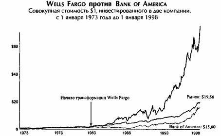
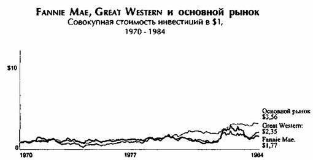
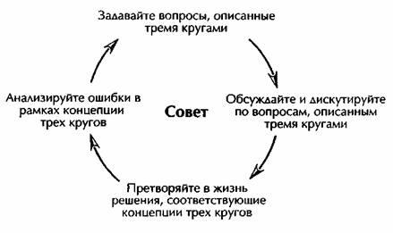
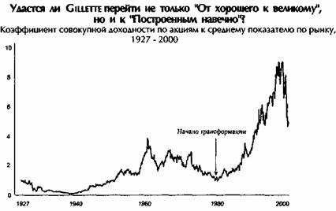

{% include JB/setup %}
{% raw %}
<div>
<br class="calibre1"/><p class="calibre2"><span class="calibre3"><span class="bold">Джим Коллинз – От хорошего к великому</span></span></p><br class="calibre1"/><p class="calibre4"><span class="italic">Почему одни компании</span></p><p class="calibre4"><span class="italic">совершают прорыв,</span></p><p class="calibre4"><span class="italic">а другие нет...</span></p><p class="calibre5"><span class="calibre3"><span class="bold"><span class="calibre6">Contents</span></span></span></p><p class="calibre7"><a href="#filepos19474"><span class="calibre8"><span class="underline">Предисловие</span></span></a></p><p class="calibre9"><a href="#filepos21541"><span class="calibre8"><span class="underline">Члены исследовательской группы</span></span></a></p><p class="calibre9"><a href="#filepos37743"><span class="calibre8"><span class="underline">Предисловие к русскому изданию</span></span></a></p><p class="calibre9"><a href="#filepos42586"><span class="calibre8"><span class="underline">Глава 1. Хорошее - враг великого</span></span></a></p><p class="calibre9"><a href="#filepos58770"><span class="calibre8"><span class="underline">Бесстрашная любознательность</span></span></a></p><p class="calibre9"><a href="#filepos96088"><span class="calibre8"><span class="underline">Модель "от хорошего к великому"</span></span></a></p><p class="calibre9"><a href="#filepos107582"><span class="calibre8"><span class="underline">Вневременная «физика» «от хорошего к великому»</span></span></a></p><p class="calibre9"><a href="#filepos115912"><span class="calibre8"><span class="underline">Примечания к главе 1</span></span></a></p><p class="calibre9"><a href="#filepos129393"><span class="italic"><span class="calibre8">Глава 2 </span></span><span class="calibre8"><span class="underline">Руководители 5 уровня</span></span></a></p><p class="calibre9"><a href="#filepos140109"><span class="calibre8"><span class="underline">Не то, чего мы ждали</span></span></a></p><p class="calibre9"><a href="#filepos146690"><span class="calibre8"><span class="underline">5 уровней иерархии</span></span></a></p><p class="calibre9"><a href="#filepos148680"><span class="calibre8"><span class="underline">Скромность + воля = 5 уровень</span></span></a></p><p class="calibre9"><a href="#filepos160928"><span class="calibre8"><span class="underline">Компания - это прежде всего воспитание преемника</span></span></a></p><p class="calibre9"><a href="#filepos169850"><span class="calibre8"><span class="underline">Скромность украшает</span></span></a></p><p class="calibre9"><a href="#filepos185315"><span class="calibre8"><span class="underline">Неколебимая решимость... сделать то, что должно быть сделано</span></span></a></p><p class="calibre9"><a href="#filepos200897"><span class="calibre8"><span class="underline">Окно и зеркало</span></span></a></p><p class="calibre9"><a href="#filepos215562"><span class="calibre8"><span class="underline">Как достичь 5 уровня</span></span></a></p><p class="calibre9"><a href="#filepos228412"><span class="calibre8"><span class="underline">Основные выводы</span></span></a></p><p class="calibre9"><a href="#filepos234254"><span class="calibre8"><span class="underline">Неожиданные выводы</span></span></a></p><p class="calibre9"><a href="#filepos235876"><span class="calibre8"><span class="underline">Примечания к главе 2</span></span></a></p><p class="calibre9"><a href="#filepos250407"><span class="calibre8"><span class="underline">Глава 3 Сначала кто... затем что</span></span></a></p><p class="calibre9"><a href="#filepos270660"><span class="calibre8"><span class="underline">Не «гений с 1000 помощников»</span></span></a></p><p class="calibre9"><a href="#filepos283840"><span class="calibre8"><span class="underline">Важно, кому вы платите, а не то, как вы платите</span></span></a></p><p class="calibre9"><a href="#filepos299368"><span class="calibre8"><span class="underline">Строгий, но не безжалостный</span></span></a></p><p class="calibre9"><a href="#filepos311353"><span class="calibre8"><span class="underline">Как стать строгим</span></span></a></p><p class="calibre9"><a href="#filepos341411"><span class="calibre8"><span class="underline">«Сначала кто», великие компании, великая жизнь</span></span></a></p><p class="calibre9"><a href="#filepos350392"><span class="calibre8"><span class="underline">Основные выводы</span></span></a></p><p class="calibre9"><a href="#filepos355115"><span class="calibre8"><span class="underline">Неожиданные выводы</span></span></a></p><p class="calibre9"><a href="#filepos356330"><span class="calibre8"><span class="underline">Примечания к главе 3</span></span></a></p><p class="calibre9"><a href="#filepos371826"><span class="italic"><span class="calibre8">Глава 4 </span></span><span class="calibre8"><span class="underline">Смотрите суровым фактам в лицо</span></span></a></p><p class="calibre9"><a href="#filepos389181"><span class="calibre8"><span class="underline">«Факты лучше, чем сны»</span></span></a></p><p class="calibre9"><a href="#filepos407794"><span class="calibre8"><span class="underline">Атмосфера, в которой правда бывает услышана</span></span></a></p><p class="calibre9"><a href="#filepos438244"><span class="calibre8"><span class="underline">Неколебимая вера перед лицом суровых фактов</span></span></a></p><p class="calibre9"><a href="#filepos470747"><span class="calibre8"><span class="underline">Основные выводы</span></span></a></p><p class="calibre9"><a href="#filepos474220"><span class="calibre8"><span class="underline">Неожиданные заключения</span></span></a></p><p class="calibre9"><a href="#filepos475856"><span class="calibre8"><span class="underline">Примечания к главе 4</span></span></a></p><p class="calibre9"><a href="#filepos496378"><span class="italic"><span class="calibre8">Глава 5 </span></span><span class="calibre8"><span class="underline">«Концепция ежа», или три пересекающихся круга</span></span></a></p><p class="calibre9"><a href="#filepos513337"><span class="calibre8"><span class="underline">Три круга</span></span></a></p><p class="calibre9"><a href="#filepos521238"><span class="calibre8"><span class="underline">Три  круга "концепции ежа"</span></span></a></p><p class="calibre9"><a href="#filepos524166"><span class="calibre8"><span class="underline">Понимание того, что вы можете (или не можете) делать лучше всех</span></span></a></p><p class="calibre9"><a href="#filepos556461"><span class="calibre8"><span class="underline">Заглянем в ваш экономический двигатель что у вас в знаменателе?</span></span></a></p><p class="calibre9"><a href="#filepos578015"><span class="calibre8"><span class="underline">Понять, к чему вы испытываете настоящую страсть</span></span></a></p><p class="calibre9"><a href="#filepos588753"><span class="calibre8"><span class="underline">Победа ясного понимания ситуации над бравадой</span></span></a></p><p class="calibre9"><a href="#filepos615629"><span class="calibre8"><span class="underline">Основные выводы</span></span></a></p><p class="calibre9"><a href="#filepos619405"><span class="calibre8"><span class="underline">Неожиданные заключения</span></span></a></p><p class="calibre9"><a href="#filepos621014"><span class="calibre8"><span class="underline">Примечания к главе 5</span></span></a></p><p class="calibre9"><a href="#filepos629768"><span class="italic"><span class="calibre8">Глава 6 </span></span><span class="calibre8"><span class="underline">Культура дисциплины</span></span></a></p><p class="calibre9"><a href="#filepos649347"><span class="calibre8"><span class="underline">Свобода и ответственность как принцип</span></span></a></p><p class="calibre9"><a href="#filepos662327"><span class="calibre8"><span class="underline">Полощите творог</span></span></a></p><p class="calibre9"><a href="#filepos674113"><span class="calibre8"><span class="underline">Культура, а не тирания</span></span></a></p><p class="calibre9"><a href="#filepos689994"><span class="calibre8"><span class="underline">Фанатичная верность  «концепции ежа»</span></span></a></p><p class="calibre9"><a href="#filepos720619"><span class="calibre8"><span class="underline">Перечислите то, что надо перестать делать</span></span></a></p><p class="calibre9"><a href="#filepos732177"><span class="calibre8"><span class="underline">Основные выводы</span></span></a></p><p class="calibre9"><a href="#filepos735833"><span class="calibre8"><span class="underline">Неожиданные заключения</span></span></a></p><p class="calibre9"><a href="#filepos737887"><span class="calibre8"><span class="underline">Примечания к главе 6</span></span></a></p><p class="calibre9"><a href="#filepos752686"><span class="italic"><span class="calibre8">Глава 7 </span></span><span class="calibre8"><span class="underline">Технологии как акселераторы</span></span></a></p><p class="calibre9"><a href="#filepos766316"><span class="calibre8"><span class="underline">Технологии и «концепция ежа»</span></span></a></p><p class="calibre9"><a href="#filepos790654"><span class="calibre8"><span class="underline">Технологии — это акселератор, а не причина развития</span></span></a></p><p class="calibre9"><a href="#filepos799720"><span class="calibre8"><span class="underline">Технологическая ловушка</span></span></a></p><p class="calibre9"><a href="#filepos825008"><span class="calibre8"><span class="underline">Технологии и страх отстать от других</span></span></a></p><p class="calibre9"><a href="#filepos835752"><span class="calibre8"><span class="underline">Основные выводы</span></span></a></p><p class="calibre9"><a href="#filepos839432"><span class="calibre8"><span class="underline">Неожиданные заключения</span></span></a></p><p class="calibre9"><a href="#filepos841065"><span class="calibre8"><span class="underline">Примечания к главе 7</span></span></a></p><p class="calibre9"><a href="#filepos850212"><span class="italic"><span class="calibre8">Глава 8 </span></span><span class="calibre8"><span class="underline">Маховик и порочный круг</span></span></a></p><p class="calibre9"><a href="#filepos854534"><span class="calibre8"><span class="underline">Наращивание потенциала и стремительный рост</span></span></a></p><p class="calibre9"><a href="#filepos884262"><span class="calibre8"><span class="underline">Не просто удачное стечение обстоятельств</span></span></a></p><p class="calibre9"><a href="#filepos892798"><span class="calibre8"><span class="underline">Эффект маховика</span></span></a></p><p class="calibre9"><a href="#filepos905096"><span class="calibre8"><span class="underline">Порочный круг</span></span></a></p><p class="calibre9"><a href="#filepos912401"><span class="calibre8"><span class="underline">Беспорядочные поглощения</span></span></a></p><p class="calibre9"><a href="#filepos916631"><span class="calibre8"><span class="underline">Руководители, которые остановили маховик</span></span></a></p><p class="calibre9"><a href="#filepos922172"><span class="calibre8"><span class="underline">Концепция маховика как обобщающая идея</span></span></a></p><p class="calibre9"><a href="#filepos936184"><span class="calibre8"><span class="underline">Основные выводы</span></span></a></p><p class="calibre9"><a href="#filepos940225"><span class="calibre8"><span class="underline">Неожиданные заключения</span></span></a></p><p class="calibre9"><a href="#filepos942370"><span class="calibre8"><span class="underline">Примечания к главе 8</span></span></a></p><p class="calibre9"><a href="#filepos951044"><span class="italic"><span class="calibre8">Глава 9 </span></span><span class="calibre8"><span class="underline">ОТ «От хорошего к великому» к «построенным навечно»</span></span></a></p><p class="calibre9"><a href="#filepos962205"><span class="calibre8"><span class="underline">«От хорошего к великому» как первый шаг к «построенным навечно»</span></span></a></p><p class="calibre9"><a href="#filepos974025"><span class="calibre8"><span class="underline">Ключевая идеология: дополнительное измерение устойчивого величия</span></span></a></p><p class="calibre9"><a href="#filepos987424"><span class="calibre8"><span class="underline">Хорошие бихаги, плохие бихаги и прочие связи между двумя концепциями</span></span></a></p><p class="calibre9"><a href="#filepos1013169"><span class="calibre8"><span class="underline">Зачем становиться великим?</span></span></a></p><p class="calibre9"><a href="#filepos1038784"><span class="calibre8"><span class="underline">Примечания к главе 9</span></span></a></p><p class="calibre9"><a href="#filepos1044697"><span class="calibre8"><span class="underline">Эпилог</span></span></a></p><p class="calibre9"><a href="#filepos1044764"><span class="calibre8"><span class="underline">Часто задаваемые вопросы</span></span></a></p><p class="calibre9"><a href="#filepos1079380"><span class="calibre8"><span class="underline">Приложение 1.А Проект «от хорошего к великому»</span></span></a></p><p class="calibre9"><a href="#filepos1085138"><span class="calibre8"><span class="underline">Отбор компаний, которые добились выдающихся результатов</span></span></a></p><p class="calibre9"><a href="#filepos1085665"><span class="calibre8"><span class="underline">I этап. От полного перечня к списку из 1435 компаний</span></span></a></p><p class="calibre9"><a href="#filepos1088513"><span class="calibre8"><span class="underline">II этап. От 1435 к 126 компаниям</span></span></a></p><p class="calibre9"><a href="#filepos1093009"><span class="calibre8"><span class="underline">III этап. От 126 к 19 компаниям</span></span></a></p><p class="calibre9"><a href="#filepos1155186"><span class="calibre8"><span class="underline">IV этап. От 19 к 11 компаниям, которые добились выдающихся результатов</span></span></a></p><p class="calibre9"><a href="#filepos1159390"><span class="calibre8"><span class="underline">Приложение 1.В Проект «от хорошего к великому» отбор компаний для прямого сравнения</span></span></a></p><p class="calibre9"><a href="#filepos1159598"><span class="calibre8"><span class="underline">процесс отбора компаний для прямого сравнения</span></span></a></p><p class="calibre9"><a href="#filepos1173525"><span class="calibre8"><span class="underline">Приложение 1.С проект «от хорошего к великому» несостоявшиеся великие компании</span></span></a></p><p class="calibre9"><a href="#filepos1179573"><span class="calibre8"><span class="underline">Приложение 1.D </span></span><span class="italic"><span class="calibre8">«От хорошего к великому» </span></span><span class="calibre8"><span class="underline">обзор хода исследования</span></span></a></p><p class="calibre9"><a href="#filepos1232022"><span class="calibre8"><span class="underline">Принципы сравнительного анализа</span></span></a></p><p class="calibre9"><a href="#filepos1234526"><span class="calibre8"><span class="underline">ПРИЛОЖЕНИЕ 2.А Главы компаний, выбранные среди сотрудников фирмы, против приглашенных со стороны</span></span></a></p><p class="calibre9"><a href="#filepos1253101"><span class="calibre8"><span class="underline">СВОДНЫЙ АНАЛИЗ</span></span></a></p><p class="calibre9"><a href="#filepos1259676"><span class="calibre8"><span class="underline">ПРИЛОЖЕНИЕ 5.А Ранжирование отраслей</span></span></a></p><p class="calibre9"><a href="#filepos1269288"><span class="calibre8"><span class="underline">ПРИЛОЖЕНИЕ 8.А Порочный круг в компаниях прямого сравнения</span></span></a></p><p class="calibre9"><a href="#filepos1269450"><span class="calibre8"><span class="underline">Компании прямого сравнения</span></span></a></p><p class="calibre9"><a href="#filepos1283116"><span class="calibre8"><span class="underline">Несостоявшиеся великие компании</span></span></a></p><p class="calibre9"><a href="#filepos1290352"><span class="calibre8"><span class="underline">ПРИЛОЖЕНИЕ 8.А Примечания</span></span></a></p><p class="calibre9"><a href="#filepos1304128"><span class="calibre8"><span class="underline">ПРИЛОЖЕНИЕ 8. В Анализ поглощений</span></span></a></p><p class="calibre9"><a href="#filepos1325971"><span class="calibre8"><span class="underline">Сноски</span></span></a></p><br class="calibre1"/><p class="calibre10"><span class="calibre11"> </span></p><p class="calibre10"><span class="calibre11">Заканчивая работу над рукописью, я решил пробежаться по маршруту, который пролегал по крутым и скалистым склонам каньона Эльдорадо Спрингз, на юге от моего дома в Боулдере, Колорадо. Я остановился на вершине, в одном из моих любимых мест, где открывался вид на горную местность, все еще покрытую снегом, и неожиданно в голове у меня возник странный вопрос: за сколько я бы согласился </span><span class="italic"><span class="bold">не </span></span><span class="calibre11">издавать книгу «От хорошего к великому»?</span></p><p class="calibre10"><span class="calibre11">Это был интересный эксперимент, поскольку я потратил пять лет на работу над проектом и написание книги. Нельзя сказать, что нет </span><span class="italic">такой суммы денег, </span><span class="calibre11">ради которой я согласился бы похоронить книгу, но когда я мысленно пересек рубеж в сто миллионов долларов, пора было возвращаться назад. Даже такой куш не смог бы заставить меня отказаться от проекта. В сердце я - учитель. И поэтому для меня невозможно не поделиться со студентами всего мира тем, что мы узнали. И во имя духа познания и просвещения я делаю свое дело.</span></p><p class="calibre10"><span class="calibre11">После многих месяцев отшельничества и монашеского уединения я буду рад услышать, что люди считают правильным в этой книге, а что нет. Надеюсь, вы найдете много ценного на ее страницах и сможете применить это в своей деятельности, будь то бизнес, работа в социальном секторе или, может, ваша личная жизнь.</span></p><p class="calibre10"><span class="italic">Джим Коллинз</span></p><p class="calibre10"><a href="mailto:jimcollins@aol.com"><span class="underline">jimcollins@aol.com</span></a>; <a href="http://www.jimcollins.com/"><span class="underline">www.jimcollins.com</span></a>: </p><p class="calibre10">Боулдер, Колорадо, 27 марта 2001</p><br class="calibre1"/><div class="mbppagebreak"></div><p id="filepos19474" class="calibre10"><span class="bold">Предисловие</span></p><p class="calibre10"><span class="italic">Эта книга посвящается «обезьянкам». </span></p><p class="calibre10"><span class="italic">Я люблю вас, всех и каждого.</span></p><br class="calibre1"/><p class="calibre10">Я не могу сказать, что эта книга написана Джимом Коллинзом. Без того огромного вклада, который внесли другие люди, книга не появилась бы на свет. Прежде всего, следует отметить членов исследовательской группы. Мне действительно повезло, в моей команде работали выдающиеся люди, отдававшие все силы этому проекту. В целом, они наработали около пятнадцати тысяч часов, а качество их работы было настолько высоким, что стало образцом, на который я сам начал равняться. Когда я работал над книгой, то постоянно думал о трудолюбии членов исследовательской группы, которые посвятили месяцы (а некоторые и годы) этому исследованию. Я представлял, что они заглядывают мне через плечо и что я ответствен перед ними за создание такого труда, который отвечал бы их стандартам и оправдал бы их усилия. Я надеюсь, эта работа встретит их одобрение. Вся ответственность за несоблюдение стандартов качества лежит полностью на мне.</p><br class="calibre1"/><div class="mbppagebreak"></div><p id="filepos21541" class="calibre10"><span class="bold">Члены исследовательской группы</span></p><p class="calibre10">Брайан Дж. Бэгли (Brian J. Bagley) Скотт Седерберг (Scott Cederberg) Энтони Дж. Чирикос (Anthony/. Chirikos) Дженни Купер (Jenni Cooper) Дьюан К. Даффи (Duane С. Duffy) Эрик Хэйген (Eric Hagen) Мортен Т. Хэнсен (Morten T. Hansen) Лайн Хонанг (Lane Hornung) Кристин Джонс (Christine Jones) Скотт Джонс (Scott Jones) Стефани А. Джадд (Stefanie A. Judd) Брайан К. Ларсеп (Brian С. Larsen) Веийя Ив Ли (Weijia (Eve) Li) Николас М. Осгуд (Nicholas M. Osgood) Вики Мосур Осгуд (Vicki Mosur Osgood) Алисон Сипклэр (Alyson Sinclair) Питер Ван Гендерен (Peter Van Genderen) Пол Вайсман (Paul Weissman) Ли Вилбанкс (Leigh Wilbanks) Амбер Л. Янг (Amber L. Young)</p><p class="calibre10">Я хотел бы поблагодарить Дэниса Б. Нока (Denis В. Nock) из бизнес-школы Университета Колорадо, который помог мне набрать в команду лучших студентов. Набор «нужных» людей в команду был <span class="italic">тем. самым </span>шагом, который обеспечил успех проекта, и Дэнис играл главную роль в том, чтобы в мою команду попали только выдающиеся люди. В Университете Колорадо я также обязан Кэрол Крисман (Carol Krismann) и сотрудникам библиотеки имени Вильяма М. Байта, которые терпеливо работали с членами исследовательской группы, помогая им собирать необходимую информацию. Я также хотел бы выразить признательность Марте Джо Сани (Martha Jo Sani), Жану Велану (Jean Whelan), Линетт Лейкер (Lynnette Leiker), Бэтти Греб (Betty Grebe) и Дайне Маккей (Dinah McKay).</p><p class="calibre10">Я признателен огромному количеству читателей, которые потратили часы на прочтение черновиков и предварительных материалов и представили свои комментарии. Несмотря на то, что их комментарии зачастую были критичны (и всегда полезны), они только укрепили мою веру в потенциал проекта. За открытость и готовность поделиться собственными знаниями и мнением я хотел бы поблагодарить: Керка Арнольда (Kirk Arnold), P. Вэйн Босс (R. Wayne Boss), Наталью Черни-Рока (Natalia Cherney-Roca), Пола М. Коена (Paul M. Cohen), Николь Туми Дэйвис (Nicole Toomey Davis), Эндрю Фенимана (Andrew Fenniman), Кристофера Формана (Christopher Forman), Уильяма К. Гариока (William С. Garriock),Терри Голда (Terry Gold), Эда Гринберга (Ed Greenberg), Вэйна X. Гросса (Wayne H. Gross), Джорджа X. Хейгена (George H. Hagen), Бэки Холл (Becky Hall), Лиз Херон (Liz Heron), Джона Дж. Хилла (John G. НШ), Энн X. Джадд (Ann H. Judd), Роба Кауфмана (Rob Kaufman), Джо Кеннеди (Joe Kennedy), Кейта Кеннеди (Keith Kennedy), Батча Керзнера (Butch Kerzner), Алана Хазея (Alan Khazei), Энн Кнапп (Anne Knapp), Бетину Коски (Betina Koski), Кена Кречмера (Ken Krechmer), аспиранта Барбару Б. Лоутон (Barbara В. Lawton), д-ра Кайла Лефкофа (Kyle Lefkoff), Кевина Мэйни (Kevin Maney), Билла Миллера (ВШМШег), Джозефа П. Модику (Joseph P. Modica),Томаса В. Морриса (Thomas W.Morris), Роберта Мрлика (Robert Mrlik), Джона Т. Майзера( John Т. Myser), Питера Нослера (Peter Nosier), Антонию Озерову (Antonia Ozeroff), Джерри Петерсона (Jerry Peterson), Джима Рейда (Jim Reid), Джеймса Дж. Робба (James J. Robb), Джона Роджерса (John Rogers), Кевина Рамона (Kevin Rumon), Хитер Рейнольде Сагар (Heather Reynolds Sagar), Виктора Санвидо (Victor Sanvido), Мэйсона Д. Шумахера (Mason D. Schumacher), Джеффри Л. Сеглина (Jeffrey L Seglin), Силу Симантоба (Sina Simantob), Орина Смита (Orin Smith), Питера Стаудхаммера (Peter Staudhammer), Рика Стерлинга (Rick Sterling), Тэда Столб ерга (Ted Stolberg), Джеффа Тарра (JeffTarr), Жана Тэйлора (Jean Taylor), Кима Холингсворта Тэйлора (Kim Hollingsworth Taylor), Тома Тирни (Tom Tierney), Джона Витэйла (John Vitale), Дэна Вардропа (Dan Wardrop), Марка X. Уиллиса (Mark H. Willes), Дэвида Л. Витероу (David L. Witherow) и Энтони Р. Ю (Anthony R. Yue).</p><p class="calibre10">Нам очень повезло, мы смогли встретиться со многими руководителями компаний, которые участвовали в процессе превращения хороших компаний в великие. Я хотел бы выразить надежду, что для каждого из перечисленных здесь людей книга отражает то, чего им удалось достичь. Поистине, они — невоспетые герои американского бизнеса: Роберт Адерс (Robert Aders), Уильям Ф. Олдинжер III (William F. Aldinger, HI),Ричард Дж. Апперт (Richard }. Appert), Чарльз Дж. Ашауер мл. (Charles J. Aschauer, Jr.), Дик Охтер (Dick Auchter), Дэвид Айкок (H. David Aycock), Джеймс Д. Бенд (James D. Bernd), Даглас М. Бибби (Douglas M. Bibby), Роджер И. Берк (Roger E. Birk), Марк К. Бреславский (Маге С. Breslawsky), Эли Броад (Eli Broad), д-р Чарльз С. Браун (Dr. Charles S. Brown), Уолтер Бракарт (Walter Bruckart), Верной А. Браннер (Vernon A. Brunner), Джеймс И. Кэмпбелл (James E. Campbell), Фред Каннинг (Fred Canning), Джозеф Дж. Сиско (Joseph J. Cisco), Ричард Кули (Richard Cooley), Майкл Дж. Крителли (Michael J. Critelli), Джозеф Ф. Калман третий (Joseph F. Cullman 3<sup class="calibre12"><small class="calibre13"><span class="calibre14">rd</span></small></sup>), Джон А. Дохерти (John A. Doherty), Даглас Д. Дрисдайл (Douglas D. Drysdale), Лиль Эверингэм (Lyle Everingham), Мередит Б. Фишер (Meredith В. Fischer), Пол Н. Фрутт (Paul N. Fruitt), Андреас Гемблер (Andreas Gembler), Милтон Л. Гласе (Milton L. Glass), Джеймс Г. Гросклаус (James G. Grosklaus), Джек Грандхофер (JackGrundhofer),Джордж Б.Харви (George В.Harvey), ДжеймсХерринг (James Herring), Джеймс Д. Хлавачек (James D. Hlavacek), Джин Д. Хоффман (Gene D. Hofrman), Дж. Тимоти Ховард (J.Timothy Howard), Чарльз Д. Хантер (Charles D. Hunter), Ф. Кеннет Иверсон (F. Kenneth Iverson), Джеймс А.Джонсон (James A. Johnson), Л. Дэниэл Джорндт (L. Daniel Jorndt), Роберт Л. Джосс (Robert L. Joss), Артур Йоргенс (Arthur Juergens), Уильям И. Кельви (William E. Kelvie), Линда К. Найт (Linda К. Knight), Гленн С. Крайс (Glenn S. Kraiss), Роберт Дж. Левин (Robert J. Levin), Эдмунд Уотис Литлфилд (Edmund Wattis Littlefield), Дэвид О. Максвелл (David О. Maxwell), Хамиш Максвелл (Hamish Maxwell), Эллен Мерло (Ellen Merlo), Хайман Мэйерс (Hyman Meyers), Арья Миллер (Arjay Miller), Джон Н. Д. Муди (John N. D. Moody), Дэвид Насеф (David Nassef), Фрэнк Ньюман (Frank Newman), Артур С.Нильсен мл.( Arthur С. Nielsenjr.), Джон Д. Онг (John D. Ong), д-р Эмануэль М. Паппер (Dr. Emanuel M. Papper), Ричард Д. Парсонс (Richard D. Parsons), Дервин Филлипс (Derwyn Phillips), Марвин А. Полман (Marvin A. Pohlman), Уильям Д. Пратт (William D. Pratt), Фред Пердью (Fred Purdue), Майкл Дж. Кигли (Michael J. Quigley), Джордж Ратман (George Rathmann), Карл И. Рейхардт (Carl E. Reichardt), Дэниел М. Рексинджер (Daniel M. Rexinger), Билл Ривас (Bill Rivas), Денис Рони (Dennis Roney), Френсис С. Руни мл. (Francis С. Rooney, Jr.), Вэйн Р. Сандерс (Wayne R. Sanders), Роберт А. Шоелхорн (Robert A. Schoellhorn), Бернард X. Семлер (Bernard Н. Semler), Самуэль Сигел (Samuel Siegel),Томас Ф. Скелли (Thomas F. Skelly),Джозеф П. Стиглик (Joseph P. Stiglich), Джозеф Ф.Терли (Joseph F.Turley), Гленн С. Атт мл. (Glenn S. Utt, Jr.), Эдвард Вилануэва (Edward Villanueva),Чарльз P.Уолгрин III (Charles R. Walgreen,III), Чарльз Уолгрин мл. (Charles R. Walgreen, Jr.), Уильям X. Уебб (William H. Webb),Джордж Вайсманн (George Weissman), Блэр Уайт (Blair White), Уильям Уилсон (William Wilson), Алан Л. Вуртзел (Alan L. Wurtzel) и Уильям И. Зиерден (William E. Zierden).</p><p class="calibre10">Многие люди, работающие в разных компаниях, здорово помогли нам в организации интервью, сборе документов и прочей необходимой информации. В особенности я хотел бы отметить Дэвида А. Болдуина (David A. Baldwin), Катерин Бэбингтон (Catherine Babington), Эн Фэйхи-Уидмап (Ann Fahey-</p><p class="calibre10">Widman) и Мириам Трэнсгруд Уэлти (Miriam Trangsrud Welty) из Abbott Laboratories, Энн М. Коллиер (Ann M. Collier) из Circuit City, Джона П. ДиКуолло (John P. DiQuollo) из Fannie Мае, Дэвида А. Фоша (David A Fausch) и Даниеля М. Фриззи (Danielle M. Frizzi) из Gillette, Тину Бэрри (Tina Barry) за ее помощь в Kimberly-Clark и ее мысли о Дарвине Смите (Darwin Smith), Лизу Кроуч (Lisa Crouch) и Анжи Маккой (Angie McCoy) из Kimberly-Clark, Джека Корнетта (Jack Cornett) из Kroger, Терри С. Лисенби (Terry S. Lisenby) и Корнелию Уэллс (Cornelia Wells) из Nucor, Тимоти А. Сомпольски (Timothy A. Sompolski) и Стивена К. Пэрриша (Steven С. Parrish) из Phillip Morris, Шерил И. Бэттлс (Sheryl Y. Battles) и Диану Л. Руссо (Diana L. Russo) из Pitney Bowes, Томаса Л. Маммозера (Thomas L. Mammoser) и Лори Л. Мейер (Laurie L. Meyer) из Walgreens и Найоми С. Ишида (Naomi S. Ishida) из Wells Fargo.</p><p class="calibre10">Я хотел бы особо поблагодарить: Диану Компано Миллер (Diane Compagno Miller) за то, что она помогла открыть двери в Wells Fargo, Джона С. Рида (John S. Reed) за то, что он помог открыть дверь в Philip Morris, Шэрон Л. Вуртзел (Sharon L. Wurtzel) за то, что она помогла открыть дверь в Circuit City, Карла М. Брауера (Carl M. Brauer) за его материалы о Circuit City и предоставленную рукопись, Джеймса Г. Ююусона (James G. Clawson) за его исследования Circuit City, Карен Льюис (Karen Lewis) за ее помощь в работе с архивами Hewlett-Packard, Трейси Рассел (Tracy Russell) и ее коллег в Центре исследования котировок ценных бумаг за их старания и предоставление самой свежей информации, Ника Сагара (Nick Sagar) за важную информацию, Марвина Бресслера (Marvin Bressler) за его знания и мудрость, Брюса Вулперта (Bruce Woolpert) за то, что он помог мне понять концепцию механизмов (и его неизменную поддержку), доктора Джеффри Т. Лафтига (Dr. Jeffrey Т. Luftig) за доступ к его поразительным знаниям, профессора Уильяма Бриггса (William Briggs) за его способность раскладывать комплексные проблемы на простые составляющие, адмирала Стокдейла (Stockdale) за его бесценный вклад, Дженнифер Фьютерник (Jennifer Futernick) за ее вдохновение при создании салона McKinsey, который послужил началом этого проекта, и Билла Миихапа (Bill Meehan) за первую искру.</p><p class="calibre10">Я хотел бы отметить Джерри Порраса (Jerry Porras), моего научного руководителя, Питера Гинзберга (Peter Ginsberg), моего литературного агента и надежного соратника в издательском мире, Лису Берковитц (Lisa Berkowitz), которая творит чудеса, и Адриана Закхайма (Adrian Zackheim), который верил в эту книгу и поддерживал ее с того момента, когда услышал о ней.</p><p class="calibre10">Я также должен благодарить судьбу за то, что она свела меня с моей женой Джоан Эрнст (Joanne Ernst). Даже после двадцати лет нашего брака она продолжает великолепно справляться с моим слегка нервозным характером и склонностью полностью отдаваться исследованиям, таким как данный проект. Она не только мой самый ценный критик, но и мой самый верный и неизменный союзник. В конечном счете, успех в жизни - это когда супруг или супруга уважает тебя все больше и больше. Исходя из этого, я хотел бы добиться такого же успеха, как она.</p><div class="mbppagebreak"></div><p id="filepos37743" class="calibre10"><span class="bold">Предисловие к русскому изданию</span></p><p class="calibre10">В первом номере журнала «Знание-Сила» за 1988 год была опубликована статья А. Ефимова «Элитные группы, их возникновение и эволюция». Статья замечательна тем, что ее автор-математик показал не только принципиальную возможность, но и методы построения элитных групп. В зависимости от методов формирования множества, элита может улучшаться, воспроизводиться, а может деградировать и даже превращаться в «антиэлиту».</p><p class="calibre10">Вряд ли Коллинз, автор книги «От хорошего к великому», был знаком с содержанием этой статьи. Тем не менее, его книга посвящена тому же, о чем писал Ефимов, но только в бизнесе, а именно: принципам формирования бизнес-элиты.</p><p class="calibre10">Всем известна довольно расхожая фраза - «лучшее - враг хорошего». Коллинз, посвятивший немало лет анализу принципов перехода от хороших показателей к выдающимся, считает наоборот: «хорошее - враг великого». Однако это совсем не эпатаж. Скрупулезный анализ финансовой деятельности почти полутора тысяч компаний США и методика их селекции убедят читателя в его правоте.</p><p class="calibre10">Коллинз не утверждает, что он обладает универсальным рецептом превращения любой компании в великую. Да и нельзя весь бизнес сделать элитным. Бизнес-элита, как лучшая часть бизнеса, всегда будет оставаться всего лишь его частью. Однако книга дает представление о том, как при желании и значительных последовательных усилиях можно превратить свое дело в компанию, действительно великую.</p><p class="calibre10">Книга Дж. Коллинза - это своего рода энциклопедия удачного бизнеса. Причем автор не просто анализирует его. Он приглашает нас «совершить интеллектуальное путешествие, чтобы узнать, что превращает хорошее в великое». Он великодушно преподносит результаты своего исследования, высказывает свои мысли и гипотезы, но просит в то же время думать и не соглашаться.</p><p class="calibre10">Исследование Коллинза и его команды ценно тем, что обладает немалой «добавленной стоимостью». Размышления о роли руководителя, который способен осуществлять преобразования, мысли о том, существует или нет особая стратегия преобразований, всегда ли успех выдающихся компаний основан на применении новых технологий, существует ли какая-то особая организационная культура в элитном бизнесе, способны обогатить самого придирчивого читателя. Нельзя не упомянуть о приложениях, которые имеют самостоятельную научную ценность. Уверен, что многие читатели найдут их бесспорно полезными.</p><p class="calibre15"><span class="bold">Василий К. Дерманов</span></p><p class="calibre15"><span class="italic"> </span></p><div class="mbppagebreak"></div><p id="filepos42586" class="calibre10"><span class="bold">Глава 1. Хорошее - враг великого</span></p><p class="calibre10"><span class="bold">Почему умирать так тяжело,</span></p><p class="calibre16"><span class="bold">так это из-за неудовлетворенного любопытства.</span></p><p class="calibre16">Берил Маркхем. </p><p class="calibre16">На запад, вслед за ночью.</p><br class="calibre1"/><p class="calibre16"><span class="bold">"That's what makes death so hard -</span></p><p class="calibre16"><span class="bold">unsatisfied curiosity".</span>
</p><p class="calibre16">Beryl Markham, </p><p class="calibre16"><span class="italic">West with the Night.<sup class="calibre12"><small class="calibre13"><span class="calibre14"><span class="italic">1</span></span></small></sup></span></p><br class="calibre1"/><p class="calibre16"><span class="bold">Хорошее - враг великого.</span></p><p class="calibre16"><span class="bold">И это одна из основных причин,</span></p><p class="calibre16"><span class="bold">почему у нас так мало чего-то по-настоящему великого.</span></p><br class="calibre1"/><p class="calibre10">У нас нет выдающихся школ, в основном потому, что у нас есть школы хорошие. У нас нет великого правительства, в основном потому, что у нас есть хорошее правительство. Немногие люди живут замечательной жизнью, потому что так легко жить просто <span class="italic">хорошо. </span>Подавляющее большинство компаний никогда не становятся великими именно потому, что подавляющее большинство из них становятся вполне <span class="italic">хорошими, </span>и это их основная проблема.</p><p class="calibre10">Для меня это стало очевидным в 1996 за ужином с группой специалистов по вопросам управления, собравшихся обсудить методы оценки эффективности деятельности организаций. Билл Миихан, глава Сан-Франциского офиса McKinsey &amp; CompanyF<sup class="calibre12"><small class="calibre13"><sup class="calibre17"><small id="filepos45149" class="calibre18"><a href="#filepos1326323"><span class="calibre18">[1]</span></a></small></sup></small></sup>, наклонился ко мне и сказал доверительно: «Знаете, Джим, нам в McKinsey очень нравится ваша книга «Построенные навечно»<sup class="calibre12"><small class="calibre13"><sup class="calibre17"><small id="filepos45463" class="calibre18"><a href="#filepos1326525"><span class="calibre18">[2]</span></a></small></sup></small></sup>. Вы и ваш соавтор написали прекрасный, но, к сожалению, совершенно бесполезный труд».</p><p class="calibre10">Заинтригованный, я попросил его объяснить.</p><p class="calibre10">«Компании, о которых вы написали, всегда были по большой части выдающимися, - сказал он, - у них не было необходимости осуществлять переход от хорошего к великому. Их создатели, такие как Дэвид Паккард и Джордж Мерк, предопределили «великий» характер этих компаний с самого начала. Но что вы поделаете с теми, кто, прожив полжизни, в одно прекрасное утро вдруг понимает, что создал просто хорошую компанию, но никак не великую?»</p><p class="calibre10">Теперь я понимаю, что, сказав «бесполезный», Миихан несколько преувеличивал, добиваясь желаемого эффекта но, по сути, он был прав -по-настоящему великие компании по большей части всегда были таковыми. И подавляющее большинство хороших компаний оставались именно таковыми - просто <span class="italic">хорошими, </span>но не великими. Замечание Миихана, на самом деле, оказалось ценным подарком, поскольку стало тем семенем, из которого вырос вопрос, послуживший основой этой книги, а именно, «может ли хорошая компания стать великой и, если да, то как?». Или <span class="italic">болезнь </span>быть «просто хорошей компанией» неизлечима?</p><p class="calibre10">Спустя пять лет после того судьбоносного ужина мы можем сказать без всякого сомнения - переход от хорошего к великому <span class="italic">действительно </span>(здесь и далее курсив автора) возможен, и нам удалось немало узнать о факторах и условиях, которые необходимы для его осуществления. Чтобы достойно ответить на вызов Билла, моя исследовательская группа и я начали пятилетнее исследование - настоящее путешествие, с целью понять механизмы перехода от «хорошего» к «великому».</p><p class="calibre10">Концепция проекта схематично показана на графике 1.А.<sup class="calibre12"><small class="calibre13"><sup class="calibre17"><small id="filepos48826" class="calibre18"><a href="#filepos1326817"><span class="calibre18">[3]</span></a></small></sup></small></sup> Мы выбрали именно те компании, которым удалось осуществить переход от хороших результатов к выдающимся и сохранять эти высокие результаты в течение, по крайней мере, 15 лет. Мы сравнили показатели деятельности этих компаний с показателями группы тщательно отобранных компаний, которым не удалось осуществить подобного перехода или удалось, но они не смогли удержаться на этом уровне. <sup class="calibre12"><small class="calibre13"><sup class="calibre17"><small id="filepos49635" class="calibre18"><a href="#filepos1327171"><span class="calibre18">[4]</span></a></small></sup></small></sup>Затем мы проанализировали те факторы, которые позволили компаниям перейти из разряда «хороших» в разряд «великих» и стали определяющими для их долгосрочного успеха.<sup class="calibre12"><small class="calibre13"><sup class="calibre17"><small id="filepos50043" class="calibre18"><a href="#filepos1327550"><span class="calibre18">[5]</span></a></small></sup></small></sup> (См. Таблицу «Проект «От хорошего к великому».)</p><p class="calibre10">Те компании, которым удалось перейти из разряда «хороших» в разряд «великих», согласно нашей классификации, и которые мы включили в данное исследование, добились исключительных результатов - средняя доходность по акциям этих компаний в течение 15 лет после их преобразования в 6,9 раз выше, чем средний показатель по рынку.<sup class="calibre12"><small class="calibre13"><span class="calibre14">2</span></small></sup> Сравните этот показатель с результатами General Electric (компания, которая в конце XX века, как многие утверждают, имела лучший состав высшего руководства в США), чья доходность по акциям за 15 лет с 1985 по 2000 превысила средний показатель по рынку только в 2,8 раза.<sup class="calibre12"><small class="calibre13"><span class="calibre14">3</span></small></sup> Более того, если бы вы инвестировали $1 в общий фонд компаний, перешедших из разряда «хороших» в разряд «великих» в 1965, предполагая, что до этого момента доходность по этим акциям была равна средней по рынку, и одновременно инвестировали бы $1 в фонд, который включал бы все акции на рынке<sup class="calibre12"><small class="calibre13"><sup class="calibre17"><small id="filepos51949" class="calibre18"><a href="#filepos1328196"><span class="calibre18">[6]</span></a></small></sup></small></sup>, ваша инвестиция в компании, осуществившие переход, 1 января 2000 года увеличилась бы в 471 раз, инвестиция в акции всех компаний на рынке увеличилась бы лишь в 56 раз.</p><p class="calibre10">Это замечательный результат, но он становится еще более замечательным, если учесть тот факт, что этого добились компании, которые прежде ничем <span class="italic">замечательным </span>не отличались. Приведем всего один пример: компания Walgreens. Более сорока лет Walgreens ничем особенным не выделялась, ее показатели были более или менее сопоставимы со средними показателями по рынку. Но в 1975, вдруг откуда ни возьмись -хлоп! - акции Walgreens начинают карабкаться выше... и выше... и выше... и выше и продолжают карабкаться по сей день. С 31 декабря 1975 до 1 января 2000 доллар, инвестированный в Walgreens, бил доллар, инвестированный в суперзвезду высоких технологий Intel в два раза, General Electric - почти в пять раз, Coca-Cola - почти в восемь раз и средний показатель по рынку (включая взлет акций биржи NASDAQ в конце 1999) - более, чем в <span class="italic">пятнадцать </span>раз. <sup class="calibre12"><small class="calibre13"><sup class="calibre17"><small id="filepos53840" class="calibre18"><a href="#filepos1328448"><span class="calibre18">[7]</span></a></small></sup></small></sup></p><br class="calibre1"/><br class="calibre1"/><table border="0" valign="top" class="calibre19"><tr valign="top" class="calibre20"><td valign="top" class="calibre21">   <p class="calibre10"></p><p class="calibre10">Показывает средний коэффициент, который для каждой компании =1 на момент трансформации  </p></td></tr></table><br class="calibre1"/><br class="calibre1"/><table border="0" valign="top" class="calibre19"><tr valign="top" class="calibre20"><td valign="top" class="calibre21">   <p class="calibre10">График 1. В </p><p class="calibre10">Совокупный возврат на инвестиции $1,</p><p class="calibre10"></p><p class="calibre10"><span class="bold">Примечание:</span></p><p class="calibre10">1. $1,который был поровну поделен между компаниями в каждой группе, 1 января 1965.</p><p class="calibre10">2. Доходность по акциям компаний до момента трансформации была принята равной 1.</p><p class="calibre10">3. Совокупная стоимость каждого фонда на 1 января 2000.</p><p class="calibre10">4. Реинвестирование дивидентов с поправкой на дробление.</p><br class="calibre1"/></td></tr></table><p class="calibre10">Как же удалось компании, которая так долго ничем особенным не отличалась, превратиться в предприятие, чьи показатели превзошли показатели компаний с лучшими в мире управленческими структурами и менеджерами? И почему Walgreens была способна совершить этот переход, в то время как другие компании в этой же самой отрасли, имея те же самые возможности и ресурсы, как, скажем, Eckerd, <span class="italic">не смогли </span>его осуществить? Один только этот пример показывает, на чем было сфокусировано наше исследование.</p><p class="calibre10">Наше пятилетнее исследование принесло немало интересных результатов, многие из которых оказались довольно неожиданными и входят в противоречие с расхожим мнением; но особенно один вывод является, на наш взгляд, совершенно исключительным: мы глубоко убеждены, что практически любая организация может кардинально улучшить результаты своей деятельности и, возможно, даже стать великой, если она будет последовательно претворять в жизнь идеи и концепции, открытые в ходе нашего исследования.</p><p class="calibre10">Эта книга не о Walgreens как таковой и не о какой-нибудь другой отдельно взятой компании из нашего исследования. Мы искали ответы <span class="italic">на вопрос - </span>может ли хорошая компания стать великой компанией и, если да, то как? Ответы непреложные, универсальные, которые могут быть использованы любой организацией.</p><p class="calibre10">Эта книга призвана научить читателя тому, чему научились мы сами. Заключительная часть этой главы - рассказ о нашем путешествии, о методах исследования и некоторых основных выводах. Во второй главе мы с головой погрузимся в анализ основных результатов исследования, начиная с самого провокационного - руководство 5 уровня.</p><div class="mbppagebreak"></div><p id="filepos58770" class="calibre10"><span class="bold">Бесстрашная любознательность</span></p><p class="calibre10">Люди часто спрашивают: «Что заставляет вас заниматься такими грандиозными исследовательскими проектами?» Хороший вопрос. Ответ один - любознательность. Для меня нет ничего более волнующего, чем, столкнувшись с вопросом, на который я не знаю ответа, начать длительный поиск этого самого ответа. Самое замечательное - это взойти на борт судна и, подобно Льюису и Кларку, <sup class="calibre12"><small class="calibre13"><sup class="calibre17"><small id="filepos59614" class="calibre18"><a href="#filepos1329402"><span class="calibre18">[8]</span></a></small></sup></small></sup>отправиться на Запад, сказав себе: «Мы не знаем, что найдем, когда доберемся туда, но мы обязательно расскажем, что мы видели, когда вернемся». Вот краткая история одной Одиссеи, движимой любопытством.</p><p class="calibre10"><span class="bold">Первый этап: поиск</span></p><p class="calibre10">Задавшись вопросом, я начал подбирать группу для исследования. (Когда я говорю «мы», это относится к нашей группе. В общей сложности, двадцать один человек работал на разных стадиях проекта, в среднем, в каждый отдельный момент от четырех до шести человек.)</p><p class="calibre10">Нашей первой задачей было определить компании, чьи показатели позволили бы отнести их к разряду «великих», как показано на графике 1.А. Для этого мы предприняли «смертельный» шестимесячный поход в глубины финансового анализа, разыскивая компании, чьи показатели удовлетворяли бы следующим критериям: совокупная доходность по акциям на уровне или ниже среднего показателя по рынку в течение J 5 лет до момента преобразования; затем, совокупная доходность по акциям как минимум в три раза выше, чем средний показатель по рынку в течение 15 лет после преобразования. Мы выбрали временной интервал в 15 лет, потому что он исключает чистое везение (вам не может просто везти в течение 15 лет) или благоприятные периоды на рынке. Это также превышает средний срок пребывания на посту генеральных директоров компаний (таким образом, нам удалось отделить выдающиеся компании от компаний, которым просто случилось иметь выдающихся руководителей). Мы поставили условием трехкратное превышение среднего показателя по рынку, поскольку это выше, чем средний показатель компаний, которые было принято считать великими. Для сравнения, взаимный фонд, включающий «королевские» акции компаний, которые приведены ниже, с 1985 до 2000 превзошел средний показатель по рынку только в 2,5 раза, в него вошли бы: ЗМ, Boeing, Coca-Cola, General Electric, Hewlett-Packard, Intel, Johnson &amp; Johnson, Merck, Motorola, Pepsi, Procter &amp; Gamble, Wall-Mart и Walt Disney. Неплохой соперник, чтобы помериться силами.</p><p class="calibre10">Мы тщательно изучили и просеяли исходные компании, которые входили в список <span class="italic">Fortune 500<sup class="calibre12"><small class="calibre13"><sup class="calibre17"><small id="filepos63518" class="calibre18"><a href="#filepos1329696"><span class="calibre18"><span class="bold">[9]</span></span></a></small></sup></small></sup></span>с 1965 по 1999, и определили 11 компаний, которые осуществили переход от хороших показателей к выдающимся. (Детальное описание самого исследования в приложении 1.А.) Однако следует обратить внимание на два важных момента. Во-первых, компании должны были продемонстрировать переход от хороших показателей к великим <span class="italic">независимо от отрасли, </span>в которой они работали. Если отрасль как таковая переживала период стремительного развития и деятельность большинства компаний в ней характеризовалась исключительно высокими результатами, мы исключали эти компании из исследования. Во-вторых, мы долго спорили, нужно ли использовать другие критерии для анализа деятельности компаний помимо доходности по акциям, например, вклад компаний в увеличение общественного благосостояния или доходы сотрудников. Мы все-таки склонились к тому, чтобы ограничить критерии отбора единственным показателем, поскольку едва ли удалось бы выработать объективные критерии анализа и сравнения на основе других факторов. В последней главе будет рассмотрен вопрос о связи между основополагающими принципами, направляю щими деятельность корпораций, и их <span class="italic">долгосрочным </span>успехом, хотя фокус всего исследования, в основном, направлен на вопрос - как превратить хорошую организацию в организацию, последовательно и в течение длительного времени добивающуюся исключительных результатов.</p><p class="calibre10">Таблица 1.1: Примеры перехода от хороших результатов к выдающимся</p><br class="calibre1"/><table border="0" valign="top" class="calibre19"><tr valign="top" class="calibre20"><td border="1" valign="top" class="calibre21"><p class="calibre10"><span class="italic">Компании</span></p></td><td border="1" valign="top" class="calibre21"><p class="calibre10"><span class="italic">Результаты в течение 15 лет с момента трансформации<sup class="calibre12"><small class="calibre13"><sup class="calibre17"><small id="filepos66704" class="calibre18"><a href="#filepos1330025"><span class="calibre18"><span class="bold">[10]</span></span></a></small></sup></small></sup></span></p></td><td border="1" valign="top" class="calibre21"><p class="calibre10"><span class="italic">Годы (15-летний интервал)</span></p></td></tr><tr valign="top" class="calibre20"><td border="1" valign="top" class="calibre21"><p class="calibre10">Abbott</p></td><td valign="top" class="calibre21"><p class="calibre10">В 3,98 раз выше, чем средний показатель по рынку</p></td><td valign="top" class="calibre21"><p class="calibre10">1974-1989</p></td></tr><tr valign="top" class="calibre20"><td border="1" valign="top" class="calibre21"><p class="calibre10">CircuitCity</p></td><td valign="top" class="calibre21"><p class="calibre10">18,50</p></td><td valign="top" class="calibre21"><p class="calibre10">1982-1997</p></td></tr><tr valign="top" class="calibre20"><td border="1" valign="top" class="calibre21"><p class="calibre10">Fannie Мае</p></td><td valign="top" class="calibre21"><p class="calibre10">7,56</p></td><td valign="top" class="calibre21"><p class="calibre10">1984-1999</p></td></tr><tr valign="top" class="calibre20"><td border="1" valign="top" class="calibre21"><p class="calibre10">Gillette</p></td><td valign="top" class="calibre21"><p class="calibre10">7,39</p></td><td valign="top" class="calibre21"><p class="calibre10">1980-1995</p></td></tr><tr valign="top" class="calibre20"><td border="1" valign="top" class="calibre21"><p class="calibre10">Kimberly-Clark</p></td><td valign="top" class="calibre21"><p class="calibre10">3,42</p></td><td valign="top" class="calibre21"><p class="calibre10">1972-1987</p></td></tr><tr valign="top" class="calibre20"><td border="1" valign="top" class="calibre21"><p class="calibre10">Kroger</p></td><td valign="top" class="calibre21"><p class="calibre10">4,17</p></td><td valign="top" class="calibre21"><p class="calibre10">1973-1988</p></td></tr><tr valign="top" class="calibre20"><td border="1" valign="top" class="calibre21"><p class="calibre10">Nucor</p></td><td valign="top" class="calibre21"><p class="calibre10">5,16</p></td><td valign="top" class="calibre21"><p class="calibre10">1975-1990</p></td></tr><tr valign="top" class="calibre20"><td border="1" valign="top" class="calibre21"><p class="calibre10">Philip Morris</p></td><td valign="top" class="calibre21"><p class="calibre10">7,06</p></td><td valign="top" class="calibre21"><p class="calibre10">1964-1979</p></td></tr><tr valign="top" class="calibre20"><td border="1" valign="top" class="calibre21"><p class="calibre10">Pitney Bowes</p></td><td valign="top" class="calibre21"><p class="calibre10">7,16</p></td><td valign="top" class="calibre21"><p class="calibre10">1973-1988</p></td></tr><tr valign="top" class="calibre20"><td border="1" valign="top" class="calibre21"><p class="calibre10">Wal greens</p></td><td valign="top" class="calibre21"><p class="calibre10">7,34</p></td><td valign="top" class="calibre21"><p class="calibre10">1975-1990</p></td></tr><tr valign="top" class="calibre20"><td border="1" valign="top" class="calibre21"><p class="calibre10">Wells Fargo</p></td><td valign="top" class="calibre21"><p class="calibre10">3,99</p></td><td valign="top" class="calibre21"><p class="calibre10">1983-1998</p></td></tr></table><p class="calibre10">Сначала мы были очень удивлены, когда увидели компании, попавшие в список. Кто бы мог подумать, что Fannie Мае превзойдет такие компании, как General Electric и Coca-Cola? Или что Walgreens опередит Intel?<sup class="calibre12"><small class="calibre13"><sup class="calibre17"><small id="filepos71433" class="calibre18"><a href="#filepos1330298"><span class="calibre18">[11]</span></a></small></sup></small></sup> Этот неожиданный список компаний - более странную комбинацию трудно было бы представить - сразу преподал нам очень важный урок. Превратить хорошую компанию в великую можно в самой неблагоприятной ситуации. Это был первый из многих сюрпризов, заставивших нас переосмыслить свои представления о корпоративном «величии».</p><p class="calibre10"><span class="bold">Второй этап: с кем сравнивать?</span></p><p class="calibre10">Далее мы сделали, возможно, самый важный шаг во всем исследовании: мы произвели сравнительный анализ деятельности компаний, которые перешли от хорошего к великому, с деятельностью компаний контрольной группы. Главным для нас было не то, что есть общего у компаний, осуществивших переход от хороших результатов к выдающимся, а то, что у этих компаний есть общего, что <span class="italic">отличает </span>их от компаний, которым такой переход осуществить не удалось. Приведем следующий пример. Представьте, что вы пытаетесь установить, что позволяет спортсменам завоевывать золотые медали на Олимпиаде. Если вы будете изучать только золотых медалистов, то обнаружите, что у них у всех есть тренеры. Но если вы включите в свое исследование тех, кто принимал участие в Олимпиаде, но не получил медалей, обнаружится, что у них <span class="italic">тоже </span>были тренеры! Главный вопрос: что систематически <span class="italic">отличает </span>золотых медалистов от тех, кто никогда не завоевывает медалей?</p><p class="calibre10">Таблица 1.2: Компании, вошедшие в исследование</p><br class="calibre1"/><table border="0" valign="top" class="calibre19"><tr valign="top" class="calibre20"><td border="1" valign="top" class="calibre21"><p class="calibre10"><span class="italic">Осуществившие переход от хороших результатов к выдающимся</span></p></td><td valign="top" class="calibre21"><p class="calibre10"><span class="italic">Прямое сравнение</span></p></td><td valign="top" class="calibre21"><p class="calibre10"><span class="italic">Несостоявшиеся великие</span></p></td></tr><tr valign="top" class="calibre20"><td border="1" valign="top" class="calibre21"><p class="calibre10">Abbott</p></td><td valign="top" class="calibre21"><p class="calibre10">Upjohn</p></td><td valign="top" class="calibre21"><p class="calibre10">Burroughs</p></td></tr><tr valign="top" class="calibre20"><td border="1" valign="top" class="calibre21"><p class="calibre10">CircuitCity</p></td><td valign="top" class="calibre21"><p class="calibre10">Silo</p></td><td valign="top" class="calibre21"><p class="calibre10">Chrysler</p></td></tr><tr valign="top" class="calibre20"><td border="1" valign="top" class="calibre21"><p class="calibre10">Fannie Мае</p></td><td valign="top" class="calibre21"><p class="calibre10">Great Western</p></td><td valign="top" class="calibre21"><p class="calibre10">Harris</p></td></tr><tr valign="top" class="calibre20"><td border="1" valign="top" class="calibre21"><p class="calibre10">Gillette</p></td><td valign="top" class="calibre21"><p class="calibre10">Warner-Lambert</p></td><td valign="top" class="calibre21"><p class="calibre10">Hasbro</p></td></tr><tr valign="top" class="calibre20"><td border="1" valign="top" class="calibre21"><p class="calibre10">Kimberly-Clark</p></td><td valign="top" class="calibre21"><p class="calibre10">Scott Paper</p></td><td valign="top" class="calibre21"><p class="calibre10">Rubbermaid</p></td></tr><tr valign="top" class="calibre20"><td border="1" valign="top" class="calibre21"><p class="calibre10">Kroger</p></td><td valign="top" class="calibre21"><p class="calibre10">A&amp;P</p></td><td valign="top" class="calibre21"><p class="calibre10">Teledyne</p></td></tr><tr valign="top" class="calibre20"><td border="1" valign="top" class="calibre21"><p class="calibre10">Nucor</p></td><td valign="top" class="calibre21"><p class="calibre10">Bethlehem Steel</p></td><td valign="top" class="calibre21"><br class="calibre1"/></td></tr><tr valign="top" class="calibre20"><td border="1" valign="top" class="calibre21"><p class="calibre10">Philip Morris</p></td><td valign="top" class="calibre21"><p class="calibre10">RJ Reynolds</p></td><td valign="top" class="calibre21"><br class="calibre1"/></td></tr><tr valign="top" class="calibre20"><td border="1" valign="top" class="calibre21"><p class="calibre10">Pitney Bowes</p></td><td valign="top" class="calibre21"><p class="calibre10">Addressograph</p></td><td valign="top" class="calibre21"><br class="calibre1"/></td></tr><tr valign="top" class="calibre20"><td border="1" valign="top" class="calibre21"><p class="calibre10">Walgreens</p></td><td valign="top" class="calibre21"><p class="calibre10">Eckerd</p></td><td valign="top" class="calibre21"><br class="calibre1"/></td></tr><tr valign="top" class="calibre20"><td border="1" valign="top" class="calibre21"><p class="calibre10">Wells Fargo</p></td><td valign="top" class="calibre21"><p class="calibre10">Bank of America</p></td><td valign="top" class="calibre21"><br class="calibre1"/></td></tr></table><p class="calibre10">Мы выбрали две группы компаний для сравнения. Первая группа состоит из компаний прямого сравнения. Это предприятия той же отрасли, что и компании, осуществившие переход из разряда «хороших» в разряд «великих», и имевшие сопоставимые возможности и ресурсы в то же самое время, но, тем не менее, не сумевшие добиться коренного улучшения своей деятельности. (Детальное описание процесса отбора приведено в Приложении 1.В.) Вторая группа состоит из «несостоявшихся великих компаний» - то есть компаний, которые осуществили переход от хороших показателей к выдающимся, но не смогли удержать высокие показатели. Мы использовали эти компании для рассмотрения вопросов, связанных с удержанием высоких показателей в долгосрочной перспективе. (См. Приложение 1.С). В окончательный список вошли 28 компаний: 11 компаний, добившихся выдающихся результатов, 11 компаний прямого сравнения и 6 компаний, которые не смогли удержать высокие показатели - «несостоявшиеся великие компании».</p><p class="calibre10"><span class="bold">Третий этап: внутри черного ящика</span></p><p class="calibre10">Затем мы начали детальное изучение каждой компании. Мы собрали все печатные материалы о 28 компаниях за последние 50 лет или даже больше. Мы разбили все материалы на категории, такие как стратегия, технологии, руководство и так далее, и присвоили им специальные коды. Затем мы проинтервьюировали большинство генеральных директоров компаний, добившихся выдающихся результатов, которые возглавляли компании в период осуществления преобразований. Мы также произвели разносторонний качественный и количественный анализ, охватывающий все аспекты деятельности компании от слияний до зарплаты высшего руководства, от бизнес-стратегии до корпоративной культуры, от сокращения персонала до стиля руководства, от финансовых показателей до текучести кадров. Чтобы все это проделать, потребовалось 10,5 человеко-лет. Мы прочли и последовательно закодировали примерно 6000 статей, подготовили более 2000 страниц стенограмм интервью и заполнили информацией 384 Мб компьютерной памяти. (Приложение 1 D содержит подробное описание произведенного анализа.)</p><p class="calibre10">Мы сравнивали наше исследование с попыткой заглянуть в черный ящик. Каждый новый шаг на пути осуществления проекта - это как будто бы новая лампочка, начинающая проливать свет на внутренние процессы, которые позволили компаниям добиться выдающихся результатов.</p><p class="calibre10"></p><p class="calibre10">Имея на руках все необходимые данные, мы начали еженедельные дебаты. По каждой из 28 компаний участники группы и я старательно изучали все материалы прессы, результаты анализа деятельности, интервью с руководством и присвоенные коды. Я делал краткий доклад по каждой компании, представляя предварительные заключения и формулируя вопросы. Затем мы обсуждали материалы, спорили, стучали кулаками по столу, кричали, объявляли перерыв, размышляли, снова спорили, снова объявляли перерыв и размышляли, снова обсуждали, делали выводы, и снова спрашивали сами себя «Что же все это значит?»</p><p class="calibre10">Важно понять, что все заключения в данной книге - прямой результат эмпирического исследования. Вначале у нас не было гипотезы или теории, которую мы хотели бы проверить. Мы поставили целью вырабатывать гипотезы, опираясь только на собранные нами факты.</p><p class="calibre10">Основным методом нашего исследования было последовательное сопоставление элементов деятельности компаний, попавших в разряд «выдающихся», с компаниями, отобранными для сравнения, и неизменный вопрос «В чем же разница?»</p><p class="calibre10">Мы также взяли на вооружение историю о «собаке, которая не залаяла». В знаменитом рассказе о Шерлоке Холмсе «Серебряная метка» «странное ночное поведение собаки» послужило ключом к разгадке. Странность поведения заключалась в том, что собака не залаяла, и именно <span class="italic">это </span>заставило Холмса сделать вывод, что подозреваемым мог быть только тот, кого собака хорошо знала.</p><p class="calibre10">Нам <span class="italic">не </span>удалось обнаружить «собак», которые не лаяли бы, когда от них этого ожидали, и это послужило одним из основных ключей к раз-тадке тайны, как хорошие компании превращаются в великие. Когда мы проникали в черный ящик и включали лампочки, то часто бывали поражены тем, что чего-то <span class="italic">не </span>видели, как и тем, что видели. Например:</p><p class="calibre10"><span class="calibre25">·</span><span class="calibre26">   </span>Существует <span class="italic">отрицательная </span>корреляция между приглашением известных руководителей со стороны и выдающимися результатами деятельности компании. В 10 из 11 рассматриваемых компаний генеральные директора были выбраны среди собственных сотрудников, а в сравниваемых компаниях в 6 раз чаще высшее руководство приходило извне. </p><p class="calibre16"><span class="calibre25">·</span><span class="calibre26">   </span>Нет связи между особыми формами вознаграждения генеральных директоров и переходом от хорошего к великому. Данные не подтверждают, что структура и методы вознаграждения высшего руководства являются ключевыми для достижения корпоративного совершенства. </p><p class="calibre16"><span class="calibre25">·</span><span class="calibre26">   </span>Стратегия как таковая не отличает хорошие компании от великих. И те, и другие имели хорошо проработанные стратегии, и у нас нет данных о том, что компании, добившиеся выдающихся результатов, тратили больше времени или сил на выработку своих стратегий. </p><p class="calibre16"><span class="calibre25">·</span><span class="calibre26">   </span>Компании, которые добились выдающихся результатов, в принципе, не фокусировались на том, <span class="italic">что </span>делать, чтобы стать великими, они фокусировались на том, чего не делать, и на том, что надо <span class="italic">перестать </span>делать немедленно. </p><p class="calibre16"><span class="calibre25">·</span><span class="calibre26">   </span>Технологии не имеют в сущности ничего общего с переходом от хорошего к великому. Технологии могут ускоришь процесс преобразований, но они не могут служить причиной преобразований. </p><p class="calibre16"><span class="calibre25">·</span><span class="calibre26">   </span>Слияния и поглощения не играют практически никакой роли в активизации перехода от хорошего к великому; две большие посредственности, слитые воедино, никогда не превратятся в одну великую компанию. </p><p class="calibre16"><span class="calibre25">·</span><span class="calibre26">   </span>Компании, осуществившие переход от хорошего к великому, уделяли мало внимания управлению изменениями, мотивации сотрудников или дисциплине. При благоприятных условиях проблемы ответственности, дисциплины, мотивации или боязни перемен разрешались сами собой. </p><p class="calibre16"><span class="calibre25">·</span><span class="calibre26">   </span>В компаниях, осуществивших переход от хорошего к великому, не придумывали название, не праздновали начало и не составляли планов трансформации. Некоторые руководители даже признавались, что вначале и не подозревали о масштабе перемен, происходящих на их предприятиях. Действительно, эти компании добились революционных перемен в результатах своей деятельности, но <span class="italic">не </span>революционным путем. </p><p class="calibre16"><span class="calibre25">·</span><span class="calibre26">   </span>Компании, которые добились выдающихся результатов, в общем, не представляли процветающие отрасли, и некоторые осуществляли свою деятельность в неблагоприятных секторах экономики. У нас нет примеров компаний, которым по чистому везению случилось оказаться сидящими в ракете, которая взлетела в небо. Выдающийся успех - это не игра случая, а, как оказалось - вполне осознанный выбор. </p><p class="calibre10"><span class="bold">Четвертый этап: от хаоса к концепции</span></p><p class="calibre10">Я попытался определить простой путь, как перейти от собранных данных, результатов обсуждений и «собак, которые не лаяли», к окончательным выводам. Все это вылилось в длительный, пробуксовывающий процесс, состоявший из выработки идей, их проверки с помощью данных, модификации выработанных идей, выстраивания их в концепции, тут же рассыпавшихся под напором фактов - и все приходилось начинать сначала. Процесс повторялся снова и снова до тех пор, пока все не выстроилось в согласованную систему. У всех есть свои сильные стороны, и я думаю, что для меня это способность взять набор разрозненных фактов и, определив в них некоторую закономерность, упорядочить беспорядочное, перейдя от хаоса к концепции.</p><p class="calibre10">Однако хотелось бы еще раз подчеркнуть, что окончательная концепция не является только моим мнением. Хотя, конечно же, я не могу полностью исключить собственный субъективизм из процесса исследования. Результаты и выводы прошли строгий контроль и полностью удовлетворяют самым жестким требованиям, выработанным всеми участниками исследовательской группы. Каждое из основных положений окончательной концепции преобразований является значимым для</p><p class="calibre10">100% рассмотренных компаний, добившихся выдающихся результатов, и не более чем для 30% компаний, использованных для сравнения. Любое заключение, которое не удовлетворяло этому требованию, не было включено в список основных выводов, представленных отдельными главами в этой книге.</p><p class="calibre10">Ниже приводится краткий обзор выработанных концепций, которые подробно рассматриваются в последующих главах. Процесс преобразований можно представить в виде накопления потенциала и следующего за ним стремительного роста; три основные составляющие этого процесса: дисциплинированные люди, дисциплинированное мышление, дисциплинированные действия.<sup class="calibre12"><small class="calibre13"><sup class="calibre17"><small id="filepos95497" class="calibre18"><a href="#filepos1330569"><span class="calibre18">[12]</span></a></small></sup></small></sup> Каждая из составляющих содержит две основные концепции, которые показаны на графике ниже. Идея, проходящая красной нитью через все исследование, была названа нами «маховиком», который представляет гештальт всего процесса перехода от хорошего к великому.</p><div class="mbppagebreak"></div><p id="filepos96088" class="calibre10"><span class="bold">Модель "от хорошего к великому"</span></p><p class="calibre10"></p><p class="calibre10"><span class="italic"><span class="bold"> </span></span></p><p class="calibre10"><span class="italic"><span class="bold">Руководители 5 уровня. </span></span>Мы были удивлены, даже шокированы, когда поняли, какой тип руководства необходим для осуществления преобразований. В отличие от известных корпоративных лидеров, обладающих, как правило, сильным характером и не сходящих со страниц журналов и газет, руководители, которым удалось осуществить преобразования на своих предприятиях и перейти от хорошего к великому, кажутся прилетевшими с Марса. Спокойные, незаметные, сдержанные и даже застенчивые, эти руководители представляют необычную комбинацию скромности и профессиональной воли. Они, скорее, как Линкольн или Сократ, а не Паттон<sup class="calibre12"><small class="calibre13"><sup class="calibre17"><small id="filepos97567" class="calibre18"><a href="#filepos1330941"><span class="calibre18">[13]</span></a></small></sup></small></sup> или Цезарь.</p><p class="calibre10"><span class="italic"><span class="bold">Сначала «кто»... затем «что». </span></span>Мы ожидали, что лидеры, которые осуществляли преобразования компаний, начинали с выработки видения будущего и корпоративной стратегии. Однако выяснилось, что <span class="italic">сначала </span>они подбирают нужных им в путешествии людей, избавляются от людей ненужных, добиваются того, чтобы нужные люди занимали нужные места, и <span class="italic">только затем </span>решают, а куда же, собственно, они едут. Старое утверждение «кадры решают все» оказывается неверным. Не просто кадры решают все, а <span class="italic">нужные </span>кадры.</p><p class="calibre10"><span class="italic"><span class="bold">Смотрите суровым фактам в лицо (но все же не теряйте веры).</span></span></p><p class="calibre10">Мы обнаружили, что любой военнопленный, выживший в плену, может научить нас тому, как создать выдающуюся компанию, гораздо лучше, чем большинство книг по корпоративной стратегии. Каждая великая компания столкнулась с тем, что мы назвали «парадокс Стокдейла»: вы должны продолжать верить в победу, невзирая ни на какие невзгоды, НО В ТО ЖЕ САМОЕ ВРЕМЯ иметь мужество смотреть в лицо действительности, какой бы суровой она ни была.</p><p class="calibre10"><span class="italic"><span class="bold">«Концепция ежа», или Три пересекающихся круга. </span></span>Чтобы добиться выдающихся результатов, необходимо выйти за пределы «проклятия компетентности». Если что-то является вашим ключевым бизнесом, компетенцией, и вы занимались этим многие годы, а может, и десятилетия, это совсем не обязательно означает, что вы делаете это лучше всех в мире. А если вы не являетесь специалистом мирового уровня в том, что является для вас ключевым видом деятельности, этот вид деятельности не может служить для вас основой создания великой компании. Этот подход должен уступить место простой концепции, отражающей глубокое понимание того, что представляют собой три пересекающихся круга.</p><p class="calibre10"><span class="italic"><span class="bold">Культура дисциплины. </span></span>У всех компаний есть своя культура, некоторые отличаются дисциплиной, но немногие обладают <span class="italic">культурой дисциплины. </span>Когда у вас работают дисциплинированные люди, вам не нужна иерархия. Когда у вас дисциплинированное мышление, вам не нужна бюрократия. Когда у вас дисциплинированные действия, вам не нужен избыточный контроль. Если вы соедините культуру дисциплины с предпринимательской этикой, вы получите волшебную смесь, позволяющую добиться выдающихся результатов.</p><p class="calibre10"><span class="italic"><span class="bold">Технологии как акселераторы. </span></span>Компании, которые добились выдающихся результатов, <span class="italic">отводят </span>технологиям особую роль. Они никогда не рассматривают технологии как основной фактор, с которого начинается процесс трансформации. И все-таки, как это ни парадоксально, именно великие компании являются пионерами в применении многих технологий, которые были ими <span class="italic">тщательно отобраны. </span>Мы пришли к заключению, что используемые технологии сами по себе ни при каких обстоятельствах не могут ни сделать компанию великой, ни стать причиной ее неудач.</p><p class="calibre10"><span class="italic"><span class="bold">Маховик и порочный круг.</span></span><span class="italic">
</span>Те, кто начинает революционные преобразования, масштабные программы реструктуризации и трансформации, определенно, не смогут добиться выдающихся результатов. Какими бы ни были конечные цели, переход от хорошего к великому нельзя осуществить одним махом. Нет такого единственного шага, программы, инновационного внедрения, удачного преобразования или волшебного мгновения. Напротив, процесс напоминает вращение гигантского, тяжелого маховика: в одном направлении, медленно разгоняясь, он, наконец, достигает момента, когда накопленный потенциал начинает работать на вас, и компания вступает в период стремительного роста.</p><p class="calibre10"><span class="italic">От «От хорошего к великому» к «Построенным навечно». </span>По некой иронии, теперь я рассматриваю «От хорошего к великому» не как продолжение «Построенных навечно», а скорее как ее <span class="italic">преддверие. </span>«От хорошего к великому»-книга о том, как превратить хорошую организацию в устойчиво развивающуюся. «Построенные навечно» - о том, как, взяв компанию с устойчивыми показателями, превратить ее в компанию, способную, <span class="italic">поддерживая </span>этот успех во времени, стать объектом для подражания. Для осуществления этого заключительного рывка необходимо, чтобы компания обладала ключевыми ценностями и смыслом, выходящим за пределы стремления к прибыли, и все это в сочетании с принципом «стимулируя прогресс, сохранять суть».</p><br class="calibre1"/><table border="0" valign="top" class="calibre19"><tr valign="top" class="calibre20"><td border="1" valign="top" class="calibre21"><p class="calibre10">Создание компании</p></td><td border="1" valign="top" class="calibre21"><p class="calibre10">+</p></td><td border="1" valign="top" class="calibre21"><p class="calibre10"><span class="italic">Концепции к От хорошего к великому»</span></p></td><td border="1" valign="top" class="calibre21"><p class="calibre10"></p></td><td border="1" valign="top" class="calibre21"><p class="calibre10">Удержание выдающихся результатов</p></td><td border="1" valign="top" class="calibre21"><p class="calibre10">+</p></td><td border="1" valign="top" class="calibre21"><p class="calibre10"><span class="italic">Концепции «Построенных навечно»</span></p></td><td border="1" valign="top" class="calibre21"><p class="calibre10"></p></td><td border="1" valign="top" class="calibre21"><p class="calibre10">Великая компания, способная выдержать испытание временем</p></td></tr></table><p class="calibre10">Если вы являетесь приверженцем идей, изложенных в «Построенных навечно», пожалуйста, воздержитесь от вопросов о том, как в точности взаимосвязаны эти два исследования, пока вы читаете «От хорошего к великому». В последней главе я вернусь к этому вопросу и покажу, как связаны оба проекта.</p><div class="mbppagebreak"></div><p id="filepos107582" class="calibre10"><span class="bold">Вневременная «физика» «от хорошего к великому»</span></p><p class="calibre10">Как только я закончил доклад по результатам этого исследования на конференции руководителей интернетовских компаний, кто-то в зале поднял руку. «Останутся ли ваши выводы верными для Новой экономики? Не следует ли нам отказаться от старых теорий и начать все заново?» Это вполне правомерный вопрос, поскольку мы живем во времена коренных перемен, и его задают так часто, что я хотел бы разделаться с этим до того, как мы углубимся в суть исследования.</p><p class="calibre10">Да, мир меняется и будет меняться. Но это не означает, что нам надо прекратить поиск вечных принципов. Инженерная мысль постоянно развивается и изменяется, но основные законы физики остаются относительно неизменными. Мне хочется верить, что наша работа - это поиск вечных принципов, определение «физики» великих организаций. Они останутся справедливыми, невзирая ни на какие изменения в окружающем мире. Да, изменится их применение (как в работе инженеров), но останутся неизменными законы организованной человеческой деятельности (как законы физики).</p><p class="calibre10">Да, мы живем в условиях Новой экономики, и это ни для кого не секрет. Но разве те, кто пережил открытие электричества или изобретение телефона, автомобиля, радио или транзистора, в меньшей степени ощущали себя участниками нового экономического процесса, чем мы сегодня? На каждой новой стадии развития новой экономики лучшие лидеры последовательно действовали в соответствии с основными, базовыми принципами.</p><p class="calibre10">Некоторые придерживаются мнения, что темп нынешних перемен намного выше, чем в прошлом. Возможно. Но даже если это так, некоторые компании пережили перемены, которые по своим темпам намного превосходили сегодняшние. Так, в начале 1980-х банковская отрасль за три года пережила коренную трансформацию, вызванную отменой государственного регулирования. Для банковского сектора это определенно была новая экономика! И все же Wells Fargo, следуя принципам, которые соотносятся с основными выводами нашего исследования, добился исключительных результатов прямо в разгар стремительных перемен.</p><p class="calibre10">Когда вы будете читать последующие главы, помните об одном - зта книга не о старой экономике. Эта книга и не о Новой экономике. Оно даже не о компаниях, которые в ней описаны, и не о бизнесе как таковом. В конечном счете, зта книга лишь о неизменных принципах перехода от хорошего к великому. Она о том, как взять хорошую организацию и сделать так, чтобы она последовательно добивалась выдающиеся результатов, и не важно, что конкретно будет пониматься под словом «результаты».</p><p class="calibre10">Может показаться странным, но я не рассматриваю свою работу как исследование в области бизнеса, я также не думаю, что эта книга -о бизнесе. Напротив, я считаю, что моя работа ставит целью определить, какие факторы помогают организациям стать великими. Организациям <span class="italic">любого </span>рода. Мне интересно понять принципиальную разницу между <span class="italic">великим </span>и <span class="italic">хорошим, </span>между <span class="italic">превосходным </span>и <span class="italic">посредственным. </span>Объектом исследования я выбрал корпорации (открытые акционерные общества), поскольку они имеют две особо привлекательные для исследователя черты: согласие относительно определения результатов их деятельности (так что можно точно отобрать объекты исследования) и огромное количество широко доступных данных.</p><p class="calibre10">То, что «хорошее» - враг «великого» - проблема не только бизнеса. Это проблема <span class="italic">общечеловеческая. </span>Если нам удастся найти ключ к загадке перехода от хорошего к великому, то у нас в руках окажется нечто ценное для организации любого рода. Хорошие школы смогут стать школами великими. Хорошие газеты смогут стать великими газетами. Хорошие церкви - великими церквями. Хорошие правительственные учреждения - великими правительственными учреждениями. И хорошие компании - великими компаниями.</p><p class="calibre10">Итак, я приглашаю вас присоединиться ко мне и совершить интеллектуальное путешествие, чтобы узнать, что превращает хорошее в великое. Смело подвергайте сомнению все, что здесь изложено. Как однажды сказал один из моих любимых профессоров: «Самые лучшие студенты - те, кто никогда до конца не доверяет своим профессорам». Это правда. Но он также сказал: «Вы не должны отвергать факты только потому, что вам не нравится то, что они доказывают». Все в этой книге-для вашего рассмотрения и анализа, а не для бездумного принятия на веру. Вы - судьи и присяжные. И пусть говорят факты.</p><br class="calibre1"/><div class="mbppagebreak"></div><p id="filepos115912" class="calibre10"><span class="bold">Примечания к главе 1</span></p><p class="calibre10"><sup class="calibre12"><small class="calibre13"><span class="calibre14">1</span></small></sup> Beryl Markham, <span class="italic">West with the Night. </span>San Francisco: North Point Press, 1983.</p><p class="calibre10"><sup class="calibre12"><small class="calibre13"><span class="calibre14">2</span></small></sup> Расчет доходности по акциям был произведен на основе данных Исследовательского центра котировок ценных бумаг Чикагского Университета. Основные определения:</p><p class="calibre10">- <span class="italic">Месячная доходность: </span>совокупная доходность за определенный месяц, включая реинвестированные дивиденды на каждую акцию.</p><p class="calibre10">- <span class="italic">Суммарная месячная доходность: </span>суммарная доходность по всем акциям компании за определенный месяц, включая реинвестированные дивиденды на каждую акцию.</p><p class="calibre10">- <span class="italic">Совокупная доходность по акциям: </span>совокупная стоимость X долларов, инвестированных в отдельную акцию с момента 1 до момента <span class="italic">2, </span>рассчитанная по формуле:</p><p class="calibre10">$Х*(1 + месячная доходность@ ml)*(1 + месячная доходность @ m2*... (1+ месячная доходность @t2), где ml - окончание первого месяца, после начала отсчета 1, m2 - окончание второго месяца с момента отсчета 1 и так далее.</p><p class="calibre10">- <span class="italic">Средний показатель по рынку </span>(или просто рынок) - Нью-Йоркская Фондовая Биржа, Американская Фондовая Биржа и NASDAQ. Показатель состоит из суммарной стоимости всех компаний, чьи акции продаются на этих биржах (включая реинвестированные дивиденды), помноженные на отношение стоимости компании к общей стоимости всего рынка.</p><p class="calibre10">- <span class="italic">Коэффициент совокупной доходности акций относительно рынка: </span>в конце определенного периода этот коэффициент рассчитывается путем деления совокупного дохода от X долларов, инвестированных в компанию, на совокупный доход от X долларов, инвестированных в рынок, обе инвестиции должны быть произведены в один и тот же день.</p><p class="calibre10">- <span class="italic">День начала трансформации для компаний, которые добились выдающихся результатов: </span>точная дата начала перехода от хорошего к великому - это день, когда результаты деятельности компании, с точки зрения доходности их акций относительно среднего показателя по рынку, начинают значительно превышать доходность рынка после длительного периода, когда они стояли на уровне средних показателей по рынку или уступали ему, и никогда уже не опускались ниже.</p><p class="calibre10"><sup class="calibre12"><small class="calibre13"><span class="calibre14">3</span></small></sup> Данные Исследовательского центра котировок ценных бумаг Чикагского Университета, совокупный доход по акциям был рассчитан для периода с 31.12.84 до 31.12.99 для General Electric и рынка, предполагая реинвестирование дивидендов и с поправкой на дробление акций.</p><p class="calibre10"><sup class="calibre12"><small class="calibre13"><span class="calibre14">4</span></small></sup> График 1.А был построен по следующей методологии:</p><p class="calibre10">а) Для каждой из компаний, которые добились выдающихся результатов, инвестируйте $1 за 15 лет до начала трансформации. Сделайте аналогичную инвестицию в рынок. Рассчитайте совокупный доход на $1, инвестированный на момент трансформации, минус 15 лет до момента начала трансформации и плюс 15 лет после для обеих инвестиций. В случае, если в Исследовательском центре котировок ценных бумаг Чикагского Университета нет необходимых данных (обычно поскольку компании не были открытыми акционерными обществами, появились в результате слияний или были приобретены другими компаниями), используйте вместо этого средние показатели по рынку.</p><p class="calibre10">b) Для каждой компании, которая добилась выдающихся результатов, рассчитайте коэффициент совокупного дохода по акциям к среднему по рынку для периода с t-15 до t+15 (где t - точка начала трансформации), чтобы построить кривую совокупной доходности акций.</p><p class="calibre10">c) Сдвиньте кривую этого коэффициента совокупной доходности для каждой компании так, чтобы на момент начала трансформации коэффициент совокупной доходности к среднему по рынку равнялся 1. Это сведет все начала процессов трансформаций всех компаний, которые добились выдающихся результатов, к общей точке начала отсчета, обозначенной t. Сделайте это путем деления коэффициента совокупной доходности акций к среднему показателю по рынку за <span class="italic">каждый </span>месяц (рассчитанные в пункте b) с t-15 до t+15 на совокупный доход по акциям, рассчитанный <span class="italic">точно </span>на момент начала трансформации.</p><p class="calibre10">d) Используйте эти смещенные показатели доходности, чтобы рассчитать средние коэффициенты к среднему показателю по рынку для всех 11 компаний, которые добились выдающихся результатов, за каждый месяц от t-15 до t+15. Другими словами, рассчитайте среднее значение для показателей, рассчитанных в пункте с для t-15, для всех 11 компаний, затем t-15 плюс один месяц для всех 11 компаний, плюс два месяца и так далее для всех 360 месяцев. Это даст отношение суммарного, совокупного дохода для всех компаний, которые добились выдающихся результатов, к среднему показателю по рынку.</p><p class="calibre10">e) Для всех компаний прямого сравнения повторите шаги в пунктах а-с, используя те же даты, которые вы использовали для их двойников, которым удалось добиться выдающихся результатов</p><p class="calibre10">f) Для компаний прямого сравнения повторите шаги пункта d.</p><p class="calibre10">g) График 1 .А показывает результаты деятельности компаний, которые добились выдающихся результатов, по сравнению с компаниями, которые мы использовали для прямого сравнения, совокупный средний коэффициент доходности на рынке, от t-15 до t +15, где t - единая точка отсчета, в которой этот коэффициент равен 1,0.</p><p class="calibre10">График 1.В был построен по следующей методологии:</p><p class="calibre10">a)Для каждой компании, которая добилась выдающихся результатов, инвестируйте $1 31 декабря 1964 (дата первой трансформации в нашем исследовании).</p><p class="calibre10">b) Для каждой компании, которая добилась выдающихся результатов, рассчитайте совокупную доходность по средней рыночной ставке доходности до момента начала трансформации, затем начните использовать ставку доходности, которая является средней для компаний, которые добились выдающихся результатов. Для всех компаний, по которым в Исследовательском центре котировок ценных бумаг Чикагского Университета нет данных (такое случается, если акции компаний еще не поступили на рынок, а также если компании появились в результате слияний или были приобретены другими компаниями), используйте средние показатели по рынку.</p><p class="calibre10">c) Для каждого месяца с 31 декабря 1964 года до 31 декабря 1999 сложите совокупную доходность по акциям всех 11 компаний и разделите это на 11. Это даст вам совокупную доходность по инвестициям во все эти компании.</p><p class="calibre10">d) Для среднего показателя по рынку инвестируйте $ 1 31 декабря 1964 года до 31 декабря 1999.</p><p class="calibre10">e) Для каждой компании, используемой для прямого сравнения, повторите шаги а - с, используя средний показатель по рынку до момента трансформации соответствующей компании, которая добилась выдающихся результатов. Замечание: для R.J.R. мы использовали средний показатель по рынку с 31.05.89 до 31.12.99, поскольку компания после того, как контрольный пакет был выкуплен высшим руководством, была разбита на части (R.J.R. и Nabisco).</p><p class="calibre10">f) График 1.В показывает данные по рынку как по компаниям, которые мы использовали для сравнения, так и по компаниям, которые добились выдающихся результатов, при условии, если бы вы инвестировали $1 с 31 декабря 1964 года до 2000 года.</p><div class="mbppagebreak"></div><p id="filepos129393" class="calibre10"><span class="italic"><span class="bold">Глава 2 </span></span><span class="bold">Руководители 5 уровня</span></p><p class="calibre10"></p><p class="calibre10"><span class="bold">Вы можете добиться чего угодно в жизни при условии, что вам будет не важно, кому достанутся лавры.</span></p><p class="calibre10">Гарри Труман</p><p class="calibre10"><span class="bold">"You can accomplish anything in life, provided that you do not mind who gets the credit."</span></p><p class="calibre10">Harry S. Truman<sup class="calibre12"><small class="calibre13"><span class="calibre14">1</span></small></sup></p><br class="calibre1"/><p class="calibre10">В 1971 году, казалось бы, ничем не выдающийся человек по имени Дарвин И. Смит стал главой компании Kimberly-Clark - старого, неповоротливого предприятия по производству бумаги, чьи акции за предшествующие 20 лет упали на 36 % ниже среднего показателя по рынку.</p><p class="calibre10">Смит, работавший в компании юристом и отличавшийся мягким характером, сам не был уверен в том, что правление компании сделало правильный выбор, назначив его. Это чувство еще больше усилилось, когда один из членов правления резко осадил его, напомнив, что у него нет соответствующего образования, чтобы быть главой фирмы.<sup class="calibre12"><small class="calibre13"><span class="calibre14">2</span></small></sup> Смит, однако, все-таки возглавил фирму и оставался на этом посту 20 лет.</p><p class="calibre10">И какие двадцать лет! В течение этого времени Смит осуществил поразительные преобразования, превратив Kimberly-Clark в мирового лидера по производству потребительских товаров из бумаги. Под его руководством Kimberly-Clark добилась доходности по своим акциям, в 4,1 раза превышавшей средний показатель по рынку, обошла прямых конкурентов (Scott Paper и Procter &amp; Gamble) и опередила такие почтенные компании, как Coca-Cola, Hewlett-Packard, 3M и General Electric.</p><p class="calibre10">Эти впечатляющие результаты - один из лучших в XX веке примеров превращения хорошей компании в великую. И все же немногие люди, включая ревностных студентов, изучающих менеджмент и историю корпораций, слышали о Дарвине Смите. Возможно, ему самому нравилось, что это именно так. Человек, лишенный самомнения, Смит находил удовольствие в обществе сантехников и электриков и проводил отпуск на своей ферме в Висконсине, разъезжая на тарахтящем тракторе и расчищая территорию от камней или копая канавы.<sup class="calibre12"><small class="calibre13"><span class="calibre14">3</span></small></sup> Он ничего не делал для того, чтобы создать себе имидж героя или выдающегося корпоративного лидера."<sup class="calibre12"><small class="calibre13"><span class="calibre14">4</span></small></sup> Когда один журналист попросил Смита описать его стиль руководства, тот, одетый в старомодный костюм, который смотрелся на нем, как на фермере, отоварившемся в ближайшем сельпо, уставился на него сквозь толстые стекла очков, делавших его похожим на инженера-затворника. После долгой паузы, которая становилась неприличной, он просто сказал: «Эксцентричность».<sup class="calibre12"><small class="calibre13"><span class="calibre14">5</span></small></sup><span class="italic">Wall Street Journal </span>не публиковал восторженных статей о Дарвине Смите.</p><p class="calibre10">Но если вы думаете, что Дарвин Смит был мягким и кротким, вы глубоко ошибаетесь. Его неловкость, скромность и полное отсутствие претенциозности уживались с решительной, даже стоической целеустремленностью. Смит вырос в бедной фермерской семье в Индиане; днем он работал на International Harvester<sup class="calibre12"><small class="calibre13"><sup class="calibre17"><small id="filepos134969" class="calibre18"><a href="#filepos1331378"><span class="calibre18">[14]</span></a></small></sup></small></sup>, чтобы по вечерам заниматься в Университете штата Индиана. Однажды на работе ему отрезало палец; говорят, что вечером он все равно пришел на занятия, а на следующий день вернулся на работу. Может, это и преувеличение, но, тем не менее, потеря пальца никак не отбила у него охоту получить образование. Он продолжал работать днем и учиться вечером и добился того, что его приняли на юридический факультет Гарварда.<sup class="calibre12"><small class="calibre13"><span class="calibre14">6</span></small></sup> Через два месяца после того, как он стал главой компании, врачи обнаружили у него рак носоглотки и сказали, что жить ему осталось меньше одного года. Он сообщил об этом совету директоров, но дал понять, что он еще не умер, да и вообще в ближайшее время умирать не собирается. Смит придерживался своего напряженного графика работы, еженедельно проделывая путь из Висконсина в Хьюстон для терапевтического облучения, и благополучно прожил еще 25 лет, большую их часть - на посту главы компании.<sup class="calibre12"><small class="calibre13"><span class="calibre14">7</span></small></sup></p><p class="calibre10"></p><p class="calibre10"></p><p class="calibre10">Смит взялся за Kimberly-Clark со свирепой решительностью, особенно, когда он принял самое драматическое в истории компании решение: продать целлюлозно-бумажные комбинаты.<sup class="calibre12"><small class="calibre13"><span class="calibre14">8</span></small></sup> Вскоре после того, как он стал главой компании, Смит и его команда пришли к заключению, что основной бизнес - производство бумаги - обречен на прозябание. Предприятия были экономически слабы, а продукция - некон-куренто-способна.<sup class="calibre12"><small class="calibre13"><span class="calibre14">9</span></small></sup> Но, команда Смита полагала, что если Kimberly-Clark бросится в огонь конкурентной борьбы на рынке потребительских товаров, конкуренция с такими мировыми гигантами, как Procter &amp; Gamble, заставит ее либо добиться исключительных результатов, либо исчезнуть.</p><p class="calibre10">Так, подобно военачальнику, который сжигает корабли после высадки армии на берег, оставляя выбор только между победой и смертью, Смит объявил о решении продать комбинаты, что один из членов совета директоров назвал «самым дальновидным» решением, когда-либо принятым руководителем компании. Компания продала даже комбинат в Кимберли, штат Висконсин и инвестировала все деньги в развитие таких брэндов, как Huggies и Kleenex.<sup class="calibre12"><small class="calibre13"><span class="calibre14">10</span></small></sup></p><p class="calibre10">Бизнес-пресса назвала шаг глупым, а аналитики с Уолл Стрит снизили оценки акций компании.<sup class="calibre12"><small class="calibre13"><span class="calibre14">11</span></small></sup> Смит не дрогнул. 25 лет спустя Kimberly-Clark купила Scott Paper и опередила Procter &amp; Gamble в шести из восьми товарных категорий.<sup class="calibre12"><small class="calibre13"><span class="calibre14">12</span></small></sup> Уйдя с поста, Смит прокомментировал выдающиеся результаты, которых ему удалось достичь, словами: «Я все время старался доказать, что могу справиться с этой работой».<sup class="calibre12"><small class="calibre13"><span class="calibre14">13</span></small></sup></p><div class="mbppagebreak"></div><p id="filepos140109" class="calibre10"><span class="bold">Не то, чего мы ждали</span></p><p class="calibre10">Дарвин Смит является классическим образцом того, что мы стали называть «руководитель 5 уровня» - человек, который соединяет в себе выдающиеся человеческие качества с сильной профессиональной волей. Мы обнаружили лидеров такого типа у руля каждой великой компании в период ее преобразования. Как и Смит, они скромны, но исключительно решительны, когда дело касается того, что должно быть сделано для развития компании.</p><p class="calibre10">Руководители 5 уровня реализуются не через собственный успех, а через достижение большей цели - создание великой компании. Это не означает, что руководители 5 уровня лишены честолюбия. Напротив, они исключительно честолюбивы, <span class="italic">но их честолюбие относится, в первую очередь, к компаниям, которыми они управляют, а не к ним самим.</span></p><p class="calibre10">Термин «5 уровень» представляет высший уровень иерархии способностей к высшему руководству, созданной нами в ходе исследования (см. диаграмму «5 уровней иерархии»). Нет необходимости последовательно переходить от первого уровня до пятого, развить качества руководителей низших уровней можно и позже. 5 уровень включает в себя все качества, относящиеся и к более низким ступеням пирамиды. Я не собираюсь описывать все уровни иерархии, поскольку уровни с 1 по 4 самоочевидны и охарактеризованы другими авторами. Эта глава рассказывает об отличительных качествах, которыми обладают лидеры, превратившие хорошие компании в великие, то есть о тех чертах, которыми наделены только лидеры 5 уровня.</p><p class="calibre10">Мы не занимались целенаправленными поисками качеств, характерных для руководителей 5 уровня, или чего-то в этом роде. Наоборот, я настаивал на том, чтобы исследовательская группа <span class="italic">принижала </span>роль, которую играет высшее руководство, чтобы избежать ситуации, когда все заслуги, как и вся ответственность за неудачи, приписываются главе корпорации, - весьма распространенный в наши дни подход.</p><p class="calibre10">Вера в то, что все - от лидеров, сродни вере в то, что все - от Бога, а именно это тормозило развитие научного представления о мире в Средние века. В XVI веке люди приписывали все, что они не могли объяснить, воле Божьей. Почему нет урожая? Воля Божья. Откуда землетрясение? Воля Божья. Что держит планеты на небе? Бог. Но в эпоху Просвещения начали искать научные объяснения, так появились физика, химия, биология, строительное искусство и так далее. Это не означает, что мы стали атеистами, просто мы лучше поняли, как работают «ходики» Вселенной.</p><p class="calibre10">Подобным же образом каждый раз, когда в руководстве компаний мы видим причину всех бед и побед, мы уподобляемся людям XVI века. Мы просто расписываемся в собственном невежестве. Не то, чтобы нам следовало стать «атеистами» в вопросах управления (лидерство имеет большое значение), но каждый раз, когда мы в негодовании всплескиваем руками, восклицая: «Во всем виноваты начальники!», мы отказываем себе в возможности развить более глубокое, научное понимание того, как работают «ходики» великих компаний.</p><p class="calibre10">Так, на ранней стадии проекта я постоянно повторял: «Не обращайте внимания на руководство компаний». Но моя исследовательская группа продолжала возражать: «Нет, в них есть что-то, отличное от других. Мы не можем это игнорировать». Я возражал в свою очередь: «Компании, которые мы используем для сравнения, тоже имеют своих лидеров, даже выдающихся лидеров, в чем же разница?». Так вспыхивали споры.</p><p class="calibre10">В конце концов, как это всегда и должно быть, победили факты.</p><div class="mbppagebreak"></div><p id="filepos146690" class="calibre10"><span class="bold">5 Уровней иерархии</span></p><p class="calibre10"></p><p class="calibre10">Руководители компаний, которые добились выдающихся результатов, все оказались как будто из одного теста. Неважно, производит ли компания товары народного потребления или промышленные товары, находится она в кризисном или благополучном состоянии, предлагает товары или услуги. Неважно, когда происходили преобразования и каков размер компании. Во главе всех компаний, достигших выдающихся результатов, во время осуществления преобразований стояли руководители 5 уровня. Более того, отсутствие руководства 5 уровня характерно для компаний, использованных для сравнения. Таким образом, концепция «руководителей 5 уровня» вступает в противоречие с расхожим мнением о том, что для осуществления преобразований на предприятиях нам позарез нужны «спасители», признанные лидеры с высокой самооценкой. Важно отметить, что концепция «руководителей 5 уровня» выведена на основе эмпирических данных и не является идеологическим ходом.</p><div class="mbppagebreak"></div><p id="filepos148680" class="calibre10"><span class="bold">СКРОМНОСТЬ + ВОЛЯ = 5 УРОВЕНЬ</span></p><p class="calibre10">Руководители 5 уровня являют собой пример амбивалентности, ибо они одновременно скромные и волевые, застенчивые и отважные. Замечательно иллюстрирует это личность Авраама Линкольна (одного из немногих президентов США за всю их историю, которого можно отнести к руководителям 5 уровня), никогда не позволявшего своему эгоизму доминировать над стремлением добиться процветания нации. Те, кто ошибочно принимал личную скромность Линкольна, его застенчивость и неуклюжие манеры за слабость, скоро обнаружили, как жестоко они ошибались: война унесла 250 тысяч жизней конфедератов и 360 тысяч жизней унионистов, включая жизнь самого Линкольна.<sup class="calibre12"><small class="calibre13"><span class="calibre14">14</span></small></sup></p><p class="calibre10">Сравнение Авраама Линкольна с руководителем компании, достигшей выдающихся результатов, может показаться натянутым, но и в первом, и во втором случае мы говорим о некой двойственности характера. Возьмем Колмана Моклера, главу компании Gillette с 1975 по 1991 годы. За это время Gillette выдержала три атаки, которые могли лишить компанию возможности добиться выдающихся результатов. Фирма Revlon дважды пыталась поглотить компанию; Revlon'oм тогда руководил Рональд Перельман, ковбой бизнеса, не выпускавший сигару изо рта и знаменитый своим умением разбивать компании на части для обеспечения джанк-облигаций и финансирования очередных налетов.<sup class="calibre12"><small class="calibre13"><span class="calibre14">15 </span></small></sup>Третья атака была со стороны Coniston Partners, инвестиционной группы, которая, купив 5,9% акций Gillette, начала борьбу за контроль в совете директоров, надеясь взвинтить стоимость акций компании и нажиться на спекуляции.<sup class="calibre12"><small class="calibre13"><span class="calibre14">1б</span></small></sup> Если <span class="italic">бы </span>Gillette согласилась на цену, предложенную Перельманом, акционеры немедленно получили бы дополнительных 44% дохода по своим акциям.<sup class="calibre12"><small class="calibre13"><span class="calibre14">17</span></small></sup> $ 2,3 млрд дохода на 116 млн акций заставило бы большинство руководителей капитулировать, прикарманив миллионы с продажи принадлежащих им самим акций, и нагрев руки, «катапультироваться на золотом парашюте». <sup class="calibre12"><small class="calibre13"><sup class="calibre17"><small id="filepos152432" class="calibre18"><a href="#filepos1331556"><span class="calibre18">[15]</span></a></small></sup></small></sup></p><p class="calibre10">Колман Моклер не капитулировал и выбрал борьбу за будущий успех Gillette, хотя он сам мог бы неплохо заработать, продав принадлежавшие ему акции. Будучи человеком спокойным, сдержанным и очень воспитанным, Моклер всегда имел репутацию джентльмена, даже аристократа. И все же те, кто ошибочно принимал сдержанный характер Моклера за слабость, в конце концов потерпели поражение. В борьбе за сохранение контроля в совете директоров высшие руководители Gillette провели переговоры с тысячами частных инвесторов, чтобы получить у них доверенность на право голосования, с каждым, встретившись лично или по телефону, и выиграли битву.</p><p class="calibre10">Можно подумать, дело обстоит так, будто окопавшиеся управленцы борются за собственные интересы за счет частных инвесторов. На первый взгляд, да, но давайте обратимся к двум важным фактам.</p><p class="calibre10">Во-первых, Моклер и его команда видели будущее компании в огромных инвестициях в принципиально новые технологии (позже получившие известность как Sensor и MachЗ). Если бы попытка поглотить компанию оказалось успешной, эти проекты почти наверняка оказались бы урезаны или закрыты, и никто не брился бы Sensor для мужчин, Sensor для женщин или MachЗ. Сотни миллионов людей так и мучились бы каждое утро, борясь со щетиной.<sup class="calibre12"><small class="calibre13"><span class="calibre14">19</span></small></sup></p><p class="calibre10">Во-вторых, ко времени попытки поглощения технологии Sensor обещали в будущем высокие прибыли, которые не были отражены в цене на акции компании, поскольку разработки были секретными. Имея в виду Sensor, совет директоров и Моклер верили, что будущая стоимость акций намного превзойдет их стоимость на тот момент, даже с учетом премии, которую предложили «налетчики»<sup class="calibre12"><small class="calibre13"><sup class="calibre17"><small id="filepos155655" class="calibre18"><a href="#filepos1332025"><span class="calibre18">[16]</span></a></small></sup></small></sup>. Продажа акций осчастливила бы тех, кто искал ежеминутной прибыли, но это было бы безответственно по отношению к долгосрочным инвесторам.</p><br class="calibre1"/><table border="0" valign="top" class="calibre32"><tr valign="top" class="calibre33"><td valign="top" class="calibre34">   <p class="calibre10"></p><p class="calibre10">Этот график показывает, что получил бы инвестор, в соответствии со следующим сценарием</p><p class="calibre10">1 $1, инвестированный в Gillette, с 31 декабря 1976 года по 31 декабря 1996 года</p><p class="calibre10"><span class="calibre11">2 $1, инвестированный в Gillette.c 31 декабря 1976 года, </span><span class="italic">НО ЗАТЕМ ПРОДАННЫЙ </span><span class="calibre11">Рональду Псрельману за 44% премиальных 1 октября 1986 года и инвестированный в рынок</span></p><p class="calibre10">3 $1, инвестированный в основной рынок с 31 декабря 1976 года по 31 декабря 1996 года   </p></td></tr></table><p class="calibre10">В конце концов Моклер и совет директоров доказали, что они были правы. Если бы те, кто хотел продать акции, приняли 44%-пую премию, предложенную Рональдом Перельманом 31 октября 1986 года, и затем инвестировали все эти деньги в рынок на десять лет до конца 1996, то их суммарная прибыль была бы в три раза <span class="italic">ниже, </span>чем прибыль тех, кто инвестировал в Моклера и Gillette.<sup class="calibre12"><small class="calibre13"><span class="calibre14">20</span></small></sup> Действительно, если бы Моклер сдался «налетчикам», положив себе в карман миллионы долларов, это было бы против интересов компании, ее клиентов <span class="italic">и </span>ее акционеров. </p><p class="calibre10">К сожалению, Моклер так и не смог вкусить плоды своего успеха. 25 января 1991 года руководители Gillette получили эскиз обложки еще не напечатанного журнала <span class="italic">Forbes, </span>на которой Моклер был изображен стоящим на вершине горы и победно размахивающим над головой гигантской бритвой, в то время как побежденные приуныли на склонах внизу. Материалы предоставило руководство компании без согласия Моклера, который ненавидел паблисити и отказывался фотографироваться для журнала! Моклер был шокирован, увидев себя изображенным в облике этакого корпоративного Конана-победителя. Возвращаясь в свой кабинет через несколько минут после того, как он увидел, как будет представлена на всеобщее обозрение его успешная шестнадцатилетняя деятельность, Моклер упал замертво в коридоре, сраженный обширным инфарктом.<sup class="calibre12"><small class="calibre13"><span class="calibre14">21</span></small></sup></p><p class="calibre10">Не знаю, выбрал бы сам Моклер смерть на трудовом посту, но я абсолютно уверен, что он никогда не отказался бы от своих принципов руководства. Его мирная натура скрывала сильное внутреннее напряжение. Его стремление сделать как можно лучше все, что бы он ни делал, определялось не размером вознаграждения. Он просто не мог иначе. Выбрать легкую дорогу и отдать компанию тем, кто выдоит ее, словно корову, и разрушит ее долгосрочный потенциал. Это противоречило его принципам и убеждениям - так же, как и для Линкольна - заключение мира с югом и потеря всех шансов на создание великой державы.</p><div class="mbppagebreak"></div><p id="filepos160928" class="calibre10"><span class="bold">Компания - это прежде всего воспитание преемника</span></p><p class="calibre10">Когда Дэвид Максвелл стал главой Fannie Мае в 1981, убытки компании составляли $1 млн ежедневно. В течение последующих девяти лет Максвелл превратил Fannie Мае в исключительно успешную компанию, чьи результаты превосходили результаты деятельности многих фирм на Уолл Стрит. Ежедневная прибыль составляла $4 млн, а совокупный доход по акциям превзошел средний по рынку в 3,8 раза. Максвелл ушел в отставку в то время, когда дела компании шли как нельзя лучше, поскольку считал, что его слишком долгое пребывание на посту главы компании было бы против ее интересов, и передал управление достойному преемнику - Джиму Джонсону. Вскоре после этого пенсионные выплаты Максвеллу, а они благодаря исключительному успеху компании составили $20 млн, стали причиной скандала в Конгрессе (Fannie Мае имеет государственную привилегию). Максвелл написал письмо новому руководителю, в котором выразил озабоченность тем, что скандал может привести к нежелательной реакции со стороны Вашингтона и нанести ущерб будущему компании. Он также попросил Джонсона прекратить выплаты (остаточный баланс составлял $ 5,5 млн) и перечислить эти деньги в фонд, основанный Fannie Мае для строительства жилья для малоимущих.<sup class="calibre12"><small class="calibre13"><span class="calibre14">22</span></small></sup></p><p class="calibre10">Дэвид Максвелл, как Дарвин Смит и Колман Моклер, ярко демонстрирует характерную черту руководителей 5 уровня: главное в их жизни - это успех <span class="italic">компаний, </span>и только потом уже стремление к собственному благополучию и славе. Они хотят видеть компанию даже еще более успешной в будущем, не придавая значения тому, что, может быть, не все узнают, чьи именно усилия явились основой успеха. Как сказал один руководитель 5 уровня: «Я хотел бы, сидя однажды у себя на веранде, увидеть одну из самых великих компаний в мире и сказать: «Я там работал».</p><p class="calibre10">Лидеры компаний, выбранных для сравнения, были больше заняты собственным возвеличиванием и зачастую не могли создать условия для успешной деятельности компаний после своего ухода. Что может быть лучшей проверкой того, являетесь ли вы «великим лидером», чем то, что построенное вами не разваливается на куски, как только вы закрыли за собой дверь?</p><p class="calibre10">В 75% компаний, отобранных для сравнения, главы фирм обрекли своих преемников на провал, выбрали слабых преемников или сделали и то, и другое.</p><p class="calibre10">У некоторых наблюдается синдром «самой большой собаки» - до тех пор, пока собака - самая большая в конуре, ей плевать на других собак. Как говорили об одном руководителе компании, которая вошла в наш сравнительный анализ, он обращался со своими преемниками, как Генрих VIII со своими женами.<sup class="calibre12"><small class="calibre13"><span class="calibre14">23</span></small></sup></p><p class="calibre10">Возьмем Rubbermaid, компанию, которой не удалось удержать высокие результаты, хотя буквально ниоткуда она стала, по оценке журнала <span class="italic">Fortune, </span>«самой любимой компанией Америки», потом быстро пришла в такой упадок, что, чтобы хоть как-то спастись, ей ничего не оставалось, как продаться Newell . Архитектором этого взлета был талантливый и харизматичный лидер Стэнли Голт, чье имя в конце 1980-х стало синонимом успеха компании. В 312 статьях, посвященных Rubbermaid, Голт описан как жесткий, эгоцентричный руководитель. Однажды, в ответ на обвинение в тирании, он сказал: «Да, но я искренний тиран».<sup class="calibre12"><small class="calibre13"><span class="calibre14">24</span></small></sup> В другой статье, цитирующей его высказывания о преобразованиях в компании, слово «я» встречается 44 раза: «Я мог осуществить преобразования», «я разработал двенадцать задач», «я представил и разъяснил задачи», а слово «мы» встречается лишь 16.<sup class="calibre12"><small class="calibre13"><span class="calibre14">25</span></small></sup> У Голта были все причины, чтобы гордиться своим успехом. Квартальная прибыль Rubbermaid увеличивалась в течение сорока отчетных периодов, что не может не впечатлять и заслуживает уважения.</p><p class="calibre10">Но, и это самое важное, Голт не создал компании, которая оставалась бы выдающейся и после <span class="italic">его </span>ухода. Он выбрал преемника, который продержался всего один год, а следующий получил в наследство такую слабую команду, что некоторое время ему пришлось занимать четыре поста одновременно прежде, чем ему удалось подобрать заместителей.<sup class="calibre12"><small class="calibre13"><span class="calibre14">26 </span></small></sup>Преемники Голта столкнулись не только с отсутствием способных менеджеров, но и с отсутствием четко выработанной долгосрочной стратегии, что, в конце концов, привело к упадку фирмы.<sup class="calibre12"><small class="calibre13"><span class="calibre14">27</span></small></sup></p><p class="calibre10">Конечно, кто-то может сказать: «Но Rubbermaid рассыпалась после того, как ушел Голт, и это доказывает, что он был выдающимся и способным руководителем». Правильно! Голт действительно был выдающимся руководителем 4 уровня, возможно, одним из лучших за последние 50 лет. Но он не был руководителем 5 уровня, и это - одна из основных причин того, что звезда Rubbermaid взошла так стремительно, но так же стремительно и закатилась.</p><div class="mbppagebreak"></div><p id="filepos169850" class="calibre10"><span class="bold">Скромность украшает</span></p><p class="calibre10">В отличие от эгоцентризма лидеров компаний, используемых в сравнительном анализе, руководители компаний, достигших выдающихся результатов, поражают тем, что <span class="italic">не </span>говорят о себе. Во время бесед они готовы были бесконечно говорить о развитии компании и о роли менеджеров, но неизменно избегали обсуждения той роли, которую играли они сами. Когда речь все-таки заходила о них самих, <span class="italic">то, </span>что они говорили, звучало примерно так: «я надеюсь, что я не кажусь вам излишне самонадеянным», или «если бы совет не выбрал таких сильных преемников, вы, возможно, не разговаривали бы со мной сегодня», или «но ведь это не моя заслуга, это звучит неуважительно по отношению к другим, я не могу сказать, что это все только благодаря мне, мне просто повезло, я работал с исключительными людьми», или «в компании много людей, которые могли справиться с этой работой лучше меня».</p><p class="calibre10">И это не лжескромность. Те, кто работал или писал о руководителях, которые добились того, что их компании от хороших результатов перешли к выдающимся, постоянно использовали такие эпитеты, как «спокойный», «простой», «скромный», «сдержанный», «застенчивый», «приятный», «незаметный», «уравновешенный», «не верящий в собственную значимость» и так далее. Член совета директоров Nucor Джим Хлавачек описывал Кена Иверсона, главу компании, руководившего ее преобразованием и добившегося того, что фактический банкрот стал одной из самых успешных сталелитейных компаний в мире, следующим образом: «Кен - очень скромный человек. Я никогда не знал никого, кто был бы настолько скромен и в то же время добился бы таких результатов, а я работал со многими руководителями крупных компаний. И он такой же в жизни. Он очень прост. Я имею в виду обычные вещи. У него небольшой дом, в котором он прожил много лет. У него не было гаража, и он жаловался мне однажды, что ему пришлось использовать свою кредитную карточку, чтобы соскрести иней со стекла, и она сломалась. Я сказал: «Знаешь, Кен, есть простое решение, построй гараж». А он сказал: «Да ладно, это не так уж важно». И он действительно такой - скромный и простой».<sup class="calibre12"><small class="calibre13"><span class="calibre14">28</span></small></sup></p><p class="calibre10">Главы одиннадцати компаний, достигших выдающихся результатов, являются самыми замечательными руководителями XX века. Но, несмотря на их выдающиеся результаты, о них почти никто не знал! Джордж Гэйн, Алан Вуртзел, Дэвид Максвелл, Колман Моклер, Дарвин Смит, Джим Херринг, Лиль Эверингэм, Джо Калман, Фред Аллен, Корк Уолгрин, Карл Рейхард - о скольких из этих исключительных руководителей вы когда-либо что-нибудь слышали?</p><p class="calibre10">Когда мы кодировали все 5 797 статей, собранных для данного исследования, обнаружилось, что статей, рассказывающих о преобразованиях, пр-изошедших в компаниях, достигших выдающихся результатов, было в два раза меньше, чем статей о компаниях, которые таких результатов не добились и которые мы используем для сравнения.<sup class="calibre12"><small class="calibre13"><span class="calibre14">29</span></small></sup> Более того, мы почти не обнаружили статей, которые рассказывали бы о руководителях компаний, осуществлявших переход от хорошего к великому.</p><p class="calibre10">Лидеры компаний, которые добились выдающихся результатов, никогда не стремились стать великими героями. Они не стремились попасть на пьедестал, стать идолами. Они казались обычными людьми, добившимися исключительных результатов.</p><p class="calibre10">Некоторые лидеры компаний, служивших нам для сравнения, представляют собой разительный контраст. Scott Paper - компания, которую мы сравнивали с Kimberly-Clark, наняла руководителя по имени Ал Дан-лап - человека, чей характер прямо противоположен характеру Дарвина Смита. Данлап бил себя кулаком в грудь и рассказывал всем, кто готов был слушать (и часто тем, кто предпочел бы не слушать, если бы был выбор), о том, чего он добился. В интервью журналу <span class="italic">Business Week </span>после девятнадцати месяцев пребывания на посту главы Scott Paper он похвалялся: «Реструктуризация Scott Paper войдет в анналы истории американского бизнеса как наиболее успешная, наиболее быстрая трансформация компании, которая когда-либо была осуществлена, в сравнении с этим поблекнут все остальные программы реструктуризации».<sup class="calibre12"><small class="calibre13"><span class="calibre14">30</span></small></sup></p><p class="calibre10">Согласно журналу <span class="italic">Business Week, </span>Данлап несет личную ответственность за расходы в $100 млн за 603 дней своего правления (то есть $165 тысяч в день), которые ушли на сокращение персонала, урезание бюджета на новые разработки на 50% и корпоративные «стероидные инъекции» для создания видимости стремительного роста - все это делалось для того, чтобы подготовить компанию к продаже.<sup class="calibre12"><small class="calibre13"><span class="calibre14">31</span></small></sup> Продав компанию и прикарманив миллионы, Данлап написал о себе книгу, в которой он обыгрывал свою кличку «Рэмбо в костюме в полосочку». «Мне нравятся фильмы о Рэмбо, - написал он. - Это парень, у которого нет никаких шансов на успех, и все-таки он всегда побеждает. Рэмбо идет наперекор обстоятельствам, рискует головой и побеждает. Он всегда выходит победителем, избавившись от «плохих парней». Из войны он творит мир. Это то, что делаю я.»<sup class="calibre12"><small class="calibre13"><span class="calibre14">32</span></small></sup> Может, Дарвину Смиту тоже нравились идиотские фильмы с Рэмбо, но я подозреваю, что, выходя из кинотеатра, он никогда не сказал бы своей жене: «Ты знаешь, я так похож на Рэмбо, он мне напоминает меня самого».</p><p class="calibre10">Неудивительно, что история Scott Paper - одна из самых драматичных во всем исследовании, но по не единственный случай. В двух третях случаев, в компаниях для сравнения, мы обнаружили, что высшие руководители отличались гипертрофированным самомнением, что и привело компании к краху или к ничтожным результатам.<sup class="calibre12"><small class="calibre13"><span class="calibre14">33</span></small></sup></p><p class="calibre10">Это особенно сильно проявляется в компаниях, добившихся кратковременного успеха под руководством талантливого, но эгоцентричного лидера, только для того, чтобы придти в упадок несколько лет спустя. Ли Якокка, например, спас Chrysler, находившуюся одно время на грани катастрофы, осуществив одну из самых известных и заслуженно признанных программ преобразования компании в истории американского бизнеса. В середине пребывания Якокки на посту главы фирмы доходность по акциям Chrysler в 2,9 раза превосходила средний показатель по рынку. Затем, однако, все его внимание сместилось на собственную персону и стремление упрочить свою славу самого известного корпоративного руководителя в истории американского бизнеса. <span class="italic">Investor's Business Daily </span>и <span class="italic">Wall Street Journal </span>отслеживали появления Якокки в телевизионных программах, таких как Today Show и Larry King Live, его участие в 80 рекламных роликах и намерение баллотироваться на пост президента США (как-то он даже сказал: «Руководить Chrysler труднее, чем управлять страной... Я мог бы управиться с национальной экономикой за шесть месяцев») и непрерывно обсуждали его биографию. Книга под названием «Якокка» разошлась тиражом в 7 млн экземпляров и сделала его настоящей рок-звездой. Когда он прибыл в Японию, его окружила многотысячная толпа почитателей.<sup class="calibre12"><small class="calibre13"><span class="calibre14">34</span></small></sup> Собственные акции Якокки поднялись, тогда как во второй половине его правления акции Chrysler упали до отметки на 31% ниже, чем средний показатель по рынку.</p><p class="calibre10">К сожалению, Якокка никак не мог оставить сцену и отказаться от благ, достающихся главам корпораций. Он столько раз откладывал свой уход на пенсию, что работники Chrysler начали шутить, что Якокка стремится стать «вечным» председателем правления корпорации Chrysler.<sup class="calibre12"><small class="calibre13"><span class="calibre14">35 </span></small></sup>А когда он, наконец, все-таки ушел в отставку, то настоял, чтобы ему по-прежнему предоставляли частный самолет и платили акциями компании.<sup class="calibre12"><small class="calibre13"><span class="calibre14">36</span></small></sup> Позже он объединил свои силы с известным мастером поглощений Керком Керкорианом в попытке поглотить Chrysler.<sup class="calibre12"><small class="calibre13"><span class="calibre14">37</span></small></sup></p><p class="calibre10">У Chrysler был успешный, но очень краткосрочный период через 5 лет после ухода Якокки, но внутренняя слабость компании привела к тому, что она была, в конце концов, куплена немецким автопроизводителем Daimler-Benz.<sup class="calibre12"><small class="calibre13"><span class="calibre14">38</span></small></sup> Определенно, прекращение существования Chrysler как независимой компании - вина не только Якокки (решение продать компанию немцам было принято следующим поколением руководителей), но факт остается фактом: результаты блестящей программы трансформации, которую осуществил Якокка в начале 1980-х, не были полноценно использованы для дальнейшего развития, и Chrysler не смогла стать великой компанией, которую отличал бы долгосрочный успех.</p><div class="mbppagebreak"></div><p id="filepos185315" class="calibre10"><span class="bold">Неколебимая решимость... сделать то, что должно быть сделано</span></p><p class="calibre10">Очень важно понять, что руководитель 5 уровня - это не просто следствие скромности. Это в равной степени и неколебимая решимость, почти стоическая потребность сделать то, что должно быть сделано для превращения компании в великую.</p><p class="calibre10">Мы долго обсуждали, как охарактеризовать лидеров, под чьим руководством компании добились исключительных результатов. Сначала мы взяли на вооружение такие термины, как «безъякий» руководитель» или «лидер-слуга». Но члены группы категорически возражали против таких определений.</p><p class="calibre10">«Эти характеристики не соответствуют действительности, - сказал Ан-тони Чирикос. - Они начинают выглядеть слабыми или мягкими, а я совсем не так представляю себе Дарвина Смита или Колмана Моклера. Они были готовы сделать все возможное, чтобы их компании стали великими.»</p><p class="calibre10">Позже Ева Ли предложила: «Почему бы нам не назвать их руководителями 5 уровня? Если мы будем использовать термины «безъякий» руководитель» или «лидер-слуга», у людей сложится о них совершенно неверное представление. А нам нужно, чтобы люди поняли основную идею, увидели <span class="italic">обе </span>стороны медали. Если мы будем говорить только об их человеческих качествах, то упустим из виду самое главное».</p><p class="calibre10">Это замечание помогло сделать очень важный вывод: руководитель 5 уровня <span class="italic">не </span>стоит на услужении у своей компании, он не «лидер-слуга». Руководители 5 уровня фанатически преданы своему делу, заражены стремлением добиться <span class="italic">результатов. </span>Они продадут заводы или уволят своего брата, если зто будет необходимо для процветания компании.</p><p class="calibre10">Когда Джордж Кейн стал главой Abbott Laboratories, компания плелась в хвосте фармацевтической отрасли, сонное предприятие, которое годами выживало только за счет выкачивания денег из своего давешнего изобретения - эритромицина. Кейн не обладал харизмой, которая могла бы увлечь сотрудников компании, но у него было кое-что более действенное - он был одержим идеей высокого качества работы, идеей высочайших стандартов. Он не выносил посредственности ни в каком виде и не терпел тех, кто считал, что хорошее и так достаточно хорошо. Кейн решил устранить одну из основных причин прозябания компании - непотизм<sup class="calibre12"><small class="calibre13"><sup class="calibre17"><small id="filepos189624" class="calibre18"><a href="#filepos1332230"><span class="calibre18">[17]</span></a></small></sup></small></sup>. Последовательно заменяя людей в совете директоров и на ведущих руководящих должностях лучшими людьми, которых он только мог найти, Кейн всем дал понять, что ни семейные связи, ни срок пребывания на посту не гарантируют более сохранения места в компании. Если у вас нет способностей, которые позволили бы вам стать на своем посту лучшим из лучших во всей отрасли, то вы гарантированно потеряете свой источник дохода.<sup class="calibre12"><small class="calibre13"><span class="calibre14">39</span></small></sup></p><p class="calibre10">Такую суровость в подходе к корпоративной перестройке можно было бы ожидать от кого-то, пришедшего со стороны и получившего мандат на осуществление реструктуризации компании, но Кейн был ветераном с восемнадцатилетним опытом работы в компании и членом семьи, владеющей компанией, сыном последнего президента. Семейные обеды клана Кейнов в течение ряда лет проходили, пожалуй, в несколько натянутой атмосфере. («Сожалею, что я должен тебя уволить, не хочешь ли еще индейки?») Но в конце концов семья осталась довольна тем, как выросла стоимость принадлежавших ей акций, когда Кейн запустил машину увеличения прибылей, которая с момента трансформации компании в 1974 до 2000 года перекрыла средний показатель по рынку в 4,5 раза, превзойдя результаты таких суперзвезд фармацевтической отрасли, как Merck и Pfizer.</p><p class="calibre10">Upjohn - компания прямого сравнения с Abbott, тоже была семейной фирмой в то же самое время, когда Кейн руководил Abbott. Но в отличие от Джорджа Кейна глава Upjohn не продемонстрировал аналогичного стремления изжить посредственность, порожденную непотизмом. Когда на самые ответственные места в руководстве Abbott пыталась усадить лучших людей, невзирая на семейные связи, в Upjohn ключевые позиции все еще занимали дальние родственники.<sup class="calibre12"><small class="calibre13"><span class="calibre14">40</span></small></sup> Практически идентичная компания <span class="italic">с </span>идентичными показателями стоимости акций до момента трансформации Abbott, однако доходность Upjohn оказалась на 89% ниже Abbott в течение последующих 21 года до того момента, когда Upjohn была вынуждена капитулировать перед Pharmacia в 1995.</p><p class="calibre10">Интересно отметить, что Дарвин Смит, Колман Моклер и Джордж Кейн были выбраны из сотрудников компаний, в то время как Стэнли Голт, Ал Данлап и Ли Якокка были долгожданными спасителями и въехали в свои корпоративные города под звуки труб. Это отражает одно из систематических наблюдений в нашем исследовании. Факты не подтверждают гипотезу о том, что для осуществления коренной перестройки и создания великой компании нужен руководитель, пришедший извне. На самом деле, привлечение со стороны высококвалифицированных и признанных менеджеров для осуществления перемен имеет <span class="italic">негативную корреляцию </span>с устойчивой трансформацией компаний от хорошего к великому (см. Приложение 2.А.).</p><p class="calibre10">Руководители 10 из 11 компаний, которые добились выдающихся результатов, были назначены <span class="italic">из числа </span>сотрудников компаний, трое из них унаследовали семейный бизнес. Компании в сравнительном анализе обращались за внешней помощью в <span class="italic">шесть раз </span>чаще, и все-таки им не удалось добиться долгосрочных результатов, которые можно было бы назвать выдающимися.</p><p class="calibre10">Прекрасным примером руководителя, который не был приглашен со стороны, является Чарльз Р. «Корк»<sup class="calibre12"><small class="calibre13"><sup class="calibre17"><small id="filepos195615" class="calibre18"><a href="#filepos1332396"><span class="calibre18">[18]</span></a></small></sup></small></sup> Уолгрин III, который превратил неповоротливую Walgreens в компанию, чья доходность по акциям превзошла средний показатель по рынку более, чем в 15 раз, с конца 1975 до 1 января 2000.<sup class="calibre12"><small class="calibre13"><span class="calibre14">42</span></small></sup> После ряда лет дискуссий и споров с менеджерами компании о судьбе их общепитовского бизнеса, Корк почувствовал, наконец, что полное взаимопонимание достигнуто: светлое будущее Walgreens - не в ресторанном бизнесе, а в развитии сети аптек<sup class="calibre12"><small class="calibre13"><sup class="calibre17"><small id="filepos196505" class="calibre18"><a href="#filepos1332558"><span class="calibre18">[19]</span></a></small></sup></small></sup>. Дан Йорнд, который сменил Уолгрина на посту главы компании в 1998 году, так описывал события, последовавшие за этим решением: «Корк сказал на одном из заседаний по планированию: «О. К., теперь я подведу черту. В течение следующих пяти лет мы должны полностью расстаться с ресторанным бизнесом». В то время у нас было более 500 ресторанов. Можно было слышать, как муха пролетела в комнате. А он сказал: «Запомните, время пошло». Через шесть месяцев во время следующего заседания кто-то просто вскользь заметил, что осталось пять лет, чтобы разделаться с ресторанным бизнесом. Корк не обладал мощным голосом, поэтому он просто постучал по столу и сказал: «У вас осталось четыре с половиной года, я сказал пять лет шесть месяцев назад, теперь осталось только четыре с половиной». С этого самого момента дела пошли, и мы действительно стали постепенно избавляться от наших ресторанов. Он никогда не отступал. Он никогда не сомневался, никогда не колебался».<sup class="calibre12"><small class="calibre13"><span class="calibre14">43</span></small></sup></p><p class="calibre10">Как и поступок Дарвина Смита, который избавился от комбинатов Kimberly-Clark, решение Корка Уолгрина требовало стоической решимости. И не потому, что рестораны были самой большой частью бизнеса, хотя они и вносили существенный вклад в итоговую прибыль. Проблема была более драматичной. Уолгрины являлись изобретателями солодового молочного коктейля, и ресторанный бизнес был давней семейной традицией, восходящей к деду Чарльза. Некоторые рестораны были названы в честь главы фирмы - одна из сетей именовалась Gorky's. Однако, когда потребовалось направить все ресурсы в бизнес, в котором Walgreens действительно могла стать лучшей в мире (сети аптек), Корк <span class="italic">сделал </span>это. Спокойно, настойчиво, просто.<sup class="calibre12"><small class="calibre13"><span class="calibre14">44</span></small></sup></p><p class="calibre10">Спокойствие и настойчивость руководителей 5 уровня проявляются не только в значительных решениях, таких как продажа сети ресторанов или борьба с корпоративными налетчиками, но также и в стиле работы, который отличает простое усердие, сродни усердию рабочего. Алан Вуртзел, превративший маленькую семейную фирму в Circuit City, идеально демонстрирует эту черту характера. Когда его спросили, что отличает его от руководителя компании, с которой мы сравнивали Circuit City, он сказал: «Мы, как выездная лошадка и рабочая лошадь -он больше похож на выездную лошадь, а я - на рабочую»<sup class="calibre12"><small class="calibre13"><span class="calibre14">45</span></small></sup>.</p><div class="mbppagebreak"></div><p id="filepos200897" class="calibre10"><span class="bold">Окно и зеркало</span></p><p class="calibre10">Собственное сравнение Алана Вуртзела с рабочей лошадкой становится еще более интересным в свете двух следующих фактов. Во-первых, у него диплом доктора юриспруденции Йельского университета; определенно, и его характер рабочей лошадки не имеет ничего общего с его интеллектуальными способностями. Во-вторых, именно его стремление стать рабочей лошадкой стало решающим фактором, который позволил добиться поистине <span class="italic">наилучших </span>результатов во всей отрасли. Я бы сказал так: если бы вам пришлось выбирать между инвестицией в $ 1 в Circuit City или инвестицией в $1 в General Electric в тот день, когда легендарный Джек Уэлш стал главой фирмы в 1981, и держать эти инвестиции до 1 января 2000 года, инвестиции в Circuit City принесли бы вам в шесть раз больше.<sup class="calibre12"><small class="calibre13"><span class="calibre14">46</span></small></sup> Неплохой результат для рабочей лошадки.</p><p class="calibre10">Вы можете подумать, что подобные исключительные результаты заставили Алана Вуртзела бесконечно распространяться о тех решениях, которые он принял. Но когда мы его попросили привести пять важнейших факторов, определивших успех компании, в порядке значимости, его ответ был весьма неожиданным: первым фактором <span class="italic">была удача. </span>«Мы работали в успешной отрасли, и ветер дул нам в спину.»</p><p class="calibre10">Мы тогда указали ему на тот факт, что мы выбрали компании, чьи показатели превосходили средние показатели по отрасли. Более того, компания, которую мы использовали для сравнения (Silo), тоже была в этой отрасли, ей в спину дул тот же ветер, а ее паруса были, возможно, даже больше! Мы спорили об этом несколько минут, и Вуртзел все настаивал, что их успех объясняется тем, что они оказались в нужном месте в нужное время. Позже, когда мы спросили его о факторах, которые позволили осуществить преобразования и добиться долгосрочного успеха, он сказал: «Первое, что приходит в голову - это удача... Мне повезло, я нашел хорошего преемника».<sup class="calibre12"><small class="calibre13"><span class="calibre14">47</span></small></sup></p><p class="calibre10">Удача. Что за неудобный фактор для анализа. И все-таки руководители компаний, которые добились выдающихся результатов, очень много говорят об удаче. В одном интервью с главой Nucor мы спросили, что определило способность компании так последовательно принимать исключительно прозорливые решения, и он ответил: «Я думаю, что нам просто везло».<sup class="calibre12"><small class="calibre13"><span class="calibre14">48</span></small></sup> Джозеф Ф. Калман III, руководитель 5 уровня, глава Philip Morris в период трансформации, наотрез отказался признать заслуги в успехе компании своими, объясняя это везением в сочетании с исключительными соратниками, последователями и предшественниками. <sup class="calibre12"><small class="calibre13"><span class="calibre14">49</span></small></sup> Даже книга, которую он написал под нажимом коллег и которую не собирался распространять за пределами компании, имела необычное название: «Я везучий человек». Первый параграф гласит: «Мне везло с самого рождения: прекрасные родители, хорошие гены, повезло в любви, повезло в бизнесе, повезло, когда мой одноклассник из Йеля изменил мое предписание в 1941 и вместо того, чтобы направиться на корабль, который потопили со всей командой в Северной Атлантике, я был послан в Вашингтон, повезло служить на флоте, повезло, потому что в 85 я все еще жив».<sup class="calibre12"><small class="calibre13"><span class="calibre14">50</span></small></sup></p><p class="calibre10">Сначала мы были озадачены тем, что автор все приписывает чистому везению. У нас не было доказательств, что компаниям, достигшим выдающихся результатов, везло больше, чем всем остальным (или наоборот, чтобы всем остальным не везло). Затем мы стали замечать существенную разницу - руководители компаний, которые мы использовали для сравнения, очень часто списывали свои неудачи на <span class="italic">невезение, </span>сокрушаясь по поводу трудностей, с которыми им пришлось столкнуться.</p><p class="calibre10">Сравните Bethlehem Steel и Nucor. Обе компании работали в одной и той же отрасли и производили идентичную продукцию. Обе столкнулись с конкуренцией на рынке дешевой импортной стали. И все-таки руководители обеих компаний совершенно по-разному смотрели на одну и ту же проблему. Глава Bethlehem Steel в 1983 году обозначил ее суть, обвинив во всем импортные поставки: «Наша первая, вторая и третья проблема - это импорт».<sup class="calibre12"><small class="calibre13"><span class="calibre14">51</span></small></sup> Иверсон и его команда на Nucor считали импорт <span class="italic">Божим даром, </span>чистой удачей (разве это не удача, что сталь тяжелая, а им приходится везти ее через океан, что дает нам огромное преимущество!). Кен Иверсон видел первую, вторую и третью проблемы, с которыми сталкивалась американская сталелитейная промышленность, не в импорте, а в <span class="italic">управлении.<sup class="calibre12"><small class="calibre13"><span class="calibre14"><span class="italic">52</span></span></small></sup></span>Он даже дошел до того, что публично выступил против протекционистских мер правительства, поведав в 1977 году пораженным руководителям металлургических комбинатов, что действительной проблемой американской сталелитейной промышленности является технологическая отсталость и абсолютное отсутствие инновационных разработок.<sup class="calibre12"><small class="calibre13"><span class="calibre14">53</span></small></sup></p><p class="calibre10">Упор на везение стал казаться нам закономерным парадоксом, который мы начали называть <span class="italic">окно и зеркало.</span></p><p class="calibre10">Руководители 5 уровня смотрят в окно, чтобы приписать успех факторам, которые не имеют к ним отношения, когда все идет отлично. Когда же они не могут определить конкретного человека или событие, они списывают все на удачу. В то же время они смотрятся в зеркало, когда говорят об ответственности, никогда не списывая свои проблемы на невезение.</p><p class="calibre10">Лидеры компаний, использованных в сравнительном анализе, делают прямо противоположное. Они смотрят в окно в поисках кого-то, чтобы списать на него всю вину за плохие результаты, но начинают прихорашиваться у зеркала, когда можно приписать себе все достижения компании. Странно, но ни зеркало, ни окно не отражают объективной реальности. Все, кто находится «за окном», показывают на руководителя 5 уровня и говорят: «Это его заслуга; без его руководства мы не стали бы великой компанией». А руководитель 5 уровня, наоборот, указывает на тех, кто стоит под окном, и говорит: «Посмотрите на этих замечательных людей, это чистая удача работать с ними, мне везет». Обе стороны правы, конечно же. Но руководители 5 уровня никогда в этом не признаются.</p><p class="calibre10">Две противоположные стороны характера руководителей 5 уровня</p><br class="calibre1"/><table border="0" valign="top" class="calibre19"><tr valign="top" class="calibre20"><td border="1" valign="top" class="calibre21"><p class="calibre10"><span class="italic"><span class="bold">Профессиональная воля</span></span></p></td><td border="1" valign="top" class="calibre21"><p class="calibre10"><span class="italic"><span class="bold">Скромность</span></span></p></td></tr><tr valign="top" class="calibre20"><td border="1" valign="top" class="calibre21"><p class="calibre10">Добивается исключительных результатов, основной акселератор процесса перехода от хорошего к великому.</p></td><td valign="top" class="calibre21"><p class="calibre10">Скромен, не ищет широкой известности, не хвастается.</p></td></tr><tr valign="top" class="calibre20"><td border="1" valign="top" class="calibre21"><p class="calibre10">Демонстрирует неколебимое стремление сделать все, что должно быть сделано для достижения выдающихся, долгосрочных результатов, пренебрегает трудностями.</p></td><td valign="top" class="calibre21"><p class="calibre10">Действует в спокойной, последовательной манере, добивается высокого качества работы, соблюдает высочайшие стандарты, не рассчитывает на личное обаяние.</p></td></tr><tr valign="top" class="calibre20"><td border="1" valign="top" class="calibre21"><p class="calibre10">Устанавливает стандарты долгосрочного успеха компании, никогда не соглашаясь ни на что меньшее.</p></td><td valign="top" class="calibre21"><p class="calibre10">Реализует свои честолюбивые устремления через успех компании, а не как личный успех; выбирает последователей, способных добиться еще более выдающихся результатов.</p></td></tr><tr valign="top" class="calibre20"><td border="1" valign="top" class="calibre21"><p class="calibre10">Смотрит в зеркало, а не в окно, когда речь идет об ответственности за неудовлетворительные результаты, никогда не списывает вину на коллег, на кнетние обстоятельства или невезение.</p></td><td valign="top" class="calibre21"><p class="calibre10">Смотрит в окно, а не в зеркало, когда речь идет об успехе, приписывая заслугу другим сотрудникам, внешним факторам и чистому везению.</p></td></tr></table><br class="calibre1"/><div class="mbppagebreak"></div><p id="filepos215562" class="calibre10"><span class="bold">Как достичь 5 уровня</span></p><p class="calibre10">Не так давно я рассказал о заключениях, которые послужили основой концепции руководителя 5 уровня, на одном собрании руководителей высшего звена. Одна женщина, которая недавно стала руководителем компании, подняла руку и спросила: «Я согласна с тем, что вы рассказывали о переходе компаний от хорошего к великому, но меня беспокоит тот факт, что, когда я смотрю на себя в зеркало, я пока не вижу в нем руководителя 5 уровня. Я добилась позиции главы компании, в основном, благодаря своему честолюбию. Получается, что я не могу привести свою компанию к великим результатам, если я не руководитель 5 уровня?» Я ответил: «Я не знаю, насколько <span class="italic">необходимо </span>быть руководителем 5 уровня, чтобы добиться исключительного успеха. Позвольте мне просто привести несколько цифр: из 1435 компаний, которые входили в <span class="italic">Fortune 500 </span>и которые мы исходно включили в нашу выборку, только 11 остались в окончательном списке. Всех их в период изменений возглавляли те, кого мы назвали руководителями 5 уровня».</p><p class="calibre10">Женщина, задавшая вопрос, некоторое время молчала, но все же спросила: «Как же стать руководителем 5 уровня?»</p><p class="calibre10">У меня есть гипотеза, что в мире существует две категории людей: те, у кого нет способностей стать руководителем 5 уровня, и те, у кого они есть. Люди первой категории никогда, даже через миллион лет, не будут способны подчинить свои личные нужды более великой цели: созданию чего-то большего и более долговечного, чем они сами. Люди этого типа всегда будут трудиться только во имя того, что они <span class="italic">получают </span>за свой труд: славу, деньги, признание, власть и так далее, но не во имя того, чтобы что-то <span class="italic">создать, </span>построить, развить.</p><p class="calibre10">Ирония в том, что агрессивность и честолюбие, благодаря которым люди так часто приходят к власти, вступают в конфликт с теми человеческими качествами, которые необходимы, чтобы стать руководителем 5 уровня. Этот парадокс в сочетании с тем, что советы директоров часто ошибочно считают, что им позарез необходим самоуверенный, згоцентричный лидер, способный привести компанию к успеху, объясняет, почему мы так редко видим руководителей 5 уровня во главе компаний.</p><p class="calibre10">Вторая категория людей, и я подозреваю, что их большинство, состоит из тех, кто может стать руководителем 5 уровня. Они обладают всеми необходимыми качествами, которые могут быть скрыты, или они просто не отдают себе отчет в том, что обладают ими. При правильном подходе - самоанализ, саморазвитие, наставничество, любящие родители, жизненный опыт, работа с руководителем 5 уровня и так далее -эти качества начинают развиваться.</p><p class="calibre10">Анализируя собранные материалы, мы обнаружили, что некоторые из руководителей компаний, включенных в наше исследование, обладали значительным жизненным опытом, определившим их дальнейшее развитие. Дарвин Смит знал, что у него рак. Джо Калман пережил серьезные потрясения на войне, и особенно сильно на него повлияло изменение в предписании, сделанное в последнюю минуту, благодаря которому он остался на берегу и не погиб вместе со всей командой обреченного корабля.<sup class="calibre12"><small class="calibre13"><span class="calibre14">54</span></small></sup> Глубокие религиозные убеждения или обращение к вере также могут способствовать развитию качеств, необходимых руководителям 5 уровня. Колман Моклер, например, обратился в протестантство, когда учился на программе МВА<sup class="calibre12"><small class="calibre13"><sup class="calibre17"><small id="filepos221823" class="calibre18"><a href="#filepos1332960"><span class="calibre18">[20]</span></a></small></sup></small></sup> в Гарварде (как он написал в своей книге «На грани»<sup class="calibre12"><small class="calibre13"><sup class="calibre17"><small id="filepos222020" class="calibre18"><a href="#filepos1333403"><span class="calibre18">[21]</span></a></small></sup></small></sup>), и стал одним из лидеров группы бизнесменов в Бостоне, которые собирались на специальные утренние сессии и обсуждали вопросы внедрения религиозных принципов и ценностей в корпоративную мораль.<sup class="calibre12"><small class="calibre13"><span class="calibre14">55</span></small></sup> У других лидеров из нашего исследования не было такого судьбоносного момента в жизни, они просто вели нормальную жизнь и каким-то образом оказались на вершине, на 5 уровне иерархии корпоративных лидеров.</p><p class="calibre10">Я верю, хотя и не могу доказать, что потенциальные руководители 5 уровня составляют большинство нашего общества. Проблема, по моей оценке, состоит <span class="italic">не в нехватке </span>руководителей, которые потенциально могли бы достичь 5 уровня. Они вокруг нас, надо просто <span class="italic">понять, </span>как их искать. И как же? Ищите случаи достижения исключительных результатов, и если не удается их объяснить, то, возможно, это дело рук руководителя 5 уровня.</p><p class="calibre10">Я хотел бы представить список действий, которые позволили бы вам достигнуть 5 уровня в вашем профессиональном и личностном развитии, но, к сожалению, у нас нет достаточного количества материалов, чтобы создать такой список. Наше исследование извлекло из черного ящика тот факт, что руководители 5 уровня - это ключевой компонент в процессе превращения <span class="italic">компании </span>из хорошей в великую. Но внутри черного ящика оказался еще один черный ящик - саморазвитие <span class="italic">личности в </span>подлинного лидера, в руководителя 5 уровня. Мы можем предположить, <span class="italic">что </span>находится в этом черном ящике, но это будут только догадки. Подводя итог, мы можем сказать, что 5 уровень - это удовлетворительная, сильная, возможно, ключевая идея, которая позволяет компаниям осуществить переход от результатов хороших к результатам выдающимся. Список «10 шагов до 5 уровня», если бы он мог быть составлен, подводил бы итог наших поисков.</p><p class="calibre10">Лучший совет, который можно дать в рамках нашего исследования, - начните применять остальные принципы, позволившие компаниям добиться выдающихся результатов. Мы пришли к заключению, что существует неразрывная взаимосвязь между концепцией 5 уровня и остальными концепциями, на которые опираются компании, вошедшие в наше исследование. Качества, присущие лидерам 5 уровня - огромное подспорье в претворении в жизнь других принципов, а они, в свою очередь, помогут вам развить качества, присущие руководителям 5 уровня. Вы можете представить себе это следующим образом: эта глава о том, что <span class="italic">являет собой 5 </span>уровень; последующие главы описывают, как <span class="italic">действуют </span>руководители 5 уровня. Активная работа с другими принципами укажет вам нужное направление. Нет никакой гарантии, что, следуя этим принципам, вы действительно достигнете 5 уровня, но это хорошая отправная точка.</p><p class="calibre10">Мы не можем сказать наверняка, сколько людей имеет к тому необходимые способности, и сколько из них может их развить. Даже те, кто работал над проектом и принимал участие в выработке концепции 5 уровня, не знают, могут ли они сами его достичь. Но все они были увлечены этой концепцией и поверили в эту идею. Дарвин Смит, Колман Моклер, Алан Вуртзел и другие руководители 5 уровня стали примером для подражания, людьми, на которых хочется походить. Достигнем ли мы в нашем профессиональном развитии 5 уровня - не важно, важно то, что мы знаем, что, как и любая истина, которая способна сделать человека лучше, наше маленькое «открытие» способно помочь нам всем стать немного лучше, а значит, наши усилия были не напрасны.</p><div class="mbppagebreak"></div><p id="filepos228412" class="calibre10"><span class="bold">Основные выводы</span></p><p class="calibre10"><span class="calibre25">·</span><span class="calibre26">   </span>Во главе каждой компании, добившейся великих результатов, в период преобразований стоял руководитель 5 уровня. </p><p class="calibre16"><span class="calibre25">·</span><span class="calibre26">   </span>5 уровень - это вершина иерархии, модель которой мы выработали с целью создания системы или шкалы для описания способностей руководителей компаний быть подлинными лидерами. Руководители 5 уровня поразительным образом сочетают в себе выдающиеся человеческие качества и профессиональную волю. Они честолюбивы, но их честолюбие проявляется не в желании личного успеха и признания, а в достижении успеха своих предприятий. </p><p class="calibre16"><span class="calibre25">·</span><span class="calibre26">   </span>Руководители 5 уровня делают все возможное, чтобы их преемники добились еще более выдающихся результатов, в то время как руководители, движимые эгоизмом, часто ответственны за неудачи своих последователей. </p><p class="calibre16"><span class="calibre25">·</span><span class="calibre26">   </span>Руководители 5 уровня скромны, что неизменно вызывает симпатию, не любят шумихи вокруг собственной персоны, незаметны. Руководители компаний, которые мы использовали для сравнения, напротив, обладают чрезмерным самомнением, зачастую приводящим к тому, что после их ухода компании либо испытывают затянувшийся спад, либо их деятельность характеризуется посредственными результатами. </p><p class="calibre16"><span class="calibre25">·</span><span class="calibre26">   </span>Руководители 5 уровня - это не то же самое, что «лидеры-слуги». Руководители 5 уровня фанатически преданы своему делу, неизлечимо «больны» стремлением добиваться выдающихся <span class="italic">результатов </span>в течение длительного времени. Их отличает исключительная целеустремленность и готовность сделать все необходимое для успеха своих компаний, невзирая ни на масштаб принимаемых решений, ни на то, с каким трудом эти решения даются. </p><p class="calibre16"><span class="calibre25">·</span><span class="calibre26">   </span>Руководителей 5 уровня отличает усердие, которое сродни усердию простых рабочих - они больше похожи на рабочих лошадок, чем на породистых скакунов. </p><p class="calibre16"><span class="calibre25">·</span><span class="calibre26">   </span>Когда компания добивается успеха, руководители 5 уровня «смотрят в окно», приписывая все заслуги кому-то еще, но не себе. Однако, когда компания сталкивается с трудностями, они «смотрятся в зеркало» и принимают всю ответственность на себя. Руководители компаний, которые мы использовали в сравнительном анализе, делают прямо противоположное - они «смотрятся в зеркало», когда речь заходит об успехе, и «смотрят в окно», когда нужно найти виновника неудач. </p><p class="calibre16"><span class="calibre25">·</span><span class="calibre26">   </span>Одна из самых губительных тенденций последнего времени - это стремление (особенно со стороны многих правлений компаний) нанимать снискавших славу, известных руководителей. Руководство компаний слишком часто оказывается неспособным определить руководителей, которые потенциально могли бы стать руководителями 5 уровня. </p><p class="calibre16"><span class="calibre25">·</span><span class="calibre26">   </span>Я верю в то, что потенциальных руководителей 5 уровня вокруг нас много, надо только знать, как их искать; многие люди имеют все необходимые качества, чтобы достичь 5 уровня. </p><div class="mbppagebreak"></div><p id="filepos234254" class="calibre10"><span class="bold">Неожиданные выводы</span></p><p class="calibre10"><span class="calibre25">·</span><span class="calibre26">   </span>Корреляция между работой известных, снискавших популярность руководителей, приглашенных со стороны, и случаями, когда компания добивается выдающихся результатов - отрицательная. Лишь в одной из 11 компаний, которые добились выдающихся результатов, глава компании был выбран не из <span class="italic">среды </span>собственных менеджеров, в то время как в компаниях прямого сравнения руководителей со стороны приглашали в шесть раз чаще. </p><p class="calibre16"><span class="calibre25">·</span><span class="calibre26">   </span>Руководители 5 уровня приписывают своей успех удаче, а не собственным заслугам. </p><p class="calibre16"><span class="calibre25">·</span><span class="calibre26">   </span>Мы не пытались открыть 5 уровень в нашем исследовании, за нас это сделали факты, с которыми трудно не согласиться. Это эмпирическое, а не гипотетическое заключение. </p><div class="mbppagebreak"></div><p id="filepos235876" class="calibre10"><span class="bold">Примечания к главе 2</span></p><p class="calibre10"><sup class="calibre12"><small class="calibre13"><span class="calibre14">1</span></small></sup> David McCullough, <span class="italic">Truman </span>(Simon &amp; Schuster, 1992), 564.</p><p class="calibre10"><sup class="calibre12"><small class="calibre13"><span class="calibre14"><span class="italic">2</span></span></small></sup><span class="italic">
</span>Robert Spector, основываясь на исследовании William W. Wicks, <span class="italic">Shared Values: A History of Kimberly-Clark </span>(Connecticut: Greenwich Publishing Group, 1997), 101.</p><p class="calibre10"><sup class="calibre12"><small class="calibre13"><span class="calibre14">3</span></small></sup> "Darwin Smith may have done too good <span class="italic">a </span>Job", <span class="italic">Business Week, </span>August 1,1988,57; "Rae takes on the paper industry's tough lone wolf", <span class="italic">The Globe and Mail, </span>July 20, 1991; "Former CEO of K-C dies" <span class="italic">The Dallas Morning News, </span>December 27, 1995, ID.</p><p class="calibre10"><sup class="calibre12"><small class="calibre13"><span class="calibre14">4</span></small></sup> Интервью в рамках исследования #5-Е, стр. 26.</p><p class="calibre10"><sup class="calibre12"><small class="calibre13"><span class="calibre14"><span class="italic">5</span></span></small></sup><span class="italic">
</span>Там же.</p><p class="calibre10"><sup class="calibre12"><small class="calibre13"><span class="calibre14">6</span></small></sup> "Darwin Smith may have done too good a Job", <span class="italic">Business Week, </span>August 1,1988, 57.</p><p class="calibre10"><sup class="calibre12"><small class="calibre13"><span class="calibre14">7</span></small></sup> "Darwin Smith may have done too good a Job", <span class="italic">Business Week, </span>August 1, 1988, 57; "Kimberly-Clark Bets, Wins on Innovation", <span class="italic">The Wall Street Journal, </span>November 22, 1991, AS; "Darwin E. Smith, 69, Executive Who Remade a Paper Company<span class="italic">",The New York Times, </span>December 28, 1995; Robert Spector, основываясь на исследовании William W. Wicks, <span class="italic">Shared Values: A History of Kimberly-Clark </span>(Connecticut: Greenwich Publishing Group, 1997), 101.</p><p class="calibre10"><sup class="calibre12"><small class="calibre13"><span class="calibre14">8</span></small></sup> Robert Spector, основываясь на исследовании William W. Wicks, <span class="italic">Shared Values: A History of Kimberly-Clark </span>(Connecticut: Greenwich Publishing Group, 1997), 112.</p><p class="calibre10"><sup class="calibre12"><small class="calibre13"><span class="calibre14">9</span></small></sup><span class="italic">International Directory of Company Histories, </span>(Chicago: St. James Press, 1991), Volume III, 40; "Kimberly-Clark—Aiming for the Consumer", <span class="italic">Financial World, </span>April 1, 1970.</p><p class="calibre10"><sup class="calibre12"><small class="calibre13"><span class="calibre14">10</span></small></sup> Robert Spector, основываясь на исследовании William W. Wicks, <span class="italic">Shared Values: A History of Kimberly-Clark </span>(Connecticut: Greenwich Publishing Group, 1997), 106,112; "Darwin E. Smith, 69, Executive Who Remade a Paper Company", <span class="italic">The New York Times, </span>December 28,1995; "Former CEO of K-C dies" <span class="italic">The Dallas Morning News, </span>ID December 27, 1995; Research Interview #5-E, Page 6; "Paper Tiger: How Kimberly-Clark Wraps its Bottom Line in Disposable Huggies", <span class="italic">The Wall Street Journal, </span>July 23, 1987,1.</p><p class="calibre10"><sup class="calibre12"><small class="calibre13"><span class="calibre14">11</span></small></sup> "The Battle Of The Bottoms",Forbes, March 24, 1997, 98.</p><p class="calibre10"><sup class="calibre12"><small class="calibre13"><span class="calibre14">12</span></small></sup> Item.</p><p class="calibre10"><sup class="calibre12"><small class="calibre13"><span class="calibre14">13</span></small></sup> Robert Spector, основываясь на исследовании William W. Wicks, <span class="italic">Shared Values: A History of Kimberly-Clark </span>(Connecticut: Greenwich Publishing Group, 1997), 10.</p><p class="calibre10"><sup class="calibre12"><small class="calibre13"><span class="calibre14">14</span></small></sup> Shelby Foote, <span class="italic">The Civil War, A Narrative, Red River to Appomattox </span>(Random House, 1975), 1040; James M. McPherson, <span class="italic">Battle Cry of Freedom: The Civil War Era </span>(New York: Ballantine Books, 1989), 854.</p><p class="calibre10"><sup class="calibre12"><small class="calibre13"><span class="calibre14">15</span></small></sup> Gordon McKibben, <span class="italic">Cutting Edge: Gillette's Journey to Global Leadership </span>(Boston: Harvard Business School Press, 1998), 14.</p><p class="calibre10"><sup class="calibre12"><small class="calibre13"><span class="calibre14">16</span></small></sup>'Company. "Chronology", Gillette Corporate Type-script, 1995; Gordon McKibben, <span class="italic">Cutting Edge: Gillette's Journey to Global Leadership </span>(Boston: Harvard Business School Press, 1998), 198; Gordon McKibben, <span class="italic">Cutting Edge: Gillette's Journey to Global Leadership </span>(Boston: Harvard Business School Press, 1998), 199; Rita Ricardo Campbell, <span class="italic">Resisting Hostile Takeovers: The Case of Gillette </span>(Connecticut: Praeger Publishers, 1997), 153.</p><p class="calibre10"><sup class="calibre12"><small class="calibre13"><span class="calibre14">17</span></small></sup> Gordon McKibben, <span class="italic">Cutting Edge: Gillette's Journey to Global Leadership </span>(Boston: Harvard Business School Press, 1998), 159.</p><p class="calibre10"><sup class="calibre12"><small class="calibre13"><span class="calibre14">18</span></small></sup> Rita Ricardo Campbell, <span class="italic">Resisting Hostile Takeovers: The Case of Gillette </span>(Connecticut: Praeger Publishers, 1997).</p><p class="calibre10"><sup class="calibre12"><small class="calibre13"><span class="calibre14">19</span></small></sup> Беседа автора с главой Gillette, лето 2000. «Мы инвестировали $1,5 млрд в Sensor и Mach3. Мы верили, что эти проекты были бы приостановлены, если бы поглощение произошло.»</p><p class="calibre10"><sup class="calibre12"><small class="calibre13"><span class="calibre14"><span class="italic">20</span></span></small></sup><span class="italic">
</span>Gordon McKibben, <span class="italic">Cutting Edge: Gillette's Journey to Global Leadership </span>(Boston: Harvard Business School Press, 1998), 158. Расчеты произведены с использованием данных CRSP.</p><p class="calibre10"><sup class="calibre12"><small class="calibre13"><span class="calibre14"><span class="italic">2[</span></span></small></sup><span class="italic">
</span>Ibid., 254.</p><p class="calibre10"><sup class="calibre12"><small class="calibre13"><span class="calibre14">22</span></small></sup> "Maxwell Relinquishes Rights to $5.5 Million Final Retirement Payment", <span class="italic">PR Newswire, </span>January 21,1992; "$5.5 Million Declined by Ex-Official," <span class="italic">The Washington Post, </span>January 22, 1992, Fl.</p><p class="calibre10"><sup class="calibre12"><small class="calibre13"><span class="calibre14">23</span></small></sup> "lacocca's Last Stand" <span class="italic">Fortune, </span>April 20,1992, 63.</p><p class="calibre10"><sup class="calibre12"><small class="calibre13"><span class="calibre14">24</span></small></sup> "Sincere Tyranny", <span class="italic">Forbes, </span>January 28,1985, 54.</p><p class="calibre10"><sup class="calibre12"><small class="calibre13"><span class="calibre14">25</span></small></sup> "Managing: Leaders of Corporate Change", <span class="italic">Fortune, </span>December 14,1992,104.</p><p class="calibre10"><sup class="calibre12"><small class="calibre13"><span class="calibre14">26</span></small></sup> "Chairman Quits Post", <span class="italic">The New York Times, </span>November 17,1992, D5; "Rubbermaid's Sad Succession Tale", <span class="italic">The New York Times, </span>July 5,1987.</p><p class="calibre10"><sup class="calibre12"><small class="calibre13"><span class="calibre14">27</span></small></sup> "Is Rubbermaid Reacting Too Late?" <span class="italic">The New York Times, </span>December 22,1996,1:1.</p><p class="calibre10"><sup class="calibre12"><small class="calibre13"><span class="calibre14">28</span></small></sup> Интервью в рамках исследования #7-D, стр. 17.</p><p class="calibre10"><sup class="calibre12"><small class="calibre13"><span class="calibre14">29</span></small></sup> Chris Jones and Duane Duffy, Media Hype Analysis (не опубликовано), проект «От хорошего к великому», лето 1998, 1999.</p><p class="calibre10"><sup class="calibre12"><small class="calibre13"><span class="calibre14">30</span></small></sup> "Did CEO Dunlap save Scott Paper-or Just pretty it up? The Shredder", <span class="italic">Business Week, </span>January 15, 1996.</p><p class="calibre10"><sup class="calibre12"><small class="calibre13"><span class="calibre14">31</span></small></sup> "Did CEO Dunlap save Scott Paper-or just pretty it up? The Shredder", <span class="italic">Business Week, </span>January 15, 1996; "Chain Saw Al to the rescue?" <span class="italic">Forbes, </span>August 26, 1996; "After the Fall", Across <span class="italic">the Board, </span>April 1996, 28-33; "Only the Paranoid Survive", <span class="italic">Worth Online, </span>October 1996; Albert Dunlap with Bob Andelman, <span class="italic">Mean Business: How I Save Bad Companies and Make Good Companies Great </span>(New York: Fireside, 1997), 20.</p><p class="calibre10"><sup class="calibre12"><small class="calibre13"><span class="calibre14">32</span></small></sup> Albert J. Dunlap with Bob Andelman, <span class="italic">Mean Business: How I Save Bad Companies and Make Good Companies Great </span>(New York: Fireside, 1997), 132.</p><p class="calibre10"><sup class="calibre12"><small class="calibre13"><span class="calibre14">33</span></small></sup> Компании, харизма лидеров которых становилась обузой: Great Western, Warner-Lambert, Scott Paper, Bethlehem Steel, R.J. Reynolds, Addressograph Multigraph, Eckerd, Bank of America, Burroughs, Chrysler, Rubbermaid и Teledyne.</p><p class="calibre10"><sup class="calibre12"><small class="calibre13"><span class="calibre14">34</span></small></sup> "President lacocca," <span class="italic">The Wall Street Journal, </span>July 28,1982,1; "lacocca Hands Over the Keys to Chrysler," <span class="italic">Investor's Business Daily, </span>January 4, 1993, 1.</p><p class="calibre10"><sup class="calibre12"><small class="calibre13"><span class="calibre14">35</span></small></sup> "lacocca Hands Over the Keys to Chrysler", <span class="italic">Investor's Business Daily, </span>January 4,1993,1.</p><p class="calibre10"><sup class="calibre12"><small class="calibre13"><span class="calibre14">36</span></small></sup> "How Chrysler filled Detroit's biggest shoes", <span class="italic">The Wall Street Journal, </span>September 7, 1994, Bl.</p><p class="calibre10"><sup class="calibre12"><small class="calibre13"><span class="calibre14">37</span></small></sup>"Why Certain Stocks", <span class="italic">The Wall Street Journal, </span>April 13, 1995, Al; "Chrysler's New Plan: Sell Cars", <span class="italic">Fortune, </span>June 26, 1995, 19.</p><p class="calibre10"><sup class="calibre12"><small class="calibre13"><span class="calibre14">38</span></small></sup> "Will Success Spoil Chrysler?" <span class="italic">Fortune, </span>January 10, 1994; "Company of the year: Chrysler has the hot cars. More important, it has a smart, disciplined management team", <span class="italic">Forbes, </span>January 13, 1997, 82; "Daimler-Benz will Acquire Chrysler in $36 Billion Deal that will Reshape Industry", <span class="italic">The New York Times, </span>May 7, 1998, Al:6.</p><p class="calibre10"><sup class="calibre12"><small class="calibre13"><span class="calibre14">39</span></small></sup> Интервью в рамках проекта #1-А, стр. 3; #1-G, стр. 35; "A drug maker's return to</p><p class="calibre10">health" <span class="italic">Business Week, </span>April 26, 1976,38; Herman Kogan, <span class="italic">The Long White Line: The Story Of Abbot Laboratories </span>(New York: Random House, 1963), 249.</p><p class="calibre10"><sup class="calibre12"><small class="calibre13"><span class="calibre14">40</span></small></sup> The Upjohn Company, <span class="italic">International Directory of Company Histories, </span>707. "The Medicine Men of Kalamazoo", <span class="italic">Fortune, </span>July 1959, 106.</p><p class="calibre10"><sup class="calibre12"><small class="calibre13"><span class="calibre14">41</span></small></sup> Leigh Wilbanks, группа изучения глав компаний (не опубликовано), проект «От хорошего к великому», лето 1998.</p><p class="calibre10"><sup class="calibre12"><small class="calibre13"><span class="calibre14">42</span></small></sup> По источникам Центра исследования котировок ценных бумаг, все дивиденды реинвестированы, с поправкой на дробление акций.</p><p class="calibre10"><sup class="calibre12"><small class="calibre13"><span class="calibre14">43</span></small></sup> Интервью в рамках проекта #10-D, стр. 9-10.</p><p class="calibre10"><sup class="calibre12"><small class="calibre13"><span class="calibre14">44</span></small></sup> Herman Kogan and Rick Kogan, <span class="italic">Pharmacist to the Nation </span>(Illinois, Walgreeen Co., 1989), 236; Интервью в рамках проекта #10-F, стр. 3.</p><p class="calibre10"><sup class="calibre12"><small class="calibre13"><span class="calibre14">45</span></small></sup> Интервью в рамках проекта #2-G, стр. 10.</p><p class="calibre10"><sup class="calibre12"><small class="calibre13"><span class="calibre14">46</span></small></sup> По источникам Центра исследования котировок ценных бумаг, все дивиденды реинвестированы, с поправкой на дробление акций.</p><p class="calibre10"><sup class="calibre12"><small class="calibre13"><span class="calibre14">47</span></small></sup> Интервью в рамках проекта #2-G, стр. 16.</p><p class="calibre10"><sup class="calibre12"><small class="calibre13"><span class="calibre14">48</span></small></sup> Интервью в рамках проекта #7-Н, стр. 12.</p><p class="calibre10"><sup class="calibre12"><small class="calibre13"><span class="calibre14">49</span></small></sup> Интервью в рамках проекта #8-А, стр. 4-5,9,10.</p><p class="calibre10"><sup class="calibre12"><small class="calibre13"><span class="calibre14">50</span></small></sup> Joseph F. Cullman 3<sup class="calibre12"><small class="calibre13"><span class="calibre14">rd</span></small></sup>, <span class="italic">I'm a Lucky Guy </span>(Joseph F. Cullman 3"<sup class="calibre12"><small class="calibre13"><span class="calibre14">1</span></small></sup>,1998), 1.</p><p class="calibre10"><sup class="calibre12"><small class="calibre13"><span class="calibre14">51</span></small></sup> "Searching for profits at Bethlehem", <span class="italic">The New York Times, </span>December 25,1983, Section 3,1.</p><p class="calibre10"><sup class="calibre12"><small class="calibre13"><span class="calibre14">52</span></small></sup> "Steel Man Ken Iverson" <span class="italic">Inc., </span>April 1,1986,40.</p><p class="calibre10"><sup class="calibre12"><small class="calibre13"><span class="calibre14">53</span></small></sup> Jeffrey L. Rodengen, <span class="italic">The Legend of the Nucor Corporation </span>(Florida: Write Stuff Enterprises, 1997), 71.</p><p class="calibre10"><sup class="calibre12"><small class="calibre13"><span class="calibre14">54</span></small></sup> Joseph F. Cullman 3<sup class="calibre12"><small class="calibre13"><span class="calibre14">rd</span></small></sup>, <span class="italic">I'm a Lucky Guy </span>(Joseph F. Cullman 3<sup class="calibre12"><small class="calibre13"><span class="calibre14">rd</span></small></sup>,1998).</p><p class="calibre10"><sup class="calibre12"><small class="calibre13"><span class="calibre14">55</span></small></sup> Gordon McKibben, <span class="italic">Cutting Edge: Gillette's Journey to Gbbal Leadership </span>(Boston: Harvard Business School Press, 1998), 78-79.</p><p class="calibre10"><span class="italic"> </span></p><div class="mbppagebreak"></div><p id="filepos250407" class="calibre10"><span class="bold">Глава 3 Сначала кто... затем что</span></p><p class="calibre10"></p><p class="calibre10"><span class="bold">Наступят времена, когда мы никого не сможем больше</span></p><p class="calibre16"><span class="bold">ждать. Вы либо едете с нами на автобусе, либо не едете.</span></p><p class="calibre16">Кен Киси из «Электрического теста </p><p class="calibre16">на кислотность Kool-Aid» </p><p class="calibre16">Тома Вулфа</p><br class="calibre1"/><br class="calibre1"/><p class="calibre16"><span class="bold">"There are going to be times when we can't wait for somebody.</span></p><p class="calibre16"><span class="bold">Now, you're either on the bus or off the bus."</span></p><p class="calibre16">Ken Kesey, from <span class="italic">The Electric </span></p><p class="calibre16"><span class="italic">Kool-Aid Acid Test, by</span></p><p class="calibre16"><span class="italic"> </span>Tom Wolfe<sup class="calibre12"><small class="calibre13"><span class="calibre14">1</span></small></sup></p><p class="calibre10">Когда мы начинали это исследование, то ожидали, что одним из первых шагов руководителей на пути от хорошего к великому станет выбор направления развития, выработка видения будущего компании, стратегии, и только затем подбор кадров, способных осуществить эту стратегию.</p><p class="calibre10">Мы обнаружили нечто прямо противоположное.</p><p class="calibre10">Руководители великих компаний не задавались вопросом, куда им плыть, чтобы потом подобрать людей под выбранное направление. Нет, они <span class="italic">сначала </span>удостоверялись, что все нужные люди на борту (а все ненужные за бортом), и только <span class="italic">потом </span>решали, куда же им плыть. По сути, они говорили: «Послушайте, я, на самом деле, не знаю, куда надо плыть. И все, что я знаю, это то, что если на корабле будут <span class="italic">нужные </span>люди, и они будут на нужных местах, а <span class="italic">ненужные </span>люди останутся на берегу, то мы как-нибудь разберемся, куда плыть, чтобы добраться туда, где нам будет хорошо».</p><p class="calibre10">Лидеры великих компаний знают три простые истины. Первая, если вы начнете с вопроса «кто», а не «что», вам легче будет приспособиться к окружающему миру. Если люди сели на ваш корабль только для того, чтобы куда-то доплыть, что будет, если, проплыв десять миль, вы вдруг поймете, что надо менять курс? У вас возникнут проблемы. Но если люди на вашем корабле потому, что они хотят быть вместе с другими, то сменить направление намного проще: «Я здесь, потому что другие здесь. Поэтому, если, чтобы быть еще успешней, надо сменить направление -я не возражаю». Вторая, если у вас на борту нужные люди, то проблема мотивации и управления, в принципе, исчезает сама собой. Нужные люди не нуждаются в непосредственном руководстве или стимулах; у них достаточно самомотивации, обусловленной внутренним стремлением добиться исключительных результатов и участвовать в создании чего-то великого. Третье, если у вас на борту не те люди, то уже не важно, сможете ли вы выбрать правильное направление, вам <span class="italic">все равно </span>не удастся создать великую компанию. Великая стратегия без великих людей бесполезна.</p><p class="calibre10">Возьмем компанию Wells Fargo. Пятнадцатилетний рост акций Wells Fargo начался в 1983 году, но основы успешной трансформации были заложены еще в 1970-е, когда Дик Кули, глава компании, начал собирать одну из самых талантливых команд менеджеров во всей отрасли («лучшая команда», по словам инвестора Уоррена Баффета).<sup class="calibre12"><small class="calibre13"><span class="calibre14">2</span></small></sup> Кули предвидел, что банковскую отрасль ожидают серьезные потрясения, но не делал вид, что знает, какие именно. Именно поэтому вместо того, чтобы разрабатывать стратегию, он и Ирни Арбакл начали программу «инъекций управленческого таланта» в кровь компании. Они нанимали выдающихся менеджеров повсеместно, иногда даже не зная, на какую конкретно позицию. «Вот так строится будущее, - сказал Уоррен. - Если я окажусь не достаточно умен, чтобы понять, какие нас ожидают сюрпризы, то это сделают они. И они, без сомнения, справятся с этим.»<sup class="calibre12"><small class="calibre13"><span class="calibre14">3</span></small></sup></p><p class="calibre10">Кули оказался провидцем. Никто не мог предвидеть все те последствия, к которым привела отмена государственного регулирования банковского сектора. Но когда это произошло, никто не справился с ними лучше, чем Wells Fargo. В то время, когда доходность по акциям банковской отрасли была на 59% ниже средней по рынку, доходность по акциям Wells Fargo превосходила рынок более, чем в 3 раза.<sup class="calibre12"><small class="calibre13"><span class="calibre14">4</span></small></sup></p><p class="calibre10">Карл Рейхард, возглавивший фирму в 1983, объяснил успех компании наличием высококвалифицированных специалистов, большинство из которых достались ему со времен Кули.<sup class="calibre12"><small class="calibre13"><span class="calibre14">5</span></small></sup> Составив список всех высших руководителей Wells Fargo, работавших в период Кули-Рейхарда, мы были поражены. Практически каждый впоследствии стал руководителем крупной компании, Билл Алдингер стал главой Household Finance, Джэк Грундхофер стал главой US Bancorp, Франк Ньюман возглавил Bankers Trust, Ричард Розенберг стал главой Bank of America, Боб Джосс - Westpac Banking (один из крупнейших банков Австралии) и позже стал деканом бизнес-школы Университета Стенфорд - вот так команда! Ард-жей Миллер, который был членом совета директоров Wells Fargo в течение семнадцати лет, сказал, что команда, работавшая на Wells Fargo, напоминала ему Whiz Kids,<sup class="calibre12"><small class="calibre13"><sup class="calibre17"><small id="filepos259409" class="calibre18"><a href="#filepos1333553"><span class="calibre18">[22]</span></a></small></sup></small></sup> команду менеджеров, нанятую Ford Motor Company в конце 1940-х, в которую входил и сам Миллер.<sup class="calibre12"><small class="calibre13"><span class="calibre14">6</span></small></sup> Подход Wells Fargo был очень прост: наймите лучших людей, помогите им стать лучшими менеджерами отрасли, но будьте готовы к тому, что некоторые из них уйдут, чтобы возглавить другие компании.<sup class="calibre12"><small class="calibre13"><span class="calibre14">7</span></small></sup></p><p class="calibre10">Подход Bank of America был прямо противоположным. Когда Дик Кули старался нанять лучших менеджеров, Bank of America, по версии книги «Разрушая банк»<sup class="calibre12"><small class="calibre13"><sup class="calibre17"><small id="filepos260393" class="calibre18"><a href="#filepos1333724"><span class="calibre18">[23]</span></a></small></sup></small></sup>, следовал принципу «слабые генералы, сильные лейтенанты».<sup class="calibre12"><small class="calibre13"><span class="calibre14">8</span></small></sup> Если вы наймете сильных «генералов», то их потенциальные заместители могут уйти из-за отсутствия перспективы быстрого продвижения. Но если вы наберете слабых, неспособных «генералов», чтобы те только занимали места, талантливые лейтенанты, скорее всего, останутся, ожидая быстрого продвижения по службе.</p><p class="calibre10">Модель «слабые генералы» привела к тому, что в Bank of America сложилась ситуация, весьма отличная от ситуации в Wells Fargo. В то время как, менеджеры Wells Fargo действовали как одна команда, как равноправные партнеры, обсуждая и дискутируя в поиске наилучших решений, бездарные генералы Bank of America ожидали указаний сверху. Сэм Армакост, кому этот банк с его моделью управления достался в наследство, так описывал обстановку в компании: «Я был весьма разочарован после первых заседаний руководства компании. Я не только не слышал никаких возражений, я даже не слышал комментариев. Они просто выжидали, чтобы понять, в какую сторону дует ветер».<sup class="calibre12"><small class="calibre13"><span class="calibre14">9</span></small></sup></p><p class="calibre10">Один из ушедших в отставку руководителей Bank of America назвал высшее руководство банка в 1970-е «пластиковыми людьми, которых научили покорно подчиняться диктату президента компании».<sup class="calibre12"><small class="calibre13"><span class="calibre14">10</span></small></sup> После того, как Bank of America потерял больше $1 млрд в середине 1980-х, руководство наняло команду талантливых «генералов», чтобы осуществить необходимые преобразования. И где же они нашли этих генералов? А прямо через дорогу, в Wells Fargo. Bank of America нанял так много бывших руководителей Wells Fargo, что внутри компании эти люди начали называть себя «Wells of America»<sup class="calibre12"><small class="calibre13"><sup class="calibre17"><small id="filepos263504" class="calibre18"><a href="#filepos1333879"><span class="calibre18">[24]</span></a></small></sup></small></sup>. И акции Bank of America снова начали расти, но было слишком поздно. С 1973 по 1998, когда Wells Fargo переходил от этапа наращивания потенциала к этапу стремительного роста, доходность по акциям Bank of America не догнала средний показатель по рынку.</p><br class="calibre1"/><p class="calibre10"></p><br class="calibre1"/><p class="calibre10">Вы, может быть, думаете теперь: «Привлечение хороших специалистов - это просто один из элементов высокопрофессионального менеджмента, что же в этом нового?» В какой-то степени, действительно, это просто добрый старый менеджмент. Но две вещи разительно отличают компании, о которых идет речь в этой книге.</p><p class="calibre10">Внесем ясность, эта глава не о том, как правильно подобрать команду - в этом нет ничего нового. Основная идея в том, что <span class="italic">в первую </span>очередь надо убедиться, что нужные люди на борту (а ненужные за бортом), <span class="italic">а потом уже </span>решать, куда плыть. Второй важный момент -это степень <span class="italic">тщательности и последовательности </span>при подборе команды для перехода от хорошего к великому.</p><p class="calibre10">«Сначала кто» - идея, простая для понимания, но трудная для <span class="italic">воплощения, </span>и большинству она не дается. Очень легко <span class="italic">говорить </span>о том, что надо тщательно подбирать кадры, но сколько руководителей могут похвастаться выдержкой Дэвида Максвелла, который не занимался разработкой стратегии до тех пор, пока не подобрал нужных людей, <span class="italic">а компания каждый день теряла $ 1 млн, </span>имея <span class="italic">$ 56 </span>млрд кредитов, которые «ушли под воду»<sup class="calibre12"><small class="calibre13"><sup class="calibre17"><small id="filepos266292" class="calibre18"><a href="#filepos1334134"><span class="calibre18">[25]</span></a></small></sup></small></sup>? Когда Максвелл возглавил Fannie Мае в ее самые мрачные дни, правление очень хотело знать, как же он собирается спасать компанию. Несмотря на невероятное давление и требования действовать быстро, сделать что-то кардинальное, схватить штурвал и рулить, Максвелл сконцентрировал все усилия на подборе управленческой команды. Сначала он провел собеседования со всеми руководителями компании. Потом собрал их и сказал: «Послушайте, это будет нелегкое испытание, и я хочу, чтобы вы задумались, насколько трудно нам всем придется. Если вы думаете, что это не по вам, не беда. Никто вас не винит».<sup class="calibre12"><small class="calibre13"><span class="calibre14">12</span></small></sup></p><p class="calibre10">Максвелл дал понять, что места будут только для игроков высшего класса, готовых отдать все силы, и если кто-либо не готов к такому испытанию, то лучше сойти с корабля и сделать это прямо <span class="italic">сейчас.<sup class="calibre12"><small class="calibre13"><span class="calibre14"><span class="italic">13</span></span></small></sup></span>Один из менеджеров, который только что пришел в Fannie Мае, чтобы продолжить успешную карьеру, подошел к Максвеллу и сказал: «Я вас внимательно выслушал и не хочу в этом участвовать». Он ушел из компании и вернулся на свою прежнюю работу.<sup class="calibre12"><small class="calibre13"><span class="calibre14">14</span></small></sup> В общей сложности, 14 из 26 руководителей оставили компанию, и их заменили лучшие, умнейшие, старательнейшие менеджеры финансовой отрасли.<sup class="calibre12"><small class="calibre13"><span class="calibre14">15</span></small></sup> Тот же подход применялся на всех уровнях, и по мере того, как рос средний уровень профессионализма, усиливалось давление на всех остальных. Это привело к тому, что некоторые сотрудники были просто-напросто вытеснены из компании, и текучка на какое-то время стала очень высокой.<sup class="calibre12"><small class="calibre13"><span class="calibre14">16</span></small></sup> «У нас есть присказка, - сказал один из руководителей компании, - работая в Fannie Мае, вы не можете делать вид, что работаете. Либо вы знаете свою работу, либо нет, но если вы ее не знаете, вы вылетите».<sup class="calibre12"><small class="calibre13"><span class="calibre14">17</span></small></sup></p><p class="calibre10">Wells Fargo и Fannie Мае - хорошие примеры того, что вопрос кто? должен быть до вопроса что?, до вопросов о видении, стратегии, тактике, организационной структуре, технологии. Дик Кули и Дэвид Максвелл продемонстрировали классическое «руководство 5 уровня», говоря: «Я не знаю, куда должна прийти эта компания, но я твердо знаю, что если начну с того, что подберу правильных людей, задам им правильные вопросы и вовлеку их в серьезную дискуссию, мы найдем способ сделать эту компанию великой».</p><div class="mbppagebreak"></div><p id="filepos270660" class="calibre10"><span class="bold">Не «гений с 1000 помощников»</span></p><p class="calibre10">В отличие от великих компаний, уделявших огромное внимание созданию сильной команды менеджеров, несостоявшиеся великие поразительно часто использовали модель «гений с 1000 помощников». Согласно этой модели, компания - не что иное, как поле для приложения талантов одной экстраординарной личности. В этом случае талант, тянущий на буксире всю компанию - основной фактор ее успеха, ее главный актив, и все держится только на нем до тех пор, пока он остается в компании. Таланты не собирают выдающихся команд менеджеров -они им не нужны. Очень часто они их просто не хотят. Если вы гениальны, вам не нужна команда такого профессионального уровня, как у Wells Fargo, ребята могут искать себе другого работодателя. Что вам нужно, так это армия исполнительных солдат, которые бы помогали претворять в жизнь ваши выдающиеся идеи. Однако, когда талант уходит, его помощники зачастую не знают, что делать дальше. Или того хуже - пытаются подражать своему наставнику, делая смелые, «провидческие» шаги, стараясь действовать, как гений, не обладая гениальностью, и как показывает практика, неудачно.</p><p class="calibre10">Eckerd Corporation пострадала от руководства человека, который обладал уникальной способностью решать, <span class="italic">что </span>нужно делать, но очень средними способностями в определении кто. Джек Экерд, обладавший удивительной энергией (он баллотировался на пост губернатора Флориды, одновременно осуществляя руководство компанией) и удивительным даром предвидеть тенденции развития рынка и прозорливостью в коммерческих сделках, построил империю, у которой было более 1000 аптек на юго-востоке США, а начинал он с двух магазинчиков в Вил-мингтоне, штат Делавэр. В конце 1970-х оборот его сети сравнялся с Walgreens и, казалось, что Eckerd может стать еще одной великой компанией отрасли. Но Джек Экерд решил посвятить себя политике, баллоти ровался на пост сенатора и занял кресло в администрации Форда в Вашингтоне. Без его талантливого руководства компания начала приходить в упадок, и в результате была куплена J.C. Penney.<sup class="calibre12"><small class="calibre13"><span class="calibre14">18</span></small></sup></p><p class="calibre10">Разница между Джеком Экердом и Корком Уолгрином огромная. Экерд имел уникальное чутье на то, какие именно магазины покупать, Уолгрин имел уникальное чутье на то, кого нанимать.<sup class="calibre12"><small class="calibre13"><span class="calibre14">19 </span></small></sup>У Экерда был талант располагать свои магазины в наиболее выгодных местах, Уолгрин имел талант подбирать людей на наиболее соответствующие их способностям позиции. Экерд не мог принять правильного решения в самом важном вопросе, с которым сталкивается каждый руководитель -выборе преемника, Корк взрастил плеяду достойнейших кандидатов и выбрал себе в преемники суперзвезду, которая, возможно, затмит его самого.<sup class="calibre12"><small class="calibre13"><span class="calibre14">20</span></small></sup> У Экерда не было команды лидеров, а только кучка способных помощников, которых набрали, чтобы они способствовали реализации его способностей. Уолгрин создал одну из лучших управленческих команд отрасли. Главный механизм реализации стратегии для Eckerd Corporation находился в голове Джека Экерда. Механизм реализации корпоративной стратегии Walgreens лежал в групповом обсуждении, в которое вносили вклад, основываясь на знаниях и опыте, все участники команды.</p><br class="calibre1"/><table border="0" valign="top" class="calibre19"><tr valign="top" class="calibre20"><td valign="top" class="calibre21"><p class="calibre10">5 уровень + управленческая команда</p><p class="calibre10">(Великие компании)</p></td><td valign="top" class="calibre21"><p class="calibre10">Гений и 1000<br class="calibre1"/> помощников</p><p class="calibre10">(Компании прямого сравнения)</p></td></tr><tr valign="top" class="calibre20"><td valign="top" class="calibre21"><p class="calibre10">Руководитель 5 уровня</p></td><td valign="top" class="calibre21"><p class="calibre10">Руководитель 4 уровня</p></td></tr><tr valign="top" class="calibre20"><td valign="top" class="calibre21"><p class="calibre10"></p></td><td valign="top" class="calibre21"><p class="calibre10"></p></td></tr><tr valign="top" class="calibre20"><td valign="top" class="calibre21"><p class="calibre10">Сначала <span class="italic">кто</span></p><p class="calibre10">Наберите в команду нужных людей. Создайте превосходную управленческую команду.</p></td><td valign="top" class="calibre21"><p class="calibre10">Сначала <span class="italic">что</span></p><p class="calibre10">Решите, куда корабль должен приплыть. Проложите курс, ориентируясь по карте.</p></td></tr><tr valign="top" class="calibre20"><td valign="top" class="calibre21"><p class="calibre10"></p></td><td valign="top" class="calibre21"><p class="calibre10"></p></td></tr><tr valign="top" class="calibre20"><td valign="top" class="calibre21"><p class="calibre10">Затем <span class="italic">что</span></p><p class="calibre10">Подобрав нужных людей, определите наилучший путь к успеху.</p></td><td valign="top" class="calibre21"><p class="calibre10">Затем <span class="italic">кто</span></p><p class="calibre10">Соберите команду помощников, способных привести корабль к намеченной пели.</p></td></tr></table><p class="calibre10">Модель «гений с 1000 помощников» особенно часто встречается в тех компаниях, которые смогли добиться только краткосрочного успеха. Классический пример - Генри Синглтон, по прозвищу Сфинкс, из компании Teledyne. Синглтон вырос на техасском ранчо, с детских лет мечтая стать великим бизнесменом с характером жесткого индивидуалиста. Вооружившись дипломом доктора наук Массачусетского технологического университета (MIT), он основал Teledyne.<sup class="calibre12"><small class="calibre13"><span class="calibre14">21</span></small></sup> Название Teledyne происходит от греческого «сила, примененная на расстоянии» - удачное название, поскольку основной силой, удерживавшей обширную империю Teledyne, был сам Генри Синглтон.</p><p class="calibre10"></p><p class="calibre10">Поглощая другие компании, Синглтон превратил свою маленькую фирму в №293 в списке <span class="italic">Fortune 500 </span>всего за шесть лет.<sup class="calibre12"><small class="calibre13"><span class="calibre14">22</span></small></sup> За десять лет он осуществил более ста поглощений, создав огромную империю, со 130 центрами прибыли, занимавшимися всем: от торговли экзотическими металлами до страхования.<sup class="calibre12"><small class="calibre13"><span class="calibre14">23</span></small></sup> На удивление, вся система работала, пока Синглтон служил в качестве ее связующей основы. Однажды он сказал: «Я бы так определил свою роль - я свободен делать то, что, мне кажется, наилучшим образом соответствует интересам компании».<sup class="calibre12"><small class="calibre13"><span class="calibre14">24</span></small></sup> В <span class="italic">1978Forbes </span>посвятил ему статью, в которой говорилось: «Синглтон не получит награды за скромность, но разве можно не восхищаться его фантастическими результатами?» Синглтон продолжал управлять компанией, даже когда ему перевалило за 70, и не думая о преемнике. Зачем искать преемника, в конце концов, когда вся работа заключается в том, чтобы находить применение своим собственным талантам? «Если и есть какие-то недостатки в этой во всех отношениях поразительной картине, - писал <span class="italic">Forbes, - </span>так это то, что Teledyne - это скорее не система, а отражение воли одного-единственного человека».<sup class="calibre12"><small class="calibre13"><span class="calibre14">25</span></small></sup></p><p class="calibre10">Но какой трагедией обернулся этот один-единственный недостаток. Как только Синглтон оставил свой пост в середине 1980-х, огромная империя начала разваливаться. С конца 1986 до слияния с Allegheny в 1995 доходность по акциям Teledyne рухнула, отстав на 66% от среднего показателя по рынку. Синглтон осуществил свою детскую мечту и стал великим бизнесменом, но он не смог создать великой компании.</p><div class="mbppagebreak"></div><p id="filepos283840" class="calibre10"><span class="bold">Важно, кому вы платите, а не то, как вы платите</span></p><p class="calibre10">Мы ожидали, что различия в системе вознаграждения, особенно у руководителей высшего звена, будут соотноситься с переходом от хорошего к великому. Поскольку оплате труда высшего руководства сегодня уделяется много внимания (дополнительные выплаты в виде опционов на акции компании, огромные зарплаты и другие блага), все это должно играть существенную роль в достижении выдающихся результатов. А как еще вы заставите людей делать то, что приведет компанию к успеху?</p><p class="calibre10">Мы глубоко заблуждались в своих предположениях.</p><p class="calibre10">Мы не обнаружили никакой связи между зарплатой высшего руководства и достижением исключительных результатов. Факты просто не подтверждают предположения о том, что структура оплаты труда главы компании является ключевым фактором перехода компании от хорошего к великому.</p><p class="calibre10">Мы потратили недели, вводя в компьютер данные по зарплате высшего руководства, и произвели 112 статистических расчетов, пытаясь определить взаимосвязь и вычислить корреляцию. Были проверены все аспекты компенсации пяти высших руководителей компаний: зарплата и акции компании, выплаты сегодня и в будущем, зарплата и премиальные и так далее. Некоторые компании предпочитали платить акциями, другие - деньгами. У некоторых зарплаты были высокие, у других - не очень. У некоторых были высокие премиальные, у других - низкие. Главное, при сравнении системы оплаты труда высшего руководства великих компаний и компаний, включенных в сравнительный анализ, <span class="italic">мы не обнаружили никакой существенной разницы </span>между тем, как обе группы использовали или не использовали акции для руководства, регламентировали размер зарплаты, выплачивали или не выплачивали премиальные, предлагали или не предлагали значительные выплаты в будущем. Единственная существенная разница, которую нам удалось обнаружить - это то, что в великих компаниях руководство получало несколько <span class="italic">меньше </span>в виде зарплаты и больше - в виде акций примерно через десять лет после начала процесса преобразований, по сравнению с их коллегами в компаниях, которые имели весьма посредственные результаты!<sup class="calibre12"><small class="calibre13"><span class="calibre14">26</span></small></sup></p><p class="calibre10">Нельзя сказать, что оплата труда руководства не имеет никакого значения. Зарплата в вашей компании должна быть на том же уровне, что и у конкурентов (я сомневаясь, что Колман Моклер, Дэвид Максвелл или Дарвин Смит стали бы работать задаром), и великие компании, действительно, потратили немало времени на решение этого вопроса. Но как только вы определили исходные параметры, оплата руководства перестает играть существенную роль в переходе компании от хорошего к великому.</p><p class="calibre10">Почему? Это вытекает из принципа «сначала <span class="italic">кто»: </span>важно не то, <span class="italic">как вы платите </span>вашему высшему руководству, важно, <span class="italic">кто ваше высшее руководство, </span>которому вы собираетесь платить. Если руководители «правильные», они сделают все, что в их силах, чтобы компания добилась превосходных результатов, и сделают это не ради того, что они за это получат, а просто потому, что они не могут иначе. Их природа и мораль требуют, чтобы они добивались высочайшего качества во всем, что они делают, ради самого качества, и не в ваших силах это изменить, так же, как не в ваших силах изменить частоту их пульса. Великие компании всегда придерживались одной простой истины: «правильные» люди будут поступать правильно и добиваться наилучших результатов, на которые они только способны, при любой системе вознаграждения.</p><p class="calibre10">Да, система вознаграждения и стимулирования важна, но причина, по которой она важна в компаниях, добившихся выдающихся результатов, особая. Цель здесь - не заставить <span class="italic">вести себя правильно </span>людей, которые не соответствуют своим должностям, а привлечь в команду людей, которые бы им соответствовали, и сделать так, чтобы они не уходили.</p><p class="calibre10">У нас не было возможности так же тщательно проанализировать выплаты менеджерам среднего звена, в финансовой отчетности компаний нет данных, которые можно было бы использовать для сравнения. Но собранные нами факты свидетельствуют, что основная идея работает на всех уровнях.<sup class="calibre12"><small class="calibre13"><span class="calibre14">27</span></small></sup></p><p class="calibre10">Особенно ярким примером является Nucor. Вся философия Nucor построена на идее, что можно научить фермера лить сталь, но нельзя привить фермерскую рабочую этику человеку, для которого она не является приоритетной. Так, вместо того, чтобы строить заводы в городах, которые традиционно были центрами сталелитейной промышленности: Питсбург или Гари, они построили свои комбинаты в таких местах, как Кроуфордсвиль, Индиана; Норфолк, Небраска и Плимут, Юта. Там не было недостатка в настоящих фермерах, привыкших рано ложиться и рано вставать и зарабатывать себе на хлеб простым трудом без сопровождения оркестра. «Пойду, подою коров» или «пойду, надо вспахать сорок миль пашни до полудня» легко перевести как «пойду, прокачу несколько стальных листов» или «пойду, надо отлить сорок тонн до обеда». Nucor увольняла людей, которые не придерживались такой рабочей этики. Текучка на их предприятиях в первый год достигала 50 %, но потом резко падала, как только те, кого они искали, занимали ключевые позиции и приступали к работе.<sup class="calibre12"><small class="calibre13"><span class="calibre14">28</span></small></sup></p><p class="calibre10">Чтобы привлечь и удержать лучших из лучших, Nucor платила своим рабочим больше, чем любая другая сталелитейная компания в мире. Но система вознаграждения была построена на высоких премиальных, выплачиваемых подразделениям. До 50% от базовой зарплаты могло выплачиваться в виде премиальных подразделениям с наивысшей производительностью, в которых работало от 20 до 40 человек.<sup class="calibre12"><small class="calibre13"><span class="calibre14">29</span></small></sup> Рабочие на Nucor обычно приходили на 30 минут раньше, чтобы подготовить инструменты и быть готовыми к работе сразу, как только прозвучит сигнал к началу смены.<sup class="calibre12"><small class="calibre13"><span class="calibre14">30</span></small></sup> «У нас самые трудолюбивые сталелитейщики в мире, -сказал один из руководителей Nucor. - Мы нанимаем пятерых, заставляем их работать за десятерых и платим, как восьмерым.»<sup class="calibre12"><small class="calibre13"><span class="calibre14">31</span></small></sup></p><p class="calibre10">Система Nucor не была нацелена на то, чтобы превратить ленивых рабочих в старательных тружеников, ее задачей было создать среду, в которой труженики процветают, а те, кто ленится, либо перестают лениться, либо вылетают за борт. Однажды, хотя это был исключительный случай, коллеги прогнали ленивого рабочего прямо из цеха, угрожая ему куском раскаленного железа.<sup class="calibre12"><small class="calibre13"><span class="calibre14">32</span></small></sup></p><p class="calibre10">Nucor отказалась от старого трюизма «люди - ваш основной ресурс». Если вы стремитесь добиться результатов, не просто люди являются вашим основным ресурсом, а <span class="italic">нужные </span>вам люди.</p><p class="calibre10">Nucor иллюстрирует один из самых важных выводов нашего исследования. Определяя, кто является нужным, в великих компаниях уделяли больше внимания характеру человека, а не его образованию, опыту работы или специализации. Нельзя сказать, что знания или опыт не важны, но в этих компаниях справедливо считали, что этому можно научить (или научиться). Черты характера, рабочая этика, интеллект, стремление добиться результатов, система ценностей намного важнее. Как сказал Дейв Нассеф из Pitney Bowes: «Я служил на флоте, а флот славится тем, что там умеют привить особую систему ценностей человеку. Но это не совсем так. Морской корпус набирает людей, которые уже разделяют ценности, в которые верят те, кто служит на флоте, затем там просто учат людей тем навыкам, которые необходимы в их профессиональной деятельности. Мы используем тот же подход в Pitney Bowes. У нас людей, которые хотят делать что-то, что считают правильным, и что совпадает с их личными убеждениями, больше, чем в других компаниях. Мы не просто смотрим на опыт. Мы хотим знать: кто эти люди? Зачем они живут? Мы пытаемся понять, что они собой представляют, спрашивая, почему они приняли те или иные решения в жизни. Ответы на эти вопросы помогают понять систему ценностей этих людей».<sup class="calibre12"><small class="calibre13"><span class="calibre14">33</span></small></sup></p><p class="calibre10">Руководитель одной великой компании сказал, что его самые удачные решения относительно найма специалистов зачастую были, когда он нанимал людей без отраслевого или коммерческого опыта. Однажды он нанял менеджера, который во время войны был дважды взят в плен и оба раза бежал. «Я подумал, что человек, который смог сделать такое, не будет испытывать особенных трудностей в бизнесе.»<sup class="calibre12"><small class="calibre13"><span class="calibre14">34</span></small></sup></p><div class="mbppagebreak"></div><p id="filepos299368" class="calibre10"><span class="bold">Строгий, но не безжалостный</span></p><p class="calibre10">Создается впечатление, что работать в великих компаниях непросто, и это действительно так. Если у вас нет тех качеств, которые необходимы для работы в таких компаниях, тогда вы, возможно, там не задержитесь. Но их внутренняя культура не характеризуется жестокостью, это скорее строгая дисциплина. И разница между этими двумя понятиями огромная.</p><p class="calibre10">Жестокость означает сокращение персонала и урезание бюджета, особенно в трудные времена. Это также означает увольнения без особых на то причин, просто по воле руководителя. Быть строгим значит последовательно применять высокие стандарты в любое время и на любом уровне, но, особенно, на самом высоком. Быть строгим, а не жестоким, означает, что лучшие специалисты не должны волноваться по поводу сохранения своего рабочего места и могут отдать все силы выполнению своих прямых обязанностей.</p><p class="calibre10">В 1986 году Wells Fargo купила Crocker Bank и планировала избавиться от лишних расходов. В этом нет ничего необычного - каждое банковское слияние в период отмены государственного регулирования направлено на то, чтобы избавиться от лишних расходов отрасли, защищенной государственной протекцией. Необычно было то, <span class="italic">как </span>прошла интеграция Wells-Crocker, а точнее <span class="italic">неинтеграция </span>менеджеров Crocker.</p><p class="calibre10">Дело в том, что команда Wells Fargo с самого начала посчитала, что подавляющее большинство менеджеров Crocker не годятся для команды корабля Wells Fargo. Люди компании Crocker слишком долго варились в традиционном банковском соку и были испорчены привычкой к такой роскоши, как мраморная столовая, шеф-повар китаец и фарфор на $500000.<sup class="calibre12"><small class="calibre13"><span class="calibre14">35</span></small></sup> Огромный контраст по сравнению со спартанской обстановкой на Wells Fargo, где менеджеры ели обеды, приготовленные в ресторане студенческого общежития.<sup class="calibre12"><small class="calibre13"><span class="calibre14">36</span></small></sup> Wells Fargo дала понять менеджерам Crocker: «Это не слияние двух равных компаний, это поглощение. Мы купили ваши отделения и ваших клиентов, но мы не <span class="italic">покупали вас самих». </span>Wells Fargo уволила большую часть команды Crocker, только в один день фирму оставило 1600 менеджеров, включая практически все высшее руководство.<sup class="calibre12"><small class="calibre13"><span class="calibre14">37</span></small></sup></p><p class="calibre10">Критики могут возразить: «Wells Fargo просто защищала себя». Но примите во внимание тот факт, что Wells Fargo также попросила собрать чемоданы некоторых <span class="italic">своих </span>менеджеров, в случаях, когда менеджеры Crocker были лучше. Когда речь заходит об управлении компанией, Wells Fargo исключительно последовательно применяет высочайшие стандарты. Как профессиональная спортивная команда, в которой в финальный состав попадают только лучшие, несмотря ни на положение в команде, ни на прежние заслуги. Итог подвел один из руководителей Wells Fargo: «Единственный способ помочь людям, которые добиваются исключительных результатов, это не отягощать их людьми, которые на это не способны».<sup class="calibre12"><small class="calibre13"><span class="calibre14">38</span></small></sup></p><p class="calibre10">На первый взгляд, это звучит жестоко. Но факты свидетельствуют, что в среднем профессиональный уровень менеджеров Crocker был ниже, чем профессиональный уровень менеджеров Wells Fargo, и они не смогли бы удовлетворять стандартам, установленным корпоративной культурой Wells Fargo. Если они не могли отправиться с компанией в долгосрочное плавание, зачем было заставлять их мучиться с самого начала? Один из высших руководителей Wells Fargo сказал нам: «Мы все согласились с тем, что это поглощение, а не слияние, и не было никакого смысла ходить вокруг да около и не говорить об этом открыто. Мы решили, что будет лучше, если мы сделаем это в один день. Мы планировали, таким образом, иметь возможность сказать с самого начала: «извините, но у нас нет для вас работы» или «да, у нас есть для вас должность, так что перестаньте беспокоиться». Мы не хотели убить нашу корпоративную культуру, осуществляя тысячу поэтапных сокращений».<sup class="calibre12"><small class="calibre13"><span class="calibre14">39</span></small></sup></p><p class="calibre10">Позволить людям пребывать в неизвестности в течение нескольких месяцев или даже лет, отнимая драгоценное время, которое они могли бы потратить на карьеру где-то еще, когда, в конце концов, все равно знаешь, что они не соответствуют предъявляемым к ним требованиям, вот <span class="italic">это было </span>бы жестоко. Сразу решить эту проблему и дать людям шанс сделать что-то еще в жизни - это <span class="italic">строго.</span></p><p class="calibre10">Не надо думать, что Crocker была кусочком, который легко проглотить. Нет никакого удовольствия смотреть, как тысячи людей теряют работу, но так или иначе снятие государственного регулирования приводит к потере сотен тысяч рабочих мест. С учетом вышесказанного, интересно отметить два факта. Во-первых, Wells Fargo сократил меньше людей, чем компания прямого сравнения - Bank of America.<sup class="calibre12"><small class="calibre13"><span class="calibre14">40</span></small></sup> Во-вторых, высшее руководство банка в процентном отношении потеряло больше сотрудников в процессе консолидации, чем нижележащие уровни.<sup class="calibre12"><small class="calibre13"><span class="calibre14">41 </span></small></sup>Строгость в великих компаниях применяется, в первую очередь, к верхнему уровню иерархии, к тем, на ком лежит основная ответственность.</p><p class="calibre10">Быть строгим в вопросах подбора кадров означает быть строгим в подборе персонала на <span class="italic">высшем уровне. </span>На самом деле, я боюсь, как бы управленцы не начали использовать эту главу и принципы «сначала <span class="italic">кто» </span>и «строгого подхода» как основание для осуществления политики бездумного сокращения, с целью улучшения показателей деятельности. «Это тяжело, но нам приходится быть строгими», - скажут они.</p><p class="calibre10">Великие компании редко использовали тактику массовых сокращений и никогда не выбирали это своей основной стратегией. Даже в случае с Wells Fargo, они сократили персонала в <span class="italic">два </span>раза меньше, чем Bank of America в период реструктуризации.</p><p class="calibre10">У шести из одиннадцати великих компаний не было сокращения штатов в течение десяти лет с момента коренного улучшения в их показателях и затем вплоть до 1998 года, а у четырех других компаний только одно или два.</p><p class="calibre10">Напротив, мы обнаружили, что сокращения использовались в пять раз чаще компаниями прямого сравнения. Некоторые из этих компаний имели просто какую-то одержимость идеей сокращений и реструктуризации.<sup class="calibre12"><small class="calibre13"><span class="calibre14">42</span></small></sup></p><p class="calibre10">Было бы ошибкой, трагической ошибкой, думать, что лучший способ запустить процесс перемен в вашей компании - это начать размахивать топором, рубя направо и налево головы усердных сотрудников. Бесконечные реструктуризации и бездумные сокращения никогда не были на вооружении компаний, которые добились выдающихся результатов.</p><div class="mbppagebreak"></div><p id="filepos311353" class="calibre10"><span class="bold">Как стать строгим</span></p><p class="calibre10">Мы определили три принципа, которые должны помочь менеджерам выработать строгую, но не жестокую, кадровую политику.</p><p class="calibre10"><span class="italic">Первый принцип: если сомневаетесь, не нанимайте, продолжайте искать.</span></p><p class="calibre10">Один из неизменных принципов управленческой физики - это «закон Паккарда», названный так, потому что мы открыли его в рамках нашего предыдущего проекта, когда встречались с Дэвидом Паккардом, одним из основателей компании Hewlett-Packard. Звучит он так: ни одна компания не может наращивать свои продажи быстрее, чем растет ее способность нанимать нужных ей людей. Если рост ваших продаж опережает рост числа ваших сотрудников, вы не создадите, просто не сможете создать великую компанию.</p><p class="calibre10">Те, кто создал великие компании, понимают, что основной ускоритель роста - это не рынок, не технологии, не конкуренция, не продукты. Фактор, который важнее всех остальных, - это способность найти и удержать нужных компании людей.</p><p class="calibre10">Команда менеджеров Circuit City интуитивно знала «закон Паккарда». Проезжая несколько лет назад Санта-Барбару на следующий день после Рождества, я заметил, что есть что-то необычное в облике магазина Circuit City. На других магазинах висели плакаты и реклама типа «самые низкие цены, всегда» или «праздничные скидки» или «лучший выбор после Рождества» и так далее. Но не на Circuit City. На их магазине висел плакат: «Ищем выдающихся людей».</p><p class="calibre10">Этот плакат напомнил мне беседу с Уолтером Бракартом, вице-президентом компании времен перехода от хорошего к великому. Когда мы попросили его назвать пять факторов, определивших этот переход, он сказал: «Первый - люди. Второй - люди. Третий - люди. Четвертый -люди. И пятый - люди. Огромную часть нашего успеха составляет умение находить нужных людей». Бракарт затем вспомнил разговор с главой компании Аланом Вуртзелом в период, когда компания набирала высокие темпы роста: «Алан, я выбиваюсь из сил в поисках подходящего человека на ту или иную позицию. В какой момент можно будет несколько снизить требования?» Алан ответил без промедления: «Не надо снижать требования. Просто мы поищем другой способ решения ситуации, пока не найдем нужных людей».<sup class="calibre12"><small class="calibre13"><span class="calibre14">43</span></small></sup></p><p class="calibre10">Одно из основных различий между Аланом Вуртзелом из Circuit City и Сиднеем Купером из Silo - это то, что в начале своей карьеры главы фирмы Byртзел потратил большую часть времени на подбор команды, а Купер потратил 80 % времени на приобретение магазинов.<sup class="calibre12"><small class="calibre13"><span class="calibre14">44</span></small></sup> Первосте-</p><p class="calibre10">пенной задачей Вуртзела было создать наиболее профессиональную управленческую команду в отрасли; для Купера важнее всего было как можно быстрее расти. Circuit City придавала исключительное значение поискам подходящих людей на все позиции, на всех уровнях, от водителя до вице-президента; Silo завоевала репутацию компании, которая не способна делать самые простые вещи, например, доставлять товары так, чтобы их не повредить.<sup class="calibre12"><small class="calibre13"><span class="calibre14">45</span></small></sup></p><p class="calibre10">Дан Рексинджер из Circuit City сказал: «Мы воспитали лучших водителей во всей отрасли. Мы говорили им: «Вы - последний представитель Circuit City, которого видит клиент. Мы выдадим вам форму. Вы должны бриться, у вас не должно быть дурного запаха изо рта, вы должны выглядеть профессионально». Разница в том, как мы обращались с нашими клиентами при доставке, была такой огромной, что за прекрасную работу наших водителей нам присылали благодарственные письма».<sup class="calibre12"><small class="calibre13"><span class="calibre14">46</span></small></sup></p><p class="calibre10">В течение пяти лет правления Вуртзела у Circuit City и Silo, в принципе, была одна и та же стратегия (один и тот же ответ на вопрос <span class="italic">что), </span>и все-таки акции Circuit City взлетели, как ракета, опережая рынок в 18,5 раз через 15 лет после начала преобразований, a Silo где-то прозябала, пока ее не купила иностранная фирма.<sup class="calibre12"><small class="calibre13"><span class="calibre14">47</span></small></sup> Та же стратегия, но разные люди и такие разные результаты.</p><p class="calibre10"><span class="italic">Второй принцип: когда вы знаете, что вам надо менять людей, действуйте, не откладывая.</span></p><p class="calibre10">Если вы чувствуете, что у кого-то возникает острая потребность в вашем непосредственном руководстве, это означает, что вы совершили ошибку при найме. Лучшие люди не нуждаются в непосредственном руководстве. В наставничестве, обучении, лидерстве - да, но не в непосредственном руководстве. Мы все сталкивались со следующей ситуацией. У нас неподходящий человек в команде, и мы знаем это. И все же мы ждем, откладываем, ищем другие пути решения вопроса, даем ему второй и третий шанс, надеемся, что ситуация изменится, тратим наше время на то, что руководим этим сотрудником, создаем системы, которые бы компенсировали его недостатки, и так далее. Но ситуация не улучшается. Придя домой, мы обнаруживаем, что наши мысли (или разговоры с женой) крутятся вокруг этого человека. Хуже того, силы и время, которые тратятся на этого человека, отвлекают нас от работы со способными сотрудниками. Мы продолжаем мучиться до тех пор, пока этот сотрудник сам не уйдет, к нашему глубокому облегчению, или мы не примем окончательного решения (также к нашему глубокому облегчению). А все способные сотрудники в компании задают один и тот же вопрос: «Почему на это ушло так много времени?».</p><p class="calibre10">Позволять людям, чьи способности не соответствуют требованиям, оставаться в компании - нечестно по отношению к талантливым сотрудникам, поскольку они неизбежно будут чувствовать, что им приходится расплачиваться за неадекватную работу коллег. Хуже того, лучшие сотрудники начнут уходить. Хорошие работники мотивируются успехом, но когда им приходится работать за других и это сводит их усилия на нет, они быстро разочаровываются.</p><p class="calibre10">Слишком долго раздумывать перед тем, как предпринять что-то, - в равной степени нечестно и по отношению к людям, которые должны уйти. Каждая минута, которую вы держите человека на месте, зная, что он все равно не сможет работать в компании - это трата его времени, которое он мог бы использовать на поиск места, где мог бы преуспеть. На самом деле, если быть честным с самим собой, причина, по которой мы откладываем решение, имеет мало общего с человеком, которого это решение касается, а лежит скорее в нашей собственной боязни внутреннего дискомфорта. «Он работает нормально, а найти замену - это «головная боль», так что лучше подождать.» Или мы можем думать, что сам процесс увольнения будет слишком неприятен. Так, чтобы избежать стресса и внутреннего дискомфорта, мы ждем... и ждем, и ждем. А наши лучшие сотрудники продолжают спрашивать: «Когда же они что-нибудь с этим сделают? Как долго это может продолжаться?».</p><p class="calibre10">Используя данные <span class="italic">Moody's Company Information Reports, </span>мы проанализировали перестановку кадров среди высших руководителей. Мы не обнаружили никакой существенной разницы в <span class="italic">количестве </span>руководителей высшего звена, которые ушли из великих компаний и из компаний прямого сравнения. Но мы обнаружили некоторые отличия в <span class="italic">характере </span>текучки.<sup class="calibre12"><small class="calibre13"><span class="calibre14">48</span></small></sup></p><p class="calibre10">Для великих компаний были характерны две тенденции: люди либо оставались в команде очень долго, либо покидали судно в спешке. Другими словами, у великих компаний текучка не была выше, она была <span class="italic">качественно </span>другой.</p><p class="calibre10">Руководители великих компаний не практиковали принцип «пробуйте как можно больше людей и оставляйте тех, кто подходит». Напротив, они придерживались следующего принципа: «давайте потратим время на тщательный подбор самых лучших кадров с самого начала. Если нам это удастся, мы сделаем все возможное, чтобы удержать этих специалистов как можно дольше. Если мы ошибемся, то не побоимся принять соответствующие решения, такие, что мы сможем продолжать делать то, что мы делаем, а они смогут найти в жизни то, что им больше подходит».</p><p class="calibre10">Руководители великих компаний не торопятся с заключениями. Очень часто они тратят значительные усилия, чтобы понять, не занимает ли этот человек не подходящее ему место, прежде чем прийти к заключению, что этот человек не подходит компании. Когда Колман Моклер стал главой Gillette, он не стал буйствовать и выбрасывать людей за борт только потому, что они ему не нравились. Напротив, он тратил до 55% своего времени в течение первых двух лет правления, возясь с менеджерами компании, смещая или переводя на другой пост 38 из 50 руководителей высшего звена. «Каждая минута, - говорил Моклер, - потраченная на подбор соответствующего специалиста или соответствующего места для специалиста, стоит недель вашего времени в будущем.»<sup class="calibre12"><small class="calibre13"><span class="calibre14">49</span></small></sup> Аналогичным образом, Алан Вуртзел из Circuit City после того, как прочитал черновик этой главы, прислал нам письмо, где так прокомментировал наши заключения: «Ваши слова о подборе правильной команды на корабль чертовски верны. Но есть еще одно очень важное правило для руководителя. Я потратил уйму времени, раздумывая и обсуждая, кто и что должен делать на корабле. Я называл это «вставлять квадратные кегли в квадратные отверстия, а круглые кегли -в круглые». Вместо того, чтобы увольнять честных и способных сотрудников, которые не смогли добиться желательных результатов, важно один или два, или даже три раза попробовать их на других должностях, где они могут найти применение своим способностям».</p><p class="calibre10">Чтобы узнать наверняка, что кто-то не на месте, или его надо увольнять, требуется время. Тем не менее, когда руководители великих компаний знали, что им надо менять людей, они <span class="italic">действовали.</span></p><p class="calibre10">Но откуда вы <span class="italic">знаете, </span>что знаете? Помочь могут два вопроса. Первый, если бы вам опять нужно было решить, нанимать ли этого сотрудника (а не решить, «должен ли этот сотрудник уйти»), наняли бы вы его снова? Второй, если бы этот сотрудник пришел к вам и сказал, что уходит, стали бы вы его удерживать или втайне почувствовали облегчение?</p><p class="calibre10"><span class="italic">Третий принцип: предоставьте вашим лучшим людям работать в областях, где у вас наибольшие возможности, а не наибольшие проблемы.</span></p><p class="calibre10">В начале 1960-х R.J.Reynolds и Philip Morris извлекали большую часть своих доходов на внутреннем рынке. Подход R.J.R. к международному бизнесу был таков: «Если кто-то там хочет купить у нас пачку Camel, пусть позвонят».<sup class="calibre12"><small class="calibre13"><span class="calibre14">50</span></small></sup> У Джо Калмана из Philip Morris был другой подход. Он видел в международном рынке долгосрочные перспективы роста, которые едва ли можно было найти где-то еще, несмотря на то, что продажи компании в других странах составляли менее 1 % от общего объема продаж.</p><p class="calibre10">Калман начал раздумывать о наилучшей стратегии для зарубежных рынков и его осенила блестящая идея. Это был не вопрос <span class="italic">как, </span>а вопрос <span class="italic">кто. </span>Он назначил своего первого заместителя Джорджа Вайсмана отвечать за международные рынки. В тот момент этот сектор практически не приносил компании денег, маленький экспортный отдел, кое-какие инвестиции в Венесуэле, кое-что в Австралии и небольшие операции в Канаде. «Когда Джо назначил Джорджа отвечать за международные рынки, многие задались вопросом: «что же он натворил?», - сказал один из коллег Вайсмана.<sup class="calibre12"><small class="calibre13"><span class="calibre14">51</span></small></sup> «Я не мог понять, то ли меня сместили, то ли скинули, то ли вообще выкинули, - говорит Вайсман. - Сначала я управлял 99 % компании, а теперь мне досталось меньше одного.»<sup class="calibre12"><small class="calibre13"><span class="calibre14">52</span></small></sup></p><p class="calibre10">Но, как написал журнал <span class="italic">Forbes </span>20 лет спустя, решение Калмана назначить Вайсмана ответственным за такую маленькую долю их бизнеса было гениальным предвидением. Учтивый и образованный Вайсман был идеальным кандидатом, чтобы развить бизнес на таких рынках, как Западная Европа, и он превратил вверенный ему отдел в крупнейшее и самое быстрорастущее подразделение компании. Под руководством Вайсмана Marlboro стали самыми продаваемыми сигаретами <span class="italic">в мире </span>за три года <span class="italic">до того, </span>как они стали №1в Америке.<sup class="calibre12"><small class="calibre13"><span class="calibre14">53</span></small></sup></p><p class="calibre10">R.J.R. против Philip Morris является отличным примером того, как великие компании всегда предоставляют своим лучшим специалистам работать там, где наибольшие возможности, а не наибольшие проблемы. Компании прямого сравнения склонны делать прямо противоположное, игнорируя тот факт, что, борясь с проблемами, вы можете достигнуть хороших результатов, но добиться выдающихся результатов вы можете, только реализуя все свои возможности.</p><p class="calibre10">Есть важное следствие зтого принципа: <span class="italic">когда вы решаете «продать» ваши проблемы, не делайте зто вместе с вашими лучшими людьми<sup class="calibre12"><small class="calibre13"><sup class="calibre17"><small id="filepos334274" class="calibre18"><a href="#filepos1334432"><span class="calibre18"><span class="bold">[26]</span></span></a></small></sup></small></sup>. </span>Это один из маленьких секретов преобразований организаций. Когда ключевые места на корабле занимают ваши лучшие люди, они всегда поддержат смену курса.</p><p class="calibre10">Например, когда Kimberly-Clark продала комбинаты, Дарвин Смит всем дал понять: возможно, компания избавится от своего целлюлозно-бумажного бизнеса, но она <span class="italic">сохранит лучшие кадры. </span>«Многие из наших лучших специалистов работали на комбинатах. И вдруг эти бриллианты из нашей короны пошли с молотка. Все стали спрашивать «а как же я?» - рассказывал Дик Очтер, - и Дарвин говорил: «Нам нужны все талантливые менеджеры. Мы сохраним их.»<sup class="calibre12"><small class="calibre13"><span class="calibre14">54</span></small></sup> Несмотря на то, что у этих специалистов было мало опыта работы с товарами народного потребления, Смит перевел в этот отдел всех лучших менеджеров.</p><p class="calibre10">Мы встретились с Диком Аппертом, руководителем, который провел большую часть своей жизни, работая в подразделении Kimberly-Clark, которое занималось производством бумаги и которое было продано, чтобы обеспечить средства для инвестиций в потребительские товары. Он говорил с гордостью и оживлением о трансформации Kimberly-Clark и о том, как им хватило ума продать все производство и инвестировать все деньги в потребительские товары, и как это стало поперек горла Procter &amp; Gamble. «Я никогда не возражал против решения продать подразделение, которое занималось производством бумаги, - сказал он. - В то время мы избавились от всех комбинатов, и я был абсолютно с этим согласен.» Задумайтесь об этом. Если в вашей команде лучшие люди, они хотят участвовать в создании чего-то великого, и Дик Апперт понимал, что Kimberly-Clark может стать великой компанией, только продав подразделение, в котором он проработал большую часть своей жизни.</p><p class="calibre10">Philip Morris и Kimberly-Clark иллюстрируют последний, очень важный вывод, касающийся «нужных компании людей». Мы обратили внимание на то, что высшее руководство каждой из великих компаний находится на 5 уровне, в особенности во время перехода от хорошего к великому. Не каждый руководитель в команде достигает 5 уровня и становится похожим на Дарвина Смита или Колмана Моклера, но все ключевые члены команды всегда превращают свои амбиции в амбиции компании. Это предполагает, что либо у них есть потенциал 5 уровня, либо они способны успешно работать с руководителями 5 уровня.</p><p class="calibre10">Вы, возможно, спросите: «а какова же разница между членом команды 5 уровня и просто хорошим солдатом?» Член команды 5 уровня не просто слепо подчиняется. Он сам является настоящим лидером, настолько увлеченным и талантливым, что, как правило, становится лучшим в мире специалистом в своей области. Каждый член команды должен быть способен отдавать достаточно сил работе в команде, и только тогда компания сможет добиться действительно выдающихся результатов.</p><p class="calibre10">На самом деле, один из основных факторов, позволяющий компаниям перейти от хорошего к великому, выглядит несколько парадоксально. Вам нужны руководители, которые будут обсуждать и спорить, иногда ожесточенно спорить, в поисках наилучших решений, а с другой стороны, претворяя решения, выступят единой командой, невзирая на расхождение мнений и собственные интересы.</p><p class="calibre10">Одна из статей о Philip Morris так характеризовала эпоху Калмана. «Эти парни никогда друг с другом не соглашались, они спорили по каждому поводу, они готовы были убить друг друга, они вовлекали в спор всех, кого могли, и чье мнение ценили. Но когда приходило время принимать решение, оно всегда было наготове. Это и был Phillip Morris».<sup class="calibre12"><small class="calibre13"><span class="calibre14">55 </span></small></sup>«Неважно, сколько они там спорили, - говорит один из руководителей Philip Morris, - они всегда искали наилучший выход. И в итоге каждый поддерживал принятое решение. Все споры были только защитой интересов компании, а не проявлением чьих-то личных амбиций.»<sup class="calibre12"><small class="calibre13"><span class="calibre14">56</span></small></sup></p><div class="mbppagebreak"></div><p id="filepos341411" class="calibre10"><span class="bold">«Сначала кто», великие компании, великая жизнь</span></p><p class="calibre10">Каждый раз, когда я читаю лекцию о результатах нашего исследования, кто-нибудь обязательно поднимает тему «личных издержек» руководителей компаний при переходе от хорошего к великому. Другими словами, можно ли создать великую компанию, прожив при этом великую жизнь?</p><p class="calibre10">Да.</p><p class="calibre10">И ответ на этот вопрос в этой главе.</p><p class="calibre10">Я общался несколько дней с одним из руководителей Gillette и его женой во время конференции высших руководителей в Гонконге. Я спросил, считают ли они, что Колман Моклер, глава компании, который в значительной степени ответствен за выдающиеся результаты Gillette, прожил великую жизнь. И они сказали, что в жизни Колман больше всего на свете любил три вещи: семью, Гарвард и Gillette. Даже в самый тяжелый и напряженный период, в середине 1980-х, когда компании угрожало поглощение, и невзирая на растущую глобализацию бизнеса Gilette, Моклер сохранял в своей личной жизни удивительный баланс. Он проводил достаточно времени с семьей, не так часто работал по вечерам и в выходные. Он посещал церковь. Продолжал активно работать в управляющем совете Гарварда.<sup class="calibre12"><small class="calibre13"><span class="calibre14">57</span></small></sup></p><p class="calibre10">Когда я спросил, как же ему это все удавалось, мой собеседник сказал: «Ну, для него это не было трудно. Он имел такую удивительную способность окружать себя нужными людьми и подбирать им соответствующие позиции, что у него просто не было необходимости находиться там самому день и ночь. Это и был секрет его успеха и его способности находить время для личной жизни». Мой собеседник даже сказал, что встретить Моклера в ближайшем хозяйственном магазине можно было так же часто, как и в офисе. «Ему действительно нравилось заниматься домашней работой, чинить что-то. У него всегда находилось время для такого отдыха.» Затем жена моего собеседника добавила: «Когда Колман умер, и мы все пошли на похороны, я оглянулась вокруг и поняла, сколько же его окружало любви. Это был человек, который все свое время проводил с людьми, которые любили его, любили то, что они все вместе делали, любили друг друга, дома, на работе, в его благотворительной деятельности. Везде».</p><p class="calibre10">Тогда я понял одну вещь: в командах руководителей великих компаний всегда было нечто, что было трудно описать, но что явно отличало их от других. Завершая мое интервью с Джорджем Вайсманом из Philip Morris, я сказал: «То, как вы описываете вашу работу в компании, похоже на историю любви», он хмыкнул и ответил: «Да, если не считать мою жену, то это действительно была самая сильная страсть моей жизни. Я не думаю, что многие поймут то, о чем я говорю, но мои коллеги поняли бы». Вайсман и многие другие руководители из его команды имели кабинеты в компании и регулярно приходили на работу даже после того, как они формально вышли на пенсию. Один коридор в головном офисе компании называется «холл волшебников бывшего города»<sup class="calibre12"><small class="calibre13"><sup class="calibre17"><small id="filepos346854" class="calibre18"><a href="#filepos1334736"><span class="calibre18">[27]</span></a></small></sup></small></sup>.<sup class="calibre12"><small class="calibre13"><span class="calibre14">58</span></small></sup> Это коридор, по которому Вайсман, Калман, Максвелл и другие продолжают приходить в свои офисы, просто потому, что им нравится проводить время друг с другом. Аналогичным образом, Дик Апперт из Kimberly-Clark сказал в беседе с нами: «Никто никогда, за все 41 год моей работы в компании, не сказал мне недоброго слова. Я благословляю тот день, когда меня наняли на работу, потому что я работал с замечательными людьми. Хорошими, очень хорошими людьми, которые всегда уважали друг друга».<sup class="calibre12"><small class="calibre13"><span class="calibre14">59</span></small></sup></p><p class="calibre10">Члены управленческих команд великих компаний стали и остаются друзьями на всю жизнь. Очень часто они поддерживают контакты друг с другом спустя годы или даже десятилетия с того времени, когда они работали вместе. Их рассказы о переходном периоде удивительны, потому что очевидно, что как бы трудно им ни приходилось, им это нравилось. Им нравилось работать друг с другом, и они не могли дождаться того момента, когда встретятся снова. Многие менеджеры назвали годы перехода от хорошего к великому лучшими годами своей жизни. Они не просто уважали друг друга, они стали соратниками, братьями по оружию.</p><p class="calibre10">Верность принципу «сначала кто», возможно, то самое звено, которое соединяет великую компанию и великую жизнь. Не важно, чего мы смогли добиться в жизни, но если мы проводим большую часть нашего времени с людьми, которых не любим и не уважаем, у нас, возможно, далеко не лучшая жизнь. Если же большую часть времени мы проводим с людьми, которых любим и уважаем, с людьми, которых желаем видеть вокруг себя и которые никогда нас не разочаруют, у нас наверняка замечательная жизнь, вне зависимости от того, чем мы занимаемся. Руководители великих компаний, которых мы интервьюировали, вне всякого сомнения, любили то, чем они занимались, в основном и потому, что они любили тех, с кем они это делали.</p><div class="mbppagebreak"></div><p id="filepos350392" class="calibre10"><span class="bold">Основные выводы</span></p><p class="calibre10"><span class="calibre25">·</span><span class="calibre26">   </span>Руководители великих компаний начали преобразования с того, что набрали <span class="italic">нужных </span>команде людей (и избавились от людей <span class="italic">ненужных) </span>и только потом решили, куда они поплывут. </p><p class="calibre16"><span class="calibre25">·</span><span class="calibre26">   </span>Основная идея этой главы - это <span class="italic">не </span>только вывод, что «кадры решают все». Основная идея в том, что вопрос <span class="italic">кто </span>важнее вопроса <span class="italic">что, </span>важнее видения, стратегии, организационной структуры, тактики. «Сначала <span class="italic">кто, </span>затем <span class="italic">что» - </span>это твердый принцип, которому неизменно следовали руководители великих компаний . </p><p class="calibre16"><span class="calibre25">·</span><span class="calibre26">   </span>Компании, которые мы использовали для сравнения, часто следовали модели «гений и 1000 помощников», в которой талантливый руководитель вырабатывает видение того, что должно быть сделано, а потом набирает команду способных «помощников», которые претворяют это видение в жизнь. Эта модель перестает работать, как только «гений» уходит. </p><p class="calibre16"><span class="calibre25">·</span><span class="calibre26">   </span>Руководители великих компании строги, но не жестоки, в принятии решений относительно персонала. В своей деятельности они не опираются на сокращения и реструктуризацию для того, чтобы добиться результатов. Компании прямого сравнения гораздо чаще прибегают к сокращениям. </p><p class="calibre16"><span class="calibre25">·</span><span class="calibre26">   </span>Мы выдвинули три принципа, которые помогают быть строгим в кадровых вопросах: </p><p class="calibre10"><span class="calibre11">1) Если сомневаетесь, не нанимайте, продолжайте искать.</span></p><p class="calibre10">(Следствие: наиболее сдерживающий ваш рост фактор - это ваша неспособность привлечь достаточное количество нужных специалистов.)</p><p class="calibre10"><span class="calibre11">2) Если необходимо принять жесткое решение по отношению к сотруднику, действуйте.</span></p><p class="calibre10"><span class="calibre11">(Следствие: удостоверьтесь сначала, что человек не оказался не на своем месте.)</span></p><p class="calibre10"><span class="calibre11">3) Сделайте так, чтобы ваши лучшие люди работали в наиболее </span><span class="italic">перспективных областях, </span><span class="calibre11">а не занимались решением ваших </span><span class="italic">наибольших </span><span class="calibre11">проблем.</span></p><p class="calibre10">(Следствие: если вы хотите «продать» ваши проблемы, не продавайте их вместе с вашими лучшими людьми.)</p><p class="calibre10"><span class="calibre25">·</span><span class="calibre26">   </span>Управленческие команды великих компаний состоят из людей, ожесточенно спорящих по поводу решения, но действующих единой командой при его осуществлении, невзирая на личные амбиции. </p><div class="mbppagebreak"></div><p id="filepos355115" class="calibre10"><span class="bold">Неожиданные выводы</span></p><p class="calibre10"><span class="calibre25">·</span><span class="calibre26">   </span>Мы не обнаружили взаимосвязи между оплатой труда руководителей и результатами, которых добиваются компании. Вознаграждение служит не тому, чтобы заставить <span class="italic">неправильных </span>людей делать <span class="italic">правильные </span>вещи, но тому, чтобы привлечь и удержать достойнейших. Старый трюизм «люди - ваш основной ресурс» неверен. Не люди - ваш основной ресурс, а <span class="italic">подходящие </span>люди - ваш основной ресурс. </p><p class="calibre16"><span class="calibre25">·</span><span class="calibre26">   </span>Подходит ли вам человек, вопрос скорее его характера и способностей, а не его знаний, опыта или образования. </p><div class="mbppagebreak"></div><p id="filepos356330" class="calibre10"><span class="bold">Примечания к главе 3</span></p><p class="calibre10"><sup class="calibre12"><small class="calibre13"><span class="calibre14">1</span></small></sup> Tom Wolfe, <span class="italic">The Electric Kool-Aid Acid Test </span>(New York: Bantam, 1999), 83.</p><p class="calibre10"><sup class="calibre12"><small class="calibre13"><span class="calibre14">2</span></small></sup> Warren Buffet, <span class="italic">The Essays of Warren Buffet: Lessons for Corporate America, Selected, Arranged, and Introduced by Lawrence A. Cunningham </span>(Lawrence A. Cunningham, Benjamin N. Cardozo School of Law, Yeshiva University, 1998), 97.</p><p class="calibre10"><sup class="calibre12"><small class="calibre13"><span class="calibre14">3</span></small></sup><span class="calibre11"> Интервью в рамках исследования #11-В, стр. 5.</span></p><p class="calibre10"><sup class="calibre12"><small class="calibre13"><span class="calibre14">4</span></small></sup><span class="calibre11"> Duane Duffy, Industry Analysis Unit (не опубликовано), проект «От хорошего к великому», лето 1998, анализ данных Центра исследования котировок ценных бумаг Чикагского Университета.</span></p><p class="calibre10"><sup class="calibre12"><small class="calibre13"><span class="calibre14">5</span></small></sup><span class="calibre11">Интервью</span>
<span class="calibre11">в</span>
<span class="calibre11">рамках</span>
<span class="calibre11">исследования</span> #11-<span class="calibre11">Н</span>, <span class="calibre11">стр</span>. 5; "A Banker Even Keynes Might Love," <span class="italic">Forbes, </span>July <span class="italic">2,</span>1984,40.</p><p class="calibre10"><sup class="calibre12"><small class="calibre13"><span class="calibre14">6</span></small></sup><span class="calibre11"> Интервью в рамках исследования #11-F, стр. 1-2, 5.</span></p><p class="calibre10"><sup class="calibre12"><small class="calibre13"><span class="calibre14">7</span></small></sup><span class="calibre11"> Интервью в рамках исследования #11-Н, стр. 15, 20.</span></p><p class="calibre10"><sup class="calibre12"><small class="calibre13"><span class="calibre14">8</span></small></sup> Gary Hector, <span class="italic">Banking the Bank: The Decline of BankAmerica </span>(Little Brown &amp; Company, 1988), 145.</p><p class="calibre10"><sup class="calibre12"><small class="calibre13"><span class="calibre14">9</span></small></sup> "Big Quarterly Deficit Stuns BankAmerica", <span class="italic">The Wall Street Journal, </span>July 19,1985, 7.</p><p class="calibre10"><sup class="calibre12"><small class="calibre13"><span class="calibre14">10</span></small></sup> Gary Hector, <span class="italic">Breaking the Bank: Tlie Decline ofBankAmerica </span>(Little Brown &amp; Company, 1988), 73,143; "Big Quarterly Deficit Stuns BankAmerica", <span class="italic">The Wall Street Journal, </span>July 18, 1985, 1; "Autocrat Tom Clausen", <span class="italic">The Wall Street Journal, </span>October 17, 1986, 1; <span class="calibre11">также</span>
<span class="calibre11">находит</span>
<span class="calibre11">подтверждение</span>
<span class="calibre11">в</span>
<span class="calibre11">разговоре</span>
<span class="calibre11">Джима</span>
<span class="calibre11">Коллинза</span>
<span class="calibre11">с</span>
<span class="calibre11">двумя</span>
<span class="calibre11">бывшими</span>
<span class="calibre11">руководителями</span> Bank of America, <span class="calibre11">июль</span>-<span class="calibre11">август</span> 2000.</p><p class="calibre10"><sup class="calibre12"><small class="calibre13"><span class="calibre14">11</span></small></sup> "Combat Banking", <span class="italic">The Wall Street Journal, </span>October 2, 1989, Al.</p><p class="calibre10"><sup class="calibre12"><small class="calibre13"><span class="calibre14">12</span></small></sup><span class="calibre11"> Интервью в рамках исследования #3-1, стр. 7.</span></p><p class="calibre10"><sup class="calibre12"><small class="calibre13"><span class="calibre14">13</span></small></sup><span class="calibre11"> Интервью в рамках исследования #3-1, стр. 3-14. <sup class="calibre12"><small class="calibre13"><span class="calibre14">14</span></small></sup> Интервью в рамках исследования #3-1, стр. 7.</span></p><p class="calibre10"><sup class="calibre12"><small class="calibre13"><span class="calibre14">15</span></small></sup><span class="calibre11"> Интервью в рамках исследования #3-1, стр. 3, 15.</span></p><p class="calibre10"><sup class="calibre12"><small class="calibre13"><span class="calibre14">16</span></small></sup><span class="calibre11"> Интервью в рамках исследования #3-А, стр.13.</span></p><p class="calibre10"><sup class="calibre12"><small class="calibre13"><span class="calibre14">17</span></small></sup><span class="calibre11"> Интервью в рамках исследования #3-D, стр. 6.</span></p><p class="calibre10"><sup class="calibre12"><small class="calibre13"><span class="calibre14">18</span></small></sup> "Eckerd Ad Message: Tailored to Fit", <span class="italic">Chainstore Age Executive, </span>May 1988, 242; "Heard on the Street," <span class="italic">The Wall Street Journal, </span>January 21,1964,25; "Jack Eckerd Resigns as Chief Executive", <span class="italic">The Wall Street Journal, </span>July 24,1974,17; "J.C. Penney gets Eckerd Shares", <span class="italic">The Wall Street Journal, </span>December 18,1996, <span class="calibre11">В</span>10; "J.C. Penney has seen the future", <span class="italic">Kiplinger's Personal Finance Magazine, </span>February 1, 1997, 28.</p><p class="calibre10"><sup class="calibre12"><small class="calibre13"><span class="calibre14">19</span></small></sup><span class="calibre11"> Интервью в рамках исследования #10-Е, стр.16.</span></p><p class="calibre10"><sup class="calibre12"><small class="calibre13"><span class="calibre14">20</span></small></sup> "Tuning In", <span class="italic">Forbes, </span>April 13, 1981, 96; "Video Follies", <span class="italic">Forbes, </span>November 5, 1984; <span class="calibre11">Интервью</span>
<span class="calibre11">в</span>
<span class="calibre11">рамках</span>
<span class="calibre11">исследования</span> #10-F, <span class="calibre11">стр</span>. 10.</p><p class="calibre10"><sup class="calibre12"><small class="calibre13"><span class="calibre14">21</span></small></sup> "The Forbes Four Hundred", <span class="italic">Forbes, </span>October 17,1994,200.</p><p class="calibre10"><sup class="calibre12"><small class="calibre13"><span class="calibre14">22</span></small></sup><span class="italic">International Directory of Company Histories, </span>Volume X, 1995, 520.</p><p class="calibre10"><sup class="calibre12"><small class="calibre13"><span class="calibre14">23</span></small></sup> International Directory of Company Histories, Vol. X, 1995; "Making Big Waves With Small Fish", <span class="italic">Business Week, </span>December 30,1967, 36.</p><p class="calibre10"><sup class="calibre12"><small class="calibre13"><span class="calibre14">24</span></small></sup> "The Sphinx Speaks", <span class="italic">Forbes, </span>February 20,1978, 33.</p><p class="calibre10"><sup class="calibre12"><small class="calibre13"><span class="calibre14">25</span></small></sup> "The Singular Henry Singleton", <span class="italic">Forbes, </span>July 9,1979,45.</p><p class="calibre10"><sup class="calibre12"><small class="calibre13"><span class="calibre14"><span class="italic">26</span></span></small></sup><span class="italic">
</span><span class="calibre11">Scott Jones, Executive Compensation Analysis Unit (не опубликовано), проект «От хорошего к великому», лето 1999.</span></p><p class="calibre10"><sup class="calibre12"><small class="calibre13"><span class="calibre14">27</span></small></sup> Jim Collins, Summary Changes in Compensation Analysis, Summary Notes #5 (<span class="calibre11">не</span>
<span class="calibre11">опубликовано</span>), <span class="calibre11">проект</span> «<span class="calibre11">От</span>
<span class="calibre11">хорошего</span>
<span class="calibre11">к</span>
<span class="calibre11">великому</span>», <span class="calibre11">лето</span> 1999.</p><p class="calibre10"><sup class="calibre12"><small class="calibre13"><span class="calibre14">28</span></small></sup> "Nucor Gets Loan", <span class="italic">The Wall Street Journal, </span>March 3, 1972, 11; "Nucor's big-buck incentives," <span class="italic">Business Week, </span>September 21, 1981, 42.</p><p class="calibre10"><sup class="calibre12"><small class="calibre13"><span class="calibre14">29</span></small></sup>"A New Philosophy", <span class="italic">Winston-Salem Journal, </span>March 21,1993; "Changing the Rules of the Game," <span class="italic">Planning Review, </span>September/October 1993,9.</p><p class="calibre10"><sup class="calibre12"><small class="calibre13"><span class="calibre14">30</span></small></sup> "How Nucor Crawfordsville Works", <span class="italic">Iron Age New </span>Steel, December 1995, 36-52.</p><p class="calibre10"><sup class="calibre12"><small class="calibre13"><span class="calibre14">31</span></small></sup> "A New Philosophy", <span class="italic">Winston-Salem Journal, </span>March 21,1993.</p><p class="calibre10"><sup class="calibre12"><small class="calibre13"><span class="calibre14">32</span></small></sup> "Nucor Gets Loan", <span class="italic">The Wall Street Journal, </span>March 3,1972,11.</p><p class="calibre10"><sup class="calibre12"><small class="calibre13"><span class="calibre14">33</span></small></sup><span class="calibre11"> Интервью в рамках исследования #9-F, стр. 29.</span></p><p class="calibre10"><sup class="calibre12"><small class="calibre13"><span class="calibre14">34</span></small></sup> Joseph F. Cullman 3<sup class="calibre12"><small class="calibre13"><span class="calibre14">td</span></small></sup>, <span class="italic">I'm a Lucky Guy </span>(Joseph F. Cullman 3<sup class="calibre12"><small class="calibre13"><span class="calibre14">rd</span></small></sup>, 1998), 82.</p><p class="calibre10"><sup class="calibre12"><small class="calibre13"><span class="calibre14">35</span></small></sup> "Bold Banker: Wells Fargo Takeover of Crocker is Yielding Profit but some Pain", <span class="italic">The Wall Street Journal, </span>August 5, 1986.</p><p class="calibre10"><sup class="calibre12"><small class="calibre13"><span class="calibre14">36</span></small></sup> Item.</p><p class="calibre10"><sup class="calibre12"><small class="calibre13"><span class="calibre14">37</span></small></sup><span class="calibre11">Интервью</span>
<span class="calibre11">в</span>
<span class="calibre11">рамках</span>
<span class="calibre11">исследования</span> #11-G, <span class="calibre11">стр</span>. 10; #11-<span class="calibre11">А</span>, <span class="calibre11">стр</span>. 29; #11-F, <span class="calibre11">стр</span>.1 l;"Bold Banker: Wells Fargo Takeover of Crocker is Yielding Profit but some Pain", <span class="italic">The Wall Street Journal, </span>August 5,1986.</p><p class="calibre10"><sup class="calibre12"><small class="calibre13"><span class="calibre14">38</span></small></sup> "Boot Camp for Bankers", <span class="italic">Forbes, </span>July 23,1990,273.</p><p class="calibre10"><sup class="calibre12"><small class="calibre13"><span class="calibre14">39</span></small></sup><span class="calibre11"> Интервью в рамках исследования #11-Н, стр. 10-11.</span></p><p class="calibre10"><sup class="calibre12"><small class="calibre13"><span class="calibre14">40</span></small></sup><span class="calibre11"> Chris Jones and Duane Duffy, Layoffs Analysis (не опубликовано), проект «От хорошего к великому», лето 1998 и лето 1999.</span></p><p class="calibre10"><sup class="calibre12"><small class="calibre13"><span class="calibre14">41</span></small></sup> "Wells Buys Crocker in Biggest US Bank Merger", American <span class="italic">Banker, </span>February 10,1986, 39; "Wells Fargo Takeover of Crocker is Yielding Profit but some Pain", <span class="italic">The Wall Street Journal, </span>August 5,1986; "A California Bank that is anything but Laid Back", <span class="italic">Business Week, </span>April 2, 1990, 95.</p><p class="calibre10"><sup class="calibre12"><small class="calibre13"><span class="calibre14">42</span></small></sup><span class="calibre11"> Chris Jones and Duane Duffy, Layoffs Analysis (не опубликовано), проект «От хорошего к великому», лето 1998 и лето 1999.</span></p><p class="calibre10"><sup class="calibre12"><small class="calibre13"><span class="calibre14">43</span></small></sup><span class="calibre11"> Интервью в рамках исследования #2-А, стр.1, 11.</span></p><p class="calibre10"><sup class="calibre12"><small class="calibre13"><span class="calibre14">44</span></small></sup> "Industry Fragmentation Spells Opportunity for Appliance Retailer", <span class="italic">Investment Dealers' Digest, </span>October 12, 1971, 23.</p><p class="calibre10"><sup class="calibre12"><small class="calibre13"><span class="calibre14">45</span></small></sup> "Circuit City: Paying Close Attention to its People", <span class="italic">Consumer Electronics, </span>June 1988,36.</p><p class="calibre10"><sup class="calibre12"><small class="calibre13"><span class="calibre14">46</span></small></sup><span class="calibre11"> Интервью в рамках исследования #2-D, стр. 1-2.</span></p><p class="calibre10"><sup class="calibre12"><small class="calibre13"><span class="calibre14">47</span></small></sup> "Dixons Makes $384 Million US Bid", <span class="italic">Financial Times, </span>February 18, 1987, 1; "UK Electronics Chain Maps US Strategy; Dixons Moving to Acquire Silo", <span class="italic">HFD-The Weekly Home Furnishings Newspaper, </span>March 2, 1987; "Dixons Tightens Grip on Silo", <span class="italic">HFD-The Weekly Home Furnishings Newspaper, </span>February 3,1992, 77.</p><p class="calibre10"><sup class="calibre12"><small class="calibre13"><span class="calibre14">48</span></small></sup><span class="calibre11"> Eric Hagen, Executive Churn Analysis (не опубликовано), проект «От хорошего к великому», лето 1999.</span></p><p class="calibre10"><sup class="calibre12"><small class="calibre13"><span class="calibre14">49</span></small></sup> "Gillette: The patient honing of Gillette", <span class="italic">Forbes, </span>February 16,1981, 83-87.</p><p class="calibre10"><sup class="calibre12"><small class="calibre13"><span class="calibre14">50</span></small></sup> "When Marketing takes over at RJ Reynolds", <span class="italic">Business Week, </span>November 13, 1978, 82; "Tar Wars", <span class="italic">Forbes, </span>November 10, 1980, 190; Bryan Burrough &amp; John Helyar, <span class="italic">Barbarians at the Gate </span>(New York: Harper Collins, 1991), 51.</p><p class="calibre10"><sup class="calibre12"><small class="calibre13"><span class="calibre14">51</span></small></sup><span class="calibre11"> Интервью в рамках исследования #8-D, стр. 7.</span></p><p class="calibre10"><sup class="calibre12"><small class="calibre13"><span class="calibre14">52</span></small></sup> "The George Weissman Road Show", <span class="italic">Forbes, </span>November 10, 1980, 179.</p><p class="calibre10"><sup class="calibre12"><small class="calibre13"><span class="calibre14">53</span></small></sup> Joseph F. Cullman 3<sup class="calibre12"><small class="calibre13"><span class="calibre14">rd</span></small></sup>, <span class="italic">I'm a Lucky Guy </span>(Joseph F. Cullman 3<sup class="calibre12"><small class="calibre13"><span class="calibre14">rd</span></small></sup>, 1998), 120. <sup class="calibre12"><small class="calibre13"><span class="calibre14">54</span></small></sup><span class="calibre11">Интервью</span>
<span class="calibre11">в</span>
<span class="calibre11">рамках</span>
<span class="calibre11">исследования</span> #5-<span class="calibre11">В</span>, <span class="calibre11">стр</span>.8.</p><p class="calibre10"><sup class="calibre12"><small class="calibre13"><span class="calibre14">55</span></small></sup> "How Do Tobacco Executives Live With Themselves?" <span class="italic">The New York Times Magazine, </span>March 20, 1994, 40.</p><p class="calibre10"><sup class="calibre12"><small class="calibre13"><span class="calibre14">56</span></small></sup><span class="calibre11"> Интервью в рамках исследования #8-В, стр. 5.</span></p><p class="calibre10"><sup class="calibre12"><small class="calibre13"><span class="calibre14">57</span></small></sup> Gordon McKibben, <span class="italic">Cutting Edge: Gtllette's Journey to Global Leadership </span>(Boston: Harvard Business School Press, 1998), 256.</p><p class="calibre10"><sup class="calibre12"><small class="calibre13"><span class="calibre14">58</span></small></sup> Joseph F. Cullman 3<sup class="calibre12"><small class="calibre13"><span class="calibre14">rd</span></small></sup>, <span class="italic">I'm a Lucky Guy </span>(Joseph F. Cullman 3<sup class="calibre12"><small class="calibre13"><span class="calibre14">rd</span></small></sup>, 1998), 149.</p><p class="calibre10"><sup class="calibre12"><small class="calibre13"><span class="calibre14">59</span></small></sup><span class="calibre11"> Интервью в рамках исследования #5-А, стр.10.</span></p><div class="mbppagebreak"></div><p id="filepos371826" class="calibre10"><span class="italic"><span class="bold">Глава 4 </span></span><span class="bold">Смотрите суровым фактам в лицо</span></p><p class="calibre10">(НО ВСЕ ЖЕ НЕ ТЕРЯЙТЕ ВЕРЫ)</p><p class="calibre10"></p><br class="calibre1"/><p class="calibre10"><span class="bold">Нет худшей ошибки для общественного деятеля, чем подавать пустые надежды, которым вскоре суждено испариться.</span></p><p class="calibre16">Уинстон С. Черчилль.</p><p class="calibre16">Оплот судьбы.</p><p class="calibre10"><span class="bold">"There is no worse mistake in public leadership than to hold out false hopes soon to be swept away."</span></p><p class="calibre16">Winston S. Churchill,</p><p class="calibre16"><span class="italic">The Hinge of Fate.<sup class="calibre12"><small class="calibre13"><span class="calibre14"><span class="italic">1</span></span></small></sup></span></p><p class="calibre10">В начале 1950-х Great Atlantic &amp; Pacific Tea Company, известная как А&amp;Р, являлась крупнейшей в мире компанией по розничной торговле и одной из крупнейших компаний США, уступая по объему продаж лишь General Motors.<sup class="calibre12"><small class="calibre13"><span class="calibre14">2</span></small></sup> Kroger, напротив, была всего лишь незаметной сетью магазинов розничной торговли, с оборотом меньше половины А&amp;Р и доходностью акций, отстававшей от среднего показателя по рынку.</p><p class="calibre10">Затем, в 1960-е, А&amp;Р начала спотыкаться, a Kroger начала закладывать основы превращения в великую компанию. С 1959 до 1973 показатели обеих компаний уступали средним показателям по рынку, Kroger немного опережала А&amp;Р. Но разрыв постепенно увеличивался, и спустя 25 лет совокупная доходность по акциям Kroger была <span class="italic">в 10 раз выше, чем средний показатель по рынку, и в 80 раз выше, чем А&amp;Р.</span></p><p class="calibre10">Как произошел такой драматический поворот судьбы? И как могла такая великая компания, как А&amp;Р, превратиться в ничто?</p><p class="calibre10">Когда две мировые войны и депрессия заставили американцев быть бережливыми, у А&amp;Р была прекрасная модель для первой половины XX века: обилие дешевых продуктов питания в скромных с виду магазинах. Но с приходом благополучия во второй половине XX века американцы изменились. Они хотели, чтобы магазины были красивее и больше, а выбор богаче. Им нужна была свежая выпечка и цветы, экологически чистые продукты и щадящие лекарственные средства, все свежее, 45 видов сухих завтраков и 10 видов молока.</p><p class="calibre10">Они хотели чего-то особенного, например, 5 разных видов дорогих проростков и немыслимые протеиновые смеси или китайские целительные травы. А еще они хотели, чтобы в магазине был банк и медицинский центр, где бы им сделали ежегодную прививку от гриппа. Попросту говоря, они больше не хотели ходить в обычные магазины. Они хотели «Супермагазины», которые бы писались с прописной буквы и предлагали сразу все под одной крышей, а еще достаточное количество парковочных мест, низкие цены, чистые полы и миллион кассовых пунктов.</p><p class="calibre10">Теперь вы, наверное, думаете: «Так история А&amp;Р - это история стареющей компании, у которой в прошлом была хорошая стратегия, но времена изменились, и жизнь обошла ее стороной, отдавая предпочтение молодым, более подготовленным компаниям, которые дали потребителям то, чего те хотели. Что здесь интересного?»</p><p class="calibre10">А интересна эта история тем, что <span class="italic">и </span>Kroger, <span class="italic">и </span>А&amp;Р были старыми компаниями (Kroger было 82 года, а А&amp;Р 111 лет) на пороге 1970-х; активы <span class="italic">обеих </span>компаний были вложены в систему обыкновенных гастрономов; <span class="italic">обе </span>компании имели держателей акций по всей Америке, вложения за рубежом, и <span class="italic">обе </span>компании имели представление о том, как изменяется мир вокруг них. Но все-таки только одна из этих двух компаний смело посмотрела в лицо суровой действительности и смогла ответить полным изменением всей своей структуры, в то время как другая спрятала голову в песок.</p><p class="calibre10">В 1958 году журнал <span class="italic">Forbes </span>назвал А&amp;Р «царством отшельников», подчиняющимся воле стареющего принца.<sup class="calibre12"><small class="calibre13"><span class="calibre14">3</span></small></sup> Ралф Бюргер, преемник братьев Хартфорд, которые основали династию А&amp;Р, пытался прежде всего сохранить в неприкосновенности две вещи: дивиденды семьи, основавшей компанию, и прошлую славу братьев Хартфорд. По словам одного из директоров А&amp;Р, Бюргер «считал себя реинкарнацией старого Джона Хартфорда, вплоть до того, что ежедневно вставлял цветок из оранжереи Хартфорда в петлицу пиджака. Он продолжал, несмотря на все возражения, делать то, что, как ему казалось, понравилось бы сэру Джону (Хартфорду)».<sup class="calibre12"><small class="calibre13"><span class="calibre14">4</span></small></sup> Бюргер к решению всех вопросов подходил с меркой: «а что бы сделал сэр Хартфорд?», живя по принципу: «нельзя спорить со ста годами успеха».<sup class="calibre12"><small class="calibre13"><span class="calibre14">5</span></small></sup> И действительно, через Бюргера Хартфорд продолжал оставаться доминирующей фигурой в совете директоров в течение 20 лет, невзирая на то, что был давно мертв.<sup class="calibre12"><small class="calibre13"><span class="calibre14">6</span></small></sup></p><p class="calibre10">По мере того, как накапливались суровые факты о несоответствии модели компании меняющимся условиям бизнеса, А&amp;Р с поразительным вдохновением выстраивала систему защиты против реалий нового времени. Одним из примеров стало открытие нового магазина, под названием The Golden Key<sup class="calibre12"><small class="calibre13"><sup class="calibre17"><small id="filepos380781" class="calibre18"><a href="#filepos1335051"><span class="calibre18">[28]</span></a></small></sup></small></sup> - брэндом, под которым они могли пробовать новые идеи, чтобы узнать, чего хотят покупатели.<sup class="calibre12"><small class="calibre13"><span class="calibre14">7</span></small></sup> Этот магазин не продавал товары под маркой А&amp;Р, у менеджеров было больше свободы, они экспериментировали с новыми отделами и постепенно двигались к концепции современного супермаркета. Покупателям это очень нравилось. Так, прямо под носом компания начала находить ответы на свои вопросы, такие как почему она теряет рынок, и что можно с этим поделать.</p><p class="calibre10">Что же сделало руководство А&amp;Р с The Golden Key?</p><p class="calibre10">Им не понравились эти ответы, и они закрыли магазин.<sup class="calibre12"><small class="calibre13"><span class="calibre14">8</span></small></sup></p><p class="calibre10">Затем А&amp;Р стала кидаться от одной стратегии к другой, пытаясь одним махом решить все свои проблемы. Они устраивали увеселительные мероприятия, запускали всякие программы, пытались угнаться за модой, увольняли директора, нанимали директора, и снова его увольняли. Они использовали то, что один отраслевой аналитик назвал «тактикой выжженной земли», пытаясь за счет резкого снижения цен захватить большую долю рынка, игнорируя тот факт, что потребители хотели не более низкие цены, а <span class="italic">другие магазины.<sup class="calibre12"><small class="calibre13"><span class="calibre14"><span class="italic">9</span></span></small></sup></span></p><br class="calibre1"/><table border="0" valign="top" class="calibre32"><tr valign="top" class="calibre33"><td valign="top" class="calibre34">   <p class="calibre10"></p><p class="calibre10"><span class="bold">Примечание:</span></p><p class="calibre10">1. Начало трансформации Kroger приходится на 1973.</p><p class="calibre10">2. График показывает стоимость $1, инвестированного 1 января 1959</p><p class="calibre10">3. Совокупная доходность, с учетом реинвестирования дивидснтов, до 1 января 1973.  </p></td></tr></table><br class="calibre1"/><br class="calibre1"/><table border="0" valign="top" class="calibre32"><tr valign="top" class="calibre33"><td valign="top" class="calibre34">   <p class="calibre10"></p><p class="calibre10"><span class="bold">Примечание:</span></p><p class="calibre10">1. Начало трансформации Kroger приходится на 1973.</p><p class="calibre10">2. График показвает стоимость $1, инвестированного 1 января 1973.</p><p class="calibre10">3. Совокупная доходность, с учетом реинвестирования дивидснтов, до 1 января 1998.  </p></td></tr></table><p class="calibre10">Снижение цен привело к необходимости снижать расходы, что привело к тому, что магазины стали выглядеть еще беднее, а сервис стал еще хуже. Это, в свою очередь, еще больше распугало клиентов, еще больше подорвало нормы прибыли, сделало магазины еще грязнее, а сервис еще хуже. «Время шло, грязь копилась, - сказал один из менеджеров А&amp;Р. - Теперь у нас было не просто грязно, а очень грязно.»<sup class="calibre12"><small class="calibre13"><span class="calibre14">10</span></small></sup></p><p class="calibre10">Тем временем в компании Kroger происходило прямо противоположное. Kroger тоже экспериментировала в 1960-е, вводя супермаркеты.<sup class="calibre12"><small class="calibre13"><span class="calibre14">11</span></small></sup> К 1970-м команда Kroger пришла к неизбежному заключению: старый вид продовольственного магазина (100% их бизнеса) скоро совсем вымрет. Однако, в отличие от А&amp;Р, в Kroger смело посмотрели правде в лицо и начали действовать.</p><p class="calibre10">Взлет Kroger был на удивление простым и стремительным, почти сумасшедшим. В интервью с нами Лиль Эверингэм и его предшественник Джим Херринг (возглавлявшие фирму в трудные годы преобразований) были вежливы и открыты, хотя и слегка раздосадованы нашими вопросами. Для них все было просто. Когда мы попросили Эверингэма распределить 100 очков между пятью важнейшими факторами, определившими успех, он сказал: «Я нахожу ваш вопрос несколько затруднительным. В принципе, мы просто провели основательное исследование, и собранные данные ясно показали: магазины с огромным числом отделов - дорога в будущее. Мы также поняли, что надо либо быть первым или вторым на каждом рынке, либо уходить<sup class="calibre12"><small class="calibre13"><sup class="calibre17"><small id="filepos387471" class="calibre18"><a href="#filepos1335212"><span class="calibre18">[29]</span></a></small></sup></small></sup>. Разумеется, вначале был некоторый скепсис. Но когда мы внимательно ознакомились с фактами, у нас больше не было вопросов, что делать - мы просто сделали это».<sup class="calibre12"><small class="calibre13"><span class="calibre14">12</span></small></sup></p><p class="calibre10">Kroger решила закрыть, переделать или заменить все свои магазины и уйти из регионов, которые отставали в развитии. Вся структура компании должна была быть изменена, магазин за магазином, квартал за кварталом, город за городом, штат за штатом. К началу 1990-х Kroger перестроила всю систему и была на пути к тому, чтобы стать крупнейшей сетью продовольственных магазинов в Америке, что и произошло в 1999.<sup class="calibre12"><small class="calibre13"><span class="calibre14">13</span></small></sup> Между тем, у А&amp;Р больше половины магазинов <span class="italic">все еще были </span>образца 1950-х, и компания превращалась в жалкий остаток некогда великого американского предприятия.<sup class="calibre12"><small class="calibre13"><span class="calibre14">14</span></small></sup></p><div class="mbppagebreak"></div><p id="filepos389088" class="calibre10"><span class="bold"> «Факты лучше, чем сны»</span><a id="filepos389181"></a></p><p class="calibre10">Одна из доминант нашего исследования: великие достижения - результат серии хороших и последовательно выполненных правильных решений, каждое из которых вытекает из предыдущего. Конечно же, не все решения компаний, ставших великими, были идеальны. Но в целом они приняли гораздо больше хороших решений, чем плохих, и намного больше хороших решений, чем компании прямого сравнения. Что еще более важно, в своих ключевых выборах, таких как, например, решение компании Kroger превратить все свои магазины в супермаркеты, они попали в самую точку.</p><p class="calibre10">Здесь, конечно, неизбежно возникает вопрос. Изучаем ли мы подборку компаний, которые по чистому везению набрели на верные решения? Или в их подходе есть что-то <span class="italic">отличительное, </span>определившее вероятность их правоты? Оказалось, действительно, в их подходе есть нечто, отличающее их от других.</p><p class="calibre10">Великие компании отличает две формы дисциплинированного мышления. Первая, и это является темой данной главы: учет фактов суровой действительности. (Вторая, и мы рассмотрим это в следующей главе, это то, что они разработали простую, но перспективную модель принятия решений.) Когда, как в случае с Kroger, вы начинаете с того, что тщательно и честно анализируете ситуацию - правильные решения зачастую становятся очевидными. Конечно, не всегда, но часто. Но даже если решения не очевидны, одно несомненно: вы абсолютно не можете принимать правильные решения, не глядя в лицо фактам. Великие компании действовали в соответствии с этим принципом, тогда как компании прямого сравнения, как правило, нет.</p><p class="calibre10">Сравните Pitney Bowes и Addressograph. Трудно было бы найти две другие компании в более схожих ситуациях в определенный момент их истории, пути которых разошлись бы так кардинально. До 1973 года у них был приблизительно одинаковый оборот, прибыль, число сотрудников и стоимость акций. Обе компании были почти монополистами на своих практически идентичных рынках, Pitney Bowes - в машинах для сортировки писем, a Addressograph - в машинах, копирующих адреса, и обе столкнулись с неизбежностью потери своих монополий.<sup class="calibre12"><small class="calibre13"><span class="calibre14">15</span></small></sup> Однако к 2000 году Pitney Bowes имела более 30000 сотрудников и оборот более $ 4 млрд, а жалкие остатки Addressograph довольствовались $ 100 млн оборота, имея только 670 сотрудников.<sup class="calibre12"><small class="calibre13"><span class="calibre14">16</span></small></sup> Для акционеров разница между Pitney Bowes и Addressograph выразилась в отношении 3581 к 1 (да, в три тысячи пятьсот восемьдесят один раз больше)</p><p class="calibre10"></p><p class="calibre10">В 1976 году харизматический лидер с ясным видением будущего, Рой Эш, возглавил Addiessograph Конгломератор<sup class="calibre12"><small class="calibre13"><sup class="calibre17"><small id="filepos394038" class="calibre18"><a href="#filepos1336147"><span class="calibre18">[30]</span></a></small></sup></small></sup>, как он сам себя называл, Эш являлся основателем фирмы Litton, которая росла за счет поглощений. Позже, однако, фирма столкнулась с рядом трудностей Как выразился журнал <span class="italic">Fortune, </span>Эш стремился использовать Addresso-graph как платформу для восстановления своей профессиональной репутации в глазах всего мира.<sup class="calibre12"><small class="calibre13"><span class="calibre14">17</span></small></sup></p><p class="calibre10">Эш поставил целью добиться лидерства на развивающемся рынке офисной автоматики, где господствовали IBM, Xerox и Kodak - смелый план для компании, которая ранее господсгвовала на рынке машин для копирования адресов с конвертов.<sup class="calibre12"><small class="calibre13"><span class="calibre14">18</span></small></sup> В смелых планах нет ничего плохо-го, но Эш был настолько одержим своим донкихотским походом, что, по мнению журнала <span class="italic">Business Week, </span>отказался замечать накапливающиеся свидетельства того, что его план обречен на провал, а вместе с ним и вся компания.<sup class="calibre12"><small class="calibre13"><span class="calibre14">19</span></small></sup> Он настоял на том, чтобы вся прибыль выкачивалась из доходных направлений бизнеса, разрушая, таким образом, ключевую для компании деятельность и бросая деньги в игру без шансов выиграть.<sup class="calibre12"><small class="calibre13"><span class="calibre14">20</span></small></sup></p><p class="calibre10">Позже, когда Эша вышибли с места, а компанию объявили банкротом (хотя ей удалось удержаться и избежать ликвидации), он упорно отказывался признать факты, говоря. «Мы проиграли несколько сражений, но могли выиграть войну».<sup class="calibre12"><small class="calibre13"><span class="calibre14">21</span></small></sup> Но Addressograph и близко не стояла к победе, и люди в компании прекрасно это знали. Но правду не услышали, пока не стало слишком поздно.<sup class="calibre12"><small class="calibre13"><span class="calibre14">22</span></small></sup> Многие специалисты Addressograph уже ушли из компании, разочарованные неспособностью высшего руководства иметь дело с фактами.<sup class="calibre12"><small class="calibre13"><span class="calibre14">23</span></small></sup></p><p class="calibre10">Возможно, нам следует отдать должное мистеру Эшу за его амбиции и стремление к достижениям. (И, если уж быть совсем честным, совет уволил Эша до того, как у него появился шанс довести до конца начатое.)<sup class="calibre12"><small class="calibre13"><span class="calibre14">24 </span></small></sup>Но статьи респектабельной прессы того периода говорят о том, что Эш неизменно отворачивался от действительности, если она не совпадала с его собственным видением мира.</p><p class="calibre10">Нет ничего плохого в том, чтобы стремиться к великим целям, В конце концов, ток поступали все компании, стремящиеся к величию. Но в отличие от компаний прямого сравнения, они совершенствовали <span class="italic">путь </span>достижения своей цели по мере появления новых фактов.</p><p class="calibre10">«Когда вы переворачиваете камни и видите все, что извивается под ними, вы можете либо положить камень обратно, либо сказать: «Моя работа - переворачивать камни и смотреть, что под ними, даже если то, что я вижу, адски кусается».<sup class="calibre12"><small class="calibre13"><span class="calibre14">25</span></small></sup> Эти слова главы Pitney Bowes Фреда Пер-дью могли быть сказаны любым из менеджеров Pitney Bowes, с которыми мы встречались. Все они казались немного нервозными, резкими и вспыльчивыми, когда речь заходила о позиции Pitney Bowes на мировом рынке. «Это культура, отторгающая самодовольство», - сказал один из руководителей.<sup class="calibre12"><small class="calibre13"><span class="calibre14">26</span></small></sup> «У нас у всех просто зуд, что того, что мы только что сделали, каким бы выдающимся это ни было, не достаточно, чтобы обеспечить нам устойчивое существование в будущем», - сказал другой.<sup class="calibre12"><small class="calibre13"><span class="calibre14">27</span></small></sup></p><p class="calibre10">Собрание руководителей Pitney в начале года - это обычно 15-минутное обсуждение результатов предыдущего года, почти всегда превосходных, и два часа обсуждения «неприятных вещей», которые могут помешать росту компании в будущем.<sup class="calibre12"><small class="calibre13"><span class="calibre14">28</span></small></sup> Собрания в отделе продаж компании очень отличаются от типичных собраний торговых представителей - что-то вроде: «разве мы не лучшие, разве мы не лучше лучших»; менеджеры готовы открыто выслушивать вопросы, жалобы и предложения тех, кто непосредственно работает с клиентами.<sup class="calibre12"><small class="calibre13"><span class="calibre14">29</span></small></sup> В компании существует давняя традиция проведения форумов, на которых люди могут открыто высказывать высшему руководству, что, как они считают, компания делает не так, переворачивая камни и указывая на то, что лежит под ними, говоря: «Смотрите, вам лучше обратить на это внимание!».<sup class="calibre12"><small class="calibre13"><span class="calibre14">30</span></small></sup></p><p class="calibre10">Addressograph, особенно в сравнении с Pitney Bowes, наглядно иллюстрирует, насколько важна способность смотреть правде в лицо. Сильный, харизматичный лидер, такой как Рой Эш, легко может подменить реальность своим собственным видением ситуации. В ходе исследования обнаружилось, что среди компаний прямого сравнения были такие, где руководитель действовал с таким напором или создавал атмосфер) такого страха, что люди начинали волноваться больше из-за того, что он подумает, что скажет, что сделает, чем об объективной реальности и о том, чем <span class="italic">она </span>может обернуться для компании. Вспомните атмосферу в Bank of America (о нем речь шла в предыдущей главе): менеджеры боялись даже рот открыть, не зная наверняка, что по этому поводу думает шеф. Мы не встретили ничего подобного в Wells Fargo и Pitney Bowes, где людей волновали «пугающие, неприятные» вещи, а не настроение высшего руководства.</p><p class="calibre10">В тот момент, когда лидер позволяет себе стать главным объектом забот своих сотрудников, в ущерб действительно реальным проблемам, он встает на путь, ведущий к прозябанию, а может, и куда хуже. Это одна из причин, почему так часто в долгосрочной перспективе менее хариз-матичный лидер добивается лучших результатов, чем его харизматичные коллеги.</p><p class="calibre10">В самом деле, тем из вас, кто обладает сильным характером и обаянием, стоит подумать о том, что это как достоинство, так и недостаток<sup class="calibre12"><small class="calibre13"><sup class="calibre17"><small id="filepos404170" class="calibre18"><a href="#filepos1336466"><span class="calibre18">[31]</span></a></small></sup></small></sup>. Сила вашей личности может стать причиной многих проблем, особенно если люди начнут скрывать от вас факты. Вы <span class="italic">можете </span>справиться с зтим, но это потребует серьезного и постоянного внимания.</p><p class="calibre10">Уинстон Черчилль понимал всю ответственность обладания сильным характером, и прекрасно показал это, особенно в годы II мировой войны. Черчилль, как известно, был убежден, что Англия не только не падет, но выйдет из войны победительницей и станет великой державой, вопреки всему миру, который задавался вопросом не возможно ли, а <span class="italic">когда </span>Англия сдастся. В самые трудные дни, когда фашисты захватили чуть ли не всю Европу и Северную Африку, Америка надеялась избежать конфликта, а Гитлер вел войну на одном фронте (он не напал еще на Россию), Черчилль сказал: «Мы полны решимости сокрушить Гитлера и уничтожить нацистский режим без следа. И ничто не остановит нас на пути к этой цели, ничто! Мы не договоримся. Мы не пойдем на переговоры с Гитлером или его союзниками. Мы будем бить его на суше. Мы будем бить его на море. Мы будем бить его в воздухе. До тех пор, пока, с Божьей помощью, не избавим землю от самой его тени».<sup class="calibre12"><small class="calibre13"><span class="calibre14">31</span></small></sup></p><p class="calibre10">Вооруженный такой верой Черчилль никогда не боялся, однако, смотреть в лицо самым суровым фактам. Он боялся, что его характер сильного лидера, его харизма могут оказаться преградой для получения им достоверной информации. Так, в начале войны он создал особый отдел, названный Статистическим управлением, единственной задачей которого было постоянно и без всяких купюр снабжать его этой информацией.<sup class="calibre12"><small class="calibre13"><span class="calibre14">32</span></small></sup> Этот отдел был его опорой всю войну, он постоянно обращался туда за фактами, только фактами. Когда фашисты оккупировали всю Европу, Черчилль не потерял способности к крепкому сну, и спал на удивление хорошо: «Мне не нужны чарующие сновидения, - писал он. - <span class="italic">Факты </span>лучше, чем сны».<sup class="calibre12"><small class="calibre13"><span class="calibre14">33</span></small></sup></p><div class="mbppagebreak"></div><p id="filepos407794" class="calibre10"><span class="bold">Атмосфера, в которой правда бывает услышана</span></p><p class="calibre10">Вы, может быть, спрашиваете: «Как же вы будете мотивировать людей, если будете оперировать одними суровыми фактами? Разве не является «светлое будущее» лучшим стимулом?» Как это ни удивительно, ответ - <span class="italic">нет. </span>Не потому, что видение не имеет значения, а потому, что пытаться мотивировать людей - пустая трата времени. Одна из основных идей этой книги: если вам удастся успешно применить ее выводы, вам не придется тратить время и силы на мотивацию своих сотрудников. Если у вас сильная команда, у нее будет достаточно самомотивации и энтузиазма. Действительным вопросом тогда становится: <span class="italic">какуправлятъ людьми так, чтобы они не растеряли свой энтузиазм? </span>И самый верный способ де-мотивации людей - это давать им пустые надежды, которые вскоре рухнут под напором реальности.</p><p class="calibre10">Да, лидер должен иметь видение. Но лидеры также должны создавать климат, в котором слышат правду и открыто смотрят фактам в лицо. Есть огромная разница между возможностью высказаться и возможностью быть <span class="italic">услышанным. </span>Лидеры великих компаний хорошо понимают эту разницу, создавая корпоративные культуры, где люди и правда бывают услышаны.</p><p class="calibre10">Как создать климат, в котором правда бывает услышана? Мы предлагаем 4 основных принципа.</p><p class="calibre10"><span class="bold">1. Руководите с помощью вопросов, а не ответов.</span></p><p class="calibre10">В 1973, год спустя после того, как Алан Вуртзел сменил своего отца на посту главы фирмы, компания стояла на грани банкротства и была близка к тому, чтобы прекратить выплаты по кредитам. В то время компания, которая тогда называлась Wards (не путать с Montgomery Ward), была «от скуки на все руки», кучкой магазинов, которые продавали аудио-технику и не имели никакой концепции. За 10 лет Вуртзел и его команда не только коренным образом преобразили компанию, но и выработали концепцию Circuit City и заложили основы для долгосрочного процве-</p><p class="calibre10">тания. Доходность по акциям в 22 раза превзошла средний показатель по рынку с момента коренного перелома в 1982 до 1 января 2000.</p><p class="calibre10">Алан Вуртзел начал превращение фактического банкрота в процветающую компанию с того, что очень своеобразно ответил на вопрос, куда должна идти компания. Он сказал: <span class="italic">Я не знаю.</span></p><p class="calibre10">В противоположность таким лидерам, как Рой Эш из Addressograph, Вуртзел не поддался соблазну прийти в компанию с «готовым ответом». Едва собрав команду, Вуртзел начал не с ответов, а с <span class="italic">вопросов. </span>«У Алана был настоящий талант, - сказал один из членов совета директоров. - У него была способность задавать великолепные вопросы. У нас были интереснейшие дебаты на собраниях совета. Не как в шоу дрессированных собачек, где вы, посмотрев, идете обедать».<sup class="calibre12"><small class="calibre13"><span class="calibre14">34</span></small></sup> Действительно, Вуртзел является одним из немногих руководителей компаний, который задал больше вопросов совету директоров, чем они ему.</p><p class="calibre10">Он использовал тот же подход и к своей команде, постоянно пробивая и проверяя идеи, подталкивая к решениям с помощью вопросов. На каждом шагу Вуртзел продолжал задавать вопросы до тех пор, пока у него не возникала ясная картина происходящего со всеми возможными последствиями. «Они называли меня прокурором, потому что я всегда что-то спрашивал, - сказал Вуртзел. - Знаете, как бульдог, я не отпущу, пока не пойму. Почему, почему, почему?»</p><p class="calibre10">Как и Вуртзел, каждый из руководителей, возглавивших переход от хорошего к великому, использовал метод Сократа. Более того, они использовали вопросы с одной-единственной целью - понять. Они задавали вопросы не для того, чтобы манипулировать людьми («разве вы не согласны со мной?»), или как способ, чтобы свалить вину или закрыть кому-либо рот («почему у вас тут такой бардак?»). Когда мы спрашивали руководителей об их заседаниях в период преобразования компаний, они отвечали, что большую часть времени они «просто пытались понять».</p><p class="calibre10">Руководители великих компаний в особенности хорошо использовали неформальные встречи с группами менеджеров и сотрудниками, которые проходили без повестки, плана или круга проблем для обсуждения. Напротив, они начинали с вопросов: «Что вас беспокоит как сотрудника? Можете рассказать мне об этом? Можете помочь мне понять? По-вашему, что должно волновать нас как компанию?». Эти неформальные встречи становились форумами, на которых всплывали проблемы.</p><p class="calibre10">Руководить переходом от хорошего к великому не означает отыскать некие ответы, а затем увлечь за собой людей в стремлении претворить в жизнь вашу мессианскую идею. Зто означает иметь мужество признаться в том, что вы знаете недостаточно для того, чтобы дать ответы на все вопросы, и затем сформулировать вопросы, которые приведут к наилучшим решениям.</p><p class="calibre10"><span class="bold">2. Вовлекая в диалог и спор, избегайте принуждения.</span></p><p class="calibre10">В 1965 трудно было найти компанию хуже, чем Nucor. Из ее подразделений прибыль приносило только одно. Все остальные ее потребляли, покрывая убытки. Не было культуры, которой компания могла бы гордиться. Не было направления развития. Она была на грани банкротства. В то время официально Nucor называлась The Nuclear Corporation of America<sup class="calibre12"><small class="calibre13"><sup class="calibre17"><small id="filepos417409" class="calibre18"><a href="#filepos1336753"><span class="calibre18">[32]</span></a></small></sup></small></sup>, что отражало ее ориентацию на продукты для атомной отрасли, такие как Scintillation Probe<sup class="calibre12"><small class="calibre13"><sup class="calibre17"><small id="filepos417662" class="calibre18"><a href="#filepos1336971"><span class="calibre18">[33]</span></a></small></sup></small></sup> (да, они действительно это так назвали), использовавшийся для замеров уровня радиации. Компания приобрела несколько разных бизнесов в таких областях, как сырье для полупроводников, редкоземельные металлы, электростатические копировальные машины для офисов и производство балочных перекрытий. К началу преобразования в 1965 Nucor не произвела ни одной тонны стали. Она также не заработала ни одного цента прибыли. 30 лет спустя Nucor стала четвертым крупнейшим сталепроизводителем в мире<sup class="calibre12"><small class="calibre13"><span class="calibre14">35</span></small></sup> и к 1999 году имела прибыль, превосходящую прибыль любой американской сталелитейной компании.<sup class="calibre12"><small class="calibre13"><span class="calibre14">36</span></small></sup></p><p class="calibre10">Как же удалось Nucor трансформироваться из ужасной Nuclear Corporation of America в, возможно, лучшую сталелитейную компанию Америки? Во-первых, у Nucor появился руководитель 5 уровня - Кен Иверсон, до повышения возглавлявший подразделение балочных перекрытий. Во-вторых, Иверсон собрал выдающуюся команду, в которую входили такие люди, как Сэм Сигель (по словам одного из коллег, «лучший денежный менеджер в мире, волшебник») и Дэвид Айкок, гений производства.<sup class="calibre12"><small class="calibre13"><span class="calibre14">37</span></small></sup></p><p class="calibre10">И что потом?</p><p class="calibre10">Как и Алан Вуртзел, Иверсон мечтал о великой компании, но не хотел начинать с «ответа» на вопрос, как этого добиться. Напротив, он играл роль Сократа, ведя оживленные дискуссии. «Мы начали проводить регулярные встречи руководства, и мне отводилась роль ведущего, - рассказывал Иверсон. - Это был хаос. Мы обсуждали часами, рассматривали вопрос со всех сторон до того, пока не приходили к чему-то... Иногда обсуждения становились настолько напряженными, что люди начинали наскакивать друг на друга. Кричать. Махать руками, стучать по столу. Лица наливались кровью, вены вздувались.»<sup class="calibre12"><small class="calibre13"><span class="calibre14">38</span></small></sup></p><p class="calibre10">Помощник Иверсона говорил, что одно и то же продолжалось годами, люди входили в кабинет Иверсона, повышали голос, орали друг на друга, но затем приходили к единому решению.<sup class="calibre12"><small class="calibre13"><span class="calibre14">39</span></small></sup> Спор и обсуждение, затем продажа всего бизнеса, связанного с атомной энергией, спор и обсуждение, затем фокус на стальных перекрытиях, спор и обсуждение, затем производство собственной стали, спор и обсуждение, затем инвестиции в собственный мини-завод по производству стали, спор и обсуждение, затем второй мини-завод и так далее. Почти все менеджеры Nucor, с которыми мы встречались, говорили о климате дебатов, в котором «через споры и битвы вырабатывалась стратегия компании».<sup class="calibre12"><small class="calibre13"><span class="calibre14">40</span></small></sup></p><p class="calibre10">Как и Nucor, все великие компании применяли метод интенсивных обсуждений. Выражения: «громкие споры», «горячая дискуссия», «полезный конфликт» постоянно мелькали в газетных статьях об этих компаниях. Они использовали обсуждения не для того, чтобы позволить людям «выразить согласие» и поддержать уже принятое решение. Процесс больше напоминал горячий научный спор, в котором участники пытались найти наилучший ответ.</p><p class="calibre10"><span class="bold">3. Производите вскрытие, не устанавливая, кто виноват в смерти.</span></p><p class="calibre10">В 1978 году Philip Morris купила 7Up только для того, чтобы 8 лет спустя продать ее за бесценок.<sup class="calibre12"><small class="calibre13"><span class="calibre14">41</span></small></sup> Финансовые потери были сравнительно небольшими по сравнению с общей стоимостью активов Philip Morris, но это был заметный синяк на их корпоративной физиономии, операция, которая поглотила тысячи часов ценного менеджерского времени.</p><p class="calibre10">В интервью с руководителями Philip Morris мы были поражены их готовностью принять на себя вину и открыто обсуждать эту неудачу. Вместо того, чтобы прятать эту очевидную ошибку, они, казалось, стремились говорить о ней, возможно, даже в терапевтических целях. В книге Джо Калмана «Я везучий человек» пять страниц посвящено разбору провала сделки с 7 Up. Калман не скрывает нелицеприятной правды о том, насколько неверным было это решение. Это пятистраничный клинический анализ совершенной ошибки, ее последствий и уроков.</p><p class="calibre10">Сотни, если не тысячи, часов были потрачены сотрудниками компании на «вскрытие» этой проблемы неудачного приобретения 7 Up. И все же, сколько бы они ни говорили о своем громком провале, никто не искал виновных. Может, за одним исключением: Джо Калман, стоящий перед зеркалом, указывал пальцем на себя. «Стало очевидным, что это был еще один план Джо Калмана, который не сработал», - писал он.<sup class="calibre12"><small class="calibre13"><span class="calibre14">42</span></small></sup> Он пошел еще дальше: признался, что только его неспособность прислушаться к мнению людей, которые сомневались в целесообразности этого шага, привела к катастрофе. Он на все лады хвалит тех менеджеров, которые в ретроспективе оказались правы, и называет имена людей, оказавшихся прозорливее его.</p><p class="calibre10">В эпоху, когда лидеры делают все возможное, чтобы закрепить за собой имидж провидцев, указывая, насколько они были правы, а их коллеги нет, и, не раздумывая, обвиняют коллег, когда планы срываются, пример Калмана действует, как струя свежего воздуха. Он задает тон, говоря: <span class="italic">Я возьму ответственность за это неудачное решение. Но вы отвечаете за извлечение всех полезных уроков из этой ситуации, считайте, что наши финансовые потери — плата за ваше обучение.</span></p><p class="calibre10">Когда вы проводите «вскрытие», не ищите виноватых. Таким образом вы вделаете важный шаг на пути создания такого климата в компании, в котором правду не скрывают. Если команда подобрана правильно, нет нужды искать виноватых в ущерб возможности что-то понять и извлечь необходимые уроки.</p><p class="calibre10"><span class="bold">4. Создайте механизм «красных флажков».</span></p><p class="calibre10">Мы живем в век информации, в котором тот, кто обладает большей и лучшей информацией, имеет преимущество. Однако, если вы посмотрите на хронику взлетов и падений, вы не найдете компаний, пострадавших из-за нехватки информации.</p><p class="calibre10">Руководители Bethlehem Steel в течение многих лет знали, что мини-заводы Nucor являются угрозой для их бизнеса. Но они не обращали на это никакого внимания до тех пор, пока в одно прекрасное утро не обнаружили, что потеряли долю рынка.<sup class="calibre12"><small class="calibre13"><span class="calibre14">43</span></small></sup></p><p class="calibre10">У Upjohn было полно информации о том, что препараты, которые они собираются запустить, имеют недостатки, не приносят желательных результатов и даже могут приводить к нежелательным побочным действиям. И все-таки они игнорировали факты. Так, по поводу Halcion<sup class="calibre12"><small class="calibre13"><sup class="calibre17"><small id="filepos429398" class="calibre18"><a href="#filepos1337138"><span class="calibre18">[34]</span></a></small></sup></small></sup> один из сотрудников сказал журналу <span class="italic">Newsweek: </span>«He обращать внимания на вопросы, связанные с безопасностью препаратов, стало корпоративной политикой». В другом случае, когда Upjohn подверглась критике в прессе, они заявили, что кто-то создает им негативный имидж.<sup class="calibre12"><small class="calibre13"><span class="calibre14">44</span></small></sup></p><p class="calibre10">Руководители Bank of America имели достаточно информации об отмене государственного регулирования, тем не менее они не нашли в себе сил признать, что после отмены госрегулирования банковские услуги станут товаром, и старые привычки и привилегии останутся в прошлом. Они поняли это, только потеряв $ 1,8 млрд. Карл Рейхард из Wells Fargo поступил прямо противоположным образом. Названный своим предшественником «предельным реалистом», он с головой ушел в проблему отмены государственного регулирования.<sup class="calibre12"><small class="calibre13"><span class="calibre14">45</span></small></sup> Вы уж простите, коллеги, но мы больше не можем сохранить класс банкиров. Настала пора всем нам становиться бизнесменами, с таким же вниманием относясь к издержкам и эффективности операций, как McDonald's.</p><p class="calibre10">На самом деле, мы не нашли подтверждений того, что великие компании обладали лучшей или большей информацией, чем компании, с которыми мы их сравнивали. Никаких. И те, и другие имели практически одинаковый доступ к надежной информации. Ключ, таким образом, не в наличии информации, а в способности превратить имеющуюся информацию в <span class="italic">факты, которыми нельзя пренебречь.</span></p><p class="calibre10">Один из действенных способов добиться этого - метод «красных флажков». Позвольте для иллюстрации привести пример из личной жизни. Когда я читал в бизнес-школе Стенфорда курс «кейс-метод», я выдал студентам МВА ярко-красные листы бумаги 24x45 см<sup class="calibre12"><small class="calibre13"><span class="calibre14">2</span></small></sup> и следующие инструкции: «Это ваш «красный флажок» на квартал. Если вы его поднимете, я остановлю лекцию и дам вам слово. Нет никаких ограничений ни на то, когда, ни на то, как поднимать «красный флажок», это целиком ваше решение. Вы можете воспользоваться этим, чтобы поделиться наблюдением, не согласиться <span class="italic">с </span>преподавателем, задать вопрос главе фирмы, которого пригласили читать лекцию, ответить сокурснику, сделать предложение и так далее. Но «флажок» может быть использован только один раз в квартал. Передавать «красный флажок» другому студенту нельзя».</p><p class="calibre10">С этими «флажками» я никогда не знал, <span class="italic">что </span>может произойти в аудитории на следующий день. Однажды один студент поднял «красный флажок», чтобы сказать: «Профессор Коллинз, мне кажется, сегодня вы не очень хорошо читаете. Вы ведете дискуссию, задавая слишком много вопросов, и это душит нашу творческую мысль. Дайте нам подумать самим». «Красный флажок» поставил меня перед неприятным фактом -моя манера задавать вопросы мешает студентам думать. Опрос студентов в конце семестра подтвердил это. «Красный флажок» в тот момент, на виду у всей группы, превратил критику моих лекций в информацию, которую игнорировать было просто невозможно.</p><p class="calibre10">Я позаимствовал идею «красных флажков» у Брюса Вулперта, который изобрел в своей компании Graniterock действенный способ под названием «недоплата»<sup class="calibre12"><small class="calibre13"><sup class="calibre17"><small id="filepos435190" class="calibre18"><a href="#filepos1337344"><span class="calibre18">[35]</span></a></small></sup></small></sup>. «Недоплата» дает право клиенту решать, сколько платить и платить ли вообще: на основе удовлетворенности продуктом или услугой. «Недоплата» - это не система возврата товара. Клиентуне надо возвращать товар, ему также не надо спрашивать разрешения Graniterock. Он просто обводит в счете тот товар, который его не удовлетворяет, вычитает его стоимость из общей суммы и выписывает чек на оставшуюся сумму. Когда я спросил Вулперта, зачем он придумал «недоплату», он сказал: «Вы можете многое узнать, опрашивая потребителей, но информацию можно по-разному интерпретировать. С «недоплатой» нельзя игнорировать факты. Вы зачастую не знаете о том, что клиент недоволен, пока не потеряете его. «Недоплата» - это система предварительного оповещения, которая вынуждает принимать меры задолго до того, как возникает угроза потери клиента».</p><p class="calibre10">Следует уточнить, что в великих компаниях метод «красных флажков» не столь популярен, как «недоплата». Тем не менее, я решил включить эту идею в книгу по настойчивому требованию моего ассистента Лэйн Хорнанг. Лэйн помогала мне изучать и сравнивать компании в различных проектах. Ей принадлежит и убедительный аргумент, что если вы являетесь руководителем 5 уровня, то вам, вероятно, и не нужны «красные флажки». Если же вы сильный, харизматичный лидер, но еще не стали руководителем 5 уровня, метод «красных флажков» может оказаться полезным инструментом превращения просто информации в информацию, которую нельзя игнорировать. Таким образом, вы создадите климат, в котором правда будет услышана.<sup class="calibre12"><small class="calibre13"><sup class="calibre17"><small id="filepos438121" class="calibre18"><a href="#filepos1337491"><span class="calibre18">[36]</span></a></small></sup></small></sup></p><div class="mbppagebreak"></div><p id="filepos438244" class="calibre10"><span class="bold">Неколебимая вера перед лицом суровых фактов</span></p><p class="calibre10">Когда Procter &amp; Gamble захватила рынок потребительских товаров из бумаги в 1960-е, компания Scott Paper (тогдашний лидер) сдалась без боя, согласившись на второе место, и начала искать спасения в расширении своей номенклатуры.<sup class="calibre12"><small class="calibre13"><span class="calibre14">46</span></small></sup> «В 1971 году компания встретилась с аналитиками, и это было одно из самых печальных заседаний, на которых мне приходилось присутствовать, - сказал один из аналитиков, - менеджмент, по сути дела, выбросил белый флаг со словами: «Нас поимели».<sup class="calibre12"><small class="calibre13"><span class="calibre14">47 </span></small></sup>Некогда гордая компания как бы говорила, глядя на своих конкурентов: «С такими разве потягаешься», и со вздохом: «Да ладно... мы еще не самые худшие в отрасли».<sup class="calibre12"><small class="calibre13"><span class="calibre14">48</span></small></sup> Вместо того, чтобы думать, как контратаковать и выиграть, Scott пыталась защитить то, что осталось. Отдав самые прибыльные сегменты Procter &amp; Gamble, Scott надеялась, что если они спрячутся в сегментах категории «Б», огромное чудовище, вторгшееся в их царство, оставит их в покое.<sup class="calibre12"><small class="calibre13"><span class="calibre14">49</span></small></sup></p><p class="calibre10">Kimberly-Clark, напротив, рассматривала конкуренцию <span class="italic">с </span>Procter &amp; Gamble не как тяжкое обязательство, а как актив. Дарвин Смит и его команда были одержимы идеей победы над лучшей компанией, видя в этом возможность сделать Kimberly-Clark лучше и сильнее. Таким способом они хотели активизировать конкурентный дух сотрудников Kimberly-Clark на всех уровнях. На одном производственном совещании Дарвин Смит встал и начал так: «Прошу всех встать на минуту молчания». Люди начали оглядываться, спрашивая, что это Дарвин задумал? Что, кто-то умер? После короткого замешательства все встали и помолчали, сколько надо, уставившись в пол. Выдержав соответствующую паузу, Дарвин посмотрел на собравшихся и сказал с глубоким трагизмом в голосе: «Это была минута молчания по Procter &amp; Gamble».</p><p class="calibre10">Зал грохнул. Блэр Уайт, бывший свидетелем происшествия, рассказывал: «Все оказались захваченными этой идеей, на всех уровнях, вплоть до последнего рабочего. Мы бросаем вызов Голиафу!».<sup class="calibre12"><small class="calibre13"><span class="calibre14">50</span></small></sup> Позже Уэйн Сандерс (преемник Смита) описал огромное преимущество, заключенное в самом факте конкуренции с сильнейшим: «Можно ли было представить себе лучшего конкурента, чем P&amp;G? Никогда. Я говорю это, потому что мы их действительно уважали. Они были больше. Они были талантливее. У них был прекрасный маркетинг. Они вышибли с рынка всех конкурентов, кроме одного - Kimberly-Clark. И это то, чем мы действительно гордимся».<sup class="calibre12"><small class="calibre13"><span class="calibre14">51</span></small></sup></p><p class="calibre10">Разница в реакции по отношению к P&amp;G со стороны Scott Paper и Kimberly-Clark приводит нас к главному заключению. Умение смотреть правде в лицо делает компании, способные на выдающиеся результаты, сильнее и увереннее в своих силах. Они не пасуют и не жалуются. Зто возбуждает - смотреть в лицо опасности и говорить: «Мы никогда не сдадимся. Мы не капитулируем. У нас может уйти много времени, но мы <span class="italic">найдем </span>способ победить».</p><p class="calibre10">Роберт Адерс из Kroger удачно подвел итог, когда в конце интервью описывал психологию команды Kroger в момент столкновения с серьезной проблемой перестройки всей системы, на которую они планировали потратить 20 лет: «Было что-то «черчиллианское» в том, что мы делали. У нас было сильное желание жить, осознание того, что мы — это компания Kroger, и что компания Kroger была задолго до того, как мы пришли, и останется надолго после того, как мы уйдем, и поэтому мы будем бороться за это с Божьей помощью. <span class="italic">На это может уйти сто лет, но мы будем, если понадобится, бороться и сто лет»?<sup class="calibre12"><small class="calibre13"><span class="calibre14"><span class="italic">52</span></span></small></sup></span></p><p class="calibre10">В ходе исследования нам постоянно напоминали о проекте Hardiness<sup class="calibre12"><small class="calibre13"><sup class="calibre17"><small id="filepos445000" class="calibre18"><a href="#filepos1337897"><span class="calibre18">[37]</span></a></small></sup></small></sup>, который был выполнен International Committee for the Study of Victimization<sup class="calibre12"><small class="calibre13"><sup class="calibre17"><small id="filepos445199" class="calibre18"><a href="#filepos1338059"><span class="calibre18">[38]</span></a></small></sup></small></sup>. Изучались люди, которые испытали тяжелые жизненные травмы - больные раком, военнопленные, побывавшие в авариях и так далее - и выжили. Было установлено, что этих людей можно разделить на три категории: тех, кого трагическое событие ввергло в депрессию; тех, кто смог вернуться к нормальной жизни; и тех, для кого пережитое стало отправной точкой формирования характера, сделало их сильнее.<sup class="calibre12"><small class="calibre13"><span class="calibre14">53</span></small></sup> Великие компании похожи на людей, которые относятся к третьей категории.</p><p class="calibre10">Когда в начале 1980-х годов Fannie Мае стала осуществлять коренные преобразования, почти никто не верил в их успех, и еще меньше - в выдающийся успех.</p><p class="calibre10">Fannie Мае выдала ипотечных кредитов на сумму $56 млрд, это были потерянные деньги. Ставка под заклад ценных бумаг была около 9%, а по собственным займам ей приходилось платить до 15%. Если умножить разницу на $56 млрд, получится чудовищный дефицит!</p><p class="calibre10">Более того, согласно уставу, Fannie Мае могла работать только на рынке ипотечных кредитов. Большинство считали, что компания навсегда останется заложницей изменений процентных ставок: процентные ставки растут - Fannie Мае теряет, процентные ставки падают - Fannie Мае выигрывает, многие полагали, что Fannie Мае может добиться успеха только в том случае, если правительство вмешается и снизит ставки по кредитам.<sup class="calibre12"><small class="calibre13"><span class="calibre14">54</span></small></sup> «Это их последняя надежда», - сказал один аналитик.<sup class="calibre12"><small class="calibre13"><span class="calibre14">55</span></small></sup></p><p class="calibre10">Но не так видели ситуацию Дэвид Максвелл и его новая команда. Они никогда не теряли веру (постоянно подчеркивая это в интервью), их целью было не просто выжить, их целью было <span class="italic">выйти победителями </span>и стать великой компанией. Да, разброс в ставках - это был суровый факт, который не мог исчезнуть по мановению волшебной палочки. У Fannie Мае не было другого выбора, кроме как стать лучшим игроком на финансовом рынке, с лучшей системой управления рисками колебаний процентных ставок. Максвелл и его команда взялись за создание новой бизнес-модели, которая бы в меньшей степени зависела от процентных ставок, и опиралась на специальные финансовые инструменты. Большинство аналитиков высмеяли эту идею: «Когда у вас $56 млрд кредитов, по которым вы не получаете прибыли, говорить о новых программах глупо. Это все равно, как если бы Chrysler (который в то время просил гарантий правительства под новые кредиты, чтобы избежать банкротства) начал заниматься самолетами».<sup class="calibre12"><small class="calibre13"><span class="calibre14">56</span></small></sup></p><p class="calibre10">Завершив интервью с Дэвидом Максвеллом, я спросил, как он и его команда реагировали на этот скептицизм в те трудные дни. «В самой компании это никогда не было серьезной проблемой, - сказал он. - Конечно, нам надо было перестать делать глупости и изобрести новую финансовую методику. Но мы никогда не думали о провале. Мы использовали затишье как возможность превратить Fannie Мае в великую компанию.»<sup class="calibre12"><small class="calibre13"><span class="calibre14">57</span></small></sup></p><p class="calibre10">Однажды во время встречи нашей исследовательской группы одна сотрудница сказала, что Fannie Мае напоминает ей старое телевизионное шоу The Six Million Dollar Man<sup class="calibre12"><small class="calibre13"><sup class="calibre17"><small id="filepos450941" class="calibre18"><a href="#filepos1338317"><span class="calibre18">[39]</span></a></small></sup></small></sup> с участием Ли Мэйджорса. Сюжет таков: космонавт попадает в тяжелую аварию на Луне во время испытательного полета его корабля над юго-западной пустыней. Вместо того, чтобы спасти пациента, доктора полностью его переделывают в киборга-супермена, устанавливая приборы, работающие на атомной энергии, например супермощный левый глаз и механические конечности.<sup class="calibre12"><small class="calibre13"><span class="calibre14">58</span></small></sup> Аналогичным образом Дэвид Максвелл и его команда не стали перестраивать истекающую кровью Fannie Мае. Они использовали эту ситуацию, чтобы создать нечто намного более прочное и мощное. Шаг за шагом, день за днем, месяц за месяцем команда Fannie Мае перестраивала всю бизнес-модель, взяв за основу управление рисками, и превратила корпоративную культуру в машину, одержимую высочайшими результатами, готовую бросить вызов кому угодно на Уолл Стрит. Доходность по акциям в течение пятнадцати лет оставалась в среднем в 8 раз больше, чем средний показатель по рынку.</p><p class="calibre10"><span class="bold">Парадокс Стокдейла</span></p><p class="calibre10">Конечно же, не все великие компании прошли через такой серьезный кризис, как Fannie Мае; только половина. Но каждая столкнулась с серьезными трудностями на пути к успеху: Gillette - с попытками поглощения; Nucor - с проблемой дешевого импорта; Wells Fargo - со снятием государственного регулирования; Pitney Bowes - с потерей монополии; Abbott Labs - с возвратом гигантской партии товара; Kroger - с необходимостью переделать практически 100% их магазинов и так далее. В каждом случае руководство демонстрировало мощную психологическую амбивалентность. С одной стороны, они стоически принимали суровые факты действительности. С другой, они не переставали верить в победу и не изменяли своему стремлению одерживать верх, несмотря ни на какие преграды. Мы назвали этот дуализм «парадоксом Стокдейла».</p><p class="calibre10">Адмирал Джим Стокдейл был старшим по званию среди американских военнопленных в «Ханой-Хилтоне»<sup class="calibre12"><small class="calibre13"><sup class="calibre17"><small id="filepos454532" class="calibre18"><a href="#filepos1338546"><span class="calibre18">[40]</span></a></small></sup></small></sup> - лагере для военнопленных во время войны во Вьетнаме. Его пытали более двадцати раз за восемь лет его пребывания в лагере (с 1965 по 1973), он не пользовался никакими правами военнопленного, не знал своего срока освобождения, не знал, увидит ли когда-нибудь снова свою семью. Но он оставался командиром, делая все возможное, чтобы другие военнопленные, несмотря на пытки, вышли из испытаний несломленными и могли противостоять попыткам использовать их в пропагандистских целях. Однажды он ударил себя табуретом и порезал бритвой, преднамеренно изуродовав, чтобы его не смогли заснять на видео как пример пленного, с которым хорошо обращаются. В письмах к жене он сообщал секретную разведывательную информацию, зная, что если это обнаружится, его снова будут пытать и, возможно, убьют.</p><p class="calibre10">Он придумывал приемы, которые помогали людям переносить пытки (никто не может сопротивляться пытке бесконечно, поэтому он разработал пошаговую систему - после X минут вы рассказываете немного, потом еще немного, так у солдат появлялись ориентиры, за которые они цеплялись, и это помогало им переносить боль).</p><p class="calibre10">Он придумал систему передачи информации, чтобы уменьшить ощущение изоляции, которую пытались установить тюремщики; это была настоящая азбука Морзе: чередования 5 стуков кодировали буквы алфавита (тук-тук - «а», тук-пауза-тук-тук - «б», тук-тук-пауза-тук - «ф» и так далее для 25 букв, двойное «с» значило «к»)<sup class="calibre12"><small class="calibre13"><sup class="calibre17"><small id="filepos457272" class="calibre18"><a href="#filepos1339109"><span class="calibre18">[41]</span></a></small></sup></small></sup>. Однажды, когда должна была царить тишина, заключенные заполнили центральный барак стуком, отбивая «Мы любим тебя» Стокдейлу и отмечая так третью годовщину с того дня, когда он был сбит.</p><p class="calibre10">После освобождения Стокдейл стал первым в истории военного флота трехзвездным офицером, получившим дважды награду летчиков и медаль «За отвагу», присуждаемую Конгрессом США.<sup class="calibre12"><small class="calibre13"><span class="calibre14">59</span></small></sup> Можете понять, почему я был так взволнован в ожидании встречи со Стокдейлом. Один из моих студентов, которому случилось изучать философов-стоиков в Гуверовском институте, прямо через дорогу от моего офиса, написал работу о Стокдейле, и Стокдейл пригласил нас обоих на ланч. Готовясь к встрече, я прочитал «В любви и на войне» - книгу, которую написали Стокдейл и его жена, главы чередовались: его записки, ее записки, и так обо всех этих восьми годах.</p><p class="calibre10">Читая, я все больше чувствовал себя подавленным. Все казалось настолько мрачным - неопределенность его судьбы, жестокость его тюремщиков, и так далее. Но затем я одернул себя: «Вот я сижу в своем теплом и уютном кабинете, смотрю на замечательный университетский городок Стенфорда, за окном чудесный субботний полдень. И я подавлен, хотя знаю, чем все закончилось! Я знаю, что он был освобожден, вернулся к своей семье, стал национальным героем и провел остаток своей жизни, изучая философию в этом же университете. Если это подавляет меня, то, ради всего святого, что же чувствовал он, когда был там и <span class="italic">не знал, чем все это кончится?.»</span></p><p class="calibre10"><span class="italic">- </span>Я никогда не терял веры, - ответил он на мой вопрос. - Я никогда не сомневался не только в том, что выйду, но и в том, что останусь победителем, и то, что я пережил - это опыт, определивший всю мою дальнейшую жизнь, и я ни на что бы его не променял.</p><p class="calibre10">Некоторое время мы молчали, продолжая медленно идти по направлению к факультетскому клубу, Стокдейл прихрамывал и волочил ногу, которая так полностью и не зажила после пыток. Когда мы прошли около 100 метров, я спросил:</p><p class="calibre10">- А кто не выживал?</p><p class="calibre10">- О, это простой вопрос, - ответил он. - Оптимисты.</p><p class="calibre10">- Оптимисты? Не понимаю, - я был совершенно сбит с толку.</p><p class="calibre10">- Оптимисты. Это те, кто говорил: «Мы выйдем отсюда к Рождеству». Рождество приходило и уходило. Тогда они говорили: «Мы выйдем отсюда к Пасхе». И Пасха приходила и уходила. Затем День Благодарения и снова Рождество. И они умирали. Не выдерживали.</p><p class="calibre10">Мы продолжали идти молча. Затем он повернулся ко мне и сказал:</p><p class="calibre10">- Вот один очень важный урок: никогда не путайте веру в то, что вы победите (а вы не можете позволить себе потерять эту веру) с суровой необходимостью трезво смотреть фактам в лицо, как бы ужасны они ни были.</p><p class="calibre10">По сей день я храню в памяти образ Стокдейла, убеждающего оптимистов: «Имейте в виду, мы не выйдем отсюда к Рождеству».</p><p class="calibre10">Этот разговор с адмиралом Стокдейлом запомнился мне и на самом деле оказал огромное влияние на мое собственное развитие. Жизнь несправедлива, мы то теряем, то выигрываем. Мы все испытываем разочарования, переживаем трагедии, неудачи, для которых нет объективной причины и некого винить. Это может быть болезнь, травма, потеря близкого человека, потеря места в результате политических перестановок, это может быть сбитый над Вьетнамом самолет и восемь лет в лагере для военнопленных. Отличает людей не то, сталкиваются ли они с трудностями, а то, как они справляются с неизбежными трудностями, уготованными им судьбой. В борьбе с невзгодами «парадокс Стокдейла» (сохраняйте веру и в конце вы победите, <span class="italic">но </span>также смотрите в глаза самой суровой правде жизни) является действенным принципом, который позволит выйти из борьбы более сильным. Я думаю, это урок не только для меня, но для всех, кто примет и будет использовать этот принцип.</p><br class="calibre1"/><table border="0" valign="top" class="calibre19"><tr valign="top" class="calibre20"><td colspan="3" border="1" valign="top" class="calibre21"><p class="calibre10"><span class="bold">Парадокс Стокдейла</span></p></td></tr><tr valign="top" class="calibre20"><td valign="top" class="calibre21"><p class="calibre10">Сохраняйте веру и вы победите, невзирая ни на какие трудности,</p></td><td border="1" valign="top" class="calibre21"><p class="calibre10"><span class="italic">и в то же самое время</span></p></td><td valign="top" class="calibre21"><p class="calibre10">смотрите суровой правде в лицо, какой бы жестокой эта правда ни казалась.</p></td></tr></table><p class="calibre10">Я никогда не считал прогулку со Стокдейлом частью данного исследования. Это скорее урок для меня, а не для корпораций. Но по мере обсуждения материалов, которые мы собрали о компаниях, я постоянно возвращался к той прогулке. В конце концов, во время одной из встреч нашей группы я рассказал историю Стокдейла. Когда рассказ был окончен, за столом воцарилась тишина, и я подумал: «Они решили, что я немного спятил».</p><p class="calibre10">Затем Дуэйн Даффи, спокойный и очень вдумчивый член нашей команды, который делал сравнительный анализ А&amp;Р и Kroger, сказал: «Но это как раз то, чего я не мог понять. Я пытался понять, в чем заключается основная разница между А&amp;Р и Kroger. А это как раз она и есть. Kroger был, как Стокдейл, а А&amp;Р была, как те оптимисты, которые все время думали, что к Рождеству они выйдут».</p><p class="calibre10">Затем присоединились другие члены группы, обращая внимание на то же различие между Wells Fargo и Bank of America - обе компании столкнулись с проблемой отмены государственного регулирования; Kimberly-Clark и Scott Paper - обе компании перед лицом мощной машины P&amp;G; Pitney Bowes и Addressograph - потеря монополий, Nucor и Bethlehem Steel - с проблемой импорта стали и так далее. Те, кто победил, все использовали этот парадоксальный психологический прием, который мы назвали «парадоксом Стокдейла».</p><p class="calibre10">«Парадокс Стокдейла» - это «гербовая печать» тех, кто добивается чего-то великого в своей собственной жизни или жизни других людей.</p><p class="calibre10">Это было у Черчилля во время II мировой войны. Адмирал Стокдейл, как и Виктор Франкл до него, жил в лагере для военнопленных. И хотя великие компании не могут похвастаться ни спасением мира, ни тем, <span class="bold">что </span>они пережили и выжили в лагере для военнопленных, они все руководствовались «парадоксом Стокдейла». Насколько бы безнадежной ни была ситуация, насколько бы глубоко не увязала компания в положении середнячка, они сохраняли веру в то, что сумеют не только выжить, но и победить и стать великими компаниями. В то же самое время они имели достаточно сил и мужества трезво посмотреть в глаза суровой правде.</p><p class="calibre10">Как и многое другое, с чем мы столкнулись, основные принципы, позволяющие добиться выдающихся результатов, кажутся простыми. Лидеры великих компаний были способны среди множества малозначительных деталей выделить только самые основные факторы, определившие их успех. И это стало возможным только благодаря тому, что они руководствовались обеими частями «парадокса Стокдейла», никогда не позволяя одной перевесить другую. Если использовать этот дуализм, будет гораздо легче последовательно принимать правильные решения и в конце концов придти к простой, но исключительно действенной концепции. А как только появится простая, но всеобъемлющая концепция, останется совсем немного, чтобы добиться выдающихся результатов. К процессу выработки такой концепции теперь и обратимся.</p><div class="mbppagebreak"></div><p id="filepos470747" class="calibre10"><span class="bold">Основные выводы</span></p><p class="calibre10"><span class="calibre25">·</span><span class="calibre26">   </span>Все великие компании начали путь к успеху с того, что посмотрели в лицо суровой действительности. </p><p class="calibre16"><span class="calibre25">·</span><span class="calibre26">   </span>Когда вы начинаете с того, что честно пытаетесь понять ситуацию, в которой находитесь, правильные решения зачастую становятся очевидными. Невозможно принимать правильные решения без того, чтобы не смотреть в лицо суровым фактам действительности. </p><p class="calibre16"><span class="calibre25">·</span><span class="calibre26">   </span>Важнейшей задачей компании, которая стремится к выдающимся результатам, является создание такого климата, в котором сотрудники могут высказывать свое мнение открыто, а в конечном итоге, это означает, что в компании не скрывают правду и она услышана. </p><p class="calibre16"><span class="calibre25">·</span><span class="calibre26">   </span>Процесс создания такого климата опирается на 4 важных принципа: </p><p class="calibre10">1) руководите с помощью вопросов, а не ответов;</p><p class="calibre10">2) вовлекайте в диалог и спор, но не в конфликт;</p><p class="calibre10">3) обсуждайте ошибки, но не обвиняйте;</p><p class="calibre10"><span class="calibre11">4) используйте метод «красных флажков», чтобы превратить просто информацию в информацию, которую трудно игнорировать.</span></p><p class="calibre10"><span class="calibre25">·</span><span class="calibre26">   </span>Великие компании столкнулись с неменьшим количеством трудностей, но по-другому на них реагировали. Они трезво оценивали ситуацию. В результате они преодолели трудности и стали еще сильнее. </p><p class="calibre16"><span class="calibre25">·</span><span class="calibre26">   </span>Психология лидеров компаний, добившихся исключительных результатов, описывается «парадоксом Стокдейла»: не терять веру в то, что вы можете победить, и победить, несмотря ни на какие трудности, НО В ТО ЖЕ САМОЕ ВРЕМЯ открыто и трезво смотреть суровой правде в лицо, какой бы жестокой она ни была. </p><div class="mbppagebreak"></div><p id="filepos474220" class="calibre10"><span class="bold">Неожиданные заключения</span></p><p class="calibre10"><span class="calibre25">·</span><span class="calibre26">   </span>Харизма является достоинством и недостатком одновременно, поскольку сила личности лидера может привести к тому, что подчиненные начнут скрывать реальные факты. </p><p class="calibre16"><span class="calibre25">·</span><span class="calibre26">   </span>Как лидер вы не должны начинать с выработки видения будущего, вы должны заставить людей открыто смотреть на реальные факты и работать над оценкой возможных последствий. </p><p class="calibre16"><span class="calibre25">·</span><span class="calibre26">   </span>Пытаться создать стимулы для лучшей работы людей - пустая трата времени. Вопрос состоит не в том, как мотивировать людей. Если люди подобраны правильно, они не нуждаются в мотивации. Все, что нужно -это обеспечить отсутствие <span class="italic">де</span>-мотивирующих факторов. Верный путь к де-мотивации персонала - это пренебрежение реальными фактами. </p><div class="mbppagebreak"></div><p id="filepos475856" class="calibre10"><span class="bold">Примечания к главе 4</span></p><p class="calibre10"><sup class="calibre12"><small class="calibre13"><span class="calibre14">1</span></small></sup> Winston S. Churchill, <span class="italic">The Hinge of Fate </span>(Boston: Houghton Mifflin, 1950), 61.</p><p class="calibre10"><sup class="calibre12"><small class="calibre13"><span class="calibre14">2</span></small></sup> "Hermit Kingdom", <span class="italic">The Wall Street Journal, </span>December <span class="italic">12,</span>1958,1-6; William I. Walsh, <span class="italic">The Rise and Decline of the Great Atlantic and Pacific Tea Company </span>(New Jersey: Lyle Stuart Inc., 1986), 74, <span class="calibre11">в</span>
<span class="calibre11">книге</span>
<span class="calibre11">утверждается</span>, <span class="calibre11">что</span>
<span class="calibre11">у</span>
<span class="calibre11">А</span>&amp;<span class="calibre11">Р</span>
<span class="calibre11">оборот</span>
<span class="calibre11">в</span> 1950 <span class="calibre11">составлял</span> $ 3,2 <span class="calibre11">млрд</span>, <span class="calibre11">что</span>
<span class="calibre11">делало</span>
<span class="calibre11">ее</span>
<span class="calibre11">крупнейшей</span>
<span class="calibre11">в</span>
<span class="calibre11">мире</span>
<span class="calibre11">частной</span>
<span class="calibre11">компанией</span>
<span class="calibre11">и</span>
<span class="calibre11">крупнейшей</span>
<span class="calibre11">в</span>
<span class="calibre11">мире</span>
<span class="calibre11">компанией</span>
<span class="calibre11">розничной</span>
<span class="calibre11">торговли</span>. <span class="calibre11">Ее оборот превосходил оборот U.S. Steel и Standard Oil и уступал только General Motors среди компаний всех форм собственности.</span></p><p class="calibre10"><sup class="calibre12"><small class="calibre13"><span class="calibre14">3</span></small></sup> "Hermit Kingdom", <span class="italic">The Wall Street Journal, </span>December 12, 1958,1-6. <sup class="calibre12"><small class="calibre13"><span class="calibre14">4</span></small></sup><span class="italic">
</span>"We Should Have Moved A Lot Sooner", <span class="italic">Forbes, </span>May 15,1976,99.</p><p class="calibre10"><sup class="calibre12"><small class="calibre13"><span class="calibre14">5</span></small></sup> William I. Walsh, <span class="italic">The Rise and Decline of The Great Atlantic &amp; Pacific Tea Company </span>(Lyle Stuart Inc., 1986), 78-80; <span class="italic">Fortune, </span>March 1963, 105.</p><p class="calibre10"><sup class="calibre12"><small class="calibre13"><span class="calibre14">6</span></small></sup> "We Should Have Moved A Lot Sooner", <span class="italic">Forbes, </span>May 15,1976,99; "A&amp;P's Ploy: Cutting Prices To Turn A Profit", <span class="italic">Business Week, </span>May 20, 1972, 76; <span class="italic">Fortune, </span>March 1963, 105.</p><p class="calibre10"><sup class="calibre12"><small class="calibre13"><span class="calibre14">7</span></small></sup><span class="italic">The Wall Street Journal, </span>April 21, 1964, 1-6.</p><p class="calibre10"><sup class="calibre12"><small class="calibre13"><span class="calibre14">8</span></small></sup> William I. Walsh, <span class="italic">The Rise and Decline of The Great Atlantic 6- Pacific Tea Company </span>(Lyle Stuart Inc., 1986), 103-105.</p><p class="calibre10"><sup class="calibre12"><small class="calibre13"><span class="calibre14">9</span></small></sup> "A&amp;P's Ploy: Cutting Prices To Turn A Profit", <span class="italic">Business Week, </span>May 20,1972,76; "A&amp;P's 'Price War' Bites Broadly And Deeply", <span class="italic">Business Week, </span>September 30, 1972, 56; "Banking Against A&amp;P", <span class="italic">Time, </span>December 11,1972,108; "How A&amp;P Got Creamed", <span class="italic">Fortune, </span>January 1973, 103; "A&amp;P Counts The Cost Of Its Pyrrhic Victory", <span class="italic">Business Week, </span>April 28, 1973, 117.</p><p class="calibre10"><sup class="calibre12"><small class="calibre13"><span class="calibre14">10</span></small></sup> "Stumbling Giant", <span class="italic">The Wall Street Journal, </span>January 10,1978,1.</p><p class="calibre10"><sup class="calibre12"><small class="calibre13"><span class="calibre14">11</span></small></sup> "Shifting Gears: A&amp;P's Price-Cutting Didn't Create Kroger's Problems ..." <span class="italic">Forbes, </span>November 1,1972,29; "Superstores May Suit Customers to a T-shirt or a T-bone", <span class="italic">The Wall Street Journal, </span>March 13,1973; "Plain and Fancy: Supermarket Boutiques Spur Kroger's Gains", <span class="italic">Barren's, </span>May 25,1981, 37; "250,000 Unpaid Consultants", <span class="italic">Forbes, </span>September 14, 1981, 147,</p><p class="calibre10"><sup class="calibre12"><small class="calibre13"><span class="calibre14">12</span></small></sup><span class="calibre11"> Интервью в рамках исследования#6-С, стр. 6.</span></p><p class="calibre10"><sup class="calibre12"><small class="calibre13"><span class="calibre14"><span class="italic">13</span></span></small></sup><span class="italic">
</span>"Kroger and Fred Meyer merge to create No. 1 U.S. grocery biz", <span class="italic">Discount Store News, </span><span class="calibre11">МауЗ</span>, 1999, 1.</p><p class="calibre10"><sup class="calibre12"><small class="calibre13"><span class="calibre14">14</span></small></sup> "Trouble Stalks The Aisles At A&amp;P", <span class="italic">Business Week, </span>September 23,1991,60.</p><p class="calibre10"><sup class="calibre12"><small class="calibre13"><span class="calibre14">15</span></small></sup> "Pitney Bowes' Pep", <span class="italic">Financial World, </span>April 11,1962,22; "No Middle Ground", <span class="italic">Forbes, </span>January 1, 1961, 75.</p><p class="calibre10"><sup class="calibre12"><small class="calibre13"><span class="calibre14">16</span></small></sup><span class="italic">Moody's Industrial Manual 2000 </span>(Mergent FIS).</p><p class="calibre10"><sup class="calibre12"><small class="calibre13"><span class="calibre14">17 </span></small></sup>"Roy Ash is Having Fun at Addressograph-Multigrief'.Forftwe, February 27,1978,46; "How Roy Ash Got Burned", <span class="italic">Fortune, </span>April 6,1981,71.</p><p class="calibre10"><sup class="calibre12"><small class="calibre13"><span class="calibre14">18</span></small></sup> "Up from the ashes", <span class="italic">Forbes, </span>April 16, 1979,104; "AM International: The cash bind that threatens a turnaround", <span class="italic">Business Week, </span>August 18,1980,118; "Ash Forced Out of Two AM Posts", <span class="italic">The New York Times, </span>February 24,1981, Section D, 1.</p><p class="calibre10"><sup class="calibre12"><small class="calibre13"><span class="calibre14">19</span></small></sup> "Why Ash was ousted at AM International", <span class="italic">Business Week, </span>March 9, 1981, 32; "Roy Ash resigns under fire", <span class="italic">Fortune, </span>March 23,1981,16; "How Roy Ash Got Burned", <span class="italic">Fortune, </span>April 6, 1981, 71; "Up from the ashes", <span class="italic">Forbes, </span>April 16, 1979, 104; "AM files Chapter 11</p><p class="calibre10">Petition", <span class="italic">The New York Times, </span>April 15, 1982, Section D, 1.</p><p class="calibre10"><sup class="calibre12"><small class="calibre13"><span class="calibre14">20</span></small></sup> "When technology was not enough", <span class="italic">Business Week, </span>January 25,1982, 62; "How Roy Ash Got Burned",<span class="italic">Fortune, </span>April 6,1981,71;"AM International: The cash bind that threatens a turnaround", Business <span class="italic">Week, </span>August 18,1980,118.</p><p class="calibre10"><sup class="calibre12"><small class="calibre13"><span class="calibre14">21</span></small></sup> "When technology was not enough", <span class="italic">Business Week, </span>January 25, 1982, 62; "AM's Brightest Years Now Dim Memories", <span class="italic">The New York Times, </span>April 15,1982, Section D,l.</p><p class="calibre10"><sup class="calibre12"><small class="calibre13"><span class="calibre14">22</span></small></sup>"How Roy Ash Got Burned", <span class="italic">Fortune, </span>April 6,1981,71, "High-technology dream turns into a nightmare", <span class="italic">The Financial Times, </span>March 2,1982,17.</p><p class="calibre10"><sup class="calibre12"><small class="calibre13"><span class="calibre14">23</span></small></sup> "AM International: The cash bind that threatens a turnaround", <span class="italic">Business Week, </span>August 18, 1980,118; "The Unflappable Roy Ash", <span class="italic">Forbes, </span>December 8,1980, 38.</p><p class="calibre10"><sup class="calibre12"><small class="calibre13"><span class="calibre14">24</span></small></sup>"AM International: The cash bind that threatens a turnaround", <span class="italic">Business Week, </span>August 18,1980,118; "Ash Forced Out of Two AM Posts" <span class="italic">The New York Times, </span>February 24,1981, Section D, 1; "When technology was not enough", Business <span class="italic">Week, </span>January 25, 1982, 62.</p><p class="calibre10"><sup class="calibre12"><small class="calibre13"><span class="calibre14">25</span></small></sup><span class="calibre11"> Интервью в рамках исследования # 9-G, стр.12.</span></p><p class="calibre10"><sup class="calibre12"><small class="calibre13"><span class="calibre14"><span class="italic">26</span></span></small></sup><span class="italic">
</span><span class="calibre11">Интервью в рамках исследования # 9-Е, стр.11.</span></p><p class="calibre10"><sup class="calibre12"><small class="calibre13"><span class="calibre14">27</span></small></sup><span class="calibre11"> Интервью в рамках исследования # 9-С, стр.17.</span></p><p class="calibre10"><sup class="calibre12"><small class="calibre13"><span class="calibre14">28</span></small></sup><span class="calibre11"> Интервью в рамках исследования # 9-G, стр.12.</span></p><p class="calibre10"><sup class="calibre12"><small class="calibre13"><span class="calibre14">29</span></small></sup><span class="calibre11"> Интервью в рамках исследования # 9-1, стр. 21.</span></p><p class="calibre10"><sup class="calibre12"><small class="calibre13"><span class="calibre14">30</span></small></sup><span class="calibre11"> Интервью в рамках исследования # 9-С, стр.20; #9-1, стр.21-22; #9-D, стр.11.</span></p><p class="calibre10"><sup class="calibre12"><small class="calibre13"><span class="calibre14">31</span></small></sup> Winston S. Churchill, <span class="italic">The Grand Alliance </span>(Boston: Houghton Mifflin Company, 1950), 371.</p><p class="calibre10"><sup class="calibre12"><small class="calibre13"><span class="calibre14">32</span></small></sup><span class="calibre11"> Черчилль создал это управление и придал ему огромный вес. Согласно Мартину Джилберту, прежде чем принять то или иное решение, Черчилль часто консультировался со своим Статистическим управлением, которое возглавлял не военный, а профессор Линдемен. Черчилль просил «проверить факты» относительно таких вопросов, как производство обмундирования, импорт и потери при доставке, потери авиации и производство самолетов. </span>Martin Gilbert, <span class="italic">The Churchill War Papers, Vol. II </span>(New York: Norton, 1995), xvii.</p><p class="calibre10"><sup class="calibre12"><small class="calibre13"><span class="calibre14">33</span></small></sup> Winston S. Churchill, <span class="italic">The Gathering Storm </span>(Boston: Houghton Mifflin Company, 1948), 667.</p><p class="calibre10"><sup class="calibre12"><small class="calibre13"><span class="calibre14">31</span></small></sup><span class="calibre11"> Интервью в рамках исследования #2-С, стр.16.</span></p><p class="calibre10"><sup class="calibre12"><small class="calibre13"><span class="calibre14">35</span></small></sup> "Man of Steel: Correnti Hopes to Take Nucor to No. 1", <span class="italic">The Business Journal-Charlotte, </span>September 19, 1994, 3.</p><p class="calibre10"><sup class="calibre12"><small class="calibre13"><span class="calibre14">36</span></small></sup> Standard &amp; Poor's Industry Survey Database, Metals: Industrial, Iron and Steel, January 18, 2001, Leo J. Larkin, Metals Analyst.</p><p class="calibre10"><sup class="calibre12"><small class="calibre13"><span class="calibre14">37</span></small></sup><span class="calibre11"> Интервью в рамках исследования #7-С, стр. 13.</span></p><p class="calibre10"><sup class="calibre12"><small class="calibre13"><span class="calibre14">38</span></small></sup><span class="calibre11"> Интервью в рамках исследования #7-Е, стр. 7; Jeffrey L. Rodengen, </span><span class="italic">The Legend oj Nucor </span><span class="calibre11">(Write Stuff, 1997), 45.</span></p><p class="calibre10"><sup class="calibre12"><small class="calibre13"><span class="calibre14">39</span></small></sup> Jeffrey L. Rodengen, <span class="italic">The Legend of Nucor </span>(Write Stuff, 1997), 39. <sup class="calibre12"><small class="calibre13"><span class="calibre14">40</span></small></sup><span class="calibre11">Интервью</span>
<span class="calibre11">в</span>
<span class="calibre11">рамках</span>
<span class="calibre11">исследования</span> #7-<span class="calibre11">А</span>, <span class="calibre11">стр</span>.3.</p><p class="calibre10"><sup class="calibre12"><small class="calibre13"><span class="calibre14"><span class="italic">41</span></span></small></sup><span class="italic">
</span>Joseph F. Cullman 3<sup class="calibre12"><small class="calibre13"><span class="calibre14">rd</span></small></sup>, <span class="italic">I'm a Lucky Guy </span>(Joseph F. Cullman 3<sup class="calibre12"><small class="calibre13"><span class="calibre14">rd</span></small></sup>, 1998), 144; Richard Kluger, <span class="italic">Ashes to Ashes </span>(Alfred A. Knopf: New York, 1996), 485; "Beverage management: risky - but straight up 7 Up", <span class="italic">Forbes, </span>April 12, 1982, 208; "Coke Peppers 7 Up and Pepsi", <span class="italic">Advertising Age, </span>February 24, 1986, 2, 86</p><p class="calibre10"><sup class="calibre12"><small class="calibre13"><span class="calibre14">42</span></small></sup> Joseph F. Cullman 3<sup class="calibre12"><small class="calibre13"><span class="calibre14">rd</span></small></sup>, <span class="italic">I'm a Lucky Guy </span>(Joseph F. Cullman 3<sup class="calibre12"><small class="calibre13"><span class="calibre14">rd</span></small></sup>, 1998), 147.</p><p class="calibre10"><sup class="calibre12"><small class="calibre13"><span class="calibre14">41</span></small></sup> John Strohmeyer, <span class="italic">Crisis in Bethlehem, </span>(Pittsburgh: University of Pittsburgh Press, 1986), 72-73;"The labors of Trautlein",Forte, February 15,1981,36; "Bethlehem's Thin Slab Yawn", <span class="italic">American Metal Market, </span>November 17, 1989, 4; "Bethlehem Museum", National Public Radio Transcript, July 5,1998.</p><p class="calibre10"><sup class="calibre12"><small class="calibre13"><span class="calibre14">44</span></small></sup> "Upjohn: Safety of Upjohn s Oral Antidiabetic Drug Doubted in Study; Firm Disputes Finding", <span class="italic">The Wall Street Journal, </span>May 21, 1970, 6; "Upjohn: A bitter pill for Upjohn shareholders (Drug company involved in antibiotic controversy)", <span class="italic">Financial World, </span>January 23,1974,28; "Upjohn: The Upjohn Company: Presentation by R.T. Parfet, Jr., Chairman oi the Board and Chief Executive Officer, and L.C. Hoff, Vice President and General Manager, Pharmaceutical Division, to the Security Analysts of San Francisco, September 11, 1975", <span class="italic">The Wall Street Transcript, </span>October 13, 1975, 41648-41650; "Upjohn: Hair-Raising Happenings at Upjohn (Testing a cure for baldness, the company squirms at the unwelcome clamor)", <span class="italic">Fortune, </span>April 6,1981,67-69; "Upjohn: PDA Says Upjohn Exaggerated Claims On Drug's Value in Treating Baldness", <span class="italic">The Wall Street Journal, </span>June 18,1986,6; "Upjohn: Rip Tide: Can Upjohn manage its way out of a product gap? If not, it could be swept into the industry merger wave", <span class="italic">Financial World, </span>September 5,1989,26-28; "Upjohn: The Corporation: Strategies: Will This Formula Cure What Ails Upjohn: As the sharks circle, it's spending big on R&amp;D and marketing", <span class="italic">Business Week, </span>September 18, 1989, 65; "Upjohn: Technology &amp; Medicine: Upjohn Sleep Drug Being Investigated For Safety by PDA", <span class="italic">The Wall Street Journal, </span>September 20, 1984, B4; "Upjohn: Medicine: Halcion Takes Another Hit: Tainted data played a key role in PDA approval", <span class="italic">Newsweek, </span>February 17,1992,58; "Upjohn: Medicine: Fueling the Fire Over Halcion: Upjohn's own staff has raised safety concerns", <span class="italic">Newsweek, </span>May 25,1992,84; "Upjohn: Top of the News: Successions: At Upjohn, A Grim Changing of the Guard: Ley Smith inherits the problem-plagued drugmaker at a critical juncture", <span class="italic">Business Week, </span>May 3,1993, 36.</p><p class="calibre10"><sup class="calibre12"><small class="calibre13"><span class="calibre14">45</span></small></sup><span class="calibre11"> Интервью в рамках исследования #11-В, стр. 7.</span></p><p class="calibre10"><sup class="calibre12"><small class="calibre13"><span class="calibre14">46</span></small></sup> "No-Longer-So-Great Scott", <span class="italic">Forbes, </span>August 1, 1972, 25.</p><p class="calibre10"><sup class="calibre12"><small class="calibre13"><span class="calibre14">47</span></small></sup> "Scott Paper Back on its Feet", <span class="italic">Forbes, </span>December 15, 1976, 69-70.</p><p class="calibre10"><sup class="calibre12"><small class="calibre13"><span class="calibre14">48</span></small></sup> "Scott isn't lumbering anymore", <span class="italic">Fortune, </span>September 30, 1985,48-55.</p><p class="calibre10"><sup class="calibre12"><small class="calibre13"><span class="calibre14">49</span></small></sup> "Scott Paper: Back on the attack", <span class="italic">Financial World, </span>August 1,1979,22-23; "A Paper Tiger Grows Claws",<span class="italic">Business Week, </span>August 23,1969,100-102;"OutlookFor 1970-Year-End Statement", <span class="italic">Paper Trade Journal, </span>December 22, 1969, 33; "Profits Peak for Scott Paper", <span class="italic">Financial World, </span>April 22,1970,13,28; "No-Longer-So-Great Scott", <span class="italic">Forbes, </span>August 1,1972, 25.</p><p class="calibre10"><sup class="calibre12"><small class="calibre13"><span class="calibre14">50</span></small></sup><span class="calibre11"> Интервью в рамках исследования # 5-F, стр. 2.</span></p><p class="calibre10"><sup class="calibre12"><small class="calibre13"><span class="calibre14">51</span></small></sup><span class="calibre11"> Интервью в рамках исследования # 5-Е, стр. 22.</span></p><p class="calibre10"><sup class="calibre12"><small class="calibre13"><span class="calibre14">52</span></small></sup><span class="calibre11"> Интервью в рамках исследования # 6-А, стр. 19.</span></p><p class="calibre10"><sup class="calibre12"><small class="calibre13"><span class="calibre14">53</span></small></sup> Ann Kaiser Stearns, <span class="italic">Coming Back: Rebuilding Lives after Crisis and Loss </span>(New York: Ballantine, 1988), 294. <span class="calibre11">В своей работе Стерне описывает выводы этих исследований, что, на наш взгляд, научно обосновывает эффективность «парадокса Стокдейла». Мы также испытали влияние работы Михали Кзикзентмихали. В комплексном исследовании феномена «счастья» в книге </span><span class="italic">Flow («Поток») </span><span class="calibre11">Кзикзентмихали рассматривает возможности трансформации эмоций, вызванных трагедией, используя в качестве примера исследования профессора Миланского Университета Фаусто Мас-симини. В этих исследованиях паралитики и другие больные с нарушениями двигательных функций высказывают мнение, что их несчастье послужило для них положительным опытом и заставило в какой-то степени начать жить действительно полной жизнью. (</span>Mihaly Csikszentmihalyi<span class="calibre11">, </span><span class="italic">Flow </span><span class="calibre11">(</span>HarperPerrenial<span class="calibre11">: 1990), 192-3). Другой взгляд на эту проблему можно найти в работах д-ра Ала Сиеберта, который написал </span><span class="italic">The Survivor Personality—How Life's Best Survivors Thrive in Difficult Situations and Convert Misfortune into Good Luck."</span></p><p class="calibre10"><sup class="calibre12"><small class="calibre13"><span class="calibre14">54</span></small></sup><span class="calibre11"> FNM имел 9,3 % по своим кредитам, но должен был платить 14,63 % по краткосрочным займам. </span>"David Maxwell Takes Over Troubled Fannie Mae", <span class="italic">The Washington Post, </span>May 21,1981; "Fannie Mae Searches for Higher Ground", <span class="italic">Fortune, </span>July 13, 1981, 110.</p><p class="calibre10"><sup class="calibre12"><small class="calibre13"><span class="calibre14">55</span></small></sup> "Fannie Mae Searches for Higher Ground", <span class="italic">Fortune, </span>July 13,1981,110.</p><p class="calibre10"><sup class="calibre12"><small class="calibre13"><span class="calibre14">56</span></small></sup><span class="calibre11"> Item.</span></p><p class="calibre10"><sup class="calibre12"><small class="calibre13"><span class="calibre14">57</span></small></sup><span class="calibre11"> Разговор с Дэвидом Максвеллом 14 ноября 1997.</span></p><p class="calibre10"><sup class="calibre12"><small class="calibre13"><span class="calibre14">58</span></small></sup> Tim Brooks and Earle Marsh, <span class="italic">The Complete Directory of Primetime Networks and Cable TV Shows </span>(New York: Ballantine, 1999), 929.</p><p class="calibre10"><sup class="calibre12"><small class="calibre13"><span class="calibre14">59</span></small></sup> Jim and Sybil Stockdale, <span class="italic">In Love and War </span>(Maryland: Naval Institute Press, 1990); <span class="italic">Stockdale Triumphs, </span>Video Presentation - 1994 Stanford Alumni Association.</p><div class="mbppagebreak"></div><p id="filepos496378" class="calibre10"><span class="italic"><span class="bold">Глава 5 </span></span><span class="bold">«Концепция ежа», или три пересекающихся круга</span></p><p class="calibre10"></p><p class="calibre10"><span class="bold">Познай самого себя. надпись в Дельфах, по Платону<sup class="calibre12"><small class="calibre13"><sup class="calibre17"><small id="filepos496815" class="calibre18"><a href="#filepos1339528"><span class="calibre18">[42]</span></a></small></sup></small></sup></span></p><p class="calibre10"><span class="bold">"Know thyself Scribes of Delphi, via Plato<sup class="calibre12"><small class="calibre13"><span class="calibre14"><span class="bold">1</span></span></small></sup></span></p><br class="calibre1"/><p class="calibre10">Вы лиса или еж?</p><p class="calibre10">В знаменитом эссе «Еж и Лиса» Исайя Берлин поделил мир на «ежей» и «лис», опираясь на древнегреческую притчу: лиса знает много разного, еж знает что-то одно, но очень важное.<sup class="calibre12"><small class="calibre13"><span class="calibre14">2</span></small></sup> Лиса - хитрое существо, способное изобрести миллион сложных стратегий, чтобы исподтишка атаковать ежа. День за днем лиса кружит вокруг его норы, выжидая момент, чтобы наброситься. Быстрая, проворная, красивая, пронырливая, лиса, казалось бы, должна выйти победительницей. Еж, напротив, неповоротлив и выглядит как помесь дикобраза и броненосца. Весь день он бегает туда-сюда по лесу, ища, чего бы поесть.</p><p class="calibre10">Лиса ждет, молча притаившись на перекрестке тропинок. Еж идет, ничего не подозревая, прямо в лапы лисе: «Ага, - думает лиса, - вот ты и попался!». Она выпрыгивает из-за укрытия и стремительно несется к ежу. Маленький еж, почувствовав опасность, смотрит вверх и думает: «Ну, вот опять, неужели она так никогда ничему и не научится?», и сворачивается в ровный шарик. Еж становится сферой с острыми иголками, торчащими во все стороны. Лиса, наклонившись к своей жертве, видит, какую защиту воздвиг еж, и отказывается от атаки. Вернувшись в лес, она начинает разрабатывать новый способ нападения. Каждый день сражение лисы и ежа повторяется, и, несмотря на превосходящее коварство лисы, побеждает всегда еж.</p><p class="calibre10">Берлин, на основе этой притчи, предложил поделить всех людей на две группы: «лисы» и «ежи». Лисы стремятся к нескольким целям одновременно, и видят мир во всей его сложности. Они «разбрасываются, пытаясь добиться сразу многого, - говорит Берлин, - их мышление не объединено концепцией или видением». «Ежи», со своей стороны, упрощают мир, сводя его к простой организующей идее, принципу или концепции, которая связывает все воедино и направляет их действия. Не важно, насколько сложен мир, «еж» сводит все вопросы и проблемы к упрощенной, иногда даже примитивной, «ежу» понятной идее. Для «ежа» все, что не вписывается в его собственную концепцию, не имеет значения.</p><p class="calibre10">Профессор Принстона Марвин Бресслер во время одной из наших длительных бесед определил, в чем состоит отличие «лис» от «ежей»: «Знаете, что отличает тех, кто вносит действительно значимый вклад в достижение конечной цели, от тех, кто, несмотря на свои способности, не вносит ничего? Первые являются «ежами». Фрейд с подсознательным, Дарвин с естественным отбором, Маркс с классовой борьбой, Эйнштейн с теорией относительности, Адам Смит с разделением труда - они все были «ежами». Они брали сложный мир и упрощали его. «Те, кто оставил самый заметный след, - сказал Бресслер, - слышали тысячу раз: «Хорошая идея, но вы слишком далеко зашли».<sup class="calibre12"><small class="calibre13"><span class="calibre14">3</span></small></sup></p><p class="calibre10">Давайте уточним - «ежи» не глупы. Напротив. Они знают, что суть самого глубокого понимания проста. Что может быть проще, чем <span class="italic">е=mc<sup class="calibre12"><small class="calibre13"><span class="calibre14"><span class="italic">2</span></span></small></sup>?</span> Что может быть проще, чем идея, что подсознательное определяет наше ид, эго и суперэго? Что может быть элегантнее, чем булавочная фабрика Адама Смита и его «невидимая рука»? Нет, «ежи» - не простачки, они проницательны, что позволяет им за всей сложностью мира различать основополагающие принципы. «Ежи» видят суть и не обращают внимания на остальное.</p><p class="calibre10">Что общего между «ежами», «лисами» и великими компаниями? Все.</p><p class="calibre10">Создатели великих компаний были до той или иной степени «ежами». Они использовали свою «ежовую» натуру, чтобы вести компании к тому, что мы назвали «концепцией ежа». Руководители компаний прямого сравнения, бывшие в основном «лисами», не могли воспользоваться преимуществами простоты «ежей», оставаясь непоследовательными.</p><p class="calibre10">Давайте вернемся к примеру Walgreens и Eckerd. Вспомним, как Walgreens с 1975 по 2000 добилась доходности акций, которая в 15 раз превысила средний показатель по рынку, искусно побив такие великие компании, как GE, Merck, Coca-Cola и Intel. Это исключительный результат для такой малоизвестной, даже скучной компании. В интервью с Корком Уолгрином я настойчиво просил его дать более глубокое объяснение таких удивительных результатов. В конце концов он сказал с некоторым раздражением: «Послушайте, это было не так уж сложно! Как только мы поняли концепцию, мы начали действовать».<sup class="calibre12"><small class="calibre13"><span class="calibre14">4</span></small></sup></p><p class="calibre10">Какую концепцию? Очень просто: лучшая, наиболее удобная аптека с высокой прибыльностью на один визит покупателя. Вот и все. Это и есть уникальная стратегия, которую использовал Уолгрин, чтобы побить Intel, GE, Coke и Merck.</p><p class="calibre10">В классической манере «ежа» Уолгрин взял эту простую концепцию и воплотил ее в жизнь с фанатичной последовательностью. Он начал систематически проводить программу замены месторасположения аптек на более удобное, предпочтительнее - на углу, чтобы покупатели могли входить и выходить со всех сторон. Если прекрасное помещение на углу появлялось всего в полуквартале от прибыльной аптеки Walgreens, компания закрывала ее (даже если расторжение контракта аренды обходилось в $1 млн), чтобы открыть новую аптеку на углу.<sup class="calibre12"><small class="calibre13"><span class="calibre14">5</span></small></sup></p><p class="calibre10">Walgreens является пионером авто-аптек<sup class="calibre12"><small class="calibre13"><sup class="calibre17"><small id="filepos506601" class="calibre18"><a href="#filepos1339928"><span class="calibre18">[43]</span></a></small></sup></small></sup>, в компании поняли, что покупателям нравится идея, и построили сотни этих аптек. В городах Walgreens располагала свои аптеки по соседству друг с другом - так, чтобы до следующей аптеки было не больше нескольких кварталов.<sup class="calibre12"><small class="calibre13"><span class="calibre14">6 </span></small></sup>В центре Сан-Франциско, например, поставили девять аптек в радиусе мили. Девять аптек!<sup class="calibre12"><small class="calibre13"><span class="calibre14">7</span></small></sup> Присмотревшись, можно увидеть, что аптеки Walgreens напиханы в некоторых городах так же плотно, как кофейни Starbucks в Сиэтле.</p><p class="calibre10"></p><p class="calibre10">Затем Walgreens связала концепцию удобства с простой экономической идеей - прибыли на визит покупателя. Тесное расположение (девять аптек на милю!) приводит к экономии на масштабе, что дает больше денег на уплотнение сети. Это, в свою очередь, привлекает еще больше клиентов. Добавляя высокорентабельные услуги, такие как «фото за час», Walgreens увеличивала прибыль от каждого посещения клиента. Увеличение количества услуг вело к увеличению количества посещений, что позволяло реинвестировать прибыль в систему и открывать <span class="italic">еще более </span>удобные аптеки. Аптека за аптекой, квартал за кварталом, город за городом, регион за регионом - своей невероятно простой идеей Walgreens все больше напоминала «ежа».</p><p class="calibre10">В мире, где правят модники от менеджмента, блестящие визионеры, громкоголосые футуристы, продавцы страхов, гуру управления человеческими ресурсами и другие, вид компании, которая добилась блестящего успеха, взяв одну простую идею и с воображением претворив ее в</p><p class="calibre10">жизнь, производит освежающее впечатление. Стать лучшими в мире благодаря удобным аптекам, постоянно увеличивать прибыль от каждого визита клиента, что может быть проще и очевиднее?</p><p class="calibre10">Но если все было так просто и очевидно, почему Eckerd этого не увидела? Хотя Walgreens работала <span class="italic">только </span>в городах, где она могла реализовать идею удобства и высокой плотности расположения аптек, мы не обнаружили ничего похожего на последовательную концепцию развития у Eckerd. Дельцы до мозга костей, высшие руководители Eckerd хватались за каждую возможность приобрести магазины, где только можно - 42 точки здесь, 36 точек там, хаотично, без всякой последовательности.</p><p class="calibre10">Руководители Walgreen поняли, что роста прибыли можно добиться, только отсекая все, что не укладывается в «концепцию ежа», а руководство Eckerd стремилось к росту во имя самого роста. В начале 1980-х, когда Walgreens молилась на свою концепцию развития сети удобных аптек, Eckerd вышла на рынок домашнего видео, купив компанию American Home Video Corporation. Глава Eckerd сказал журналу <span class="italic">Forbes </span>в 1981: «Некоторые думают, что чем «чище» наш бизнес (от посторонних видов деятельности), тем лучше. Но я хочу видеть рост, а рынок домашнего видео только зарождается, не то что, скажем, сети аптек».<sup class="calibre12"><small class="calibre13"><span class="calibre14">8</span></small></sup> Попытка Eckerd проникнуть на рынок видеопроката обошлась компании в $31 млн чистого убытка на момент продажи этого бизнеса Tandy, которая восторженно раструбила, что приобрела активы по цене, на $72 млн ниже их балансовой стоимости.<sup class="calibre12"><small class="calibre13"><span class="calibre14">9</span></small></sup></p><p class="calibre10">В тот самый год, когда Eckerd приобрела American Home Video, Walgreens и Eckerd имели одинаковый оборот ($1,7 млрд). Спустя десять лет оборот Walgreens почти в два раза превышал продажи Eckerd, принеся чистой прибыли в течение этого десятилетия на $1 млрд больше. Двадцать лет спустя Walgreens стала сильна как никогда, и в нашем исследовании - это компания с самыми стабильными и долгосрочными результатами. Тем временем Eckerd прекратила свое существование как независимая компания, будучи проглоченной J.C. Penney.<sup class="calibre12"><small class="calibre13"><span class="calibre14">10</span></small></sup></p><div class="mbppagebreak"></div><p id="filepos513337" class="calibre10"><span class="bold">Три круга</span></p><p class="calibre10">«Концепция ежа» была предложена во время одной из встреч нашей исследовательской группы, когда мы пытались понять, как удалось Walgreens добиться таких поразительных результатов.</p><p class="calibre10">- Разве мы не говорим просто о стратегии? - спросил я. -Удобное расположение аптек, прибыльность на клиента - разве это не базовые стратегические вопросы?</p><p class="calibre10">- Но у Eckerd тоже была стратегия, - сказала Дженни Купер, она занималась сравнительным анализом двух компаний. - Мы не можем сказать, что дело только в стратегии. У них <span class="italic">обеих </span>была стратегия.</p><p class="calibre10">Дженни была права. Стратегия сама по себе не является основным отличием компании, ставшей великой, от всех остальных. <span class="italic">И те, и другие </span>имеют стратегические планы, и нет абсолютно никаких доказательств того, что компании, достигшие выдающихся результатов, вложили больше сил и времени в выработку стратегий или долгосрочное планирование.</p><p class="calibre10">- O.K., значит, мы просто говорим о плохой стратегии и хорошей стратегии?</p><p class="calibre10">Моя команда на минуту задумалась. Затем Ли Вилбанкс заметил:</p><p class="calibre10">- Что меня поражает, так это их невероятная простота. Я имею в виду Kroger с их концепцией супермаркета, Kimberly-Clark с их переходом на потребительские товары или Walgreens с их аптеками. Все это были очень, очень, очень простые идеи.</p><p class="calibre10">Вся группа сразу оживилась и начала бурно обсуждать наши компании. Вскоре стало совершенно ясно, что все компании, которые добились выдающихся результатов и вошли в наше исследование, руководствовались при принятии решений простой концепцией, и именно это вело их к успеху. А компании, которые мы использовали для сравнения, такие как Eckerd, споткнулись об амбициозность собственных стратегий роста.</p><p class="calibre10">- O.K., - я решил остудить их пыл, - но является ли сама простота достаточной? Просто потому, что это просто, не означает, что это <span class="italic">верно. </span>В мире полно компаний, у которых были простые, но <span class="italic">ложные </span>идеи.</p><p class="calibre10">Тогда мы решили систематически рассмотреть концепции великих компаний и концепции компаний прямого сравнения. После нескольких месяцев просеивания и сортировки данных и анализа вариантов мы, наконец, пришли к выводу, что «концепция ежа» в каждой компании, добившейся выдающихся результатов, не была какой-то случайно взятой идеей.</p><p class="calibre10">Основное стратегическое различие между великими компаниями и всеми остальными лежит в двух фундаментальных отличиях. Первое, великие компании основывали свои стратегии на глубоком понимании трех основных принципов - того, что мы стали называть «тремя кругами». Второе, они сформулировали это понимание в виде простои, четкой концепции, которую мы назвали «концепцией ежа».</p><p class="calibre10">Точнее, «концепция ежа» - <span class="italic">это простая, кристально ясная концепция, представленная в виде трех пересекающихся кругов и дающая ответы на три вопроса:</span></p><p class="calibre10"><span class="italic"><span class="bold">1.В чем вы можете быть лучше всех в мире </span></span>(и, что одинаково важно, в каком виде деятельности вы <span class="italic">не можете </span>быть лучшим в мире)? Этот подход выходит за рамки понятия ключевой компетенции<sup class="calibre12"><small class="calibre13"><sup class="calibre17"><small id="filepos519257" class="calibre18"><a href="#filepos1340366"><span class="calibre18">[44]</span></a></small></sup></small></sup>. Тот факт, что вы обладаете ключевой компетенцией, не обязательно означает, что в этом вы лучшие в мире. И наоборот, то, в чем вы можете стать лучшим в мире, может оказаться не тем, чем вы занимаетесь в настоящее время.</p><p class="calibre10"><span class="italic"><span class="bold">2. Как работает ваша экономическая модель?</span></span><span class="italic">
</span>Все великие компании обладали исключительным пониманием того, как максимизировать денежные потоки и добиться высоких норм рентабельности. Более того, все они использовали некий ключевой показатель, «общий делитель» -прибыль на «X», - изменения которого оказывали решающее влияние на все их экономические показатели. (Это может быть поток денежных средств на «X» в социальном секторе.)</p><p class="calibre10"><span class="italic"><span class="bold">3. Что вы особенно любите делать?</span></span><span class="italic">
</span>Великие компании отдавали все свои силы тем видам деятельности, к которым у них была настоящая страсть. Идея не в том, чтобы разогреть страсть сотрудников к какому-то виду деятельности, идея в том, чтобы открыть, что по-настоящему увлекает тех, кто работает в компании.</p><div class="mbppagebreak"></div><p id="filepos521238" class="calibre10"><span class="bold">Три  круга "концепции ежа"</span></p><p class="calibre10"></p><p class="calibre10">Чтобы вы сразу поняли концепцию трех кругов, приведу пример из жизни. Предположим, вы могли бы выбрать такую работу, которая удовлетворяла бы трем критериям. Первый, к этой работе у вас прирожденный или просто Богом данный талант, и вы, возможно, могли бы стать лучшим в мире в применении этого таланта. («У меня такое чувство, будто я рожден для того, чтобы этим заниматься.») Второй, вам хорошо платят за то, что вы делаете. («И мне за это платят? Это что, сон?») Третий, вы делаете работу, которую вы любите, вам нравится сам процесс. («Я жду-не дождусь следующего дня, когда снова пойду на работу. Я действительно верю в то, чем занимаюсь.») Если вам удастся оказаться на пересечении этих трех кругов и выразить то, что находится в центре, в виде простой, ясной концепции, определяющей ваши жизненные выборы, вы получите то, что мы называем «концепцией ежа».</p><p class="calibre10">Чтобы выработать «концепцию ежа», необходимы <span class="italic">все три </span>круга. Если вы делаете огромные деньги на чем-то, в чем никогда не станете лучше всех, вы создадите успешную компанию, но не великую. Если в чем-то вы лучше всех, вам никогда не удержаться наверху, если вы не испытываете глубокой страсти к тому, что вы делаете. И, наконец, вы можете быть одержимы тем, что делаете, но если вы не являетесь лучшим в мире, или в том, чем вы занимаетесь, нет экономического смысла, вы, возможно, и получите кучу удовольствия от своей деятельности, но не добьетесь выдающихся результатов.</p><div class="mbppagebreak"></div><p id="filepos524166" class="calibre10"><span class="bold">Понимание того, что вы можете (или не можете) делать лучше всех</span></p><p class="calibre10">«Они делают только то, что понимают, и позволяют своим способностям, а не своим эго, определить,что именно предпринять.»<sup class="calibre12"><small class="calibre13"><span class="calibre14">11</span></small></sup> Так писал Уорен Баффет о своих $290 млн вложений в Wells Fargo, которые он сделал, несмотря на серьезные сомнения по поводу банковской отрасли.<sup class="calibre12"><small class="calibre13"><span class="calibre14">12</span></small></sup> Прежде чем выработать свою «концепцию ежа», Wells Fargo попытался стать глобальным банком, работающим как мини-Citicorp, и довольно посредственно. Затем, под руководством сначала Дика Кули, а затем Карла Райхарда менеджеры Wells Fargo начали задавать себе жесткие вопросы: что мы можем потенциально делать лучше, чем любая другая компания, и, что одинаково важно, чего мы <span class="italic">не </span>можем делать лучше, чем любая другая компания? И если мы не можем быть в этом лучшими, тогда зачем мы вообще это делаем?</p><p class="calibre10">Забыв об амбициях, Wells Fargo прекратил большую часть своих международных операций, признав, что в мировом банковском бизнесе они не могут быть лучше, чем Citicorp.<sup class="calibre12"><small class="calibre13"><span class="calibre14">13</span></small></sup> Wells Fargo затем обратил внимание на то, в чем он <span class="italic">мог бы </span>стать лучшим в мире: управлять банком на манер обычного бизнеса, фокусируясь на Западных Штатах. Вот и все. Это и была суть «концепции ежа», с помощью которой Wells Fargo из обреченной попытки стать еще одним Citicorp превратился в один из самых эффективных банков в мире.</p><p class="calibre10">Карл Райхард, глава Wells Fargo в период трансформации - это законченный «еж». Когда его коллеги в Bank of America ударились в контрреволюционную панику из-за отмены государственного регулирования, нанимая гуру в управлении изменениями с их сложными моделями и многочисленными опросами, Райхард свел все к исключительно простой идее.<sup class="calibre12"><small class="calibre13"><span class="calibre14">14</span></small></sup> «Это не космические исследования, - сказал он в интервью с нами. - То, что мы делали, было очень просто, и мы пытались сохранить это простым. Все было настолько просто и понятно, что, кажется, даже обсуждать это глупо. Средний бизнесмен, имеющий опыт работы в любой конкурентной отрасли, в которой нет государственного регулирования, проглотит это, как гусь - майского жука.»<sup class="calibre12"><small class="calibre13"><span class="calibre14">15</span></small></sup> Райхард сконцентрировал все внимание сотрудников на простой идее «ежа», постоянно напоминая им, что в Модесто можно заработать больше, чем в Токио.<sup class="calibre12"><small class="calibre13"><span class="calibre14">16</span></small></sup> Те, кто работал с Райхардом, удивлялись его гениальной простоте. «Если бы Карл был прыгуном в воду на Олимпийских играх, - сказал один из его коллег, - то он не стал бы делать сальто в пять оборотов, а сделал бы лучшую в мире ласточку, и делал бы это идеально, снова и снова.»<sup class="calibre12"><small class="calibre13"><span class="calibre14">17</span></small></sup></p><p class="calibre10">Фокус Wells Fargo на «концепции ежа» был настолько силен, что она стала, по их собственному признанию, «мантрой». В ходе наших интервью люди на Wells Fargo повторяли одно и то же: «Это было не сложно. Мы просто очень критично посмотрели на то, что мы делали, и решили сконцентрироваться на тех нескольких вещах, которые, как мы знали, мы можем делать лучше, чем кто бы то ни было, и не отвлекаться на те области, которые потакали бы нашему самолюбию, но в которых мы никогда не стали бы лучшими».</p><p class="calibre10"><span class="italic">Это приводит нас к одному из ключевых выводов этой главы. </span>«Концепция ежа» - это не цель стать лучшим, не стратегия стать лучшим, не намерение стать лучшим, не план, как стать лучшим. Это <span class="italic">понимание </span>того, в чем вы <span class="italic">можете </span>быть лучшим. И это различие исключительно важно.</p><p class="calibre10">Каждая компания хотела бы стать лучшей в чем-нибудь, но немногие, вооружившись глубоким знанием и обладая не замутненным тщеславием рассудком, понимают, в чем они действительно могут стать лучшими в мире и, что одинаково важно, в чем они <span class="italic">не могут стать </span>лучшими. Именно это и определяет основную разницу между великими компаниями и всеми остальными.</p><p class="calibre10">Посмотрите на разницу между Abbott Laboratories и Upjohn. В 1964 году обе компании были почти идентичны, с точки зрения их оборота, прибыли, и номенклатуры. У обеих компаний основной объем бизнеса был в фармацевтике, в основном, в производстве антибиотиков. Обе компании были семейным бизнесом. Обе компании отставали от средних показателей по отрасли. Но затем в 1974 году Abbott добилась коренных изменений в своих экономических показателях: доходность по акциям стала в 4 раза выше, чем средний показатель по рынку, и в 5,5 раз выше, чем у Upjohn, в течение последующих пятнадцати лет. Одно важное отличие - Abbott использовала «концепцию ежа», опираясь на понимание того, в чем они действительно могут быть лучшими, a Upjohn нет.</p><p class="calibre10">Abbott начала с того, что посмотрела в лицо суровым фактам. В 1964 году Abbott лишилась возможности стать лучшей фармацевтической компанией. Пока Abbott сонно плелась в 1940-е и 1950-е, проживая прибыли с продажи эритромицина, такие компании, как Merck, создали исследовательские лаборатории, способные конкурировать с Гарвардом и Беркли. К 1964 Джордж Кейн и команда Abbott поняли, что Merck и другие добились такого мощного отрыва в научных разработках, что пытаться стать лучшей фармацевтической компанией - это все равно, что футбольной команде<sup class="calibre12"><small class="calibre13"><sup class="calibre17"><small id="filepos533562" class="calibre18"><a href="#filepos1340851"><span class="calibre18">[45]</span></a></small></sup></small></sup> средней школы бросить вызов Dallas Cowboys.</p><p class="calibre10">Даже если вся история Abbott и была связана с фармацевтикой, стать лучшей фармацевтической компанией больше не представлялось возможным. Так, под руководством лидера 5 уровня, вооружившись «парадоксом Стокдейла», особенно тезисом о вере, команда Abbott начала поиск того, в чем они могли бы стать лучшими. Примерно в 1967 году такое понимание появилось: мы потеряли шанс стать лучшей фармацевтической компанией в мире, но у нас есть шанс стать лучшими в разработке продукции для здравоохранения, которая позволит медицинским учреждениям снизить свои издержки. Abbott начала экспериментировать с продуктами питания для больниц (для помощи послеоперационным больным в быстром восстанавлении сил) и диагностическими приборами (один из путей снизить стоимость лечения - это правильная диагностика). Abbott стала компанией N1 на обоих рынках и вскоре добилась того, что стала лучшей компанией в мире, создающей продукцию, которая делает здравоохранение более экономичным.<sup class="calibre12"><small class="calibre13"><span class="calibre14">18</span></small></sup></p><p class="calibre10">В Upjohn так и продолжали жить с иллюзией, что они могут победить Merck.<sup class="calibre12"><small class="calibre13"><span class="calibre14">19</span></small></sup> Позже, когда их отрыв от лидеров фармацевтической отрасли только увеличился, они начали заниматься деятельностью, в которой, определенно, не могли стать лучшими в мире, такой как производство пластиков или химикатов. Когда разрыв увеличился еще больше, они обратились к «этическим» препаратам<sup class="calibre12"><small class="calibre13"><sup class="calibre17"><small id="filepos536337" class="calibre18"><a href="#filepos1341053"><span class="calibre18">[46]</span></a></small></sup></small></sup>, все еще не желая признать, что слишком малы, чтобы выиграть по крупному в фармацевтической игре.<sup class="calibre12"><small class="calibre13"><span class="calibre14">20</span></small></sup> Хотя Upjohn тратила на исследования почти в два раза больше (в процентном отношении от объема продаж) Abbott, прибыль была меньше половины прибыли Abbott к 1995, когда Upjohn купили.<sup class="calibre12"><small class="calibre13"><span class="calibre14">21</span></small></sup></p><p class="calibre10">Пример Abbott и Upjohn наглядно иллюстрирует разницу между принципом «ключевого бизнеса» и «концепцией ежа». Наличие ключевого бизнеса и то, что вы занимались этим многие годы, а может, и десятилетия, не означает, что вы делаете зто лучше всех в мире. <span class="italic">А ест вы не можете быть лучшим в мире в вашем ключевом виде деятельности, тогда ваш ключевой бизнес не может стать основой вашей «концепции ежа».</span></p><p class="calibre10">Определенно, «концепция ежа» и «ключевая компетенция» - это не одно и то же. Вы можете быть компетентны в чем-то, но необязательно иметь шанс стать в этом лучшим в мире. Допустим, молодой человек имеет «отлично» по математике в старших классах и сдает на «отлично» математику на выпускных экзаменах, он компетентен в математике. Означает ли это, что этот молодой человек должен стать математиком? Необязательно. Предположим, он поступает в колледж, начинает специализироваться в математике, по-прежнему получает «отлично», но сталкивается с ребятами, у которых врожденные способности к математике. Как сказал один из студентов, оказавшихся в подобной ситуации: «У меня ушло бы 3 часа, чтобы закончить задание на экзамене. А в классе были такие, которые заканчивали то же задание за 30 минут и все равно получали пять с плюсом. У них просто мозги по-другому устроены. Я очень быстро понял, что я могу стать очень компетентным математиком, но никогда не буду лучшим».</p><p class="calibre10">На этого молодого человека родители и друзья будут оказывать давление, уговаривая продолжать: «Но у тебя же получается». Так же, как и наш молодой человек, многие люди выбрали или случайно оказались на работе, на которой им никогда не достичь высочайшего мастерства. Страдая от «проклятья компетенции» и не имея «концепции ежа», они почти никогда не достигают выдающихся результатов.</p><p class="calibre10">«Концепция ежа» требует строжайших стандартов качества. Не просто активизации сильных сторон и компетенции, но глубокого понимания того, в чем ваша организация действительно имеет потенциал стать лучшей. Как и Upjohn, компании, использованные для сравнения, оставались в бизнесе, в котором они были «хороши», но никогда не смогли бы стать лучшими или, что еще хуже, выходили на новые рынки и пытаясь добиться стремительного роста и прибыльности там, где они никогда не могли бы стать лучшими. Они делали деньги, но никогда не становились великими.</p><p class="calibre10">Чтобы перейти от хорошего к великому, требуется преодолеть «проклятье компетентности». Необходимо мужество, чтобы признать: «То, что мы умеем делать это хорошо, зарабатываем деньги и растем, совсем не значит, что мы можем стать в этом лучшими». В компаниях, которые добились выдающихся результатов, понимали, что если продолжать делать то, что хорошо получается, можно добиться только хороших результатов. Фокусироваться на том, что вы можете делать лучше, чем какая бы то ни было другая организация - вот единственный путь к великим результатам.</p><p class="calibre10">В каждой из компаний, добившейся выдающихся результатов, прекрасно понимали этот принцип и направили все свои усилия в области, в которых они могли стать лучшими (см. таблицу 5.1). В компаниях прямого сравнения редко достигали такого понимания.</p><p class="calibre10">Таблица 5.1: Компании, которые добились выдающихся результатов — Круг «можем стать лучшими в мире в ...» в «концепции ежа»</p><br class="calibre1"/><table border="0" valign="top" class="calibre19"><tr valign="top" class="calibre20"><td colspan="2" border="1" valign="top" class="calibre21"><p class="calibre10">Эта таблица показывает, как компании,  которые добились выдающихся результатов, рассматривали свои возможности и как этот анализ послужил основой перехода от хорошего к великому. Список <span class="italic">не </span>включает те виды деятельности, в которых компании уже были лучшими  в  мире,  когда  их  руководство  начало  осуществлять  преобразования (большинство компаний не имело такой сферы деятельности, в которой они были бы лучшими), напротив, это список тех видов деятельности, которые компании выбрали как те, в которых они <span class="italic">могли бы </span>стать лучшими в мире.</p></td></tr><tr valign="top" class="calibre20"><td border="1" valign="top" class="calibre21"><p class="calibre10">Abbott Laboratories:</p><p class="calibre10">могла стать лучшей, создавая продукцию, снижающую издержки системы здравоохранения.</p></td><td valign="top" class="calibre21"><p class="calibre10">В  Abbott  поняли,  что  они  не  смогли  бы  стать  лучшей фармацевтической компанией в мире, невзирая на то, что медикаменты в то время составляли до 99% от их оборота.<sup class="calibre12"><small class="calibre13"><span class="calibre14">22 </span></small></sup>Они сместили свой фокус на создание продукции, которая позволила    бы    организациям    системы    здравоохранения снижать   собственные   издержки,   например,   специальное питание    для    больниц,    диагностическое    оборудование, расходные материалы для больниц.</p></td></tr><tr valign="top" class="calibre20"><td border="1" valign="top" class="calibre21"><p class="calibre10">Circuit City: </p><p class="calibre10">могла стать лучшей, внедрив 4S Model<sup class="calibre12"><small class="calibre13"><sup class="calibre17"><small id="filepos545981" class="calibre18"><a href="#filepos1341319"><span class="calibre18">[47]</span></a></small></sup></small></sup> для продажи дорогостоящих товаров.</p></td><td valign="top" class="calibre21"><p class="calibre10">В Circuit City поняли, что они могут стать McDonald's в продаже дорогих потребительских товаров и централизовано управлять широкой сетью магазинов. Их отличие состояло не в том, что они использовали модель 4S (Service, Selection, Savings, Satisfaction) как таковую, а в том, что они были способны    <span class="italic">последовательно    и    исключительно    успешно </span>претворить ее в жизнь.</p></td></tr><tr valign="top" class="calibre20"><td border="1" valign="top" class="calibre21"><p class="calibre10">Fannie Мае: </p><p class="calibre10">могла стать лучшей на финансовом рынке ипотечных кредитов.</p></td><td valign="top" class="calibre21"><p class="calibre10">Главной проблемой было увидеть то, что а) она может стать участницей   финансовых   рынков,   не  хуже  любой  другой компании  на Уолл Стрит; б)  может развить уникальную способность   оценивать   риски,   связанные   с   ипотечными кредитами.</p></td></tr><tr valign="top" class="calibre20"><td border="1" valign="top" class="calibre21"><p class="calibre10">Gillette: </p><p class="calibre10">могла стать лучшей в производстве галантерейных товаров с всемирно известными брэндами, что требовало бы использования высоких технологий.</p></td><td valign="top" class="calibre21"><p class="calibre10">В Gillette  понимали,  что они обладают очень  необычной комбинацией    навыков: 1) способностью    производить миллиарды дешевых, высокотехнологичных изделий (например, лезвия для бритья) и 2) способностью создавать всемирные брэнды, Coca-Cola на рынке бритв и зубных щеток.</p></td></tr><tr valign="top" class="calibre20"><td border="1" valign="top" class="calibre21"><p class="calibre10">Kimberly-Clark: </p><p class="calibre10">могла стать лучшей в мире в производстве потребительских товаров на основе бумаги.</p></td><td valign="top" class="calibre21"><p class="calibre10">В Kimberly-Clark поняли, что у них есть возможность создавать брэнды category killer<sup class="calibre12"><small class="calibre13"><sup class="calibre17"><small id="filepos549371" class="calibre18"><a href="#filepos1341583"><span class="calibre18">[48]</span></a></small></sup></small></sup>, то есть продукты, которые выпускаются под этими брэндами, начинают ассоциироваться с самим брэндом (например Kleenex) в потребительских товарах на основе бумаги.</p></td></tr><tr valign="top" class="calibre20"><td border="1" valign="top" class="calibre21"><p class="calibre10">Kroger: </p><p class="calibre10">могла стать лучшей с оригинальными супермагазинами.</p></td><td valign="top" class="calibre21"><p class="calibre10">Kroger всегда была сильна в разработке инновационных решений для продовольственных магазинов. Они реализовали эту способность, создав такой тип магазина, где множество мелких магазинчиков с высокой рентабельностью уживались под одной крышей.</p></td></tr><tr valign="top" class="calibre20"><td border="1" valign="top" class="calibre21"><p class="calibre10">Nucor: </p><p class="calibre10">могла стать лучшей, связав воедино корпоративную культуру и технологию, чтобы производить сталь с низкой себестоимостью.</p></td><td valign="top" class="calibre21"><p class="calibre10">В Nucor поняли, что они сильны в двух видах деятельности: 1)   создании   корпоративной   культуры,   направленной   на достижение  высоких   результатов  и  2)   внедрении   новых технологий. Комбинируя две эти возможности, Nucor стал №1 в США в производстве стали с минимальной себестоимостью.</p></td></tr><tr valign="top" class="calibre20"><td border="1" valign="top" class="calibre21"><p class="calibre10">Philip Morris: </p><p class="calibre10">могла стать лучшей в мире, производя сигареты, а позже и другую продукцию, которая удерживала бы клиентов.</p></td><td valign="top" class="calibre21"><p class="calibre10">В начале преобразований в Philip Morris поняли, что могут стать   лучшей   табачной   компанией   в   мире.   Позже   им пришлось заняться другим бизнесом (так поступили в целях самозащиты все табачные компании), но они продолжали опираться на свои способности в создании брэндов на рынке «грешных» продуктов, таких как пиво, табак, шоколад, кофе, и на рынке продовольствия.</p></td></tr><tr valign="top" class="calibre20"><td border="1" valign="top" class="calibre21"><p class="calibre10">Pitney Bowes: </p><p class="calibre10">могла стать лучшей в мире в передаче сообщений с использованием сложных технологий.</p></td><td valign="top" class="calibre21"><p class="calibre10">Когда в Pitney бились над вопросом, что, помимо почтовых машин, они могут делать лучше всех, то поняли: 1) они не просто почтовая компания, а нечто большее - участники бизнеса,    связанного    с    коммуникациями    и    передачей сообщений;  2)  их сила в создании  сложных  машин для автоматизации операций.</p></td></tr><tr valign="top" class="calibre20"><td border="1" valign="top" class="calibre21"><p class="calibre10">Walgrcens: </p><p class="calibre10">могла стать лучшей в управлении аптеками.</p></td><td valign="top" class="calibre21"><p class="calibre10">В Walgreens понимали, что они не просто есть аптек, но сеть удобно расположенных точек розничной торговли. Так, они начали искать лучшие места, размещая множество магазинов на ограниченном участке, и стали пионерами в создании автоаптек.   Они  также   активно  инвестировали   в  технологии (недавно   в   создание   своего   интернетовского   портала), пытаясь  связать   все  аптеки  Walgreens  во  всем  мире   и превратить их в одну гигантскую аптеку «по соседству».</p></td></tr><tr valign="top" class="calibre20"><td border="1" valign="top" class="calibre21"><p class="calibre10">Wells Fargo: </p><p class="calibre10">могла стать лучшей, управляя банком, как бизнесом, сосредоточив внимание на западных штатах.</p></td><td valign="top" class="calibre21"><p class="calibre10">В Wells Fargo поняли две наиважнейшие вещи   Первая, большинство банков рассматривали себя как банки, действовали как банки и оберегали свою банковскую культуру Wells Fargo рассматривала себя как обычное предприятие, которое случайно оказалось в банковском бизнесе   «Управляйте им как обычным бизнесом», «управляйте им, как будто вы им владеете» - эти максимы стали "мантрой". Вторая, в Wells Fargo поняли, что не могут стать лучшим в мире глобальным банком, но могли бы стать лучшими на западе США.</p></td></tr></table><div class="mbppagebreak"></div><p id="filepos556461" class="calibre10"><span class="bold">Заглянем в ваш экономический двигатель что у вас в знаменателе?</span></p><p class="calibre10">Компании, которые добились выдающихся результатов, очень часто добились их в совершенно «невыдающихся областях». Банковское дело было в последней четверти отраслей, с точки зрения средней доходности по отрасли, в то время, когда доходность по акциям Wells Fargo превзошла рынок в 4 раза. Еще более впечатляющих результатов добились Pitney Bowes и Nucor, которые работали в отраслях, входивших в последние 5% по прибыльности, и все же обе эти компании опередили средние показатели по рынку более, чем в 5 раз. Только одна из компаний, добившихся выдающихся результатов, была в успешной отрасли (которая попадала в 10% лучших отраслей), 5 были в хороших отраслях, оставшиеся 5 были либо в плохих, либо в очень плохих отраслях (см. Приложение 5.А, где приведены общие данные по отраслям).</p><p class="calibre10">Наше исследование ясно показывает, что нет необходимости принадлежать к успешной отрасли, чтобы стать великой компанией. Каждая компания, добившаяся выдающихся результатов, создала собственную экономическую машину, невзирая на ситуацию в отрасли. Они были способны добиться этого, потому что имели глубокое понимание того, что составляет основу их экономической деятельности.</p><p class="calibre10">Это не учебник по микроэкономике. У каждой компании, в каждой отрасли свои экономические реалии, и я не собираюсь их здесь обсуждать. Главная идея заключается в том, что все великие компании обладали глубоким пониманием движущих сил своего бизнеса и строили свои системы в соответствии с этим пониманием.</p><p class="calibre10">Однако мы заметили, что у всех великих компаний есть одна общая черта, «общий знаменатель». Представьте: <span class="italic">если вам нужно выбрать один и только один показатель - прибыль на </span>«х» <span class="italic">(или в социальном секторе денежный поток на «х»), который, увеличиваясь со временем, имел бы самое сильное и постоянное влияние на экономические результаты вашей деятельности? </span>Мы пришли к заключению, что этот вопрос ведет к глубокому пониманию основ экономической деятельности организаций.</p><p class="calibre10">Вспомните, как Walgreens перешла от такой стандартной формы отчетности, как прибыль с магазина, и сконцентрировала все свое внимание на прибыли за <span class="italic">каждое посещение клиента. </span>Удобное расположение магазинов стоит дорого, но увеличивая прибыль за каждое посещение, Walgreens смогла значительно улучшить удобство своих аптек (девять на милю!) «одновременно увеличить прибыльность всей системы. Стандартный подход - прибыль с магазина - вступил бы в противоречие с концепцией удобства. (Самый быстрый способ увеличить прибыль с магазина - это уменьшить число магазинов и располагать их в менее дорогих местах. Но это не укладывалось бы в концепцию максимального удобства.)</p><p class="calibre10">Или Wells Fargo. Когда команда Wells Fargo столкнулась с неприятным фактом превращения продукции банковской отрасли в безликий товар, что происходило из-за отмены государственного регулирования, там поняли, что стандартная банковская отчетность: прибыль по кредиту или прибыль по вкладу больше не работает. Вместо этого они ввели новый показатель: <span class="italic">прибыль на сотрудника. </span>Следуя этой логике, Wells Fargo стал одним из первых банков, который изменил структуру сети своих филиалов, перейдя к формату маленьких отделений и ATM.</p><p class="calibre10">«Общий знаменатель» может быть неочевиден, даже незаметен. Главное - задать себе вопрос, что является этим единственным показателем, и уже сам зтот вопрос позволит вам добиться четкого понимания основ деятельности вашей зкономической модели.</p><p class="calibre10">Например, в Fannie Мае поняли, что их показателем должна быть прибыль на <span class="italic">уровень риска </span>по каждому ипотечному кредиту, а не на сам кредит (что казалось «очевидным»). Это было великолепное решение. Действительно, решающий фактор экономической деятельности Fannie Мае - это способность лучше, чем кто бы то ни было в отрасли, понять риск невыполнения обязательств. Затем они начали зарабатывать деньги, занявшись страхованием и управляя разницей в уровнях риска. Просто, проникновенно, неожиданно - и в самую точку.</p><p class="calibre10">Nucor тоже внесла свой вклад в методику управления исключительно конкурентной сталелитейной отраслью, разработав новый показатель -прибыль на тонну готовой стали. На первый взгляд, кажется, что прибыль на одного рабочего или на стоимость активов - тот самый показатель. Но в Nucor понимали, что движущая сила их бизнеса - это комбинация сильной рабочей этики <span class="italic">и </span>современных технологий. Прибыль на рабочего или на стоимость активов не отражала бы одновременно того и другого, этого удалось добиться за счет использования показателя прибыли на тонну готовой стали.</p><p class="calibre10">Нужен ли вам этот единый знаменатель? Нет, но попытка его найти поможет вам понять, что происходит в вашем бизнесе лучше, чем гадание по трем или четырем показателям. То, что вы задаетесь вопросом, что служит основой вашей экономической деятельности, приводит к тому, что у вас вырабатывается лучшее понимание ключевых факторов успеха.</p><p class="calibre10">Когда мы начали обсуждать эту идею единого знаменателя, мы решили опробовать ее на нескольких командах высших руководителей. Мы обнаружили, что вопрос вызывает бурные дебаты и споры. И даже когда люди не смогли или отказались искать этот единый знаменатель их деятельности, сам вопрос помогал им лучше понять экономическую природу их бизнеса. Это и есть самое важное - иметь знаменатель не ради знаменателя, а ради более глубокого понимания того, как создать сильную и долгосрочную экономическую модель.</p><p class="calibre10">Таблица 5.2: Главный экономический показатель, который выработали компании в период трансформации</p><br class="calibre1"/><table border="0" valign="top" class="calibre19"><tr valign="top" class="calibre20"><td border="1" valign="top" class="calibre21"><p class="calibre10">Abbott: </p><p class="calibre10"><span class="italic">на сотрудника</span></p></td><td border="1" valign="top" class="calibre21"><p class="calibre10">Основание: Переход от прибыли на группу товаров к прибыли на сотрудника согласуется со стремлением снизить издержки системы здравоохранения.</p></td></tr><tr valign="top" class="calibre20"><td border="1" valign="top" class="calibre21"><p class="calibre10">Circuit City: </p><p class="calibre10"><span class="italic">на географический регион</span></p></td><td valign="top" class="calibre21"><p class="calibre10">Основание: Переход от прибыли на магазин к прибыли на регион отражал региональную экономию на масштабе. В то время пока пересчет на магазин продолжал оставаться очень важным, пересчет на регион открыл дорогу новому виду анализа и позволил добиться показателей, которые были лучше, чем у Silo.</p></td></tr><tr valign="top" class="calibre20"><td border="1" valign="top" class="calibre21"><p class="calibre10">Fannie Мае: </p><p class="calibre10"><span class="italic">на уровень риска по каждому ипотечному кредиту</span></p></td><td valign="top" class="calibre21"><p class="calibre10">Основание: Переход от прибыли на кредит к прибыли на уровень риска отражает фундаментальное заключение о том, что управление уровнем риска по процентной ставке уменьшает зависимость компании от колебаний процентных ставок.</p></td></tr><tr valign="top" class="calibre20"><td border="1" valign="top" class="calibre21"><p class="calibre10">Gillette: <span class="italic">на клиента</span></p></td><td valign="top" class="calibre21"><p class="calibre10">Основание: Переход от прибыли на подразделение к прибыли на клиента показывает, насколько действенным может быть принцип экономики повторных покупок (например, бритвенных кассет), помноженный на прибыль на каждое приобретение (например, Mach III, а не одноразовые лезвия).</p></td></tr><tr valign="top" class="calibre20"><td border="1" valign="top" class="calibre21"><p class="calibre10">Kimberly-Clark: </p><p class="calibre10"><span class="italic">на брэнд</span></p></td><td valign="top" class="calibre21"><p class="calibre10">Основание: Переход от прибыли на основной актив (комбинат) к прибыли на брэнд; менее цикличный и более прибыльный в удачные и неудачные годы.</p></td></tr><tr valign="top" class="calibre20"><td border="1" valign="top" class="calibre21"><p class="calibre10">Kroger: </p><p class="calibre10"><span class="italic">на местное население</span></p></td><td valign="top" class="calibre21"><p class="calibre10">Основание: Переход от прибыли на магазин к прибыли на местное население отражает то заключение, что доля местного рынка определяет экономическую деятельность продовольственных магазинов. Если вы не можете стать №1 или №2, то вам лучше отказаться от этого вида деятельности.</p></td></tr><tr valign="top" class="calibre20"><td border="1" valign="top" class="calibre21"><p class="calibre10">Nucor: </p><p class="calibre10"><span class="italic">на тонну готовой стали</span></p></td><td valign="top" class="calibre21"><p class="calibre10">Основание: Переход от прибыли на подразделение на прибыль на тонну готовой стали отражает слияние уникальной культуры Nucor с технологией мини-заводов, что лучше, чем просто фокус на объеме.</p></td></tr><tr valign="top" class="calibre20"><td border="1" valign="top" class="calibre21"><p class="calibre10">Philip Morris: </p><p class="calibre10"><span class="italic">на категорию глобального брэнда</span></p></td><td valign="top" class="calibre21"><p class="calibre10">Основание: Переход от прибыли на регион продаж к прибыли на категорию глобального брэнда отражает понимание того, что путь к выдающимся результатам лежит через создание брэндов, обладающих всемирной силой, таких как Coca-Cola.</p></td></tr><tr valign="top" class="calibre20"><td border="1" valign="top" class="calibre21"><p class="calibre10">Pitney Bowes: </p><p class="calibre10"><span class="italic">на клиента</span></p></td><td valign="top" class="calibre21"><p class="calibre10">Основание: Переход от прибыли на аппарат к прибыли на клиента отражает стремление компании использовать существующие продукты для расширения номенклатуры, предлагаемой существующим клиентам.</p></td></tr><tr valign="top" class="calibre20"><td border="1" valign="top" class="calibre21"><p class="calibre10">Walgreens: </p><p class="calibre10"><span class="italic">на визит покупателя</span></p></td><td valign="top" class="calibre21"><p class="calibre10">Основание: Переход от прибыли на магазин к прибыли на клиента отражает символическую взаимосвязь между удобным (и дорогим) расположением аптек и высокими долгосрочными показателями экономической деятельности.</p></td></tr><tr valign="top" class="calibre20"><td border="1" valign="top" class="calibre21"><p class="calibre10">Wells Fargo: </p><p class="calibre10"><span class="italic">на сотрудника</span></p></td><td valign="top" class="calibre21"><p class="calibre10">Основание: Переход от прибыли на кредит к прибыли на сотрудника отражает понимание сурового факта отмены госрегулирования: банковские услуги <span class="italic">- </span>безликий товар.</p></td></tr></table><p class="calibre10">Все компании, которые добились выдающихся результатов, имели такой единый знаменатель (см. 5.2), а компании прямого сравнения, как правило, нет. На самом деле, мы обнаружили только одну компанию, среди компаний прямого сравнения, действительно добившуюся детального понимания основ своей экономической деятельности. Hasbro добилась роста и развития, поняв, что такие известные игры, как «Солдат Джо» или «Монополия», приносят больше денег, чем громкие, но недолговечные хиты.<sup class="calibre12"><small class="calibre13"><span class="calibre14">23</span></small></sup> Hasbro является единственной компанией среди наших компаний прямого сравнения, которая добилась понимания всех трех кругов в «концепции ежа». Она стала лучшей в мире, приобретая и обновляя популярные игрушки и игры, выбрасывая их на рынок и снимая с продаж с тем, чтобы максимизировать прибыль. И их люди были увлечены бизнесом. Последовательно применяя концепцию трех кругов, Hasbro стала лучшей компанией среди тех, кого мы использовали для сравнения, только подтверждая, насколько действенной может быть «концепция ежа».</p><p class="calibre10">Hasbro не смогла удержать свои результаты в долгосрочной перспективе отчасти потому, что им не удалось остаться внутри трех кругов после неожиданной смерти главы фирмы Стивена Хассенфелда. Пример Hasbro подтверждает главный урок.</p><p class="calibre10"><span class="italic">Если вы успешно применяете эти идеи, но потом перестаете это делать, вы незамедлительно отправитесь от великого к хорошему или еще дальше. Есть только один способ остаться великим - последовательно применять принципы, которые помогают вам добиться выдающихся результатов.</span></p><div class="mbppagebreak"></div><p id="filepos578015" class="calibre10"><span class="bold">Понять, к чему вы испытываете настоящую страсть</span></p><p class="calibre10">Когда мы встречались с руководителями Philip Morris, мы столкнулись с увлеченностью и страстностью, которая нас поразила. Помните, в главе «Сначала кто» Джордж Вайсман говорит, что работа для него была, как любовь, любовь настолько сильная, что уступала только любви к собственной жене. Несмотря на то, что компания предлагала набор «порочных» продуктов (сигареты Marlboro, пиво Miller, сыр Velveeta с 67%-ным содержанием жира, кофе Maxwell House для тех, у кого кофеиновая зависимость, шоколад Toblerone для шоколадоголиков и так далее), мы обнаружили, что менеджеры компании одержимы своей работой. Большинство были также страстными потребителями своей собственной продукции. В 1979 Росс Милхайзер, который являлся вице-председателем Philip Morris и заядлым курильщиком, сказал: «Я люблю сигареты. Это одна из тех вещей, которые делают жизнь стоящей».<sup class="calibre12"><small class="calibre13"><span class="calibre14">24</span></small></sup></p><p class="calibre10">Люди, работавшие в компании, любили Philip Morris и то, что они делали. Они представляли себя одинокими и независимыми ковбоями, как на рекламных плакатах Marlboro. У нас есть право курить, мы будем отстаивать это право! Когда мы осуществляли наш предыдущий проект, одна из членов совета директоров сказала: «Мне нравится быть в совете директоров Philip Morris. Это как участвовать в чем-то особенном». Сказав это, она гордо выпустила струю сигаретного дыма.<sup class="calibre12"><small class="calibre13"><span class="calibre14">25</span></small></sup></p><p class="calibre10">Вы можете сказать: «Но это просто защитная реакция табачной промышленности. Им просто ничего другого не остается, как говорить это. Иначе они не смогли бы ночью уснуть!» Но помните, что R.J.R. <span class="italic">тоже </span>являлась представителем табачной промышленности и тоже подвергалась нападкам со стороны общественного мнения. В противоположность Philip Morris, она начала диверсифицироваться от табачного бизнеса на рынки, где могла бы расти, независимо от того, была ли у нее страсть к продукции компаний, ею поглощаемым, или могла ли она стать лучшей на этих рынках. Люди Philip Morris всегда придерживались табачного направления в бизнесе, во многом, просто потому, что любили этот бизнес. Люди R.J.R. видели в табачном бизнесе просто источник прибыли. Как красочно было описано в книге «Варвары у ворот»<sup class="calibre12"><small class="calibre13"><sup class="calibre17"><small id="filepos582118" class="calibre18"><a href="#filepos1341752"><span class="calibre18">[49]</span></a></small></sup></small></sup>, руководители R.J.R. потеряли интерес к чему бы то ни было, кроме собственного обогащения через захват контроля в совете директоров.<sup class="calibre12"><small class="calibre13"><span class="calibre14">26</span></small></sup></p><p class="calibre10">Кажется, что не совсем уместно считать такую эфемерную вещь, как «страсть», интегральной частью стратегической модели. Но анализируя великие компании, мы столкнулись с тем, что страсть играет ключевую роль в их версиях «концепции ежа». Вы не можете производить страсть, вы не можете стимулировать страстность ваших сотрудников. Но вы можете открыть, <span class="italic">что </span>пробуждает страсть в вас и в тех, кто вокруг вас.</p><p class="calibre10">В великих компаниях не говорили: «Хорошо, ребята, давайте сейчас все станем очень страстными по поводу того, что мы делаем». Вполне логично, они шли прямо противоположным путем: <span class="italic">мы должны заниматься только тем, что нас действительно увлекает. </span>Руководители Kimberly-Clark перешли на потребительские товары во многом потому, что это их захватывало. Как об зтом сказал один из руководителей: «Традиционные бумажные продукты - зто хорошо, но у них нет обаяния подгузника».<sup class="calibre12"><small class="calibre13"><span class="calibre14">27</span></small></sup></p><p class="calibre10">Когда руководители Gillette решили создать сложное производство относительно дорогих бритвенных систем и не возиться с низкоприбыльными одноразовыми лезвиями, они сделали это во многом потому, что были равнодушны к одноразовым бритвенным лезвиям. «Зеин говорит о бритвенных системах с таким жаром, как будто он инженер Boeing или Hughes», - написал один журналист о главе Gillette в 1996 году.<sup class="calibre12"><small class="calibre13"><span class="calibre14">28</span></small></sup> В Gillette всегда добивались исключительных результатов, когда брались за бизнес, соответствовавший их «концепции ежа». «Люди, не увлеченные Gillette, могут не подавать заявления о приеме на работу», - написал репортер <span class="italic">Wall Street Journal, </span>который упомянул, что одна из выпускниц престижной бизнес-школы не получила работы, продемонстрировав недостаточную страстность в отношении дезодоранта фирмы.<sup class="calibre12"><small class="calibre13"><span class="calibre14">29</span></small></sup></p><p class="calibre10">Вы, возможно, тоже не очень увлечены дезодорантом. Вам, вероятно, будет трудно влюбиться в лекарства, гастрономы, сигареты или аппараты для сортировки почты. Вы можете спросить, что же это должен быть за человек, чтобы увлечься идеей банка, похожего на McDonald's, или увидеть обаяние в подгузнике. В конце концов, это не важно. Важно то, что <span class="italic">они </span>увлечены тем, <span class="italic">что </span>они делают, и увлеченность эта глубокая и искренняя.</p><p class="calibre10">Это не означает, однако, что вы должны испытывать глубокую страсть по поводу механики бизнес-процесса как таковой (хотя и это возможно). Круг страсти может быть также начерчен вокруг того, что является целью существования вашей организации. Наверняка, люди Fannie Мае не были увлечены механикой процесса превращения ипотечных кредитов в опционы. Но они <span class="italic">были </span>одержимы идеей помочь людям всех социальных классов, происхождения и рас претворить в жизнь американскую мечту о собственном доме.</p><p class="calibre10">Линда Найт, которая пришла работать в Fannie Мае в 1983, когда компания переживала самое тяжелое время, сказала нам: «Это была компания, сделавшая владение собственным домом реальностью для тысяч американцев. Это гораздо больше, чем просто делать деньги, вот почему мы так самоотверженно пытались сохранить, защитить и укрепить компанию».<sup class="calibre12"><small class="calibre13"><span class="calibre14">30</span></small></sup> Как подытожил другой руководитель Fannie Мае: «Я считаю, что мы - главный механизм в развитии социальной системы Америки. Когда я вижу, как постепенно исчезают неблагополучные районы, потому что люди приобретают собственное жилье, я работаю с новым зарядом энергии».</p><div class="mbppagebreak"></div><p id="filepos588753" class="calibre10"><span class="bold">Победа ясного понимания ситуации над бравадой</span></p><p class="calibre10">В ходе дискуссий мы замечали, что часто говорим о разнице в состоянии компании до и после осознания «концепции ежа». До - это как идти на ощупь в тумане. Вы определенно продвигаетесь вперед, но не так, как если бы вы могли видеть вокруг. На пересечении дорожек вы можете видеть только то, что перед вами, и должны продвигаться медленно, практически ползком. После туман исчезает, и вы можете видеть на многие мили вокруг. Теперь вам не надо раздумывать на каждом перекрестке, и вы можете встать на ноги и идти вперед шагом или даже бегом. После того, как вы начали применять «концепцию ежа», миля летит за милей, перекресток за перекрестком, вы быстро принимаете решения, туман уже не помеха.</p><p class="calibre10">Как это ни парадоксально, компании, используемые для сравнения, несмотря на программы реструктуризации, энергичные маневры и ха-ризматичных лидеров, в большинстве случаев оказались неспособны выйти из тумана. Они пытаются бежать, принимая неверные решения на развилках, и им постоянно приходится возвращаться обратно. Иногда они совсем слетают с дороги, врезаются в деревья или летят под откос. (Но, нет сомнения, делают это на полной скорости и с большой помпой!)</p><p class="calibre10">Для компаний, используемых для сравнения, тот же самый мир, который стал таким простым и понятным для тех, кто опирается на простую и ясную концепцию и добивается выдающихся результатов, остался сложным и туманным. Почему? По двум причинам. Во-первых, компании прямого сравнения никогда не задавали правильных вопросов - тех, которые мы описали с помощью трех кругов. Во-вторых, они ставили цели и вырабатывали стратегии, движимые <span class="italic">больше собственной бравадой, чем пониманием ситуации, в которой находятся.</span></p><p class="calibre10">При анализе компаний, использованных для сравнения, становится очевидно, насколько бездумно пытались они добиться быстрых темпов роста: более двух третей компаний были одержимы стремлением добиться роста во что бы то ни стало, пренебрегая принципами «концепции ежа».<sup class="calibre12"><small class="calibre13"><span class="calibre14">31</span></small></sup> Такие фразы, как «мы пытались добиться роста любой ценой», «верим, размер значит успех» часто встречаются в материалах прессы по этим компаниям. С другой стороны, ни одна из великих компаний не была одержима идеей роста. И все же их рост в долгосрочной перспективе намного превзошел рост компаний, для которых он был мантрой.</p><p class="calibre10">Возьмем Great Western и Fannie Мае. «Great Western - это неуправляемый ребенок, - писала <span class="italic">The Wall Street Transcript. - </span>Он хочет расти во все стороны.»<sup class="calibre12"><small class="calibre13"><span class="calibre14">32</span></small></sup> Компания искала себя на финансовом рынке, в лизинге, в страховании, производстве, постоянно покупая компании в погоне за ростом.<sup class="calibre12"><small class="calibre13"><span class="calibre14">33</span></small></sup> Больше! Еще больше! В 1985 глава Great Western сказал на собрании аналитиков: «Не думайте о том, как нас называть - банк, ссудно-сберегательная ассоциация или зебра».<sup class="calibre12"><small class="calibre13"><span class="calibre14">34</span></small></sup></p><p class="calibre10">Это так не похоже на Fannie Мае, у которой было простое, абсолютное понимание того, в чем они действительно могут стать лучшими на ипотечном финансовом рынке, лучше даже, чем Goldman Sachs или Solomon Brothers, создавая новые финансовые рынки, связанные с ипотечными кредитами. Они создали мощную экономическую машину, сместив фокус своей бизнес-модели с продаж ипотечных кредитов на управление рисками. И они вели эту машину с настоящей страстью, люди в компании Fannie Мае были действительно увлечены тем, что они играют важную роль в демократизации института домовладения.</p><br class="calibre1"/><table border="0" valign="top" class="calibre19"><tr valign="top" class="calibre20"><td valign="top" class="calibre21">   <p class="calibre10"></p><p class="calibre10">Примечание:</p><p class="calibre10">1. Совокупная стоимость инвестиций в 1$, 31 декабря 1970 -1 января 1984.</p><p class="calibre10">2. Дивиденты реинвестированы  </p></td></tr></table><br class="calibre1"/><br class="calibre1"/><table border="0" valign="top" class="calibre19"><tr valign="top" class="calibre20"><td valign="top" class="calibre21">   <p class="calibre10"></p><p class="calibre10">Примечание:</p><p class="calibre10">1. Fannie Мае, начало преобразований в 1984</p><p class="calibre10">2. Совокупная стоимость инвестиций в S1, 31 декабря 1984 - 1 января 2000.</p><p class="calibre10">3. Дивиденты реинвестированы.  </p></td></tr></table><p class="calibre10">До 1984 стоимость акций обеих компаний была одинаковой. Но в 1984, год спустя после того, как в Fannie Мае выработали свою «концепцию ежа», ее акции взлетели, в то время как Great Western продолжала тешить себя и других иллюзиями вплоть до момента ее поглощения в 1997. Сфокусировавшись на простой, элегантной концепции, а не просто на росте, Fannie Мае увеличила оборот почти в три раза с 1984 по 1996. Great Western, при всех стероидных инъекциях, за тот же период увеличила оборот и прибыль на 25 %, но потеряла независимость в 1997.</p><p class="calibre10">Пример Fannie Mae против Great Western иллюстрирует очень важную вещь: «Рост!» и «концепция ежа» - <span class="italic">не одно и то же. </span>Если у вас правильно выработанная концепция, и все решения принимаются в соответствии с ней, вы получите такой импульс, что вашей главной проблемой станет не как расти, а как расти не так быстро.</p><p class="calibre10">«Концепция ежа» - это поворотный пункт на пути от хорошего к великому. В большинстве случаев резкое улучшение в показателях наступает в течение нескольких лет с момента принятия концепции. Более того, все, что далее изложено в книге, опирается на предположение, что компания использует «концепцию ежа». Как станет совершенно понятно в последующих главах, «дисциплинированные действия» - третий важный элемент нашей методологии после «дисциплинированных людей» и «дисциплинированного мышления» - имеет смысл только при условии, что компания использует «концепцию ежа».</p><p class="calibre10">Несмотря на ее исключительную важность (или скорее благодаря ее исключительной важности), было бы ужасной ошибкой бездумно хвататься за «концепцию ежа». Вы не можете просто поехать на природу на пару дней, начертить несколько схем и графиков, запустить серию дискуссий и выработать, таким образом, понимание того, чем вы будете заниматься в будущем. Нет, конечно, вы можете, только то, что вы добудете, будет неверно. Это будет, как если бы Эйнштейн сказал: «Кажется, пора стать великим ученым, так что я поеду в Four Seasons на эти выходные, составлю схемы и открою тайны вселенной». Глубокого понимания таким образом не добиться. Эйнштейн 10 лет бродил в тумане, чтобы создать теорию относительности, а он был неглупый парень.<sup class="calibre12"><small class="calibre13"><span class="calibre14">35</span></small></sup></p><p class="calibre10">В среднем у великих компаний ушло <span class="italic">четыре года </span>на то, чтобы выработать свои «концепции ежа». Как и научная теория, «концепция ежа» упрощает сложный мир и облегчает принятие решений. Но хотя сама концепция характеризуется простотой и элегантностью, ее разработка может быть чертовски сложной и длительной. Важно понять, что выработка «концепции ежа» - это <span class="italic">внутренний непрерывный процесс, </span>а не какая-нибудь случайность.</p><p class="calibre10">Суть процесса состоит в вовлечении людей в оживленную дискуссию, опирающуюся на реальные факты и построенную вокруг трех кругов. <span class="italic">Действительно </span>ли мы понимаем, в чем можем стать лучшими в мире, в отличие от того, в чем мы можем просто добиться успеха? <span class="italic">Действительно </span>ли мы понимаем, что является двигателем нашей экономической модели, что является нашим экономическим критерием? <span class="italic">Действительно </span>ли мы понимаем, что более всего воспламеняет нашу страсть?</p><p class="calibre10">Есть один особенно полезный прием, который стимулирует процесс, и который мы назвали «Совет». Совет - это группа людей, которые принимают участие в обсуждениях и дебатах вокруг вопросов, описанных тремя кругами. Дискуссии повторяются и повторяются. Совет пытается найти ответы на важнейшие для компании вопросы.</p><p class="calibre10">В ответ на вопрос «Как же нам выработать нашу «концепцию ежа»?» я бы указал на схему, которая называется «Выработка «концепции ежа», и сказал: «Создайте Совет и используйте это как модель. Задавайте правильные вопросы, устраивайте дискуссии, принимайте решения, анализируйте результаты и учитесь - и все это в контексте трех кругов. Продолжайте снова и снова, добиваясь понимания».</p><p class="calibre10">Если кто-то задаст вопрос: «А как ускорить процесс выработки «концепции ежа» для нашей компании?», я отвечу: «Увеличьте число сессий для проработки всех ваших вопросов в течение определенного отрезка времени». Если вы повторите весь процесс достаточное число раз, используя вопросы, описанные тремя кругами, вы обязательно достигнете глубокого понимания, которое необходимо для выработки «концепции ежа». Это не случится в один день, но это непременно случится.</p><p class="calibre10"><span class="bold">Характеристика совета</span></p><p class="calibre10"><span class="calibre11">a) Совет существует для того, чтобы добиться понимания важнейших проблем, с которыми сталкивается организация.</span></p><p class="calibre10"><span class="calibre11">b) В Совет входят представители высшего руководства, он служит интересам высшего руководства, обычно в него входят от пяти до двенадцати членов.</span></p><p class="calibre10"><span class="calibre11">c) Каждый член Совета должен иметь возможность спорить и обсуждать ответы на вопросы, но не исходя при этом из честолюбия или собственнических интересов.</span></p><p class="calibre10"><span class="calibre11">d) Каждый член Совета должен уважать других членов Совета, все члены Совета равны </span><span class="italic">без исключений.</span></p><p class="calibre10"><span class="calibre11">e) Члены Совета исходят из разного видения перспективы, но каждый член Совета имеет глубокое знание определенных аспектов деятельности организации или среды, в которой она работает.</span></p><p class="calibre10"><span class="calibre11">f) Совет включает ведущих руководителей компании, но не только, и не каждый высший руководитель должен быть членом Совета.</span></p><p class="calibre10"><span class="calibre11">g) Совет - это постоянно действующая структура, а не комитет, собранный по случаю на специальный проект.</span></p><p class="calibre10"><span class="calibre11">h) Совет встречается периодически, не чаще раза в неделю, но не реже раза в квартал.</span></p><p class="calibre10"><span class="calibre11">i) Совет не стремится к консенсусу, понимая, что такие решения часто противоречат лучшим решениям. Ответственность за принятие окончательного решения остается за руководителем компании.</span></p><p class="calibre10"><span class="calibre11">j) Совет - это неформальный орган, он не включен в организационную диаграмму и не имеет устава.</span></p><p class="calibre10">k) Совет может оперировать под разными именами, обычно совершенно безобидными. В великих компаниях были такие названия, как «комитет по повышению рентабельности», «комитет корпоративной продукции», «группа стратегического развития», «совет руководителей».</p><p class="calibre10"><span class="bold">Выработка "концепции ежа" повторяющийся процесс</span></p><p class="calibre10"></p><p class="calibre10">Должна ли каждая организация выработать «концепцию ежа»? Что, если вы проснетесь однажды, трезво посмотрите вокруг и заключите : «Нет и не было ничего, что мы делали бы лучше других». В этом и есть один из самых интересных аспектов нашего исследования. В большинстве случаев компании, которые добились выдающихся результатов, не были «лучшими в мире» ни в одной сфере деятельности, и имели мало предпосылок стать. Используя «парадокс Стокдейла» («Должно быть что-то, в чем мы можем стать лучшими, и <span class="italic">мы найдем </span>это! Мы также должны трезво взглянуть на действительность и понять, в чем мы не можем быть лучшими, <span class="italic">и не строить иллюзий!»), </span>каждая из великих компаний, не важно, какой бы жалкой она не была в начале, довела выработку собственной «концепции ежа» до конца.</p><p class="calibre10">Вырабатывая свою концепцию, помните, что когда в компаниях, достигших выдающихся результатов, ухватили «концепцию ежа», там не стали прыгать выше крыши и бить себя кулаками в грудь, бахвалясь, как в компаниях прямого сравнения. «Да, мы можем быть лучшими в этом виде деятельности», констатировали они факт, так же спокойно, как сказать, что небо голубое, а трава зеленая. Момент осознания своей «концепции ежа» - это как одинокая, чистая, идеально сыгранная нота в финале фортепьянного концерта Моцарта, которая повисает высоко в воздухе в абсолютной тишине концертного зала. Нет необходимости что-то говорить, истина говорит сама за себя.</p><p class="calibre10">Это напоминает случай из жизни моей семьи, который демонстрирует принципиальную разницу между пониманием своих возможностей и бравадой. В начале 1980-х моя жена Джоан стала участвовать в марафонах и триатлонах. По мере накопления опыта она чувствовала себя все уверенней. Однажды она приняла участие в состязании, в котором соревновались лучшие триатлонистки мира и, несмотря на плохое выступление в плавании (она отстала на сотни мест от лидеров) и то, что ей пришлось толкать тяжелый, не-аэродинамический велосипед на высокий холм, ей удалось придти к финишу в первой десятке.</p><p class="calibre10">Несколько недель спустя, за завтраком, Джоан подняла глаза от утренней газеты и совершенно спокойно сказала:«Я думаю, что могла бы выиграть Айронмэн».</p><p class="calibre10">Айронмэн - это чемпионат мира по триатлону, который включает заплыв на 2,4 мили в океане, 112 миль велосипедной гонки и вдобавок 26,2 мили марафона по раскаленному, образованному лавой побережью Кона на Гавайях.</p><p class="calibre10">«Конечно, для этого мне надо было бы оставить работу, отказаться от предложений бизнес-школ (ее приняли на учебу в несколько лучших бизнес-школ) и посвятить все время тренировкам. Но...»</p><p class="calibre10">Ее слова были лишены бахвальства, никакой нервозности, никакого хвастовства, никакой рисовки. Она не пыталась меня убедить. Она просто поделилась тем заключением, которое считала фактом, истиной, которая была не более разительной, чем то, что стены покрашены в белый цвет. У нее была страсть. У нее были способности. Если бы она выиграла соревнования, у нее был бы и финансовый результат. Цель выиграть Ай-ронмэн пришла после того, как ранее была выработана «концепция ежа».</p><p class="calibre10">Она решила участвовать в соревновании. Она ушла с работы. Она отказалась от предложений бизнес-школ. Она продала комбинаты! (Но она оставила меня в своей команде.) Три года спустя, жарким октябрьским днем в 1985 она порвала финишную ленточку на Гавайях первой, чемпионкой мира. Когда Джоан решила, что будет добиваться победы в Айронмэне, она не знала, станет ли лучшей в мире триатлонисткой. Но она поняла, что <span class="italic">могла бы </span>ею стать, это была реальная возможность, не самообман. В этом вся разница. Это то различие, которое важно понять стремящимся перейти от хорошего к великому, и это то отличие, которое не понимают терпящие поражение.</p><div class="mbppagebreak"></div><p id="filepos615629" class="calibre10"><span class="bold">Основные выводы</span></p><p class="calibre10">Чтобы перейти от хороших результатов к выдающимся, необходимо добиться глубокого понимания того, что мы описываем с помощью трех кругов, служащих основой для простой и понятной концепции («концепции ежа»).</p><p class="calibre10"><span class="bold">Три  круга "концепции ежа"</span></p><p class="calibre10"></p><p class="calibre10"><span class="calibre25">·</span><span class="calibre26">   </span>Главное - понять, в какой области ваша организация <span class="italic">может </span>быть лучшей в мире, и одинаково важно понять, в чем она <span class="italic">не может </span>быть лучшей в мире, но не в чем она <span class="italic">хотела бы </span>быть лучшей в мире. «Концепция ежа» - это не цель, не стратегия, не намерение, это <span class="italic">понимание.</span>
</p><p class="calibre16"><span class="calibre25">·</span><span class="calibre26">   </span>Если вы не можете быть лучшими в мире в вашем основном бизнесе, то ваш основной бизнес не может служить основой для вашей «концепции ежа». </p><p class="calibre16"><span class="calibre25">·</span><span class="calibre26">   </span>Понимание того, в чем вы можете быть лучшими в мире - это более жесткий стандарт, чем «ключевая компетенция». У вас может быть компетенция, но не обязательно способности стать лучшими в мире в рамках своей компетенции. С другой стороны, есть много сфер деятельности, в которых вы могли бы стать лучшими в мире, но это не область вашей сегодняшней компетенции. </p><p class="calibre16"><span class="calibre25">·</span><span class="calibre26">   </span>Поймите, что является движущей силой вашего бизнеса, ищите такой показатель результатов вашей деятельности (прибыль на «х» или в социальном секторе - поток денежных средств на «х»), изменения которого в наибольшей степени отражают динамику вашей деятельности. </p><p class="calibre16"><span class="calibre25">·</span><span class="calibre26">   </span>Великие компании ставили цели и вырабатывали стратегии, опираясь на понимание ситуации, в которой они находились. Компании, которые мы использовали для сравнения, были движимы собственным бахвальством. </p><p class="calibre16"><span class="calibre25">·</span><span class="calibre26">   </span>Выработка «концепции ежа» - это повторяющийся процесс. Полезным инструментом может быть Совет. </p><div class="mbppagebreak"></div><p id="filepos619405" class="calibre10"><span class="bold">Неожиданные заключения</span></p><p class="calibre10"><span class="calibre25">·</span><span class="calibre26">   </span>Компании, которые добились выдающихся результатов, похожи на ежей - простоватые, неповоротливые существа, которые знают что-то очень важное и придерживаются этого. Компании, которые мы использовали для сравнения, больше похожи на лис - пронырливые, хитрые существа, которые знают очень много разного, но непоследовательны. </p><p class="calibre16"><span class="calibre25">·</span><span class="calibre26">   </span>В среднем, у великих компаний уходило четыре года, чтобы выработать собственную «концепцию ежа». </p><p class="calibre16"><span class="calibre25">·</span><span class="calibre26">   </span>Стратегии как таковые не отличают великие компании от компаний прямого сравнения. У тех и у других была стратегия, и у нас нет доказательств, что великие компании тратили больше времени или сил на стратегическое планирование. </p><div class="mbppagebreak"></div><p id="filepos621014" class="calibre10"><span class="bold">Примечания к главе 5</span></p><p class="calibre10"><sup class="calibre12"><small class="calibre13"><span class="calibre14">1</span></small></sup> Платон считал, что это глубочайшее суждение было надписью в Дельфах (Про-тагор, 343В); Plato: <span class="italic">The Protagoras and Meno translated by W.K.C. Guthrie </span>(New York and London: Penguin Classics, 1956), 77.</p><p class="calibre10"><sup class="calibre12"><small class="calibre13"><span class="calibre14">2</span></small></sup> Isaiah Berlin, <span class="italic">The Hedgehog and the Fox </span>(Chicago: Elephant Paperbacks, 1993) <sup class="calibre12"><small class="calibre13"><span class="calibre14">3</span></small></sup> Разговор с автором.</p><p class="calibre10"><sup class="calibre12"><small class="calibre13"><span class="calibre14">4</span></small></sup> Интервью в рамках исследования #10-F, стр. 3.</p><p class="calibre10"><sup class="calibre12"><small class="calibre13"><span class="calibre14">5</span></small></sup> Интервью в рамках исследования #10-0, стр. <span class="italic">22.</span></p><p class="calibre10"><sup class="calibre12"><small class="calibre13"><span class="calibre14">6</span></small></sup> "Convenience with a Difference", <span class="italic">Forbes, </span>June 11, 1990.</p><p class="calibre10"><sup class="calibre12"><small class="calibre13"><span class="calibre14">7</span></small></sup> Walgreens Annual Report 1998, 16.</p><p class="calibre10"><sup class="calibre12"><small class="calibre13"><span class="calibre14">8</span></small></sup> "Tuning In", <span class="italic">Forbes, </span>April 13, 1981, 96.</p><p class="calibre10"><sup class="calibre12"><small class="calibre13"><span class="calibre14">9</span></small></sup> "Tandy Agrees to Buy Assets of Eckerd Unit", <span class="italic">The Wall Street Journal, </span>July 5, 1985.</p><p class="calibre10"><sup class="calibre12"><small class="calibre13"><span class="calibre14">10</span></small></sup><span class="italic">Moody's Industrial Subsidiary List </span>(Mergent FIS, 2000).</p><p class="calibre10"><sup class="calibre12"><small class="calibre13"><span class="calibre14">11</span></small></sup> Warren Buffet, <span class="italic">The Essays of Warren Buffet: Lessons for Corporate America </span>(Lawrence A. Cunningham, 1998), 98.</p><p class="calibre10"><sup class="calibre12"><small class="calibre13"><span class="calibre14">12</span></small></sup> "Warren Buffet's favorite banker", <span class="italic">Forbes, </span>October 18,1993.</p><p class="calibre10"><sup class="calibre12"><small class="calibre13"><span class="calibre14">13</span></small></sup> "Wells Fargo Targets Southern California", <span class="italic">American Banker, </span>July 10, 1987, 1; "Wells Fargo to Cut Overseas Activities to Boost its Profit", <span class="italic">The Wall Street Journal, </span>May 3,1985,32; "Wells Fargo Trims its Sails", <span class="italic">American Banker, </span>May 3,1985; "A banker even Keynes might love", <span class="italic">Forbes, </span>July 2, 1984, 42.</p><p class="calibre10"><sup class="calibre12"><small class="calibre13"><span class="calibre14">14</span></small></sup> "BankAmerica launches probe", <span class="italic">The Wall Street Journal, </span>January 28, 1985, 27; "More than mortgages ails BankAmerica", <span class="italic">Fortune, </span>April 1, 1985, 50; "Big Quarterly Deficit Stuns BankAmerica", <span class="italic">The Wall Street Journal, </span>July 18, 1985, 1; "Sam Armacost's Sea of Troubles", <span class="italic">Banker, </span>September 1, 1985, 18.</p><p class="calibre10"><sup class="calibre12"><small class="calibre13"><span class="calibre14">l5</span></small></sup> Интервью в рамках исследования #11-Н, стр. 5, 13.</p><p class="calibre10"><sup class="calibre12"><small class="calibre13"><span class="calibre14">16</span></small></sup> Интервью в рамках исследования #11-F, стр. 5, 11.</p><p class="calibre10"><sup class="calibre12"><small class="calibre13"><span class="calibre14">17</span></small></sup> "Boot Camp For Bankers" <span class="italic">Forbes, </span>July 23, 1990, 273.</p><p class="calibre10"><sup class="calibre12"><small class="calibre13"><span class="calibre14">18</span></small></sup> "Hospital Suppliers Strike Back", <span class="italic">The New York Times, </span>March 31, 1985, Section 3, 1; <span class="italic">The Abbott Almanac: 100 Years Of Commitment To Quality Health Care </span>(Benjamin Company, 1987) 170, 210; "Abbott: Profiting From Products That Cut Costs", <span class="italic">Business Week, </span>18 June 1984, 56; "In Medical Testing, Abbott Is The Name Of The Game", <span class="italic">Business Week, </span>June 1, 1987, 90.</p><p class="calibre10"><sup class="calibre12"><small class="calibre13"><span class="calibre14">19</span></small></sup> "Riptide: Can Upjohn Manage its Way out of a Product Gap", <span class="italic">Financial World, </span>September 5,1989,26; "Upjohn: The Corporation: Strategies: Will This Formula Cure What Ails Upjohn: As the sharks circle, it's spending big on R&amp;D and marketing", <span class="italic">Business Week, </span>September 18, 1989, 65.</p><p class="calibre10"><sup class="calibre12"><small class="calibre13"><span class="calibre14">20</span></small></sup> "Riptide: Can Upjohn Manage its Way out of a Product Gap", <span class="italic">Financial World, </span>September 5, 1989, 26.</p><p class="calibre10"><sup class="calibre12"><small class="calibre13"><span class="calibre14">21</span></small></sup>."Upjohn: Mergers: Upjohn Finally Makes it to the Big Leagues: How CEO Zabriskie engineered the Pharmacia merger", <span class="italic">Business Week, </span>September 4, 1995.</p><p class="calibre10"><sup class="calibre12"><small class="calibre13"><span class="calibre14">22</span></small></sup> 1960 and 1961 Abbott Annual Reports.</p><p class="calibre10"><sup class="calibre12"><small class="calibre13"><span class="calibre14">23</span></small></sup>"Hasbro may alter bid to appease Tonka holders", <span class="italic">Financial London Times, </span>April 16, 1991, 26; "Tonka says yes to Hasbro", <span class="italic">Financial London Times, </span>April 19, 1991, 30.</p><p class="calibre10"><sup class="calibre12"><small class="calibre13"><span class="calibre14">24</span></small></sup> "Tobacco: Profit Despite Attacks", <span class="italic">The New York Times, </span>January 25, 1979.</p><p class="calibre10"><sup class="calibre12"><small class="calibre13"><span class="calibre14">25</span></small></sup> James C. Collins and Jerry I. Porras, <span class="italic">Built to Last </span>(New York: HarperCollins, 1997), 86.</p><p class="calibre10"><sup class="calibre12"><small class="calibre13"><span class="calibre14">26</span></small></sup> Bryan Burrough &amp; John Helyar, <span class="italic">Barbarians at the Gate </span>(New York Harper Coffins, 1991).</p><p class="calibre10"><sup class="calibre12"><small class="calibre13"><span class="calibre14">27</span></small></sup> Интервью в рамках исследования 5- А, стр. 13.</p><p class="calibre10"><sup class="calibre12"><small class="calibre13"><span class="calibre14">28</span></small></sup> "An Iconoclast in a Cutthroat World", <span class="italic">Chief Executive, </span>March 1996.</p><p class="calibre10"><sup class="calibre12"><small class="calibre13"><span class="calibre14">29</span></small></sup> "Gillette Holds its Edge by Endlessly Searching for a Better Shave", <span class="italic">The Wall Street Journal, </span>December 10, 1992.</p><p class="calibre10"><sup class="calibre12"><small class="calibre13"><span class="calibre14">30</span></small></sup> Интервью в рамках исследования #3-G, стр. 7.</p><p class="calibre10"><sup class="calibre12"><small class="calibre13"><span class="calibre14">31</span></small></sup> Компании, которые мы использовали для сравнения и которые продемонстрировали одержимость идеей роста: Bank of America, Addressograph Multigraph, Eckerd, Great Western Financial, Silo, Upjohn, Warner-Lambert, Burroughs, Chrysler, Harris, Rubbermaid и Teledyne.</p><p class="calibre10"><sup class="calibre12"><small class="calibre13"><span class="calibre14">32</span></small></sup> "The Wall Street Transcript: Corporate Critics Confidential: Savings and Loan Industry", <span class="italic">The Wall Street Journal, </span>June 12, 1989, 93, 903.</p><p class="calibre10"><sup class="calibre12"><small class="calibre13"><span class="calibre14">33</span></small></sup> "How Playing it Safe Worked for Great Western", <span class="italic">Business Week, </span>September 7,1987,70.</p><p class="calibre10"><sup class="calibre12"><small class="calibre13"><span class="calibre14">54</span></small></sup> "The Wall Street Transcript: Remarks by James F. Montgomery to the Boston Security Analysts Society, October 8, 1985", <span class="italic">The Wall Street Journal, </span>December 23, 1985, 80245.</p><p class="calibre10"><sup class="calibre12"><small class="calibre13"><span class="calibre14">35</span></small></sup> В письме Карлу Силигу Эйнштейн писал: "Между рождением замысла идеи теории относительности и завершением соответствующей публикации прошло пять или шесть недель. Но едва ли было бы верно считать, что это было днем рождения, поскольку материалы и составляющие части накапливались в течение ряда лет...». В письме к Р. С. Шанкланд в 1952 он счел, что "работал десять лет" над теорией. Ronald W. Clark, <span class="italic">Einstein: The Life and Times </span>(New York and Cleveland: The World Publishing Company, 1971), 74-85, 120.</p><div class="mbppagebreak"></div><p id="filepos629768" class="calibre10"><span class="italic"><span class="bold">Глава 6 </span></span><span class="bold">Культура дисциплины</span></p><p class="calibre10"></p><p class="calibre10"><span class="bold">Свобода — это еще не все, свобода — это только половина правды... Вот почему я предлагаю, чтобы статую Свободы на восточном берегу дополнили статуей Ответственности на западном.</span></p><p class="calibre16">Виктор Франкл.</p><p class="calibre16">Человек в поисках смысла.</p><br class="calibre1"/><p class="calibre10"><span class="bold">"Freedom is only part of the story and half the truth... That is why I recommend that the Statue of Liberty on the East Coast be supplanted by a Statue of Responsibility on the West Coast." </span></p><p class="calibre16">Viktor E. Frankl, </p><p class="calibre16"><span class="italic">Man's Search for Meaning.<sup class="calibre12"><small class="calibre13"><span class="calibre14"><span class="italic">1</span></span></small></sup></span></p><br class="calibre1"/><p class="calibre10">В1980 Джордж Ратман вместе с партнером основал компанию Amgen, которая занялась биотехнологиями. В течение следующих двадцати лет Amgen из незаметной фирмы превратилась в компанию с оборотом в $3,2 млрд, в которой работало 6400 человек. Компания производила препараты крови для людей, проходивших курс химиотерапии или почечного диализа.<sup class="calibre12"><small class="calibre13"><span class="calibre14">2</span></small></sup> Под руководством Ратмана Amgen стала одной из немногих компаний в области биотехнологий, которой удалось последовательно наращивать оборот и оставаться прибыльной. Они были так поступательно прибыльны, что цена их акций выросла в 150 раз (с момента первоначальной эмиссии в июне 1983 года) к январю 2000. Инвестор, который вложил бы $7000 в акции Amgen, получил бы больше $ 1 млн к 2000 году, что в 13 раз больше, чем подобная инвестиция в рынок.</p><p class="calibre10">Малому числу удачливых новичков удалось стать великими, в основном и потому, что они неправильно реагировали на собственный рост и успех. Успех предпринимателя опирается на фантазию, творчество, нестандартные решения, смелость и провидение. По мере роста компании отношения внутри нее становятся все сложнее, она начинает спотыкаться о свой собственный рост - слишком много новых людей, новых клиентов, новых заказов, слишком много новых продуктов. То, что в начале казалось забавным, превращается в хаос. Недостаток планирования, недостаток бухучета, отсутствие соответствующих систем, неразбериха с наймом - все это создает трения. Возникают проблемы с клиентами, денежными потоками, графиком.</p><p class="calibre10">В ответ на это некоторые сотрудники (часто кто-то из совета директоров) говорят: «Пора расти. Здесь необходим профессиональный менеджмент». Компания начинает нанимать специалистов со степенью МВА и руководителей с опытом работы в известных компаниях. Процессы, процедуры, бланки и так далее начинают расти, как грибы. То, что когда-то было эгалитарным правлением, превращается в иерархию. Впервые появляются управленческие уровни. Появляется отчетность, появляется класс руководителей, которые начинают пользоваться всеми благами. Появляются «мы» и «они», как в настоящей компании.</p><p class="calibre10">В полном хаосе устанавливается господство профессиональных менеджеров. Из хаоса они создают порядок, но в то же самое время убивают предпринимательский дух. Те, кто основал компанию, начинают ворчать: «Это уже не так интересно. Я привык к тому, что все, что должно быть сделано, просто должно было сделано. А теперь мне надо заполнять все эти глупые формы и следовать глупым предписаниям. Хуже всего, я должен тратить уйму времени на этих бесполезных заседаниях». Творческий задор начинает иссякать по мере того, как самые способные люди уходят, реагируя на рост бюрократии и иерархичности. Многообещающая молодая фирма превращается просто в еще одну компанию, которую ничто не отличает от остальных. Раковая опухоль посредственности начинает пожирать ее изнутри.</p><p class="calibre10">Джордж Ратман избежал этой смертельной спирали, уготованной любой небольшой предпринимательской фирме. Он понимал, что задача бюрократии - компенсировать отсутствие компетентности и дисциплины; такая проблема не возникает, если с самого начала правильно подобраны кадры. Большинство компаний создают свои бюрократические порядки, чтобы управлять небольшим процентом «неправильных» людей на корабле. Это, в свою очередь, заставляет лучших специалистов уходить. Увеличивается процент посредственных специалистов, что опять-таки приводит к необходимости создания еще более жесткой бюрократии, чтобы компенсировать некомпетентность и отсутствие дисциплины, это еще больше отталкивает лучших, и так далее, и тому подобное. Ратман также понял, что альтернатива бюрократии и иерархичности организации - создание культуры дисциплины. Объединив эти две взаимодополняющие силы - культуру дисциплины и этику предпринимательства, вы получите волшебную смесь для достижения исключительных результатов и долгосрочного успеха.</p><p class="calibre10"><span class="bold">Матрица креативной дисциплины компаний, которые добились выдающихся результатов</span></p><br class="calibre1"/><table border="0" valign="top" class="calibre32"><tr valign="top" class="calibre33"><td rowspan="2" border="1" valign="top" class="calibre34"><p class="calibre10">Иерархичная организация</p><br class="calibre1"/></td><td rowspan="2" border="1" valign="top" class="calibre34"><p class="calibre10">Великая организация</p><br class="calibre1"/></td><td valign="top" class="calibre34"><p class="calibre10">Верх</p></td><td valign="top" class="calibre34"><br class="calibre1"/></td></tr><tr valign="top" class="calibre33"><td rowspan="2" valign="top" class="calibre34"><p class="calibre10">Культура дисциплины</p></td><td valign="top" class="calibre34"><br class="calibre1"/></td></tr><tr valign="top" class="calibre33"><td rowspan="2" border="1" valign="top" class="calibre34"><p class="calibre10">Бюрократическая организация</p><br class="calibre1"/></td><td rowspan="2" valign="top" class="calibre34"><p class="calibre10">Начинающая организация</p><br class="calibre1"/></td><td valign="top" class="calibre34"><br class="calibre1"/></td></tr><tr valign="top" class="calibre33"><td valign="top" class="calibre34"><p class="calibre10">Низ</p></td><td valign="top" class="calibre34"><br class="calibre1"/></td></tr><tr valign="top" class="calibre33"><td colspan="3" valign="top" class="calibre34"><p class="calibre10">Низ           Предпринимательская           Верх </p><p class="calibre10">                                  этика</p></td><td valign="top" class="calibre34"><br class="calibre1"/></td></tr></table><p class="calibre10">Почему в начале этой главы рассказывается не об одной из великих организаций, а о предпринимателе и его компании, работающей в области биотехнологий? Потому что Ратман связывает успех своей предпринимательской деятельности с тем, чему он научился в Abbott Laboratories, где работал до основания Amgen:</p><p class="calibre10">«Я почерпнул у Abbott идею, что когда вы наметили ваши задачи на текущий год, это должно быть высечено в камне. В течение года могут изменяться планы, но не конечные цели. В конце года вы должны жестко придерживаться того, что наметили в его начале. У вас нет шанса для корректировки. У вас нет шанса подправить и подтянуть или сказать, что на самом деле вы стремились совсем к другому, и подкорректировать цели так, чтобы выглядеть получше. Вы фокусируетесь не на том, чего вы достигли за год, а на том, чего вы достигли <span class="italic">по сравнению </span>именно с тем, что вы обещали достичь, каким бы трудным это не было. Вот наука, которой я научился в Abbott и которую взял с собой в Amgen».<sup class="calibre12"><small class="calibre13"><span class="calibre14">3</span></small></sup></p><p class="calibre10">Многие из принципов работы Abbott были выработаны в 1968, когда они наняли выдающегося финансового менеджера Бернарда X. Сем-лера. Семлер не рассматривал свою работу как работу обычного финансового контролера или бухгалтера. Напротив, он вознамерился выработать механизмы изменения корпоративной культуры. Он разработал целую схему нового учета, который он назвал «учет ответственности», где каждая статья расхода, дохода или капитальных вложений напрямую соотносилась с работником, который нес за это ответственность».<sup class="calibre12"><small class="calibre13"><span class="calibre14">4 </span></small></sup>Идея, радикальная для 1960-х, заключалась в том, чтобы создать систему, где <span class="italic">каждый </span>менеджер Abbott в <span class="italic">каждом </span>виде деятельности был бы ответствен за доходность по инвестициям и стремился к ее максимизации с тем же усердием, какого добиваются инвесторы от владельцев компаний, в которые вложены деньги. Любая возможность спрятаться за традиционные формы бухучета, специальные фонды, чтобы покрыть неэффективное управление, любые шансы переложить ответственность на другого были устранены.<sup class="calibre12"><small class="calibre13"><span class="calibre14">5</span></small></sup></p><p class="calibre10">Но красота системы Abbott не в строгости, а в том, как они использовали строгость и дисциплину, чтобы развивать творческий и предпринимательский дух. «Abbott создала исключительно дисциплинированную организацию, но не в привычном значении этого слова, - сказал Джордж Ратман. - Это была исключительная компания, у которой финансовая дисциплина сочеталась с нестандартным мышлением и творческим подходом. Мы использовали финансовую дисциплину как способ обеспечить достаточно средств для творческой деятельности.»<sup class="calibre12"><small class="calibre13"><span class="calibre14">6 </span></small></sup>Abbott снизила процент административных издержек от объема продаж, добившись самого низкого показателя по отрасли (с большим отрывом) <span class="italic">и в то же время </span>сумела стать машиной, выбрасывающей новые разработки на рынок, совсем как ЗМ, получая до 65% от продаж за счет продукции, запущенной в течение предыдущих четырех лет.<sup class="calibre12"><small class="calibre13"><span class="calibre14">7</span></small></sup></p><p class="calibre10">Такой творческий дуализм наблюдался во всех сферах деятельности Abbott в период трансформации, являясь неотъемлемой частью ее корпоративной культуры. С одной стороны, Abbott наняла руководителей-предпринимателей и предоставила им свободу. С другой, все должны были принять жесткие принципы Abbott и ответственность за результаты. У них была свобода, но свобода в определенных рамках. Abbott также культивировала стремление к предприимчивой гибкости («Мы узнали, что планирование бесценно, но планы бесполезны», - сказал один из руководителей Abbott.)<sup class="calibre12"><small class="calibre13"><span class="calibre14">8</span></small></sup> Но в Abbott также были способны сказать «нет» тем возможностям, которые не укладывались в теорию трех кругов. Поощряя новаторство в своих подразделениях, Abbott в то же время сохраняла фанатичную верность «концепции ежа» - снижение издержек в здравоохранении.</p><p class="calibre10">Пример Abbott Laboratories иллюстрирует один из ключевых принципов нашего исследования: <span class="italic">культуру дисциплины. </span>«Культура» - очень емкое понятие, трудный предмет для обсуждения, который не так-то просто ограничить схемой, к примеру, концепцией трех кругов. Основное содержание этой главы сводится к идее: <span class="italic">создать такую культуру, при которой бы люди действовали дисциплинированно (в рамках концепции трех кругов) и последовательно, в соответствии с «концепцией ежа».</span></p><p class="calibre10">Это значит следующее:</p><p class="calibre10"><span class="calibre11">1. Создайте культуру, которая опиралась бы на принципы свободы и ответственности, в рамках одной концепции.</span></p><p class="calibre10"><span class="calibre11">2. Сделайте субъектами этой культуры дисциплинированных людей, которые готовы на все в силу своей ответственности. Они будут «полоскать творог».</span></p><p class="calibre10"><span class="calibre11">3. Не путайте культуру дисциплины с тиранией.</span></p><p class="calibre10"><span class="calibre11">4. Следуйте «концепции ежа», придерживаясь трех кругов. Не менее важно создать список того, чего не надо делать, и последовательно отказаться от всего лишнего.</span></p><div class="mbppagebreak"></div><p id="filepos649347" class="calibre10"><span class="bold">Свобода и ответственность как принцип</span></p><p class="calibre10">Представьте себе летчика. Он садится за штурвал, вокруг десятки сложных переключателей и замысловатых тумблеров, пилот управляет огромной машиной стоимостью в $84 млн. Пока пассажиры рассаживаются и запихивают свой багаж на верхние полки, а стюардессы пытаются всех усадить и успокоить, пилот начинает просматривать свой предполетный контрольный лист. Шаг за шагом он методично проходит все обязательные положения.</p><p class="calibre10">Готовый к полету, он связывается с диспетчерами и затем следует точным указаниям - какая дорожка со стоянки, какая к буксировке, какая взлетная полоса, какое направление. Он не поднимет самолет в небо до тех пор, пока не получит разрешения. Взлетев, он постоянно поддерживает связь с центром управления полетами и остается внутри пространства, отведенного гражданским самолетам.</p><p class="calibre10">Но вот, поддетая к месту назначения, самолет попадает в ураган с грозой и градом. Сильнейшие перекрестные ветры, совершенно непредсказуемые, бросают самолет вправо и влево. В иллюминаторах не видно земли, только масса серых облаков и потоки дождя по стеклу. Стюардесса объявляет: «Леди и джентльмены, просим оставаться на своих местах до окончания полета. Пожалуйста, приведите спинку вашего кресла в вертикальное положение и положите ручную кладь под сидение перед вами. Самолет вскоре произведет посадку».</p><p class="calibre10">«Надеюсь, <span class="italic">не слишком </span>скоро», - думает менее опытный пассажир, разнервничавшийся из-за бушующего ветра и сверкающих молний. Но опытные пассажиры продолжают спокойно читать журналы, разговаривать с соседями и готовиться к своим делам на земле. «Мы все это уже видели, - думают они. - Пилот произведет посадку, только если он уверен, что это безопасно.»</p><p class="calibre10">Пилот делает новый заход, пробует сесть, четверть миллиона фунтов стали скользят по посадочной полосе на скорости 130 миль в час, но в следующее мгновение слышно, как взревели моторы, и пассажиры вдавливаются в кресла. Самолет снова взмывает в небо. Снова делает круг над аэропортом. Пилот находит минуту, чтобы сделать сообщение: «Простите, ребята. У нас там были нехорошие перекрестные ветры. Сейчас попробуем еще раз». На следующем заходе ветер стихает, и он сажает самолет в полной безопасности.</p><p class="calibre10">Каков алгоритм действий пилота? Он оперирует в границах жесткой системы, у него нет права выходить за ее рамки. (Вы же не хотите, чтобы пилот сказал: «Смотрите-ка, я только что прочитал в учебнике по управлению о достоинствах системы, поощряющей свободу эксперимента, творчества и предпринимательского подхода, дающей право пробовать новые методы и брать на вооружение те, которые срабатывают!») И в то же время наиважнейшие решения: когда взлетать, когда садиться, когда катапультироваться или садиться где-то еще остаются за пилотом. Несмотря на жесткость системы, самое важное - пилот несет полную ответственность за самолет и жизни людей.</p><p class="calibre10">Смысл не в том, что компании должны создавать системы, которые были бы жесткими и негибкими, как система воздушного сообщения. В конце концов, если корпоративная система дает сбой, люди не погибают сотнями, не сгорают заживо среди раскуроченного железа. У авиакомпаний может быть ужасный сервис, но вы знаете, что доберетесь до нужного места целым и невредимым. Аналогия в следующем: внутренняя организация компаний, добившихся выдающихся результатов, напомнила нам лучшее в действиях пилота: свобода и ответственность в пределах детально проработанной системы.</p><p class="calibre10">Компании, которые добились выдающихся результатов, создали последовательные системы с четкими ограничениями, но они также предоставили людям свободу и ответственность в рамках этих систем. Они наняли дисциплинированных людей, которые не нуждались в непосредственном руководстве, и направили все свое внимание на управление системой, а не людьми.</p><p class="calibre10">«Это и есть секрет того, как мы руководим магазинами с помощью дистанционного управления, - сказал Билл Ривас из Circuit City. - Это команда отличных менеджеров, работающих в рамках отличной системы, и на них лежит ответственность за их магазины. Вам необходимы руководители и сотрудники, которые верят в систему и делают все для того, чтобы система работала. В границах этой системы у менеджеров магазинов есть свобода действий, но есть и ответственность.»<sup class="calibre12"><small class="calibre13"><span class="calibre14">9</span></small></sup> В некотором смысле, Circuit City стала для розничной торговли тем, чем McDonald's - для ресторанов: если и не самые приятные ощущения, то до невероятности постоянные.</p><p class="calibre10">Система развивалась по мере того, как Circuit City экспериментировала, добавляя новые виды продукции, такие как компьютеры, видеоплейеры (a McDonald's добавила завтраки Egg McMuffins). Но в любой момент каждый действовал в рамках системы. «Это и есть основная разница между нами и всеми остальными, кто работал в этом бизнесе в начале 1980-х, - сказал Билл Зиерден. - Они не смогли расти, а мы смогли. Мы с исключительным постоянством смогли наштамповать свои магазины по всей стране.»<sup class="calibre12"><small class="calibre13"><span class="calibre14">10</span></small></sup> В этом одна из основных причин, почему Circuit City добилась такого успеха в начале 1980-х и опередила рынок больше, чем в 18 раз, в последующие 15 лет.</p><p class="calibre10">По сути, эта книга во многом о создании культуры дисциплины. И все это начинается с дисциплинированных людей. Преобразования начинаются не с того, что вы стараетесь привить дисциплину недисциплинированным людям, а с того, что вы нанимаете людей, обладающих <span class="italic">самодисциплиной. </span>Затем следует дисциплинированное <span class="italic">мышление. </span>Вам необходима дисциплина, чтобы смотреть суровым фактам в лицо, сохраняя веру в то, что вы можете найти и найдете путь к успеху. Вам также нужна дисциплина, что еще более важно, для настойчивого поиска, для создания вашей собственной «концепции ежа». И последнее - это дисциплинированные <span class="italic">действия, </span>что и является темой этой главы. Порядок очень важен. Компании прямого сравнения часто пытались перейти к дисциплинированным действиям, минуя предыдущие этапы. Но дисциплинированные действия без людей, обладающих самодисциплиной, невозможны, а дисциплинированные действия без дисциплинированного мышления - это верный путь к катастрофе.</p><p class="calibre10">И действительно, дисциплина сама по себе не производит великих результатов. Мы видели много организаций, у которых была прекрасная дисциплина и которые ровным красивым строем промаршировали к полному краху. Нет, идея в том, что сначала нужны люди, обладающие самодисциплиной, и только <span class="italic">затем </span>можно переходить к дисциплинированным действиям в рамках системы, которая построена на основе «концепции ежа».</p><p class="calibre10"></p><br class="calibre1"/><table border="0" valign="top" class="calibre19"><tr valign="top" class="calibre20"><td valign="top" class="calibre21"><p class="calibre10">Дисциплинированные люди</p></td><td valign="top" class="calibre21"><p class="calibre10">Дисциплинированное мышление</p></td><td valign="top" class="calibre21"><p class="calibre10">Дисциплинированные действия</p></td></tr></table><div class="mbppagebreak"></div><p id="filepos662327" class="calibre10"><span class="bold">Полощите творог</span></p><p class="calibre10">В ходе нашего исследования мы были поражены, насколько часто встречали такие слова, как «дисциплина», «старательность», «настойчивость», «тщательность», «рвение», «трудолюбие», «разборчивость», «систематический», «методичный», «работящий», «требовательный», «последовательный», «сфокусированный», «ответственный». Ими кишели статьи, интервью и другие материалы о компаниях, добившихся выдающихся результатов, и, на удивление, они совершенно отсутствовали в материалах о компаниях, использованных для сравнения. Люди в великих компаниях отличались исключительным чувством ответственности, доходящим иногда до фанатизма.</p><p class="calibre10">Мы стали называть это «полоскать свой творог». Аналогия была позаимствована у атлета мирового класса Дэйва Скотта, который выиграл триатлон в Айронмэн на Гавайях шесть раз. В среднем <span class="italic">каждый день </span>во время тренировок Скотт проезжал на велосипеде по 75 миль, проплывал 2 км и пробегал 17 миль. У Дэйва Скотта не было проблем с весом! Но он верил, что низкокалорийная диета с высоким содержанием углеводов будет ему только на пользу. Так вот, Дэйв Скотт - человек, сжигавший, по крайней мере, 5000 калорий за день тренировки, полоскал свой творог, в буквальном смысле этого слова, чтобы снизить его жирность. Нет никаких свидетельств того, что ему действительно было необходимо полоскать творог, чтобы выиграть Айронмэн, но это не так важно. Важно то, что полоскание этого самого творога было просто еще одним маленьким шагом, который делал его сильнее, одним в серии остальных маленьких шагов по созданию программы исключительной дисциплины. Я всегда представляю себе Дэйва Скотта, бегущего 26-мильный марафон, рассекающего воздух по 35-градусной жаре по черной застывшей лаве побережья Кона после того, как он проплыл 2,4 мили в океане и проехал 112 миль на велосипеде против сильнейшего ветра, и думающего про себя: «Не так уж и плохо в сравнении с полосканием творога».</p><p class="calibre10">Я понимаю, что это странное сравнение. Но в некотором смысле компании, которые добились выдающихся результатов, были, как Дэйв Скотт. В значительной степени ответ на вопрос, как перейти от хорошего к великому - в способности сделать все необходимое, чтобы стать лучшим в выбранной области, и последовательном процессе дальнейших улучшений. Это действительно так просто. И в то же время так сложно.</p><p class="calibre10">Каждый хотел бы стать лучшим, но большинство организаций не обладают дисциплиной, чтобы добиться ясного понимания, без примеси тщеславия, в чем они <span class="italic">могут </span>быть лучшими, и силой воли, чтобы сделать все, что необходимо, для реализации своего потенциала. Им не хватает дисциплины, чтобы «прополоскать свой творог».</p><p class="calibre10">Вспомните пример Wells Fargo и Bank of America. Карл Райхард никогда не сомневался в том, что Wells Fargo может пережить отмену государственного регулирования и стать, в результате, только сильнее. Он понимал, что ключ к успеху лежит не в создании новой стратегии, какой бы прекрасной она ни была, а в том, чтобы избавиться от столетнего банковского менталитета. «В банках слишком много хлама, - сказал Райхард. - Чтобы избавиться от него, нужен не ум, а настойчивость.»</p><p class="calibre10">Райхард ясно дал понять: мы не собираемся заставлять страдать всех остальных в компании, пока мы наверху сидим и прохлаждаемся. Мы начнем полоскать наш <span class="italic">собственный </span>творог прямо здесь, в кабинете президента. Он на два года заморозил зарплату высшего руководства (несмотря на то, что у Wells Fargo был один из самых прибыльных периодов за всю его историю).<sup class="calibre12"><small class="calibre13"><span class="calibre14">11</span></small></sup> Он закрыл столовую высшего руководства и вместо этого заключил договор с компанией, которая обслуживала студенческие общежития.<sup class="calibre12"><small class="calibre13"><span class="calibre14">12</span></small></sup> Он отключил лифт для высшего руководства, продал корпоративные самолеты и запретил держать растения в кабинетах начальства, поскольку посчитал, что поливать их слишком дорого<sup class="calibre12"><small class="calibre13"><sup class="calibre17"><small id="filepos669576" class="calibre18"><a href="#filepos1341912"><span class="calibre18">[50]</span></a></small></sup></small></sup>.<sup class="calibre12"><small class="calibre13"><span class="calibre14">13</span></small></sup> Он убрал бесплатный кофе из зала заседаний. Он отменил рождественские елки для руководства.<sup class="calibre12"><small class="calibre13"><span class="calibre14">14</span></small></sup> Он бросал обратно отчеты людям, которые подшивали их в дорогие папки: «Вы бы потратили ваши <span class="italic">собственные </span>деньги на это? К чему эта папка?»<sup class="calibre12"><small class="calibre13"><span class="calibre14">15</span></small></sup> Райхард сидел на совещаниях в потертом старом кресле, из которого торчала пакля. Иногда, говорилось в одной статье, слушая, как кто-то предлагал увеличить траты, он просто сидел и выдирал куски набивки,«[и] многие проекты, которые представлялись необходимыми, улетучивались сами собой».<sup class="calibre12"><small class="calibre13"><span class="calibre14">16</span></small></sup></p><p class="calibre10">Прямо через дорогу, в Bank of America, руководство тоже столкнулось с отменой государственного регулирования и также осознавало, что нужно избавиться от «хлама». Однако, в отличие от Wells Fargo, руководство Bank of America не обладало дисциплиной для «полоскания собственного творога». Они оберегали свое королевство в высоченной башне в центре Сан-Франциско. Офис главы фирмы так описан в книге «Разрушая банк»<sup class="calibre12"><small class="calibre13"><sup class="calibre17"><small id="filepos671599" class="calibre18"><a href="#filepos1342225"><span class="calibre18">[51]</span></a></small></sup></small></sup>: «Большой кабинет в северо-восточном углу с большим залом для заседаний, восточными коврами и окнами от пола до потолка, откуда открывалась захватывающая панорама залива Сан-Франциско от Золотых Ворот до Бэй Бридж».<sup class="calibre12"><small class="calibre13"><span class="calibre14">17</span></small></sup> Лифт поднимался до этажа высшего руководства, а затем безостановочно «падал» вниз, не беспокоимый вторжением малозначащих существ с нижних этажей. В огромном пустом пространстве кабинета главы фирмы даже окна казались выше, чем были на самом деле, что создавало впечатление полета над облаками, пребывания в парящем городе высших существ, повелевающих оттуда всем миром.<sup class="calibre12"><small class="calibre13"><span class="calibre14">18 </span></small></sup>Зачем полоскать творог, когда жизнь так прекрасна? После того, как в середине 1980-х, банк за три года потерял $1,8 млрд, Bank of America все-таки предпринял некоторые ответные шаги, чтобы справиться с последствиями отмены государственного регулирования (в основном, за счет найма руководителей Wells).<sup class="calibre12"><small class="calibre13"><span class="calibre14">19</span></small></sup> Но даже в самые мрачные дни Bank of America не мог отказаться от благ, отделявших его руководство от остального мира. Во время одного из заседаний совета директоров в период кризиса один из членов сделал разумное преддожение «продать корпоративный самолет». Другие директора выслушали предложение и оставили его без внимания.<sup class="calibre12"><small class="calibre13"><span class="calibre14">20</span></small></sup></p><div class="mbppagebreak"></div><p id="filepos674113" class="calibre10"><span class="bold">Культура, а не тирания</span></p><p class="calibre10">Мы почти исключили эту главу из книги. С одной стороны, компании, которые добились выдающихся результатов, были более дисциплинированными, чем компании, с которыми мы их сравнивали, например Wells Fargo по сравнению с Bank of America. С другой стороны, несостоявшиеся великие демонстрировали такую же дисциплину, что и компании, которые последовательно добивались исключительных результатов.</p><p class="calibre10">«Данные не подтверждают, что мы можем рассматривать дисциплину как один из ключевых принципов - сказал Эрик Хэйген, закончив анализировать корпоративную культуру компаний. - Совершенно ясно, что те, кому не удалось удержать высокие показатели, тоже поддерживали в своих организациях строжайшую дисциплину, и именно поэтому вначале они добились таких результатов. Так что дисциплина не проходит тест на то, чтобы быть <span class="italic">отличительной </span>переменной.»</p><p class="calibre10">Мы решили рассмотреть вопрос внимательнее, и Эрик выполнил еще более детальный анализ. По мере накопления фактов стало ясно, что, несмотря на внешнее сходство, на самом деле, между компаниями и их подходами к установлению дисциплины была огромная разница.</p><p class="calibre10">Во главе компаний, которые добились выдающихся результатов, стояли руководители 5 уровня, которые создали прочную <span class="italic">культуру </span>дисциплины, а компаниями, которые не смогли сохранить высокие показатели, управляли руководители 4 уровня, которые добились дисциплины, опираясь на собственную власть.</p><p class="calibre10">Например Рэй Макдональд, который возглавил Burroughs в 1964. Умный, но тяжелый человек, Макдональд всегда доминировал в разговорах, шутил только сам и критиковал тех, кто не был столь же умен (а это были практически все вокруг). Сила его характера была основным движущим фактором в компании, и этот тип давления получил название «порок Макдональда».<sup class="calibre12"><small class="calibre13"><span class="calibre14">21</span></small></sup> Макдональд добился удивительных результатов в период своего правления. Каждый доллар, инвестированный в 1964 (год, когда он стал президентом), до 1977 (когда он ушел на пенсию) обеспечил бы доходность в 6,6 раза выше, чем средняя по рынку.<sup class="calibre12"><small class="calibre13"><span class="calibre14">22</span></small></sup> Однако у компании не было культуры дисциплины, которая осталась бы без него. После его ухода на пенсию его фавориты-помощники, парализованные собственной беспомощностью, начали уходить из компании, по словам <span class="italic">Business Week, </span>«будучи неспособны что-либо сделать».<sup class="calibre12"><small class="calibre13"><span class="calibre14">23</span></small></sup> Burroughs начала скатываться, доходность по ее акциям упала на 93% ниже среднего показателя по рынку с конца эры Макдональда до 2000 года.</p><p class="calibre10"></p><p class="calibre10">Схожая история имела место на Rubbermaid в период правления Стэнли Голта. В главе о руководителях 5 уровня упоминалось, как Голт бросил в ответ на обвинение в тирании: «Да, но я тиран искренний». Голт добился установления на Rubbermaid строжайшей дисциплины: хорошо поставленное планирование и анализ деятельности конкурентов, систематические исследования рынка, анализ рентабельности, жесткий контроль за издержками и так далее. «Это невероятно дисциплинированная организация, - писал один аналитик. - Все, что бы ни делала Rubbermaid, отличает исключительная основательность.»<sup class="calibre12"><small class="calibre13"><span class="calibre14">24</span></small></sup> Точный и методичный, Голт приходил на работу в 6.30 и работал по 80 часов в неделю, ожидая, что его менеджеры будут делать то же самое.<sup class="calibre12"><small class="calibre13"><span class="calibre14">25</span></small></sup></p><p class="calibre10">Будучи ответственным за дисциплину, Голт сам работал как основной инструмент контроля качества. Однажды, идя по улице Манхэттена, он заметил, что швейцар заворчал и выругался после того, как Голт вытер ноги о половик, сделанный Rubbermaid. «Стэн развернулся и начал выяснять, чем недоволен швейцар, - рассказывал Ричард Гейтс журналу <span class="italic">Fortune. - </span>Когда Голт понял, что проблема состоит в том, что края половика слишком толстые, он дал распоряжение инженерам компании переделать изделие. «В вопросах качества я настоящий сукин сын», -говорил Голт.»<sup class="calibre12"><small class="calibre13"><span class="calibre14">26</span></small></sup></p><p class="calibre10">Rubbermaid поднялась очень высоко под тираническим руководством этого высокоорганизованного лидера, но также низко пала после его ухода. При Голте Rubbermaid опережал рынок 3,6 к 1. После Голта Rubbermaid потеряла 59% своей стоимости к тому моменту, когда ее купила Newell.</p><p class="calibre10"></p><p class="calibre10">Другой наглядный пример дисциплинарного синдрома - это Chrysler под руководством Ли Якокки, которого <span class="italic">Business Week </span>описывал, как, не больше не меньше: «Человек с большой буквы. Диктатор Ли».<sup class="calibre12"><small class="calibre13"><span class="calibre14">27</span></small></sup> Якокка стал президентом Chrysler в 1979 и использовал силу своего характера, чтобы установить дисциплину на предприятии. «Я сразу понял, что компания находится в состоянии анархии и нуждается в порции порядка и дисциплины, и немедленно», - писал Якокка о начале своего правления.<sup class="calibre12"><small class="calibre13"><span class="calibre14">28</span></small></sup> В тот год он полностью поменял структуру руководства, ввел строгий финансовый контроль, улучшил контроль за качеством, оптимизировал производственный график и произвел массовые увольнения, чтобы добиться экономии денежных средств.<sup class="calibre12"><small class="calibre13"><span class="calibre14">29</span></small></sup> «Я был, как военный хирург... Нам была необходима серьезная операция, чтобы спасти то, что можно.»<sup class="calibre12"><small class="calibre13"><span class="calibre14">30</span></small></sup> Профсоюзам он сказал: «Если вы не поможете мне, я вам вышибу мозги. Утром я объявлю о банкротстве, и вы все останетесь без работы».<sup class="calibre12"><small class="calibre13"><span class="calibre14">31</span></small></sup> Якокка добился выдающихся результатов, и Chrysler стала одним из самых ярких примеров трансформации в истории промышленности.</p><p class="calibre10">Но где-то в середине своей карьеры Якокка, казалось, потерял фокус, и компания снова начала приходить в упадок. <span class="italic">Wall Street Journal </span>писал: «Мистер Якокка возглавил работы по реставрации статуи Свободы, вошел в комиссию Конгресса по сокращению бюджета и написал вторую книгу. Он завел собственную колонку в газете и приобрел итальянскую виллу, где начал делать собственное вино и оливковое масло... Критики говорили, что это отвлекало его и явилось причиной сегодняшних проблем Chrysler... Отвлекало или нет, но ясно, что быть героем значит прикладывать много времени и сил».<sup class="calibre12"><small class="calibre13"><span class="calibre14">32</span></small></sup></p><p class="calibre10">Еще хуже, чем побочная карьера национального героя, было отсутствие воли оставаться в той сфере деятельности, в которой Chrysler могла бы стать лучшей в мире; что, в свою очередь, привело к тому, что компания пустилась в крайне неразумное освоение новой продукции. В 1985 она соблазнилась весьма привлекательным аэрокосмическим бизнесом. В то время, когда большинство глав фирм довольствовались бы одним самолетом Gulfstream, Якокка решил купить всю компанию!<sup class="calibre12"><small class="calibre13"><span class="calibre14">33</span></small></sup> В дополнение к этому в середине 1980-х он предпринял дорогостоящую и очень неуспешную попытку создать совместное предприятие с итальянским производителем спортивных машин Maserati. «У Якокки была слабость к итальянцам», - сказал один из бывших руководителей Chryster.<sup class="calibre12"><small class="calibre13"><span class="calibre14">34</span></small></sup> «Якокка, у которого было небольшое имение в Тоскане, был настолько увлечен сотрудничеством с итальянцами, что пренебрегал экономической реальностью», - писал <span class="italic">Business Week. </span>По некоторым оценкам, провал предприятия с участием Maserati стоил $200 млн, что, по мнению <span class="italic">Forbes, </span>было «невероятной суммой, угроханной на родстер с высокой ценой и малым выпуском. В конце концов, выпустили всего нескольких тысяч штук».<sup class="calibre12"><small class="calibre13"><span class="calibre14">35</span></small></sup></p><p class="calibre10">В первую половину своего правления Якокка добился превосходных результатов, приняв компанию на грани банкротства и добившись того, что ее акции почти в 3 раза превзошли рынок. Во вторую половину его правления доходность по акциям компании упала и стала на 31% ниже, чем средний показатель по рынку, и компания снова оказалась на грани банкротства.<sup class="calibre12"><small class="calibre13"><span class="calibre14">36</span></small></sup> «Как сердечный больной, - писал один из руководителей, - мы несколько лет назад пережили тяжелую операцию только для того, чтобы вернуться к нашему нездоровому образу жизни.»<sup class="calibre12"><small class="calibre13"><span class="calibre14">37</span></small></sup></p><p class="calibre10">Эти примеры наглядно иллюстрируют тенденцию, которую мы наблюдали <span class="italic">в каждой </span>компании, которая не смогла удержать достигнутых результатов: стремительный взлет под руководством дисциплинарного тирана и затем такое же стремительное падение, когда тиран уходит, не оставив за собой прочной культуры дисциплины, или когда он сам теряет свою дисциплину и, следуя прихоти, покидает пространство в пересечении трех кругов. Да, дисциплина необходима для достижения результатов, но дисциплинированные действия без дисциплинированного понимания трех кругов не позволят вам добиться результатов в долгосрочной перспективе.</p><div class="mbppagebreak"></div><p id="filepos689994" class="calibre10"><span class="bold">Фанатичная верность  «концепции ежа»</span></p><p class="calibre10">Почти 40 лет Pitney Bowes жила внутри теплого и защищенного кокона монополии. Имея прочные отношения с United States Postal Service<sup class="calibre12"><small class="calibre13"><sup class="calibre17"><small id="filepos690383" class="calibre18"><a href="#filepos1342380"><span class="calibre18">[52]</span></a></small></sup></small></sup> и патенты на производство специальных машин для сортировки почты, Pitney имела 100% рынка. <sup class="calibre12"><small class="calibre13"><span class="calibre14">38</span></small></sup>К концу 1950-х почти половина всей американской почты проходила через аппараты Pitney Bowes.<sup class="calibre12"><small class="calibre13"><span class="calibre14">39</span></small></sup> Валовая прибыль составляла более 80%, никакой конкуренции, никакой зависимости от экономических спадов и колебаний спроса. Pitney Bowes не была великой компанией, это была великая монополия.</p><p class="calibre10">Затем, как это всегда случается с монополиями, когда защитный кокон рвется, Pitney Bowes стала сдавать позиции. Сначала вышло согласительное постановление, требовавшее, чтобы Pitney Bowes выдала лицензии на запатентованные изделия конкурентам, причем бесплатно.<sup class="calibre12"><small class="calibre13"><span class="calibre14">40 </span></small></sup>Через шесть лет у Pitney Bowes было шестнадцать конкурентов.<sup class="calibre12"><small class="calibre13"><span class="calibre14">41</span></small></sup> Реакцией Pitney было прикинуться «маленьким цыпленочком, на которого упало большое небо», они начали бешено запускать новые виды продукции, выбрасывая деньги на неудачные совместные предприятия или поглощения, включая стоившую $70 млн (что составляло 54% их акционерного капитала в то время) аферу с розничной торговлей компьютерами. В 1973, впервые за всю свою историю, компания закончила год с убытками. Она была готова стать еще одной монополией, которая разваливается на куски, столкнувшись с реальностью жесткой конкуренции.</p><p class="calibre10">К счастью, руководитель 5 уровня Фред Аллен возглавил компанию и задал те вопросы, которые помогли Pitney лучше понять свое место в мире. Вместо того, чтобы думать о себе как о компании, производящей машины для обработки почты, в Pitney поняли, что они могут стать лучшими в мире, обслуживая «задние комнаты» бизнеса, если будут исходить из более широкого понимания «передачи информации». Они также поняли, что сложные машины для подобных операций, такие как высококачественные факсы или специальные копировальные аппараты, идеально соответствуют их экономической модели, где основным показателем являлась прибыль на клиента и уже имелась сеть торговых представителей и сервисных центров.</p><p class="calibre10">Аллен и его последователь Джордж Харви разработали модель «дисциплинированного расширения номенклатуры». В результате, Pitney захватила 45% рынка дорогостоящих факсимильных аппаратов для больших компаний, что являлось исключительно прибыльным бизнесом.<sup class="calibre12"><small class="calibre13"><span class="calibre14">42</span></small></sup> Харви начал последовательно инвестировать в новые технологии и изделия, такие как Paragon - машину, которая запечатывает и отправляет письма, и к концу 1980-х Pitney последовательно получала больше половины своего оборота от изделий, запущенных в последние три года.<sup class="calibre12"><small class="calibre13"><span class="calibre14">43</span></small></sup> Позже Pitney Bowes стала пионером в интеграции всей этой техники и Интернета - еще одна возможность для «дисциплинированного расширения номенклатуры». Главное, что каждый шаг, направленный на расширение номенклатуры, открытие новых видов деятельности и инновации, был сделан <span class="italic">в соответствии с концепцией трех кругов.</span></p><p class="calibre10">После того, как доходность по акциям компании отстала от среднего показателя по рынку на 77%, в самом тяжелом для компании 1973 году... Pitney Bowes удалось переломить ситуацию, и к 1999 ее акции опережали рынок в 11 раз. С 1973 по 2000 годы Pitney Bowes добилась лучших показателей, чем Coke, 3M, Johnson &amp; Johnson, Merck, Motorola, Procter &amp; Gamble, Hewlett-Packard, Walt Disney и даже General Electric. Могли бы вы привести другой пример компании, которая появилась из уютного и защищенного кокона монополии и добилась таких результатов? AT&amp;T не смогла. Xerox не смогла. Даже IBM не смогла.</p><p class="calibre10">Пример Pitney Bowes показывает, что может случиться, если у компании отсутствует дисциплина оставаться внутри пространства, очерченного тремя кругами, и что может произойти, если компания восстановит эту дисциплину.</p><p class="calibre10">Компании, которые добились выдающихся результатов, в основном, следовали простой мантре: <span class="italic">мы не будем делать ничего, что не согласовывается с нашей «концепцией ежа". </span>Мы не будем заниматься теми видами деятельности, которые не имеют ничего общего с нашей основной деятельностью. Мы не будем приобретать другие компании, если их деятельность не имеет ничего общего с нашим основным бизнесом. Мы не будем создавать совместные предприятия, если их деятельность не связана с нашей. Если зто не вписывается в нашу «концепцию ежа», мы зтого делать не будем. Точка.</p><p class="calibre10">С другой стороны, обнаружилось, что отсутствие дисциплины, которая удерживала бы компании в пространстве, очерченном тремя кругами, является одним из основных факторов спада практически всех компаний, использованных для сравнения. Каждая компания в нашем сравнительном анализе а) не обладала необходимой дисциплиной, чтобы выработать концепцию трех кругов, или b) не имела необходимой дисциплины, чтобы оставаться внутри пространства трех кругов.</p><p class="calibre10">R.J. Reynolds - это классический пример. До 1960-х у R.J.R. была простая и понятная концепция, что компания должна стать лучшей табачной компанией в США - положение, которое она занимала в течение 25 лет.<sup class="calibre12"><small class="calibre13"><span class="calibre14">44</span></small></sup> В 1964 году был опубликован отчет управления главного хирурга, в котором говорилось, что курение приводит к раку легких, и R.J.R., защищаясь, начала диверсифицироваться и двинулась на другие рынки. Конечно же, все табачные компании делали то же самое, в то же самое время и по той же самой причине, включая Philip Morris. Но экскурсы R.J.R. за границы трех кругов не подчиняются никакой логике.</p><p class="calibre10">В 1970 R.J.R. потратила практически треть своих корпоративных активов на покупку компании, занимающейся контейнерными перевозками и нефтедобычей (Sea-Land and Aminoil), идея была в том, чтобы зарабатывать на перевозке собственной нефти.<sup class="calibre12"><small class="calibre13"><span class="calibre14">45</span></small></sup> O.K., может, это и не плохая идея, но что общего она имеет с «концепцией ежа» компании R.J.R.? Это были абсолютно «недисциплинированные» поглощения, на которые руководство компании пошло отчасти просто потому, что основатель Sea-Land был близким другом председателя правления R.J.R.<sup class="calibre12"><small class="calibre13"><span class="calibre14">46</span></small></sup></p><p class="calibre10">После того, как они вложили более $2 млрд в Sea-Land, размер общих инвестиций почти сравнялся с размером акционерного капитала.<sup class="calibre12"><small class="calibre13"><span class="calibre14">47</span></small></sup> Получилось, что после многих лет нехватки капиталовложений табачный бизнес спустил все деньги на тонущее судно. Правда, R.J.R. признала ошибку и продала Sea-Land.<sup class="calibre12"><small class="calibre13"><span class="calibre14">48</span></small></sup> Один из внуков Рейнолдсов жаловался: «Ну хорошо, эти ребята - не самые лучшие в мире производители и продавцы табачных изделий, но что они смыслят в кораблях или нефти? Я боюсь не того, что они не сумеют, мне просто кажется, что они выглядят, как деревенщина, у которой завелись лишние денежки в кармане».<sup class="calibre12"><small class="calibre13"><span class="calibre14">49</span></small></sup></p><p class="calibre10">Справедливости ради надо сказать, что Philip Morris тоже не идеально претворяла в жизнь свою стратегию расширения сферы деятельности, примером является их провал с приобретением 7 Up. Однако совсем не как R.J.R., Philip Morris продемонстрировала больше дисциплинированности в ответ на отчет главного хирурга в 1964 году. Вместо того, чтобы отказаться от своей «концепции ежа», они <span class="italic">переработали </span>ее, сделав упор на создании всемирных брэндов не очень полезных для здоровья продуктов (табак, пиво, газированные напитки, кофе, шоколад, плавленый сыр и так далее). Дисциплина, вынудившая их остаться в пространстве, очерченном тремя кругами, является одним из основных объяснений того, почему результаты деятельности двух компаний так резко разошлись после отчета 1964 года. И это, несмотря на тот факт, что обе компании столкнулись с одними и теми же возможностями и проблемами в одной и той же отрасли. С 1964 по 1989 (когда акции RJ.R. перестали продаваться на бирже из-за выкупа контрольного пакета сторонним инвестором) $1, инвестированный в Philip Morris, приносил дохода в 4 раза больше, чем $1, инвестированный в R.J.R.</p><p class="calibre10">Немногие компании обладают дисциплиной, необходимой для того, чтобы выработать собственную «концепцию ежа», еще меньше способны последовательно развивать свой бизнес в соответствии с этой концепцией. Им не удалось понять простого парадокса: чем больше у компании дисциплины, позволяющей оставаться в рамках, очерченных тремя кругами, тем больше у нее возможностей для роста и развития. Действительно, выдающиеся компании <span class="italic">скорее умерли бы, объевшись возможностями, чем от истощения из-за их отсутствия. </span>Проблема - не поиск возможностей, а <span class="italic">выбор </span>возможностей.</p><p class="calibre10">Требуется дисциплина, чтобы сказать: «Нет, спасибо» большим возможностям. Если что-то является вашим «единственным шансом в жизни», но оно не вписывается в пространство, очерченное тремя кругами, зто значит, что вам не надо за зто браться.</p><p class="calibre10">Фанатичное постоянство относительно «концепции ежа» касается не только стратегического планирования. Это может относиться ко всему, что вы делаете, чтобы управлять компанией. Nucor добилась успеха, связав воедино корпоративную культуру и технологию производства стали. Центральным звеном в концепции Nucor была идея связать интересы рабочего с интересами руководства и акционеров через эгалитарную меритократию, в которой отсутствовали бы классовые различия. Кен Иверсон писал в книге «Простой разговор»<sup class="calibre12"><small class="calibre13"><sup class="calibre17"><small id="filepos707252" class="calibre18"><a href="#filepos1342553"><span class="calibre18">[53]</span></a></small></sup></small></sup> в 1998 году: «Неравенство все еще огромно в большинстве коммерческих организаций. Я говорю о иерархическом неравенстве, которое узаконивает принцип «мы» против «них»... Люди на верху корпоративной иерархии выбивают себе привилегию за привилегией, хвастаются этими привилегиями перед теми, кто выполняет всю работу, а потом удивляются, почему никто не вдохновляется призывами менеджеров снизить затраты и увеличить производительность... Когда я думаю о миллионах долларов, потраченных людьми на верху иерархии, чтобы стимулировать работу людей, которые постоянно подвергаются оскорблениям со стороны <span class="italic">этой самой </span>иерархии, я могу только в недоумении покачать головой».<sup class="calibre12"><small class="calibre13"><span class="calibre14">50</span></small></sup></p><p class="calibre10">Кен Иверсон сказал, что практически 100% успеха Nucor приходится на ее способность превратить простую концепцию в дисциплинированные действия, согласующиеся с ней. Nucor стала компанией с $3,5 млрд и попала в список <span class="italic">Fortune 500, </span>имея только четыре уровня управления и всего 25 человек в головном офисе, включая высшее руководство, финансовый отдел, секретарей и так далее, вся контора теснилась в арендованном офисе размером с зубоврачебный кабинет.<sup class="calibre12"><small class="calibre13"><span class="calibre14">51</span></small></sup> Дешевая фанерная мебель в фойе, которое само не больше шкафа. Руководство принимало дорогих гостей не в корпоративном обеденном зале, а в Phil's Diner, маленьком кафе через дорогу.<sup class="calibre12"><small class="calibre13"><span class="calibre14">52</span></small></sup></p><p class="calibre10"><span class="bold">Три круга nucor</span></p><p class="calibre10"></p><p class="calibre10">Дополнительные выплаты и прочие блага, предоставляемые руководству, не были выше, чем у простых рабочих. На самом деле, у руководства было <span class="italic">меньше блат. </span>Так, каждый рабочий (но не руководитель) мог получать $2000 в год в течение четырех лет для оплаты высшего образования на каждого ребенка.<sup class="calibre12"><small class="calibre13"><span class="calibre14">53</span></small></sup> Был такой случай, когда к Марвину Полману пришел рабочий и сказал: «У меня девять детей. Вы что же, готовы платить за образование в колледже, институте торговли или там еще где-то за каждого из моих детей?» Полман подтвердил, да, именно так и есть. «Рабочий просто сел в кабинете и заплакал, - рассказывал Полман. - Я никогда этого не забуду. Один этот момент прекрасно описывает многое из того, чего мы пытались достичь.»<sup class="calibre12"><small class="calibre13"><span class="calibre14">54</span></small></sup></p><p class="calibre10">Когда у Nucor был прибыльный год, у каждого в компании был прибыльный год. Зарплата у рабочих Nucor была настолько высока, что одна женщина даже сказала своему мужу: «Если тебя уволят с Nucor, я с тобой разведусь».<sup class="calibre12"><small class="calibre13"><span class="calibre14">55</span></small></sup> Когда у Nucor случались трудные времена, страдали все сверху донизу. Но люди наверху страдали больше. Во время экономического спада 1982 года, например, зарплата рабочим была снижена на 25%, зарплата директорам на 60%, а зарплата главы компании на 75%.<sup class="calibre12"><small class="calibre13"><span class="calibre14">56</span></small></sup></p><p class="calibre10">Nucor предприняла экстраординарные шаги, чтобы уничтожить в компании классовые различия, которые обычно есть в большинстве организаций. В годовом отчете были упомянуты имена всех 7000 сотрудников, а не только менеджеров и директоров.<sup class="calibre12"><small class="calibre13"><span class="calibre14">57</span></small></sup> Все, за исключением ответственных за безопасность и гостей, носили каски одинакового цвета. Цвет краски - мелочь, но это вызвало недовольство. Кое-кто из начальства жаловался, что другой цвет касок показывал, что они выше по должности, и был важным символом, который они могли выставить за стеклом машины или грузовика. Ответом Nucor была серия рабочих встреч, на которых довели до всеобщего сведения, что на Nucor статус и авторитет определяются лидерскими качествами человека, а не должностью. Если вам это не нравится, если вам действительно нужны знаки классовых различий, тогда Nucor просто не для вас.<sup class="calibre12"><small class="calibre13"><span class="calibre14">58</span></small></sup></p><p class="calibre10">В противоположность Nucor с их штаб-квартирой размером с кабинет дантиста, Bethlehem Steel построила для своего руководства 21-этажный офисный комплекс. Они потратили дополнительные средства на то, чтобы дом имел форму креста, а не прямоугольника, такая архитектура позволяла разместить большее количество вице-президентов, которые хотели иметь офис в углу. «У вице-президентов... [должны были быть] окна в двух направлениях, именно поэтому мы и остановились на таком дизайне», - объяснил один из руководителей Bethlehem.<sup class="calibre12"><small class="calibre13"><span class="calibre14">59</span></small></sup> В книге «Кризис в Вифлееме»<sup class="calibre12"><small class="calibre13"><sup class="calibre17"><small id="filepos715236" class="calibre18"><a href="#filepos1342714"><span class="calibre18">[54]</span></a></small></sup></small></sup> Джон Стромейер детально описывает корпоративную культуру, которая с точностью до наоборот повторяет то, что было в Nucor. Он описывает целую эскадрилью корпоративных самолетов, которые использовались даже для того, чтобы возить детей высшего руководства в колледж или летать в уединенные места на уик-энды. Он описывает площадку для гольфа мирового класса с восемнадцатью лунками, загородный клуб для руководства, отстроенный за счет корпорации, и даже то, как положение каждого руководителя определяло его место в очереди в душевую.<sup class="calibre12"><small class="calibre13"><span class="calibre14">60</span></small></sup></p><p class="calibre10">Мы пришли к заключению, что руководство Bethlehem видело цель своей деятельности в развитии классовой системы и превращении себя в элиту. Трудности, которые испытывал Bethlehem в 1970-е и 1980-е, были не из-за импорта или технологий. Bethlehem начала испытывать трудности, в первую очередь, из-за того, что это была культура, в которой люди тратили большую часть своего времени на обсуждение нюансов сложной социальной иерархии. Не на потребителей, не на анализ деятельности конкурентов или изменений во внешнем мире.</p><p class="calibre10">С 1966 (в начале своего подъема) до 1999 Nucor закончила <span class="italic">каждый </span>из этих 34 лет с прибылью, в то время как Bethlehem в течение этих же 34 лет двенадцать раз имела убытки по итогам года, а ее совокупная доходность за весь срок не превысила нулевой отметки. До 1990-х прибыльность Nucor превосходила прибыльность Bethlehem в каждый отдельно взятый год. К концу столетия Nucor, которая всего десять лет назад была по обороту меньше одной трети Bethlehem, превзошла Bethlehem и по объему продаж.<sup class="calibre12"><small class="calibre13"><span class="calibre14">61</span></small></sup> Но что еще более удивительно, средняя пятилетняя прибыль Nucor на сотрудника превосходила аналогичный показатель Bethlehem почти в десять раз.<sup class="calibre12"><small class="calibre13"><span class="calibre14">62</span></small></sup> Для инвестора $1, вложенный в Nucor, бил $1, вложенный в Bethlehem Steel, более, чем в 200 раз.</p><p class="calibre10">Справедливости ради надо сказать, что у Bethlehem была одна большая проблема, которой не было у Nucor: плохие отношения с рабочими и сильные профсоюзы. На заводах Nucor не было профсоюзов, и у них были удивительно хорошие отношения с рабочими. Когда представители профсоюза посетили один из заводов, рабочие продемонстрировали такую преданность Nucor, что менеджерам пришлось защищать представителей профсоюзов, поскольку рабочие начали кричать и кидать в них песком.<sup class="calibre12"><small class="calibre13"><span class="calibre14">63</span></small></sup></p><p class="calibre10">Почему у Nucor отношения с рабочими были намного лучше, чем у Bethlehem? Потому что Кен Иверсон и его команда имели простую и понятную «концепцию ежа»: интересы рабочих должны совпадать с интересами менеджеров. И, что более важно, они готовы были сделать все возможное, чтобы все, что ни делалось на предприятии, согласовывалось с этой концепцией. Вы можете сказать, что они были настоящими фанатиками, но чтобы добиться выдающихся результатов, необходимо чуть ли не фанатически следовать своей «концепции ежа».</p><div class="mbppagebreak"></div><p id="filepos720619" class="calibre10"><span class="bold">Перечислите то, что надо перестать делать</span></p><p class="calibre10">У вас есть список того, что нужно сделать?</p><p class="calibre10">А у вас есть также список того, что нужно перестать делать?</p><p class="calibre10">Многие из нас ведут интенсивную, но беспорядочную жизнь. Мы все время дописываем что-то в наши списки того, что нужно сделать, чтобы добиться чего-то, делая, делая, делая и пытаясь сделать еще больше. И это редко срабатывает. Однако те, кто создал компании, добившиеся выдающихся результатов, наравне со списками того, что нужно сделать, использовали и списки того, что нужно прекратить делать. Они были достаточно дисциплинированны, чтобы выбросить весь хлам.</p><p class="calibre10">Когда Дарвин Смит стал главой Kimberly-Clark, он активно использовал список того, что нужно прекратить делать. Он понял, что игры в прогнозирование с Уолл Стрит смещают фокус руководителей с долгосрочных проблем на краткосрочные, и перестал делать это. «Итак, я не вижу никакой пользы для наших акционеров от ежегодного планирования будущих прибылей, - сказал Смит. - Мы <span class="italic">не будем делать это.»<sup class="calibre12"><small class="calibre13"><span class="calibre14"><span class="italic">м </span></span></small></sup></span>Он рассматривал таблички с названием должности как знак классовости и бюрократии, так что он просто отменил должности. Ни у кого в компании не было должностей, если только характер отношений сотрудника с внешним миром не требовал, чтобы она была. Смит считал, что увеличение количества управленческих уровней - это результат имперского роста. Так что он устранил их, используя простой механизм: если вы не можете доказать вашим коллегам, что вам необходимо минимум пятнадцать человек в подчинении, чтобы справиться с возложенными на вас обязанностями, тогда у вас будет ноль человек в подчинении.<sup class="calibre12"><small class="calibre13"><span class="calibre14">65</span></small></sup> (Следует помнить: он делал это в 1970-е, задолго до того, как это вошло в моду.) Чтобы все поняли, что Kimberly-Clark - это компания по производству потребительских товаров, а не бумаги, он вышел из всех ассоциаций производителей бумаги.<sup class="calibre12"><small class="calibre13"><span class="calibre14">66</span></small></sup></p><p class="calibre10">Компании, которые добились выдающихся результатов, избавлялись от лишних видов деятельности с помощью уникального бюджетного механизма. Остановитесь и задумайтесь на минуту, в чем смысл составления бюджета? Большинство скажет, что бюджет служит для того, чтобы решить, сколько потратить на каждый вид деятельности, или управлять издержками, или и то, и другое. С точки зрения компаний, добившихся выдающихся результатов, оба эти ответа неверны.</p><p class="calibre10">В компаниях, достигших выдающихся результатов, составление бюджета - зто, в первую очередь, поиск ответа на вопрос, какие виды деятельности должны получить полное финансирование, а какие не получать его вообще. Другими словами, составление бюджета - зто не попытка определить, сколько получит каждый вид деятельности, а попытка ответить на вопрос, какие виды деятельности согласовываются с «концепцией ежа» и должны всецело укрепляться, а какие должны быть устранены.</p><p class="calibre10">Kimberly-Clark не просто перенаправила ресурсы из бизнеса по производству бумаги в бизнес потребительских товаров. Они полностью отказались от производства бумаги, продали комбинаты и инвестировали все деньги в развивающийся бизнес потребительских товаров.</p><p class="calibre10">У меня был интересный разговор с руководителями компании, которая работала в целлюлозно-бумажной промышленности. Это хорошая компания, хотя еще и не великая, конкурировавшая с Kimberly-Clark до того, как она стала производить потребительские товары. Из любопытства я спросил, что они думают о Kimberly-Clark.</p><p class="calibre10">- То, что сделала Kimberly - нечестно, - сказали они.</p><p class="calibre10">- Нечестно? - я думал, они смеются.</p><p class="calibre10">- Конечно же, они стали более успешной компанией. Но вы знаете, если бы мы продали наши комбинаты и вышли на рынок потребительских товаров, мы тоже могли бы стать очень успешными. Но мы слишком много вложили в наше дело и не можем заставить себя бросить его.</p><p class="calibre10">Посмотрите на великие компании, у них было мужество направить все свои ресурсы в одну или ограниченное количество областей. Как только они поняли, что заключено для них в пространстве трех кругов, им уже не надо было страховаться. Вспомните стремление Kroger изменить всю систему, чтобы создать супермагазины, в то время как А&amp;Р думала о безопасности, сохраняя магазины старого типа. Вспомните, как Abbott направила львиную долю своих средств на то, чтобы стать №1 на рынке диагностического оборудования и питания для больниц, в то время как Upjohn продолжала цепляться за свой фармацевтический бизнес (в котором она никогда не смогла бы стать лучшей в мире). Вспомните, как Walgreens вышла из прибыльного ресторанного бизнеса и сосредоточила все свое внимание на одной идее: лучшие, наиболее удачно расположенные аптеки. Вспомните Gillette и Sensor, Nucor и мини-заводы, Kimberly-Clark, продажу комбинатов и инвестирование средств в потребительские товары. У них было чутье, все они сделали огромные инвестиции, как только поняли, что составляет их «концепцию ежа».</p><p class="calibre10">Самая эффективная инвестиционная стратегия - это ограниченные инвестиции в области, которые верно выбраны. Это может казаться шуткой, но это и есть подход, который использовали великие компании. «Правильно выбрать» означает выработать «концепцию ежа», «ограниченная сфера деятельности» означает вложение средств только в те области, которые описываются тремя кругами, и отказ от всего остального.</p><p class="calibre10">Конечно, есть маленькое предостережение: <span class="italic">если вы не ошиблись. </span>Но как это узнать? В ходе исследования мы поняли, что узнать, верен ли выбор, не так уж и трудно, когда у вас есть все основные составляющие. Если во главе компании стоит лидер 5 уровня, у которого правильно подобрана команда, если у вас есть мужество открыто смотреть в лицо действительности, если в своей работе вы опираетесь на концепцию трех кругов, принимаете решения в соответствии с «концепцией ежа», действуете на основе понимания ситуации, а не в тщеславных целях -если вы делаете все это, тогда вы, скорее всего, придете к правильным решениям. Настоящий вопрос: если вы знаете, что правы, достаточно ли у вас дисциплины, чтобы <span class="italic">сделать </span>то, что вы задумали и, что одинаково важно, <span class="italic">перестать делать </span>то, что не надо?</p><div class="mbppagebreak"></div><p id="filepos732177" class="calibre10"><span class="bold">Основные выводы</span></p><p class="calibre10"><span class="calibre25">·</span><span class="calibre26">   </span>Достижение долгосрочных результатов зависит от способности компании создать такую корпоративную культуру, которая опирается на дисциплинированных людей, демонстрирующих дисциплинированность действий в рамках концепции трех кругов. </p><p class="calibre16"><span class="calibre25">·</span><span class="calibre26">   </span>Бюрократическая культура компенсаторна, ее порождает некомпетентность и недостаток дисциплины. Если у вас правильно подобрана команда, а все лишние люди покинули корабль, вам не нужна бюрократия. </p><p class="calibre16"><span class="calibre25">·</span><span class="calibre26">   </span>Культура дисциплины характеризуется некоторым дуализмом. С одной стороны, она требует, чтобы люди подчинялись правилам системы, но с другой стороны, она предоставляет людям свободу и ответственность в рамках этой системы. </p><p class="calibre16"><span class="calibre25">·</span><span class="calibre26">   </span>Культура дисциплины - это не только действия. Это привлечение дисциплинированных <span class="italic">людей с </span>дисциплинированным <span class="italic">мышлением, </span>которые <span class="italic">затем </span>дисциплинированно действуют. </p><p class="calibre16"><span class="calibre25">·</span><span class="calibre26">   </span>Компании, которые добились выдающихся результатов, кажутся совершенно обычными и даже скучными, когда смотришь извне, но при близком знакомстве оказывается, что в них работают люди, которые полны энергии и самоотверженности (они «полощут свой творог»). </p><p class="calibre16"><span class="calibre25">·</span><span class="calibre26">   </span>Не путайте культуру дисциплины с тиранией, которая добивается дисциплины - это разные подходы, один - исключительно эффективный, другой - исключительно неэффективный. Директорам-мессиям, которые добиваются дисциплины силой, обычно не удается достичь долгосрочных результатов. </p><p class="calibre16"><span class="calibre25">·</span><span class="calibre26">   </span>Последняя, самая важная форма дисциплины - это фанатичное следование принципам «концепции ежа» и готовность отказаться от возможностей, которые не вписываются в пространство трех кругов. </p><div class="mbppagebreak"></div><p id="filepos735833" class="calibre10"><span class="bold">Неожиданные заключения</span></p><p class="calibre10"><span class="calibre25">·</span><span class="calibre26">   </span>Чем больше у организации дисциплины, чтобы оставаться внутри трех кругов с исступленной настойчивостью, тем <span class="italic">больше </span>у нее будет возможностей для роста и развития. </p><p class="calibre16"><span class="calibre25">·</span><span class="calibre26">   </span>Если что-то является «уникальным шансом, который выпадает раз в жизни», то из этого не следует, что за это стоит хвататься, за исключением случаев, когда это вписывается в пространство трех кругов. У великих компаний бывает <span class="italic">много </span>уникальных шансов. </p><p class="calibre16"><span class="calibre25">·</span><span class="calibre26">   </span>Цель составления бюджета в компаниях, которые добились выдающихся результатов, - не решить, сколько инвестировать в каждый вид деятельности, а создать механизм, чтобы решать, какие виды деятельности согласовываются с «концепцией ежа» и должны получить <span class="italic">полное финансирование, </span>а какие <span class="italic">не должны получать финансирования вовсе.</span>
</p><p class="calibre16"><span class="calibre25">·</span><span class="calibre26">   </span>Список того, <span class="italic">что надо прекратить делать, - </span>важнее списка того, что нужно сделать. </p><div class="mbppagebreak"></div><p id="filepos737887" class="calibre10"><span class="bold">Примечания к главе 6</span></p><p class="calibre10"><sup class="calibre12"><small class="calibre13"><span class="calibre14">1</span></small></sup> Viktor E. Frank!, <span class="italic">Man's Search for Meaning </span>(New York: Touchstone Books, 1984).</p><p class="calibre10"><sup class="calibre12"><small class="calibre13"><span class="calibre14">2</span></small></sup>Hoover's Online, www.hoovers.com.</p><p class="calibre10"><sup class="calibre12"><small class="calibre13"><span class="calibre14">3</span></small></sup><span class="calibre11"> Интервью в рамках исследования #1-Е, стр. 11.</span></p><p class="calibre10"><sup class="calibre12"><small class="calibre13"><span class="calibre14">4</span></small></sup> Bernard H. Semler, <span class="italic">Putting it all Together </span>(Autobiography, Draft Version, 1998), 66.</p><p class="calibre10"><sup class="calibre12"><small class="calibre13"><span class="calibre14">5</span></small></sup> Bernard H. Semler, "Measuring Operating Performance", 1. <span class="calibre11">Статья послана Б.Х.Семлером.</span></p><p class="calibre10"><sup class="calibre12"><small class="calibre13"><span class="calibre14">6</span></small></sup><span class="calibre11"> Интервью в рамках исследования #1-Е, стр. 3.</span></p><p class="calibre10"><sup class="calibre12"><small class="calibre13"><span class="calibre14">7</span></small></sup> "How "Dr." Ledder Cured Abbott labs: Abbott Labs Was A Sick Company ...", <span class="italic">Forbes, </span>August 1,1975, 26; "Abbott Shapes Up", <span class="italic">Chemical Week, </span>October 20,1976,20; "Abbott Labs: Adding Hospital Supplies to Bolster Drug Operations", <span class="italic">Business Week, </span>July 23, 1979, 177; "Earnings Per Share for First Nine Months of 1980", PR <span class="italic">Newswire, </span>September 17, 1980; "Robert A. Schoellhorn Report on Company at Annual Shareholders Meeting", <span class="italic">Business Wire, </span>April 13, 1984; "Abbott: Profiting From Products That Cut Costs", <span class="italic">Business Week, </span>June 18, 1984, 56.</p><p class="calibre10"><sup class="calibre12"><small class="calibre13"><span class="calibre14">8</span></small></sup><span class="calibre11"> Интервью в рамках исследования #1-G, стр. 23. <sup class="calibre12"><small class="calibre13"><span class="calibre14">9</span></small></sup> Интервью в рамках исследования #2-Е, стр. 1.</span></p><p class="calibre10"><sup class="calibre12"><small class="calibre13"><span class="calibre14">10</span></small></sup><span class="calibre11"> Интервью в рамках исследования #2-F, стр. 3.</span></p><p class="calibre10"><sup class="calibre12"><small class="calibre13"><span class="calibre14">11</span></small></sup><span class="calibre11"> Интервью в рамках исследования #11-Н, стр. 5, 9.</span></p><p class="calibre10"><sup class="calibre12"><small class="calibre13"><span class="calibre14">12</span></small></sup> "Bold Banker: Wells Fargo Takeover Of Cracker Is Yielding Profit But Some Pain", <span class="italic">The Wall Street Journal, </span>August 5, 1986, 1.</p><p class="calibre10"><sup class="calibre12"><small class="calibre13"><span class="calibre14">13</span></small></sup><span class="calibre11"> Интервью в рамках исследования #11-Н, стр. 5, 9, 16.</span></p><p class="calibre10"><sup class="calibre12"><small class="calibre13"><span class="calibre14">14</span></small></sup><span class="calibre11"> Интервью в рамках исследования #11-Н, стр. 5, 9.</span></p><p class="calibre10"><sup class="calibre12"><small class="calibre13"><span class="calibre14">15</span></small></sup><span class="calibre11"> Интервью в рамках исследования #11-Н, стр. 10.</span></p><p class="calibre10"><sup class="calibre12"><small class="calibre13"><span class="calibre14">16</span></small></sup> "Managing: Carl E. Reichardt, Chairman, Wells Fargo &amp; Co.", <span class="italic">Fortune, </span>February 27, 1989,42; "A Banker Even Keynes Might Love", <span class="italic">Forbes, </span>July 2,1984,40; "Bold Banker: Wells Fargo Takeover Of Crocker Is Yielding Profit But Some Pain", <span class="italic">The Wall Street Journal, </span>Augusts, 1986, 1.</p><p class="calibre10"><sup class="calibre12"><small class="calibre13"><span class="calibre14"><span class="italic">17</span></span></small></sup><span class="italic">
</span>Gary Hector, <span class="italic">Breaking The Bank: The Decline ofBankAmerica </span>(Little Brown &amp; Company, 1988), 72.</p><p class="calibre10"><sup class="calibre12"><small class="calibre13"><span class="calibre14">18</span></small></sup> Author experience in the early 1980s.</p><p class="calibre10"><sup class="calibre12"><small class="calibre13"><span class="calibre14">19</span></small></sup> "Asset or Liability", <span class="italic">Barren's, </span>October 20, 1986, 13, "BankAmerica Reports a Small Profit", <span class="italic">The Wall Street Journal, </span>January 22, 1988, 4.</p><p class="calibre10"><sup class="calibre12"><small class="calibre13"><span class="calibre14">20</span></small></sup> "Another Bout of Anxiety Over Bank of America", <span class="italic">Business Week, </span>August 19,1985,33.</p><p class="calibre10"><sup class="calibre12"><small class="calibre13"><span class="calibre14">21</span></small></sup> "Things Are Adding Up Again at Burroughs", <span class="italic">Business Week, </span>March 11, 1967, 192; "Anatomy of a Turnaround", <span class="italic">Forbes, </span>November 1,1968,25; "How Ray Macdonald's Growth Theory Created IBM's Toughest Competitor", <span class="italic">Fortune, </span>January 1977,94.</p><p class="calibre10"><sup class="calibre12"><small class="calibre13"><span class="calibre14">22</span></small></sup> "Things Are Adding Up Again at Burroughs", <span class="italic">Business Week, </span>March 11,1967,192; "The Burroughs Syndrome", <span class="italic">Business Week, </span>November 12,1979, 82.</p><p class="calibre10"><sup class="calibre12"><small class="calibre13"><span class="calibre14">23</span></small></sup> "The Burroughs Syndrome", <span class="italic">Business Week, </span>November 12,1979, 82.</p><p class="calibre10"><sup class="calibre12"><small class="calibre13"><span class="calibre14">24</span></small></sup> "Rubbermaid: TWST Names Award Winners Home Products: TWST names Stanley</p><p class="calibre10"><span class="calibre11">С</span>. Gault, Chairman &amp; CEO, Rubbermaid Inc. for Gold Award, Home Products", <span class="italic">The Wall Street Transcript, </span>April 18, 1988.</p><p class="calibre10"><sup class="calibre12"><small class="calibre13"><span class="calibre14">25</span></small></sup> "Rubbermaid: Features: Marketing: The Billion-Dollar Dustpan", <span class="italic">Industry "Week, </span>August 1, 1988,46; "Quality of Products", <span class="italic">Fortune, </span>January 29, 1990,42.</p><p class="calibre10"><sup class="calibre12"><small class="calibre13"><span class="calibre14">26</span></small></sup> "Rubbermaid: Rubbermaid's impact: new stick items plentiful as vendors 'spruce up' household cleaning utensils", <span class="italic">Housewares, </span>January 1,1990, 78.</p><p class="calibre10"><sup class="calibre12"><small class="calibre13"><span class="calibre14"><span class="italic">27</span></span></small></sup><span class="italic">
</span>"Chrysler's Next Generation", <span class="italic">Business Week, </span>December 19,1988, 52.</p><p class="calibre10"><sup class="calibre12"><small class="calibre13"><span class="calibre14">28</span></small></sup> Lee lacocca with William Novak, <span class="italic">lacocca: An Autobiography </span>(Bantam, 1984), 161.</p><p class="calibre10"><sup class="calibre12"><small class="calibre13"><span class="calibre14">29</span></small></sup> Ibid., 162,163, 170, 199.</p><p class="calibre10"><sup class="calibre12"><small class="calibre13"><span class="calibre14">30</span></small></sup> Ibid., 196.</p><p class="calibre10"><sup class="calibre12"><small class="calibre13"><span class="calibre14">31</span></small></sup> "lacocca Hands over the Keys to Chrysler", <span class="italic">Investor's Business Daily, </span>January 4,1993, Business, 1.</p><p class="calibre10"><sup class="calibre12"><small class="calibre13"><span class="calibre14">32</span></small></sup> "Mea Culpa", <span class="italic">The Wall Street Journal, </span>September 17, 1990,1.</p><p class="calibre10"><sup class="calibre12"><small class="calibre13"><span class="calibre14">33</span></small></sup> "Chrysler to Buy Aircraft Maker", <span class="italic">The Wall Street Journal, </span>June 20, 1985,12.</p><p class="calibre10"><sup class="calibre12"><small class="calibre13"><span class="calibre14">34</span></small></sup> "How Chrysler's $30,000 Sports Car Got Sideswiped", <span class="italic">Business Week, </span>January 23,1989,68.</p><p class="calibre10"><sup class="calibre12"><small class="calibre13"><span class="calibre14">35</span></small></sup> "The Game's Not Over", <span class="italic">Forbes, </span>April 30, 1990,76.</p><p class="calibre10"><sup class="calibre12"><small class="calibre13"><span class="calibre14">36</span></small></sup> "Into a Skid", <span class="italic">The Economist, </span>June 16,1990,70; "After the Departure", <span class="italic">Fortune, </span>July 2, 1990, 55; "Can lacocca Fix Chrysler Again", <span class="italic">Fortune, </span>April 8,1991, 50.</p><p class="calibre10"><sup class="calibre12"><small class="calibre13"><span class="calibre14">37</span></small></sup> Robert A. Lutz, <span class="italic">Guts: The Seven Laws of Business that made Chrysler the World's Hottest Car Company </span>(John Wiley &amp; Sons, Inc., 1998), 27.</p><p class="calibre10"><sup class="calibre12"><small class="calibre13"><span class="calibre14">38</span></small></sup> "The Studied Gamble of Pitney Bowes", <span class="italic">Dun's Review, </span>February 1967,30.</p><p class="calibre10"><sup class="calibre12"><small class="calibre13"><span class="calibre14">39</span></small></sup> "Tough Choice", <span class="italic">Forbes, </span>15 May 1965,18.</p><p class="calibre10"><sup class="calibre12"><small class="calibre13"><span class="calibre14">40</span></small></sup>   Item.</p><p class="calibre10"><sup class="calibre12"><small class="calibre13"><span class="calibre14">41</span></small></sup>   Item.</p><p class="calibre10"><sup class="calibre12"><small class="calibre13"><span class="calibre14">42</span></small></sup> "Fancy Footwork: Manager's Handbook", <span class="italic">Sales and Marketing Management, </span>July 1994, 41.</p><p class="calibre10"><sup class="calibre12"><small class="calibre13"><span class="calibre14">43</span></small></sup> "Pitney Bowes: Jumping Ahead by Going High Tech", <span class="italic">Fortune, </span>October 19,1992,113; "Changes in Tax Law and Its Effects on Leasing Equipment", <span class="italic">Advantage, </span>July 1988.</p><p class="calibre10"><sup class="calibre12"><small class="calibre13"><span class="calibre14">44</span></small></sup> "Old-Line Selling for New Smokes Wins for Reynolds", <span class="italic">Business Week, </span>February 20, 1960; International Directory of Company Histories (Chicago: St. James Press, 1991), 410.</p><p class="calibre10"><sup class="calibre12"><small class="calibre13"><span class="calibre14">45</span></small></sup> "Voyage into the Unknown", <span class="italic">Forbes, </span>December 1, 1971, 30; Bryan Burrough &amp; John Helyar, <span class="italic">Barbarians at the Gate </span>(New York: Harper Collins, 1991), 51.</p><p class="calibre10"><sup class="calibre12"><small class="calibre13"><span class="calibre14">46</span></small></sup> Item.</p><p class="calibre10"><sup class="calibre12"><small class="calibre13"><span class="calibre14">47</span></small></sup> When Marketing Takes Over at R.J. Reynolds", <span class="italic">Business Week, </span>November 13,1978,82; "Voyage into the Unknown", <span class="italic">Forbes, </span>December 1, 1971, 30. <span class="calibre11">R.J.R. приобрела McLean Industries в 1969 и Aminoil менее года спустя. В статье, на которую мы ссылаемся выше ("When Marketing Takes...), утверждается, что в 1978 R.J.R. направила $580 млн в дополнение к $1,5 млрд, потраченным ранее. Таким образом, за 10 лет они потратили более $2 млрд на Sea-Land. Чистый акционерный капитал в 1978 году был $2657900000, в соответствии с </span><span class="italic">Moody's </span><span class="calibre11">Report в 1979.</span></p><p class="calibre10"><sup class="calibre12"><small class="calibre13"><span class="calibre14">48</span></small></sup> Bryan Burrough &amp; John Helyar, <span class="italic">Barbarians at the Gate </span>(New York: Harper Collins, 1991), 62; "Cigarette Conglomerate", <span class="italic">Financial World, </span>February 5,1969, 4; "New Fields for</p><p class="calibre10">Reynolds Tobacco", <span class="italic">Financial World, </span>May 6,1970, 13; "The Two-Tier Market still Lives...", <span class="italic">Forbes, </span>March 1, 1974, 25; "R.J. Reynolds stops a slide in market share", <span class="italic">Business Week, </span>January 26, 1976, 92.</p><p class="calibre10"><sup class="calibre12"><small class="calibre13"><span class="calibre14">49</span></small></sup> "Voyage into the Unknown", <span class="italic">Forbes, </span>December 1,1971,36.</p><p class="calibre10"><sup class="calibre12"><small class="calibre13"><span class="calibre14">50</span></small></sup> Ken Iverson, <span class="italic">Plain Talk </span>(John Wiley &amp; Sons, 1998), 54-59.</p><p class="calibre10"><sup class="calibre12"><small class="calibre13"><span class="calibre14">51</span></small></sup><span class="italic">The Nucor Story, </span>Page 5 (Document obtained from the Nucor Corporation)— Chairman/Vice Chairman/President, Vice President/General Manger, Department Manager, Supervisory/Professional, Hourly Employee.</p><p class="calibre10"><sup class="calibre12"><small class="calibre13"><span class="calibre14">52</span></small></sup> Richard Preston, <span class="italic">American Steel </span>(New York: Avon, 1991), 4-5.</p><p class="calibre10"><sup class="calibre12"><small class="calibre13"><span class="calibre14">53</span></small></sup> Jeffrey L. Rodengen, <span class="italic">The Legend of Nucor Corporation </span>(Write Stuff, 1997), 73-74; The Nucor Story (Nucor web site)/Egalitarian Benefits, August 22,1997.</p><p class="calibre10"><sup class="calibre12"><small class="calibre13"><span class="calibre14">54</span></small></sup><span class="calibre11"> Интервью в рамках исследования #7-G, стр. 4</span></p><p class="calibre10"><sup class="calibre12"><small class="calibre13"><span class="calibre14">55</span></small></sup> "Maverick Remakes Old-Line Steel: Nucor's Ken Iverson ..." <span class="italic">Industry Week, </span>January 21, 1991, 26.</p><p class="calibre10"><sup class="calibre12"><small class="calibre13"><span class="calibre14">56</span></small></sup> Ken Iverson, <span class="italic">Plain Talk </span>(John Wiley &amp; Sons, 1998), 14.</p><p class="calibre10"><sup class="calibre12"><small class="calibre13"><span class="calibre14">57</span></small></sup> Richard Preston, <span class="italic">American Steel </span>(New York: Avon, 1991), 5.</p><p class="calibre10"><sup class="calibre12"><small class="calibre13"><span class="calibre14">58</span></small></sup> "Hot Steel and Good Common Sense", <span class="italic">Management Review, </span>August 1992, 25.</p><p class="calibre10"><sup class="calibre12"><small class="calibre13"><span class="calibre14">59</span></small></sup> John Strohmeyer, Crisis <span class="italic">in Bethlehem </span>(Pittsburgh: University of Pittsburgh Press, 1986), 34.</p><p class="calibre10"><sup class="calibre12"><small class="calibre13"><span class="calibre14">60</span></small></sup> Ibid., 30-35, 86.</p><p class="calibre10"><sup class="calibre12"><small class="calibre13"><span class="calibre14">61</span></small></sup><span class="italic">Hoover's </span>Online, <span class="italic">Moody s </span>Reports. «Item.</p><p class="calibre10"><sup class="calibre12"><small class="calibre13"><span class="calibre14">63</span></small></sup> Jeffrey L. Rodengen, <span class="italic">The Legend of Nucor Corporation </span>(Write Stuff, 1997), 101.</p><p class="calibre10"><sup class="calibre12"><small class="calibre13"><span class="calibre14">64</span></small></sup> Report of Darwin E. Smith to The Stockholders And The Men And Women Of Kimberly-Clark Corporation (no source citation), February 28,1972.</p><p class="calibre10"><sup class="calibre12"><small class="calibre13"><span class="calibre14">65</span></small></sup><span class="calibre11"> Интервью в рамках исследования #5-Е, стр. 10.</span></p><p class="calibre10"><sup class="calibre12"><small class="calibre13"><span class="calibre14"><span class="italic">66</span></span></small></sup><span class="italic">
</span>"Rae Takes On Paper Industry's Tough Lone Wolf", <span class="italic">The Globe and Mail, </span>July 20,1991, <span class="calibre11">В</span>1.</p><div class="mbppagebreak"></div><p id="filepos752686" class="calibre10"><span class="italic"><span class="bold">Глава 7 </span></span><span class="bold">Технологии как акселераторы</span></p><p class="calibre10"></p><p class="calibre10"><span class="bold">Большинство людей скорее умрут, чем станут думать. Многие так и делают.</span></p><p class="calibre16">Бертран Расселл</p><br class="calibre1"/><p class="calibre16"><span class="bold">"Most men would rather die, than think. Many do."</span></p><p class="calibre16">Bertrand Russell<sup class="calibre12"><small class="calibre13"><span class="calibre14">1</span></small></sup></p><br class="calibre1"/><p class="calibre10">28 июля 1999 drugstore.com - один из первых интернетовских магазинов - продал часть своих акций. За несколько секунд, пока звучал гонг к началу торгов, цена акций увеличилась в три раза, достигнув $ 65. Четыре недели спустя она выросла до $ 69, то есть стоимость компании превысила $ 3,5 млрд. Неплохо для предприятия, которое торговало менее девяти месяцев, имело менее 500 сотрудников, на годы вперед (если не на десятилетия) не обещало никаких дивидендов и сознательно планировало потерять сотни миллионов долларов прежде, чем появится первый доллар прибыли.<sup class="calibre12"><small class="calibre13"><span class="calibre14">2</span></small></sup></p><p class="calibre10">Какая логика могла бы объяснить эти невероятные цифры? Возможно, такая - «Новые технологии изменят все». «Интернет полностью революционизирует весь бизнес», - кричали гуру. «Это Великий Интернетовский Захват Территорий! Будьте первыми, будьте там раньше других, захватите рынок, чего бы это ни стоило, и вы победите», - горланили предприниматели.</p><p class="calibre10">Мы вступили в знаменательную часть нашей истории, когда сама идея создания великой компании кажется странной и устаревшей. «Построенный, чтобы перестраиваться» - вот сегодняшняя мантра. Просто скажите, что вы занимаетесь чем-то, <span class="italic">чем угодно, </span>что связано с Интернетом и Presto! - вы богатеете, выбрасывая свои акции на рынок, даже если у вас нет прибыли (или даже компании). К чему все эти трудности перехода от этапа наращивания потенциала к этапу стремительного роста и создания модели, которая действительно работает, когда вы можете просто крикнуть «Новые технологии!» или «Новая экономика!» и сразу убедить людей дать вам несколько сот миллионов?</p><p class="calibre10">Некоторые предприниматели не планировали создавать даже реальную компанию, не говоря уже о великой. Один деятель в 2000 году пытался выпустить акции предприятия, которое состояло из информационного вебсайта и бизнес-плана, и ничего больше. Предприниматель признался <span class="italic">The Industry Standard, </span>что это может казаться странным - выпуск акций компании до начала самого бизнеса, но это не помешало его попытке убедить инвесторов купить 1,1 миллиона акций от $7 до $9 за акцию, несмотря на то, что у него не было ни оборота, ни сотрудников, ни клиентов, ни компании.<sup class="calibre12"><small class="calibre13"><span class="calibre14">3</span></small></sup> С новыми технологиями и Интернетом кому нужны все эти архаизмы старой экономики? Логика была либо такой, либо вроде этой.</p><p class="calibre10">В разгар этого безумия drugstore.com решила бросить вызов Walgreens. В начале акции Walgreens упали в цене из-за нашествия доткомов (dot-coms) и потеряли до 40% стоимости в месяцы, предшествовавшие продаже акций drugstore.com. Журнал <span class="italic">Forbes </span>писал в октябре 1999: «Кажется, инвесторы верят, что интернетовский забег будет выигран теми, кто начнет первым, - такими компаниями, как drugstore.com, у которой отношение стоимости акций к обороту 398 к 1, а у Walgreens 1,4».<sup class="calibre12"><small class="calibre13"><span class="calibre14">4</span></small></sup> Аналитики понизили свои оценки акций Walgreens, реагируя на угрозу со стороны Интернета, что привело к потере почти $ 15 млрд стоимости компании.<sup class="calibre12"><small class="calibre13"><span class="calibre14">1</span></small></sup></p><p class="calibre10">Чем же ответила Walgreens в разгар этого безумия?</p><p class="calibre10">«Мы - компания, которая сначала ползет, потом идет и только потом бежит», сказал журналу <span class="italic">Forbes </span>Дэн Джорнд, описывая их последовательный, методичный подход к Интернету. Вместо того, чтобы реагировать, как «маленький цыпленок», руководители Walgreens сделали нечто совершенно необычное для нашего времени. Они решили повременить и посмотреть. Они решили использовать свои головы и подумать<sup class="calibre12"><small class="calibre13"><span class="calibre14">1</span></small></sup></p><p class="calibre10">Сначала медленно (ползком) Walgreens начала экспериментировать с вебсайтом, продолжая активно обсуждать в компании, как лучше его использовать, но в контексте той же «концепции ежа». Как связать Интернет с нашим принципом удобного расположения аптек? Как мы можем связать его с нашим основным экономическим показателем - доходностью на каждый визит клиента? Как мы можем использовать сеть, чтобы еще лучше делать то, что мы делаем лучше всех в мире, и так, как нам нравится? Руководители Walgreens опирались на «парадокс Сток-дейла»: «У нас есть абсолютная вера в то, что мы можем действовать в мире Интернета как великая компания, в то же время мы должны осознавать все суровые факты реальности, связанные с Интернетом». Один из руководителей Walgreens рассказал забавную историю об этом интересном периоде жизни компании. Один из лидеров интернетовского бизнеса примерно так отозвался о Walgreens:«A-a, Walgreens. Они слишком стары и неповоротливы для мира Интернета. Они останутся в прошлом». Люди из Walgreens были несколько задеты этим высокомерным замечанием, но не настолько, чтобы реагировать публично. Как сказал один из руководителей: «Давайте спокойно делать то, что надо, и очень скоро станет ясно, что они схватили за хвост не ту собаку».</p><p class="calibre10">Затем немного быстрее (шагом) Walgreens стала находить способы связать Интернет со своей сложной системой управления складами и моделью дистрибьюции и в конечном итоге со своей идеей удобства Заполните вашу заявку on-line, садитесь в машину и поезжайте в ближайшую Walgreens авто-аптеку (в каком бы городе США вы ни находились в данный момент) и без всяких задержек вы, проезжая мимо окошка, заберете вашу бутылочку с чем-то там, что вы заказывали. Или вам ее доставят домой, если так удобнее. Без шума, без гама, без бравады - только спокойное и настойчивое стремление понять ситуацию, за которым следуют спокойные продуманные шаги вперед.</p><p class="calibre10">И, наконец (бегом!), Walgreens ставят по крупному и запускают интернетовский сайт, такой же комплексный и детально проработанный, как и у остальных доткомов. Как раз перед написанием этой главы в октябре 2000 года мы зашли на сайт Walgreens, чтобы воспользоваться услугами Walgreens.com. Пользоваться их сайтом оказалось очень удобно, а система доставки не уступает в надежности и организованности Amazon.com (несомненному чемпиону в электронной коммерции настоящего времени). Год спустя после статьи в <span class="italic">Forbes </span>Walgreens поняла, как использовать Интернет, чтобы увеличить собственный потенциал. Вскоре они объявили (на своем сайте) о приеме на работу, им требовалось больше людей, чтобы поддерживать рост их бизнеса. За год с того момента, как акции Walgreens упали до самой низкой отметки под напором доткомов, их стоимость удвоилась.</p><p class="calibre10">А как же drugstore.com? Продолжает терпеть убытки и объявила о сокращениях, чтобы повысить ликвидность. Чуть больше года назад их акции (спрос на них был наивысший) стоили в 26 раз больше, чем сейчас. Они утратили практически <span class="italic">всю </span>свою первоначальную стоимость.<sup class="calibre12"><small class="calibre13"><span class="calibre14">6 </span></small></sup>Пока Walgreens переходила от ползания к шагу и к бегу, drugstore.com перешла от бега к шагу, а затем поползла.</p><p class="calibre10">Возможно, drugstore.com выработает модель, которая будет работать, и станет великой компанией. Но она добьется этого не благодаря современной технологии, моде или иррациональному поведению фондового рынка. Она станет великой компанией, только если поймет, как использовать технологии в ясной и последовательной концепции ведения бизнеса, отражающей понимание трех кругов.</p><div class="mbppagebreak"></div><p id="filepos766316" class="calibre10"><span class="bold">Технологии и «концепция ежа»</span></p><p class="calibre10">Теперь вы, наверное, думаете: «Но ведь интернетовский бум - это всего лишь спекулятивный пузырь, который лопнул. Так что же? Все знали, что этот пузырь лопнет, что так не могло долго продолжаться. Чему это учит нас в плане перехода от хорошего к великому?</p><p class="calibre10">Давайте уточним: смысл этой главы имеет мало общего с интернетовским пузырем как таковым. Пузыри приходят и уходят. Когда-то так же было с железными дорогами. Потом с электричеством. Потом с радио. Потом с персональным компьютером. Потом и с Интернетом. И то же самое случится с неизвестными пока технологиями.</p><p class="calibre10">И несмотря на все эти изменения, великие компании приспособились и выжили. На самом деле, большинство действительно великих компаний последнего столетия: от Wall-Mart до Walgreens, от Procter &amp; Gamble до Kimberly-Clark, от Merck до Abbott - пережили не одно поколение новых технологий, будь то электричество, телевидение или Интернет. Они адаптировались и стали великими. Лучшие снова приспособятся.</p><p class="calibre10">Перемены, вызванные появлением новых технологий, - не новость. Вопрос не в том, какова роль технологий, а в том, насколько <span class="italic">отличается </span>подход к применению технологий в компаниях, которые добились выдающихся результатов, от подхода остальных компаний.</p><p class="calibre10">Можно было предсказать, что Walgreens, в конце концов, освоит Интернет. Компания всегда делала крупные инвестиции в новые технологии, задолго до того, как другие предприятия отрасли начинали понимать, что к чему. В начале 1980-х она была пионером в создании широкой электронной сети Intercom. Идея была проста: связав электронной сетью все аптеки Walgreens и аккумулируя всю информацию о клиентах в одном информационном центре, они превратили всю аптечную сеть страны в «районную аптеку» для каждого клиента. Вы живете во Флориде, но гостите в Фениксе и вам нужно приобрести прописанное лекарство<sup class="calibre12"><small class="calibre13"><sup class="calibre17"><small id="filepos769902" class="calibre18"><a href="#filepos1342869"><span class="calibre18">[55]</span></a></small></sup></small></sup>. Нет проблем, аптека в Фениксе связана с центральной системой, и вы как будто бы у себя в аптеке Walgreens в вашем районе.</p><p class="calibre10">По сегодняшним меркам, это обычное дело. Но когда в конце 1970х Walgreens сделала инвестиции такого масштаба, ни у кого в отрасли не было ничего подобного. Предположительно, Walgreens инвестировала более $ 400 млн в Intercom, включая $ 100 млн в собственную спутниковую систему.<sup class="calibre12"><small class="calibre13"><span class="calibre14">7</span></small></sup> Посещение штаб-квартиры Intercom, которую прозвали «земная станция Walgreens», напоминает визит в «космический центр НАСА, где все заставлено замысловатыми электронными приборами», -писал один отраслевой журнал.<sup class="calibre12"><small class="calibre13"><span class="calibre14">8</span></small></sup> В Walgreens научились сами обслуживать все сложные приборы без помощи сторонних специалистов.<sup class="calibre12"><small class="calibre13"><span class="calibre14">9</span></small></sup> Но и на этом они не остановились. Walgreens стала пионером применения сканеров, робототехники, компьютеризированной системы контроля складских запасов и новой системы отслеживания уровня запасов на складе. Интернет - это лишь еще один шаг на этом пути.</p><p class="calibre10">Walgreens не использовала все эти технологии ради самих технологий или из страха остать от других. Нет, они использовали их как средство ускорения и связали технологии со своей «концепцией ежа» - удобно расположенные аптеки и высокая прибыль на каждое посещение клиента. Интересное наблюдение, по мере того, как технологии становились все сложнее к концу 1990-х, главой отдела информации Walgreens оставался дипломированный фармацевт, а не гуру-технарь. Walgreens оставалась неколебима: «концепция ежа» определяет использование технологии, а не наоборот.<sup class="calibre12"><small class="calibre13"><span class="calibre14">10</span></small></sup></p><p class="calibre10">Пример Walgreens иллюстрирует характерную тенденцию. Каждая компания, которая добилась выдающихся результатов, активно использовала сложные технологии. Однако это были не технологии как таковые, но новаторское <span class="italic">применение тщательно отобранных, </span>технологий. Каждая из этих компаний стала пионером в применении какой-то технологии, хотя используемые ими технологии в значительной степени разнятся (см.Таблицу 7.1.).</p><p class="calibre10">Kroger, например, была одной из первых в применении сканеров бар-кодов, что помогло ей обогнать А&amp;Р и связать информацию о покупках у касс с системой управления заказами. Возможно, это не звучит захватывающе (рассказы о товарно-материальных запасах обычно не очень вдохновляют читателя). Но представьте себе: вы идете на склад и вместо мешков с крупой и ящиков с яблоками видите пачки долларов, сотни тысяч и миллионов хрустящих, ломких долларовых купюр, уложенных на полки до самого потолка. Вот это и есть инвентаризация. Каждая коробка с банками консервированной моркови - это не просто консервированная морковка - это <span class="italic">наличные. </span>И все эти наличные не используются до тех пор, пока вы не продали эту коробку с морковкой.</p><p class="calibre10">Теперь вспомните, как Kroger последовательно закрывала свои старые маленькие гастрономы и заменяла их огромными сияющими супер-магазинами. Чтобы добиться своей цели, им было необходимо инвестировать $ 9 млрд - наличные, которые надо было как-то извлечь из низкорентабельной розничной торговли. Следует отметить, что капитальные вложения Kroger в среднем были в <span class="italic">два раза больше, </span>чем их годовая прибыль в течение <span class="italic">тридцати </span>лет." Но что еще больше впечатляет, несмотря на то, что компания выпустила джанк-облигаций на $ 5,5 млрд и выплатила $ 40 дивидендов на каждую акцию плюс $ 8 предварительных выплат по текущим облигациям, чтобы отпугнуть «налетчиков» в 1988, Kroger продолжала свою интенсивную и дорогостоящую программу обновления магазинов в 1980-е и 1990-е.<sup class="calibre12"><small class="calibre13"><span class="calibre14">12</span></small></sup> Kroger модернизировала и переделала все свои магазины, добилась удобства для покупателей, кардинально увеличила номенклатуру предлагаемых товаров и выплатила все свои долги. Использование сканеров позволило вытащить со склада миллионы хрустящих долларовых банкнот и найти им лучшее применение - это стало ключевым моментом, позволившим Kroger проделать этот фокус: вытащить не одного, двух, а <span class="italic">трех </span>зайцев из цилиндра.</p><p class="calibre10">Gillette также является пионером в применении новых технологий. Но технологии, которые Gillette использовала как акселератор развития своего бизнеса, связаны в основном с <span class="italic">производством. </span>Подумайте, какой должна быть технология, позволяющая производить миллиарды, буквально, миллиарды высококачественных лезвий с низкой себестоимостью. Когда вы или я бреемся лезвием Gillette, мы ожидаем от него идеального качества <span class="italic">и </span>низкой цены, в пересчете на то количество раз, которое им можно бриться. Например, чтобы создать Sensor, Gillette инвестировала более $ 200 млн в разработку продукта, и большая доля этих средств была потрачена на разработку процесса производства, где они получили 29 патентов.<sup class="calibre12"><small class="calibre13"><span class="calibre14">13</span></small></sup> Они стали пионерами применения лазерной сварки в массовом производстве бритвенных систем, эта технология была разработана для дорогостоящих и сложных изделий, таких как сердечный стимулятор.<sup class="calibre12"><small class="calibre13"><span class="calibre14">14</span></small></sup> Секрет бритвенной системы Gillette - в производственной технологии, которая является настолько уникальной, что Gillette охраняет ее так же, как Coke - свою секретную формулу: вооруженная охрана и пункты контроля.<sup class="calibre12"><small class="calibre13"><span class="calibre14">15</span></small></sup></p><p class="calibre10"><span class="bold">Таблица 7.1: Технологии-акселераторы компаний, которые добились выдающихся результатов</span></p><br class="calibre1"/><table border="0" valign="top" class="calibre19"><tr valign="top" class="calibre20"><td border="1" valign="top" class="calibre21"><p class="calibre10"><span class="italic"><span class="bold">Компания</span></span></p></td><td border="1" valign="top" class="calibre21"><p class="calibre10"><span class="italic"><span class="bold">Технологии-акселераторы, согласующиеся с «концепцией ежа»</span></span></p></td></tr><tr valign="top" class="calibre20"><td border="1" valign="top" class="calibre21"><p class="calibre10">Abbott</p></td><td valign="top" class="calibre21"><p class="calibre10">Пионеры компьютерного приложения, позволившего увеличить их    главный   экономический    показатель   -   прибыль    на сотрудника.    <span class="italic">Не    будучи    </span>лидером    в    фармацевтических разработках,   предоставила  это Merck,  Pfizer  и  прочим,   у которых была другая концепция ведения бизнеса.</p></td></tr><tr valign="top" class="calibre20"><td border="1" valign="top" class="calibre21"><p class="calibre10">Circuit City</p></td><td valign="top" class="calibre21"><p class="calibre10">Пионеры компьютерных приложений для расчетных пунктов и контроля за запасами, что согласовывалось с ее концепцией развития, которая ставила целью стать, как McDonald's,  в продаже дорогостоящих товаров, оперируя с исключительной последовательностью   сетью   с   огромным   географическим охватом.</p></td></tr><tr valign="top" class="calibre20"><td border="1" valign="top" class="calibre21"><p class="calibre10">Fannie Mae</p></td><td valign="top" class="calibre21"><p class="calibre10">Пионеры в разработке сложных алгоритмов и программного анализа  для  оценки  рисков   по  ипотечным   кредитам,   что способствовало увеличению по их основному экономическому показателю - прибыль на уровень риска. Более «умная» система анализа риска позволила населению с более низкими доходами получать   кредиты   на   приобретение   жилья,   что   служило мощным    стимулом    работы    компании,    борющейся    за демократизацию института домовладения.</p></td></tr><tr valign="top" class="calibre20"><td border="1" valign="top" class="calibre21"><p class="calibre10">Gillette</p></td><td valign="top" class="calibre21"><p class="calibre10">Пионеры    в    применении    производственной    технологии, позволяющей выпускать миллиарды высокоточных изделий с низкой себестоимостью с фанатической последовательностью. Защищали технологические секреты с тем же фанатизмом, как и</p></td></tr><tr valign="top" class="calibre20"><td border="1" valign="top" class="calibre21"><p class="calibre10">Kimberly-Clark</p></td><td valign="top" class="calibre21"><p class="calibre10">Пионеры в разработке производственного процесса, особенно для  нетканых  материалов,  что  позволило  удовлетворить  их стремление      производить      высококачественные      изделия. Сложные исследовательские лаборатории; «младенцы ползают с сенсорами влажности и температуры, которые установлены у них на подгузниках».</p></td></tr><tr valign="top" class="calibre20"><td border="1" valign="top" class="calibre21"><p class="calibre10">Kroger</p></td><td valign="top" class="calibre21"><p class="calibre10">Пионеры    компьютерных    и    информационных    технологий, позволивших   модернизировать   сеть   их   магазинов.   Начали эксперименты со сканерами, смогли связать это с управлением потоком    денежных    средств    и    высвободить    достаточно наличности для массовых инвестиций в свою сеть.</p></td></tr><tr valign="top" class="calibre20"><td border="1" valign="top" class="calibre21"><p class="calibre10">Nucor</p></td><td valign="top" class="calibre21"><p class="calibre10">Пионеры в запуске передовых технологий для производства стали на мини-заводах. Искали новые разработки по всему миру. Готовы были жертвовать колоссальные средства (до 50 % акционерного капитала) на новые технологии, которые другие рассматривали    как    слишком    рискованные,    такие     как непрерывный отлив стали с использованием тонкостенной печи.</p></td></tr><tr valign="top" class="calibre20"><td border="1" valign="top" class="calibre21"><p class="calibre10">Philip Morris</p></td><td valign="top" class="calibre21"><p class="calibre10">Пионеры   приложений  для   производства  упаковки   сигарет. Сделали    ставку    на    технологию    производства    пачек    с откидывающейся  крышкой,  первая  новация  в  производстве упаковок   для   сигарет   за   двадцать   лет.   Первыми   начали использовать  компьютеры  для   контроля   за  производством. Огромные    инвестиции    в    центр    развития    производства, тестировали и применяли новации в области производства и контроля качества.</p></td></tr><tr valign="top" class="calibre20"><td border="1" valign="top" class="calibre21"><p class="calibre10">Pitney Bowes</p></td><td valign="top" class="calibre21"><p class="calibre10">Пионеры в автоматизации почтовых операций. Сначала это были   механические   машины   для   обработки   писем.   Затем компания      инвестировала      в      электрические      машины, программное   обеспечение,   коммуникации   и   Интернет   для создания сложнейших машин. Сделали огромные вложения в разработки, чтобы  воссоздать заново технологии  обработки почты в 1980-е.</p></td></tr><tr valign="top" class="calibre20"><td border="1" valign="top" class="calibre21"><p class="calibre10">Walgreens</p></td><td valign="top" class="calibre21"><p class="calibre10">Пионеры     спутниковой     связи     и     компьютерных     сетей, действовали   в   соответствии   со   своей   концепцией   удобно расположенных    аптек,    которые   были    призваны    служить определенным   демографическим   группам.    Огромные,    «на зависть   всем»   инвестиции   в   системы   спутников,   которые связали все магазины в одну гигантскую паутину, превратив всю   систему   в   одну   «районную   аптеку»   для   каждого потребителя. «Как экскурсия по центру НАСА». Опередили отрасль почти на десятилетие.</p></td></tr><tr valign="top" class="calibre20"><td border="1" valign="top" class="calibre21"><p class="calibre10">Wells Fargo</p></td><td valign="top" class="calibre21"><p class="calibre10">Пионеры     применения     технологий,     которые     позволили увеличить их главный экономический показатель - прибыль на сотрудника. Лидер в открытии банков, которые работали бы 24 часа  в  сутки,  одни  из  первых   начали   использовать  ATM, позволили   людям   покупать   и   продавать   услуги   взаимных фондов через ATM, пионеры Интернет-банков и электронных банков.   Применяли   сложные   математические   модели   для оценки риска при предоставлении кредитов.</p></td></tr></table><div class="mbppagebreak"></div><p id="filepos790654" class="calibre10"><span class="bold">Технологии — это акселератор, а не причина развития</span></p><p class="calibre10">Когда Джим Джонсон стал главой Fannie Мае, сменив Дэвида Максвелла, он и его команда наняли консалтинговую фирму для технологического аудита. Ответственный консультант Билл Келви использовал четырехбалльную шкалу оценки, где четыре означало технологию космической эры, а один - каменного века. Fannie Мае получила только два. Следуя принципу «сначала <span class="italic">кто», </span>они наняли Келви, чтобы он помог компании освоить новые технологии.<sup class="calibre12"><small class="calibre13"><span class="calibre14">16</span></small></sup> Когда Келви пришел на Fannie Мае в 1990, компания примерно на десять лет отставала от Уолл Стрит, с точки зрения использования технологий.</p><p class="calibre10">За 6 лет Келви методически вывел Fannie Мае с отметки 2,0 до 3,8, по четырехбалльной шкале.<sup class="calibre12"><small class="calibre13"><span class="calibre14">17</span></small></sup> Он и его команда создали более 300 компьютерных приложений, включая сложную аналитическую программу, которая должна была контролировать портфель ипотечных кредитов в $600 млрд, компьютерный банк данных на 60 млн объектов недвижимости и бизнес-процессы, которые значительно уменьшали объем документации и работы клерков. «Мы не рассматривали технологии как нечто вспомогательное, мы использовали их, чтобы видоизменить каждый элемент нашего бизнеса, - сказал Келви. - Мы создали экспертную систему, которая снижает издержки, связанные с вступлением в права владения жильем. Кредиторы с помощью нашей технологии сократили время, необходимое для утверждения кредита, с 30 дней до 30 <span class="italic">минут </span>и снизили свои издержки на $1000 по каждому кредиту.» На сегодняшний день система позволила сэкономить тем, кто приобретал жилье, более $4 млрд.<sup class="calibre12"><small class="calibre13"><span class="calibre14">18</span></small></sup></p><p class="calibre10">Заметьте, что трансформация Fannie Мае началась в 1981, когда ее возглавил Дэвид Максвелл, и все же в вопросах применения новых технологий компания отставала от отрасли вплоть до начала 1990-х. Да, технологии стали исключительно важны для Fannie Мае, но лишь <span class="italic">после </span>того, как они выработали свою «концепцию ежа», и <span class="italic">после </span>того, как они добились коренных изменений в показателях своей деятельности. Технологии играли ключевую роль в том, что руководство Fannie Мае назвало «вторым ветром» перемен, и являлись акселераторами процесса.<sup class="calibre12"><small class="calibre13"><span class="calibre14">19</span></small></sup> То же самое можно сказать о Kroger, Gillette, Walgreens и остальных великих компаниях: инновационное применение новых технологий обычно осуществлялось на поздней стадии трансформации.</p><p class="calibre10">Так мы подошли к основной идее этой главы. При правильном применении технологии становятся <span class="italic">акселератором </span>роста компании, но не его творцом. Великие компании никогда не начинали преобразований с внедрения новых технологий, по той простой причине, что вы не сможете по-настоящему использовать технологии до тех пор, пока не поймете, какие технологии вам нужны. А это какие? Те, и <span class="italic">только те, </span>которые напрямую связаны с тремя кругами в «концепции ежа».</p><p class="calibre10">Максимально использовать новые технологии при переходе от хорошего к великому означает задавать следующие вопросы. Согласуется ли технология с вашей «концепцией ежа»? <span class="italic">Если да, то вы должны стать пионером в применении этой технологии. </span>Если нет, спросите, а нужна ли вам эта технология вообще? Если да, то все, что вам нужно, это соответствие. (Вам необязательно иметь самые современные коммутаторы, чтобы стать великой компанией.) Если нет, то технология не подходит, и вы можете забыть о ней.</p><p class="calibre10">Мы обнаружили, что новаторское использование новых технологий - это всего лишь еще один способ, с помощью которого великие компании остаются верными своим «концепциям ежа». В принципе, их отношение к технологиям не отличается от их отношения к принятию других решений: дисциплинированные люди с дисциплинированным мышлением, которые совершают только дисциплинированные действия. Если технология не вписывается в пространство, очерченное тремя кругами, они игнорируют всю шумиху и запугивания и просто продолжают делать свое дело. Однако, как только они поняли, какая технология им подходит, они становятся одержимы и изобретательны, выискивая пути ее внедрения. В компаниях прямого сравнения, напротив, обнаружилось только три случая новаторского применения новой технологии. Это Chrysler (дизайн с помощью компьютера), Harris (применение электроники в полиграфии) и Rubbermaid (новый производственный процесс) - но они не удержали высоких показателей, что свидетельствует о том, что одни технологии не помогут добиться великих результатов. В Chrysler, например, нашли великолепное применение компьютерным дизайнер-ским пакетам, но не смогли связать это со своей «концепцией ежа». Поскольку Chrysler вышла за рамки трех кругов в середине 1980-х, покупая то самолеты Gulfstream, то спортивные машины Maserati, никакая технология не могла спасти компанию от провала. Технологии без ясной «концепции ежа» и без дисциплины, удерживающей компанию в пространстве трех кругов, не могут сделать компанию великой.</p><div class="mbppagebreak"></div><p id="filepos799720" class="calibre10"><span class="bold">Технологическая ловушка</span></p><p class="calibre10">Когда я начал работать над этой главой, то вспомнил два случая. Первый, это признание Альберта Эйнштейна «человеком столетия» журналом <span class="italic">Time </span>в 1999 году. Если выбирать человека столетия, задаваясь вопросом: «а насколько другим бы был сегодня наш мир, если бы этого человека не было?», то выбор Эйнштейна среди таких личностей, как Черчилль, Гитлер, Сталин или Ганди, может показаться странным. Эти люди действительно изменили ход человеческой истории, в лучшую или худшую сторону. Физики утверждают, что ученые все равно открыли бы теорию относительности, с Эйнштейном или без него, может, на пять лет позже, определенно, на десять, но не на пятьдесят.<sup class="calibre12"><small class="calibre13"><span class="calibre14">20</span></small></sup> Нацисты не создали бомбу, а союзники выиграли бы войну и без нее (хотя это и унесло бы больше жизней). Почему же <span class="italic">Time </span>выбрал Эйнштейна?</p><p class="calibre10">Объясняя свой выбор, редакторы <span class="italic">Time </span>писали: «Трудно сравнивать влияние, которое оказывает политик, с влиянием, которое оказывает ученый. Тем не менее, мы ясно видим, что существуют некоторые периоды в истории, которые в большей степени определяются политикой, другие -культурой, а третьи - достижениями в научной области... Как же запомнится XX век? Как век демократии? Как век движения за гражданские права? Все это так, но нам кажется, что XX век запомнится прежде всего как век с невиданными доселе открытиями в науке и в области новых технологий... [которые]... обусловили обретение свободы в большей степени, чем политика. В столетии, которое запомнится свершениями в науке... один человек занимает совершенно особое место. Величайший символ нашего времени... Альберт Эйнштейн».<sup class="calibre12"><small class="calibre13"><span class="calibre14">21</span></small></sup></p><p class="calibre10">По сути, редакторы журнала <span class="italic">Time </span>выбрали не человека столетия, а <span class="italic">тему </span>столетия - наука и технологии - и выбрали человека, наиболее известного в этом. Интересно, что всего за несколько дней до объявления Эйнштейна человеком столетия <span class="italic">Time </span>также выбрал «человека 1999 года». Кого же они выбрали? Не больше, не меньше, а сына эры электронной коммерции Джефа Безоса, главу фирмы Amazon.com, что опять-таки отражает нашу одержимость новыми технологиями, которые влекут за собой кардинальные перемены. Позвольте мне кое-что разъяснить. Я не принимаю, но и не оспариваю выбор журнала <span class="italic">Time. </span>Я нахожу его интересным и очень характерным, поскольку он проливает свет на нашу современную психологию. Определенно, главная мысль в нашем коллективном мозгу сегодня - это технологии и их применение.</p><p class="calibre10">Это напомнило мне другой случай. Желая отвлечься от напряженного труда над этой книгой, я поехал в Миннесоту, чтобы прочитать лекцию на семинаре под эгидой Masters Forum. Masters Forum регулярно, в течение почти пятнадцати лет, проводит семинары для высших руководителей, и мне было любопытно, какие из тем выступлений постоянно повторяются.</p><p class="calibre10">- Одна из постоянных тем, - сказали Джим Эриксон и Пэтти Грифин Дженсен, директора программы, - это технологии, трансформация компаний и связь между этими двумя вещами.</p><p class="calibre10">- А почему вы думаете, что есть связь? - спросил я.</p><p class="calibre10">- Люди не знают того, чего они не знают, - сказали они. - И они всегда боятся, что какая-нибудь новая технология подкрадется незаметно сзади и стукнет их по голове. Они не понимают технологий, и многие боятся их. Все, что они знают, это то, что технологии приводят к серьезным переменам в бизнесе, и лучше уделять им должное внимание.</p><p class="calibre10">Учитывая одержимость нашей культуры технологиями и тот факт, что компании, которые добились выдающихся результатов, были пионерами внедрения новых технологий, вы вправе ожидать, что вопросам «технологий» была отведена значительная часть наших интервью с руководителями великих компаний.</p><p class="calibre10">Мы были очень удивлены, когда обнаружили, что 80% руководителей великих компаний даже не упомянули технологии среди факторов, определивших переход к выдающимся результатам. Более того, в случаях, когда они действительно упомянули технологии, им отводилось, в среднем, лишь 4-е место, и только два руководителя из 84, с которыми мы встретились, поставили их на первое место.</p><p class="calibre10">Если технологии настолько важны, то почему же руководители компаний, которые добились выдающихся результатов, уделяют им так мало внимания? Конечно, не потому, что они не придают им значения, они использовали более сложные и современные технологии, по сравнению с компаниями прямого сравнения. Более того, некоторые великие компании завоевали внимание прессы и награды за новаторское использование новых технологий. И все же, руководители почти не говорят о технологиях. Как будто пресса и руководителя говорят о двух совершенно разных компаниях!</p><p class="calibre10">Nucor, например, завоевала репутацию одного из самых ревностных новаторов в развитии технологии мини-заводов по выпуску стали. Были написаны десятки статей и две книги, которые рассказывали о смелых вложениях Nucor в разработку технологии непрерывного литья с использованием тонкостенных и электродуговых печей.<sup class="calibre12"><small class="calibre13"><span class="calibre14">22</span></small></sup> Для бизнес-школ Nucor стала хрестоматийным примером компании, перечеркнувшей все старые нормы за счет использования новых технологий.</p><p class="calibre10">Но когда мы попросили Кена Иверсона, возглавлявшего Nucor во время перехода, назвать пять важнейших факторов, которые позволили добиться выдающихся результатов, где, как вы думаете, оказались технологии? Первыми? Нет. Вторыми? Нет. Третьими? Нет. Четвертыми? Даже не четвертыми. Пятыми? Извините, нет. «Основными факторами, - сказал Кен Иверсон, - были последовательность и понимание нашей философии всей организацией, и все это благодаря отсутствию многоуровневой иерархии и бюрократии.»<sup class="calibre12"><small class="calibre13"><span class="calibre14">23</span></small></sup></p><p class="calibre10">Остановитесь и задумайтесь об этом. Компания известна как непримиримый борец со старым порядком путем внедрения новых технологий, а глава компании, осуществлявший перемены, даже не упоминает технологии среди пяти важнейших факторов, которые позволили преуспеть в переходе от хорошего к великому.</p><p class="calibre10">И мы постоянно сталкивались с такой точкой зрения во время интервью с руководителями Nucor. Из семи ведущих руководителей и членов совета директоров только один назвал технологии самым важным фактором в переходе от хорошего к великому, все остальные называли, в основном, другие. Некоторые, соглашаясь с тем, что Nucor делала большую ставку на технологию, все равно акцентировали другие факторы -найм людей с фермерским подходом к работе, подбор руководящего состава, простую организационную структуру, отсутствие бюрократии, корпоративную культуру, построенную на стремлении добиваться высоких показателей и увеличивать прибыль на каждую тонну готовой стали. Технологии были частью системы Nucor, но не самой важной ее частью. Как резюмировал один из руководителей Nucor: «20% нашего успеха -это технологии, которые мы используем... [но] 80% нашего успеха - это корпоративная культура нашей компании».<sup class="calibre12"><small class="calibre13"><span class="calibre14">24</span></small></sup></p><p class="calibre10"><span class="italic">И действительно, если компании с таким же потенциалом, как и у </span>Nucor, <span class="italic">станут обладательницами аналогичных технологий, они едва ли смогут добиться таких же результатов. </span>Это как в гонках Дайтона 500: основной фактор в победе - это не машина, а пилот и его команда. Не то, чтобы машина не была важна, просто ее значение второстепенно.</p><p class="calibre10">Посредственные результаты - это прежде всего следствие плохого руководства, а не плохой технологии. Трудности Bethlehem Steel мало связаны с технологией, но больше-с давними конфликтами между менеджментом и рабочими, что, в свою очередь, также проистекает из неэффективного и неграмотного управления. Bethlehem начала свое затяжное падение до того, как Nucor и другие компании с мини-заводами завоевали значительную долю рынка.<sup class="calibre12"><small class="calibre13"><span class="calibre14">25</span></small></sup> На самом деле, на тот момент, когда Nucor добилась технологического прорыва в непрерывном литье в тонкостенных печах в 1986, Bethlehem уже потеряла более 80% своей рыночной стоимости. Нельзя сказать, чтобы технологии не были одной из причин заката Bethlehem; технологии <span class="italic">действительно </span>внесли свой негативный вклад, и значительный. Но технологии были только <span class="italic">акселератором </span>кончины Bethlehem, а не ее причиной. Это тот же принцип: технологии - акселератор, а не причина, только в этом случае они играют отрицательную роль.</p><p class="calibre10"></p><p class="calibre10">И действительно, при анализе компаний, выбранных для сравнения, мы не нашли ни одной, «подбитой» технологической торпедой, в результате чего компания пошла бы на дно. R.J.R. потеряла свое положение мирового лидера на табачном рынке не из-за технологий, а потому что руководство R.J.R. носилось с идеей диверсификации, пустившись потом в погоню за контрольным пакетом акций, приговаривая: «разбогатеем за счет компании». А&amp;Р рухнула с позиции второй крупнейшей компании в Америке не потому, что она отставала от Kroger в технологии сканеров, а потому, что, не обладая привычкой смотреть в лицо реальным фактам, не увидела коренных изменений, переживаемых отраслью розничной торговли.</p><p class="calibre10">Факты, собранные в ходе нашего исследования, не подтверждают предположение, что появление новых технологий играет принципиальную роль в упадке некогда великих компаний (или в прозябании других). Определенно, технологии важны, вы не можете быть технологически отсталым и надеяться преуспеть. Но технологии сами по себе не могут быть ни причиной исключительных результатов, ни причиной упадка компании.</p><p class="calibre10">История бизнеса показывает: пионеры внедрения новых технологий редко побеждали в конце. VisiCalc, например, была первой большой компьютерной программой.<sup class="calibre12"><small class="calibre13"><span class="calibre14">26</span></small></sup> А где VisiCalc сегодня? Вы знаете кого-нибудь, кто бы ее использовал? А что стало с компанией, которая разработала ее? Ее больше не существует. VisiCalc проиграла Lotus 1 -2-3, которая в свою очередь проиграла Excel.<sup class="calibre12"><small class="calibre13"><span class="calibre14">27</span></small></sup> Lotus затем начала падать очень стремительно, и ее спасло только то, что ее купила IBM.<sup class="calibre12"><small class="calibre13"><span class="calibre14">28</span></small></sup> Аналогично, первые портативные компьютеры были выпущены компаниями, уже не существующими сегодня, такими как Osborne Computers.<sup class="calibre12"><small class="calibre13"><span class="calibre14">29</span></small></sup> Сегодня мы пользуемся портативными компьютерами Dell и Sony.</p><p class="calibre10">Эта тенденция - второй (третий, четвертый) одерживает верх над первооткрывателем - прослеживается в истории технологического и экономического развития. IBM не была первопроходцем в разработке компьютеров. Она очень сильно отставала от Remington Rand (у которой был UNIVAC, первый коммерчески успешный массовый компьютер), и люди даже называли все первые компьютеры IBM UNIVAC'aми.<sup class="calibre12"><small class="calibre13"><span class="calibre14">30</span></small></sup> He Boeing первой разработала самолет для коммерческих перевозок. De Havilland выпускала Comet, но потеряла рынок, когда один из ее самолетов взорвался в воздухе, что, конечно же, не очень благоприятно сказалось на ее репутации. Boeing медленнее осваивала рынок, но, разработав исключительно безопасный и надежный самолет, на три десятилетия установила господство на рынке воздушных пассажирских судов.<sup class="calibre12"><small class="calibre13"><span class="calibre14">31</span></small></sup> Я мог бы продолжать до бесконечности. GE не изобретала электрической системы на переменном токе; это сделала Westinghouse.<sup class="calibre12"><small class="calibre13"><span class="calibre14">32</span></small></sup> Palm Pilot не изобретала персональный электронный дневник, это сделала Apple, выпустившая прекрасное изделие Newton.<sup class="calibre12"><small class="calibre13"><span class="calibre14">33</span></small></sup> AOL не создавала интернетовской потребительской коммуны, это сделали CompuServe и Prodigy.<sup class="calibre12"><small class="calibre13"><span class="calibre14">34</span></small></sup></p><p class="calibre10">Можно составить длинный список компаний, бывших лидерами в технологиях, которым не удалось удержать лидирующие позиции и добиться выдающихся результатов. Это был бы сам по себе интереснейший список, но все примеры просто подчеркивали бы главную истину: технологии не могут превратить хорошее предприятие в великое, как не могут они и предотвратить катастрофу.</p><p class="calibre10">История повторяет этот урок снова и снова. Посмотрите на провал США во Вьетнаме. У Соединенных Штатов была самая современная армия в мире. Сверхсовременные истребители. Военные вертолеты. Современное вооружение. Компьютеры. Сложнейшие системы коммуникации. Мили высокотехнологичных сенсоров по всей линии границы. На самом деле, ставка на технологии создала иллюзию неуязвимости. Американцы нуждались не в технологиях, а в простой и последовательной концепции ведения войны, которую бы эти технологии поддерживали. Они кидались от одной неэффективной стратегии к другой, никогда не одерживая верх.</p><p class="calibre10">В то же время технологически слабо оснащенные северо-вьетнамские войска следовали своей простой и последовательной концепции: партизанская война на износ, методично рассчитанная на то, чтобы дождаться, пока американское общественное мнение не восстанет против этой войны. И простая техника, которую использовали вьетнамцы, такая как автомат АК 47 (который намного надежнее и проще в обслуживании в полевых условиях, чем сложная М-16), идеально соответствовала их простой концепции. И в конце концов, как известно, США, несмотря на все свое технологическое превосходство, не добились успеха во Вьетнаме. Если вам когда-нибудь придет в голову, что технология может являться ключом к успеху, вспомните войну во Вьетнаме.</p><p class="calibre10">На самом деле, бездумная ставка на технологии - это пассив, а не актив. Конечно, при правильном использовании и при условии соответствия простой, понятной и последовательной концепции, базирующейся на глубоком понимании реальной ситуации, в которой работает компания, технологии - это сильнейший стимулятор развития потенциала. Но при неправильном использовании, когда за технологии хватаются как за простое и быстрое решение, они просто ускоряют крах.</p><div class="mbppagebreak"></div><p id="filepos825008" class="calibre10"><span class="bold">Технологии и страх отстать от других</span></p><p class="calibre10">Исследовательская группа бурно обсуждала, заслуживает ли этот вопрос отдельной главы.</p><p class="calibre10">- Должна быть глава о технологиях, - сказал Скотт Джонс. - Нам в бизнес-школе вбивают в головы важность технологий. Если мы не рассмотрим этой темы, в книге будет большой пробел.</p><p class="calibre10">- Но мне кажется, - возразил Брайан Ларсен, - то, что мы узнали о технологиях - это просто еще один пример дисциплинированных действий, и это должно было быть включено в предыдущую главу. Дисциплинированные действия - это значит оставаться внутри пространства, ограниченного тремя кругами, но это как раз и есть то, что мы обнаружили, когда рассматривали применение технологий.</p><p class="calibre10">- Верно, но это <span class="italic">особый </span>случай, - заметил Скотт Седерберг. - Каждая из великих компаний стала пионером в применении новых технологий задолго до того, как остальной мир помешался на новых технологиях.</p><p class="calibre10">- Но по сравнению с другими выводами, такими как руководители 5 уровня, «концепция ежа», «сначала <span class="italic">кто», </span>технологии кажутся менее значимыми, - сказал Амбер Янг. - Я согласен с Брайаном, технологии <span class="italic">действительно </span>важны, но их применение подчиняется корпоративной дисциплине и следует «принципу маховика».</p><p class="calibre10">Мы спорили все лето. Затем Крис Джонс, в своей спокойной и вдумчивой манере, задала важный вопрос:</p><p class="calibre10">- <span class="italic">Почему </span>великие компании были так осторожны в своем подходе к выбору технологий, в то время как большинство компаний пыталось срочно принять адекватные меры, бросаясь от одного к другому, примером может служить то, что происходит сейчас с Интернетом?</p><p class="calibre10">А действительно, почему?</p><p class="calibre10">Вопрос Крис привел нас к пониманию основного различия между великими компаниями и всеми остальными, и мы решили посвятить этому отдельную главу.</p><p class="calibre10">Если бы у вас была возможность сесть и прочитать все две тысячи с лишним страниц стенограмм наших бесед с представителями компаний, достигших выдающихся результатов, вас бы поразило отсутствие упоминаний о «конкурентной стратегии». Да, они действительно говорили о стратегии, они действительно говорили о своих показателях, и они действительно говорили о том, чтобы стать лучшими, они также говорили о победе. Но они никогда не говорили об ответных мерах и никогда не определяли свою стратегию, как ответ на действия других участников рынка. Они говорили о том, <span class="italic">что </span>они пытались создать и как они пытались улучшить свою деятельность, сравнивая себя с абсолютными стандартами совершенства.</p><p class="calibre10">Когда мы спросили Джорджа Харви о том, что двигало им в его стремлении изменить Pitney Bowes в 1980-е, он сказал: «Я всегда хотел видеть Pitney Bowes великой компанией. Давайте с этого и начнем, хорошо? Давайте только начнем с этого. Это данность, не требующая объяснений или доказательств. Сегодня мы этого еще не добились. Завтра мы этого еще не добьемся. В постоянно меняющемся мире, чтобы добиться величия, нужно всегда что-то создавать».<sup class="calibre12"><small class="calibre13"><span class="calibre14">35</span></small></sup> Или, как сказал Вэйн Сандерс о духе, который характеризовал атмосферу в Kimberly-Clark: «Мы никогда не бываем удовлетворены. Мы можем быть чему-то рады, но удовлетворены - никогда».<sup class="calibre12"><small class="calibre13"><span class="calibre14">36</span></small></sup></p><p class="calibre10">Те, кто создал великие компании, не были движимы страхом. Они не боялись того, чего они не понимали. Они не боялись выглядеть, как чурбаны. Они не боялись того, что кто-то сорвет куш, а они нет. Они не боялись быть сломленными конкуренцией.</p><p class="calibre10">Нет, те, кто добился действительно выдающихся результатов, руководствовались собственным стремлением <span class="italic">созидать </span>и добиваться совершенства <span class="italic">ради самого </span>совершенства. Те, кто достиг и удовлетворился посредственными результатами, напротив, руководствовались страхом отстать, остаться позади всех.</p><p class="calibre10">Не было лучшего примера различия этих двух подходов, чем во время технологического бума конца 1990-х, который пришелся прямо на середину нашего исследования. Он послужил прекрасным фоном, чтобы наблюдать разницу между тем, как отреагировали хорошие и великие компании. Великие отреагировали подобно Walgreens - спокойный, объективный анализ и спокойные, целенаправленные шаги вперед, тогда как посредственные компании метались в страхе.</p><p class="calibre10">Действительно, основная идея этой главы - это не технологии как таковые. Ни технологии, и не важно, насколько они удивительны - ни компьютеры, ни телекоммуникации, ни робототехника, ни Интернет не могут сами по себе обеспечить переход от хорошего к великому. Никакая технология не выведет вас на 5 уровень. Никакая технология не сделает неподходящих людей подходящими. Никакая технология не привьет вашей компании дисциплину, необходимую, чтобы смотреть правде в глаза, и веру в победу. Никакая технология не сможет заменить необходимость понимания трех кругов, на которых основывается «концепция ежа». Никакая технология не может создать культуры дисциплины. Никакая технология не может заставить поверить в то, что отказаться от достижения большего, согласиться на хорошее, когда можно добиться великого - это грех.</p><p class="calibre10">Те, кто придерживается этих базовых принципов и не отступает от них, даже во времена больших перемен и волнений, накопят потенциал, необходимый для стремительного роста. Другие, лихорадочно хватаясь за всевозможные быстрые решения, полетят вниз или добьются только очень посредственных результатов. Это и есть коренное различие на макроуровне между теми, кто добился выдающихся результатов, и всеми остальными, суть всего исследования, которое мы описали с помощью аналогии с маховиком (в отличие от порочного круга). И теперь мы обратимся к анализу этого резкого контраста.</p><div class="mbppagebreak"></div><p id="filepos835752" class="calibre10"><span class="bold">Основные выводы</span></p><p class="calibre10"><span class="calibre25">·</span><span class="calibre26">   </span>Компании, которые добились выдающихся результатов, иначе относятся к вопросу внедрения новых технологий и процессу преобразований, обусловленных появлением новых технологий. </p><p class="calibre16"><span class="calibre25">·</span><span class="calibre26">   </span>Компании, которые добились исключительных результатов, не следуют моде на технологии и не пытаются угнаться за уходящим поездом, хотя они зачастую становятся пионерами во внедрении отдельных, <span class="italic">тщательно выбранных </span>технологий. </p><p class="calibre16"><span class="calibre25">·</span><span class="calibre26">   </span>Основной вопрос относительно технологий: согласуется ли данная технология с концепцией ведения бизнеса каждой компании, «концепцией ежа». Если да, то вам необходимо стать пионером в применении этой технологии. Если нет, то вам необходимо либо добиться соответ- </p><p class="calibre16"><span class="calibre25">·</span><span class="calibre26">   </span>ствия, либо совершенно игнорировать эту технологию. </p><p class="calibre16"><span class="calibre25">·</span><span class="calibre26">   </span>Великие компании используют технологии как <span class="italic">акселератор </span>роста, а не его причину. <span class="italic">Ни одна </span>из этих компаний не начала преобразования с внедрения новой технологии, хотя <span class="italic">все </span>они стали пионерами во внедрении какой-то технологии, если она согласовывалась с их концепцией ведения бизнеса. </p><p class="calibre16"><span class="calibre25">·</span><span class="calibre26">   </span>Самые передовые технологии, разработанные компаниями, добившимися выдающихся результатов, будучи даже бесплатно отданы конкурентам, все равно не смогут обеспечить им аналогичные результаты. </p><p class="calibre16"><span class="calibre25">·</span><span class="calibre26">   </span>Реакция компании на технологические изменения - хороший индикатор ее сокровенного стремления к величию, а не прозябанию. Для великих компаний характерен вдумчивый и изобретательный подход, основанный на стремлении превратить существующий потенциал в конкретные результаты; посредственные компании хватаются за быстрые решения в страхе отстать от других. </p><div class="mbppagebreak"></div><p id="filepos839432" class="calibre10"><span class="bold">Неожиданные заключения</span></p><p class="calibre10"><span class="calibre25">·</span><span class="calibre26">   </span>Факты не подтверждают гипотезы, что технологический прогресс -основная причина упадка некогда великих компаний (или прозябания других). Конечно, компании не хотят отставать и надеются стать великими, но технологии сами по себе никогда не являются основной причиной роста или упадка. </p><p class="calibre16"><span class="calibre25">·</span><span class="calibre26">   </span>В 84 интервью с руководителями компаний, добившихся выдающихся результатов, 80% управленцев не упомянули технологии среди пяти ключевых факторов трансформации. Это справедливо даже для компаний, которые снискали славу новаторов в применении технологий, таких как Nucor. </p><p class="calibre16"><span class="calibre25">·</span><span class="calibre26">   </span>«Ползти, идти, бежать» может быть очень эффективным подходом во время радикальных и стремительных перемен. </p><div class="mbppagebreak"></div><p id="filepos841065" class="calibre10"><span class="bold">Примечания к главе 7</span></p><p class="calibre10"><sup class="calibre12"><small class="calibre13"><span class="calibre14">1</span></small></sup> First Inaugural Address, March 4, 1933, Gorton Carruth and Eugene Ehrlich, <span class="italic">The Harper Book of American Quotations </span>(Harper &amp; Row, 1988), 230.</p><p class="calibre10"><sup class="calibre12"><small class="calibre13"><span class="calibre14"><span class="italic">2</span></span></small></sup><span class="italic">
</span><span class="calibre11">drugstore.com - форма 10К от 28.02.2000, стр. 28: "Чистый убыток $123,9 млн с момента основания до 2 января 2000. Мы полагаем, что будем продолжать нести убытки (операционная и чистая прибыль будет отрицательной) в течение следующих четырех лет (а может, и дольше), и уровень убытков будет значительно выше. Мы планируем значительно увеличить наши операционные расходы, поскольку мы планируем проводить больше маркетинговых мероприятий и увеличить затраты на рекламу...»</span></p><p class="calibre10"><sup class="calibre12"><small class="calibre13"><span class="calibre14">3</span></small></sup> "There's No Business Like No Business", <span class="italic">The Industry Standard, </span>August 7,2000,43.</p><p class="calibre10"><sup class="calibre12"><small class="calibre13"><span class="calibre14">4</span></small></sup> "The Reluctant Webster", <span class="italic">Forbes, </span>October 18,1999,80.</p><p class="calibre10"><sup class="calibre12"><small class="calibre13"><span class="calibre14">5</span></small></sup> Ibid., 78.</p><p class="calibre10"><sup class="calibre12"><small class="calibre13"><span class="calibre14">6</span></small></sup> "Struggling drugstore.com cuts staff, Online retailer fires 60 employees—10 percent of workforce", <span class="italic">Seattle Post-Intelligencer, </span>October 21, 2000.</p><p class="calibre10"><sup class="calibre12"><small class="calibre13"><span class="calibre14">7</span></small></sup><span class="italic">Drug Topics, </span>February 3, 1997, 90; "Fleet Footed Pharmacy", <span class="italic">Uplink Magazine, </span>a publication of Hughes Communications.</p><p class="calibre10">»"Walgreen—Pharmacy Chain of the Year, 1990", <span class="italic">Drug Topics, </span>April 23,1990,12.</p><p class="calibre10"><sup class="calibre12"><small class="calibre13"><span class="calibre14">9</span></small></sup> Item.</p><p class="calibre10"><sup class="calibre12"><small class="calibre13"><span class="calibre14">10</span></small></sup> "Walgreens Special Report: First in Pharmacy", <span class="italic">Drug Store News, </span>October 16,1995,27,30. "<span class="calibre11">Данные</span>
<span class="calibre11">взяты</span>
<span class="calibre11">из</span>
<span class="calibre11">годовых</span>
<span class="calibre11">отчетов</span>
<span class="calibre11">и</span>
<span class="calibre11">формы</span> 10<span class="calibre11">К</span>, 1971-1999.</p><p class="calibre10"><sup class="calibre12"><small class="calibre13"><span class="calibre14">12</span></small></sup> "Plain and Fancy: Supermarket Boutiques Spur Kroger's Gains", <span class="italic">Barren's, </span>May 25,1981, 37; "There's a lot of life left in the Kroger Recap", <span class="italic">Business Week, </span>December 5,1988,164; "How Borrowing Bought Kroger More than Time", <span class="italic">Business Week, </span>February 26,1990,71.</p><p class="calibre10"><sup class="calibre12"><small class="calibre13"><span class="calibre14">13</span></small></sup> "Gillette knows shaving—and how to turn out hot new products", <span class="italic">Fortune, </span>October 14,1996.</p><p class="calibre10"><sup class="calibre12"><small class="calibre13"><span class="calibre14">14</span></small></sup> "Gillette: Gillette Sensor: A Case History", January 17, 1991, 9; "Gillette: How a $4 Razor Ends Up Costing $300 Million", <span class="italic">Business Week, </span>January 29, 1990, 62.</p><p class="calibre10"><sup class="calibre12"><small class="calibre13"><span class="calibre14">15</span></small></sup> "Gillette: At Gillette, Disposable Is a Dirty Word", <span class="italic">Business Week, </span>May 29,1989, 58.</p><p class="calibre10"><sup class="calibre12"><small class="calibre13"><span class="calibre14">16</span></small></sup><span class="calibre11"> Интервью в рамках исследования #3-Е, стр. 13.</span></p><p class="calibre10"><sup class="calibre12"><small class="calibre13"><span class="calibre14">17</span></small></sup><span class="calibre11"> То же.</span></p><p class="calibre10"><sup class="calibre12"><small class="calibre13"><span class="calibre14">18</span></small></sup><span class="calibre11"> Интервью в рамках исследования #3-F, стр. 5.</span></p><p class="calibre10"><sup class="calibre12"><small class="calibre13"><span class="calibre14">19</span></small></sup><span class="calibre11"> Интервью в рамках исследования #3-Е, стр.13.</span></p><p class="calibre10"><sup class="calibre12"><small class="calibre13"><span class="calibre14">20</span></small></sup><span class="calibre11"> Ведущие физики того времени уже создали аналогичные теории, которые подтверждались экспериментальными данными и, с математической точки зрения, были идентичны выводам теории относительности Эйнштейна. Не хватало только сжатого определения фундаментального принципа, который начал бы цепную реакцию заключений, которые, в свою очередь, оформились бы в теорию относительности. В работе </span><span class="italic">Understanding Relativity </span><span class="calibre11">(Birkhauser, Boston, 1984) Stanley Goldberg указывает, что...«не было полного удовлетворения теорией Лоренца и Пуанкаре, созданной в 1904 году, хотя </span><span class="italic">формально </span><span class="calibre11">эта теория была </span><span class="italic">идентична </span><span class="calibre11">теории Эйнштейна, сформулированной годом позже», р. 324 (курсив автора).</span></p><p class="calibre10"><sup class="calibre12"><small class="calibre13"><span class="calibre14">21</span></small></sup> "Who Mattered and Why", <span class="italic">Time, </span>December 31, 1999, 48-58.</p><p class="calibre10"><sup class="calibre12"><small class="calibre13"><span class="calibre14">22</span></small></sup>Richard Preston, <span class="italic">American Steel </span>(New York: Avon, 1991), 75.</p><p class="calibre10"><sup class="calibre12"><small class="calibre13"><span class="calibre14">23</span></small></sup><span class="calibre11"> Интервью в рамках исследования #7-Е, стр. 2-3.</span></p><p class="calibre10"><sup class="calibre12"><small class="calibre13"><span class="calibre14">24</span></small></sup> "Nucor Corporation: Corporate Profile", <span class="italic">The Wall Street Corporate Reporter, </span>September 9-15, 1996, 19.</p><p class="calibre10"><sup class="calibre12"><small class="calibre13"><span class="calibre14">25</span></small></sup> Clayton M. Christensen, The Innovator's Dilemma, (Boston, Harvard Business School Press, 1997), p. 88.</p><p class="calibre10"><sup class="calibre12"><small class="calibre13"><span class="calibre14">26</span></small></sup>"Daniel S. Bricklin" <span class="calibre11">СТО</span>, December 15, 1999,140.</p><p class="calibre10"><sup class="calibre12"><small class="calibre13"><span class="calibre14">27</span></small></sup> "As easy as Lotus 1-2-3", <span class="italic">Computerworld, </span>August 30,1999, 71.</p><p class="calibre10"><sup class="calibre12"><small class="calibre13"><span class="calibre14">28</span></small></sup>"Everyday Necessities, The Building Blocks", <span class="italic">InfoWorld, </span>October 26,1998,9; "IBM and Lotus get closer", <span class="italic">InformationWeek, </span>July 28,1997,73-80.</p><p class="calibre10"><sup class="calibre12"><small class="calibre13"><span class="calibre14">29</span></small></sup> Bigger isn't better: The evolution of portables", <span class="italic">InfoWorld, </span>October 26,1998, 8-9.</p><p class="calibre10"><sup class="calibre12"><small class="calibre13"><span class="calibre14">30</span></small></sup> Thomas J. Watson Jr. and Peter Petre, <span class="italic">Father and Son </span>(New York: Bantam, 199), 229. <sup class="calibre12"><small class="calibre13"><span class="calibre14">3l</span></small></sup>Robert J. Serling, <span class="italic">Legend and Legacy </span>(New York: St. Martin's Press, 1992), 126. <sup class="calibre12"><small class="calibre13"><span class="calibre14">32</span></small></sup><span class="italic">Centennial Review, </span>Internal Westinghouse Document, 1986.</p><p class="calibre10"><sup class="calibre12"><small class="calibre13"><span class="calibre14">33</span></small></sup>"The Rise of Personal Digital Assistants", <span class="italic">Systems, </span>September 1992, 70-72; "Users Mourn Newton", <span class="italic">Computerworld, </span>March 9, 1998, 61-64.</p><p class="calibre10"><sup class="calibre12"><small class="calibre13"><span class="calibre14">34</span></small></sup> Kara Swisher, <span class="italic">aol.com </span>(Random House, 1998), 64.</p><p class="calibre10"><sup class="calibre12"><small class="calibre13"><span class="calibre14">35</span></small></sup><span class="calibre11"> Интервью в рамках исследования #9-D, стр. 11.</span></p><p class="calibre10"><sup class="calibre12"><small class="calibre13"><span class="calibre14">36</span></small></sup><span class="calibre11"> Интервью в рамках исследования #5-Е, стр. 5.</span></p><div class="mbppagebreak"></div><p id="filepos850212" class="calibre10"><span class="italic"><span class="bold">Глава 8 </span></span><span class="bold">Маховик и порочный круг</span></p><p class="calibre10"></p><p class="calibre10"><span class="bold">Революция означает поворот колеса.</span></p><p class="calibre16">Игорь Стравинский</p><p class="calibre16"><span class="bold"> </span></p><p class="calibre16"><span class="bold">"Revolution means turning the wheel."</span></p><p class="calibre16">Igor Stravinsky<sup class="calibre12"><small class="calibre13"><span class="calibre14">1</span></small></sup></p><br class="calibre1"/><p class="calibre10">Представьте огромный, тяжелый маховик, массивный металлический диск, укрепленный горизонтально на оси, примерно тридцати футов в диаметре, в два фута толщиной и весом примерно пять тысяч фунтов. А теперь представьте, что вам надо вращать маховик вокруг его оси как можно быстрее и как можно дольше.</p><p class="calibre10">Толкая изо всех сил, вы сдвинулись всего на дюйм и кажется, что все напрасно. Вы продолжаете толкать и после двух-трех часов настойчивых усилий удается сделать один полный оборот.</p><p class="calibre10">Вы продолжаете толкать, и маховик движется теперь немного быстрее, затратив огромные усилия, вы завершаете второй оборот. Вы толкаете в том же направлении. Три оборота, четыре... пять... шесть... скорость растет, семь... восемь... вы толкаете ... девять... десять... скорость еще больше, одиннадцать... двенадцать... быстрее с каждым оборотом, двадцать... тридцать... пятьдесят... сто.</p><p class="calibre10">Затем, в какой-то момент - прорыв! Инерция достигла такой силы, что начинает тащить маховик, оборот за оборотом... ух!... и его собственный вес работает на вас. Вы тратите не больше усилий, чем во время первой попытки, но маховик крутится все быстрее и быстрее. Каждый новый оборот использует энергию, накопленную предыдущим, происходит аккумуляция усилий. В тысячу раз быстрее, затем - в десять тысяч раз, затем - в сто тысяч раз. Огромный, тяжелый диск летит вперед, и его уже не остановить.</p><p class="calibre10">А кто-то придет и спросит: «А что было тем самым первым толчком, который заставил маховик вращаться с такой скоростью?»</p><p class="calibre10">Вы не сможете ответить. Это бессмысленный вопрос. Был ли это первый толчок? Второй? Пятый? Сотый? Нет! Это были они все, вместе взятые, совокупные усилия в определенном направлении. Некоторые из толчков были сильнее, чем другие, но каждое отдельно взятое усилие, не важно, насколько значительным оно было, - лишь малая доля общего стремления разогнать колесо.</p><div class="mbppagebreak"></div><p id="filepos854534" class="calibre10"><span class="bold">Наращивание потенциала и стремительный рост<sup class="calibre12"><small class="calibre13"><sup class="calibre17"><small id="filepos854680" class="calibre18"><a href="#filepos1343127"><span class="calibre18">[56]</span></a></small></sup></small></sup></span></p><p class="calibre10">Эта аналогия с маховиком наглядно демонстрирует, что происходило внутри компаний, которые осуществили переход от хорошего к великому. И неважно, насколько впечатляют их конечные результаты; превращение хороших компаний в великие никогда не происходило «одним махом». Не было одного решающего мероприятия, не было суперпрограммы, не было одной убийственной новации, одинокого прорыва, все сметающей революции. Компании, которые добились выдающихся результатов, достигли этого благодаря длительному процессу - шаг за шагом, действие за действием, решение за решением, оборот маховика за оборотом - и это был путь к долгосрочным и совершенно исключительным результатам.</p><p class="calibre10">Хотя читая материалы прессы о компаниях, вы можете прийти к совершенно противоположным выводам. Очень часто пресса не обращает внимания на компании до тех пор, пока маховик не начинает вращаться с частотой в тысячу оборотов в минуту. Это создает неверное представление о том, как происходила трансформация компании, и начинает казаться, будто она просто добилась прорыва за счет какой-то мгновенной метаморфозы.</p><p class="calibre10">Например, 27 августа 1984 года журнал <span class="italic">Forbes </span>опубликовал статью о Circuit City. Это была первая подробная статья о компании, <span class="italic">когда-либо </span>опубликованная в национальном журнале. Она ставила вопрос, будет ли недавний взлет Circuit City иметь продолжение.<sup class="calibre12"><small class="calibre13"><span class="calibre14">2</span></small></sup> И все же, это было первое публичное признание того, что Circuit City добилась стремительного роста. Журналист зафиксировал появление новой мощной компании, наутро проснувшейся знаменитой.</p><p class="calibre10">Этот внезапный успех, однако, готовился больше десяти лет. Алан Вуртзел унаследовал пост главы компании от своего отца в 1973 году, когда фирма стояла на грани банкротства. Во-первых, он обновил руководство и открыто посмотрел на суровые факты - внутренние и внешние. В 1974 году, все еще под тяжестью огромного долга, Вуртзел и его команда начали эксперимент с новым форматом магазинов, который напоминал больше склад или шоу-рум (большие запасы товаров известных марок, скидки, немедленная доставка), и построили магазин такого типа в Ричмонде, штат Вирджиния для торговли электроникой. В 1976 компания начала экспериментировать с продажей электроники в том же стиле, а в 1977 году они реализовали эту концепцию в первом настоящем магазине Circuit City.</p><p class="calibre10"></p><p class="calibre10">Концепция оказалась успешной, компания начала методически переделывать свои магазины аудиоаппаратуры в магазины Circuit City. В 1982, после девяти лет вращения маховика, Вуртзел и его команда сосредоточили все силы на развитии концепции супермагазинов Circuit City. В течение пяти последующих лет, когда они целиком перешли к новому стилю, совокупная доходность по акциям Circuit City была выше, чем у любой другой компании на Нью-Йоркской фондовой бирже.<sup class="calibre12"><small class="calibre13"><span class="calibre14">3</span></small></sup> С 1982 по 1999 доходность по акциям Circuit City была в 22 раза выше, чем средняя по рынку, легко обойдя Intel, Wall-Mart, GE, HP и Coke.</p><p class="calibre10">Неудивительно, что Circuit City вскоре стала объектом пристального внимания прессы. С одной стороны, о них не было ни одной значительной публикации в течение десятилетия, предшествующего трансформации. С другой, мы обнаружили 97 заслуживающих внимания статей после трансформации компании, 21 из них были достаточно большими. Казалось, что компании и не существовало до этого момента, хотя ее акции продавались на основных фондовых биржах с 1968 года, а Вуртзел и его команда добивались серьезных успехов в течение предшествующих десяти лет до прорыва в показателях.</p><p class="calibre10">Пример Circuit City иллюстрирует общую тенденцию. В каждом примере мы обнаруживали в среднем почти в три раза меньше материалов о компаниях в течение десяти лет до их трансформации, чем в последующие десять лет.<sup class="calibre12"><small class="calibre13"><span class="calibre14">4</span></small></sup></p><p class="calibre10">Кен Иверсон и Сэм Сигель начали раскручивать маховик Nucor в 1965. В течение десяти лет никто не обращал на них никакого внимания, ни финансовая пресса, ни другие сталелитейные компании. Если бы вы спросили руководителей Bethlehem Steel или US Steel об «угрозе» со стороны Nucor в 1970-м, они бы рассмеялись, если бы вообще вспомнили имя этой компании. Когда в 1975 году цена акций компании резко выросла, Nucor уже построила свой третий мини-завод, создала уникальную культуру, нацеленную на достижение высокой производительности, и была на пути к тому, чтобы стать наиболее прибыльной компанией в Америке.<sup class="calibre12"><small class="calibre13"><span class="calibre14">5</span></small></sup> И все же первая значительная статья в <span class="italic">Business Week </span>появилась только в 1978, <span class="italic">тринадцать лет </span>спустя после начала процесса трансформации, а в журнале <span class="italic">Fortune </span>только <span class="italic">шестнадцать </span>лет спустя. С 1965 по 1975 - только одиннадцать статей о Nucor, и ни одна не была обстоятельной. А с 1976 по 1995 - уже 96 статей, 40 из которых были развернутыми или даже выступали в качестве основной темы в общенациональных изданиях.</p><p class="calibre10">Вы, наверное, думаете: «Но ведь этого и следовало ожидать. Конечно же, эти компании получают больше освещения в прессе после того, как они становятся успешными. Что здесь особенного?»</p><p class="calibre10">А вот что. Наше представление о трансформации <span class="italic">внутрь </span>компании основывается на наблюдениях <span class="italic">извне. </span>Со стороны это <span class="italic">выглядт </span>как радикальные, чуть ли не революционные преобразования. Но в компании <span class="italic">относят </span>к этому по-другому, они видят в зтом поступательный процесс развития.</p><p class="calibre10">Представьте себе яйцо. Никто не обращает на него внимания до того момента, пока однажды скорлупа не треснет и не вылупится цыпленок. Все газеты и журналы хватаются за это событие и пестрят заголовками типа «Превращение яйца в курицу!», «Революционное преобразование яйца!», «Поразительное развитие яйца!». Как будто за одну ночь яйцо совершило какую-то удивительную метаморфозу, кардинальным образом переделав себя в курицу.</p><p class="calibre10">Но как это выглядит с позиции курицы? Совсем по-другому. Пока весь мир игнорирует яйцо, цыпленок формируется, растет, развивается. С точки зрения цыпленка, сломать скорлупу - это просто еще один шаг в долгой цепи шагов. Шаг хоть и значительный, но не какой-то радикальный. Единственный шаг, который ответствен за весь процесс трансформации, как это может показаться тем, кто находится снаружи.</p><p class="calibre10">Это глупое сравнение, согласен. Но я использовал его, чтобы подчеркнуть очень важный вывод нашего исследования. Мы все время думали, что найдем один фактор, магический момент, который ведет к прорыву. Мы даже настаивали на этом во время наших интервью. Но руководители компаний, которые добились выдающихся результатов, просто не могли свести все к одному ключевому событию или моменту, который характеризовал бы процесс трансформации. Часто они возражали даже против идеи присвоения очков и распределения различных факторов по степени значимости. В каждой компании, достигшей выдающихся результатов, хотя бы один из наших собеседников всегда говорил: «Нельзя разделить это на серию красивых маленьких фактов и факторов или найти такой «а-га» момент, или выявить один решающий фактор. Это был целый комплекс мер, тесно связанных друг с другом».</p><p class="calibre10">Даже самое драматическое событие, с которым мы столкнулись в ходе исследования - продажу Kimberly-Clark своих комбинатов - руководители описывали как последовательный процесс. «Дарвин не изменил направление развития компании за ночь, - сказал один из руководителей Kimberly-Clark, - он медленно шел к этому решению.»<sup class="calibre12"><small class="calibre13"><span class="calibre14">6</span></small></sup> «Процесс преобразования, - сказал другой, - происходил постепенно, я думаю, никто этого даже не понял, пока не прошло несколько лет.»<sup class="calibre12"><small class="calibre13"><span class="calibre14">7</span></small></sup> Конечно, продажа комбинатов была мощным толчком, но это был только один толчок. После продажи комбинатов весь процесс превращения в компанию №1 на рынке потребительских товаров из бумаги потребовал тысячи дополнительных оборотов маховика, маленьких и больших, которые создали инерционный момент. Потребовались годы, чтобы накопить такой потенциал, чтобы пресса признала переход Kimberly-Clark из разряда «хороших» компаний в разряд «великих». Журнал <span class="italic">Forbes </span>писал: «Когда ... Kimberly-Clark решила сражаться с Procter &amp; Gamble ...журнал предсказывал катастрофу. Что за идиотская идея? Как оказалось, это не было идиотской идеей. Это было великолепной идеей».<sup class="calibre12"><small class="calibre13"><span class="calibre14">8</span></small></sup> Сколько времени прошло между двумя статьями в <span class="italic">Forbes? Двадцать один год.</span></p><p class="calibre10">Во время работы над проектом у нас вошло в привычку спрашивать руководителей, которые посещали нашу исследовательскую лабораторию, какие результаты исследования интересуют их больше всего. Один из генеральных директоров компании спросил: «А как <span class="italic">они </span>называли то, что они делали? У них для этого было какое-то название?». Отличный вопрос. Поразительно, но ответ: <span class="italic">они никак это не называли.</span></p><p class="calibre10">Компании, которые добились выдающихся результатов, не имели названий для своих программ трансформации. Не было торжественного начала программы, плана или чувства, что что-то делается по разработанной схеме. Некоторые руководители говорили, что они даже не знали, что в компании происходят кардинальные преобразования до тех пор, пока не оказались в середине этого процесса. Все стало очевидным постфактум, а не в процессе.</p><p class="calibre10">Тогда нас осенило: <span class="italic">чудесного момента не было </span>(см. таблицу «Не было чудесного момента»). Хотя со стороны казалось, что осуществляется стремительный прорыв, для тех, кто осуществлял эти преобразования, все было будничным. Это был спокойный процесс, нацеленный на будущее, осуществление необходимых мер, одной за другой, оборот маховика за оборотом. После длительного толкания маховика в одном и том же направлении неизменно наступает момент прорыва, когда накопленная инерция начинает работать на вас.</p><p class="calibre10"><span class="bold">Таблица 8.1: «Не было чудесного момента»</span></p><p class="calibre10">(Выдержки из интервью)</p><br class="calibre1"/><table border="0" valign="top" class="calibre19"><tr valign="top" class="calibre20"><td border="1" valign="top" class="calibre21"><p class="calibre10">Abbott</p><br class="calibre1"/></td><td border="1" valign="top" class="calibre21"><p class="calibre10">«Это не было ослепляющей вспышкой или озарением сверху» . «Наша трансформация была коренной, но   во многих отношениях это была просто цепочка маленьких преобразований — и это как раз то, что сделало всю программу успешной.   Мы использовали поэтапный   подход  и   все,   что   мы   осуществили,   всегда  было взаимосвязано с тем, с чего мы начинали.»<sup class="calibre12"><small class="calibre13"><span class="calibre14">10</span></small></sup></p></td></tr><tr valign="top" class="calibre20"><td border="1" valign="top" class="calibre21"><p class="calibre10">Circuit City</p><br class="calibre1"/></td><td valign="top" class="calibre21"><p class="calibre10">«Понимание того, что надо сосредоточить все внимание на супермагазине, не появилось за одну ночь. Идея возникла в 1974, но мы еще в течение почти 10 лет не перешли полностью на магазины типа Circuit City Superstores, до того момента, когда мы доработали концепцию и накопили потенциал, чтобы сделать ставку на новый формат.»<sup class="calibre12"><small class="calibre13"><span class="calibre14">11</span></small></sup></p></td></tr><tr valign="top" class="calibre20"><td border="1" valign="top" class="calibre21"><p class="calibre10">Fannie Мае</p><br class="calibre1"/></td><td valign="top" class="calibre21"><p class="calibre10">«Не было чудесного события, не было поворотного момента. Это была комбинация факторов, эволюция, хотя результаты и были поразительными . » <sup class="calibre12"><small class="calibre13"><span class="calibre14">12</span></small></sup></p></td></tr><tr valign="top" class="calibre20"><td border="1" valign="top" class="calibre21"><p class="calibre10">Gillette</p><br class="calibre1"/></td><td valign="top" class="calibre21"><p class="calibre10">«Мы не принимали серьезных осознанных решений и не запускали большой программы преобразований. Вместе и по отдельности мы начали понимать, что нужно делать, чтобы значительно улучшить наши показатели.»<sup class="calibre12"><small class="calibre13"><span class="calibre14">13</span></small></sup></p></td></tr><tr valign="top" class="calibre20"><td border="1" valign="top" class="calibre21"><p class="calibre10">Kimberly-Clark</p><br class="calibre1"/></td><td valign="top" class="calibre21"><p class="calibre10">«Я не думаю, что это произошло так внезапно, как кажется. Это не случается   в   один   день.   Идеи   растут,   множатся   и   однажды претворяются в жизнь.»<sup class="calibre12"><small class="calibre13"><span class="calibre14">14</span></small></sup></p></td></tr><tr valign="top" class="calibre20"><td border="1" valign="top" class="calibre21"><p class="calibre10">Kroger</p><br class="calibre1"/></td><td valign="top" class="calibre21"><p class="calibre10">«Это   не   было   озарением    Мы   все   наблюдали   за   развитием супермагазинов и  были  убеждены,  что  именно туда движется отрасль в своем развитии. Главное, что сделал Лиль, — сказал, что мы    начинаем    перестраивать    наш    бизнес    <span class="italic">сейчас,    </span>и    очень целенаправленно.»<sup class="calibre12"><small class="calibre13"><span class="calibre14">15</span></small></sup></p></td></tr><tr valign="top" class="calibre20"><td border="1" valign="top" class="calibre21"><p class="calibre10">Nucor</p><br class="calibre1"/></td><td valign="top" class="calibre21"><p class="calibre10">«Мы не принимали какого-то судьбоносного решения, которое служило   бы   потом   отправной   точкой.      Это   был   результат ожесточенных споров и дебатов. Я не уверен, что мы точно знали, о чем спорили до тех пор, пока не оглянулись назад и не поняли, что спорили о том, кем мы должны стать.»<sup class="calibre12"><small class="calibre13"><span class="calibre14">16</span></small></sup></p></td></tr><tr valign="top" class="calibre20"><td border="1" valign="top" class="calibre21"><p class="calibre10">Philip Morris</p><br class="calibre1"/></td><td valign="top" class="calibre21"><p class="calibre10">«Невозможно   припомнить   одно   решающее   событие,   которое определило бы сдвиг от хорошего к великому, наш успех был эволюционного характера, а не революционного, мы шли от успеха к успеху. Я не знаю, было ли какое-то решающее событие.»<sup class="calibre12"><small class="calibre13"><span class="calibre14">17</span></small></sup></p></td></tr><tr valign="top" class="calibre20"><td border="1" valign="top" class="calibre21"><p class="calibre10">Pitney Bowes</p><br class="calibre1"/></td><td valign="top" class="calibre21"><p class="calibre10">«Мы не говорили о преобразованиях. Мы довольно рано поняли, что нам нужны не перемены, а развитие, что означает, что нам надо многое начать делать по-другому. Мы поняли, что эволюция сильно отличается от преобразования.»<sup class="calibre12"><small class="calibre13"><span class="calibre14">18</span></small></sup></p></td></tr><tr valign="top" class="calibre20"><td border="1" valign="top" class="calibre21"><p class="calibre10">Walgreens</p><br class="calibre1"/></td><td valign="top" class="calibre21"><p class="calibre10">«Не было судьбоносного собрания или божественного открытия, не было   яркого   света,   который   бы   засверкал,   как   только   что вкрученная лампочка. Это была скорее эволюция.»<sup class="calibre12"><small class="calibre13"><span class="calibre14">19</span></small></sup></p></td></tr><tr valign="top" class="calibre20"><td border="1" valign="top" class="calibre21"><p class="calibre10">Wells Fargo</p><br class="calibre1"/></td><td valign="top" class="calibre21"><p class="calibre10">«Это не было, как один переход, который мы совершили однажды. Понемногу, шаг за шагом, основные темы становились яснее. Когда Карл стал главой фирмы, то не было какого-то большого перехода. Дик руководил одним этапом, Карл - другим, и переход был гладким, без резких сдвигов.»<sup class="calibre12"><small class="calibre13"><span class="calibre14">20</span></small></sup></p></td></tr></table><p class="calibre10">Когда я читаю лекцию по итогам нашего исследования, то для иллюстрации этого вывода часто использую один пример: баскетболисты Bruins из Университета Калифорния Лос-Анджелес в 1960-е и начале 1970-х. Большинство поклонников баскетбола знают, что в течение двенадцати лет Bruins выиграли десять чемпионатов Национальной атлетической ассоциации колледжей (NCAA), в какой-то момент выиграв 61 игру подряд, под руководством легендарного тренера Джона Вудена.<sup class="calibre12"><small class="calibre13"><span class="calibre14">21</span></small></sup></p><p class="calibre10">Но вы знаете, сколько лет Вуден тренировал Bruins до первого чемпионата ассоциации? 15. С 1948 по 1963 Вуден был практически неизвестен, пока в 1964 они не выиграли свой первый чемпионат. Год за годом Вуден закладывал основы будущих побед, вырабатывая принципы подбора игроков, создавая философию команды и стратегию атаки. На спокойного тренера с тихим голосом и его команду никто не обращал особого внимания до того момента, как - бах! - они достигли прорыва и начали крушить всех серьезных конкурентов и делали это более десяти лет.</p><p class="calibre10">Как и в случае с Вуденом, в переходе от хорошего к великому прорыв наступает только за этапом наращивания потенциала. В некоторых случаях этот этап занимает много времени, иногда не очень. Для Circuit City он длился девять лет, для Nucor десять, у Gillette это заняло всего пять лет, у Fannie Мае три года, а у Pitney Bowes около двух лет. Но не важно, сколько это занимало времени, последовательность была всегда одна и та же - накопление потенциала, оборот за оборотом, затем накопленный потенциал создает инерционный момент и следует прорыв.</p><div class="mbppagebreak"></div><p id="filepos884262" class="calibre10"><span class="bold">Не просто удачное стечение обстоятельств</span></p><p class="calibre10">Важно понять, что следование «модели маховика» не связано с удачным стечением обстоятельств. Люди, которые говорят: «Обстоятельства не позволяют нам думать о долгосрочной перспективе», должны помнить, что компании, которые добились выдающихся результатов, следовали этой модели, несмотря на суровые обстоятельства: отмена государственного регулирования в случае с Wells Fargo, надвигающееся банкротство в случае с Nucor и Circuit City, угроза поглощения в случае с Gillette и Kroger или ежедневные потери в $ 1 млн в случае с Fannie Мае.</p><p class="calibre10">То же касается и способности компаний противостоять давлению Уолл Стрит. «Я просто не могу согласиться с теми, кто говорит, что не может добиться долгосрочных результатов из-за вмешательства Уолл Стрит»,- сказал Дэвид Максвелл из Fannie Мае. «Мы встречались с аналитиками и рассказывали о том, что и как мы делали. Сначала многие не верили, и мы с этим смирились. Но как только трудные дни остались позади, мы год от года начали улучшать показатели. Через несколько лет благодаря достигнутым результатам наши акции стали нарасхват, и мы уже никогда не оглядывались назад.»<sup class="calibre12"><small class="calibre13"><span class="calibre14">22</span></small></sup> Действительно, нарасхват. В первые годы пребывания Максвелла на посту главы фирмы акции отставали от рынка, но затем взлетели. С конца 1984 по 2000 год $1, инвестированный в Fannie Мае, увеличился в 64 раза, опережая рынок, который включал быстрорастущий Nasdaq конца 1990-х, почти в шесть раз.</p><p class="calibre10">Компании, которые добились выдающихся результатов, тоже подвергались давлению Уолл Стрит, как и компании, которые мы использовали для сравнения Но все же успешные компании демонстрировали больше терпения и дисциплины, раскручивая маховик, несмотря на временные трудности. И в конце концов им удалось добиться исключительных результатов, <span class="italic">с точки зрения </span>той же Уолл Стрит.</p><p class="calibre10">Главное, как мы поняли, это следовать «принципу маховика» и справляться с краткосрочным давлением. Весьма элегантный способ был выработан Abbott Laboratories. Они назвали этот механизм Blue Plans<sup class="calibre12"><small class="calibre13"><sup class="calibre17"><small id="filepos888152" class="calibre18"><a href="#filepos1344546"><span class="calibre18">[57]</span></a></small></sup></small></sup>. Каждый год Abbott сообщал аналитикам с Уолл Стрит, что их прибыль вырастет на определенную величину, например на 15%. Одновременно они ставили внутреннюю задачу увеличить прибыль, например на 25 или даже 30%. Между тем у них был перечень (в порядке значимости) новых проектов, под которые все еще нужно было найти финансирование - «голубые планы». В конце года Abbott отчитывалась о росте, который превосходил ожидания аналитиков, но был ниже, чем их действительный рост. Затем они использовали разницу между тем, что делало счастливыми аналитиков, и тем, чего они действительно добились, и инвестировали все эти деньги в «голубые планы». Это был отличный способ сдерживать сиюминутное давление, высвобождая средства для инвестиций в будущее.<sup class="calibre12"><small class="calibre13"><span class="calibre14">23</span></small></sup></p><p class="calibre10">Мы не нашли ничего похожего на «голубые планы» Abbott у компании, с которой мы ее сравнивали. Руководство Upjohn, напротив, пыталось вздуть цены на акции за счет настойчивой рекламы («поверьте в наше будущее»), сладко распевая мелодию «инвестиции для роста в будущем» при отсутствии результатов в настоящем.<sup class="calibre12"><small class="calibre13"><span class="calibre14">24</span></small></sup> Upjohn все время выбрасывала деньги на необдуманные проекты, такие как Rogaine - лекарство от облысения, пытаясь, минуя стадию накопления потенциала, добиться мгновенного прорыва, выпустив один большой хит. Upjohn напоминала игрока, который делает большую ставку на красное в Лас-Вегасе и говорит: «Вот, мы инвестируем для будущего роста». Естественно, когда наступает будущее, обещанные результаты редко достигаются.</p><p class="calibre10">Неудивительно, что Abbott снискала репутацию компании, которая последовательно добивается своих целей, и на Уолл Стрит ее акции имеют отметку «не продавать», в то время как Upjohn - это постоянные разочарования. С 1959 до прорыва Abbott в 1974 показатели акций двух компаний были, более или менее, схожими. Затем образовался колоссальный разрыв, и доходность по акциям Upjohn упала более, чем в шесть раз, по сравнению с Abbott, до того момента, когда Upjohn купили в 1995.</p><p class="calibre10"></p><p class="calibre10">Подобно Fannie Мае и Abbott, все компании, которые добились выдающихся результатов, эффективно сотрудничали с Уолл Стрит, пока проходили стадию наращивания потенциала. Они просто концентрировали все свое внимание на достижении результатов, часто обещая меньше, а делая больше. По мере того, как результаты улучшались, маховик раскручивался, и инвесторы выказывали все больше и больше энтузиазма.</p><div class="mbppagebreak"></div><p id="filepos892798" class="calibre10"><span class="bold">Эффект маховика</span></p><p class="calibre10">Компании, которые добились выдающихся результатов, поняли простую истину - огромная сила заключена в самом процессе последовательных улучшений. Укажите на реальные результаты, которые сначала могут быть незначительными, и покажите, как достигнутое укладывается в общую концепцию развития бизнеса. Если вы сделаете это так, что люди увидят и <span class="italic">почувствуют, </span>что потенциал растет, они встретят ваши усилия с энтузиазмом. Мы назвали это «эффектом маховика», и это касается не только инвесторов, но и внутренней структуры.</p><p class="calibre10"></p><p class="calibre10">Позвольте рассказать историю, случившуюся по ходу нашего исследования. В самый ответственный момент группа взбунтовалась. Бросив стенограммы интервью на стол, ребята спросили:</p><p class="calibre10">- Есть ли нужда продолжать задавать глупые вопросы?</p><p class="calibre10">- Какие глупые вопросы? - спросил я.</p><p class="calibre10">- По поводу самоотверженности, настойчивости и управления переменами.</p><p class="calibre10">- Это не глупые вопросы, - ответил я. - Это один из самых важных вопросов.</p><p class="calibre10">- Ну, - сказал один из членов группы, - многие из руководителей, осуществивших преобразования, ну, это <span class="italic">они </span>думают, что это глупый вопрос. А некоторые даже не понимают этого вопроса!</p><p class="calibre10">- Мы должны продолжать задавать этот вопрос, - сказал я. - Мы должны быть последовательны. И, кроме того, это даже интересно, что они не понимают вопроса. Так что продолжайте. Нам нужно понять, как они преодолели сопротивление персонала и даже снискали поддержку.</p><p class="calibre10">Я ожидал, что преодоление сопротивления, «консолидация сил», пользуясь профессиональным жаргоном, будет одной из основных проблем руководителей, которые пытаются добиться выдающихся результатов. В конце концов, практически каждый руководитель, который посетил нашу лабораторию, задал этот вопрос в той или иной форме. «Как нам изменить курс?», «Как добиться того, чтобы люди поверили в наши цели и задачи?», «Как добиться поддержки? Как сделать так, чтобы люди приняли перемены?»</p><p class="calibre10">К моему глубокому удивлению, вопрос консолидации ресурсов и поддержки не был основной проблемой лидеров компаний, достигших выдающихся результатов.</p><p class="calibre10">Определенно, руководители компаний, добившихся выдающихся результатов, опирались на поддержку и консолидировали все ресурсы. Они мастерски руководили процессом преобразований, но не тратили время на размышления о том, как добиться этого. Для них зто было очевидно. Мы поняли, что при благоприятных условиях проблемы веры, поддержки, целеустремленности и готовности работать ради новых целей пропадают сами собой. Они как бы саморазрешаются.</p><p class="calibre10">К примеру Kroger. Как добиться того, чтобы более 50000 сотрудников (кассиры, упаковщицы, уборщицы, кладовщики и так далее) приняли радикально новую стратегию, призванную изменить аспекты деятельности компании, управляющей сетью гастрономов? Ответ: <span class="italic">а никак. </span>Во всяком случае, не за счет какой-то программы или особого мероприятия.</p><p class="calibre10">Джим Херринг - руководитель 5 уровня, который начал преобразования в Kroger, сказал, что он избегал любых попыток стимулировать процесс. Просто он сам и его команда начали вращать маховик, добиваясь конкретных результатов, доказывавших, что их планы имеют смысл. «Мы демонстрировали то, что делали, так, что люди могли видеть наши достижения, - сказал Херринг. - Мы пытались довести наши планы до успешного конца шаг за шагом, так, чтобы люди поверили делам, а не словам.»<sup class="calibre12"><small class="calibre13"><span class="calibre14">25</span></small></sup> Херринг понял: чтобы обеспечить поддержку новому видению путей развития компании, нужно повернуть маховик в направлении, соответствующем этому видению, от двух оборотов к четырем, от четырех к восьми, затем к шестнадцати. Затем сказать: «Смотрите, мы это сделали, и это работает. Экстраполируйте наши сегодняшние результаты - это то, к чему мы стремимся».</p><p class="calibre10">Великие компании вначале не ставят гигантских задач. Напротив, они просто начинают вращать маховик, а добившись понимания ситуации, переходят к действиям, шаг за шагом, оборот за оборотом.</p><p class="calibre10">Nucor начала вращение своего маховика в 1965 году, сначала пытаясь избежать банкротства, затем начав строительство собственных заводов по выплавке стали, поскольку не было надежных партнеров. В Nucor открыли, что они могут делать сталь лучше и дешевле, чем кто бы то ни было, так что они построили сначала два, а потом и три дополнительных мини-завода. Появились клиенты, затем больше клиентов, затем еще больше - бах! - маховик набирает обороты, круг за кругом, месяц за месяцем, год за годом. Затем, примерно в 1975, Nucor осенило, что просто толкая маховик, они могут стать №1, самым рентабельным производителем стали в Америке. Марвин Полман: «Я помню один разговор с Кеном Иверсоном в 1975, он сказал: «Марв, я думаю, что мы можем стать компанией №1 в Америке» в 1975! Я сказал: «Кен, а когда ты собираешься стать №1?». «Не знаю, - сказал он, - но если мы будем продолжать делать то, что делаем, я не вижу причин, почему мы не можем стать первыми.»<sup class="calibre12"><small class="calibre13"><span class="calibre14">26</span></small></sup> На это ушло больше 20 лет, но Nucor продолжал раскручивать маховик, имея прибыли, которые превосходили любую другую компанию в отрасли в списке <span class="italic">Fortune 1000.<sup class="calibre12"><small class="calibre13"><span class="calibre14"><span class="italic">27</span></span></small></sup></span></p><p class="calibre10">Позволив маховику говорить самому за себя, вы избавитесь от необходимости что-то объяснять. Люди сами сделают выводы: «Смотрите-ка, если просто продолжать делать то, что мы делаем, можно далеко уйти!». Если люди решают воплотить потенциал в конкретные результаты, то цель достигается сама собой.</p><p class="calibre10">Остановитесь и задумайтесь об этом одну минуту. Что нужно больше всего людям, которые неслучайно оказались в вашей команде? Они хотят быть в команде победителей. Они хотят внести свой вклад в достижение ощутимых, конкретных результатов. Они хотят чувствовать, что создают что-то, что <span class="italic">работает. </span>Когда эти люди видят, что вы выработали простой план действий с учетом суровой реальности, план, который базируется на вашем понимании ситуации, а не тщеславии, они, скорее всего, скажут: «Это сработает. Рассчитывайте на меня». Когда они увидят сплоченную команду менеджеров, поддерживающую этот простой план, целеустремленность лидера 5 уровня и отсутствие у него эгоистического честолюбия, они откажутся от своего цинизма. Увидев результаты, люди почувствуют магию силы, начнут <span class="italic">чувствовать, </span>что маховик набирает обороты. Вот <span class="italic">тогда </span>большинство начнет вас поддерживать и подставит свои плечи, чтобы еще сильнее раскрутить маховик.</p><div class="mbppagebreak"></div><p id="filepos905096" class="calibre10"><span class="bold">Порочный круг</span></p><p class="calibre10">Компании, которые мы использовали для сравнения, вели себя совершенно по-другому. Вместо спокойного, взвешенного подхода и анализа того, что должно быть сделано, и претворения в жизнь намеченного, эти компании пытались запустить новые программы, обычно с большим шумом и помпой, что должно было поднять боевой дух «в войсках», но, как правило, результаты этих программ не оправдывали ожиданий. Начальники пытались найти <span class="italic">единственное </span>действенное решение, выработать <span class="italic">всеобъемлющую </span>программу, сделать одно спасительное открытие, найти <span class="italic">магический </span>момент, который позволил бы проскочить тяжкий этап наращивания потенциала прямо к этапу стремительного роста. Они раскручивают маховик в одном направлении, затем останавливаются, меняют направление, снова толкают его, затем снова останавливаются и снова меняют направление. После многолетнего шарахания из стороны в сторону этим компаниям не удается накопить никакого потенциала, и они оказываются в ситуации, которую мы назвали «порочный круг».</p><p class="calibre10"></p><p class="calibre10">Возьмем Warner-Lambert, с которой мы сравнивали Gillette.</p><p class="calibre10">В 1979 Warner-Lambert сообщила журналу Business <span class="italic">Week, </span>что собирается стать лидером на рынке потребительских товаров.<sup class="calibre12"><small class="calibre13"><span class="calibre14">28</span></small></sup></p><p class="calibre10">В 1980 они обратились к фармацевтике, говоря: «Наша цель - это сравняться с Merck, Lilly, SmithKline - с ними и им подобными».<sup class="calibre12"><small class="calibre13"><span class="calibre14">29</span></small></sup></p><p class="calibre10">В 1981 году компания снова сменила курс и вернулась к стратегии широкой номенклатуры с акцентом на рынке потребительских товаров.<sup class="calibre12"><small class="calibre13"><span class="calibre14">30</span></small></sup></p><p class="calibre10">В 1987 Warner-Lambert сделала еще один резкий поворот, оставив рынок потребительских товаров и попытавшись стать, как Merck. (В то же самое время компания тратила на рекламу потребительских товаров в три раза больше, чем на научные разработки. Несколько странноватая стратегия для компании, которая пытается опередить Merck.)<sup class="calibre12"><small class="calibre13"><span class="calibre14">31</span></small></sup></p><p class="calibre10">В начале 1990-х в ответ на клинтоновскую реформу системы здравоохранения компания еще раз поменяла направление и снова вернулась к широкой номенклатуре и потребительским товарам.<sup class="calibre12"><small class="calibre13"><span class="calibre14">32</span></small></sup></p><p class="calibre10">Каждый новый шеф Warner-Lambert приходил с новой программой и сводил на нет усилия своего предшественника. Вард Хэйген попытался добиться коренного перелома, осуществив в 1982 дорогостоящее поглощение в бизнесе по обслуживанию больниц. Три года спустя его последователь Джо Уильяме вытащил компанию из бизнеса по обслуживанию больниц, что обошлось в $500 млн.<sup class="calibre12"><small class="calibre13"><span class="calibre14">33</span></small></sup> Он попытался сконцентрировать все усилия на том, чтобы обойти Merck, но <span class="italic">его </span>последователь снова вернулся к стратегии широкой номенклатуры с акцентом на потребительских товарах. Так и продолжалось это брожение и шатание, и каждый новый начальник пытался внести свою лепту с помощью собственной программы.</p><p class="calibre10">С 1979 по 1998 годы Warner-Lambert пережила три коренные реструктуризации - по одной на каждого шефа - уволив 20000 человек в попытке добиться быстрых результатов. Снова и снова компания добивалась некоторых улучшений, а затем откатывалась назад, будучи не в состоянии последовательно поддерживать движение маховика от этапа накопления потенциала к этапу роста. Доходность по акциям падала относительно средних показателей по рынку, и вскоре Warner-Lambert перестала существовать как независимая компания, ее проглотила Pfizer.<sup class="calibre12"><small class="calibre13"><span class="calibre14">34</span></small></sup></p><p class="calibre10">Пример Warner-Lambert исключителен, но обнаружилось, что все компании прямого сравнения попадали в аналогичный порочный крут (см. Приложение 8.А). Хотя детали разнятся, у всех этих компаний прослеживается некоторая закономерность, и два факта заслуживают особого внимания: беспорядочные поглощения и выбор руководителя, сводящего на нет усилия своих предшественников.</p><div class="mbppagebreak"></div><p id="filepos912401" class="calibre10"><span class="bold">Беспорядочные поглощения</span></p><p class="calibre10">Питер Дракер как-то заметил, что стремление к слияниям и поглощениям определяется не экономической целесообразностью, а верой в то, что гораздо интереснее провести день, обдумывая сделку, чем заниматься настоящей работой.<sup class="calibre12"><small class="calibre13"><span class="calibre14">35</span></small></sup> И действительно, компании, которые мы использовали для сравнения, очень хорошо усвоили мораль популярной в 1980-е наклейки для бамперов автомобилей: когда ехать становится тяжело, мы едем за покупками.</p><p class="calibre10">Чтобы понять, какую роль играли поглощения в процессе перехода от хороших результатов к выдающимся, мы произвели систематический качественный и количественный анализ всех поглощений и продаж подразделений, осуществленных всеми компаниями (в нашем исследовании) за десять лет до момента преобразования компании и до 1998 года. Мы не обнаружили никакой взаимосвязи в количестве или размере поглощений, но, <span class="italic">однако, </span>заметили существенную разницу в том, насколько успешными были поглощения (см. Приложение 8В).</p><p class="calibre10">Почему компании, достигшие выдающихся результатов, были успешнее, поглощая другие компании, особенно при крупных поглощениях? Ключ к успеху в том, что они осуществляли крупные поглощения <span class="italic">после </span>того, как разработали свою «концепцию ежа», а маховик набрал обороты. Они использовали поглощения как <span class="italic">ускоритель </span>вращения маховика, а не источник.</p><p class="calibre10">Компании, использованные для сравнения, напротив, зачастую пытались за счет слияния или поглощения добиться высокого темпа роста. И это никогда не срабатывало. Очень часто, в тот момент, когда основной вид деятельности был под угрозой, компании хватались за крупное поглощение, пытаясь увеличить темп роста, уйти в менее проблемные сферы бизнеса или сделать так, чтобы деятельность главы фирмы выглядела более успешной. Они никогда не пытались найти ответа на главный вопрос: что мы можем делать лучше всех в мире, что является нашим ключевым показателем и чем нам действительно нравится заниматься? Они никогда не понимали той простой истины, что вы можете купить быстрый темп роста, но не можете купить выдающиеся долгосрочные результаты. Две посредственности, соединенные вместе, никогда не станут одной великой компанией.</p><div class="mbppagebreak"></div><p id="filepos916631" class="calibre10"><span class="bold">Руководители, которые остановили маховик</span></p><p class="calibre10">Другая часто встречающаяся тенденция среди компаний, которые попали в порочный круг: новые руководители, взяв власть в свои руки,останавливают маховик, который уже набрал обороты, и пускают его в новом направлении. В начале 1960-х Harris Corporation использовала многие подходы великих компаний, начиная с классического наращивания потенциала, которое могло перейти в стремительный рост.</p><p class="calibre10">Джордж Дайвли и его последователь Ричард Таллис выработали собственную «концепцию ежа», исходя из идеи, что Harris может стать лучшей компанией в мире, применяя новые технологии в полиграфии и коммуникациях. Хотя у них и не хватало дисциплины, чтобы неукоснительно следовать своей концепции (у Таллиса была тенденция выходить за рамки трех кругов), у компании был существенный прогресс. Она была многообещающим кандидатом в великие компании, и в 1975 достигла этапа стремительного роста.</p><p class="calibre10">Затем маховик застопорило.</p><p class="calibre10">В 1978 главой фирмы стал Джозеф Бойд, работавший в компании Radiation, Inc., которую Harris приобрела за год до этого. Его первым серьезным решением на новом посту был перенос корпоративной штаб-квартиры из Кливленда в Мельбурн. Флорида - родной город Radiation, Inc., место, где у Бойда был собственный дом и 47-футовый скоростной катер <span class="italic">Lazy Rascal.<sup class="calibre12"><small class="calibre13"><span class="calibre14"><span class="italic">36</span></span></small></sup></span></p><p class="calibre10">В 1983 Бойд остановил движение маховика, отказавшись от полиграфического бизнеса. В то время Harris была производителем №1 печатного оборудования в мире. Это направление было одним из самых рентабельных в компании, на его долю приходилось до одной трети суммарной валовой прибыли.<sup class="calibre12"><small class="calibre13"><span class="calibre14">37</span></small></sup> Что же сделал Бойд с деньгами, вырученными от продажи этой корпоративной жемчужины? Он бросил все в автоматизацию работы офисов.</p><p class="calibre10">Но могла ли Harris стать лучшей в мире в автоматизации офисов? Навряд ли. «Ужасные» задержки с разработкой программного обеспечения привели к срыву сроков выпуска первых компьютеров Harris, а такие конкуренты, как IBM, DEC и Wang, не ждали.<sup class="calibre12"><small class="calibre13"><span class="calibre14">38</span></small></sup> Затем в попытке мгновенно достигнуть стремительного роста Harris потратила <span class="italic">треть </span>своего акционерного капитала на приобретение Lanier Business Products - компании, которая плелась в хвосте бизнеса текстовых процессоров.<sup class="calibre12"><small class="calibre13"><span class="calibre14">39 </span></small></sup>Журнал <span class="italic">Computerworld </span>писал: «Бойд решил сделать бизнес автоматизации офисов основным... К сожалению, у компании есть все, кроме продукта для офисов. Попытка разработать и выпустить текстовый процессор окончилась жалким провалом ... продукт не согласовывался с требованиями рынка».<sup class="calibre12"><small class="calibre13"><span class="calibre14">40</span></small></sup></p><p class="calibre10">Маховик, который крутился с большой скоростью, после Дайвли и Таллиса сошел с оси, подскочил в воздух, а потом рухнул и встал. С конца 1973 до 1978 Harris опережала рынок более, чем в пять раз. Но с 1978 до конца 1983 Harris отстала на 39%, а к 1988 более, чем на 70%. Порочный круг пришел на смену маховику.</p><div class="mbppagebreak"></div><p id="filepos922172" class="calibre10"><span class="bold">Концепция маховика как обобщающая идея</span></p><p class="calibre10">Когда я думаю о компаниях, которые добились выдающихся результатов, у меня в голове все время крутится одно слово - <span class="italic">последовательность. </span>Другое определение было предложено профессором физики Р. Дж. Петерсоном, это согласованность (когерентность). «Сколько будет один плюс один, - спросил он и сделал паузу для большего эффекта, -четыре! В физике мы называем это «когерентность», когда один фактор оказывает усиливающее воздействие на другой. Читая о маховике, я все время думал о принципе когерентности.»</p><p class="calibre10">Но как бы вы это не называли, основная идея та же самая: каждый элемент системы оказывает воздействие на другие элементы системы, и вместе они образуют единое целое, намного более мощное, чем сумма отдельно взятых частей. Это возможно только благодаря долговременной последовательности в действиях нескольких поколений. Только так вы можете добиться максимальных результатов.</p><p class="calibre10">В некотором смысле, вся эта книга - открытие и описание тех элементов, которые необходимы на этапе наращивания потенциала и на этапе стремительного роста (см. Таблицу «Как понять, маховик это или порочный круг»). Анализируя все элементы концепции, мы видим, что каждый фактор работает в совокупности с другими, это формирует тенденцию, и каждый компонент подталкивает маховик.</p><p class="calibre10">Все начинается с руководителя 5 уровня, который естественным образом действует в рамках «концепции маховика». Он не заинтересован в громких программах, которые демонстрируют всем, что он <span class="italic">Лидер. </span>Он заинтересован в спокойном, последовательном процессе раскручивания маховика, что приносит конкретные <span class="italic">Результаты!</span></p><p class="calibre10">Набрать нужных людей в команду и убрать ненужных, а также обеспечить нужным людям соответствующие места - вот важные шаги на стадии наращивания потенциала, это нужно для того, чтобы раскрутить маховик. Также важно помнить о «парадоксе Стокдейла»: «Мы не достигнем стремительного роста к Рождеству, но если будем толкать в правильном направлении, значительно улучшим результаты». Лицом к лицу с суровой действительностью - позиция, помогающая сориентироваться и начать раскручивать маховик. Вера в конечные результаты поможет преодолеть трудные месяцы или годы периода наращивания потенциала.</p><p class="calibre10">Когда выработано детальное понимание трех кругов и «концепции ежа» и началось движение в направлении, которое согласуется с этой концепцией, наступит момент, когда в результатах деятельности произойдет коренной сдвиг, и вы сможете использовать акселераторы, чтобы стимулировать процесс. Главный акселератор - первым применить технологию в рамках трех кругов. Наконец, чтобы добиться стремительного роста, необходима дисциплина, позволяющая принять ряд правильных решений, согласующихся с вашей «концепцией ежа», это дисциплинированные действия, совершаемые дисциплинированными людьми с дисциплинированным мышлением. Вот и все. Это и есть суть перехода к выдающимся результатам.</p><p class="calibre10"><span class="bold">Таблица 8.2: Как понять, маховик это или порочный круг</span></p><br class="calibre1"/><table border="0" valign="top" class="calibre19"><tr valign="top" class="calibre20"><td border="1" valign="top" class="calibre21"><p class="calibre10">Признаки того, что у вас маховик. (Компании, которые добились выдающихся результатов)</p><p class="calibre10">Следование схеме: от наращивания потенциала к стремительному росту.</p></td><td border="1" valign="top" class="calibre21"><p class="calibre10">Признаки того, что вы в порочном круге. (Компании, которые мы использовали для сравнения)</p><p class="calibre10">Пропуск этапа наращивания потенциала и попытка совершить скачок к быстрому росту.</p></td></tr><tr valign="top" class="calibre20"><td border="1" valign="top" class="calibre21"><p class="calibre10">Стремительный рост после накопления потенциала, которое идет шаг за шагом, оборот за оборотом — это естественный эволюционный процесс.</p></td><td valign="top" class="calibre21"><p class="calibre10">Запуск больших программ, кардинальные преобразования, революции и хроническое реструктурирование в постоянной надежде найти чудесный момент или нового спасителя.</p></td></tr><tr valign="top" class="calibre20"><td border="1" valign="top" class="calibre21"><p class="calibre10">Способны смотреть в глаза действительности, чтобы определить, какие шаги <span class="italic">необходимы </span>для наращивания потенциала.</p></td><td valign="top" class="calibre21"><p class="calibre10">Следование моде и ажиотаж, не способны открыто смотреть на факты.</p></td></tr><tr valign="top" class="calibre20"><td border="1" valign="top" class="calibre21"><p class="calibre10">Добиваются <span class="italic">последовательности, </span>согласуя все действия со своей «концепцией ежа», неизменно остаются внутри пространства, очерченного тремя кругами.</p></td><td valign="top" class="calibre21"><p class="calibre10">Хроническая <span class="italic">непоследовательность, </span>шарахание из стороны в сторону, уходят далеко от точки пересечения трех кругов.</p></td></tr><tr valign="top" class="calibre20"><td border="1" valign="top" class="calibre21"><p class="calibre10">Следование принципу: сначала дисциплинированные люди (сначала <span class="italic">кто), </span>потом дисциплинированное мышление и дисциплинированные действия.</p></td><td valign="top" class="calibre21"><p class="calibre10">Сразу приступают к действиям, не организовав мышление и не набрав нужных людей себе в команду.</p></td></tr><tr valign="top" class="calibre20"><td border="1" valign="top" class="calibre21"><p class="calibre10">Чтобы ускорить развитие, связывают соответствующие технологии с собственной концепцией ведения бизнеса.</p></td><td valign="top" class="calibre21"><p class="calibre10">Реакция на технологический прогресс, как у маленького цыпленка, боятся остаться позади.</p></td></tr><tr valign="top" class="calibre20"><td border="1" valign="top" class="calibre21"><p class="calibre10">Осуществление поглощений <span class="italic">после </span>того, как достигнут стремительный рост (если вообще осуществляют поглощения), чтобы преумножить потенциал.</p></td><td valign="top" class="calibre21"><p class="calibre10">Осуществление крупных поглощений <span class="italic">до </span>того, как накоплен достаточный потенциал.</p></td></tr><tr valign="top" class="calibre20"><td border="1" valign="top" class="calibre21"><p class="calibre10">Нет усилий для поддержки, консолидации ресурсов; ускорение маховика заразительно.</p></td><td valign="top" class="calibre21"><p class="calibre10">Больше усилий для поиска поддержки и консолидации, предлагают все новые пути развития.</p></td></tr><tr valign="top" class="calibre20"><td border="1" valign="top" class="calibre21"><p class="calibre10">Результаты говорят сами за себя.</p></td><td valign="top" class="calibre21"><p class="calibre10">Призывы поверить в будущее как компенсация за отсутствие результатов сегодня.</p></td></tr><tr valign="top" class="calibre20"><td border="1" valign="top" class="calibre21"><p class="calibre10">Последовательность; каждое новое поколение опирается на достижения предыдущего; маховик продолжает наращивать обороты.</p></td><td valign="top" class="calibre21"><p class="calibre10">Непоследовательность, каждый новый руководитель выбирает новый путь; маховик стопорит, и компания попадает в порочный круг.</p></td></tr></table><p class="calibre10">Короче, если вы будете тщательно и успешно применять все вышеизложенное и будете последовательно толкать маховик в одном направлении, увеличивая инерцию шаг за шагом, оборот за оборотом, вы неизменно добьетесь коренного перелома в результатах. Это, может, и не случится сегодня, или завтра, или на следующей неделе. Это может не случиться в следующем году. Но это <span class="italic">обязательно </span>случится когда-нибудь.</p><p class="calibre10">И когда это произойдет, вы столкнетесь с принципиально новым кругом проблем: как ускорить процесс, чтобы удовлетворять растущие ожидания. Как добиться того, чтобы маховик продолжал крутиться. Вашей задачей будет уже не перейти от хороших результатов к великим, а обеспечить долгосрочность достигнутого. И это предмет обсуждения последней главы.</p><div class="mbppagebreak"></div><p id="filepos936184" class="calibre10"><span class="bold">Основные выводы</span></p><p class="calibre10"><span class="calibre25">·</span><span class="calibre26">   </span>Переход от хороших результатов <span class="italic">к </span>великим очень часто выглядит, как неожиданные, революционные преобразования, но только для тех, кто находится вне компаний. Для тех, кто работает в компаниях, это выглядит как естественный, поступательный процесс. Неспособность отличить конечные результаты (выдающиеся результаты) от процесса (естественного и поступательного) мешает выработке правильного представления о том, что действительно срабатывает в длительной перспективе. </p><p class="calibre16"><span class="calibre25">·</span><span class="calibre26">   </span>Насколько бы значительными ни были конечные результаты преобразования компаний, которые добиваются выдающихся результатов, они никогда не делаются «одним махом». Не было одного решающего мероприятия, не было суперпрограммы, не было одной убийственной новации, одинокого прорыва, чудесного момента. </p><p class="calibre16"><span class="calibre25">·</span><span class="calibre26">   </span>Долгосрочные преобразования осуществляются по предсказуемой схеме: сначала наращивание потенциала, затем стремительный рост. Когда толкаешь гигантский маховик, требуется огромная затрата сил, чтобы сдвинуть его с места. Потом долго и настойчиво толкая в одном направлении, вы разгоняете маховик. Затем настает момент, когда накопленная энергия начинает работать на вас. </p><p class="calibre16"><span class="calibre25">·</span><span class="calibre26">   </span>Компании, которые мы отобрали для сравнения, действуют по-другому и оказываются в порочном круге. Вместо того, чтобы накопить потенциал, оборот за оборотом, они пытаются миновать этап наращивания потенциала и добиться стремительного роста незамедлительно. Затем, не добившись желательного результата, они начинают кидаться из стороны в сторону в поисках спасения, будучи неспособны следовать одному направлению. </p><p class="calibre16"><span class="calibre25">·</span><span class="calibre26">   </span>Компании прямого сравнения зачастую пытаются добиться лучших результатов за счет крупных, но беспорядочных поглощений. Компании, которые добились выдающихся результатов, напротив, осуществляют крупные поглощения только <span class="italic">после </span>того, как накоплен достаточный потенциал, чтобы ускорить движение маховика. </p><div class="mbppagebreak"></div><p id="filepos940225" class="calibre10"><span class="bold">Неожиданные заключения</span></p><p class="calibre10"><span class="calibre25">·</span><span class="calibre26">   </span>Те, кто работал в компаниях, добившихся выдающихся результатов, зачастую не догадывались, насколько масштабные перемены происходят внутри их компаний; это становилось ясно только по прошествии времени. Программы преобразований не имели названия, графика, торжественного запуска или чего-то еще, что как-то отмечало бы, <span class="italic">что </span>осуществляется в компании. </p><p class="calibre16"><span class="calibre25">·</span><span class="calibre26">   </span>Руководители компаний, которые добились выдающихся результатов, практически не тратили сил на «обеспечение поддержки», «поддержание боевого духа», «управление процессом перемен». При благоприятных условиях проблемы энтузиазма, поддержки, целеустремленности и работы в новых условиях решаются сами собой. Поддержка появляется <span class="italic">благодаря </span>достигнутым результатам и прогрессу, а не наоборот. </p><p class="calibre16"><span class="calibre25">·</span><span class="calibre26">   </span>Краткосрочное давление со стороны аналитиков <span class="italic">с </span>Уолл Стрит не вступает в противоречие с этой моделью. Концепция маховика не противоречит этому давлению, а помогает справляться с ним. </p><div class="mbppagebreak"></div><p id="filepos942370" class="calibre10"><span class="bold">Примечания к главе 8</span></p><p class="calibre10"><sup class="calibre12"><small class="calibre13"><span class="calibre14">1</span></small></sup> Процитировано Лорином Маазелом, новым музыкальным директором Нью-Йоркской филармонии, "Maazel Is to Lead Philharmonic", <span class="italic">New York Times, </span>January 30, 2001, Al.</p><p class="calibre10"><sup class="calibre12"><small class="calibre13"><span class="calibre14">2</span></small></sup> "Some people don't like to haggle", <span class="italic">Forbes, </span>August 27, 1984.</p><p class="calibre10"><sup class="calibre12"><small class="calibre13"><span class="calibre14">3</span></small></sup> Carl M. Brauer, <span class="italic">CircuitCity Stores: Customer Satisfaction, Never Self-Satisfaction </span>(Draft, April 1998), 6-1.</p><p class="calibre10"><sup class="calibre12"><small class="calibre13"><span class="calibre14">4</span></small></sup> Общее количество статей о компаниях, которые добились выдающихся результатов, за 10 лет до преобразования = 176, после преобразования = 423. Общее число статей, в которых компания становится темой номера, за 10 лет до преобразования = 21, после преобразования = 67.</p><p class="calibre10"><sup class="calibre12"><small class="calibre13"><span class="calibre14">5</span></small></sup> Jeffrey L. Rodengen, <span class="italic">The Legend ofNucor </span>(Write Stuff, 1997), 63, 70, 82.</p><p class="calibre10"><sup class="calibre12"><small class="calibre13"><span class="calibre14">6</span></small></sup> Интервью в рамках исследования #5-В, стр. 5.</p><p class="calibre10"><sup class="calibre12"><small class="calibre13"><span class="calibre14">7</span></small></sup> Интервью в рамках исследования #5-С, стр. 2. <sup class="calibre12"><small class="calibre13"><span class="calibre14">8</span></small></sup> "The Battle Of The Bottoms", <span class="italic">Forbes, </span>March 24,1997, 98. <sup class="calibre12"><small class="calibre13"><span class="calibre14">9</span></small></sup> Интервью в рамках исследования #1-С, стр. 7. <sup class="calibre12"><small class="calibre13"><span class="calibre14">10</span></small></sup> Интервью в рамках исследования #1-Е, стр. 9. <sup class="calibre12"><small class="calibre13"><span class="calibre14">11</span></small></sup> Разговор Джима Коллинза с Аланом Вуртзелом.</p><p class="calibre10"><sup class="calibre12"><small class="calibre13"><span class="calibre14">12</span></small></sup> Интервью в рамках исследования #3-В, стр. 13.</p><p class="calibre10"><sup class="calibre12"><small class="calibre13"><span class="calibre14">13</span></small></sup> Интервью в рамках исследования #4-D, стр. 3. Собеседник в этом случае отвечал на вопрос: «Принимала ли компания сознательное решение осуществлять преобразования или трансформацию в какой-то момент в этот период?»</p><p class="calibre10"><sup class="calibre12"><small class="calibre13"><span class="calibre14">14</span></small></sup> Интервью в рамках исследования #5-А, стр. 7. <sup class="calibre12"><small class="calibre13"><span class="calibre14">14</span></small></sup> Интервью в рамках исследования #6-А, стр. 12. <sup class="calibre12"><small class="calibre13"><span class="calibre14">16</span></small></sup> Интервью в рамках исследования #7-А, стр. 3. <sup class="calibre12"><small class="calibre13"><span class="calibre14">17</span></small></sup> Интервью в рамках исследования #8-С, стр. 6.</p><p class="calibre10"><sup class="calibre12"><small class="calibre13"><span class="calibre14">18</span></small></sup> Интервью в рамках исследования #9-F, стр. 25.</p><p class="calibre10"><sup class="calibre12"><small class="calibre13"><span class="calibre14">19</span></small></sup> Интервью в рамках исследования #10-F, стр. 7.</p><p class="calibre10"><sup class="calibre12"><small class="calibre13"><span class="calibre14">20</span></small></sup> Интервью в рамках исследования #11-G, стр. 6.</p><p class="calibre10"><sup class="calibre12"><small class="calibre13"><span class="calibre14">21</span></small></sup> John Wooden and Jack Tobin, <span class="italic">They Call Me Coach </span>(Chicago: Contemporary, 1988), 244.</p><p class="calibre10"><sup class="calibre12"><small class="calibre13"><span class="calibre14">22</span></small></sup> Интервью в рамках исследования #3-1, стр. 21.</p><p class="calibre10"><sup class="calibre12"><small class="calibre13"><span class="calibre14">23</span></small></sup> Интервью в рамках исследования # 1-G, стр. 31; Интервью в рамках исследования #1-А, стр. 14.</p><p class="calibre10"><sup class="calibre12"><small class="calibre13"><span class="calibre14">24</span></small></sup> «Upjohn: The Upjohn Company: Remarks by C.H. Ludlow, Vice President and Treasurer, and L.C. Hoff, Vice President, before the Washington Society of Investment Analysts,» February 20, 1974, <span class="italic">The Wall Street Transcript, </span>March 11, 1974, 36246-36247.</p><p class="calibre10"><sup class="calibre12"><small class="calibre13"><span class="calibre14">25</span></small></sup> Интервью в рамках исследования #6-С, стр. 16-17.</p><p class="calibre10"><sup class="calibre12"><small class="calibre13"><span class="calibre14">26</span></small></sup> Интервью в рамках исследования #7-F, стр. 11.</p><p class="calibre10"><sup class="calibre12"><small class="calibre13"><span class="calibre14">27</span></small></sup> Source: Fortune 1000 Rankings, from Fortune.com website, listings February 9,2001.</p><p class="calibre10"><sup class="calibre12"><small class="calibre13"><span class="calibre14">28</span></small></sup> "Turning W-L into a Marketing Conglomerate", <span class="italic">Business Week, </span>March 5,1979; "Warner-Lambert", <span class="italic">The Wall Street Transcript, </span>January 7, 1980, 56,636.</p><p class="calibre10"><sup class="calibre12"><small class="calibre13"><span class="calibre14">29</span></small></sup> "Chasing after Merck", <span class="italic">Forbes, </span>November 10, 1980, 36.</p><p class="calibre10"><sup class="calibre12"><small class="calibre13"><span class="calibre14">30</span></small></sup> "Warner-Lambert Company", <span class="italic">The Wall Street Transcript, </span>December 21, 1981,64,122</p><p class="calibre10"><sup class="calibre12"><small class="calibre13"><span class="calibre14">31</span></small></sup> "Warner-Lambert", <span class="italic">Financial World, </span>September 5,1989,24.</p><p class="calibre10"><sup class="calibre12"><small class="calibre13"><span class="calibre14">32</span></small></sup> "On the Mend", <span class="italic">Barren's, </span>January 2, 1995, 19.</p><p class="calibre10"><sup class="calibre12"><small class="calibre13"><span class="calibre14">31</span></small></sup> "W-L to Acquire IMED at Cost of $465 Million", <span class="italic">The New York Times, </span>June 8,1982,4; "W-L Plan to Buy Imed Corp. Draws Cool Reaction by Analysts Due to Cost, Timing", <span class="italic">The Wall Street Journal, </span>June 14, 1982, 41; «W-L to Dump Imed", <span class="italic">San Diego Business Journal, </span>December 2, 1985, 1.</p><p class="calibre10"><sup class="calibre12"><small class="calibre13"><span class="calibre14">34</span></small></sup> Вебсайта Warner-Lambert больше не существует, вас автоматически направляют на вебсайт Pfizer. Более того, на новом сайте есть информация о том, как держатели акций Warner-Lambert могут обменять их на акции Pfizer.</p><p class="calibre10"><sup class="calibre12"><small class="calibre13"><span class="calibre14">35</span></small></sup> Peter F. Drucker, <span class="italic">Managing for the Future </span>(New York: Truman Talley Books/Dutton, 1992), 160.</p><p class="calibre10"><sup class="calibre12"><small class="calibre13"><span class="calibre14">36</span></small></sup> "In the News", <span class="italic">Fortune, </span>July 3,1978, 20.</p><p class="calibre10"><sup class="calibre12"><small class="calibre13"><span class="calibre14">37</span></small></sup> "Harris is Raising its Bet on the Office of the Future", <span class="italic">Business Week, </span>July 18,1983,134.</p><p class="calibre10"><sup class="calibre12"><small class="calibre13"><span class="calibre14">38</span></small></sup> "Harris Corp.'s Bold Strategy", <span class="italic">Forbes, </span>April 25,1983,96; "Harris is Raising its Bet on the Office of the Future", <span class="italic">Business Week, </span>July 18, 1983, 134.</p><p class="calibre10"><sup class="calibre12"><small class="calibre13"><span class="calibre14">39</span></small></sup> "Merits of Harris Tie to Lanier Debated", <span class="italic">The New York Times, </span>August 11, 1983, Section D, стр. 5, plus annual financial statements drawn from <span class="italic">Moody's </span>reports.</p><p class="calibre10"><sup class="calibre12"><small class="calibre13"><span class="calibre14">40</span></small></sup> "Harris Heads Into the Office", <span class="italic">Computerworld, </span>October 12,1983, 29.</p><br class="calibre1"/><div class="mbppagebreak"></div><p id="filepos951044" class="calibre10"><span class="italic"><span class="bold">Глава 9 </span></span><span class="bold">ОТ «От хорошего к великому» к «построенным навечно»</span></p><p class="calibre10"></p><p class="calibre10"><span class="bold">Дело твоей жизни и есть основной соблазн.</span></p><p class="calibre16">Пабло Пикассо</p><p class="calibre16"><span class="bold"> </span></p><p class="calibre16"><span class="bold">'It is your Work in life that is the ultimate seduction."</span></p><p class="calibre16">Pablo Picasso <sup class="calibre12"><small class="calibre13"><span class="calibre14">1</span></small></sup></p><br class="calibre1"/><p class="calibre10">Начав исследовательский проект «От хорошего к великому», мы столкнулись с проблемой: нужно ли в нем использовать идеи книги «Построенные навечно»?</p><p class="calibre10">В основе «Построенных навечно» лежат результаты шестилетнего исследования, выполненного в Стенфордском Университете в начале 1990-х и отвечавшего на вопрос: как успешно и надолго создать с нуля великую компанию? Мы с моим соавтором Джерри И. Поррасом изучили 18 выдающихся компаний, выдержавших испытание временем. Некоторые из них были основаны в XIX веке, но являлись объектом для подражания и в конце XX. Мы включили в исследование такие компании, как Procter &amp; Gamble (год основания 1837), American Express (1850), Johnson &amp; Johnson (1886) и GE (1892). Одна из компаний - Citicorp (Citigroup) была основана в 1812, это тот год, когда Наполеон вошел в Москву! Самыми «молодыми» компаниями в исследовании были Wall-Mart и Sony, основанные в 1945. Мы и тогда выбрали компании для прямого сравнения - ЗМ с Norton, Walt Disney с Columbia Pictures, Marriott с Howard Johnson, и так далее - всего 18x2. Главной целью было определить основные различия между великими компаниями, выстоявшими в течение десятилетий и даже столетий, и просто хорошими компаниями.</p><p class="calibre10">Когда исследовательская группа «От хорошего к великому» собралась впервые, я спросил:</p><p class="calibre10">- Какую роль в этом исследовании мы отведем «Построенным навечно»?</p><p class="calibre10">- Я не думаю, что эта книга должна играть какую-то роль, - сказал Брайан Бэгли. - Я пришел в эту группу не для того, чтобы работать над вторичным материалом.</p><p class="calibre10">- Я тоже, - сказал Алисой Синклэр. - Меня интересует новый проект и новый вопрос. Было бы интересно просто собрать новые материалы для вашей новой книги.</p><p class="calibre10">- Но подождите, - сказал я. - На предыдущее исследование мы потратили шесть лет. Мне кажется, было бы разумно отталкиваться от результатов той работы.</p><p class="calibre10">- Мне кажется, вы говорили, что идея нового исследования появилась, когда один из партнеров McKinsey сказал вам, что «Построенные навечно» не отвечают на вопрос, как превратить хорошую компанию в великую, - заметил Пол Вайсман. - А что, если ответы разные?</p><p class="calibre10">Спор продолжался несколько недель. Затем Стефани Джад привела аргумент, который убедил меня.</p><p class="calibre10">- Мне нравятся идеи, изложенные в книге «Построенные навечно», но вот, что меня беспокоит - боюсь, что, взяв «Построенные навечно» как</p><p class="calibre10">отправную точку, мы попадем в замкнутый круг и будем необъективны.</p><p class="calibre10">Мне стало ясно, что если мы начнем с чистого листа, то риск потери объективности будет значительно меньше.</p><p class="calibre10">В самом начале было принято важное решение. Мы договорились, что проект «От хорошего к великому» будет осуществляться так, как будто бы «Построенных навечно» никогда не существовало. Казалось, это был единственный объективный способ понять и описать процесс превращения хорошей компании в великую. Таким образом, только завершив проект, мы могли бы обернуться назад и спросить: как взаимосвязаны, если они действительно взаимосвязаны, два проекта?</p><p class="calibre10">Сегодня, спустя пять лет, книга закончена, и мы можем оглянуться назад и сравнить оба проекта. Сравнение результатов двух исследований, я считаю, сводится к следующим заключениям:</p><p class="calibre10">1.Когда я рассматриваю компании, «построенные навечно», я вижу подтверждение тому, что их первые руководители придерживались принципов «От хорошего к великому». Единственная разница в том, что они руководили небольшими компаниями на начальном этапе их становления. Перед ними не стояло задачи преобразования крупных организаций. </p><p class="calibre16">2.По иронии, теперь я рассматриваю «От хорошего к великому» не как продолжение книги «Построенные навечно», а как её <span class="italic">преддверие. </span>Используйте выводы «От хорошего к великому», чтобы добиться долгосрочных результатов, будь вы начинающая или сложившаяся компания. Потом используйте выводы «Построенных навечно», чтобы перейти от выдающихся результатов к созданию компании, которая выдержит испытание временем. </p><table border="0" valign="top" class="calibre19"><tr valign="top" class="calibre20"><td border="1" valign="top" class="calibre21"><p class="calibre10">Создание компании</p></td><td border="1" valign="top" class="calibre21"><p class="calibre10">+</p></td><td border="1" valign="top" class="calibre21"><p class="calibre10"><span class="italic">Концепции «От хорошего к великому»</span></p></td><td border="1" valign="top" class="calibre21"><p class="calibre10"></p></td><td border="1" valign="top" class="calibre21"><p class="calibre10">Удержание долгосрочных результатов</p></td><td border="1" valign="top" class="calibre21"><p class="calibre10">+</p></td><td border="1" valign="top" class="calibre21"><p class="calibre10"><span class="italic">Концепции «Построенных навечно»</span></p></td><td border="1" valign="top" class="calibre21"><p class="calibre10"></p></td><td border="1" valign="top" class="calibre21"><p class="calibre10">Великая компания, способная выдержать испытание временем</p></td></tr></table><p class="calibre10">3.Главная мысль книги «Построенные навечно»: важно понять, <span class="italic">что </span>составляет систему ценностей вашей компании и ее «смысл жизни» (нечто большее, чем просто извлечение прибыли) и бережно сохранять это. Это поможет не просто добиться стабильных и долгосрочных результатов, но и создать поистине великую компанию на многие десятилетия. </p><p class="calibre16">4.Два исследования тесно связаны, идеи одного обогащают и дополняют идеи другого. Следует особо отметить, что «От хорошего к великому» отвечает на ключевой вопрос, который был поднят, но остался открытым в книге «Построенные навечно»: что общего между «хорошим» БИХАГом и «плохим» БИХАГом?<sup class="calibre12"><small class="calibre13"><sup class="calibre17"><small id="filepos962082" class="calibre18"><a href="#filepos1344713"><span class="calibre18">[58]</span></a></small></sup></small></sup></p><div class="mbppagebreak"></div><p id="filepos962205" class="calibre10"><span class="bold">«От хорошего к великому» как первый шаг к «построенным навечно»</span></p><p class="calibre10">Исходя из «Построенных навечно», можно считать, что компании, выдержавшие испытание временем, тоже вначале наращивали потенциал и только затем испытали стремительный рост.</p><p class="calibre10">Такова эволюция Wall-Mart, чей маховик долго набирал обороты, прежде чем закрутился с дикой скоростью. Многие думают, что Сэм Уолтон просто ворвался на сцену со своей провидческой идеей развивать розничную торговлю с большими скидками в сельской местности, что и привело к стремительному росту, характерному для начинающих компаний. Но это далеко не так.</p><p class="calibre10">Сэм Уолтон начал в 1945 с одного магазина. Второй магазин он открыл только семь лет спустя. Компания Уолтона развивалась постепенно, шаг за шагом, оборот маховика за оборотом. До тех пор, пока «концепция ежа», заключавшаяся в создании больших торговых центров, не оформилась как естественный эволюционный шаг к середине 1960-х. У Уолтона ушло 25 лет, чтобы вырасти из одного магазина в сеть из 38. Затем, с 1970-х до 2000 Wall-Mart стал стремительно расти и настроил более 3000 магазинов с оборотом в $150 млрд (да, миллиардов).<sup class="calibre12"><small class="calibre13"><span class="calibre14">2</span></small></sup> Как цыпленок (из главы о маховике) до того, как сломать скорлупу, Wall-Mart проходил стадию инкубации в течение десятилетий. Как написал сам Уолтон:</p><p class="calibre10">«С годами у людей сложилось впечатление, что Wall-Mart - это ... просто хорошая идея, которая вдруг стала очень успешной. Но... этот успех опирается на все, что мы делали с [ 1945 ] ... И, как с большинством «неожиданных» успехов, на процесс подготовки ушло двадцать лет».<sup class="calibre12"><small class="calibre13"><span class="calibre14">3</span></small></sup></p><p class="calibre10">Если и есть классический пример длительного наращивания потенциала (во время которого была выработана «концепция ежа») с последующим стремительным ростом, то это Wall-Mart. Единственная разница в том, что Сэм Уолтон следовал этой логике как предприниматель, создавая великую компанию с нуля, а не как руководитель, превращающий хорошую компанию в великую. Но основополагающая идея одна и та же.<sup class="calibre12"><small class="calibre13"><span class="calibre14">4</span></small></sup></p><p class="calibre10"></p><p class="calibre10">Hewlett-Packard - еще один прекрасный пример того, как работают идеи «От хорошего к великому» в начале процесса, описанного в «Построенных навечно». Например, создавая компанию, Билл Хьюлетт и Дэвид Паккард пытались ответить не на вопрос <span class="italic">что, </span>а на вопрос <span class="italic">кто. </span>Они были лучшими друзьями в университете и просто хотели создать великую компанию, в которой работали бы люди с теми же ценностями и жизненными принципами. Протокол их первого заседания 23 августа 1937 года начинается с того, что они определяют сферу своей деятельности - производить и продавать электротехнические изделия - очень широко. Но затем, в том же самом протоколе, говорится: «рассмотрение вопроса, <span class="italic">что </span>производить, было отложено.. .».<sup class="calibre12"><small class="calibre13"><span class="calibre14">5</span></small></sup></p><p class="calibre10">Хьюлетт и Паккард в течение нескольких месяцев пытались придумать что-нибудь, <span class="italic">что угодно, </span>что позволило бы компании выбраться из гаража, в котором она располагалась. Они думали производить передатчики для яхт, приборы для контроля за работой кондиционеров, медицинское оборудование, усилители для фонографов и так далее. Они придумали электрические сенсоры для кегельбана, механизм, который бы двигал телескоп в определенном временном режиме, и электронный массажер для людей с лишним весом. В конце концов не важно, что компания производила в начале своей деятельности, важно то, что их работа вносила вклад в технический прогресс, и они продвигались к созданию компании, в которой работали бы люди, разделяющие их убеждения и взгляды.<sup class="calibre12"><small class="calibre13"><span class="calibre14">6</span></small></sup> Это была предпринимательская компания, основанная на принципе «сначала <span class="italic">кто... </span>затем <span class="italic">что».</span></p><p class="calibre10">Позже, когда Hewlett-Packard разрослась, они все равно придерживались принципа «сначала <span class="italic">кто». </span>После II мировой войны, когда объемы производства сократились из-за прекращения военных контрактов, они наняли многих выдающихся специалистов, которые прежде работали в государственных исследовательских лабораториях, хотя у них и не было четкого понимания, чем эти люди будут заниматься. Вспомните «закон Паккарда» (Глава 3): ни одна компания не может наращивать свой оборот быстрее роста ее умения нанимать нужных людей, способных обеспечить ее развитие. Хьюлетт и Паккард опирались на этот принцип всю свою жизнь и никогда не испытывали недостатка в высококлассных специалистах.</p><p class="calibre10">Хьюлетт и Паккард сами были руководителями 5 уровня. Спустя многие годы после того, как Hewlett-Packard стала одной из крупнейших технологических компаний в мире, Хьюлетт не растерял своих исключительных человеческих качеств. В 1972 году президент Hewlett-Packard Барни Оливер написал в рекомендательном письме совету IEЕЕ<sup class="calibre12"><small class="calibre13"><sup class="calibre17"><small id="filepos971117" class="calibre18"><a href="#filepos1345303"><span class="calibre18">[59]</span></a></small></sup></small></sup>, вручающему награды основателям компаний: «Успех не испортил основателей компании. Еще недавно на совещательном совете высшего руководства Хьюлетт заметил: «Послушайте, мы выросли, потому что росла наша отрасль. Нам повезло, мы оказались верхом на ракете, которая взлетела. Это не наша заслуга». После минутного молчания, пока все переваривали это замечание, Паккард сказал: «Ну, Билл, по крайней мере, мы не упустили эту возможность».<sup class="calibre12"><small class="calibre13"><span class="calibre14">7</span></small></sup></p><p class="calibre10">Незадолго до его смерти я имел возможность встретиться с Дэйвом Паккардом. Хотя он был одним из первых миллиардеров Силиконовой Долины, сколотивших состояние собственными силами, он продолжал жить в том же небольшом доме, который они построили с женой в 1957 году, окнами в небольшой садик. Маленькая кухня с протертым линолеумом и просто обставленная гостиная удовлетворяли человека, у которого не было нужды выставлять свое богатство напоказ - «я миллиардер, я важная персона, я успешен». «Его любимым времяпрепровождением было собраться с друзьями и побренчать на гитарах», - рассказывал Билл Терри, проработавший с Паккардом 36 лет.<sup class="calibre12"><small class="calibre13"><span class="calibre14">8</span></small></sup> Паккард завещал свои $5,6 млрд благотворительной организации, а после его смерти семья выпустила панегирик с фотографией, где он сидит на тракторе в фермерской одежде. В тексте не упоминалось его положение одного из величайших индустри-алистов XX века.<sup class="calibre12"><small class="calibre13"><span class="calibre14">9</span></small></sup> Там было просто сказано: «Дэвид Паккард, 1912-1996, фермер» и так далее. Действительно, пятый уровень.</p><div class="mbppagebreak"></div><p id="filepos974025" class="calibre10"><span class="bold">Ключевая идеология: дополнительное измерение устойчивого величия</span></p><p class="calibre10">Во время беседы с Биллом Хьюлеттом мы спросили, чем он гордится больше всего. «Оглядываясь назад, я, наверно, больше всего горжусь тем, что помог создать компанию, ценности, принципы и успех которой оказали огромное влияние на то, как управляют компаниями во всем мире.»<sup class="calibre12"><small class="calibre13"><span class="calibre14">10</span></small></sup> «Путь HP»<sup class="calibre12"><small class="calibre13"><sup class="calibre17"><small id="filepos974819" class="calibre18"><a href="#filepos1345598"><span class="calibre18">[60]</span></a></small></sup></small></sup> (как это стало известно) - бережно охраняемая система ценностей, которая отличает компанию в большей степени, чем какой бы то ни было из ее продуктов. Эта система ценностей включает вклад в технический прогресс, уважение каждого индивидуума, ответственность перед обществом, в котором работает компания, и твердую веру в то, что прибыль <span class="italic">не </span>является конечной целью компании. Эти принципы, стандартные сегодня, были радикальны и прогрессивны для 1950-х. Дэвид Паккард говорил о бизнесменах того периода: «Хотя они были благоразумно вежливы в своем несогласии со мной, было очевидно, что они твердо уверены, что я не один из <span class="italic">них </span>и явно не способен управлять крупной компанией»."</p><p class="calibre10">Хьюлетт и Паккард - пример важности «дополнительного измерения», которое помогло поднять их компанию до элитного положения великих компаний, жизненно важного для перехода «От хорошего к великому» к «Построенным навечно». «Дополнительное измерение» -это философия, определяющая деятельность компании. Ее ключевая идеология отражает основные ценности и «смысл жизни» компании (помимо делания денег). Это напоминает принципы Декларации Независимости («Мы принимаем эти истины как непреложные») - им никогда не следуют до конца, но они всегда остаются вдохновляющим примером и ответом на вопрос, почему так важно, что мы есть.</p><p class="calibre10">Великие компании, выдержавшие испытание временем, существуют не просто для того, чтобы приносить прибыль акционерам. Для действительно великой компании прибыль и поток денежных средств становятся, как кровь и вода для здорового организма: они абсолютно необходимы для жизнедеятельности, но они не являются <span class="italic">сутью </span>жизни.</p><p class="calibre10">Мы писали в «Построенных навечно», как Merck решила производить и продавать лекарство, помогающее от речной слепоты. Этой страшной болезнью болеют миллионы людей, ее вызывает паразитический червь, поражающий глаза и приводящий к слепоте. Поскольку те, кто поражен этой болезнью, как правило, - представители племен в удаленных районах Амазонки, и у них нет денег, Merck стала инициатором создания независимой системы дистрибьюции, доставляя препарат в удаленные районы и раздавая его бесплатно миллионам людей во всем мире.<sup class="calibre12"><small class="calibre13"><span class="calibre14">12</span></small></sup></p><p class="calibre10">Давайте оговоримся, Merck - это не благотворительная организация, и не рассматривает себя в качестве таковой. На самом деле, она последовательно демонстрировала показатели лучшие, чем средние по рынку. Благодаря высокой рентабельности их совокупная прибыль достигла почти $ 6 млрд с 1946 по 2000. И все же, несмотря на свои выдающиеся финансовые показатели, Merck не считает, что целью ее существования является извлечение прибыли. В 1950 Джордж Мерк II, сын основателя, так сформулировал философию компании:</p><p class="calibre10">«Мы стараемся помнить, что лекарства производятся для пациентов. Не для прибыли. Прибыль последует. И если мы помним, она не заставит себя ждать. Чем лучше мы помним, тем больше она будет».<sup class="calibre12"><small class="calibre13"><span class="calibre14">13</span></small></sup></p><p class="calibre10">Важное предостережение: не существует «правильной» системы ценностей. Неважно, какие ценности вы выбрали, всегда найдется успешная компания, которая опирается на совершенно иные принципы. Чтобы стать великой, компании не обязательно обладать страстью к клиентам (Sony этого не делает), или уважением к индивидуальности (Disney этого не делает), или качеством (Wall-Mart этого не делает), или социальной ответственностью (Ford этого не делает). Это было одно из самых парадоксальных заключений «Построенных навечно»: <span class="italic">основные ценности существенны, но, кажется, не важно, какими именно будут эти ценности. </span>Суть состоит не в том, <span class="italic">какая </span>у вас система ценностей, а в <span class="italic">том, есть </span>ли она, знаете ли вы ее, строите ли вы свою деятельность, опираясь на нее, сохраняете ли ее с течением времени.</p><p class="calibre10">Сохранение ключевой идеологии является главной чертой великих компаний, выдержавших испытание временем. Очевидный вопрос: как, сохраняя принципы, приспосабливаться к меняющемуся миру? Ответ: следуйте принципу целостности - сохранение ключевых принципов <span class="italic">вместе </span>со стимуляцией прогресса.</p><p class="calibre10">Великие компании, выдержавшие испытание временем, сохраняют свои ключевые ценности и главный смысл, но их стратегии и тактики операционной деятельности адаптируются к изменениям в мире бесконечное множество раз. Зто и есть магическая комбинация «сохраняйте суть и стимулируйте прогресс».</p><p class="calibre10">Пример Уолта Диснея иллюстрирует эту двойственность. В 1923 году энергичный, двадцати одного года художник переехал из Канзас-Сити в Лос-Анджелес и попытался получить работу на одной из киностудий.</p><p class="calibre10">Ни одна кинокомпания не хотела его брать, так что он, потратив свои скудные сбережения на прокат кинокамеры, создал собственную студию в гараже своего дяди и начал производить мультфильмы. В 1934 году Дисней сделал смелый шаг, который никто до него не предпринимал, решив создавать полнометражные мультипликационные фильмы, такие как «Белоснежка», «Пиноккио», «Фантазия» и «Бэмби». В 1950-е Дисней пришел на телевидение с проектом создания клуба Микки Мауса.</p><p class="calibre10"></p><p class="calibre10">Также в 1950-е Уолт Дисней совершил судьбоносное посещение нескольких парков аттракционов и ушел, испытывая отвращение, назвав их «грязными, шумными местами, которыми управляют люди бандитского вида».<sup class="calibre12"><small class="calibre13"><span class="calibre14">14</span></small></sup> Он решил, что Дисней может построить что-то и получше, возможно, даже <span class="italic">лучшее в мире, </span>и компания запустила новый бизнес парков развлечений, сначала Disney Land, а затем Walt Disney World и центр ЕРСОТ. Со временем развлекательные парки Disney стали источником самых запоминающихся впечатлений многих семей во всем мире.</p><p class="calibre10"></p><p class="calibre10">Через все эти перемены - от мультфильмов до полнометражных фильмов, от клуба Микки Мауса до Disney World - компания строго придерживалась неизменной системы ценностей, включавшей пылкую веру в творческую фантазию, фанатичное внимание к деталям, противление цинизму и сохранение «магии Диснея». Дисней также внушил всем единое понимание смысла того, что делала компания, а именно - дарить счастье миллионам, и особенно - детям. Эта цель сохранялась, невзирая на национальные границы и время. Когда мы с женой посетили Израиль в 1995 году, мы встретили человека, который распространял продукцию компании Disney на Ближнем Востоке. «Идея в том, - сказал он нам гордо, - чтобы вызвать улыбку на детском лице. Это очень важно здесь, где не хватает детских улыбок.» Walt Disney представляет собой классическую иллюстрацию принципа - «сохраняйте суть и стимулируйте прогресс», сохраняя ключевую идеологию неизменной, а стратегию и способы ведения бизнеса постоянно меняющимися.</p><div class="mbppagebreak"></div><p id="filepos987424" class="calibre10"><span class="bold">Хорошие бихаги, плохие бихаги и прочие связи между двумя концепциями</span></p><p class="calibre10">В таблице 9.1 показано, как взаимосвязаны две концепции. В общем, идеи, которые помогают перейти от хорошего к великому, создают основу для успеха концепций «Построенных навечно». Мне хотелось бы думать, что «От хорошего к великому» описывает концепции, которые <span class="italic">позволяют </span>маховику пройти этап наращивания потенциала и перейти к стремительному росту, в то время как «Построенные навечно» описывают идеи, которые позволяют ему катиться дальше в будущее, превращая компанию в символ долгосрочного успеха. Просматривая таблицу 9.1, вы заметите, что каждое из основных заключений «От хорошего к великому» дополняет и развивает все четыре ключевые идеи книги «Построенные навечно». Подводя итог, вот эти четыре идеи:</p><p class="calibre10"><span class="italic"><span class="bold">Лучше сделать часы, чем говорить, сколько времени.</span></span><span class="italic">
</span>Создайте организацию, которая сможет приспособиться к изменениям и пережить многие поколения руководителей и многие продукты и идеи; это невозможно, если компания создана вокруг одного великого лидера или одной великой идеи.</p><p class="calibre10"><span class="italic"><span class="bold">Гениальность союза «И».</span></span><span class="italic">
</span>Выбирайте обе противоположности одновременно. Вместо того, чтобы выбирать А <span class="italic">или </span>Б, попытайтесь придумать, как заиметь <span class="italic">и </span>А, <span class="italic">и </span>Б - принципы <span class="italic">и </span>прибыль, последовательность <span class="italic">и </span>перемены, свободу я ответственность и так и далее.</p><p class="calibre10"><span class="italic"><span class="bold">Ключевая идеология.</span></span><span class="italic">
</span>Создайте систему ценностей (важнейшие и неизменные принципы) и выберите ключевой смысл (основную причину быть для чего-то еще, кроме делания денег) как принципы, определяющие принятие решений и вдохновляющие сотрудников в течение длительного времени.</p><p class="calibre10"><span class="italic"><span class="bold">Сохраняйте суть/Стимулируйте прогресс.</span></span><span class="italic">
</span>Сохраняя ключевую идеологию как отправную точку, в то же время стимулируйте перемены, улучшения и новации во всех областях. Изменяйте подход и стратегию, сохраняя систему ценностей и цель неизменной. Устанавливайте и достигайте БИХАГи, согласующиеся с вашей ключевой идеологией.</p><p class="calibre10"><span class="bold">Таблица 9.1: От «От хорошего к великому» к «Построенным навечно»</span></p><br class="calibre1"/><table border="0" valign="top" class="calibre19"><tr valign="top" class="calibre20"><td border="1" valign="top" class="calibre21"><p class="calibre10">Концепции «От хорошего к великому»</p></td><td border="1" valign="top" class="calibre21"><p class="calibre10">Связь с концепциями «Построенных навечно»<sup class="calibre12"><small class="calibre13"><sup class="calibre17"><small id="filepos991927" class="calibre18"><a href="#filepos1345768"><span class="calibre18">[61]</span></a></small></sup></small></sup></p></td></tr><tr valign="top" class="calibre20"><td border="1" valign="top" class="calibre21"><p class="calibre10"><span class="italic">Руководители 5 уровня</span></p></td><td valign="top" class="calibre21"><p class="calibre10"><span class="italic">Лучше   сделать    часы,    чем   говорить,    сколько    времени:</span></p><p class="calibre10">руководители   5   уровня   создают   компании,   которые   могут продолжать работать и после их ухода, а не стоящие на службе их эго и неспособные существовать независимо от них. <span class="italic">Гениальность союза «И»: </span>выдающиеся человеческие качества И профессиональная воля. <span class="italic">Ключевая идеология: </span>амбиции руководителей 5 уровня направлены на компанию и ее цели, они ставят это выше собственного успеха. <span class="italic">Сохраняйте суть/Стимулируйте прогресс:  </span>руководители  5 уровня  отдают  все  силы  для  развития   компании,  достижения конкретных результатов, готовы даже уволить собственного брата, если это необходимо.</p></td></tr><tr valign="top" class="calibre20"><td border="1" valign="top" class="calibre21"><p class="calibre10"><span class="italic">Сначала «кто»... потом «что»</span></p></td><td valign="top" class="calibre21"><p class="calibre10"><span class="italic">Лучше сделать часы, чем говорить, сколько времени- </span>принцип «сначала <span class="italic">кто» - </span>это как сделать часы, принцип «сначала <span class="italic">что» - </span>это как сказать, сколько времени. <span class="italic">Гениальность союза «И»- </span>наберите нужных людей в команду, а ненужных увольте. <span class="italic">Ключевая идеология- </span>следовать принципу «сначала <span class="italic">кто» </span>значит набирать таких людей, которые разделяют ваши ценности и цели, а не обладают определенным образованием и квалификацией. <span class="italic">Сохраняйте суть/Стимулируйте прогресс: </span>следуя принципу «сначала <span class="italic">кто»,  </span>вы  будете  продвигать  своих  сотрудников,  что усилит основные ценности.</p></td></tr><tr valign="top" class="calibre20"><td border="1" valign="top" class="calibre21"><p class="calibre10"><span class="italic">Смотрите суровым фактам в лицо («парадокс Стокдейла»)</span></p></td><td valign="top" class="calibre21"><p class="calibre10"><span class="italic">Лучше сделать часы, чем говорить, сколько времени: </span>создание такой атмосферы, в которой открыто говорят правду - это как создание часов, особенно, если вы используете метод «красных флагов». <span class="italic">Гениальность  союза  «И»-  </span>смотрите  в  лицо  суровым  фактам действительности И сохраняйте неизменную веру в то, что вы победите - «парадокс Стокдейла». <span class="italic">Ключевая идеология: </span>способность взглянуть суровым фактам в лицо помогает понять, какие ценности организации составляют ее суть, а какие бы ей хотелось иметь в качестве таковых. <span class="italic">Сохраняйте главное/Стимулируйте  прогресс:   </span>способность смотреть суровым фактам в лицо помогает понять, что <span class="italic">должно быть </span>сделано для развития компании.</p></td></tr><tr valign="top" class="calibre20"><td border="1" valign="top" class="calibre21"><p class="calibre10"><span class="italic">"Концепция</span></p><p class="calibre10"><span class="italic">ежа»</span></p><p class="calibre10"><span class="italic">(Три круга)</span></p></td><td valign="top" class="calibre21"><p class="calibre10"><span class="italic">Лучше сделать часы, чем говорить, сколько времени: </span>создание совета подобно созданию часов. <span class="italic">Гениальность союза «И»: </span>глубокое понимание И  невероятная простота. <span class="italic">Ключевая  идеология:  </span>круг  «что действительно  вам   нравится» хорошо соотносится с основными ценностями и целью компании. Только те  ценности,  которые  действительно  вызывают  у  вас эмоции, которым вы никогда, ни при каких обстоятельствах не измените, могут называться <span class="italic">основными. Сохраняйте суть/Стимулируйте прогресс: </span>хорошие БИХАГи -производное понимания; плохие БИХАГи - производное бравады. Лучшие БИХАГи находятся в центре пересечения трех кругов.</p></td></tr><tr valign="top" class="calibre20"><td border="1" valign="top" class="calibre21"><p class="calibre10"><span class="italic">Культура дисциплины</span></p></td><td valign="top" class="calibre21"><p class="calibre10"><span class="italic">Лучше сделать часы, чем говорить, сколько времени: </span>создание дисциплины, которая опиралась бы на волю руководителя и силу его характера - это просто сказать, сколько времени, создание прочной культуры дисциплины - это как сделать часы. <span class="italic">Гениальность союза «И»: </span>свобода И ответственность. <span class="italic">Ключевая идеология: </span>культура дисциплины отвергает тех, кто не разделяет систему ценностей и стандарты, принятые в организации. <span class="italic">Сохраняйте суть/Стимулируйте прогресс: </span>когда у вас есть культура дисциплины, вы можете дать людям больше свободы для эксперимента, чтобы они могли найти свой собственный, лучший способ достичь выдающихся результатов.</p></td></tr><tr valign="top" class="calibre20"><td border="1" valign="top" class="calibre21"><p class="calibre10"><span class="italic">Технологии как акселераторы</span></p></td><td valign="top" class="calibre21"><p class="calibre10"><span class="italic">Лучше сделать часы, чем говорить, сколько времени: </span>технологии как   акселераторы   являются   неотъемлемой   частью   часового механизма. <span class="italic">Гениальность союза «И»:  </span>избегайте моды  на технологии  И становитесь пионером в применении новых технологий. <span class="italic">Ключевая   идеология:    </span>в    выдающейся    компании    технологии подчиняются системе корпоративных ценностей, а не наоборот. <span class="italic">Сохраняйте    суть/Стимулируйте    прогресс:    </span>правильно выбранные технологии помогают раскрутить маховик и достичь БИХАГов.</p></td></tr><tr valign="top" class="calibre20"><td border="1" valign="top" class="calibre21"><p class="calibre10"><span class="italic">Маховик и порочный круг</span></p></td><td valign="top" class="calibre21"><p class="calibre10"><span class="italic">Лучше сделать часы, чем говорить, сколько времени: </span>эффект маховика помогает накопить долгосрочный потенциал,  который служит стимулятором работы всех сотрудников вне зависимости от харизматичного провидца. <span class="italic">Гениальность   союза   «И»:   </span>эволюционный,   последовательный прогресс И революционные, поразительные результаты. <span class="italic">Ключевая    идеология:    </span>порочный    круг   делает    невозможным выработку   основополагающей   системы   ценностей   и   цели   в компании, люди постоянно задаются вопросом: «Кто мы? Зачем мы здесь?» <span class="italic">Сохраняйте суть/Стимулируйте прогресс: </span>полное соответствие «принципа  маховика»  и   накапливания  потенциала  до   начала стремительного роста создает идеальные условия для выработки системы ценностей компании и стимуляции процесса перемен.</p></td></tr></table><p class="calibre10">Я не собираюсь обсуждать все взаимосвязи в таблице 9.1, но хотел бы отметить одну, особенно важную связь между БИХАГами и тремя кругами «концепции ежа». В книге «Построенные навечно» мы определили БИХАГи как основной способ стимуляции прогресса, который позволяет в то же время сохранить самое главное. БИХАГ - это колоссальная и смелая цель, гора, на которую надо взобраться. Ясная и понятная каждому. БИХАГ служит объединению усилий, укрепляя командный дух по мере того, как компания приближается к финишной прямой. Как лунная программа НАСА в 1960-е, БИХАГи захватывают воображение, очаровывают людей.</p><p class="calibre10">Однако как ни интересны БИХАГи, мы не ответили на главный вопрос. <span class="italic">В чем разница между хорошим БИХАГом и плохим БИХАГом? </span>Доплыть от Австралии до Новой Зеландии было бы для меня хорошим БИХАГом, но я бы утонул! Теперь мы можем ответить на этот вопрос, опираясь на исследование компаний, которые перешли от хорошего к великому.</p><p class="calibre10">Плохой БИХАГ, кок мы выяснили, - производное <span class="italic">бравады, </span>хороший БИХАГ - производное <span class="italic">понимания </span>ситуации. И действительно, понимание ситуации в рамках концепции трех кругов + смелость БИХАГов = сильная, волшебная смесь.</p><p class="calibre10"><span class="bold">Три круга "концепции ежа"<sup class="calibre12"><small class="calibre13"><sup class="calibre17"><small id="filepos1005010" class="calibre18"><a href="#filepos1346089"><span class="calibre18">[62]</span></a></small></sup></small></sup></span></p><p class="calibre10"></p><p class="calibre10">Превосходный пример - Boeing 1950-х. До 1950-х Boeing специализировалась на выпуске больших самолетов для военных целей - летающая крепость Б17, Б29 - летающая суперкрепость и Б52 - межконтинен-</p><p class="calibre10">тальный бомбардировщик, страто-крепость.<sup class="calibre12"><small class="calibre13"><span class="calibre14">15</span></small></sup> У Boeing, однако, не было репутации на рынке гражданских самолетов, и авиалинии не выказывали особого интереса к покупке ее самолетов. («Там, у себя в Сиэтле, вы делаете отличные бомбардировщики. Так почему бы вам не продолжать их делать», - говорили в ответ на их запросы. Сегодня кажется естественным, что большинство перелетов осуществляется самолетами Boeing, но в 1952 почти никто, кроме военных, не летал на Boeing.<sup class="calibre12"><small class="calibre13"><span class="calibre14">16</span></small></sup></p><p class="calibre10">В 1940-е Boeing не занималась гражданской авиацией, в которой McDonnell Douglas имела большие возможности, производя небольшие самолеты с винтовыми двигателями.<sup class="calibre12"><small class="calibre13"><span class="calibre14">17</span></small></sup> В начале 1950-х Boeing увидела возможность обойти McDonnell Douglas, соединив свой опыт производства крупных самолетов со знаниями в области производства реактивных авиадвигателей. С руководителем 5 уровня по имени Билл Ал-лен менеджеры Boeing обсуждали целесообразность перехода в коммерческую сферу. Они поняли, что, хотя <span class="italic">десять лет назад </span>Boeing и не была лучшим производителем гражданских самолетов, опыт, накопленный в производстве реактивных самолетов и больших летательных аппаратов для военных целей, сделает это возможным. Они также поняли, что экономические показатели рынка гражданских самолетов будут превосходить показатели рынка военных заказов и, что также очень важно, они были захвачены идеей создания пассажирского самолета.</p><p class="calibre10">Так в 1952 Билл Аллен и его команда приняли решение потратить четверть акционерного капитала компании на строительство прототипа реактивного самолета для гражданских целей.<sup class="calibre12"><small class="calibre13"><span class="calibre14">18</span></small></sup> Они построили 707 и сделали ставку на то, что Boeing станет ведущим производителем самолетов в мире. Через три десятилетия, выпустив пять самых успешных моделей пассажирских самолетов в истории гражданской авиации (707, 727, 737, 747 и 757), Boeing стала абсолютным, неоспоримым лидером в строительстве пассажирских самолетов во всем мире.<sup class="calibre12"><small class="calibre13"><span class="calibre14">19</span></small></sup> Только в конце 1990-х Boeing был брошен вызов, и то для этого потребовался правительственный консорциум нескольких стран, который создал Airbus.<sup class="calibre12"><small class="calibre13"><span class="calibre14">20</span></small></sup></p><p class="calibre10">Главное: БИХАГ компании Boeing, огромный и дерзкий, не был случайно выбранной целью. Эта цель была выработана на основе трех кругов. Руководители Boeing понимали, что 1) компания <span class="italic">могла бы стать </span>лучшей в мире в производстве коммерческих самолетов, хотя она прежде и не работала на этом рынке; 2) переход значительно улучшил экономические показатели Boeing, увеличив рентабельность на каждую выпущенную модель и 3) люди Boeing были одержимы этой идеей. В этот решающий момент Boeing действовала, основываясь на понимании, а не на браваде, и именно поэтому она остаётся великой компанией.</p><p class="calibre10">Пример Boeing иллюстрирует важный вывод: чтобы оставаться великой компанией, надо, с одной стороны, не покидать пространство, ограниченное тремя кругами, но, с другой стороны, изменять то, что в разное время подразумевается под этими тремя кругами. В 1952 году Boeing не покидала пространства трех кругов и не изменяла своей идеологии, но она создала новые, увлекательные БИХАГи и соединила свою «концепцию ежа» с новыми целями вхождения на рынок пассажирских самолетов.</p><p class="calibre10">Концепция трех кругов и БИХАГ - это прекрасный пример того, как взаимосвязаны идеи двух исследований, и я хотел бы предложить это как практический инструмент для создания такой связи в вашей организации. Конечно же, сама по себе связь не сделает вашу компанию великой и не обеспечит долговечности результатов. Чтобы создать великую и долговечную компанию, надо использовать <span class="italic">все </span>концепции обоих исследований систематически и последовательно. <span class="italic">Более того, если перестать делать хоть что-нибудь из рекомендуемого, организация неизбежно скатится к посредственным результатам. </span>Помните, намного легче стать великими, чем остаться великими. Только последовательное применение результатов обоих исследований дает реальный шанс добиться выдающихся результатов и преуспеть в долговременной перспективе.</p><div class="mbppagebreak"></div><p id="filepos1013169" class="calibre10"><span class="bold">Зачем становиться великим?</span></p><p class="calibre10">Во время перерыва на семинаре, который я вел со своими бывшими студентами в Стенфорде, один из слушателей подошел ко мне несколько обескураженным. «Я, возможно, недостаточно честолюбив, - сказал он,-но я совсем не хочу создавать огромную<sup class="calibre12"><small class="calibre13"><sup class="calibre17"><small id="filepos1013765" class="calibre18"><a href="#filepos1346306"><span class="calibre18">[63]</span></a></small></sup></small></sup> компанию. Это плохо?»</p><p class="calibre10">«Вовсе нет, - ответил я. - Размер не имеет значения». Я рассказал ему историю о Сине Симантобе, управляющем зданием, где находится моя лаборатория. Син создал поистине великую организацию. Старый, 1892 года, дом из красного кирпича был перестроен по уникальному плану, прекрасно оформлен и обслуживался с необычайным вниманием к каждой детали, практически идеально. Если говорить о результатах, то Симантобе удалось привлечь самых интересных людей в Боулдере, создать стандарт для всех других зданий в округе и добиться самой высокой прибыльности на 1м<sup class="calibre12"><small class="calibre13"><span class="calibre14">2</span></small></sup> площади; его предприятие - действительно самая великая организация в моем родном городе. Симантоб никогда не определял величие размером, да у него и нет для этого оснований.</p><p class="calibre10">Мой собеседник задумался на секунду и сказал: «Хорошо, это я принимаю, моей компании не нужно быть большой, чтобы стать великой. Но даже если так, зачем пытаться создавать великую компанию? Что, если я просто хочу добиться успеха?».</p><p class="calibre10">Вопрос застал меня врасплох. Человек, который задал его, начал свой бизнес очень молодым, окончил юридический институт, после чего стал предпринимателем. Он был исключительно энергичен, деятелен, обладал заразительным энтузиазмом. Из всех студентов, которых я знал в течение длительного времени, он был тем, кто вне всякого сомнения должен был добиться успеха. И он ставил под сомнение саму идею создания чего-то великого и прочного.</p><p class="calibre10">Я мог предложить два ответа.</p><p class="calibre10">Во-первых, я думаю, что создать что-то великое не сложнее, чем создать что-то хорошее. Статистически выдающийся успех встречается <span class="italic">не так уж и часто, </span>но он требует не больше усилий, чем вечная посредственность. И действительно, если предположить, что компании прямого сравнения являются типичными, то получается, что создание великой компании связано с <span class="italic">меньшими </span>усилиями и даже меньшим объемом работы. Красота наших выводов в том, что они способны упростить нашу жизнь, усилив нашу эффективность. Иметь <span class="italic">ясность </span>относительно того, что важно, а что нет - огромное облегчение.</p><p class="calibre10">Смысл книги <span class="italic">не </span>в том, чтобы добавить зти концепции к тому, что мы делаем, чтобы стало еще больше работы. Нет, смысл состоит в том, чтобы понять, что многие наши дела - пустая трата времени и сил. Если мы организуем нашу работу в соответствии с принципами книги и приостановим или совсем перестанем делать все лишнее, то наша жизнь станет проще, а результаты - лучше.</p><p class="calibre10">Позвольте мне привести один пример из жизни, последний в этой книге. Тренеры школьной команды бегунов по пересеченной местности собрались на ужин в честь победы на чемпионате штата, которую команда одержала второй год подряд. За последние пять лет команде удалось перейти от хороших результатов (в двадцатке лучших) к выдающимся (неизменный претендент на звание чемпиона штата среди мальчиков и девочек).</p><p class="calibre10">«Я не понимаю, - сказал один из тренеров, - почему мы победили? Мы тренируемся не больше остальных. И все, что мы делаем, так просто. Почему же?»</p><p class="calibre10">Он говорил о «концепции ежа» их программы тренировок, которая сводилась к простому утверждению: мы бегаем лучше всех в конце. Мы бегаем лучше всех в конце тренировок. Мы бегаем лучше всех в конце состязаний. Мы бегаем лучше всех в конце сезона, когда это особенно важно. Все связано с этой простой идеей, и тренеры знают, как добиться этого эффекта лучше, чем кто бы то ни было в штате. Например, тренер стоит на двухмильной отметке (на дистанции 3,1 мили), чтобы замерить время, когда его минуют спортсмены. Но в отличие от других команд, которые засекают <span class="italic">время </span>(минуты на каждую милю при определенной скорости), эта команда засекает <span class="italic">места </span>(на каком месте бегуны, когда они пробегают мимо тренера). Затем тренер подсчитывает не как быстро бегут спортсмены, а <span class="italic">скольких соперников они обгоняют в конце забега, </span>от двухмильной отметки до финиша. По результатам забега выдаются «черепа». («Черепа» - это бусины в виде маленьких черепов, из которых ребята делают браслеты или ожерелья, символизирующие побежденных врагов.) Ребята научились рассчитывать темп и бегут очень уверенно: «Мы бежим лучше всех в конце, - думают они в конце трудного забега, -так что, если мне сейчас тяжело, то соперникам еще тяжелее!».</p><p class="calibre10">Также важно, на что они не тратят энергии. Когда главный тренер возглавила программу, она думала, что ей придется устраивать веселые игры и всевозможные развлечения, чтобы вовлечь детей, заинтересовать их - вечеринки и экскурсии, посещения магазинов Nike и вдохновенные речи. Она быстро прекратила практически все эти отвлекающие (и отнимающие время) затеи. «Смотрите, - сказала она, - <span class="italic">бегать </span>весело, соревноваться весело, выигрывать весело. Если вас не увлекает то, что мы делаем - подыщите себе другое занятие.» Результат: количество детей за последние пять лет почти утроилось (с 30 до 82).</p><p class="calibre10">Пока мальчики не выиграли первый в истории школы чемпионат штата, она не заявляла этой цели и не пыталась настраивать детей на победу. Наоборот, она позволила детям накопить потенциал и постепенно: неделя за неделей, соревнование за соревнованием, понять, что они могут победить любого в штате. Однажды на тренировке один мальчик сказал: «Слушайте, я думаю, мы можем выиграть штат». «Да, я тоже так думаю», - сказал другой. Тренеры никогда не упоминали чемпионат штата до тех пор, пока дети сами не увидели, что могут это сделать.</p><p class="calibre10">Это создало сильнейшую культуру дисциплины, которая стала возможной только тогда, когда семеро спортсменов-школьников почувствовали личную ответственность за победу в соревновании - обещание, которое они дали не тренерам, <span class="italic">а самим себе. </span>Один даже позвонил своим товарищам по команде вечером перед соревнованиями, чтобы удостовериться, что они рано легли спать. (У тренеров нет необходимости заботиться о дисциплине в такой команде.) Выкладываясь на последней миле, обгоняя соперников («мы лучше всех бежим в конце!»), каждый ребенок испытывает напряжение, но знает, что будет еще хуже, если он проиграет и должен будет смотреть в глаза товарищам по команде. Никто не проиграл, и команда победила всех в штате с большим отрывом.</p><p class="calibre10">Главный тренер перестроила программу, опираясь на принцип «сначала <span class="italic">кто». </span>Один из помощников тренера - трехсотфунтовый толкатель ядра (явно не вписывается в образ худого бегуна на длинные дистанции), но, без сомнения, нужный человек в команде: он разделяет взгляды тренера и обладает качествами, необходимыми для создания выдающейся команды. Когда программа набрала обороты, она начала привлекать больше детей и еще больше тренеров. Люди хотят быть у раскручивающегося маховика, они хотят быть в команде победителей, хотят принадлежать к сильной культуре. Когда команда вешает еще один вымпел чемпиона у себя в зале, больше детей записываются в секцию, вероятность находить детей с врожденными способностями увеличивается, команда набирает очки, появляется еще больше чемпионов, что привлекает еще больше детей, команда набирает еще больше очков и так далее и тому подобное, начинает работать «эффект маховика».</p><p class="calibre10">Тратят ли эти тренеры больше сил, чем остальные, чтобы создать такую программу? Больше ли они работают? Нет! На самом деле, у всех помощников тренера есть другая работа, помимо их работы тренерами -инженеры, компьютерщики, учителя. Они работают тренерами не за деньги, выкраивая время, чтобы участвовать в создании выдающейся команды. Они просто концентрируют все свое внимание на нужном и не обращают внимания на ненужное. В своем деле они следуют всем принципам, описанным в этой книге, и не тратят время на что-то малозначное. Простые, честные, открытые, ловкие - и очень веселые.</p><p class="calibre10">Смысл этой истории - эти идеи работают. Их можно применять в любой ситуации, они сделают вашу жизнь легче, а результаты лучше. А в процессе, может быть, вы осознаете, что создаете что-то великое. Итак, я снова спрашиваю: если это не труднее (опираясь на изложенные здесь идеи), результаты лучше, а процесс - одно удовольствие, <span class="italic">так почему бы вам не попытаться стать великими?</span></p><p class="calibre10">Должен оговориться. Я <span class="italic">не </span>утверждаю, что перейти от хорошего к великому <span class="italic">просто, </span>что любая организация способна это осуществить. По определению, не каждый может быть выше среднего. Но я <span class="italic">утверждаю, </span>что стремление превратить хорошее в великое - процесс не более болезненный или утомительный, чем прозябание. Да, переход от хорошего к великому требует огромных усилий, но эти усилия позволяют накопить потенциал, который с определенного момента начинает давать больше энергии, чем было вложено вначале. Прозябание забирает больше энергии.</p><p class="calibre10">Но есть второй ответ на вопрос, зачем быть великим. Это и застави-</p><p class="calibre10">ло нас взяться за огромный проект: поиск смысла или, точнее, поиск занятия, которое имело бы смысл.</p><p class="calibre10">Я спросил главного тренера бегунов по пересеченной местности, почему она стремилась добиться таких результатов. Она задумалась: «Хороший вопрос». Опять задумалась. «Трудно ответить.» Опять пауза. «Я думаю... это просто, потому что мне нравится то, что я делаю. Я верю в бег и в то, какую роль он может сыграть в жизни детей. Я хочу, чтобы они получали удовольствие, удовольствие от чего-то, что действительно является классным.»</p><p class="calibre10">Это неожиданный поворот: у тренера степень МВА элитной бизнес-школы и она почетный член студенческой ассоциации экономистов, она - победитель конкурса курсовых работ в одном из лучших университетов мира. Однако она пришла к заключению, что то, чем занимаются ее одноклассники - инвестиционные банки на Уолл Стрит, Интернет-компании, консалтинг, работа на IBM и так далее - для нее не имеет никакого смысла. Ей эти организации нравились не настолько, чтобы стремиться сделать их великими. Для нее эти занятия не имели смысла. Так она решила искать работу, которая имела бы смысл для нее, работу, которую бы она любила так, что ответ на вопрос: зачем добиваться выдающихся результатов? был ясен. Если вы делаете то, что любите, если верите в цель, то невозможно даже представить, что вы <span class="italic">не </span>будете стараться достичь выдающихся результатов. Это - данность и не требует доказательств.</p><p class="calibre10">Я попробовал представить, как ответили бы руководители 5 уровня компаний, включенных в наше исследование, на вопрос: зачем становиться великими? Конечно же, большинство бы сказали: «Мы не великие, мы можем стать намного лучше». Но если настаивать, я думаю, они бы ответили, примерно как тренер команды бегунов. Они делают то, что действительно любят, то, к чему у них страсть. Как Билл Хьюлетт, они, может быть, озабочены прежде всего созданием компании, которая благодаря системе своих ценностей и успеху повлияет на то, как управляют компаниями во всем мире. Или как Кен Иверсон, они могут чувствовать себя рыцарями, которые сражаются с деспотизмом классовых иерархий, приводящих к деградации как среди рабочих, так и среди менеджеров. Или как Дарвин Смит из Kimberly-Clark, они могут видеть смысл в поиске совершенства, движимые стремлением сделать все, чего бы они ни касались, лучше. Или, возможно, как Лиль Эверингэм из Kroger или Корк Уолгрин из Walgreens, они выросли в бизнесе и просто любят его. Вам не нужна какая-то великая экзистенциальная идея для того, чтобы любить и отдавать все силы тому, что вы делаете (хотя, может, она у вас и есть). Что действительно важно, так это то, что вы <span class="italic">любите </span>то, что делаете.</p><p class="calibre10">Так что вопрос <span class="italic">зачем быть великими? - </span>нонсенс. Если вы любите то, что делаете, вопрос не нуждается в ответе. Не <span class="italic">зачем, </span>а как?</p><p class="calibre10">Действительно, вопрос не в том, «зачем быть великими?», а «что заставляет создавать великое?». Если вам приходится спрашивать «зачем нам пытаться сделать зто великим? Разве успеха не достаточно?», значит, скорее всего, вы заняты не своим делом.</p><p class="calibre10">Возможно, ваше стремление принять участие в создании чего-то великого не будет связано с вашей профессиональной деятельностью. Но это нужно найти. Если не в корпоративной жизни, то, может быть, делая вашу церковь лучшей. Если не церковь, то, возможно, благотворительную или общественную организацию, или класс, в котором вы преподаете. Займитесь чем-то, что вам очень нравится, что вы действительно хотели бы делать лучше всех, и не ради того, <span class="italic">что </span>вы за это получите, а просто потому, что вы <span class="italic">хотите </span>это делать.</p><p class="calibre10">Сделав это, вы неизбежно начнете походить на руководителя 5 уровня. В начале книги мы задались вопросом, как стать руководителем 5 уровня, и предложили начать использовать и другие принципы, изложенные здесь. Но при каких условиях у вас достанет увлеченности и дисциплины, чтобы применить все остальные принципы и идеи? Возможно, если вы любите свою работу и ваши обязанности согласуются с вашими собственными тремя кругами.</p><p class="calibre10">Когда все элементы найдены и соединены вместе, то не только ваша работа становится выдающейся, но и ваша собственная жизнь. Поскольку, в конце концов, невозможно прожить великую жизнь, если она бессмысленна. И очень трудно найти смысл в жизни, имея бессмысленную работу. Душевный покой достигается через осознание того, что вы участвовали в создании чего-то прекрасного, что внесли свой вклад в достойное дело. Действительно, можно достичь глубокого удовлетворения, осознав однажды, что вы не напрасно провели время тут на земле, и что ваше недолгое пребывание имело смысл.</p><div class="mbppagebreak"></div><p id="filepos1038784" class="calibre10"><span class="bold">Примечания к главе 9</span></p><p class="calibre10"><sup class="calibre12"><small class="calibre13"><span class="calibre14">1</span></small></sup> Michael Ray and Rochelle Myers, <span class="italic">Creativity in Business </span>(New York: Doubleday &amp; Co., 1986), 113.</p><p class="calibre10"><sup class="calibre12"><small class="calibre13"><span class="calibre14">2</span></small></sup>Hoover's online <span class="calibre11">и</span> Standard &amp; Poor's Corporation Records, January 2001.</p><p class="calibre10"><sup class="calibre12"><small class="calibre13"><span class="calibre14">3</span></small></sup> Sam Walton <span class="calibre11">в</span>
<span class="calibre11">соавторстве</span>
<span class="calibre11">с</span> John Huey, <span class="italic">Sam Walton: Made in America </span>(New York: Doubleday, 1992), 35.</p><p class="calibre10"><sup class="calibre12"><small class="calibre13"><span class="calibre14">4</span></small></sup> Sandra S. Vance and Roy V Scott, <span class="italic">Walmart: A History of Sam Walton's Retail Phenomenon </span>(New York: Itoayne, 1994) 169-171; Bob Ortega./n <span class="italic">Sam We Trust </span>(New York Times Books, 1998).</p><p class="calibre10"><sup class="calibre12"><small class="calibre13"><span class="calibre14">5</span></small></sup><span class="calibre11"> Исследование сделано для проекта "Построенные навечно" информация из архивов Hewlett-Packard.</span></p><p class="calibre10"><sup class="calibre12"><small class="calibre13"><span class="calibre14">6</span></small></sup><span class="calibre11"> То же.</span></p><p class="calibre10"><sup class="calibre12"><small class="calibre13"><span class="calibre14">7</span></small></sup><span class="calibre11"> Письмо Bernard M. Oliver IEEE Awards Board, May 23,1972, из архивов Hewlett-Packard с огласия Hewlett-Packard.</span></p><p class="calibre10"><sup class="calibre12"><small class="calibre13"><span class="calibre14">8</span></small></sup> "Packard Style", <span class="italic">Palo Alto Daily News, </span>March 27,1996,10.</p><p class="calibre10"><sup class="calibre12"><small class="calibre13"><span class="calibre14">9</span></small></sup><span class="calibre11">Согласно</span> Amy Chamberlain, The David and Lucile Packard Foundation, $ 5,62 <span class="calibre11">млрд</span>
<span class="calibre11">на</span>
<span class="calibre11">момент</span>
<span class="calibre11">получения</span>.</p><p class="calibre10"><sup class="calibre12"><small class="calibre13"><span class="calibre14">10</span></small></sup> James <span class="calibre11">С</span>. Collins and Jerry I. Porras, <span class="italic">Built to Last </span>(New York: HarperCollins, 1997), 1.</p><p class="calibre10"><sup class="calibre12"><small class="calibre13"><span class="calibre14">11</span></small></sup><span class="calibre11">Речь</span> David Packard <span class="calibre11">в</span>
<span class="calibre11">Колледже</span>
<span class="calibre11">Колорадо</span>, June 1, 1964, <span class="calibre11">с</span>
<span class="calibre11">согласия</span> Hewlett-Packard.</p><p class="calibre10"><sup class="calibre12"><small class="calibre13"><span class="calibre14">12</span></small></sup> Merck &amp; Company, Management Guide, Corporate Policy Statement, February 3, 1989, courtesy Merck &amp; Company; George W. Merck, "An Essential Partnership- The Chemical Industry and Medicine", speech presented to the Division of Medicinal Chemistry, American Chemical Society, 22 April, 1935; Merck &amp; Company Annual Report, Inside Cover; David Bollier and Kirk O, Hansen, <span class="italic">Merck 6- Co. </span>(A-D), Business Enterprise Trust Case, No. 90-013, case D, 3.</p><p class="calibre10"><sup class="calibre12"><small class="calibre13"><span class="calibre14">13</span></small></sup><span class="calibre11">Речь</span> George W. Merck, <span class="calibre11">в</span>
<span class="calibre11">Медицинском</span>
<span class="calibre11">колледже</span>
<span class="calibre11">Вирджинии</span>
<span class="calibre11">в</span>
<span class="calibre11">Ричмонде</span> 1 <span class="calibre11">декабря</span> 1950, <span class="calibre11">с</span>
<span class="calibre11">согласия</span> Merck &amp; Company historical archives.</p><p class="calibre10"><sup class="calibre12"><small class="calibre13"><span class="calibre14">14</span></small></sup> Richard Schickel, <span class="italic">The Disney Version </span>(New York: Simon &amp; Schuster, 1968), 310.</p><p class="calibre10"><sup class="calibre12"><small class="calibre13"><span class="calibre14">15</span></small></sup> Harold Mansfield, <span class="italic">Vision: A Saga of the Sky </span>(New York: Madison Publishing Associates, 1986).</p><p class="calibre10"><sup class="calibre12"><small class="calibre13"><span class="calibre14">16</span></small></sup> Robert J. Serling, <span class="italic">Legend ^Legacy ( </span>New York: St. Martin's Press), 79.</p><p class="calibre10"><sup class="calibre12"><small class="calibre13"><span class="calibre14">17</span></small></sup> Ibid., 20-22,132.</p><p class="calibre10">"According to "How Boeing Bet the Company and Won", in <span class="italic">Audacity </span>and Robert J. Serling (p.122), <span class="calibre11">проект</span>
<span class="calibre11">стоил</span>
<span class="calibre11">бы</span> $ 15-16 <span class="calibre11">млн</span>. <span class="calibre11">Мы проверили сумму в $15 млн в финансовой отчетности Boeing за 1947-1951.</span></p><p class="calibre10"><sup class="calibre12"><small class="calibre13"><span class="calibre14">19</span></small></sup> Robert J. Serling, <span class="italic">Legend ^Legacy </span>(New York St. Martin's Press) 159,323,400-405,409.</p><p class="calibre10"><sup class="calibre12"><small class="calibre13"><span class="calibre14"><span class="italic">20</span></span></small></sup><span class="italic">
</span>Standard 8c Poor's Industry Surveys: Aerospace &amp; Defense, February 15,2001, Robert E. Friedman, CPA, Aerospace &amp; Defense Analyst. <span class="calibre11">Также в 1999 оборот Boeing был в два раза больше, чем оборот Airbus в этом сегменте отрасли ($38 409 000 000 против $16 817 000 000), согласно </span><span class="italic">Hoover's.</span></p><div class="mbppagebreak"></div><p id="filepos1044697" class="calibre10"><span class="bold">Эпилог</span></p><p id="filepos1044764" class="calibre10"><span class="bold">Часто задаваемые вопросы</span></p><p class="calibre10">Были ли изначально в списке великих компаний, помимо упомянутых одиннадцати, какие-либо компании, не вошедшие в исследование, если да, то какие компании ?</p><p class="calibre10"><span class="italic">Только </span>эти одиннадцать компаний были в нашем исходном списке на основе <span class="italic">Fortune 500, </span>поскольку лишь они удовлетворяли всем критериям; это не репрезентативная выборка, (см. Приложение 1.А, описание отбора.) То, как мы исследовали <span class="italic">весь </span>набор компаний, удовлетворявших нашим критериям, увеличивает нашу уверенность в правомерность выводов. У нас нет повода волноваться, что какая-то другая выборка из списка <span class="italic">Fortune 500 </span>соответствует критериям перехода от хорошего к великому с нашим или любым другим инструментарием.</p><p class="calibre10"><span class="bold">Почему только одиннадцать компаний попали в окончательный список?</span></p><p class="calibre10">Есть три основные причины. Первая, мы использовали <span class="italic">очень </span>жесткий стандарт (трехкратное превышение средних показателей по рынку в течение пятнадцати лет) как критерий выдающих результатов. Вторая, исключительные результаты в течение пятнадцати лет - редкий параметр. Многие компании демонстрировали взлет на пять или десять лет благодаря успешному продукту или сильному лидеру, но немногим удалось удерживать высокие показатели в течение пятнадцати лет. Третья, мы искали особый характер изменения показателей: исключительные результаты в длительной перспективе, которым <span class="italic">предшествовал </span>долгий период посредственных результатов (или того хуже). Не трудно найти великие компании, но компании, которые осуществили бы переход от <span class="italic">хорошего к великому, </span>очень редки. Если соединить все эти факторы, то неудивительно, что осталось только одиннадцать компаний.</p><p class="calibre10">Однако я хотел бы отметить, что «только одиннадцать» не должно никого смущать. Нам нужно было установить фильтры, и мы выработали очень жесткие критерии. Если бы мы установили более низкие барьеры, например в 2,5 раза больше, чем средний показатель доходности по рынку, тогда гораздо большее число компаний попало бы в список. Я убежден, что многие организации могут совершить путешествие от хорошего к великому, если они усвоят уроки, приведенные в этой книге. Проблема не в статистике, проблема в том, что люди тратят свое время и силы не на то.</p><p class="calibre10">А как же статистическая значимость, учитывая то, что только одиннадцать компаний вошли в окончательный список компаний, которые добились выдающихся результатов, а общая выборка для исследования - 28 компаний (включая те, которые использованы для сравнения)?</p><p class="calibre10">Мы привлекли двух ведущих специалистов, чтобы они помогли решить этот вопрос: один - профессор статистики, а другой - прикладной математики. Специалист в области статистики Джеффри Т. Лафтиг из Университета Колорадо, изучив вопрос, сказал, что, с точки зрения статистики, здесь <span class="italic">нет </span>никаких проблем, указав на то, что термин «статистическая значимость» применим только, когда используется репрезентативная выборка. «Послушайте, вы не работаете <span class="italic">с выборкой, - </span>сказал он. - Вы <span class="italic">отобрали </span>из списка <span class="italic">Fortune 500 </span>одиннадцать компаний, отвечающих вашим критериям. При сравнении этих одиннадцати компаний с семнадцатью, которые вы отобрали для сравнения, вероятность того, что ваши концепции - это случайность, практически нулевая.» Когда мы попросили профессора прикладной математики Уильяма П. Бриггса проверить наш исследовательский метод, он так сформулировал вопрос: «Какова вероятность того, что ваши заключения - случайность, когда все ваши компании имеют эти характеристики, а все компании, которые вы выбрали для сравнения, не имеют этих характеристик?» Он заключил, что вероятность меньше, чем 1 из 17 миллионов. Нулевой шанс, что мы нашли одиннадцать случайных компаний, которые чисто случайно демонстрируют такие результаты. Мы можем заключить с полной уверенностью, что те характеристики, которые мы определили в компаниях, неразрывно связаны с процессом перехода от хороших результатов к выдающимся.</p><p class="calibre10"><span class="bold">Почему вы ограничили ваше исследование открытыми акционерными обществами?</span></p><p class="calibre10">Открытые акционерные общества имеют два преимущества: общепринятые нормы для того, что считать результатами их деятельности (так что можно установить жесткие критерии отбора компаний) и огромное количество доступной информации. По частным компаниям нет достаточной информации, что особенно осложнило бы работу с компаниями, отобранными для сравнения. Привлекательность открытых акционерных обществ в том, что нам не нужно их разрешение, чтобы получить все необходимые данные. Нравится им это или нет, но информация о них доступна широкой общественности.</p><p class="calibre10"><span class="bold">Почему вы ограничились американскими компаниями?</span></p><p class="calibre10">Мы пришли к заключению, что строгость при отборе компаний важнее всех преимуществ международной «выборки». Отсутствие сопоставимых данных по доходности акций неамериканских компаний нарушило бы наш отбор. Сравнительный анализ исключает «контекстные шумы» (одинаковые компании, отрасли, размеры, возраст и так далее) и придает больше уверенности в основательности наших заключений, что важнее широты охвата выборки. Тем не менее, я уверен, что наши выводы верны, невзирая на географические границы. Несколько объектов нашего исследования - глобальные компании и те же концепции были применены во всех регионах, где они осуществляли свою деятельность. Я также полагаю, что многое из того, что мы открыли -концепция руководства 5 уровня и «принцип маховика» - <span class="italic">американцам </span>будет проглотить труднее, чем представителям других культур.</p><p class="calibre10"><span class="bold">Почему high-tech компании не лопали в ваш список?</span></p><p class="calibre10">Большинство компаний сектора высоких технологий было исключено, поскольку они не укладываются в нашу схему от хорошего к великому. Нам надо, чтобы история компании насчитывала как минимум 30 лет, чтобы войти в исследование (пятнадцать лет удовлетворительных результатов, за которыми следуют пятнадцать лет выдающихся результатов). Из всех компаний из области высоких технологий, существующих больше тридцати лет, ни одна не следовала такой схеме развития. У Intel, например, не было пятнадцатилетнего периода хороших результатов; Intel всегда была великой. Если бы мы повторили это исследование через десять или двадцать лет, я бы предположил, что большая часть списка состояла бы из компаний high-tech.</p><p class="calibre10"><span class="bold">Насколько применима книга «От хорошего к великому» к компаниям, которые уже великие?</span></p><p class="calibre10">Я предполагаю, что они используют и «От хорошего к великому», и «Построенные навечно», чтобы лучше понять, почему они стали великими, чтобы продолжать делать то, что позволит им удержать эти показатели. Как учил Роберт Бегельман, один из моих любимых профессоров в Стенфорде: «Самая большая опасность в бизнесе и личной жизни, помимо откровенного провала, - быть успешным без ясного понимания, что сделало вас успешным».</p><p class="calibre10">Как вы объясните трудности, с которыми недавно столкнулись компании, которые добились выдающихся результатов?</p><p class="calibre10">Любая компания, не важно, насколько она великая, испытывает время от времени трудности. Нет таких компаний, чья история не была бы отмечена спадами. У <span class="italic">всех </span>были подъемы и падения. Главное - это не отсутствие трудностей, а способность справиться с ними и стать еще сильнее.</p><p class="calibre10">Более того, если какая-нибудь из компаний перестанет опираться на свои принципы, она неминуемо откатится назад. Нет отдельного элемента, который делал бы компанию великой, это комбинация всех элементов, действующих вместе и <span class="italic">последовательно. </span>Два недавних случая подтверждают это.</p><p class="calibre10">Gillette в течение восемнадцати лет удерживала исключительные результаты, добившись, что ее показатели в девять раз превышали средние по рынку с 1980 по 1998, но споткнулась в 1999. Мы считаем, что главная проблема состоит в том, что Gillette нужно больше дисциплины, чтобы оставаться внутри трех кругов их «концепции ежа». Настораживают советы аналитиков: Gillette необходим харизматичный лидер со стороны, чтобы прийти и встряхнуть компанию. Если Gillette пригласит руководителя 4 уровня, ей вряд ли удастся удерживать результаты в <span class="italic">долгосрочной </span>перспективе.</p><p class="calibre10"></p><p class="calibre10">Другой случай - Nucor, у которой пик был в 1994: превышение рынка в 14 раз, она значительно опустилась из-за хаоса в высшем руководстве в связи с уходом Кена Иверсона. Преемник Иверсона продержался недолго и был смещен в результате отвратительной борьбы за кресло. Один из архитекторов этого корпоративного переворота утверждал в <span class="italic">News </span>&amp; <span class="italic">Observer </span>(11 июня 1999, стр. D1), что Иверсон из-за возраста перестал быть руководителем 5 уровня и начал все больше демонстрировать эгоцентричные черты характера руководителя 4 уровня. "В свои лучшие годы Кен был гигантом, но теперь он хочет унести компанию с собой в могилу." Иверсон придерживается другого мнения и утверждает, что проблема компании - в стремлении ее теперешнего руководства расширить сферу деятельности Nucor и отойти от выработанной "концепции ежа". "Иверсон только пожимает плечами, - пишет <span class="italic">News </span>&amp; <span class="italic">Observer, - </span>и говорит, что стремление избежать широкой номенклатуры и было основной причиной, почему Nucor стала узкоспециализированной сталелитейной компанией с самого начала." Что бы там ни было - потеря лидера 5 уровня или отход от "концепции ежа", или и то, и другое - будущее Nucor как великой компании на момент, когда я пишу эти строки, остается неопределенным.</p><p class="calibre10">Однако следует отметить, что большинство выдающихся компаний до сих пор имеют исключительные показатели. Семь из одиннадцати уже в течение более двадцати лет сохраняют поразительные результаты после своего преобразования, в среднем, по <span class="italic">24 года, </span>что является замечательным, со всех точек зрения.</p><p class="calibre10"><span class="bold">Почему вы отнесли Philip Morris к разряду великих компаний, ведь она продает табак?</span></p><p class="calibre10">Похоже, что никакая другая компания не вызывает такой антипатии, как Philip Morris. Даже если табачная компания может быть названа великой (с чем многие не согласятся), остается вопрос, сможет ли она удержать высокие показатели в долгосрочной перспективе, с учетом растущей угрозы судебных преследований и социальных санкций. По некой иронии, Philip Morris имеет самый длительный период выдающихся результатов с момента своего преобразования - 34 года - и это единственная компания, которую мы включили в оба исследования ("От хорошего к великому","Построенные навечно"). Это не просто следствие того, что компания работает в отрасли с высокой рентабельностью, поскольку продает товары никотин-зависимым потребителям. Philip Morris выкурила все другие табачные компании с рынка, включая R.J. Reynolds. Но чтобы обеспечить себе будущее, Philip Morris должна открыто посмотреть суровой правде в лицо: со временем возрастает непризнание общественностью табачного производства. Большинство населения верит в то, что работающие в отрасли участвуют в обмане. Честно это или нет, но люди, особенно в США, готовы простить многое, но не прощают, когда им врут.</p><p class="calibre10">Каким бы ни было наше личное отношение к табачной промышленности (отношение было очень разное, и у нас было несколько очень горячих дискуссий) и к тому факту, что Philip Morris попала в "От хорошего к великому" и в "Построенные навечно", пример этой компании весьма поучителен. Меня это научило тому, что для достижения выдающихся результатов неважно, <span class="italic">что составляет </span>систему ценностей компании, важно, насколько вы <span class="italic">верите </span>в выбранную систему ценностей. Это одно из заключений, которое непросто переварить, но наши данные целиком его подтверждают. (Более детальное обсуждение вопроса в Главе 3 "Построенных навечно".)</p><p class="calibre10"><span class="bold">Может у компании быть своя "концепция ежа" и исключительно разносторонняя деятельность?</span></p><p class="calibre10">Наше исследование показало, что компании с разными видами деятельности и конгломераты редко добиваются исключительных и долгосрочных результатов. Единственное очевидное исключение - General Electric, но мы можем найти этому объяснение в том, что "концепция ежа" GE очень необычна и включает в себя их статус конгломерата, объединяющего многие предприятия. Что GE делает лучше, чем любая другая компания в мире? Производит первоклассных менеджеров. Наше мнение, это и составляет основу их "концепции ежа". И что является основным экономическим показателем деятельности GE? Прибыль на первую четверть талантливых менеджеров. Представьте себе: у вас две привлекательные возможности вложения денег, каждая из которых может принести вам несколько миллионов долларов чистой прибыли. Но представьте, что один проект требует в три раза больше внимания и сил самых талантливых ваших менеджеров, чтобы добиться этой прибыли. Тот, который требует меньшее количество энергии, соответствует "концепции ежа", а другой нет. В конце концов, чем GE гордится больше всего? Лучшими менеджерами в мире. Это их <span class="italic">настоящая </span>страсть - больше, чем лампочки, авиадвигатели, телевизоры. "Концепция ежа" GE, как она задумана, позволяет компании работать в разных областях, оставаясь в то же время внутри пространства, ограниченного пересечением трех кругов.</p><p class="calibre10"><span class="bold">Какова роль правления компании в процессе перехода от хороших результатов к выдающимся?</span></p><p class="calibre10">Во-первых, правление играет ключевую роль в выборе руководителя 5 уровня. Советы, во главе которых харизматичные лидеры, особенно "рок-звезды", - одна из самых разрушительных тенденций для здоровья и долголетия компаний. Правления должны познакомиться с характеристиками руководителя 5 уровня, назначить их и возложить полную ответственность именно на таких лидеров. Во-вторых, должны понять разницу между истинной <span class="italic">стоимостью </span>акций и их <span class="italic">ценой </span>на рынке. Правление не несет ответственности перед большим числом людей, владеющих акциями компании в какой-то определенный момент, это "акциоперебежчики", все внимание должно быль направлено на создание прочных компаний в интересах подлинных <span class="italic">держателей </span>акций. Управление акциями на сроки меньше, чем пять или десять лет, путает цену и стоимость акций и безответственно по отношению к акционерам. Для более детального ознакомления с темой рекомендую "Сопротивляясь враждебным поглощениям.<sup class="calibre12"><small class="calibre13"><sup class="calibre17"><small id="filepos1071155" class="calibre18"><a href="#filepos1346579"><span class="calibre18">[64]</span></a></small></sup></small></sup> " Мисс Камбелл была членом совета директоров Gillette в период правления Колмана Моклера и прекрасно описывает, как ответственный совет усиленно искал ответ на вопрос, что есть цена, а что - истинная стоимость.</p><p class="calibre10"><span class="bold">Может ли сегодня во главе молодой технологической компании стоять руководитель 5 уровня?</span></p><p class="calibre10">Мой ответ состоит из двух слов: Джон Моргридж. Мистер Морг-ридж превратил маленькую, не очень успешную компанию в Сан-Франциско в одну из самых великих технологических компаний последнего десятилетия. Маховик раскручивается, этот незаметный и неизвестный человек взял управление в свои руки и добился того, что у компании появился лидер следующего поколения. Я сомневаюсь, чтобы вы когда-нибудь слышали о Джоне Моргридже, но думаю, вы слышали о его компании - Cisco Systems.</p><p class="calibre10"><span class="bold">Кок можно следовать принципу "сначала </span><span class="italic"><span class="bold">кто", </span></span><span class="bold">когда у нос нехватка выдающихся специалистов?</span></p><p class="calibre10">Во-первых, на верхних уровнях организации вы <span class="italic">должны </span>обладать волей не нанимать никого, кто не соответствовал бы вашим требованиям. <span class="italic">Единственный </span>шаг, который будет действительно очень рискованным на пути от хорошего к великому, так это если на ключевые позиции вы назначите не тех людей. Во-вторых, расширьте ваше определение <span class="italic">нужных </span>людей, концентрируясь больше на характере и меньше на профессиональных знаниях. Профессиональные знания могут быть приобретены, но черты характера приобрести очень трудно, особенно те, которые необходимы именно вашей организации. Третье, и самое главное, используйте экономические спады, чтобы нанимать выдающихся людей, даже если у вас нет для них определенной позиции. За год до того, как я пишу эти строки, все стонали оттого, что невозможно было найти талантливых специалистов, все ушли работать в интернетовские и технологические фирмы. Теперь пузырь лопнул, и десятки тысяч талантливых людей оказались на улице. Руководители 5 уровня рассматривают это как уникальную возможность, которая появляется раз в двадцать лет, не возможность в области технологий, а возможность в области <span class="italic">человеческихресурсов. </span>Они воспользуются моментом и наймут столько высококлассных специалистов, сколько они смогут себе позволить, а <span class="italic">затем </span>будут думать, что с ними делать.</p><p class="calibre10">Как использовать принцип "нужные люди на борту, а ненужные за бортом" в ситуации, когда очень трудно избавиться от ненужных людей, например, в научных или государственных учреждениях?</p><p class="calibre10">Принципы те же, просто нужно больше времени. Один известный медицинский институт осуществил преобразования в 1960-е и 1970-е. Декан института заменил весь преподавательский состав, но это заняло два десятилетия. Он не мог увольнять работающих профессоров, но на каждое вакантное место нанимал лучших специалистов, последовательно создавая такую атмосферу, в которой <span class="italic">не те </span>люди чувствовали себя все более неуютно и, в конце концов, решали уйти на пенсию или перейти куда-нибудь еще. Вы также можете использовать инструмент Совета (см. Главу 5, "Концепция ежа"). Добейтесь того, чтобы у вас в Совете были только нужные люди, и не обращайте внимания на остальных. Да, от остальных никуда не деться, но мы можем определить их на нижние палубы и не включать в Совет.</p><p class="calibre10"><span class="bold">Я - владелец небольшой компании, какое отношение имеют ко мне все эти идеи?</span></p><p class="calibre10">Прямое. См. Главу 9, где мы рассматриваем применение идей "От хорошего к великому" в контексте малого бизнеса.</p><p class="calibre10"><span class="bold">Я - не глава фирмы, что мне делать с тми выводами?</span></p><p class="calibre10">Возможности огромные. Лучший ответ, который я могу предложить - перечитайте историю в конце Главы 9 о тренере команды бегунов.</p><p class="calibre10"><span class="bold">Где и как начинать?</span></p><p class="calibre10">Во-первых, ознакомьтесь с выводами исследования. Помните, ни один из выводов <span class="italic">сам по себе </span>не позволит вам добиться выдающихся результатов, вам нужны все они вместе взятые, в комплексе. Затем начинайте последовательно применять концепции, начиная с принципа "сначала <span class="italic">кто" </span>и переходя к остальным компонентам. В то же самое время работайте над саморазвитием, стремясь стать руководителем 5 уровня. Я представил главы этой книги в той последовательности, в которой мы приходили к этим заключениям, так что сама книга может служить пособием. Я желаю вам удачи в вашем путешествии от хорошего к великому.</p><br class="calibre1"/><br class="calibre1"/><div class="mbppagebreak"></div><p id="filepos1079380" class="calibre10"><span class="bold">Приложение 1.А Проект «от хорошего к великому»</span></p><p class="calibre10">Отбор компаний, которые добились выдающихся результатов</p><p class="calibre10">Член исследовательской группы Питер Ван Гендерен разработал критерии отбора, а затем пустился в «смертельный поход в дебри финансового анализа», чтобы собрать данные, необходимые для отбора компаний, добившихся выдающихся результатов.</p><p class="calibre10"><span class="italic">Критерии отбора компаний, которые добились выдающихся результатов</span></p><p class="calibre10">1.                       Деятельность компании характеризуется «хорошими» результатами до начала преобразований, после которого компания начинает демонстрировать «выдающиеся» результаты. Определение «выдающихся»: совокупная доходность по акциям в 3,00 раза больше, чем средняя по рынку, с момента преобразований и в течение пятнадцати лет. Определение «хороших» результатов: совокупная доходность по акциям, которая не превышала средний показатель по рынку в более чем в 1,25 раза в течение пятнадцати лет, предшествующих преобразованиям. Дополнительно: коэффициент совокупной доходности по акциям в течение пятнадцати лет после начала преобразований, поделенный на коэффициент совокупной доходности по акциям до момента начала преобразований, тоже должен превышать 3,00.</p><p class="calibre10">2.                       Переход от хорошего к великому должен быть осуществлен <span class="italic">компанией, </span>а не <span class="italic">отраслью, </span>в которой эта компания работает. Компания должна иметь выдающиеся результаты не только по отношению к рынку, но и к отрасли.</p><p class="calibre10">3.                       К началу преобразований это должна быть устоявшаяся компания, а не только что созданное предприятие. История компании должна насчитывать минимум 25 лет до начала преобразований. Дополнительно: это должно быть открытое акционерное общество, чьи акции продавались бы на рынке в течение, по крайней мере, десяти лет до начала преобразований.</p><p class="calibre10">4.                       Преобразования должны были произойти до 1985 года, чтобы было достаточно данных для определения долгосрочности результататов компании. Преобразования компаний после 1985 года могут означать, что компании осуществили переход от хорошего к великому, но к концу исследования мы не могли бы рассчитать их коэффициент совокупной доходности по отношению к рынку.</p><p class="calibre10">5.                       Когда бы не произошли преобразования, это все равно должна быть крупная, действующая компания на момент осуществления отбора на следующем этапе проекта. Чтобы удовлетворять этому критерию, компания должна входить в список <span class="italic">Fortune 500 </span>1995, опубликованный в 1996.</p><p class="calibre10">6.                       К моменту осуществления анализа компания должна, по-прежнему, демонстрировать тенденцию к росту. Для любой компании, у которой Т+15 приходится на период до 1996, угол наклона кривой совокупной доходности по акциям по отношению к рынку с начала преобразований до 1996 года должен равняться или превосходить 3,0/15, что необходимо, чтобы удовлетворять требованиям критерия 1 для периода Т+15.</p><div class="mbppagebreak"></div><p id="filepos1085138" class="calibre10"><span class="bold">Отбор компаний, которые добились выдающихся результатов</span></p><p class="calibre10">Мы использовали метод «просеивания», ужесточая критерии отбора. Операция имела четыре этапа.</p><p class="calibre10"></p><div class="mbppagebreak"></div><p id="filepos1085665" class="calibre10"><span class="bold">I Этап. От полного перечня к списку из 1435 компаний</span></p><p class="calibre10">Мы решили использовать список крупнейших американских компаний, который с 1965 года публикует <span class="italic">Fortune. </span>Предварительно были включены все компании, которые входили в этот список в 1965,1975, 1985 или 1995. Всего 1435 компаний. Большинству эти списки известны как <span class="italic">Fortune 500, </span>хотя общее число компаний может достигать и тысячи, поскольку <span class="italic">Fortune </span>меняет время от времени размер и формат перечня. Две характеристики списка <span class="italic">Fortune </span>сделали его привлекательным для нас. Во-первых, в него входят только крупные компании (критерием является размер оборота). Практически каждая компания в списке удовлетворяет требованию быть крупной организацией к началу преобразований. Во-вторых, все компании в списке - это открытые акционерные общества, что позволяет использовать данные по доходности их акций при дальнейшем отсеве и анализе. Частные компании, на которые не налагаются аналогичные требованиям по бухучету и предоставлению информации, невозможно использовать для последовательного сравнительного анализа. Ограничение нашей выборки компаниями из списка <span class="italic">Fortune </span>имеет один очевидный недостаток: только американские предприятия попадают в наше исследование. Мы пришли к заключению, что точность и последовательность в исследовании можно достичь только при работе с американскими открытыми акционерными обществами, у которых одни и те же стандарты финансовой отчетности, что перевешивает преимущества включения в выборку иностранных компаний.</p><div class="mbppagebreak"></div><p id="filepos1088513" class="calibre10"><span class="bold">II Этап. От 1435 к 126 компаниям</span></p><p class="calibre10">Следующим шагом было использование данных Центра изучения коти-ровокыыыы ценных бумаг Чикагского Университета (ЦИКЦБЧУ) для выбора компаний, которые добились выдающихся результатов. Надо было сократить список. Для этого использовались данные по доходности акций <span class="italic">Fortune Fortune </span>рассчитывает десятилетнюю доходность по акциям для каждой компании в списке с 1965. Используя эти данные, мы сократили список с 1435 до 126. Были выбраны компании, чьи показатели были значительно выше среднего за периоды 1985-1995, 1975-1995 и 1965-1995. Мы пытались найти компании, чьим результатам, превосходящим средние показатели, предшествовали годы со средними результатами. А именно, 126 компаний прошли <span class="italic">каждый </span>из следующих тестов:</p><p class="calibre10"><span class="italic"><span class="bold">Тест 1</span></span><span class="italic">: </span>Совокупная доходность по акциям за период 1985-1995 превосходила совокупную доходность <span class="italic">Fortune Industrial and Service </span>за тот же период на 30% (т.е. доходность превосходила среднюю в 1,3 раза), <span class="italic">и </span>компания имела средние или ниже средних показатели в течение двух десятилетий до этого (1965-1985).</p><p class="calibre10"><span class="italic"><span class="bold">Тест 2</span></span><span class="italic">: </span>Совокупная доходность по акциям за период 1975-1995 превосходила совокупную доходность <span class="italic">Fortune Industrial and Service </span>за тот же период на 30% (т.е доходность превосходила среднюю в 1,3 раза), <span class="italic">и </span>компания демонстрировала средние или ниже средних показатели в течение десятилетия до этого (1965-1975).</p><p class="calibre10"><span class="italic"><span class="bold">Тест 3</span></span><span class="italic">: </span>Совокупная доходность по акциям за период 1965-1995 превосходила совокупную доходность <span class="italic">Fortune Industrial and Service </span>1965-1995 на 30% <span class="italic">(i </span>e доходность превосходила среднюю в 1,3 раза). <span class="italic">Fortune </span>не имеет данных за период до 1965 года, поэтому в наш исходный список мы решили включить все компании с выдающимися показателями в течение более 30 лет.</p><p class="calibre10"><span class="italic"><span class="bold">Тест 4</span></span><span class="italic">: </span>Компании, основанные после 1970, чья совокупная доходность по акциям за период 1985-1995 или 1975-1995 превосходила совокупную доходность <span class="italic">Fortune Industrial and Service </span>за тот же период на 30% (т.е. доходность превосходила среднюю в 1,3 раза), но которые не удовлетворяли вышеперечисленным требованиям ввиду отсутствия в <span class="italic">Fortune </span>данных за ранние периоды Это позволило нам рассмотреть компании, которые добились выдающихся результатов в последние десятилетия, хотя они и не входили в список <span class="italic">Fortune </span>ранее Этот подход также позволил найти и исключить компании, чья история слишком коротка, чтобы быть компанией переходного типа</p><div class="mbppagebreak"></div><p id="filepos1093009" class="calibre10"><span class="bold">III этап. От 126 к 19 компаниям</span></p><p class="calibre10">Используя базу данных Центра исследования котировок ценных бумаг Чикагского Университета, мы проанализировали совокупную доходность по акциям компаний-кандидатов по отношению к средним показателям по рынку, пытаясь найти компании, чьи результаты были бы выдающимися Любая компания, которая не удовлетворяла хотя бы одному из критериев отсева на III этапе, была исключена.</p><br class="calibre1"/><table border="0" valign="top" class="calibre32"><tr valign="top" class="calibre33"><td border="1" valign="top" class="calibre34"><p class="calibre70"><span class="calibre25">Критерии III этапа</span></p><p class="calibre70"><span class="calibre25">Любая компания, которая не удовлетворяла </span><span class="calibre25"><span class="italic">хотя бы одному </span></span><span class="calibre25">критерию III этапа, была исключена.</span></p></td></tr><tr valign="top" class="calibre33"><td border="1" valign="top" class="calibre34"><p class="calibre70"><span class="calibre25">Примечание: терминология, используемая в критериях III этапа:</span></p><p class="calibre70"><span class="calibre25"><span class="italic">Год Т -  </span></span><span class="calibre25">год, в который показатели начали улучшаться - год преобразований, когда доходность по акциям заметно увеличилась. </span><span class="calibre25"><span class="italic">Период X - </span></span><span class="calibre25">период, когда </span><span class="calibre25"><span class="italic">наблюдались </span></span><span class="calibre25">«хорошие» результаты по отношению к рынку до года Т. </span><span class="calibre25"><span class="italic">Период </span></span><span class="calibre25">У - период, когда показатели заметно превышают средние по рынку сразу после года Т.</span></p></td></tr><tr valign="top" class="calibre33"><td border="1" valign="top" class="calibre34"><p class="calibre70"><span class="calibre25">III </span><span class="calibre25"><span class="italic">этап, критерий отсева №1: </span></span><span class="calibre25">компания демонстрирует выдающиеся показатели в течение всего времени, нет периода X.</span></p></td></tr><tr valign="top" class="calibre33"><td border="1" valign="top" class="calibre34"><p class="calibre70"><span class="calibre25">III </span><span class="calibre25"><span class="italic">этап, критерий отсева №2: </span></span><span class="calibre25">компания демонстрирует постепенное улучшение результатов   по  отношению  к  рынку.   Нет  явного  прорыва  к   исключительным результатам.</span></p></td></tr><tr valign="top" class="calibre33"><td border="1" valign="top" class="calibre34"><p class="calibre70"><span class="calibre25">III </span><span class="calibre25"><span class="italic">этап,  критерий отсева №3: </span></span><span class="calibre25">компания проходит процесс преобразований, но период X короче 10 лет.    Другими словами, данные по средним показателям до момента    преобразований    недостаточно    долгосрочны,    чтобы    иллюстрировать фундаментальные перемены.    У отдельных компаний период X был дольше до момента   преобразований,   но   акции   начали   продаваться   на   Нью-Йоркской   и Американской фондовых биржах или бирже NASDAQ в период X; поэтому нет данных для определения периода X.</span></p></td></tr><tr valign="top" class="calibre33"><td border="1" valign="top" class="calibre34"><p class="calibre70"><span class="calibre25">III  </span><span class="calibre25"><span class="italic">этап,   критерий  отсева №4:   </span></span><span class="calibre25">компания   осуществляет  переход  от  ужасных показателей   к   средним   показателям   относительно   рынка.      Были   исключены классические   программы   улучшения   деятельности   компаний,   когда   компанию выводят из нисходящего тренда на кривую, повторяющую движение кривой рынка.</span></p></td></tr><tr valign="top" class="calibre33"><td border="1" valign="top" class="calibre34"><p class="calibre70"><span class="calibre25">III </span><span class="calibre25"><span class="italic">этап, критерий отсева №5: </span></span><span class="calibre25">компания осуществила преобразования, но после 1 985. Компании, которые осуществили переход от хороших результатов к выдающимся после  1985 года, могут быть правомерными кандидатами.  Однако к окончанию исследования мы не смогли бы подтвердить, что их деятельность в течение 15 лет характеризовалась доходностью по акциям, удовлетворяющей нашему ЗХ критерию.</span></p></td></tr><tr valign="top" class="calibre33"><td border="1" valign="top" class="calibre34"><p class="calibre70"><span class="calibre25">III</span><span class="calibre25"><span class="italic"> этап, критерий отсева №6: </span></span><span class="calibre25">компания улучшает свои показатели, но не может удержать их.  После периода начального роста она сравнивается с рынком или начинает отставать ко времени данного исследования.</span></p></td></tr><tr valign="top" class="calibre33"><td border="1" valign="top" class="calibre34"><p class="calibre70"><span class="calibre25">III </span><span class="calibre25"><span class="italic">этап, критерий отсева №7: </span></span><span class="calibre25">компания демонстрирует колебания в результатах -взлеты и падения - нет четкого периода X, периода Y или года Т.</span></p></td></tr><tr valign="top" class="calibre33"><td border="1" valign="top" class="calibre34"><p class="calibre70"><span class="calibre25">III </span><span class="calibre25"><span class="italic">этап, критерий отсева №8: </span></span><span class="calibre25">нет данных Чикагского Университета до 1 975 года, что делает невозможным определить и проверить десятилетний период X.</span></p></td></tr><tr valign="top" class="calibre33"><td border="1" valign="top" class="calibre34"><p class="calibre70"><span class="calibre25">III</span><span class="calibre25"><span class="italic"> этап, критерий отсева №9: </span></span><span class="calibre25">если имеет место тренд резкого роста (преобразования), но период, характеризующийся исключительными результатами (более, чем в 20 раз, выше среднего по рынку), существовал до периода X, значит, это </span><span class="calibre25"><span class="italic">великая </span></span><span class="calibre25">компания, которая испытывала временные трудности, а не просто хорошая или посредственная компания, которая стала великой. Классический пример - Walt Disney.</span></p></td></tr><tr valign="top" class="calibre33"><td border="1" valign="top" class="calibre34"><p class="calibre70"><span class="calibre25">III </span><span class="calibre25"><span class="italic">этап, критерий отсева №10: </span></span><span class="calibre25">компания была куплена, осуществила слияние или прекратила свое существование как независимая компания к моменту осуществления анализа (Ш этап).</span></p></td></tr><tr valign="top" class="calibre33"><td border="1" valign="top" class="calibre34"><p class="calibre70"><span class="calibre25">III </span><span class="calibre25"><span class="italic">этап, критерий отсева №11: </span></span><span class="calibre25">компания демонстрирует улучшение в показателях, но не удовлетворяет требованию троекратного увеличения по сравнению с рынком.</span></p></td></tr></table><p class="calibre10"><span class="bold">III Этап: результаты анализа</span></p><br class="calibre1"/><table border="0" valign="top" class="calibre32"><tr valign="top" class="calibre33"><td colspan="2" border="1" valign="top" class="calibre34"><p class="calibre70"><span class="calibre25">            Компании</span></p></td><td border="1" valign="top" class="calibre34"><p class="calibre70"><span class="calibre25">Результаты</span></p></td></tr><tr valign="top" class="calibre33"><td border="1" valign="top" class="calibre34"><p class="calibre70"><span class="calibre25">1.        </span></p></td><td valign="top" class="calibre34"><p class="calibre70"><span class="calibre25">A F L А С Inc.</span></p></td><td valign="top" class="calibre34"><p class="calibre70"><span class="calibre25">Исключена, критерий 3</span></p></td></tr><tr valign="top" class="calibre33"><td border="1" valign="top" class="calibre34"><p class="calibre70"><span class="calibre25">2.        </span></p></td><td valign="top" class="calibre34"><p class="calibre70"><span class="calibre25">А М Р Inc.</span></p></td><td valign="top" class="calibre34"><p class="calibre70"><span class="calibre25">Исключена, критерий 6</span></p></td></tr><tr valign="top" class="calibre33"><td border="1" valign="top" class="calibre34"><p class="calibre70"><span class="calibre25">3.        </span></p></td><td valign="top" class="calibre34"><p class="calibre70"><span class="calibre25">Abbott Labs.</span></p></td><td valign="top" class="calibre34"><p class="calibre70"><span class="calibre25">Оставлена для IV этапа исследования</span></p></td></tr><tr valign="top" class="calibre33"><td border="1" valign="top" class="calibre34"><p class="calibre70"><span class="calibre25">4.        </span></p></td><td valign="top" class="calibre34"><p class="calibre70"><span class="calibre25">Albertson's Inc.</span></p></td><td valign="top" class="calibre34"><p class="calibre70"><span class="calibre25">Исключена, критерий 1</span></p></td></tr><tr valign="top" class="calibre33"><td border="1" valign="top" class="calibre34"><p class="calibre70"><span class="calibre25">5.        </span></p></td><td valign="top" class="calibre34"><p class="calibre70"><span class="calibre25">Alco Standard Corp.</span></p></td><td valign="top" class="calibre34"><p class="calibre70"><span class="calibre25">Исключена, критерий 3</span></p></td></tr><tr valign="top" class="calibre33"><td border="1" valign="top" class="calibre34"><p class="calibre70"><span class="calibre25">6.        </span></p></td><td valign="top" class="calibre34"><p class="calibre70"><span class="calibre25">Allegheny Teledyne Inc.</span></p></td><td valign="top" class="calibre34"><p class="calibre70"><span class="calibre25">Исключена, критерий 6</span></p></td></tr><tr valign="top" class="calibre33"><td border="1" valign="top" class="calibre34"><p class="calibre70"><span class="calibre25">7.        </span></p></td><td valign="top" class="calibre34"><p class="calibre70"><span class="calibre25">ALLTEL Corp.</span></p></td><td valign="top" class="calibre34"><p class="calibre70"><span class="calibre25">Исключена, критерий 2</span></p></td></tr><tr valign="top" class="calibre33"><td border="1" valign="top" class="calibre34"><p class="calibre70"><span class="calibre25">8.        </span></p></td><td valign="top" class="calibre34"><p class="calibre70"><span class="calibre25">American Express Co.</span></p></td><td valign="top" class="calibre34"><p class="calibre70"><span class="calibre25">Исключена, критерии 6, 7</span></p></td></tr><tr valign="top" class="calibre33"><td border="1" valign="top" class="calibre34"><p class="calibre70"><span class="calibre25">9.        </span></p></td><td valign="top" class="calibre34"><p class="calibre70"><span class="calibre25">American Stores Co.</span></p></td><td valign="top" class="calibre34"><p class="calibre70"><span class="calibre25">Исключена, критерий 6</span></p></td></tr><tr valign="top" class="calibre33"><td border="1" valign="top" class="calibre34"><p class="calibre70"><span class="calibre25">10.    </span></p></td><td valign="top" class="calibre34"><p class="calibre70"><span class="calibre25">Anheuser Busch Cos Inc.</span></p></td><td valign="top" class="calibre34"><p class="calibre70"><span class="calibre25">Исключена, критерий 2</span></p></td></tr><tr valign="top" class="calibre33"><td border="1" valign="top" class="calibre34"><p class="calibre70"><span class="calibre25">11.    </span></p></td><td valign="top" class="calibre34"><p class="calibre70"><span class="calibre25">Applied Materials Inc.</span></p></td><td valign="top" class="calibre34"><p class="calibre70"><span class="calibre25">Исключена, критерий 5</span></p></td></tr><tr valign="top" class="calibre33"><td border="1" valign="top" class="calibre34"><p class="calibre70"><span class="calibre25">12.    </span></p></td><td valign="top" class="calibre34"><p class="calibre70"><span class="calibre25">Archer Daniels Midland Co.</span></p></td><td valign="top" class="calibre34"><p class="calibre70"><span class="calibre25">Исключена, критерий 6</span></p></td></tr><tr valign="top" class="calibre33"><td border="1" valign="top" class="calibre34"><p class="calibre70"><span class="calibre25">13.    </span></p></td><td valign="top" class="calibre34"><p class="calibre70"><span class="calibre25">Automatic Data Processing</span></p></td><td valign="top" class="calibre34"><p class="calibre70"><span class="calibre25">Исключена, критерий 1</span></p></td></tr><tr valign="top" class="calibre33"><td border="1" valign="top" class="calibre34"><p class="calibre70"><span class="calibre25">14.    </span></p></td><td valign="top" class="calibre34"><p class="calibre70"><span class="calibre25">BANG ONE Corp.</span></p></td><td valign="top" class="calibre34"><p class="calibre70"><span class="calibre25">Исключена, критерий 6</span></p></td></tr><tr valign="top" class="calibre33"><td border="1" valign="top" class="calibre34"><p class="calibre70"><span class="calibre25">15.    </span></p></td><td valign="top" class="calibre34"><p class="calibre70"><span class="calibre25">Bank New York Inc.</span></p></td><td valign="top" class="calibre34"><p class="calibre70"><span class="calibre25">Исключена, критерий 2</span></p></td></tr><tr valign="top" class="calibre33"><td border="1" valign="top" class="calibre34"><p class="calibre70"><span class="calibre25">16.    </span></p></td><td valign="top" class="calibre34"><p class="calibre70"><span class="calibre25">Barnett Banks</span></p></td><td valign="top" class="calibre34"><p class="calibre70"><span class="calibre25">Исключена, критерии 3, 6</span></p></td></tr><tr valign="top" class="calibre33"><td border="1" valign="top" class="calibre34"><p class="calibre70"><span class="calibre25">17.    </span></p></td><td valign="top" class="calibre34"><p class="calibre70"><span class="calibre25">Berkshire Hathaway Inc .</span></p></td><td valign="top" class="calibre34"><p class="calibre70"><span class="calibre25">Исключена, критерий 1</span></p></td></tr><tr valign="top" class="calibre33"><td border="1" valign="top" class="calibre34"><p class="calibre70"><span class="calibre25">18.    </span></p></td><td valign="top" class="calibre34"><p class="calibre70"><span class="calibre25">Boeing Co.</span></p></td><td valign="top" class="calibre34"><p class="calibre70"><span class="calibre25">Исключена, критерий1</span></p></td></tr><tr valign="top" class="calibre33"><td border="1" valign="top" class="calibre34"><p class="calibre70"><span class="calibre25">19.    </span></p></td><td valign="top" class="calibre34"><p class="calibre70"><span class="calibre25">Browning-Ferris Industries</span></p></td><td valign="top" class="calibre34"><p class="calibre70"><span class="calibre25">Исключена, критерий 3</span></p></td></tr><tr valign="top" class="calibre33"><td border="1" valign="top" class="calibre34"><p class="calibre70"><span class="calibre25">20.    </span></p></td><td valign="top" class="calibre34"><p class="calibre70"><span class="calibre25">Campbell Soup Co.</span></p></td><td valign="top" class="calibre34"><p class="calibre70"><span class="calibre25">Исключена, критерий 2</span></p></td></tr><tr valign="top" class="calibre33"><td border="1" valign="top" class="calibre34"><p class="calibre70"><span class="calibre25">21.    </span></p></td><td valign="top" class="calibre34"><p class="calibre70"><span class="calibre25">Cardinal Health</span></p></td><td valign="top" class="calibre34"><p class="calibre70"><span class="calibre25">Исключена, критерий 8</span></p></td></tr><tr valign="top" class="calibre33"><td border="1" valign="top" class="calibre34"><p class="calibre70"><span class="calibre25">22.    </span></p></td><td valign="top" class="calibre34"><p class="calibre70"><span class="calibre25">Chrysler</span></p></td><td valign="top" class="calibre34"><p class="calibre70"><span class="calibre25">Исключена, критерий 6</span></p></td></tr><tr valign="top" class="calibre33"><td border="1" valign="top" class="calibre34"><p class="calibre70"><span class="calibre25">23.    </span></p></td><td valign="top" class="calibre34"><p class="calibre70"><span class="calibre25">Circuit City Stores Inc.</span></p></td><td valign="top" class="calibre34"><p class="calibre70"><span class="calibre25">Оставлена для IV этапа исследования</span></p></td></tr><tr valign="top" class="calibre33"><td border="1" valign="top" class="calibre34"><p class="calibre70"><span class="calibre25">24.    </span></p></td><td valign="top" class="calibre34"><p class="calibre70"><span class="calibre25">Coca-Cola Co.</span></p></td><td valign="top" class="calibre34"><p class="calibre70"><span class="calibre25">Оставлена для IV этапа исследования</span></p></td></tr><tr valign="top" class="calibre33"><td border="1" valign="top" class="calibre34"><p class="calibre70"><span class="calibre25">25.    </span></p></td><td valign="top" class="calibre34"><p class="calibre70"><span class="calibre25">Colgate-Palmolive Co.</span></p></td><td valign="top" class="calibre34"><p class="calibre70"><span class="calibre25">Исключена, критерий 1 1</span></p></td></tr><tr valign="top" class="calibre33"><td border="1" valign="top" class="calibre34"><p class="calibre70"><span class="calibre25">26.    </span></p></td><td valign="top" class="calibre34"><p class="calibre70"><span class="calibre25">Comerica Inc.</span></p></td><td valign="top" class="calibre34"><p class="calibre70"><span class="calibre25">Исключена, критерий 3</span></p></td></tr><tr valign="top" class="calibre33"><td border="1" valign="top" class="calibre34"><p class="calibre70"><span class="calibre25">27.    </span></p></td><td valign="top" class="calibre34"><p class="calibre70"><span class="calibre25">Computer Associates</span></p></td><td valign="top" class="calibre34"><p class="calibre70"><span class="calibre25">Исключена, критерий 8</span></p></td></tr><tr valign="top" class="calibre33"><td border="1" valign="top" class="calibre34"><p class="calibre70"><span class="calibre25">28.    </span></p></td><td valign="top" class="calibre34"><p class="calibre70"><span class="calibre25">Computer Sciences Corp.</span></p></td><td valign="top" class="calibre34"><p class="calibre70"><span class="calibre25">Исключена, критерии 6, 7</span></p></td></tr><tr valign="top" class="calibre33"><td border="1" valign="top" class="calibre34"><p class="calibre70"><span class="calibre25">29.    </span></p></td><td valign="top" class="calibre34"><p class="calibre70"><span class="calibre25">ConAgra Inc.</span></p></td><td valign="top" class="calibre34"><p class="calibre70"><span class="calibre25">Исключена, критерий 3</span></p></td></tr><tr valign="top" class="calibre33"><td border="1" valign="top" class="calibre34"><p class="calibre70"><span class="calibre25">30.    </span></p></td><td valign="top" class="calibre34"><p class="calibre70"><span class="calibre25">Conseco</span></p></td><td valign="top" class="calibre34"><p class="calibre70"><span class="calibre25">Исключена, критерий 8</span></p></td></tr><tr valign="top" class="calibre33"><td border="1" valign="top" class="calibre34"><p class="calibre70"><span class="calibre25">31.    </span></p></td><td valign="top" class="calibre34"><p class="calibre70"><span class="calibre25">CPC International (later Bestfoods)</span></p></td><td valign="top" class="calibre34"><p class="calibre70"><span class="calibre25">Оставлена для IV этапа исследования</span></p></td></tr><tr valign="top" class="calibre33"><td border="1" valign="top" class="calibre34"><p class="calibre70"><span class="calibre25">32.    </span></p></td><td valign="top" class="calibre34"><p class="calibre70"><span class="calibre25">CSX</span></p></td><td valign="top" class="calibre34"><p class="calibre70"><span class="calibre25">Исключена, критерий 8</span></p></td></tr><tr valign="top" class="calibre33"><td border="1" valign="top" class="calibre34"><p class="calibre70"><span class="calibre25">33.    </span></p></td><td valign="top" class="calibre34"><p class="calibre70"><span class="calibre25">Dean Foods Co.</span></p></td><td valign="top" class="calibre34"><p class="calibre70"><span class="calibre25">Исключена, критерий 7</span></p></td></tr><tr valign="top" class="calibre33"><td border="1" valign="top" class="calibre34"><p class="calibre70"><span class="calibre25">34.    </span></p></td><td valign="top" class="calibre34"><p class="calibre70"><span class="calibre25">Dillard's</span></p></td><td valign="top" class="calibre34"><p class="calibre70"><span class="calibre25">Исключена, критерий 6</span></p></td></tr><tr valign="top" class="calibre33"><td border="1" valign="top" class="calibre34"><p class="calibre70"><span class="calibre25">35.    </span></p></td><td valign="top" class="calibre34"><p class="calibre70"><span class="calibre25">Dover Corp.</span></p></td><td valign="top" class="calibre34"><p class="calibre70"><span class="calibre25">Исключена, критерии 3, 6</span></p></td></tr><tr valign="top" class="calibre33"><td border="1" valign="top" class="calibre34"><p class="calibre70"><span class="calibre25">36.    </span></p></td><td valign="top" class="calibre34"><p class="calibre70"><span class="calibre25">DuPont</span></p></td><td valign="top" class="calibre34"><p class="calibre70"><span class="calibre25">Исключена, критерий 1 1</span></p></td></tr><tr valign="top" class="calibre33"><td border="1" valign="top" class="calibre34"><p class="calibre70"><span class="calibre25">37.    </span></p></td><td valign="top" class="calibre34"><p class="calibre70"><span class="calibre25">Engelhard Corp.</span></p></td><td valign="top" class="calibre34"><p class="calibre70"><span class="calibre25">Исключена, критерий 2</span></p></td></tr><tr valign="top" class="calibre33"><td border="1" valign="top" class="calibre34"><p class="calibre70"><span class="calibre25">38.    </span></p></td><td valign="top" class="calibre34"><p class="calibre70"><span class="calibre25">F M С Corp.</span></p></td><td valign="top" class="calibre34"><p class="calibre70"><span class="calibre25">Исключена, критерий 7</span></p></td></tr><tr valign="top" class="calibre33"><td border="1" valign="top" class="calibre34"><p class="calibre70"><span class="calibre25">39.    </span></p></td><td valign="top" class="calibre34"><p class="calibre70"><span class="calibre25">Federal National Mortgage Assn</span></p></td><td valign="top" class="calibre34"><p class="calibre70"><span class="calibre25">Оставлена для IV этапа исследования</span></p></td></tr><tr valign="top" class="calibre33"><td border="1" valign="top" class="calibre34"><p class="calibre70"><span class="calibre25">40.    </span></p></td><td valign="top" class="calibre34"><p class="calibre70"><span class="calibre25">First Interstate Bancorp</span></p></td><td valign="top" class="calibre34"><p class="calibre70"><span class="calibre25">Исключена, критерий 2</span></p></td></tr><tr valign="top" class="calibre33"><td border="1" valign="top" class="calibre34"><p class="calibre70"><span class="calibre25">41.    </span></p></td><td valign="top" class="calibre34"><p class="calibre70"><span class="calibre25">First Union Corp.</span></p></td><td valign="top" class="calibre34"><p class="calibre70"><span class="calibre25">Исключена, критерии 3, 6</span></p></td></tr><tr valign="top" class="calibre33"><td border="1" valign="top" class="calibre34"><p class="calibre70"><span class="calibre25">42.    </span></p></td><td valign="top" class="calibre34"><p class="calibre70"><span class="calibre25">Fleet Financial Group Inc.</span></p></td><td valign="top" class="calibre34"><p class="calibre70"><span class="calibre25">Исключена, критерий 6</span></p></td></tr><tr valign="top" class="calibre33"><td border="1" valign="top" class="calibre34"><p class="calibre70"><span class="calibre25">43.    </span></p></td><td valign="top" class="calibre34"><p class="calibre70"><span class="calibre25">Fleetwood Enterprises Inc.</span></p></td><td valign="top" class="calibre34"><p class="calibre70"><span class="calibre25">Исключена, критерий 7</span></p></td></tr><tr valign="top" class="calibre33"><td border="1" valign="top" class="calibre34"><p class="calibre70"><span class="calibre25">44.    </span></p></td><td valign="top" class="calibre34"><p class="calibre70"><span class="calibre25">Foster Wheeler Corp.</span></p></td><td valign="top" class="calibre34"><p class="calibre70"><span class="calibre25">Исключена, критерий 6</span></p></td></tr><tr valign="top" class="calibre33"><td border="1" valign="top" class="calibre34"><p class="calibre70"><span class="calibre25">45.    </span></p></td><td valign="top" class="calibre34"><p class="calibre70"><span class="calibre25">GPU Inc.</span></p></td><td valign="top" class="calibre34"><p class="calibre70"><span class="calibre25">Исключена, критерий 2</span></p></td></tr><tr valign="top" class="calibre33"><td border="1" valign="top" class="calibre34"><p class="calibre70"><span class="calibre25">46.    </span></p></td><td valign="top" class="calibre34"><p class="calibre70"><span class="calibre25">The Gap Inc.</span></p></td><td valign="top" class="calibre34"><p class="calibre70"><span class="calibre25">Исключена, критерий 8</span></p></td></tr><tr valign="top" class="calibre33"><td border="1" valign="top" class="calibre34"><p class="calibre70"><span class="calibre25">47.    </span></p></td><td valign="top" class="calibre34"><p class="calibre70"><span class="calibre25">GEICO</span></p></td><td valign="top" class="calibre34"><p class="calibre70"><span class="calibre25">Исключена, критерий 10</span></p></td></tr><tr valign="top" class="calibre33"><td border="1" valign="top" class="calibre34"><p class="calibre70"><span class="calibre25">48.    </span></p></td><td valign="top" class="calibre34"><p class="calibre70"><span class="calibre25">General Dynamics Corp.</span></p></td><td valign="top" class="calibre34"><p class="calibre70"><span class="calibre25">Исключена, критерий 7</span></p></td></tr><tr valign="top" class="calibre33"><td border="1" valign="top" class="calibre34"><p class="calibre70"><span class="calibre25">49.    </span></p></td><td valign="top" class="calibre34"><p class="calibre70"><span class="calibre25">General Electric Co.</span></p></td><td valign="top" class="calibre34"><p class="calibre70"><span class="calibre25">Исключена, критерии 5, 1 1</span></p></td></tr><tr valign="top" class="calibre33"><td border="1" valign="top" class="calibre34"><p class="calibre70"><span class="calibre25">50.    </span></p></td><td valign="top" class="calibre34"><p class="calibre70"><span class="calibre25">General Mills Inc.</span></p></td><td valign="top" class="calibre34"><p class="calibre70"><span class="calibre25">Оставлена для IV этапа исследования</span></p></td></tr><tr valign="top" class="calibre33"><td border="1" valign="top" class="calibre34"><p class="calibre70"><span class="calibre25">51.    </span></p></td><td valign="top" class="calibre34"><p class="calibre70"><span class="calibre25">General Re Corp.</span></p></td><td valign="top" class="calibre34"><p class="calibre70"><span class="calibre25">Исключена, критерий 2</span></p></td></tr><tr valign="top" class="calibre33"><td border="1" valign="top" class="calibre34"><p class="calibre70"><span class="calibre25">52.    </span></p></td><td valign="top" class="calibre34"><p class="calibre70"><span class="calibre25">Giant Foods Inc.</span></p></td><td valign="top" class="calibre34"><p class="calibre70"><span class="calibre25">Исключена, критерий 6</span></p></td></tr><tr valign="top" class="calibre33"><td border="1" valign="top" class="calibre34"><p class="calibre70"><span class="calibre25">53.    </span></p></td><td valign="top" class="calibre34"><p class="calibre70"><span class="calibre25">Gillette Co.</span></p></td><td valign="top" class="calibre34"><p class="calibre70"><span class="calibre25">Оставлена для IV этапа исследования</span></p></td></tr><tr valign="top" class="calibre33"><td border="1" valign="top" class="calibre34"><p class="calibre70"><span class="calibre25">54.    </span></p></td><td valign="top" class="calibre34"><p class="calibre70"><span class="calibre25">Golden West Financial Corp.</span></p></td><td valign="top" class="calibre34"><p class="calibre70"><span class="calibre25">Исключена, критерий 3</span></p></td></tr><tr valign="top" class="calibre33"><td border="1" valign="top" class="calibre34"><p class="calibre70"><span class="calibre25">55.    </span></p></td><td valign="top" class="calibre34"><p class="calibre70"><span class="calibre25">Hasbro Inc.</span></p></td><td valign="top" class="calibre34"><p class="calibre70"><span class="calibre25">Исключена, критерий 6</span></p></td></tr><tr valign="top" class="calibre33"><td border="1" valign="top" class="calibre34"><p class="calibre70"><span class="calibre25">56.    </span></p></td><td valign="top" class="calibre34"><p class="calibre70"><span class="calibre25">Heinz H J Co.</span></p></td><td valign="top" class="calibre34"><p class="calibre70"><span class="calibre25">Оставлена для IV этапа исследования</span></p></td></tr><tr valign="top" class="calibre33"><td border="1" valign="top" class="calibre34"><p class="calibre70"><span class="calibre25">57.    </span></p></td><td valign="top" class="calibre34"><p class="calibre70"><span class="calibre25">Hershey Foods Corp.</span></p></td><td valign="top" class="calibre34"><p class="calibre70"><span class="calibre25">Оставлена для IV этапа исследования</span></p></td></tr><tr valign="top" class="calibre33"><td border="1" valign="top" class="calibre34"><p class="calibre70"><span class="calibre25">58.    </span></p></td><td valign="top" class="calibre34"><p class="calibre70"><span class="calibre25">Hewlett Packard Co.</span></p></td><td valign="top" class="calibre34"><p class="calibre70"><span class="calibre25">Исключена, критерий 7</span></p></td></tr><tr valign="top" class="calibre33"><td border="1" valign="top" class="calibre34"><p class="calibre70"><span class="calibre25">59.    </span></p></td><td valign="top" class="calibre34"><p class="calibre70"><span class="calibre25">Humana Inc.</span></p></td><td valign="top" class="calibre34"><p class="calibre70"><span class="calibre25">Исключена, критерии 3,6</span></p></td></tr><tr valign="top" class="calibre33"><td border="1" valign="top" class="calibre34"><p class="calibre70"><span class="calibre25">60.    </span></p></td><td valign="top" class="calibre34"><p class="calibre70"><span class="calibre25">Illinois Tool Works Inc.</span></p></td><td valign="top" class="calibre34"><p class="calibre70"><span class="calibre25">Исключена, критерий 2</span></p></td></tr><tr valign="top" class="calibre33"><td border="1" valign="top" class="calibre34"><p class="calibre70"><span class="calibre25">61.    </span></p></td><td valign="top" class="calibre34"><p class="calibre70"><span class="calibre25">Intel Corp.</span></p></td><td valign="top" class="calibre34"><p class="calibre70"><span class="calibre25">Исключена, критерий 1</span></p></td></tr><tr valign="top" class="calibre33"><td border="1" valign="top" class="calibre34"><p class="calibre70"><span class="calibre25">62.    </span></p></td><td valign="top" class="calibre34"><p class="calibre70"><span class="calibre25">Johnson &amp; Johnson</span></p></td><td valign="top" class="calibre34"><p class="calibre70"><span class="calibre25">Исключена, критерии 6, 7</span></p></td></tr><tr valign="top" class="calibre33"><td border="1" valign="top" class="calibre34"><p class="calibre70"><span class="calibre25">63.    </span></p></td><td valign="top" class="calibre34"><p class="calibre70"><span class="calibre25">Johnson Controls Inc.</span></p></td><td valign="top" class="calibre34"><p class="calibre70"><span class="calibre25">Исключена, критерий 6</span></p></td></tr><tr valign="top" class="calibre33"><td border="1" valign="top" class="calibre34"><p class="calibre70"><span class="calibre25">64.    </span></p></td><td valign="top" class="calibre34"><p class="calibre70"><span class="calibre25">Kellogg Co.</span></p></td><td valign="top" class="calibre34"><p class="calibre70"><span class="calibre25">Оставлена для IV этапа исследования</span></p></td></tr><tr valign="top" class="calibre33"><td border="1" valign="top" class="calibre34"><p class="calibre70"><span class="calibre25">65.    </span></p></td><td valign="top" class="calibre34"><p class="calibre70"><span class="calibre25">Kelly Services Inc.</span></p></td><td valign="top" class="calibre34"><p class="calibre70"><span class="calibre25">Исключена, критерии 3, 6</span></p></td></tr><tr valign="top" class="calibre33"><td border="1" valign="top" class="calibre34"><p class="calibre70"><span class="calibre25">66.    </span></p></td><td valign="top" class="calibre34"><p class="calibre70"><span class="calibre25">KeyCorp</span></p></td><td valign="top" class="calibre34"><p class="calibre70"><span class="calibre25">Исключена, критерий 3</span></p></td></tr><tr valign="top" class="calibre33"><td border="1" valign="top" class="calibre34"><p class="calibre70"><span class="calibre25">67.    </span></p></td><td valign="top" class="calibre34"><p class="calibre70"><span class="calibre25">Kimberly-Clark Corp.</span></p></td><td valign="top" class="calibre34"><p class="calibre70"><span class="calibre25">Оставлена для IV этапа исследования</span></p></td></tr><tr valign="top" class="calibre33"><td border="1" valign="top" class="calibre34"><p class="calibre70"><span class="calibre25">68.    </span></p></td><td valign="top" class="calibre34"><p class="calibre70"><span class="calibre25">Kroger Company</span></p></td><td valign="top" class="calibre34"><p class="calibre70"><span class="calibre25">Оставлена для IV этапа исследования</span></p></td></tr><tr valign="top" class="calibre33"><td border="1" valign="top" class="calibre34"><p class="calibre70"><span class="calibre25">69.    </span></p></td><td valign="top" class="calibre34"><p class="calibre70"><span class="calibre25">Eli Lilly and Co.</span></p></td><td valign="top" class="calibre34"><p class="calibre70"><span class="calibre25">Исключена, критерий 2</span></p></td></tr><tr valign="top" class="calibre33"><td border="1" valign="top" class="calibre34"><p class="calibre70"><span class="calibre25">70.    </span></p></td><td valign="top" class="calibre34"><p class="calibre70"><span class="calibre25">Loews Corp.</span></p></td><td valign="top" class="calibre34"><p class="calibre70"><span class="calibre25">Исключена, критерии 3, 6</span></p></td></tr><tr valign="top" class="calibre33"><td border="1" valign="top" class="calibre34"><p class="calibre70"><span class="calibre25">71.    </span></p></td><td valign="top" class="calibre34"><p class="calibre70"><span class="calibre25">Loral Corp. Lowe's Companies Inc.</span></p></td><td valign="top" class="calibre34"><p class="calibre70"><span class="calibre25">Исключена, критерий 7 Исключена, критерий 2</span></p></td></tr><tr valign="top" class="calibre33"><td border="1" valign="top" class="calibre34"><p class="calibre70"><span class="calibre25">72.    </span></p></td><td valign="top" class="calibre34"><p class="calibre70"><span class="calibre25">MCI Communications Corp.</span></p></td><td valign="top" class="calibre34"><p class="calibre70"><span class="calibre25">Исключена, критерий 7</span></p></td></tr><tr valign="top" class="calibre33"><td border="1" valign="top" class="calibre34"><p class="calibre70"><span class="calibre25">73.    </span></p></td><td valign="top" class="calibre34"><p class="calibre70"><span class="calibre25">Mapco Inc.</span></p></td><td valign="top" class="calibre34"><p class="calibre70"><span class="calibre25">Исключена, критерии 3, 6</span></p></td></tr><tr valign="top" class="calibre33"><td border="1" valign="top" class="calibre34"><p class="calibre70"><span class="calibre25">74.    </span></p></td><td valign="top" class="calibre34"><p class="calibre70"><span class="calibre25">Masco Corp.</span></p></td><td valign="top" class="calibre34"><p class="calibre70"><span class="calibre25">Исключена, критерии 3, 6</span></p></td></tr><tr valign="top" class="calibre33"><td border="1" valign="top" class="calibre34"><p class="calibre70"><span class="calibre25">75.    </span></p></td><td valign="top" class="calibre34"><p class="calibre70"><span class="calibre25">Mattel</span></p></td><td valign="top" class="calibre34"><p class="calibre70"><span class="calibre25">Исключена, критерии 3, 6</span></p></td></tr><tr valign="top" class="calibre33"><td border="1" valign="top" class="calibre34"><p class="calibre70"><span class="calibre25">76.    </span></p></td><td valign="top" class="calibre34"><p class="calibre70"><span class="calibre25">McDonald's Corp.</span></p></td><td valign="top" class="calibre34"><p class="calibre70"><span class="calibre25">Исключена, критерий 7</span></p></td></tr><tr valign="top" class="calibre33"><td border="1" valign="top" class="calibre34"><p class="calibre70"><span class="calibre25">77.    </span></p></td><td valign="top" class="calibre34"><p class="calibre70"><span class="calibre25">Melville</span></p></td><td valign="top" class="calibre34"><p class="calibre70"><span class="calibre25">Исключена, критерий 10</span></p></td></tr><tr valign="top" class="calibre33"><td border="1" valign="top" class="calibre34"><p class="calibre70"><span class="calibre25">78.    </span></p></td><td valign="top" class="calibre34"><p class="calibre70"><span class="calibre25">Merck &amp; Co Inc.</span></p></td><td valign="top" class="calibre34"><p class="calibre70"><span class="calibre25">Исключена, критерий 1</span></p></td></tr><tr valign="top" class="calibre33"><td border="1" valign="top" class="calibre34"><p class="calibre70"><span class="calibre25">79.    </span></p></td><td valign="top" class="calibre34"><p class="calibre70"><span class="calibre25">Mobil Corp.</span></p></td><td valign="top" class="calibre34"><p class="calibre70"><span class="calibre25">Исключена, критерий 2</span></p></td></tr><tr valign="top" class="calibre33"><td border="1" valign="top" class="calibre34"><p class="calibre70"><span class="calibre25">80.    </span></p></td><td valign="top" class="calibre34"><p class="calibre70"><span class="calibre25">Monsanto Company</span></p></td><td valign="top" class="calibre34"><p class="calibre70"><span class="calibre25">Исключена, критерии 4, 5</span></p></td></tr><tr valign="top" class="calibre33"><td border="1" valign="top" class="calibre34"><p class="calibre70"><span class="calibre25">81.    </span></p></td><td valign="top" class="calibre34"><p class="calibre70"><span class="calibre25">Motorola Inc.</span></p></td><td valign="top" class="calibre34"><p class="calibre70"><span class="calibre25">Исключена, критерий 1</span></p></td></tr><tr valign="top" class="calibre33"><td border="1" valign="top" class="calibre34"><p class="calibre70"><span class="calibre25">82.    </span></p></td><td valign="top" class="calibre34"><p class="calibre70"><span class="calibre25">Newell Company</span></p></td><td valign="top" class="calibre34"><p class="calibre70"><span class="calibre25">Исключена, критерии 3, 6</span></p></td></tr><tr valign="top" class="calibre33"><td border="1" valign="top" class="calibre34"><p class="calibre70"><span class="calibre25">83.    </span></p></td><td valign="top" class="calibre34"><p class="calibre70"><span class="calibre25">Nike Inc.</span></p></td><td valign="top" class="calibre34"><p class="calibre70"><span class="calibre25">Исключена, критерий 1, 7</span></p></td></tr><tr valign="top" class="calibre33"><td border="1" valign="top" class="calibre34"><p class="calibre70"><span class="calibre25">84.    </span></p></td><td valign="top" class="calibre34"><p class="calibre70"><span class="calibre25">Norwest Corp.</span></p></td><td valign="top" class="calibre34"><p class="calibre70"><span class="calibre25">Исключена, критерий 5</span></p></td></tr><tr valign="top" class="calibre33"><td border="1" valign="top" class="calibre34"><p class="calibre70"><span class="calibre25">85.    </span></p></td><td valign="top" class="calibre34"><p class="calibre70"><span class="calibre25">Nucor Corp.</span></p></td><td valign="top" class="calibre34"><p class="calibre70"><span class="calibre25">Оставлена для IV этапа исследования</span></p></td></tr><tr valign="top" class="calibre33"><td border="1" valign="top" class="calibre34"><p class="calibre70"><span class="calibre25">86.    </span></p></td><td valign="top" class="calibre34"><p class="calibre70"><span class="calibre25">Olsten Corp.</span></p></td><td valign="top" class="calibre34"><p class="calibre70"><span class="calibre25">Исключена, критерии 1, 7</span></p></td></tr><tr valign="top" class="calibre33"><td border="1" valign="top" class="calibre34"><p class="calibre70"><span class="calibre25">87.    </span></p></td><td valign="top" class="calibre34"><p class="calibre70"><span class="calibre25">Owens Corning</span></p></td><td valign="top" class="calibre34"><p class="calibre70"><span class="calibre25">Исключена, критерий 2</span></p></td></tr><tr valign="top" class="calibre33"><td border="1" valign="top" class="calibre34"><p class="calibre70"><span class="calibre25">88.    </span></p></td><td valign="top" class="calibre34"><p class="calibre70"><span class="calibre25">PACCAR Inc.</span></p></td><td valign="top" class="calibre34"><p class="calibre70"><span class="calibre25">Исключена, критерий 2</span></p></td></tr><tr valign="top" class="calibre33"><td border="1" valign="top" class="calibre34"><p class="calibre70"><span class="calibre25">89.    </span></p></td><td valign="top" class="calibre34"><p class="calibre70"><span class="calibre25">PacifiCare Health Sys</span></p></td><td valign="top" class="calibre34"><p class="calibre70"><span class="calibre25">Исключена, критерий 8</span></p></td></tr><tr valign="top" class="calibre33"><td border="1" valign="top" class="calibre34"><p class="calibre70"><span class="calibre25">90.    </span></p></td><td valign="top" class="calibre34"><p class="calibre70"><span class="calibre25">Pepsico Inc.</span></p></td><td valign="top" class="calibre34"><p class="calibre70"><span class="calibre25">Оставлена для IV этапа исследования</span></p></td></tr><tr valign="top" class="calibre33"><td border="1" valign="top" class="calibre34"><p class="calibre70"><span class="calibre25">91.    </span></p></td><td valign="top" class="calibre34"><p class="calibre70"><span class="calibre25">Pfizer Inc.</span></p></td><td valign="top" class="calibre34"><p class="calibre70"><span class="calibre25">Исключена, критерий 1</span></p></td></tr><tr valign="top" class="calibre33"><td border="1" valign="top" class="calibre34"><p class="calibre70"><span class="calibre25">92.    </span></p></td><td valign="top" class="calibre34"><p class="calibre70"><span class="calibre25">Phelps Dodge Corp.</span></p></td><td valign="top" class="calibre34"><p class="calibre70"><span class="calibre25">Исключена, критерий 2</span></p></td></tr><tr valign="top" class="calibre33"><td border="1" valign="top" class="calibre34"><p class="calibre70"><span class="calibre25">93.    </span></p></td><td valign="top" class="calibre34"><p class="calibre70"><span class="calibre25">Philip Morris Cos Inc.</span></p></td><td valign="top" class="calibre34"><p class="calibre70"><span class="calibre25">Оставлена для IV этапа исследования</span></p></td></tr><tr valign="top" class="calibre33"><td border="1" valign="top" class="calibre34"><p class="calibre70"><span class="calibre25">94.    </span></p></td><td valign="top" class="calibre34"><p class="calibre70"><span class="calibre25">Pitney Bowes Inc.</span></p></td><td valign="top" class="calibre34"><p class="calibre70"><span class="calibre25">Оставлена для IV этапа исследования</span></p></td></tr><tr valign="top" class="calibre33"><td border="1" valign="top" class="calibre34"><p class="calibre70"><span class="calibre25">95.    </span></p></td><td valign="top" class="calibre34"><p class="calibre70"><span class="calibre25">Procter &amp; Gamble Co.</span></p></td><td valign="top" class="calibre34"><p class="calibre70"><span class="calibre25">Исключена, критерии 2, 5</span></p></td></tr><tr valign="top" class="calibre33"><td border="1" valign="top" class="calibre34"><p class="calibre70"><span class="calibre25">96.    </span></p></td><td valign="top" class="calibre34"><p class="calibre70"><span class="calibre25">Progressive Corp Oh</span></p></td><td valign="top" class="calibre34"><p class="calibre70"><span class="calibre25">Исключена, критерии 3, 1</span></p></td></tr><tr valign="top" class="calibre33"><td border="1" valign="top" class="calibre34"><p class="calibre70"><span class="calibre25">97.    </span></p></td><td valign="top" class="calibre34"><p class="calibre70"><span class="calibre25">Raytheon Co.</span></p></td><td valign="top" class="calibre34"><p class="calibre70"><span class="calibre25">Исключена, критерий 6</span></p></td></tr><tr valign="top" class="calibre33"><td border="1" valign="top" class="calibre34"><p class="calibre70"><span class="calibre25">98.    </span></p></td><td valign="top" class="calibre34"><p class="calibre70"><span class="calibre25">Reebok</span></p></td><td valign="top" class="calibre34"><p class="calibre70"><span class="calibre25">Исключена, критерий 8</span></p></td></tr><tr valign="top" class="calibre33"><td border="1" valign="top" class="calibre34"><p class="calibre70"><span class="calibre25">99.    </span></p></td><td valign="top" class="calibre34"><p class="calibre70"><span class="calibre25">Republic New York</span></p></td><td valign="top" class="calibre34"><p class="calibre70"><span class="calibre25">Исключена, критерии 3, 6</span></p></td></tr><tr valign="top" class="calibre33"><td border="1" valign="top" class="calibre34"><p class="calibre70"><span class="calibre25">100.             </span></p></td><td valign="top" class="calibre34"><p class="calibre70"><span class="calibre25">Rockwell International Corp.</span></p></td><td valign="top" class="calibre34"><p class="calibre70"><span class="calibre25">Исключена, критерии 3, 6</span></p></td></tr><tr valign="top" class="calibre33"><td border="1" valign="top" class="calibre34"><p class="calibre70"><span class="calibre25">101.             </span></p></td><td valign="top" class="calibre34"><p class="calibre70"><span class="calibre25">SCI Systems Inc.</span></p></td><td valign="top" class="calibre34"><p class="calibre70"><span class="calibre25">Исключена, критерий 7</span></p></td></tr><tr valign="top" class="calibre33"><td border="1" valign="top" class="calibre34"><p class="calibre70"><span class="calibre25">102.             </span></p></td><td valign="top" class="calibre34"><p class="calibre70"><span class="calibre25">SAFECO Corp.</span></p></td><td valign="top" class="calibre34"><p class="calibre70"><span class="calibre25">Исключена, критерий 2</span></p></td></tr><tr valign="top" class="calibre33"><td border="1" valign="top" class="calibre34"><p class="calibre70"><span class="calibre25">103.             </span></p></td><td valign="top" class="calibre34"><p class="calibre70"><span class="calibre25">Sara Lee Corp.</span></p></td><td valign="top" class="calibre34"><p class="calibre70"><span class="calibre25">Оставлена для IV этапа исследования</span></p></td></tr><tr valign="top" class="calibre33"><td border="1" valign="top" class="calibre34"><p class="calibre70"><span class="calibre25">104.             </span></p></td><td valign="top" class="calibre34"><p class="calibre70"><span class="calibre25">Schering Plough Corp.</span></p></td><td valign="top" class="calibre34"><p class="calibre70"><span class="calibre25">Исключена, критерий 7</span></p></td></tr><tr valign="top" class="calibre33"><td border="1" valign="top" class="calibre34"><p class="calibre70"><span class="calibre25">105.             </span></p></td><td valign="top" class="calibre34"><p class="calibre70"><span class="calibre25">ServiceMaster Co.</span></p></td><td valign="top" class="calibre34"><p class="calibre70"><span class="calibre25">Исключена, критерий 7</span></p></td></tr><tr valign="top" class="calibre33"><td border="1" valign="top" class="calibre34"><p class="calibre70"><span class="calibre25">106.             </span></p></td><td valign="top" class="calibre34"><p class="calibre70"><span class="calibre25">Shaw Industries Inc.</span></p></td><td valign="top" class="calibre34"><p class="calibre70"><span class="calibre25">Исключена, критерии 3, 6</span></p></td></tr><tr valign="top" class="calibre33"><td border="1" valign="top" class="calibre34"><p class="calibre70"><span class="calibre25">107.             </span></p></td><td valign="top" class="calibre34"><p class="calibre70"><span class="calibre25">Sonoco Products Co.</span></p></td><td valign="top" class="calibre34"><p class="calibre70"><span class="calibre25">Исключена, критерии 3, 6</span></p></td></tr><tr valign="top" class="calibre33"><td border="1" valign="top" class="calibre34"><p class="calibre70"><span class="calibre25">108.             </span></p></td><td valign="top" class="calibre34"><p class="calibre70"><span class="calibre25">Southwest Airlines Co.</span></p></td><td valign="top" class="calibre34"><p class="calibre70"><span class="calibre25">Исключена, критерий 1</span></p></td></tr><tr valign="top" class="calibre33"><td border="1" valign="top" class="calibre34"><p class="calibre70"><span class="calibre25">109.             </span></p></td><td valign="top" class="calibre34"><p class="calibre70"><span class="calibre25">State Street Boston Corp.</span></p></td><td valign="top" class="calibre34"><p class="calibre70"><span class="calibre25">Исключена, критерий 3</span></p></td></tr><tr valign="top" class="calibre33"><td border="1" valign="top" class="calibre34"><p class="calibre70"><span class="calibre25">110.             </span></p></td><td valign="top" class="calibre34"><p class="calibre70"><span class="calibre25">SunTrust Banks</span></p></td><td valign="top" class="calibre34"><p class="calibre70"><span class="calibre25">Исключена, критерий 8</span></p></td></tr><tr valign="top" class="calibre33"><td border="1" valign="top" class="calibre34"><p class="calibre70"><span class="calibre25">111.             </span></p></td><td valign="top" class="calibre34"><p class="calibre70"><span class="calibre25">SYSCO Corp.</span></p></td><td valign="top" class="calibre34"><p class="calibre70"><span class="calibre25">Исключена, критерии 3, 6</span></p></td></tr><tr valign="top" class="calibre33"><td border="1" valign="top" class="calibre34"><p class="calibre70"><span class="calibre25">112.             </span></p></td><td valign="top" class="calibre34"><p class="calibre70"><span class="calibre25">Tandy Corp.</span></p></td><td valign="top" class="calibre34"><p class="calibre70"><span class="calibre25">Исключена, критерий 6</span></p></td></tr><tr valign="top" class="calibre33"><td border="1" valign="top" class="calibre34"><p class="calibre70"><span class="calibre25">113.             </span></p></td><td valign="top" class="calibre34"><p class="calibre70"><span class="calibre25">Tele Communications Inc.</span></p></td><td valign="top" class="calibre34"><p class="calibre70"><span class="calibre25">Исключена, критерии 3, 6</span></p></td></tr><tr valign="top" class="calibre33"><td border="1" valign="top" class="calibre34"><p class="calibre70"><span class="calibre25">114.             </span></p></td><td valign="top" class="calibre34"><p class="calibre70"><span class="calibre25">Turner Broadcasting</span></p></td><td valign="top" class="calibre34"><p class="calibre70"><span class="calibre25">Исключена, критерий 8</span></p></td></tr><tr valign="top" class="calibre33"><td border="1" valign="top" class="calibre34"><p class="calibre70"><span class="calibre25">115.             </span></p></td><td valign="top" class="calibre34"><p class="calibre70"><span class="calibre25">Tyco International Ltd.</span></p></td><td valign="top" class="calibre34"><p class="calibre70"><span class="calibre25">Исключена, критерии 2, 6</span></p></td></tr><tr valign="top" class="calibre33"><td border="1" valign="top" class="calibre34"><p class="calibre70"><span class="calibre25">116.             </span></p></td><td valign="top" class="calibre34"><p class="calibre70"><span class="calibre25">Tyson Foods Inc.</span></p></td><td valign="top" class="calibre34"><p class="calibre70"><span class="calibre25">Исключена, критерии 1, 3</span></p></td></tr><tr valign="top" class="calibre33"><td border="1" valign="top" class="calibre34"><p class="calibre70"><span class="calibre25">117.             </span></p></td><td valign="top" class="calibre34"><p class="calibre70"><span class="calibre25">Union Carbide Corp.</span></p></td><td valign="top" class="calibre34"><p class="calibre70"><span class="calibre25">Исключена, критерий 6</span></p></td></tr><tr valign="top" class="calibre33"><td border="1" valign="top" class="calibre34"><p class="calibre70"><span class="calibre25">118.             </span></p></td><td valign="top" class="calibre34"><p class="calibre70"><span class="calibre25">United States Bancorp</span></p></td><td valign="top" class="calibre34"><p class="calibre70"><span class="calibre25">Исключена, критерий 2</span></p></td></tr><tr valign="top" class="calibre33"><td border="1" valign="top" class="calibre34"><p class="calibre70"><span class="calibre25">119.             </span></p></td><td valign="top" class="calibre34"><p class="calibre70"><span class="calibre25">V F Corp.</span></p></td><td valign="top" class="calibre34"><p class="calibre70"><span class="calibre25">Исключена, критерий 6</span></p></td></tr><tr valign="top" class="calibre33"><td border="1" valign="top" class="calibre34"><p class="calibre70"><span class="calibre25">120.             </span></p></td><td valign="top" class="calibre34"><p class="calibre70"><span class="calibre25">Wall-Mart Stores Inc.</span></p></td><td valign="top" class="calibre34"><p class="calibre70"><span class="calibre25">Исключена, критерий 1</span></p></td></tr><tr valign="top" class="calibre33"><td border="1" valign="top" class="calibre34"><p class="calibre70"><span class="calibre25">121.             </span></p></td><td valign="top" class="calibre34"><p class="calibre70"><span class="calibre25">Walgreens Co.</span></p></td><td valign="top" class="calibre34"><p class="calibre70"><span class="calibre25">Оставлена для IV этапа исследования</span></p></td></tr><tr valign="top" class="calibre33"><td border="1" valign="top" class="calibre34"><p class="calibre70"><span class="calibre25">122.             </span></p></td><td valign="top" class="calibre34"><p class="calibre70"><span class="calibre25">Walt Disney</span></p></td><td valign="top" class="calibre34"><p class="calibre70"><span class="calibre25">Исключена, критерий 9</span></p></td></tr><tr valign="top" class="calibre33"><td border="1" valign="top" class="calibre34"><p class="calibre70"><span class="calibre25">123.             </span></p></td><td valign="top" class="calibre34"><p class="calibre70"><span class="calibre25">Warner-Lambert Co.</span></p></td><td valign="top" class="calibre34"><p class="calibre70"><span class="calibre25">Исключена, критерии 3, 6</span></p></td></tr><tr valign="top" class="calibre33"><td border="1" valign="top" class="calibre34"><p class="calibre70"><span class="calibre25">124.             </span></p></td><td valign="top" class="calibre34"><p class="calibre70"><span class="calibre25">Wells Fargo &amp; Co.</span></p></td><td valign="top" class="calibre34"><p class="calibre70"><span class="calibre25">Оставлена для IV этапа исследования</span></p></td></tr><tr valign="top" class="calibre33"><td border="1" valign="top" class="calibre34"><p class="calibre70"><span class="calibre25">125.             </span></p></td><td valign="top" class="calibre34"><p class="calibre70"><span class="calibre25">Winn Dixie Stores Inc.</span></p></td><td valign="top" class="calibre34"><p class="calibre70"><span class="calibre25">Исключена, критерий 7</span></p></td></tr></table><div class="mbppagebreak"></div><p id="filepos1155186" class="calibre10"><span class="bold">IV этап. ОТ 19 К 11 Компаниям, которые добились выдающихся результатов</span></p><p class="calibre10">Мы хотели найти <span class="italic">компании, </span>которые осуществили преобразования, а не отрасли, которые пережили период подъема. Если компания просто оказалась в нужной отрасли в нужное время, она не включалась в окончательный список. Чтобы не путать рост показателей компаний с отраслевым ростом, было решено повторить анализ доходности акций отобранных компаний, только на этот раз, сравнивая их показатели с показателями их отраслевого индекса, а не со средними по рынку. Компании, которые продемонстрировали рост по отношению к своим отраслям, вошли в окончательный список.</p><p class="calibre10">Для каждой из 19 компаний были проанализированы прежние отраслевые индексы, по данным Standards &amp; Poor, и созданы выборки компаний <span class="italic">на время преобразований </span>(за пять лет). Из данных по доходности акций были выбраны данные по доходности для компаний, вошедших в отраслевые индексы. Если компания занималась различной деятельностью, использовались два независимых теста. Затем был создан индекс совокупной доходности по отрасли, с которым сравнивалась доходность акций компании. Это позволило определить и исключить из исследования компании, которые не продемонстрировали роста показателей относительно отрасли.</p><p class="calibre10">По результатам анализа было исключено восемь компаний: Sara Lee, Heinz, Hershey, Kellogg, CPC и General Mills, которые продемонстрировали стремительный взлет показателей относительно рынка примерно в 1980 году, но ни одна из них не продемонстрировала роста показателей относительно средних показателей по пищевой отрасли. Coca Cola и Pepsi значительно опережали рынок в 1960-м и потом снова в 1980-м, но не показали значительного роста относительно средних показателей по отрасли производства прохладительных напитков. Так осталось одиннадцать компаний, которые удовлетворяли всем критериям четырех этапов и вошли в конечный список. (На момент исследования три компании не имели данных по доходности по акциям в течение полных пятнадцати лет: Circuit City, Fannie Мае, Wells Fargo. Данные собирали до тех пор, пока они не отвечали требованию «год Т + 15», что удостоверяло их троекратное опережение рынка в течение пятнадцати лет. Таким образом эти три компании остались в списке.)</p><div class="mbppagebreak"></div><p id="filepos1159390" class="calibre10"><span class="bold">Приложение 1.В Проект «от хорошего к великому» отбор компаний для прямого сравнения</span></p><p id="filepos1159598" class="calibre10"><span class="bold">процесс отбора компаний для прямого сравнения</span></p><p class="calibre10">Цель сравнительного анализа — сделать исследование похожим на «исторически контролируемый эксперимент». Идея проста: найти компании одинакового возраста, с одинаковыми возможностями, продуктами и успехами, как и у компаний, которые добились выдающихся результатов, на момент начала преобразований, чтобы произвести сравнительный анализ и найти те отличия, которые определили переход от хороших результатов к выдающимся. Нашей целью было найти компании, которые могли бы сделать то, что сделали выдающихся компании, но не сделали, а затем задать вопрос: почему? Мы произвели последовательный и систематический анализ и ранжирование всех очевидных кандидатов для сравнительного анализа для каждой из компаний, которые добились выдающихся результатов, используя шесть следующих критериев.</p><p class="calibre10"><span class="italic"><span class="bold">Соответствие характера бизнеса</span></span><span class="italic">: </span>на момент преобразования кандидат должен иметь продукты или услуги аналогичные компании, добившейся выдающихся результатов.</p><p class="calibre10"><span class="italic"><span class="bold">Соответствие размера компании</span></span><span class="italic">: </span>на момент преобразования кандидат должен иметь сходный размер оборота, что и великая компания. Мы использовали очки для ранжирования на основе коэффициентов отношения размера оборота кандидата к размеру оборота соответствующей выдающейся компании на момент преобразования.</p><p class="calibre10"><span class="italic"><span class="bold">Соответствие возраста компании</span></span><span class="italic">: </span>кандидаты должны быть основаны в тот же период, что и соответствующие выдающихся. Мы использовали очки для ранжирования на основе коэффициентов отношения возрастов кандидатов и компаний, добившихся выдающихся результатов.</p><p class="calibre10"><span class="italic"><span class="bold">Соответствие динамики стоимости акций</span></span><span class="italic">: </span>совокупная доходность акций кандидатов должна более или менее соответствовать доходности по акциям выдающейся компании до момента преобразований, после чего доходность по акциям выдающейся компании начинает резко превосходить акции компании, рассматриваемой для сравнения.</p><p class="calibre10"><span class="italic"><span class="bold">Тест на консерватизм</span></span><span class="italic">: </span>на момент преобразования кандидат должен быть <span class="italic">более </span>успешной компанией, чем компания, которая позже добилась выдающихся результатов, с большим оборотом, более прибыльная, с более сильной позицией на рынке и с лучшей репутацией. Это очень важный критерий, это вызов компаниям, которые добились выдающихся результатов.</p><p class="calibre10"><span class="italic"><span class="bold">Проверочный критерий</span></span><span class="italic">. </span>Включает два фактора: а) кандидат осуществляет свою деятельность в той же самой отрасли на момент начала исследования и b) кандидат намного менее успешен, чем соответствующая выдающихся компания, на момент начала исследования.</p><p class="calibre10">Проверочный критерий и тест на консерватизм действуют в совокупности: тест на консерватизм дает возможность убедиться, что кандидат на сравнение был <span class="italic">сильнее, </span>чем компания, которая добилась выдающихся результатов, <span class="italic">на момент начала ее преобразования, </span>и <span class="italic">слабее, </span>чем компания, которая добилась выдающихся результатов, <span class="italic">на момент начала исследования.</span></p><p class="calibre10">Мы проранжировали кандидатов по выше указанным критериям по шкале от одного до четырех:</p><p class="calibre10">4 =  кандидат идеально удовлетворяет всем критериям;</p><p class="calibre10"><span class="calibre11">3 =  кандидат удовлетворяет всем критериям, хотя существуют небольшие несоответствия, которые не позволяют присвоить ему 4;</span></p><p class="calibre10">2 =  кандидат плохо удовлетворяет критериям, имеют место серьезные несоответствия;</p><p class="calibre10">1 =  кандидат не удовлетворяет критериям.</p><p class="calibre10">В списке приведены все кандидаты для каждой компании из финального списка и набранные ими очки по шести критериям. Кандидат, выбранный для сравнения, указан первым.</p><br class="calibre1"/><p class="calibre10"><span class="underline">Abbott</span></p><p class="calibre10">Upjohn 4,00</p><p class="calibre10">Richardson-Memll 3,25</p><p class="calibre10">G.D. Searle &amp; Со. 3,00</p><p class="calibre10">Sterling Drugs 2,83</p><p class="calibre10">Schering-Plough 2,70</p><p class="calibre10">Bristol-Meyers 2'67</p><p class="calibre10">Norwich 2,67</p><p class="calibre10">Parke-Davis 2,40</p><p class="calibre10">Smith Kline Beecham 2,33</p><p class="calibre10">Pfizer 2,33</p><p class="calibre10">Warner-Lambert 2,17</p><p class="calibre10"><span class="underline">Circuit City</span></p><p class="calibre10">Silo 3,40</p><p class="calibre10">Tandy 3,25</p><p class="calibre10">Best Buy 1,83</p><p class="calibre10"><span class="underline">Fannie Mae</span></p><p class="calibre10">Great Western Financial Соф. 2,83</p><p class="calibre10">Salhe Mae 2,67</p><p class="calibre10">Freddie Mac 2,50</p><p class="calibre10">H.F. Ahmanson &amp; Co. 2,33</p><p class="calibre10">Household International 2,33</p><p class="calibre10">Continental Bancorp 2,20</p><p class="calibre10">First Charter 1,60</p><p class="calibre10"><span class="underline">Gillette</span></p><p class="calibre10">Warner-Lambert 2,67</p><p class="calibre10">Avon 2,50</p><p class="calibre10">Procter &amp; Gamble 2,33</p><p class="calibre10">Unilever 2,33 International Flavors &amp; Fragrances 2,33</p><p class="calibre10">Revlon 2,33</p><p class="calibre10">The Clorox Company 2,33</p><p class="calibre10">Colgate-Palmolive 2,25</p><p class="calibre10">Cheesebrough-Ponds 2,00</p><p class="calibre10">Bic 1.50</p><p class="calibre10">Alberto-Culver 1,50</p><p class="calibre10">American Safety Razor 1,50</p><p class="calibre10">Purex Corporation 1,00</p><p class="calibre10">Faberge 1,00</p><p class="calibre10"><span class="underline">Kimberly-Clark</span></p><p class="calibre10">Scott Paper Company<sup class="calibre12"><small class="calibre13"><sup class="calibre17"><small id="filepos1169403" class="calibre18"><a href="#filepos1346792"><span class="calibre18">[65]</span></a></small></sup></small></sup> 3,50</p><p class="calibre10">The Mead Corporation 3,50</p><p class="calibre10">Crown Zellerbach 3,25</p><p class="calibre10">St. Regis Paper Company 3,13</p><p class="calibre10">International Paper 2,92</p><p class="calibre10">Union Camp Corporation 2,67</p><p class="calibre10">Georgia-Pacific 2,50</p><p class="calibre10">The Westvaco Corporation 2,50</p><p class="calibre10"><span class="underline">Kroger</span></p><p class="calibre10">A&amp;P 3,17</p><p class="calibre10">Safeway 2,58</p><br class="calibre1"/><p class="calibre10">Winn Dixie 2,50</p><p class="calibre10">American Stores 2,42</p><p class="calibre10">Giant Foods Inc. 2,33</p><p class="calibre10">Jewel 2,25</p><p class="calibre10">Albertson's 2,08</p><p class="calibre10">Food Fair 1,50</p><p class="calibre10">Grand Union 1,00</p><p class="calibre10"><span class="underline">Nucor</span></p><p class="calibre10">Bethlehem Steel Corporation<sup class="calibre12"><small class="calibre13"><sup class="calibre17"><small id="filepos1170795" class="calibre18"><a href="#filepos1347118"><span class="calibre18">[66]</span></a></small></sup></small></sup> 3,00</p><p class="calibre10">Inland Steel Industries Inc. 3,00</p><p class="calibre10">USX 2,92</p><p class="calibre10">National Steel Corporation 2,60</p><p class="calibre10">Florida Steel 2,50</p><p class="calibre10">Northwestern Steel and Wire Co. 2,40</p><p class="calibre10">The Interlake Corporation 2,00</p><p class="calibre10">Allegheny Teledyne 1,83</p><p class="calibre10">Republic Steel Corporation 1,75</p><p class="calibre10">Lykes Corporation 1,60</p><p class="calibre10">Wheeling 1,50</p><p class="calibre10"><span class="underline">Philip Morris</span></p><p class="calibre10">R.J. Reynolds Tobacco 3,50</p><p class="calibre10">American Tobacco 3,40</p><p class="calibre10">Liggett Group Inc. 3,25</p><p class="calibre10">Lorillard Industries 3,20</p><p class="calibre10"><span class="underline">Pitney Bowes</span></p><p class="calibre10">Addressograph-Multigraph 3,42</p><p class="calibre10">Burroughs (ныне Unisys) 2,83</p><p class="calibre10">Smith Corona 2,58</p><p class="calibre10">Xerox 2,33</p><p class="calibre10">NCR 2,25</p><p class="calibre10">IBM 2,00</p><p class="calibre10">Control Data 1,33</p><p class="calibre10"><span class="underline">Walgreens</span></p><p class="calibre10">Eckerd 3,42</p><p class="calibre10">Revco D.S. Inc. 2,67</p><p class="calibre10">Rite Aid Corporation 2,17</p><p class="calibre10"><span class="underline">Wells Fargo</span></p><p class="calibre10">Bank of America 3,33</p><p class="calibre10">First Chicago 3,17</p><p class="calibre10">NationsBank 3,17</p><p class="calibre10">Mellon 3,00</p><p class="calibre10">Continental Illinois 3,00</p><p class="calibre10">Bank of Boston 2,83</p><p class="calibre10">First Interstate 2,25</p><p class="calibre10">Norwest 2,17</p><p class="calibre10">First Pennsylvania 2,00</p><p class="calibre10">Interfirst 1,75</p><br class="calibre1"/><div class="mbppagebreak"></div><p id="filepos1173525" class="calibre10"><span class="bold">Приложение 1.С проект «от хорошего к великому» несостоявшиеся великие компании</span></p><table border="0" valign="top" class="calibre32"><tr valign="top" class="calibre33"><td border="1" valign="top" class="calibre34"><p class="calibre10">Несостоявшиеся великие компании</p></td><td border="1" valign="top" class="calibre34"><p class="calibre10">Количество пет, когда наблюдался рост<sup class="calibre12"><small class="calibre13"><sup class="calibre17"><small id="filepos1174096" class="calibre18"><a href="#filepos1347542"><span class="calibre18">[67]</span></a></small></sup></small></sup></p></td><td colspan="2" border="1" valign="top" class="calibre34"><p class="calibre10">Коэффициент совокупной доходности по акциям к рынку за годы роста</p></td><td colspan="2" border="1" valign="top" class="calibre34"><p class="calibre10">Коэффициент совокупной доходности по акциям к рынку в течение следующих 10 лет<sup class="calibre12"><small class="calibre13"><sup class="calibre17"><small id="filepos1174674" class="calibre18"><a href="#filepos1347917"><span class="calibre18">[68]</span></a></small></sup></small></sup></p></td></tr><tr valign="top" class="calibre33"><td border="1" valign="top" class="calibre34"><p class="calibre10">Burroughs</p></td><td valign="top" class="calibre34"><p class="calibre10">10,08</p></td><td colspan="2" valign="top" class="calibre34"><p class="calibre10">13,76</p></td><td colspan="2" valign="top" class="calibre34"><p class="calibre10">0,21</p></td></tr><tr valign="top" class="calibre33"><td border="1" valign="top" class="calibre34"><p class="calibre10">Chrysler</p></td><td valign="top" class="calibre34"><p class="calibre10">5,67</p></td><td colspan="2" valign="top" class="calibre34"><p class="calibre10">10,54</p></td><td colspan="2" valign="top" class="calibre34"><p class="calibre10">0,69</p></td></tr><tr valign="top" class="calibre33"><td border="1" valign="top" class="calibre34"><p class="calibre10">Harris</p></td><td valign="top" class="calibre34"><p class="calibre10">6,42</p></td><td colspan="2" valign="top" class="calibre34"><p class="calibre10">6,63</p></td><td colspan="2" valign="top" class="calibre34"><p class="calibre10">0,16</p></td></tr><tr valign="top" class="calibre33"><td border="1" valign="top" class="calibre34"><p class="calibre10">Нasbro</p></td><td valign="top" class="calibre34"><p class="calibre10">6,33</p></td><td colspan="2" valign="top" class="calibre34"><p class="calibre10">35,00</p></td><td colspan="2" valign="top" class="calibre34"><p class="calibre10">0,63</p></td></tr><tr valign="top" class="calibre33"><td border="1" valign="top" class="calibre34"><p class="calibre10">Rubbermaid</p></td><td valign="top" class="calibre34"><p class="calibre10">10,83</p></td><td colspan="2" valign="top" class="calibre34"><p class="calibre10">6,97</p></td><td colspan="2" valign="top" class="calibre34"><p class="calibre10">0,31<sup class="calibre12"><small class="calibre13"><sup class="calibre17"><small id="filepos1176808" class="calibre18"><a href="#filepos1348602"><span class="calibre18">[69]</span></a></small></sup></small></sup></p></td></tr><tr valign="top" class="calibre33"><td border="1" valign="top" class="calibre34"><p class="calibre10">Teledyne</p></td><td valign="top" class="calibre34"><p class="calibre10">9.,2</p></td><td colspan="2" valign="top" class="calibre34"><p class="calibre10">17,95</p></td><td colspan="2" valign="top" class="calibre34"><p class="calibre10">0,22</p></td></tr><tr valign="top" class="calibre33"><td border="1" valign="top" class="calibre34"><p class="calibre10">Median</p></td><td valign="top" class="calibre34"><p class="calibre10">7,92</p></td><td colspan="2" valign="top" class="calibre34"><p class="calibre10">12,15</p></td><td colspan="2" valign="top" class="calibre34"><p class="calibre10">0,26</p></td></tr><tr valign="top" class="calibre33"><td border="1" valign="top" class="calibre34"><p class="calibre10">Средний показатель для еесостоявшихся великих компаний</p></td><td valign="top" class="calibre34"><p class="calibre10">8,125</p></td><td colspan="2" valign="top" class="calibre34"><p class="calibre10">15,14</p></td><td colspan="2" valign="top" class="calibre34"><p class="calibre10">0,37</p></td></tr><tr valign="top" class="calibre33"><td colspan="3" border="1" valign="top" class="calibre34"><p class="calibre10">Средний показатель для компаний, совершивших переход от хорошего к великому, за этот же период</p></td><td colspan="2" valign="top" class="calibre34"><p class="calibre10">4,91<sup class="calibre12"><small class="calibre13"><sup class="calibre17"><small id="filepos1178621" class="calibre18"><a href="#filepos1348851"><span class="calibre18">[70]</span></a></small></sup></small></sup></p></td><td valign="top" class="calibre34"><p class="calibre10">2,02<sup class="calibre12"><small class="calibre13"><sup class="calibre17"><small id="filepos1178811" class="calibre18"><a href="#filepos1349878"><span class="calibre18">[71]</span></a></small></sup></small></sup></p></td></tr><tr valign="top" class="calibre33"><td valign="top" class="calibre34"><br class="calibre1"/></td><td valign="top" class="calibre34"><br class="calibre1"/></td><td valign="top" class="calibre34"><br class="calibre1"/></td><td valign="top" class="calibre34"><br class="calibre1"/></td><td valign="top" class="calibre34"><br class="calibre1"/></td><td valign="top" class="calibre34"><br class="calibre1"/></td></tr></table><p class="calibre10"><span class="bold">График показывает классическую тенденцию доходности акций несостоявшихся великих компаний:</span></p><p class="calibre10"></p><div class="mbppagebreak"></div><p id="filepos1179573" class="calibre10"><span class="bold">Приложение 1.D </span><span class="italic"><span class="bold">«От хорошего к великому» </span></span><span class="bold">обзор хода исследования</span></p><p class="calibre10">Как только мы выбрали 28 компаний (11 компаний, которые добились выдающихся результатов, 11 компаний для прямого сравнения и 6 несостоявшихся великих компаний), были предприняты следующие шаги и произведен следующий анализ.</p><p class="calibre10"><span class="bold">Кодировка документации по каждой компании</span></p><p class="calibre10">По каждой компании член исследовательской группы собрал следующие материалы:</p><p class="calibre10">а) Все значительные статьи в прессе за всю историю компании, из таких источников, как <span class="italic">Forbes, Fortune, Business Week, The Wall Street Journal, Nation's</span></p><p class="calibre10"><span class="italic">Business, The New York Times, U.S. News, The New Republic, Harvard Business Review, The Economist, </span>и отдельные статьи из специальных, отраслевых и прочих изданий.</p><p class="calibre10">b) Материалы, полученные напрямую от компаний, особенно: книги, статьи, выступления руководителей, внутренние публикации, годовые отчеты и другие документы.</p><p class="calibre10">c) Книги об отрасли, компании и/или ее руководителях, опубликованные самой компанией или независимыми авторами.</p><p class="calibre10">d) Учебные пособия для бизнес-школ по компаниям и отраслевые аналитические материалы.</p><p class="calibre10">e) Бизнес- и отраслевые материалы, такие как<span class="italic">Biographical Dictionary о] American Business Leaders, the International Directory of Company Histories, Hoover's Handbook of Companies, Development of American Industries, </span>и прочие.</p><p class="calibre10">f) Годовые отчеты, финансовые отчеты, отчеты аналитиков и прочие материалы о компании, особенно в период преобразования.</p><p class="calibre10">Затем для каждой компании член исследовательской группы кодировал всю информацию в «документ кодировок», построенный по следующему принципу в хронологическом порядке с момента основания компании до сегодняшнего дня:</p><p class="calibre10"><span class="calibre25">·</span><span class="calibre26">   </span><span class="underline">Кодировка: Категория 1: Организационные преобразования.</span> «Серьезные» вопросы, такие как организационная структура, организационная политика и процедуры, системы, структура вознаграждения, форма собственности. </p><p class="calibre16"><span class="calibre25">·</span><span class="calibre26">   </span><span class="underline">Копировка: Категория 2: Социальные факторы.</span> «Не такие серьезные» вопросы, такие как корпоративная культура, кадровая политика, нормы, ритуалы, мифология, анекдоты, стиль управления, формирование команды менеджеров и прочие вопросы. </p><p class="calibre16"><span class="calibre25">·</span><span class="calibre26">   </span><span class="underline">Кодировка: Категория 3: Бизнес-стратегия. Стратегический процесс. </span>Основные элементы стратегии копании. Процесс выработки стратегии. Включает важный раздел <span class="italic">Слияния и Поглощения.</span>
</p><p class="calibre16"><span class="calibre25">·</span><span class="calibre26">   </span><span class="underline">Кодировка: Категория 4: Рынки. Конкуренты и Внешняя срепа.</span> Главные аспекты ситуации во внешней конкурентной среде и на рынке: конкуренты, деятельность конкурентов, изменения на рынке, важные события на отечественном рынке и в мире, политика правительства, структурные изменения в отрасли, новые технологии и прочее. Также включает данные об <span class="italic">отношениях компании с Уолл Стрит.</span>
</p><p class="calibre16"><span class="calibre25">·</span><span class="calibre26">   </span><span class="underline">Кодировка: Категория 5: Руководство.</span> Руководство компании: высшее руководство, генеральный директор, президенты, члены совета директоров. Интересные данные о преемниках, стиле руководства и так далее. </p><p class="calibre16"><span class="calibre25">·</span><span class="calibre26">   </span><span class="underline">Кодировка: Категория 6: Продукты и услуги.</span> Основные продукты и услуги за всю историю компании. </p><p class="calibre16"><span class="calibre25">·</span><span class="calibre26">   </span><span class="underline">Кодировка: Категория 7: Имущество и местоположение.</span> Все, что связано с использованием компанией физического пространства: заводы и офисы, новые помещения и так далее. Также включает информацию о местоположении компании и ее основных подразделений. </p><p class="calibre16"><span class="calibre25">·</span><span class="calibre26">   </span><span class="underline">Кодировка: Категория 8: Использование технологии.</span> Как компания использует технологии: информационные технологии, новейшие процессы и оборудование, новации и прочее. </p><p class="calibre16"><span class="calibre25">·</span><span class="calibre26">   </span><span class="underline">Кодировка: Категория 9: Видение. Система ценностей. Цель и БИХАГи. </span>Есть ли все это у компании? Если да, как они их выработали? Были ли они только на определенных этапах истории компании? Какую роль они играют в компании? Если у компании была система ценностей и «цель жизни», остается ли она неизменной или меняется со временем? </p><p class="calibre16"><span class="calibre25">·</span><span class="calibre26">   </span><span class="underline">Кодировка: Категория 10а (только для компаний прямого сравнения): Мероприятия, направленные на осуществление перехода от хорошего к великому.</span> Попытки стимулировать и осуществлять изменения в компании, в течение 10 лет до и 10 лет после момента преобразования соответствующей ей выдающихся компании. </p><p class="calibre16"><span class="calibre25">·</span><span class="calibre26">   </span><span class="underline">Категория 10b (только для несостоявшихся великих компаний): Попытки осуществить преобразования.</span> В течение 10 лет до срыва попытки осуществить преобразования, перемены и мероприятия по их осуществлению. </p><p class="calibre16"><span class="calibre25">·</span><span class="calibre26">   </span><span class="underline">Категория 11 (только для несостоявшихся великих компаний: Спад после неудачных преобразований.</span> В течение 10 лет после неудачных преобразований основные факторы, которые послужили причиной неудач компании. </p><p class="calibre10"><span class="bold">Финансовый анализ</span></p><p class="calibre10">Мы осуществили тщательный финансовый анализ для каждой компании, исследовав все основные финансовые показатели для всех 980 совокупных лет (в среднем 35 лет на компанию для 28 компаний). Для этого потребовалось собрать данные по балансу и отчетам о прибылях и убытках и проанализировать следующие показатели для периодов до момента преобразования и после него:</p><p class="calibre10">Оборот, в номинальных и реальных (с поправкой на инфляцию) долларах.</p><p class="calibre10">Рост объема продаж</p><p class="calibre10">Рост прибыли</p><p class="calibre10">Рентабельность</p><p class="calibre10">Возврат на продажи</p><p class="calibre10">Продажи на сотрудника в номинальных и реальных долларах</p><p class="calibre10">Прибыль на сотрудника в номинальных и реальных долларах</p><p class="calibre10">Основные активы</p><p class="calibre10">Коэффициент выплаты дивидендов</p><p class="calibre10">Административные расходы как % от продаж</p><p class="calibre10">Расходы на научные разработки как % от продаж</p><p class="calibre10">Дебиторская задолженность, дней</p><p class="calibre10">Оборачиваемость товарных запасов</p><p class="calibre10">Возврат на акционерный капитал</p><p class="calibre10">Отношение заемных и собственных средств</p><p class="calibre10">Отношение долгосрочных долговых обязательств к собственным средствам</p><p class="calibre10">Расходы на покрытие процентной ставки по кредитам как % от продаж</p><p class="calibre10">Отношение наивысшей цены акций к прибыли на акцию</p><p class="calibre10">Отношение низшей цены акций к прибыли на акцию Отношение средней цены акций к прибыли на акцию</p><br class="calibre1"/><p class="calibre10"><span class="bold">Интервью руководителей</span></p><p class="calibre10">Мы брали интервью у руководителей компаний и членов советов директоров, пытаясь больше встречаться с людьми, которые работали в компании в период преобразований. Мы переработали записи всех бесед и свели материалы к основным заключениям.</p><p class="calibre10">Компании и количество интервью</p><p class="calibre10">Abbott                  8</p><p class="calibre10">Circuit City            8</p><p class="calibre10">Fannie Мае           10</p><p class="calibre10">Gillette                  6</p><p class="calibre10">Kimberly-Clark      7</p><p class="calibre10">Kroger                  6</p><p class="calibre10">Nucor                   7</p><p class="calibre10">Philip Morris          6</p><p class="calibre10">Pitney Bowes        9</p><p class="calibre10">Walgreens             8</p><p class="calibre10">Wells Fargo           9</p><p class="calibre10"><span class="bold">Всего:                 84</span></p><p class="calibre10"><span class="bold">ВОПРОСЫ ИНТЕРВЬЮ</span></p><p class="calibre10">1.Вы могли бы кратко описать свою работу в компании - сколько лет вы работали, какие должности занимали? </p><p class="calibre16">2.Как бы вы определили пять основных факторов, которые способствовали переходу к выдающимся результатам (в течение десяти лет, до начала преобразований и в течение десяти лет после)? </p><p class="calibre16">3.Теперь давайте вернемся к каждому из этих пяти факторов, и я хотел бы, чтобы вы распределили сто очков между ними по степени значимости (сумма очков всех пяти факторов должна равняться ста)? </p><p class="calibre16">4.Вы могли бы подробнее рассказать об этих пяти факторах (двух или трех)? Вы могли бы привести примеры, иллюстрирующие влияние каждого фактора? </p><p class="calibre16">5.Принимала ли ваша компания осознанное решение начать процесс преобразований в этот период? [Если было такое решение]  Как Вы думаете, когда компания приняла ключевые решения, которые привели к трансформации (какой примерно год)? [Если было такое решение] Что послужило причиной принятия решения осуществлять перемены в компании? </p><p class="calibre16">6.Каким был процесс принятия основных решений и выработки стратегии во время преобразований—не то, какие были приняты решения, а то как они были приняты? </p><p class="calibre16">7.Какова была роль сторонних консультантов и советников в процессе принятия решений? </p><p class="calibre16">8.По десятибалльной шкале, насколько вы были уверены в правильности принимаемых решений до того, как вы добились реальных результатов? </p><p class="calibre16">9.(10 - наивысшая уверенность в том, что решения приведут к успеху; 1 - вы не были уверены и действовали наудачу). [Если уверенность была 6 или выше]  Что вселяло в вас такую уверенность? </p><p class="calibre16">10.<span class="calibre26">                   </span>Как вы добились поддержки внутри компании в принятии и претворении в жизнь принятых решений? </p><p class="calibre16">11.<span class="calibre26">                   </span>Вы можете привести пример, как это происходило? </p><p class="calibre16">12.<span class="calibre26">                   </span>Что из того, что вы пытались сделать в процессе преобразовании це. сработало? </p><p class="calibre16">13.<span class="calibre26">                   </span>Как компания справлялась с давлением со стороны аналитиков с Уолл Стрит, осуществляя долгосрочные преобразования и инвестиции в будущее<sup class="calibre12"><small class="calibre13"><span class="calibre14">7</span></small></sup></p><p class="calibre16">14.<span class="calibre26">                   </span>Многие компании запускают программы преобразований, однако эти усилия не приносят долгосрочных результатов. Один из удивительных аспектов деятельности компаний, которые добились выдающихся результатов - это то, что их результаты долгосрочны, это не просто кратковременные улучшения. Мы считаем, что это поразительно. —» В чем, на ваш взгляд, разница? Каковы основные факторы, позволяющие удерживать высокие показатели в течение длительного периода преобразований, а не только в течение ряда первых лет? </p><p class="calibre16">15.<span class="calibre26">                   </span>Мы будем сравнивать [компанию, добившуюся в вашей отрасли выдающихся успехов] с [компанией, отобранной для сравнения], которая была в вашей отрасли на момент преобразований в вашей компании, но не продемонстрировала существенного и долгосрочного изменения в показателях своей деятельности. Что отличало [выдающуюся компанию], что позволило ей осуществить преобразования? Другие компании могли тоже сделать то, что ите-мы вы, но не сделали, что такое было у вас, чего не было у них? </p><p class="calibre16">16.<span class="calibre26">                   </span>Вы можете привести наглядный пример, или случай, или наблюдение, которое, на ваш взгляд, было бы квинтэссенцией перехода от хорошего к великому [в компании, которая добилась этого]? </p><p class="calibre16">17.<span class="calibre26">                   </span>С кем еще, как вы думаете, мы должны встретиться? </p><p class="calibre16">18.<span class="calibre26">                   </span>С менеджерами, которые работали во время и после преобразования. С членами правления или кем-то еще, кто не работал в компании, но имел отношение к ее деятельности. </p><p class="calibre16">19.<span class="calibre26">                   </span>Есть ли какие-то вопросы, которые мы не задали, но должны были задать<sup class="calibre12"><small class="calibre13"><span class="calibre14">?</span></small></sup></p><p class="calibre10"><span class="bold">ПРЕДМЕТ СПЕЦИАЛЬНОГО АНАЛИЗА</span></p><p class="calibre10">Мы провели специальный анализ ряда вопросов, который ставил целью понять, что собой представляет переход от хорошего к великому. Анализ осуществлялся путем систематического сопоставления и (там, где возможно) количественного анализа ключевых факторов и отличий между великими компаниями и компаниями прямого сравнения.</p><p class="calibre10"><span class="bold">ПОГЛОЩЕНИЯ И ПРОДАЖА<sup class="calibre12"><small class="calibre13"><sup class="calibre17"><small id="filepos1202697" class="calibre18"><a href="#filepos1350868"><span class="calibre18">[72]</span></a></small></sup></small></sup> ПОДРАЗДЕЛЕНИЙ</span></p><p class="calibre10">Этот анализ ставил целью понять роль поглощений и продажи подразделений в переходе «от хорошего к великому». Цели:</p><p class="calibre10">a) Какова количественная разница, если она существует, между периодами до и после преобразований великих компаний?</p><p class="calibre10">b) Чем отличаются великие компании в своем подходе к поглощениям и продаже подразделений от компаний прямого сравнения? Приведите данные подтверждающие, ваши заключения.</p><p class="calibre10">c) Чем отличаются великие компании, в своем подходе к поглощениям и продаже подразделений от несостоявшихся великих компаний? Приведите данные, подтверждающие ваши заключения.</p><p class="calibre10">Чтобы выполнить этот анализ, была создана база данных для каждой компании, включавшая год за годом:</p><p class="calibre10">1.Список поглощений за год и всю соответствующую финансовую информацию. </p><p class="calibre16">2.Общее число поглощений за год. </p><p class="calibre16">3.Общий совокупный размер приобретенных компаний за год. </p><p class="calibre16">4.Список продаж подразделений и всю соответствующую финансовую информацию. </p><p class="calibre16">5.Общее число продаж подразделений за год. </p><p class="calibre16">6.Общий совокупный размер проданных за год подразделений. </p><p class="calibre10">Используя эти данные, мы рассмотрели восемь основных вопросов:</p><p class="calibre10"><span class="calibre11">1.          Великие компании до и после преобразований.</span></p><p class="calibre10"><span class="calibre11">2.          Великие компании против компаний, отобранных для сравнения: до и после преобразований.</span></p><p class="calibre10"><span class="calibre11">3.          Несостоявшиеся великие компании: до и после трансформации.</span></p><p class="calibre10"><span class="calibre11">4.          Обобщающий анализ десятилетия до и после преобразований: великие компании против компаний прямого сравнения, против несостоявшихся великих.</span></p><p class="calibre10"><span class="calibre11">5.          Великие компании: с момента преобразований до настоящего времени.</span></p><p class="calibre10"><span class="calibre11">6.          Великие компании против компаний прямого сравнения: с момента преобразования до 1998.</span></p><p class="calibre10"><span class="calibre11">7.          Несостоявшиеся великие компании: с момента преобразования до 1998. Такой же анализ, как и для великих компаний, с момента Т до 1998, используя следующие даты начала процесса трансформации.</span></p><p class="calibre10"><span class="calibre11">8.          Резюме, с начала процесса преобразований до 1998: великие компании против компаний прямого сравнения, против несостоявшихся великих компаний.</span></p><p class="calibre10">В дополнение к этому мы также рассмотрели качественную сторону процесса поглощений и продаж подразделений, анализируя следующие вопросы-</p><p class="calibre10">a) Общая стратегия поглощений.</p><p class="calibre10">b) Общая стратегия интеграции приобретенных компаний.</p><p class="calibre10">c) Успех каждого крупного поглощения.</p><p class="calibre10">d) Успех общей стратегии поглощений.</p><p class="calibre10"><span class="bold">АНАЛИЗ ПОКАЗАТЕЛЕЙ ОТРАСЛИ</span></p><p class="calibre10">Производя этот анализ, мы сравнили показатели компаний с показателями отраслей. Цель сравнения - определить, находились ли компании в быстрорастущих отраслях на момент преобразований. Были составлены таблицы с данными по каждой отрасли и компании, чтобы определить эту связь.</p><p class="calibre10">Мы сравнили каждую отрасль, в которой работали великие компании, со всеми остальными отраслями, которые указаны в <span class="italic">Standard </span>&amp; <span class="italic">Poor's Analyst's Handbook </span>за период с момента начала преобразований до 1995. Использовалась следующая процедура:</p><p class="calibre10">1) Для каждой великой компании, определите все отрасли, которые указаны в <span class="italic">S&amp;P Analyst's Handbook с </span>года начала преобразований до 1995.</p><p class="calibre10">2) Для каждой из этих отраслей используйте общую доходность с года начала преобразований до 1995, чтобы определить процентное изменение в общей доходности за этот период.</p><p class="calibre10">3) Проранжируйте все отрасли в соответствии с изменениями доходности в них за этот период.</p><p class="calibre10">Анализ перестановки кадров среди высшего руководства</p><p class="calibre10">Цель этого анализа - рассмотреть изменения в составе высшего руководства в наиболее ответственный период в истории компаний.</p><p class="calibre10">Используя отчеты <span class="italic">Moody's Company Information, </span>мы рассчитали nepeci a-новку кадров в великих компаниях, сравнивая их с компаниями, отобранными для сравнения:</p><p class="calibre10">- Средний % уходов с поста за десятилетие после начала преобразования.</p><p class="calibre10">- Средний % новых назначений в течение десятилетия до начала трансформации.</p><p class="calibre10">- Средний % уходов с поста за десятилетие до начала преобразования.</p><p class="calibre10">- Средний % новых назначений за десятилетие после начала трансформации.</p><p class="calibre10">- Средний суммарный % перестановок в высшем руководстве за десятилетие до начала преобразования.</p><p class="calibre10">- Средний суммарный % перестановок в высшем руководстве за десятилетие после начала преобразования.</p><p class="calibre10">- То же самое за каждый год до 1998 Цели:</p><p class="calibre10">a) Какова количественная разница в перестановке кадров среди высшего руководства в периоды до и после преобразований в великих компаниях"<sup class="calibre12"><small class="calibre13"><span class="calibre14">1</span></small></sup></p><p class="calibre10">b) Чем отличается перестановка кадров в великих компаниях от перестановки кадров в компаниях прямого сравнения?</p><p class="calibre10">c) Чем отличается перестановка кадров в великих компаниях и в несостоявшихся великих?</p><p class="calibre10"><span class="bold">ГЛАВА КОМПАНИИ</span></p><p class="calibre10">Относительно всех глав всех компаний в исследовании (великие компании, компании прямого сравнения и несостоявшиеся великие компании) были изучены следующие аспекты деятельности:</p><p class="calibre10">a)    Стиль управления.</p><p class="calibre10">b)   Личность руководителя.</p><p class="calibre10">c)    Личная жизнь.</p><p class="calibre10">d)   Как они определяли пять своих главнейших задач.</p><p class="calibre10">Была проанализирована работа 56 глав компаний.</p><p class="calibre10">Дополнительно для каждой из великих компаний, компаний прямого сравнения и несостоявшихся великих компаний мы проанализировали всю существующую информацию, касающуюся руководителей, их возглавлявших. Начиная с главы фирмы за десять лет до преобразований до 1997 года мы рассмотрели:</p><p class="calibre10">a) Приглашен ли он извне <span class="italic">сразу </span>на пост главы (т.е. нанят ли генеральным директором)? (Да или нет).</p><p class="calibre10">b) Количество лет в компании на момент назначения.</p><p class="calibre10">c) Возраст на момент назначения.</p><p class="calibre10">d) Год начала и окончания правления.</p><p class="calibre10">e) Количество лет на посту.</p><p class="calibre10">f) Занимаемая должность на момент назначения</p><p class="calibre10">g) Факторы, которые определили назначение (почему его выбрали главой).</p><p class="calibre10">h) Образование (специализация, например, юриспруденция, бизнес, — научные степени, и так далее).</p><p class="calibre10">i) Опыт работы и прочее (например, военная служба) до работы в компании.</p><p class="calibre10"><span class="bold">СИСТЕМА ОПЛАТЫ ТРУДА ВЫСШЕГО РУКОВОДСТВА</span></p><p class="calibre10">Этот раздел исследования ставил целью проанализировать зарплату и прочие виды вознаграждения высшему руководству компаний, вошедших в исследование. Так, для всех 28 компаний были собраны необходимые данные за десятилетие, предшествовавшее преобразованиям, и до 1998 года и произведен их всесторонний анализ.</p><p class="calibre10">1.Зарплата высшему руководству плюс премиальные в процентном отношении к акционерному капиталу на момент начала преобразований. </p><p class="calibre16">2.Зарплата и премиальные (исключая акции и опционы) генеральному директору в процентном отношении к акционерному капиталу на момент начала преобразований. </p><p class="calibre16">3.Зарплата генеральному директору и премиальные в процентном отношении к акционерному капиталу на момент начала преобразований. </p><p class="calibre16">4.Разница между зарплатой и премиальными генеральному директору и средней зарплатой и премиальными четырех высших руководителей в процентном отношении к акционерному капиталу на момент начала преобразований и через десять лет. </p><p class="calibre16">5.Средняя зарплата и премиальные всех директоров компании в процентном отношении к акционерному капиталу на момент начала преобразований. </p><p class="calibre16">6.Средняя зарплата и премиальные всех директоров компании на момент начала преобразований. </p><p class="calibre16">7.Зарплата и премиальные всех директоров компании на момент начала преобразований в процентном отношение к объему продаж компании. </p><p class="calibre16">8.Зарплата и премиальные всех директоров компании на момент начала преобразований в процентном отношение к активам компании. </p><p class="calibre16">9.Зарплата и премиальные (исключая акции и опционы) четырех высших руководителей компании в процентном отношении к акционерному капиталу на момент начала преобразований. </p><p class="calibre16">10.<span class="calibre26">                   </span>Зарплата и премиальные четырех высших руководителей компании в процентном отношении к акционерному капиталу на момент начала преобразований. </p><p class="calibre16">11.<span class="calibre26">                   </span>Средняя зарплата и премиальные всех директоров компании на момент начала преобразований. </p><p class="calibre16">12.<span class="calibre26">                   </span>Зарплата и премиальные генеральному директору в процентном отношении к чистой прибыли. </p><p class="calibre16">13.<span class="calibre26">                   </span>Разница между зарплатой и премиальными генерального директора и средней зарплатой и премиальными четырех высших руководителей. </p><p class="calibre16">14.<span class="calibre26">                   </span>Разница между зарплатой и премиальными генерального директора и средней зарплатой и премиальными четырех высших руководителей в процентном отношении к объему продаж. </p><p class="calibre16">15.<span class="calibre26">                   </span>Разница между зарплатой и премиальными генерального директора и средней зарплатой и премиальными четырех высших руководителей в процентном отношении к чистой прибыли на момент начала преобразований. </p><p class="calibre16">16.<span class="calibre26">                   </span>Средняя зарплата и премиальных всех директоров компании в процентном отношении к объему продаж на момент начала преобразований. </p><p class="calibre16">17.<span class="calibre26">                   </span>Средняя зарплата и премиальные всех директоров компании в процентном отношении к чистой прибыли па момент начала преобразований. </p><p class="calibre16">18.<span class="calibre26">                   </span>Зарплата и премиальные всех директоров компании в процентном отношении к чистой прибыли на момент начала преобразований. </p><p class="calibre16">19.<span class="calibre26">                   </span>Зарплата и премиальные генеральному директору (исключая акции и опционы) в процентном отношении к чистой прибыли на момент начала преобразований. </p><p class="calibre16">20.<span class="calibre26">                   </span>Рыночная стоимость акций компании, переданных генеральному директору в виде премиальных, в процентном отношении к чистой прибыли на момент начала преобразований. </p><p class="calibre16">21.<span class="calibre26">                   </span>Рыночная стоимость акций компании, переданных четырем высшим руководителям, в процентном отношении к объему продаж на момент начала преобразований. </p><p class="calibre16">22.<span class="calibre26">                   </span>Рыночная стоимость акций компании, переданных четырем высшим руководителям, в процентном отношении к стоимости активов компании на момент начала преобразований. </p><p class="calibre16">23.<span class="calibre26">                   </span>Рыночная стоимость акций компании, передаваемых каждый год четырем высшим руководителям, в процентном отношении к акционерному капиталу на момент начала преобразований. </p><p class="calibre16">24.<span class="calibre26">                   </span>Зарплата и премиальные генеральному директору в процентном отношении к объему продаж на момент начала преобразований и в течение десяти лет. </p><p class="calibre16">25.<span class="calibre26">                   </span>Зарплата и премиальные четырем высшим руководителям в процентном отношении к объему продаж на момент начала преобразований и в течение десяти лет. </p><br class="calibre1"/><p class="calibre10"><span class="bold">ЦЕЛИ:</span></p><p class="calibre10">a) Какова количественная разница (если она имеется) в размере вознаграждения в период до и после трансформации в великих компаниях?</p><p class="calibre10">b) Чем отличаются великие компании, с точки зрения структуры оплаты труда высшего руководства, от компаний прямого сравнения?</p><p class="calibre10">c) Чем отличаются великие компании, с точки зрения структуры оплаты труда высшего руководства, от несостоявшихся великих компаний?</p><p class="calibre10"><span class="bold">РОЛЬ СОКРАЩЕНИЙ</span></p><p class="calibre10">Здесь мы проанализировали великие компании, компании прямого сравнения и несостоявшиеся великие компании, с точки зрения их подхода к сокращениям в стремлении улучшить результаты деятельности. Мы проанализировали:</p><p class="calibre10">a) Число сотрудников на каждый год - за период в десять лет до начала преобразований и до 1998.</p><p class="calibre10">b) Сокращения как тактика, призванная улучшить показатели деятельности, за десять лет до начала преобразований и до 1998 года.</p><p class="calibre10">c) Если сокращения были произведены, количество работников, которые были сокращены, и их процентное отношение к общему числу сотрудников.</p><p class="calibre10"><span class="bold">АНАЛИЗ ФОРМЫ СОБСТВЕННОСТИ</span></p><p class="calibre10">Целью этого анализа было установить, есть ли разница в форме собственности великих компаний и компаний прямого сравнения. Мы рассмотрели:</p><p class="calibre10">a) Наличие акционеров и групп акционеров, владеющих большими пакетами акций.</p><p class="calibre10">b) Количество акций, принадлежащих членам совета директоров.</p><p class="calibre10">c) Количество акций, принадлежащих генеральному директору.</p><p class="calibre10"><span class="bold">АНАЛИЗ ИНТЕРЕСА ПРЕССЫ</span></p><p class="calibre10">Этот раздел исследования рассматривал степень интереса прессы к великим компаниям, компаниям прямого сравнения и несостоявшимся великим компаниям. За десять лет до и десять лет после начала преобразований для каждой из компаний, перечисленных ниже, мы проанализировали:</p><p class="calibre10">a) Общее количество статей за 10 лет до и 10 лет после начала преобразований и за два десятилетия вместе.</p><p class="calibre10">b) Общее количество статей, которые являлись бы темой номера, за 10 лет до и 10 лет после начала преобразований и за два десятилетия вместе.</p><p class="calibre10">c) Общее количество из статей, перечисленных выше, которые говорили бы о «трансформации», «возрождении», «реструктуризации» и так далее за 10 лет до и 10 лет после начала преобразований и за два десятилетия вместе.</p><p class="calibre10">d) Общее количество «очень положительных» статей. Общее количество</p><p class="calibre10">«нейтральных» статей (слегка позитивных или слегка негативных), общее количество негативных статей за 10 лет до и 10 лет после начала преобразований и за два десятилетия вместе.</p><p class="calibre10"><span class="bold">Анализ применяемых технологий</span></p><p class="calibre10">В этом разделе исследования анализировалась та роль, которую играли технологии в деятельности компаний, на основе интервью с руководителями и материалов прессы:</p><p class="calibre10">a) Новаторство в применении новой технологии.</p><p class="calibre10">b) Когда начали применять новые технологии.</p><p class="calibre10">c) Критерии выбора и использования отдельных технологий.</p><p class="calibre10">d) Роль технологий в неудачах компаний прямого сравнения.</p><br class="calibre1"/><div class="mbppagebreak"></div><p id="filepos1232022" class="calibre10"><span class="bold">Принципы сравнительного анализа</span></p><p class="calibre10">В дополнение к вопросам, рассмотренным выше, по мере осуществления проекта мы произвели серию дополнительных сравнений. Эти сравнения носили менее детализированный характер, но все они также базировались на данных, собранных в рамках исследования. Круг вопросов включал в себя:</p><p class="calibre10">Принятие радикальных решений на корпоративном уровне.</p><p class="calibre10">Эволюционный и революционный характер развития компании.</p><p class="calibre10">Классовость (класс высших руководителей) против эгалитаризма.</p><p class="calibre10">Причины упадка некогда великих компаний.</p><p class="calibre10">Анализ того, как компания вырабатывает собственную «концепцию трех кругов», и соответствие выработанной концепции системе ценностей компании и ее главной цели.</p><p class="calibre10">Период наращивания капитала до стремительного роста.</p><p class="calibre10">Когда была выработана собственная «концепция ежа».</p><p class="calibre10">Анализ ключевых видов деятельности и их сравнение с выработанной «концепцией ежа».</p><p class="calibre10">Анализ преемственности и степени успеха преемников.</p><p class="calibre10">Роль высшего руководства в упадке некогда великих компаний, которые мы используем для сравнения.</p><br class="calibre1"/><div class="mbppagebreak"></div><p id="filepos1234526" class="calibre10"><span class="bold">ПРИЛОЖЕНИЕ 2.А ГЛАВЫ КОМПАНИЙ, ВЫБРАННЫЕ СРЕДИ СОТРУДНИКОВ ФИРМЫ, ПРОТИВ ПРИГЛАШЕННЫХ СО СТОРОНЫ</span></p><p class="calibre10">Таблицы показывают число генеральных директоров каждой компании, выбранных среди сотрудников, и тех, кого пригласили со стороны. Для каждой из великих компаний были включены все генеральные директора за 10 лет до начала преобразований и до 1998 года. Для компаний прямого сравнения был выполнен аналогичный анализ с использованием временного интервала соответствующей великой компании. Для каждой несостоявшейся великой компании был проанализирован период за 10 лет до ее неудачной попытки добиться выдающихся результатов и до 1998 года. Мы включали всех генеральных директоров, которые, придя в компании, оставались на посту год или даже менее.</p><br class="calibre1"/><table border="0" valign="top" class="calibre32"><tr valign="top" class="calibre33"><td border="1" valign="top" class="calibre34"><p class="calibre70"><span class="calibre25">Компании, которые добились выдающихся результатов</span></p></td><td border="1" valign="top" class="calibre34"><p class="calibre70"><span class="calibre25"><span class="italic"># </span></span><span class="calibre25">гендиректоров</span></p></td><td border="1" valign="top" class="calibre34"><p class="calibre70"><span class="calibre25"># гендиректоров, пришедших извне</span></p></td><td border="1" valign="top" class="calibre34"><p class="calibre70"><span class="calibre25">% пришедших извне</span></p></td></tr><tr valign="top" class="calibre33"><td border="1" valign="top" class="calibre34"><p class="calibre70"><span class="calibre25">Abbott</span></p></td><td valign="top" class="calibre34"><p class="calibre70"><span class="calibre25">6</span></p></td><td valign="top" class="calibre34"><p class="calibre70"><span class="calibre25">0</span></p></td><td valign="top" class="calibre34"><p class="calibre70"><span class="calibre25">0%</span></p></td></tr><tr valign="top" class="calibre33"><td border="1" valign="top" class="calibre34"><p class="calibre70"><span class="calibre25">CircuitCity</span></p></td><td valign="top" class="calibre34"><p class="calibre70"><span class="calibre25">3</span></p></td><td valign="top" class="calibre34"><p class="calibre70"><span class="calibre25">0</span></p></td><td valign="top" class="calibre34"><p class="calibre70"><span class="calibre25">0%</span></p></td></tr><tr valign="top" class="calibre33"><td border="1" valign="top" class="calibre34"><p class="calibre70"><span class="calibre25">Fannie Мае</span></p></td><td valign="top" class="calibre34"><p class="calibre70"><span class="calibre25">4</span></p></td><td valign="top" class="calibre34"><p class="calibre70"><span class="calibre25">2</span></p></td><td valign="top" class="calibre34"><p class="calibre70"><span class="calibre25">50%</span></p></td></tr><tr valign="top" class="calibre33"><td border="1" valign="top" class="calibre34"><p class="calibre70"><span class="calibre25">Gillette</span></p></td><td valign="top" class="calibre34"><p class="calibre70"><span class="calibre25">3</span></p></td><td valign="top" class="calibre34"><p class="calibre70"><span class="calibre25">0</span></p></td><td valign="top" class="calibre34"><p class="calibre70"><span class="calibre25">0%</span></p></td></tr><tr valign="top" class="calibre33"><td border="1" valign="top" class="calibre34"><p class="calibre70"><span class="calibre25">Kimberly-Clark</span></p></td><td valign="top" class="calibre34"><p class="calibre70"><span class="calibre25">4</span></p></td><td valign="top" class="calibre34"><p class="calibre70"><span class="calibre25">0</span></p></td><td valign="top" class="calibre34"><p class="calibre70"><span class="calibre25">0%</span></p></td></tr><tr valign="top" class="calibre33"><td border="1" valign="top" class="calibre34"><p class="calibre70"><span class="calibre25">Kroger</span></p></td><td valign="top" class="calibre34"><p class="calibre70"><span class="calibre25">4</span></p></td><td valign="top" class="calibre34"><p class="calibre70"><span class="calibre25">0</span></p></td><td valign="top" class="calibre34"><p class="calibre70"><span class="calibre25">0%</span></p></td></tr><tr valign="top" class="calibre33"><td border="1" valign="top" class="calibre34"><p class="calibre70"><span class="calibre25">Ncor</span></p></td><td valign="top" class="calibre34"><p class="calibre70"><span class="calibre25">2</span></p></td><td valign="top" class="calibre34"><p class="calibre70"><span class="calibre25">0</span></p></td><td valign="top" class="calibre34"><p class="calibre70"><span class="calibre25">0%</span></p></td></tr><tr valign="top" class="calibre33"><td border="1" valign="top" class="calibre34"><p class="calibre70"><span class="calibre25">Philip Morris</span></p></td><td valign="top" class="calibre34"><p class="calibre70"><span class="calibre25">6</span></p></td><td valign="top" class="calibre34"><p class="calibre70"><span class="calibre25">0</span></p></td><td valign="top" class="calibre34"><p class="calibre70"><span class="calibre25">0%</span></p></td></tr><tr valign="top" class="calibre33"><td border="1" valign="top" class="calibre34"><p class="calibre70"><span class="calibre25">Pney Bowes</span></p></td><td valign="top" class="calibre34"><p class="calibre70"><span class="calibre25">4</span></p></td><td valign="top" class="calibre34"><p class="calibre70"><span class="calibre25">0</span></p></td><td valign="top" class="calibre34"><p class="calibre70"><span class="calibre25">0%</span></p></td></tr><tr valign="top" class="calibre33"><td border="1" valign="top" class="calibre34"><p class="calibre70"><span class="calibre25">Walgreens</span></p></td><td valign="top" class="calibre34"><p class="calibre70"><span class="calibre25">3</span></p></td><td valign="top" class="calibre34"><p class="calibre70"><span class="calibre25">0</span></p></td><td valign="top" class="calibre34"><p class="calibre70"><span class="calibre25">0%</span></p></td></tr><tr valign="top" class="calibre33"><td border="1" valign="top" class="calibre34"><p class="calibre70"><span class="calibre25">Wells Fargo</span></p></td><td valign="top" class="calibre34"><p class="calibre70"><span class="calibre25">3</span></p></td><td valign="top" class="calibre34"><p class="calibre70"><span class="calibre25">0</span></p></td><td valign="top" class="calibre34"><p class="calibre70"><span class="calibre25">0%</span></p></td></tr><tr valign="top" class="calibre33"><td border="1" valign="top" class="calibre34"><p class="calibre70"><span class="calibre25">Всего</span></p></td><td valign="top" class="calibre34"><p class="calibre70"><span class="calibre25">42</span></p></td><td valign="top" class="calibre34"><p class="calibre70"><span class="calibre25">2</span></p></td><td valign="top" class="calibre34"><p class="calibre70"><span class="calibre25">4,76%</span></p></td></tr></table><br class="calibre1"/><br class="calibre1"/><table border="0" valign="top" class="calibre32"><tr valign="top" class="calibre33"><td border="1" valign="top" class="calibre34"><p class="calibre70"><span class="calibre25">Компании для прямого сравнения</span></p></td><td border="1" valign="top" class="calibre34"><p class="calibre70"><span class="calibre25"># гендиректоров</span></p></td><td border="1" valign="top" class="calibre34"><p class="calibre70"><span class="calibre25"># гендиректоров, пришедших извне</span></p></td><td border="1" valign="top" class="calibre34"><p class="calibre70"><span class="calibre25">% пришедших извне</span></p></td></tr><tr valign="top" class="calibre33"><td border="1" valign="top" class="calibre34"><p class="calibre70"><span class="calibre25">Upjohn</span></p></td><td valign="top" class="calibre34"><p class="calibre70"><span class="calibre25">6</span></p></td><td valign="top" class="calibre34"><p class="calibre70"><span class="calibre25">2</span></p></td><td valign="top" class="calibre34"><p class="calibre70"><span class="calibre25">33%</span></p></td></tr><tr valign="top" class="calibre33"><td border="1" valign="top" class="calibre34"><p class="calibre70"><span class="calibre25">Silo</span></p></td><td valign="top" class="calibre34"><p class="calibre70"><span class="calibre25">6</span></p></td><td valign="top" class="calibre34"><p class="calibre70"><span class="calibre25">4</span></p></td><td valign="top" class="calibre34"><p class="calibre70"><span class="calibre25">67%</span></p></td></tr><tr valign="top" class="calibre33"><td border="1" valign="top" class="calibre34"><p class="calibre70"><span class="calibre25">Great Western</span></p></td><td valign="top" class="calibre34"><p class="calibre70"><span class="calibre25">3</span></p></td><td valign="top" class="calibre34"><p class="calibre70"><span class="calibre25">0</span></p></td><td valign="top" class="calibre34"><p class="calibre70"><span class="calibre25">0%</span></p></td></tr><tr valign="top" class="calibre33"><td border="1" valign="top" class="calibre34"><p class="calibre70"><span class="calibre25">Warner-Lambert</span></p></td><td valign="top" class="calibre34"><p class="calibre70"><span class="calibre25">5</span></p></td><td valign="top" class="calibre34"><p class="calibre70"><span class="calibre25">1</span></p></td><td valign="top" class="calibre34"><p class="calibre70"><span class="calibre25">20%</span></p></td></tr><tr valign="top" class="calibre33"><td border="1" valign="top" class="calibre34"><p class="calibre70"><span class="calibre25">Scott</span></p></td><td valign="top" class="calibre34"><p class="calibre70"><span class="calibre25">5</span></p></td><td valign="top" class="calibre34"><p class="calibre70"><span class="calibre25">1</span></p></td><td valign="top" class="calibre34"><p class="calibre70"><span class="calibre25">20%</span></p></td></tr><tr valign="top" class="calibre33"><td border="1" valign="top" class="calibre34"><p class="calibre70"><span class="calibre25">A&amp;P</span></p></td><td valign="top" class="calibre34"><p class="calibre70"><span class="calibre25">7</span></p></td><td valign="top" class="calibre34"><p class="calibre70"><span class="calibre25">2</span></p></td><td valign="top" class="calibre34"><p class="calibre70"><span class="calibre25">29%</span></p></td></tr><tr valign="top" class="calibre33"><td border="1" valign="top" class="calibre34"><p class="calibre70"><span class="calibre25">Bethlehem</span></p></td><td valign="top" class="calibre34"><p class="calibre70"><span class="calibre25">6</span></p></td><td valign="top" class="calibre34"><p class="calibre70"><span class="calibre25">0</span></p></td><td valign="top" class="calibre34"><p class="calibre70"><span class="calibre25">0%</span></p></td></tr><tr valign="top" class="calibre33"><td border="1" valign="top" class="calibre34"><p class="calibre70"><span class="calibre25">RJR</span></p></td><td valign="top" class="calibre34"><p class="calibre70"><span class="calibre25">9</span></p></td><td valign="top" class="calibre34"><p class="calibre70"><span class="calibre25">3</span></p></td><td valign="top" class="calibre34"><p class="calibre70"><span class="calibre25">33%</span></p></td></tr><tr valign="top" class="calibre33"><td border="1" valign="top" class="calibre34"><p class="calibre70"><span class="calibre25">Addressograph</span></p></td><td valign="top" class="calibre34"><p class="calibre70"><span class="calibre25">10</span></p></td><td valign="top" class="calibre34"><p class="calibre70"><span class="calibre25">7</span></p></td><td valign="top" class="calibre34"><p class="calibre70"><span class="calibre25">70%</span></p></td></tr><tr valign="top" class="calibre33"><td border="1" valign="top" class="calibre34"><p class="calibre70"><span class="calibre25">Eckerd</span></p></td><td valign="top" class="calibre34"><p class="calibre70"><span class="calibre25">3</span></p></td><td valign="top" class="calibre34"><p class="calibre70"><span class="calibre25">0</span></p></td><td valign="top" class="calibre34"><p class="calibre70"><span class="calibre25">0%</span></p></td></tr><tr valign="top" class="calibre33"><td border="1" valign="top" class="calibre34"><p class="calibre70"><span class="calibre25">В of A</span></p></td><td valign="top" class="calibre34"><p class="calibre70"><span class="calibre25">5</span></p></td><td valign="top" class="calibre34"><p class="calibre70"><span class="calibre25">0</span></p></td><td valign="top" class="calibre34"><p class="calibre70"><span class="calibre25">0%</span></p></td></tr><tr valign="top" class="calibre33"><td border="1" valign="top" class="calibre34"><p class="calibre70"><span class="calibre25">Всего</span></p></td><td valign="top" class="calibre34"><p class="calibre70"><span class="calibre25">65</span></p></td><td valign="top" class="calibre34"><p class="calibre70"><span class="calibre25">20</span></p></td><td valign="top" class="calibre34"><p class="calibre70"><span class="calibre25">30,77%</span></p></td></tr></table><br class="calibre1"/><br class="calibre1"/><table border="0" valign="top" class="calibre32"><tr valign="top" class="calibre33"><td border="1" valign="top" class="calibre34"><p class="calibre70"><span class="calibre25">Нестоявшиеся великие компании</span></p></td><td border="1" valign="top" class="calibre34"><p class="calibre70"><span class="calibre25"># гендиректоров</span></p></td><td border="1" valign="top" class="calibre34"><p class="calibre70"><span class="calibre25"># гендиректоров, пришедших извне</span></p></td><td border="1" valign="top" class="calibre34"><p class="calibre70"><span class="calibre25">% пришедших извне</span></p></td></tr><tr valign="top" class="calibre33"><td border="1" valign="top" class="calibre34"><p class="calibre70"><span class="calibre25">Burroughs</span></p></td><td valign="top" class="calibre34"><p class="calibre70"><span class="calibre25">6</span></p></td><td valign="top" class="calibre34"><p class="calibre70"><span class="calibre25">2</span></p></td><td valign="top" class="calibre34"><p class="calibre70"><span class="calibre25">33%</span></p></td></tr><tr valign="top" class="calibre33"><td border="1" valign="top" class="calibre34"><p class="calibre70"><span class="calibre25">Chrysler</span></p></td><td valign="top" class="calibre34"><p class="calibre70"><span class="calibre25">4</span></p></td><td valign="top" class="calibre34"><p class="calibre70"><span class="calibre25">3</span></p></td><td valign="top" class="calibre34"><p class="calibre70"><span class="calibre25">75%</span></p></td></tr><tr valign="top" class="calibre33"><td border="1" valign="top" class="calibre34"><p class="calibre70"><span class="calibre25">Harris</span></p></td><td valign="top" class="calibre34"><p class="calibre70"><span class="calibre25">5</span></p></td><td valign="top" class="calibre34"><p class="calibre70"><span class="calibre25">0</span></p></td><td valign="top" class="calibre34"><p class="calibre70"><span class="calibre25">0%</span></p></td></tr><tr valign="top" class="calibre33"><td border="1" valign="top" class="calibre34"><p class="calibre70"><span class="calibre25">Hasbro</span></p></td><td valign="top" class="calibre34"><p class="calibre70"><span class="calibre25">3</span></p></td><td valign="top" class="calibre34"><p class="calibre70"><span class="calibre25">0</span></p></td><td valign="top" class="calibre34"><p class="calibre70"><span class="calibre25">0%</span></p></td></tr><tr valign="top" class="calibre33"><td border="1" valign="top" class="calibre34"><p class="calibre70"><span class="calibre25">Rubbermaid</span></p></td><td valign="top" class="calibre34"><p class="calibre70"><span class="calibre25">4</span></p></td><td valign="top" class="calibre34"><p class="calibre70"><span class="calibre25">1</span></p></td><td valign="top" class="calibre34"><p class="calibre70"><span class="calibre25">25%</span></p></td></tr><tr valign="top" class="calibre33"><td border="1" valign="top" class="calibre34"><p class="calibre70"><span class="calibre25">Peledyne</span></p></td><td valign="top" class="calibre34"><p class="calibre70"><span class="calibre25">3</span></p></td><td valign="top" class="calibre34"><p class="calibre70"><span class="calibre25">0</span></p></td><td valign="top" class="calibre34"><p class="calibre70"><span class="calibre25">0%</span></p></td></tr><tr valign="top" class="calibre33"><td border="1" valign="top" class="calibre34"><p class="calibre70"><span class="calibre25">Вcero</span></p></td><td valign="top" class="calibre34"><p class="calibre70"><span class="calibre25">25</span></p></td><td valign="top" class="calibre34"><p class="calibre70"><span class="calibre25">6</span></p></td><td valign="top" class="calibre34"><p class="calibre70"><span class="calibre25">24,00%</span></p></td></tr><tr valign="top" class="calibre33"><td border="1" valign="top" class="calibre34"><p class="calibre70"><span class="calibre25">Вcero по компаниям, выбранным оля сравнения</span></p></td><td valign="top" class="calibre34"><p class="calibre70"><span class="calibre25">90</span></p></td><td valign="top" class="calibre34"><p class="calibre70"><span class="calibre25">26</span></p></td><td valign="top" class="calibre34"><p class="calibre70"><span class="calibre25">28,89%</span></p></td></tr></table><br class="calibre1"/><br class="calibre1"/><div class="mbppagebreak"></div><p id="filepos1253101" class="calibre10"><span class="bold">СВОДНЫЙ АНАЛИЗ</span></p><br class="calibre1"/><table border="0" valign="top" class="calibre32"><tr valign="top" class="calibre33"><td border="1" valign="top" class="calibre34"><p class="calibre70"><span class="calibre25"> </span></p></td><td border="1" valign="top" class="calibre34"><p class="calibre70"><span class="calibre25">Всего гендиректоров</span></p></td><td border="1" valign="top" class="calibre34"><p class="calibre70"><span class="calibre25">Всего директоров, пришедших извне</span></p></td><td border="1" valign="top" class="calibre34"><p class="calibre70"><span class="calibre25">%</span></p></td><td border="1" valign="top" class="calibre34"><p class="calibre70"><span class="calibre25">Отношение</span></p></td></tr><tr valign="top" class="calibre33"><td border="1" valign="top" class="calibre34"><p class="calibre70"><span class="calibre25">Компании, которые добились выдающихся результатов</span></p></td><td valign="top" class="calibre34"><p class="calibre70"><span class="calibre25">42</span></p></td><td valign="top" class="calibre34"><p class="calibre70"><span class="calibre25">2</span></p></td><td valign="top" class="calibre34"><p class="calibre70"><span class="calibre25">4,76</span></p></td><td valign="top" class="calibre34"><p class="calibre70"><span class="calibre25"> </span></p></td></tr><tr valign="top" class="calibre33"><td border="1" valign="top" class="calibre34"><p class="calibre70"><span class="calibre25">Сомпании для прямого сравнения</span></p></td><td valign="top" class="calibre34"><p class="calibre70"><span class="calibre25">65</span></p></td><td valign="top" class="calibre34"><p class="calibre70"><span class="calibre25">20</span></p></td><td valign="top" class="calibre34"><p class="calibre70"><span class="calibre25">30,77</span></p></td><td valign="top" class="calibre34"><p class="calibre70"><span class="calibre25">6.46</span></p></td></tr><tr valign="top" class="calibre33"><td border="1" valign="top" class="calibre34"><p class="calibre70"><span class="calibre25">Несостоявшиеся великие сомпании</span></p></td><td valign="top" class="calibre34"><p class="calibre70"><span class="calibre25">25</span></p></td><td valign="top" class="calibre34"><p class="calibre70"><span class="calibre25">6</span></p></td><td valign="top" class="calibre34"><p class="calibre70"><span class="calibre25">24,00</span></p></td><td valign="top" class="calibre34"><p class="calibre70"><span class="calibre25">5,04</span></p></td></tr><tr valign="top" class="calibre33"><td border="1" valign="top" class="calibre34"><p class="calibre70"><span class="calibre25">Вcero по компаниям для сравнения</span></p></td><td valign="top" class="calibre34"><p class="calibre70"><span class="calibre25">90</span></p></td><td valign="top" class="calibre34"><p class="calibre70"><span class="calibre25">26</span></p></td><td valign="top" class="calibre34"><p class="calibre70"><span class="calibre25">28,89</span></p></td><td valign="top" class="calibre34"><p class="calibre70"><span class="calibre25">6,07</span></p></td></tr><tr valign="top" class="calibre33"><td border="1" valign="top" class="calibre34"><p class="calibre70"><span class="calibre25"> </span></p></td><td valign="top" class="calibre34"><p class="calibre70"><span class="calibre25"># компаний</span></p></td><td valign="top" class="calibre34"><p class="calibre70"><span class="calibre25"># компаний, в которые гендиректора пришли извне</span></p></td><td valign="top" class="calibre34"><p class="calibre70"><span class="calibre25">%</span></p></td><td valign="top" class="calibre34"><p class="calibre70"><span class="calibre25">Отношение</span></p></td></tr><tr valign="top" class="calibre33"><td border="1" valign="top" class="calibre34"><p class="calibre70"><span class="calibre25">Компании, которые добились шдающихся результатов</span></p></td><td valign="top" class="calibre34"><p class="calibre70"><span class="calibre25">11</span></p></td><td valign="top" class="calibre34"><p class="calibre70"><span class="calibre25">1</span></p></td><td valign="top" class="calibre34"><p class="calibre70"><span class="calibre25">9,09</span></p></td><td valign="top" class="calibre34"><p class="calibre70"><span class="calibre25"> </span></p></td></tr><tr valign="top" class="calibre33"><td border="1" valign="top" class="calibre34"><p class="calibre70"><span class="calibre25">Компании для прямого сравнения</span></p></td><td valign="top" class="calibre34"><p class="calibre70"><span class="calibre25">11</span></p></td><td valign="top" class="calibre34"><p class="calibre70"><span class="calibre25">7</span></p></td><td valign="top" class="calibre34"><p class="calibre70"><span class="calibre25">63,64</span></p></td><td valign="top" class="calibre34"><p class="calibre70"><span class="calibre25">7.00</span></p></td></tr><tr valign="top" class="calibre33"><td border="1" valign="top" class="calibre34"><p class="calibre70"><span class="calibre25">Несостоявшиеся великие компании</span></p></td><td valign="top" class="calibre34"><p class="calibre70"><span class="calibre25">6</span></p></td><td valign="top" class="calibre34"><p class="calibre70"><span class="calibre25">3</span></p></td><td valign="top" class="calibre34"><p class="calibre70"><span class="calibre25">50,00</span></p></td><td valign="top" class="calibre34"><p class="calibre70"><span class="calibre25">5.50</span></p></td></tr><tr valign="top" class="calibre33"><td border="1" valign="top" class="calibre34"><p class="calibre70"><span class="calibre25">Всего по компаниям для сравнения</span></p></td><td valign="top" class="calibre34"><p class="calibre70"><span class="calibre25">17</span></p></td><td valign="top" class="calibre34"><p class="calibre70"><span class="calibre25">10</span></p></td><td valign="top" class="calibre34"><p class="calibre70"><span class="calibre25">58,82</span></p></td><td valign="top" class="calibre34"><p class="calibre70"><span class="calibre25">6,47</span></p></td></tr></table><br class="calibre1"/><div class="mbppagebreak"></div><p id="filepos1259676" class="calibre10"><span class="bold">ПРИЛОЖЕНИЕ 5.А РАНЖИРОВАНИЕ ОТРАСЛЕЙ</span></p><p class="calibre10">Мы сравнили показатели отраслей компаний, которые добились выдающихся результатов, с показателями остальных отраслей, которые включены в <span class="italic">Standard </span>&amp; <span class="italic">Poor's Analyst's Handbook </span>за период с момента начала преобразований до 1995. Мы использовали следующую процедуру:</p><p class="calibre10">1) Для каждой выдающейся компании определить все отрасли, в которых она осуществляла свою деятельность и которые включены в S&amp;P <span class="italic">Analyst's Handbook с </span>момента начала преобразований до 1995.</p><p class="calibre10">2) Для каждой из этих отраслей рассчитать совокупную доходность с момента начала преобразований соответствующей компании до 1995, чтобы вычислить процентное изменение в совокупной доходности за период с момента начала преобразований и до 1995 года.</p><p class="calibre10">3) Проранжировать все отрасли в соответствии с их доходностью за этот период.</p><p class="calibre10">Таблица показывает, что компании не обязательно быть в выдающейся отрасли, чтобы перейти от хороших результатов к выдающимся.</p><p class="calibre10"><span class="bold">Показатели отраслей с года начала преобразований до 1995 года</span></p><br class="calibre1"/><table border="0" valign="top" class="calibre32"><tr valign="top" class="calibre33"><td border="1" valign="top" class="calibre34"><p class="calibre72">Компания</p></td><td border="1" valign="top" class="calibre34"><p class="calibre73">Годы, no которым ведется расчет</p></td><td border="1" valign="top" class="calibre34"><p class="calibre73"># отраслей</p></td><td border="1" valign="top" class="calibre34"><p class="calibre73">Индустрия, которая наилучшим образом соответствует деятельности компании</p></td><td border="1" valign="top" class="calibre34"><p class="calibre73">Позиция отрасли</p></td><td border="1" valign="top" class="calibre34"><p class="calibre73">Деятельность компан ии в отрас ли <br class="calibre1"/> (в %)</p></td></tr><tr valign="top" class="calibre33"><td border="1" valign="top" class="calibre34"><p class="calibre72">Abbott</p></td><td valign="top" class="calibre34"><p class="calibre70">1974-1995</p></td><td valign="top" class="calibre34"><p class="calibre73">70</p></td><td valign="top" class="calibre34"><p class="calibre74">Продукция для здравоохранения</p></td><td valign="top" class="calibre34"><p class="calibre10">28</p></td><td valign="top" class="calibre34"><p class="calibre10">40</p></td></tr><tr valign="top" class="calibre33"><td border="1" valign="top" class="calibre34"><p class="calibre72">Circuit City</p></td><td valign="top" class="calibre34"><p class="calibre70">1982-1995</p></td><td valign="top" class="calibre34"><p class="calibre73">80</p></td><td valign="top" class="calibre34"><p class="calibre74">Розничная торговля</p></td><td valign="top" class="calibre34"><p class="calibre10">17</p></td><td valign="top" class="calibre34"><p class="calibre10">21</p></td></tr><tr valign="top" class="calibre33"><td border="1" valign="top" class="calibre34"><p class="calibre72">Fannie Мае</p></td><td valign="top" class="calibre34"><p class="calibre70">1984-1995</p></td><td valign="top" class="calibre34"><p class="calibre73">90</p></td><td valign="top" class="calibre34"><p class="calibre74">Ссудно-сберегатсльная ассоциация<sup class="calibre12"><small class="calibre13"><sup class="calibre17"><small id="filepos1264349" class="calibre18"><a href="#filepos1351272"><span class="calibre18">[73]</span></a></small></sup></small></sup></p></td><td valign="top" class="calibre34"><p class="calibre10">69</p></td><td valign="top" class="calibre34"><p class="calibre10">77</p></td></tr><tr valign="top" class="calibre33"><td border="1" valign="top" class="calibre34"><p class="calibre72">Gillette</p></td><td valign="top" class="calibre34"><p class="calibre70">1980-1995</p></td><td valign="top" class="calibre34"><p class="calibre73">76</p></td><td valign="top" class="calibre34"><p class="calibre74">Косметика</p></td><td valign="top" class="calibre34"><p class="calibre10">19</p></td><td valign="top" class="calibre34"><p class="calibre10">25</p></td></tr><tr valign="top" class="calibre33"><td border="1" valign="top" class="calibre34"><p class="calibre72">Kimberly-Clark</p></td><td valign="top" class="calibre34"><p class="calibre70">1972-1995</p></td><td valign="top" class="calibre34"><p class="calibre73">64</p></td><td valign="top" class="calibre34"><p class="calibre74">Товары для дома</p></td><td valign="top" class="calibre34"><p class="calibre10">18</p></td><td valign="top" class="calibre34"><p class="calibre10">28</p></td></tr><tr valign="top" class="calibre33"><td border="1" valign="top" class="calibre34"><p class="calibre72">Kroger</p></td><td valign="top" class="calibre34"><p class="calibre70">1973-1995</p></td><td valign="top" class="calibre34"><p class="calibre73">66</p></td><td valign="top" class="calibre34"><p class="calibre74">Розничная торговля продовольствием</p></td><td valign="top" class="calibre34"><p class="calibre10">12</p></td><td valign="top" class="calibre34"><p class="calibre10">19</p></td></tr><tr valign="top" class="calibre33"><td border="1" valign="top" class="calibre34"><p class="calibre72">Nucor</p></td><td valign="top" class="calibre34"><p class="calibre70">1975-1995</p></td><td valign="top" class="calibre34"><p class="calibre73">71</p></td><td valign="top" class="calibre34"><p class="calibre74">Сталь</p></td><td valign="top" class="calibre34"><p class="calibre10">70</p></td><td valign="top" class="calibre34"><p class="calibre10">99</p></td></tr><tr valign="top" class="calibre33"><td border="1" valign="top" class="calibre34"><p class="calibre72">Philip Morris</p></td><td valign="top" class="calibre34"><p class="calibre70">1972-1995<sup class="calibre12"><small class="calibre13"><sup class="calibre17"><small id="filepos1267073" class="calibre18"><a href="#filepos1351590"><span class="calibre18">[74]</span></a></small></sup></small></sup></p></td><td valign="top" class="calibre34"><p class="calibre73">57</p></td><td valign="top" class="calibre34"><p class="calibre74">Табак</p></td><td valign="top" class="calibre34"><p class="calibre10">2</p></td><td valign="top" class="calibre34"><p class="calibre10">3,50</p></td></tr><tr valign="top" class="calibre33"><td border="1" valign="top" class="calibre34"><p class="calibre72">Pitney Bowes</p></td><td valign="top" class="calibre34"><p class="calibre70">1974-1995</p></td><td valign="top" class="calibre34"><p class="calibre73">70</p></td><td valign="top" class="calibre34"><p class="calibre74">Компьютерные системы</p></td><td valign="top" class="calibre34"><p class="calibre10">68</p></td><td valign="top" class="calibre34"><p class="calibre10">97</p></td></tr><tr valign="top" class="calibre33"><td border="1" valign="top" class="calibre34"><p class="calibre72">Walgreens</p></td><td valign="top" class="calibre34"><p class="calibre70">1975-1995</p></td><td valign="top" class="calibre34"><p class="calibre73">71</p></td><td valign="top" class="calibre34"><p class="calibre74">Розничная торговля медикаментами</p></td><td valign="top" class="calibre34"><p class="calibre10">13</p></td><td valign="top" class="calibre34"><p class="calibre10">18</p></td></tr><tr valign="top" class="calibre33"><td border="1" valign="top" class="calibre34"><p class="calibre72">Wells Fargo</p></td><td valign="top" class="calibre34"><p class="calibre70">1983-1995</p></td><td valign="top" class="calibre34"><p class="calibre73">84</p></td><td valign="top" class="calibre34"><p class="calibre74">Крупный региональный банк</p></td><td valign="top" class="calibre34"><p class="calibre10">64</p></td><td valign="top" class="calibre34"><p class="calibre10">76</p></td></tr></table><br class="calibre1"/><div class="mbppagebreak"></div><p id="filepos1269288" class="calibre10"><span class="bold">ПРИЛОЖЕНИЕ 8.А ПОРОЧНЫЙ КРУГ В КОМПАНИЯХ ПРЯМОГО СРАВНЕНИЯ</span></p><p id="filepos1269450" class="calibre10"><span class="bold">КОМПАНИИ ПРЯМОГО СРАВНЕНИЯ</span></p><p class="calibre10"><span class="italic"><span class="bold">А&amp;Р</span></span></p><p class="calibre10">А&amp;Р колебалась, бросалась от одной стратегии к другой, пытаясь найти то единственное решение, которое позволило бы ей разрешить свои проблемы. Устраивались громкие акции, запускались модные программы, нанимались генеральные директора и снова увольнялись генеральные директора. Заголовки газетных статей о А&amp;Р в период ее упадка звучали так: «Труба перемен зовет», «Просыпающийся гигант», «Обновление А&amp;Р» или «Большие ожидания». Так и не случилось.<sup class="calibre12"><small class="calibre13"><span class="calibre14">1</span></small></sup></p><p class="calibre10"><span class="italic"><span class="bold">Addressograph</span></span></p><p class="calibre10">Состояние паники: «на маленького цыпленочка упало большое небо». Предприняла донкихотовский поход направленный на «полное корпоративное обновление», попытавшись конкурировать в бизнесе офисной автоматизации с IBM, Xerox и Kodak. Когда попытка провалилась, следующий генеральный директор быстро отказался от этой затеи. Затем, подобно «хирургу, который исчез из операционной во время операции на мозг», этот генеральный директор ушел, не проработав и года. Следующий глава компании сделал еще один разворот на 360 градусов и запустил бизнес офсетной печати; неудачно, компания опять списала убытки. Четыре генеральных директора за шесть лет до 1984 года. Затем не одно, а два банкротства.<sup class="calibre12"><small class="calibre13"><span class="calibre14">2</span></small></sup></p><p class="calibre10"><span class="italic"><span class="bold">Bank of America</span></span></p><p class="calibre10">В ответ на отмену государственного регулирования повели себя реакционно. Отстали в освоении новых технологий и установке ATM, затем одобрили дорогостоящую программу, пытаясь наверстать упущенное. Потеряли рынок в Калифорнии и снова запустили программу, чтобы отвоевать клиентов. Попытались осуществить собственную «культурную революцию», наняв консультантов по вопросам преобразований, которые запустили серию дискуссий и попытались внедрить новый, «легкий» стиль руководства. Попытались поглотить Charles Schwab, что привело к конфликту внутри организации, позже отказались от этой идеи. Попытались поглотить Security Pacific, подражая слиянию Wells Fargo и Crocker; попытка провалилась, несколько миллиардов долларов было списано.<sup class="calibre12"><small class="calibre13"><span class="calibre14">3</span></small></sup></p><p class="calibre10"><span class="italic"><span class="bold">Bethlehem Steel</span></span></p><p class="calibre10">Бросалась из стороны в сторону: стратегия диверсификации, затем фокус на производстве стали, затем опять диверсификация, затем опять сталь. Отстала в технологических вопросах и темпах модернизации, затем начала запускать одну за другой экстренные программы, чтобы сократить разрыв. Менеджмент конфликтовал с профсоюзами, профсоюзы конфликтовали с менеджментом, затем менеджмент снова вступал в конфликт с профсоюзами и так до бесконечности. В то же время иностранные конкуренты и Nucor подкрались незаметно и умыкнули существенную долю рынка.<sup class="calibre12"><small class="calibre13"><span class="calibre14">4</span></small></sup></p><p class="calibre10"><span class="italic"><span class="bold">Eckerd</span></span></p><p class="calibre10">Оказалась в порочном круге из-за своей непоследовательной политики поглощений в погоне за быстрым ростом, но без ясной концепции ведения бизнеса. Купила кондитерскую фабрику, сеть магазинов, компанию по обеспечению безопасности и компанию в сфере питания. Самое неудачное поглощение - American Home Video; потеряли $31 млн, затем продали компанию Tandy за $72 млн, что ниже балансовой стоимости. Так и не оправилась, контрольный пакет был выкуплен, потом компания была продана J.C. Penney.<sup class="calibre12"><small class="calibre13"><span class="calibre14">5</span></small></sup></p><p class="calibre10"><span class="italic"><span class="bold">Great Western Financial</span></span></p><p class="calibre10">Непоследовательность программ.   Бросалась в одну сторону  (пытаясь стать банком), а затем в другую (пытаясь стать компанией с разнообразной сферой деятельности). В страховой бизнес, из страхового бизнеса. В лизинг и домостроительство, затем обратно в финансы и банковское дело. «Не беспокойтесь о том, как нас называть — банк, ссудно-заемная ассоциация или зебра». Компания держалась только на воле руководителя, но когда он ушел в отставку, Great Western рухнула под тяжестью своей неразумной, непоследовательной модели, начала спасаться путем реструктуризации компании, потом была куплена Washington Mutual.<sup class="calibre12"><small class="calibre13"><span class="calibre14">6</span></small></sup></p><p class="calibre10"><span class="italic"><span class="bold">R.J. Reynolds</span></span></p><p class="calibre10">Дела R.J.R. шли плохо, компанию досаждала антитабачная пропаганда, в ответ они пустились в бездумные поглощения, такие как Sea-Land. Они приобрели Sea-Land и спустили больше $2 млрд, чтобы улучшить ее показатели (в то время, как их собственные табачные заводы задыхались от нехватки инвестиций), спустя пять лет продали ее с убытками. Каждый новый генеральный директор приходил с новой стратегией. Позже, уступив лидирующее положение Philip Morris, менеджмент R.J.R. попытался захватить контрольный пакет, в основном с целью личного обогащения, что противоречило интересам развития компании.<sup class="calibre12"><small class="calibre13"><span class="calibre14">7</span></small></sup></p><p class="calibre10"><span class="italic"><span class="bold">Scott Paper</span></span></p><p class="calibre10">Когда Procter &amp; Gamble и Kimberly-Clark атаковали ее на рынке, повела себя реакционно, пытаясь расширить ассортимент. С каждым новым генеральным директором Scott Paper вырабатывала новую стратегию и новое видение будущего. Scott Paper предприняла масштабную попытку преобразовать компанию в конце 1980-х, но так и не ответила на вопрос: «Что мы можем делать лучше всех в мире?». Затем началась серия реструктуризации. Наняла Ала Данлапа, известного под кличкой «Ал-бензопила», который сократил персонал на 41%, а затем продал компанию.</p><p class="calibre10"><span class="italic"><span class="bold">Silo</span></span></p><p class="calibre10">Сдулась после смерти Сиднея Купера (Sidney Cooper). Следующее поколение менеджеров следовало политике роста ради самого роста. В то время как Circuit City последовательно открывала новые магазины и центры дистри-бьюции в новых регионах, имея магазин в каждом городе, Silo бессистемно скакала из города в город, магазин здесь, магазин там, создав неорганизованную, путаную сеть магазинов, которые не имели возможности пользоваться региональной экономией на объеме. Не имела последовательной концепции или плана магазина. Silo купил Cyclops, затем Cyclops купил Dixons. Менеджмент был уволен новыми владельцами.<sup class="calibre12"><small class="calibre13"><span class="calibre14">9</span></small></sup></p><p class="calibre10"><span class="italic"><span class="bold">Upjohn</span></span></p><p class="calibre10">Пыталась «продавать будущее» («будущее никогда еще не было таким прекрасным»), возлагая все надежды на новые продукты. Но результаты не оправдали ожидания. Акции Upjohn стали очень неустойчивы, годились только для спекуляций - вниз-вверх, вниз-вверх, продолжали «продавать запах с кухни, а бифштекс так и не подали». Позже, подобно игрокам в Лас-Вегасе, поставила все на «спасительные» продукты, такие как Rogaine - лекарство от облысения. Игнорировала проблемы с разработкой продуктов, таких как Halcion и других, чем только усилила нестабильность своих акций. Заболела болезнью реструктуризации и слилась с Pharmacia.<sup class="calibre12"><small class="calibre13"><span class="calibre14">10</span></small></sup></p><p class="calibre10"><span class="italic"><span class="bold">Warner-Lambert</span></span></p><p class="calibre10">Шаталась из стороны в сторону, от товаров народного потребления к фармацевтике и здравоохранению, затем снова к товарам народного потребления, затем взялась за то и другое одновременно, затем отказалась, затем вернулась и так далее. У каждого нового директора было свое понимание задач, своя программа реструктуризации, что сводило на нет все усилия его предшественника, и махови» начинал крутиться в обратном направлении. Пытались ускорить развитие через смелые поглощения, неуспешно, списали сотни миллионов долларов убытков. В конце концов, после многих лет непоследовательных мероприятий отдались в руки Pfizer, прекратив свое неспокойное существование как независимая компания."</p><br class="calibre1"/><div class="mbppagebreak"></div><p id="filepos1283116" class="calibre10"><span class="bold">НЕСОСТОЯВШИЕСЯ ВЕЛИКИЕ КОМПАНИИ</span></p><p class="calibre10"><span class="italic"><span class="bold">Burroughs</span></span></p><p class="calibre10">В период бурного роста глава Burroughs, «умнейший, но жесткий человек», провел масштабный реинжениринг. Сокращение расходов породило проблемы с дисциплиной, хорошие специалисты начали уходить. Выбрали слабого руководителя. Преемник не справился и его заменил «выдающийся, стремительный, исключительно амбициозный» глава фирмы, который выработал новое направление развития, обвинив во всех невзгодах прежнее руководство. Еще одна массивная реорганизация, 400 руководителей ушли в отставку. На стенах были развешаны плакаты, восхваляющие новую программу. Компанию снова перестроили. Снова сменили генерального директора, который снова попытался запустить новую программу реструктуризации и изменить направление развития. Очередная неудача, и снова новый генеральный директор.<sup class="calibre12"><small class="calibre13"><span class="calibre14">12</span></small></sup></p><p class="calibre10"><span class="italic"><span class="bold">Chrysler</span></span></p><p class="calibre10">Пять лет прекрасных результатов, а затем откат обратно в кризисное состояние. «Как и многие пациенты с сердечными проблемами, мы пережили срочную операцию несколько лет назад только для того, чтобы вернуться к нашему нездоровому образу жизни», - писал один из менеджеров. Распыление внимания: итальянские спортивные машины, корпоративные самолеты и оборонная промышленность. Несколько улучшили свои показатели в 1990-е, но затем продались Daimler.<sup class="calibre12"><small class="calibre13"><span class="calibre14">13</span></small></sup></p><p class="calibre10"><span class="italic"><span class="bold">Harris</span></span></p><p class="calibre10">Поднялись в период правления главы фирмы, у которого была «концепция ежа» и который добился некоторого прогресса в раскручивании маховика. Но он не смог добиться того, чтобы команда руководителей поняла и приняла эту концепцию. Позже, когда он вышел на пенсию, руководство заменило «концепцию ежа» мантрой «рост». Harris начала бизнес автоматизации офисов, что обернулось крахом, затем пустилась в не связанные друг с другом поглощения. Приобрела ярко выраженный синдром «продать запах с кухни, но не приносить бифштекс». Маховик заклинило.<sup class="calibre12"><small class="calibre13"><span class="calibre14">14</span></small></sup></p><p class="calibre10"><span class="italic"><span class="bold">Hasbro</span></span></p><p class="calibre10">Hasbro — одна из компаний, отобранных для сравнения, которой почти удалось стать великой. Добилась выдающихся результатов, следуя своей «концепции ежа», воскрешая классические игрушки, такие как «Солдат Джо». К сожалению, архитектор программы трансформации умер очень молодым. Его преемник был скорее руководителем 3 уровня (компетентный менеджер), чем пятого. Маховик замедлился. Глава компании объявил реструктуризацию и нанял кого-то со стороны, чтобы восстановить прежние темпы роста.<sup class="calibre12"><small class="calibre13"><span class="calibre14">15</span></small></sup></p><p class="calibre10"><span class="italic"><span class="bold">Rubbermaid</span></span></p><p class="calibre10">Если и была компания, миновавшая стадию накопления потенциала, то это Rubbermaid. Ее глава запустил «полную реструктуризацию компании, весьма драматичный и травматический шаг». Рост стал мантрой, рост во что бы то ни стало, даже в ущерб долгосрочному раскручиванию маховика. Когда генеральный директор вышел на пенсию, стало очевидно, что он был основной движущей силой, у него не было команды, которая руководствовалась бы «концепцией ежа». Движение маховика замедлилось, компания заболела болезнью реструктуризации и продажи будущего без конкретных результатов сегодня. Rubbermaid потеряла свой титул «самой любимой компании Америки» журнала Fortune's и была куплена Newell всего через пять лет.<sup class="calibre12"><small class="calibre13"><span class="calibre14">16</span></small></sup></p><p class="calibre10"><span class="italic"><span class="bold">Teledyne</span></span></p><p class="calibre10">Teledyne поднялась и пала под гениальным руководством одного человека - Генри Синглтона, по прозвищу Сфинкс. «Концепция ежа» компании была, по сути: следуйте за мозгами Генри. Синглтон осуществил более 100 поглощений в областях от электроники до экзотических металлов. Проблемы возникли, когда Синглтон ушел на пенсию и унес с собой свои мозги. Teledyne полетел вниз по спирали, потом слился с Allegheny. <sup class="calibre12"><small class="calibre13"><span class="calibre14">17</span></small></sup></p><br class="calibre1"/><div class="mbppagebreak"></div><p id="filepos1290352" class="calibre10"><span class="bold">ПРИЛОЖЕНИЕ 8.А ПРИМЕЧАНИЯ</span></p><p class="calibre10"><sup class="calibre12"><small class="calibre13"><span class="calibre14">1</span></small></sup>"Hermit Kingdom", <span class="italic">The Wall Street Journal, </span>Dec. 12,1958, l:6;"Remodeling the A&amp;P," <span class="italic">Business Week, </span>March 23, 1963, 36;"Ailing A&amp;P", <span class="italic">The Wall Street Journal, </span>April 21,1964, l:6;"NewMen For A&amp;P's Top Rungs",<span class="italic">Business Week, </span>June 20,1964,32;"A&amp;P Reorganization Is Announced; Move Takes Effect February 24", <span class="italic">The Wall Street Journal, </span>January 15, 1969, 4:2;"A&amp;P—Awakening Giant", <span class="italic">Financial World, </span>February 25, 1970, 5;"Great Expectations", <span class="italic">Barrens, </span>January 19, 1970, 5;"Renewing A&amp;P? <span class="italic">Business Week, </span>February 20, 1971, 68;"How A&amp;P Got Creamed", Fortune, January 1973, 103;"A&amp;P Goes Outside Ranks For First Time, Picks Scott To Assume Eventual Command", <span class="italic">The Wall Street Journal, </span>Dec. 11, 1974, 8:2.</p><p class="calibre10"><sup class="calibre12"><small class="calibre13"><span class="calibre14">2</span></small></sup>"IBM's New Copier", <span class="italic">Business Week, </span>March 22, 1976;"Addressograph Gets Ash and $2.7 Million", <span class="italic">Business Week, </span>October 4, 1976;"How to Nip Away at the Xerox Market", <span class="italic">Business Week, </span>November 8, 1976;"Roy Ash's Challenge", <span class="italic">Newsweek, </span>December 13, 1976;"Roy Ash is Having Fun at Addressogrief-Multigrief", <span class="italic">Fortune, </span>February 27, 1978;"Coup at AM; Roy Ash Resigns Under Fire", <span class="italic">Time, </span>March 23, 1981;"Curious Tale of Mr. Black", <span class="italic">Financial Times, </span>February 27, 1982;"AM Files Chapter 11 Petition", New <span class="italic">York Times, </span>April 15, 1982.</p><p class="calibre10"><sup class="calibre12"><small class="calibre13"><span class="calibre14">3</span></small></sup> Gary Hector, <span class="italic">Breaking the Bank: The Decline of BankAmerica </span>(Little Brown &amp; Company, 1988); "At BankAmerica a New Regime Strives to Reverse Declines", <span class="italic">The Wall Street Journal, </span>May 20,1982,1; "The Cost to Armacost", <span class="italic">Economist, </span>February 16, 1985, 76; "Bank of America Rushes into the Information Age", <span class="italic">Business Week, </span>April 15,1985,110; "Sam Armacost's Sea of Troubles", Banker, September 1,1985, l;"Schwab Joins the Ranks of Bank of America Dropouts", <span class="italic">Business Week, </span>August 25, 1986, 37; "Add Security Pacific to Bank of America", <span class="italic">The Wall Street Journal, </span>August 13, 1991, Al; "BankAmerica Finds it Got a Lot of Woe", <span class="italic">The Wall Street Journal, </span>July 22, 1993, Al.</p><p class="calibre10"><sup class="calibre12"><small class="calibre13"><span class="calibre14">4</span></small></sup> John Strohmeyer, <span class="italic">Crisis in Bethlehem </span>(Pittsburgh: University of Pittsburgh Press, 1994); "Bethlehem Steel", <span class="italic">The Wall Street Journal, </span>May 13,1977, 4; "Bethlehem Sets New Pay Reduction", <span class="italic">The Wall Street Journal, </span>January 21,1983, 5; "Bethlehem to Ask Probe", <span class="italic">The Wall Street Journal, </span>January 24, 1984, 2; "Making Retirees Share the Pain", <span class="italic">Business Week, </span>April 16, 1984, 50; "Bethlehem Plans Further Cuts", <span class="italic">The Wall Street Journal, </span>January 15, 1985, 2; "Is Bethlehem Investing in a Future it Doesn't Have", <span class="italic">Business Week, </span>July 8 1985, 56; "Bethlehem Exits Freight Car Building", <span class="italic">Journal of Commerce, </span>November 1, 1991, 2B; "Faded Glory", <span class="italic">Forbes, </span>March 16, 1992, 40.</p><p class="calibre10"><sup class="calibre12"><small class="calibre13"><span class="calibre14">5</span></small></sup> "Video Follies", <span class="italic">Forbes, </span>November 5, 1984, 43; "Tandy agrees to buy Assets of Eckerd unit", <span class="italic">The Wall Street Journal, </span>July 5, 1985, 4 "Diversification Appeals", <span class="italic">Chain Store Age Executive, </span>August 1,1979,81; "Video Follies", <span class="italic">Forbes, </span>November 5,1984,43-45; "Tandy Agrees to Buy Assets of Eckerd Unit", <span class="italic">The Wall Street Journal, </span>July 5, 1985, 4; "Jack Eckerd Holders will Receive All Cash in a $1.2 Billion Buyout", <span class="italic">The Wall Street Journal, </span>April 21, 1986, 31; "J.C. Penney Gets Eckerd Shares", <span class="italic">The Wall Street Journal, </span>December 18,1996, BIO.</p><p class="calibre10"><sup class="calibre12"><small class="calibre13"><span class="calibre14">6</span></small></sup> Great WesternrGreat Western Financial Corporation: Remarks by James F. Montgomery, President, to the Security Analysts of San Francisco, March 8, 1977, <span class="italic">The Wall Street Transcript, </span>April 25,1977,46873-46874; Great Western: Great Western Financial Corporation: Remarks by James F.Montgomery, Chairman and President, to the Security Analysts of San Francisco, November 9,1981, <span class="italic">The Wall Street Transcript, </span>December 21,1981,64131 -64132; Great Western: Great Western Financial Corporation (GWF): James F. Montgomery, Chairman and Chief Executive Officer, to the Los Angeles Society of Financial Analysts, September 11,1984, <span class="italic">The Wall Street Transcript, </span>October 22, 1984, 75659-75660; "Great Western: The Corporation: Strategies: How Playing It Safe Worked For Great Western: It waited until regulations eased to go on a buying spree", <span class="italic">Business Week, </span>September 7, 1987, 70; "Great Western: Corporate Focus: Great Western Financial Seeks to Chart a Fresh Course: No. 2 U.S. Thrift Faces Burden of Soured Home Loans, Bloated Overhead", <span class="italic">The Wall Street Journal, </span>May 17, 1993, B4.</p><p class="calibre10"><sup class="calibre12"><small class="calibre13"><span class="calibre14">7</span></small></sup> Burrough &amp; Helyar, <span class="italic">Barbarians at the Gate </span>(Harper Perennial, 1990); "Cigarette Conglomerate", <span class="italic">Financial World, </span>February 5, 1969, 4; "Voyage into the Unkown" <span class="italic">Forbes, </span>December 1,1971,30; "When Marketing Takes Over at R.J. Reynolds", <span class="italic">Business Week, </span>November 13, 1978, 82.</p><p class="calibre10"><sup class="calibre12"><small class="calibre13"><span class="calibre14">8</span></small></sup> "A Paper Tiger Grows Claws," <span class="italic">Business Week, </span>August 23, 1969, 100-102; "No-Longer-So-Great Scott", <span class="italic">Forbes, </span>August 1, 1972, 25; "Now an outsider will run Scott Paper", <span class="italic">Business Week, </span>April 23, 1979, 39, 42; "Scott a paper tiger", <span class="italic">Advertising Age, </span>November 3, 1980, 96; "Scott Paper's new Chief", <span class="italic">Business Week, </span>November 30,1981, 62; "Scott isn't lumbering anymore", <span class="italic">Fortune, </span>September 30, 1985, 48-55; "Bermuda Triangle," <span class="italic">Forbes, </span>January 6, 1992, 284; "Al Dunlap: an Insider's View", <span class="italic">Navigator, </span>December 1997;"Did CEO Dunlap save Scott Paper-or just pretty it up? The Shredder", <span class="italic">Business Week, </span>January 15,1996.</p><p class="calibre10"><sup class="calibre12"><small class="calibre13"><span class="calibre14">9</span></small></sup> "Silo, Discount Appliance Chain, Enjoys Payoff from Hard Sell", <span class="italic">Barren's, </span>March 29,1971, 35; "An Appliance Dealer with Real Clout", <span class="italic">Business Week, </span>November 6, 1971, 76; "Cyclops Acquires Silo", <span class="italic">The Wall Street Journal, </span>October 16, 1979, 5; "Dixons Makes $384 Million US Bid", <span class="italic">Financial Times, </span>February 18, 1987, 1; "Silo-Dixons Power: How Far Can It Reach" <span class="italic">Consumer Electronics, </span>November 1988, 14; "Dixons Strategic Move into Los Angeles Area" <span class="italic">Financial Times, </span>November 12,1989, 10; "Shake-up at Silo", <span class="italic">Discount Store News, </span>March 4,1991,1; "Dixons Tightens Grip on Silo", <span class="italic">HFD-The Weekly Home Furnishings Newspaper, </span>February 3, 1992, 77.</p><p class="calibre10"><sup class="calibre12"><small class="calibre13"><span class="calibre14">10</span></small></sup> "Upjohn: Two Upjohn Antibiotics Barred From Sale; PDA-Drug Company Confrontation is Seen", <span class="italic">The Wall Street Journal, </span>May 15,1969,38; "Upjohn: Tweedle Dee: Upjohn can't ever seem to do quite as well in ethical drugs as Tweedle Dum, its corporate lookalike, Eli Lilly, which is not great shakes either", <span class="italic">Forbes, </span>March 1,1970, 65-66; "Upjohn: Two Upjohn Drugs Linked to 32 Deaths Needn't Be Banned, FDA Aide Testifies", <span class="italic">The Wall Street Journal, </span>January 30, 1975, 14; "Upjohn: Hair-Raising Happenings at Upjohn (Testing a cure for baldness, the company squirms at the unwelcome clamor)", <span class="italic">Fortune, </span>April 6,1981,67-69; "Upjohn: R&amp;D Scoreboard: Drugs", <span class="italic">Business Week, </span>June 22,1987,145; "Upjohn: Upjohn's Stock Falls on Study's Claim Its Anti-Baldness Drug Has Side Effects", <span class="italic">The Wall Street Journal, </span>February 9, 1988, 2; "Upjohn: Law: Upjohn Settles Liability Suit Over Halcion Sleeping Pill", <span class="italic">The Wall Street Journal, </span>August 12,1991, B2.</p><p class="calibre10"><sup class="calibre12"><small class="calibre13"><span class="calibre14">11</span></small></sup> "Gillette President S.K. Hensley Resigns to Accept Presidency of Warner-Lambert", <span class="italic">The Wall Street Journal, </span>June 21, 1967, 32; "Say Little, Do Much", <span class="italic">Forbes, </span>December 1, 1974, Page 52; "After the Diversification That Failed", <span class="italic">Business Week, </span>February 28,1977,58; "Turning W-L into a Marketing Conglomerate" <span class="italic">Business Week, </span>March 5, 1979, 60; "Hagan Outlines Strategic Plan", <span class="italic">PR Newswire, </span>October 29, 1980; "Beating the Japanese in Japan", <span class="italic">Forbes, </span>April 27,1981,44.</p><p class="calibre10"><sup class="calibre12"><small class="calibre13"><span class="calibre14">12</span></small></sup>"Things Are Adding Up Again at Burroughs", <span class="italic">Business Week; </span>March 11, 1967, 192;"How Ray Macdonald's Growth Theory Created IBM's Toughest Competitor", <span class="italic">Fortune, </span>January, 1977, 94;"A Tough 'Street Kid' Steps in at Burroughs", <span class="italic">Business Week, </span>October 29, 1979, 50;"Will a Shake-Up Revive Burroughs?" <span class="italic">Business Week, </span>May 4, 1981, 53;"Can Burroughs Catch Up Again?" <span class="italic">Forbes, </span>March 28, 1983, 78.</p><p class="calibre10"><sup class="calibre12"><small class="calibre13"><span class="calibre14">13</span></small></sup> Robert A. Lutz, <span class="italic">Guts: The Seven Laws of Business that Made Chrysler the World's Hottest Car Company </span>(NewYork John Wiley &amp; Sons, Inc., 1998), 27 "President lacocca", <span class="italic">The Wall Street Journal, </span>June 28,1982, 1; "Is there life after lacocca", <span class="italic">Forbes, </span>April 8, 1985, 75; "Lee lacocca's Time of Trouble", <span class="italic">Fortune, </span>March 14,1988, 79; "Can lacocca Fix Chrysler Again?" <span class="italic">Fortune, </span>April 8 1991, 50; "After Lee", <span class="italic">The Economist, </span>March 21, 1992, 70; "How Chrysler Filled Detroit's Biggest Shoes", <span class="italic">The Wall Street Journal, </span>September 7, 1994, Bl; "Daimler-Benz Will Acquire Chrysler in $36 Billion Deal That Will Reshape Industry", <span class="italic">The New York Times, </span>May 7,1998, Al:6.</p><p class="calibre10"><sup class="calibre12"><small class="calibre13"><span class="calibre14">14</span></small></sup>"Harris-Intertype, Radiation Inc Directors Approve Merger pact Valued at $39 million", <span class="italic">The Wall Street Journal, </span>April 3, 1967, 30;"Critical Mass?" <span class="italic">Forbes, </span>April 15, 1976, 86;"Technology Transfer's Master," <span class="italic">Business Week, </span>October 10, 1977,120;"Harris Corp.'s Remarkable Metamorphosis," <span class="italic">Forbes, </span>May 26, 1980, 45;"Harris Corp.'s Bold Strategy," <span class="italic">Forbes, </span>April 25, 1983, 96;"Harris is Raising its Bet on the Office of the Future," <span class="italic">Business Week, </span>July 18, 1983, 134;"Harris Corp. Elects Hartley to Added Post of ChiefT <span class="italic">The Wall Street Journal, </span>April 1, 1986, 45;"New Harris President Prefers Growth to Downsizing," U.P.I., April 23, 1993.</p><p class="calibre10"><sup class="calibre12"><small class="calibre13"><span class="calibre14">15</span></small></sup> "Hasbro: On a Roll: Toymaker Hasbro Continues String of 25% Yearly Growth," <span class="italic">Barren's, </span>July 19,1982,40; "Hasbro: Hasbro Toys Find Profits In Tradition," <span class="italic">The Wall Street Journal, </span>December 12,1983, 29, 53; "Hasbro: News: Hasbro gets its guns: Stephen Hassenfeld's loading up for battle," <span class="italic">Industry Week, </span>April 30,1984, 17-18; "Hasbro: Silver: A Play on Toys: Hasbro <span class="calibre11">ВгаШеуЪ</span> Hassenfeld," <span class="italic">Financial World, </span>April 16, 1985, 29; "Hasbro: Merry Christmas: It Has Already Come for Hasbro, Biggest U.S.Toymaker," <span class="italic">Barren's, </span>December 23, 1985,34; "Hasbro: The Corporation: Strategies: How Hasbro Became King of the Toymakers: With $1.2 Billion in Sales and $99 Million in Profits, it is Now No. 1 Worldwide," <span class="italic">Business Week, </span>September 22, 1986,90-92; "Hasbro: Marketing: Toys: It's Kid Brother's Turn to Keep Hasbro Hot: Alan Hassenfeld must fill big shoes at the toymaker," <span class="italic">Business Week, </span>June 26, 1989, 152-153.</p><p class="calibre10"><sup class="calibre12"><small class="calibre13"><span class="calibre14">16</span></small></sup> "Rubbermaid: Sincere tyranny (Why has Stanley Gault spent the last four years moving and shaking at Rubbermaid? It was a case of serious problems masked by cheery numbers)," <span class="italic">Forbes, </span>January 28, 1985, 54-55; "Rubbermaid: Rubbermaid emerges a 'clear' winner; food storage containers," <span class="italic">Chain Store Age—General Merchandise Trends, </span>October 1986, 67; "Why the Bounce at Rubbermaid?: The company sells humdrum goods in a mature market, and most of its competitors undercut its prices. But it has double sales and tripled earnings in the past six years," <span class="italic">Fortune, </span>April 13, 1987, 77-78; "Rubbermaid: America's most admired company," <span class="italic">Fortune, </span>Feburary 7, 1994, 50-54; "Rubbermaid: From the most admired to just acquired how Rubbermaid managed to fail," <span class="italic">Fortune, </span>November 23, 1998, 32-33.</p><p class="calibre10"><sup class="calibre12"><small class="calibre13"><span class="calibre14">I7</span></small></sup>"Henry Singleton's Singular Conglomerate," <span class="italic">Forbes, </span>May 1,1976,38;"Two PhDs Turn Teledyne Into a Cash Machine," <span class="italic">Business Week, </span>November 22, 1976, 133;"The Sphinx Speaks," <span class="italic">Forbes, </span>February 20, 1978, 33;"Teledyne's Winning Roster," <span class="italic">Forbes, </span>August 17,1981,35;"Parting With Henry Singleton: Such Sweet Sorrow For Teledyne?," <span class="italic">Business Week, </span>April 9,1990,81;"Teledyne to Pay $17.5 Million To Settle U.S. Criminal Charges," <span class="italic">The Washington Post, </span>October 6,1992, D6;"Teledyne Struggles to Recapture Magic of Yesterday," <span class="italic">The Wall Street Journal, </span>November 22, 1993, B4:3;"Richard Simmons to Share Spotlight At Allegheny Teledyne, Sees 'Good' Fit," <span class="italic">The Wall Street Journal, </span>April 3, 1996, B8:4.</p><div class="mbppagebreak"></div><p id="filepos1304128" class="calibre10"><span class="bold">ПРИЛОЖЕНИЕ 8. В АНАЛИЗ ПОГЛОЩЕНИЙ</span></p><p class="calibre10">Чтобы заполнить эту таблицу, мы определили общее количество noi лощений, осуществленных каждой компанией за десятилетие, предшествующее преобразования и до 1998 года. Затем мы оценили каждое поглощение по шкале от -3 до +3, основываясь как на финансовом, так и на качественном анализе, и рассчитали средний балл. В случае с Upjohn не удалось собрать достаточного количества данных, чтобы вьтолнить анализ, поэтому балл не был рассчитан.</p><p class="calibre10"><span class="bold"><span class="underline">Компании, которые добились выдающихся результатов, против компаний, которые мы отобрали для сравнения</span></span></p><br class="calibre1"/><table border="0" valign="top" class="calibre32"><tr valign="top" class="calibre33"><td border="1" valign="top" class="calibre34"><p class="calibre70"><span class="calibre25">Компания</span></p></td><td border="1" valign="top" class="calibre34"><p class="calibre70"><span class="calibre25">Общее количество поглощений за период, подлежащий исследованию</span></p></td><td border="1" valign="top" class="calibre34"><p class="calibre70"><span class="calibre25">Суммы, потраченные на поглощения (1998,$)</span></p></td><td border="1" valign="top" class="calibre34"><p class="calibre70"><span class="calibre25">Число продаж подразделений</span></p></td><td border="1" valign="top" class="calibre34"><p class="calibre70"><span class="calibre25">Средний объем продаж подразделений (1998,$)</span></p></td><td border="1" valign="top" class="calibre34"><p class="calibre70"><span class="calibre25">Общий уровень успеха стратегии not лощений</span></p></td></tr><tr valign="top" class="calibre33"><td border="1" valign="top" class="calibre34"><p class="calibre70"><span class="calibre25">Abbott</span></p></td><td valign="top" class="calibre34"><p class="calibre70"><span class="calibre25">21</span></p></td><td valign="top" class="calibre34"><p class="calibre70"><span class="calibre25">169818207</span></p></td><td valign="top" class="calibre34"><p class="calibre70"><span class="calibre25">5</span></p></td><td valign="top" class="calibre34"><p class="calibre70"><span class="calibre25">137217603</span></p></td><td valign="top" class="calibre34"><p class="calibre70"><span class="calibre25">+2</span></p></td></tr><tr valign="top" class="calibre33"><td border="1" valign="top" class="calibre34"><p class="calibre70"><span class="calibre25">Upjohn</span></p></td><td valign="top" class="calibre34"><p class="calibre70"><span class="calibre25">25</span></p></td><td valign="top" class="calibre34"><p class="calibre70"><span class="calibre25">28 138 169</span></p></td><td valign="top" class="calibre34"><p class="calibre70"><span class="calibre25">7</span></p></td><td valign="top" class="calibre34"><p class="calibre70"><span class="calibre25">345 320 294</span></p></td><td valign="top" class="calibre34"><p class="calibre70"><span class="calibre25">NA</span></p></td></tr><tr valign="top" class="calibre33"><td border="1" valign="top" class="calibre34"><p class="calibre70"><span class="calibre25">CircuitCity</span></p></td><td valign="top" class="calibre34"><p class="calibre70"><span class="calibre25">1</span></p></td><td valign="top" class="calibre34"><p class="calibre70"><span class="calibre25">6600000</span></p></td><td valign="top" class="calibre34"><p class="calibre70"><span class="calibre25">0</span></p></td><td valign="top" class="calibre34"><p class="calibre70"><span class="calibre25">0</span></p></td><td valign="top" class="calibre34"><p class="calibre70"><span class="calibre25">+3</span></p></td></tr><tr valign="top" class="calibre33"><td border="1" valign="top" class="calibre34"><p class="calibre70"><span class="calibre25">Silo</span></p></td><td valign="top" class="calibre34"><p class="calibre70"><span class="calibre25">4</span></p></td><td valign="top" class="calibre34"><p class="calibre70"><span class="calibre25">11424 141</span></p></td><td valign="top" class="calibre34"><p class="calibre70"><span class="calibre25">0</span></p></td><td valign="top" class="calibre34"><p class="calibre70"><span class="calibre25">0</span></p></td><td valign="top" class="calibre34"><p class="calibre70"><span class="calibre25">-1</span></p></td></tr><tr valign="top" class="calibre33"><td border="1" valign="top" class="calibre34"><p class="calibre70"><span class="calibre25">Fannie Mae</span></p></td><td valign="top" class="calibre34"><p class="calibre70"><span class="calibre25">0</span></p></td><td valign="top" class="calibre34"><p class="calibre70"><span class="calibre25">0</span></p></td><td valign="top" class="calibre34"><p class="calibre70"><span class="calibre25">0</span></p></td><td valign="top" class="calibre34"><p class="calibre70"><span class="calibre25">0</span></p></td><td valign="top" class="calibre34"><p class="calibre70"><span class="calibre25">+3</span></p></td></tr><tr valign="top" class="calibre33"><td border="1" valign="top" class="calibre34"><p class="calibre70"><span class="calibre25">Great Western</span></p></td><td valign="top" class="calibre34"><p class="calibre70"><span class="calibre25">21</span></p></td><td valign="top" class="calibre34"><p class="calibre70"><span class="calibre25">97094 394</span></p></td><td valign="top" class="calibre34"><p class="calibre70"><span class="calibre25">3</span></p></td><td valign="top" class="calibre34"><p class="calibre70"><span class="calibre25">235 285 336</span></p></td><td valign="top" class="calibre34"><p class="calibre70"><span class="calibre25">-1</span></p></td></tr><tr valign="top" class="calibre33"><td border="1" valign="top" class="calibre34"><p class="calibre70"><span class="calibre25">Gillette</span></p></td><td valign="top" class="calibre34"><p class="calibre70"><span class="calibre25">39</span></p></td><td valign="top" class="calibre34"><p class="calibre70"><span class="calibre25">348 882 434</span></p></td><td valign="top" class="calibre34"><p class="calibre70"><span class="calibre25">20</span></p></td><td valign="top" class="calibre34"><p class="calibre70"><span class="calibre25">106594043</span></p></td><td valign="top" class="calibre34"><p class="calibre70"><span class="calibre25">+3</span></p></td></tr><tr valign="top" class="calibre33"><td border="1" valign="top" class="calibre34"><p class="calibre70"><span class="calibre25">Warner-Lambert</span></p></td><td valign="top" class="calibre34"><p class="calibre70"><span class="calibre25">32</span></p></td><td valign="top" class="calibre34"><p class="calibre70"><span class="calibre25">337860155</span></p></td><td valign="top" class="calibre34"><p class="calibre70"><span class="calibre25">14</span></p></td><td valign="top" class="calibre34"><p class="calibre70"><span class="calibre25">174589830</span></p></td><td valign="top" class="calibre34"><p class="calibre70"><span class="calibre25">-1</span></p></td></tr><tr valign="top" class="calibre33"><td border="1" valign="top" class="calibre34"><p class="calibre70"><span class="calibre25">Kimberly-Clark</span></p></td><td valign="top" class="calibre34"><p class="calibre70"><span class="calibre25">22</span></p></td><td valign="top" class="calibre34"><p class="calibre70"><span class="calibre25">1 171 873946</span></p></td><td valign="top" class="calibre34"><p class="calibre70"><span class="calibre25">18</span></p></td><td valign="top" class="calibre34"><p class="calibre70"><span class="calibre25">338 404 045</span></p></td><td valign="top" class="calibre34"><p class="calibre70"><span class="calibre25">+2</span></p></td></tr><tr valign="top" class="calibre33"><td border="1" valign="top" class="calibre34"><p class="calibre70"><span class="calibre25">Scott Paper</span></p></td><td valign="top" class="calibre34"><p class="calibre70"><span class="calibre25">18</span></p></td><td valign="top" class="calibre34"><p class="calibre70"><span class="calibre25">218599634</span></p></td><td valign="top" class="calibre34"><p class="calibre70"><span class="calibre25">24</span></p></td><td valign="top" class="calibre34"><p class="calibre70"><span class="calibre25">324508613</span></p></td><td valign="top" class="calibre34"><p class="calibre70"><span class="calibre25">-2</span></p></td></tr><tr valign="top" class="calibre33"><td border="1" valign="top" class="calibre34"><p class="calibre70"><span class="calibre25">Kroger</span></p></td><td valign="top" class="calibre34"><p class="calibre70"><span class="calibre25">11</span></p></td><td valign="top" class="calibre34"><p class="calibre70"><span class="calibre25">3732984720</span></p></td><td valign="top" class="calibre34"><p class="calibre70"><span class="calibre25">9</span></p></td><td valign="top" class="calibre34"><p class="calibre70"><span class="calibre25">254 232 923</span></p></td><td valign="top" class="calibre34"><p class="calibre70"><span class="calibre25">+2</span></p></td></tr><tr valign="top" class="calibre33"><td border="1" valign="top" class="calibre34"><p class="calibre70"><span class="calibre25">A&amp;P</span></p></td><td valign="top" class="calibre34"><p class="calibre70"><span class="calibre25">14</span></p></td><td valign="top" class="calibre34"><p class="calibre70"><span class="calibre25">154907076</span></p></td><td valign="top" class="calibre34"><p class="calibre70"><span class="calibre25">4</span></p></td><td valign="top" class="calibre34"><p class="calibre70"><span class="calibre25">Нет данных</span></p></td><td valign="top" class="calibre34"><p class="calibre70"><span class="calibre25">-3</span></p></td></tr><tr valign="top" class="calibre33"><td border="1" valign="top" class="calibre34"><p class="calibre70"><span class="calibre25">Nucor</span></p></td><td valign="top" class="calibre34"><p class="calibre70"><span class="calibre25">2</span></p></td><td valign="top" class="calibre34"><p class="calibre70"><span class="calibre25">22 322080</span></p></td><td valign="top" class="calibre34"><p class="calibre70"><span class="calibre25">3</span></p></td><td valign="top" class="calibre34"><p class="calibre70"><span class="calibre25">109 744 379</span></p></td><td valign="top" class="calibre34"><p class="calibre70"><span class="calibre25">+3</span></p></td></tr><tr valign="top" class="calibre33"><td border="1" valign="top" class="calibre34"><p class="calibre70"><span class="calibre25">Bethlehe</span></p></td><td valign="top" class="calibre34"><p class="calibre70"><span class="calibre25">10</span></p></td><td valign="top" class="calibre34"><p class="calibre70"><span class="calibre25">189013588</span></p></td><td valign="top" class="calibre34"><p class="calibre70"><span class="calibre25">23</span></p></td><td valign="top" class="calibre34"><p class="calibre70"><span class="calibre25">143 005 128</span></p></td><td valign="top" class="calibre34"><p class="calibre70"><span class="calibre25">-3</span></p></td></tr><tr valign="top" class="calibre33"><td border="1" valign="top" class="calibre34"><p class="calibre70"><span class="calibre25">Philip Morris</span></p></td><td valign="top" class="calibre34"><p class="calibre70"><span class="calibre25">55</span></p></td><td valign="top" class="calibre34"><p class="calibre70"><span class="calibre25">1 723276274</span></p></td><td valign="top" class="calibre34"><p class="calibre70"><span class="calibre25">19</span></p></td><td valign="top" class="calibre34"><p class="calibre70"><span class="calibre25">6997069169</span></p></td><td valign="top" class="calibre34"><p class="calibre70"><span class="calibre25">1</span></p></td></tr><tr valign="top" class="calibre33"><td border="1" valign="top" class="calibre34"><p class="calibre70"><span class="calibre25">RJ Reynolds</span></p></td><td valign="top" class="calibre34"><p class="calibre70"><span class="calibre25">36</span></p></td><td valign="top" class="calibre34"><p class="calibre70"><span class="calibre25">955 695 029</span></p></td><td valign="top" class="calibre34"><p class="calibre70"><span class="calibre25">29</span></p></td><td valign="top" class="calibre34"><p class="calibre70"><span class="calibre25">603 549 096</span></p></td><td valign="top" class="calibre34"><p class="calibre70"><span class="calibre25">-3</span></p></td></tr><tr valign="top" class="calibre33"><td border="1" valign="top" class="calibre34"><p class="calibre70"><span class="calibre25">Pitney Bowes</span></p></td><td valign="top" class="calibre34"><p class="calibre70"><span class="calibre25">17</span></p></td><td valign="top" class="calibre34"><p class="calibre70"><span class="calibre25">97 233030</span></p></td><td valign="top" class="calibre34"><p class="calibre70"><span class="calibre25">8</span></p></td><td valign="top" class="calibre34"><p class="calibre70"><span class="calibre25">209 682 701</span></p></td><td valign="top" class="calibre34"><p class="calibre70"><span class="calibre25">+ 1</span></p></td></tr><tr valign="top" class="calibre33"><td border="1" valign="top" class="calibre34"><p class="calibre70"><span class="calibre25">Addressograph</span></p></td><td valign="top" class="calibre34"><p class="calibre70"><span class="calibre25">19</span></p></td><td valign="top" class="calibre34"><p class="calibre70"><span class="calibre25">94 309 099</span></p></td><td valign="top" class="calibre34"><p class="calibre70"><span class="calibre25">9</span></p></td><td valign="top" class="calibre34"><p class="calibre70"><span class="calibre25">162484305</span></p></td><td valign="top" class="calibre34"><p class="calibre70"><span class="calibre25">-3</span></p></td></tr><tr valign="top" class="calibre33"><td border="1" valign="top" class="calibre34"><p class="calibre70"><span class="calibre25">Walgreens</span></p></td><td valign="top" class="calibre34"><p class="calibre70"><span class="calibre25">11</span></p></td><td valign="top" class="calibre34"><p class="calibre70"><span class="calibre25">26013766</span></p></td><td valign="top" class="calibre34"><p class="calibre70"><span class="calibre25">8</span></p></td><td valign="top" class="calibre34"><p class="calibre70"><span class="calibre25">15534739</span></p></td><td valign="top" class="calibre34"><p class="calibre70"><span class="calibre25">+3</span></p></td></tr><tr valign="top" class="calibre33"><td border="1" valign="top" class="calibre34"><p class="calibre70"><span class="calibre25">Eckerd</span></p></td><td valign="top" class="calibre34"><p class="calibre70"><span class="calibre25">22</span></p></td><td valign="top" class="calibre34"><p class="calibre70"><span class="calibre25">84 842 102</span></p></td><td valign="top" class="calibre34"><p class="calibre70"><span class="calibre25">9</span></p></td><td valign="top" class="calibre34"><p class="calibre70"><span class="calibre25">103450742</span></p></td><td valign="top" class="calibre34"><p class="calibre70"><span class="calibre25">-1</span></p></td></tr><tr valign="top" class="calibre33"><td border="1" valign="top" class="calibre34"><p class="calibre70"><span class="calibre25">Wells Fargo</span></p></td><td valign="top" class="calibre34"><p class="calibre70"><span class="calibre25">17</span></p></td><td valign="top" class="calibre34"><p class="calibre70"><span class="calibre25">1 448 694 030</span></p></td><td valign="top" class="calibre34"><p class="calibre70"><span class="calibre25">6</span></p></td><td valign="top" class="calibre34"><p class="calibre70"><span class="calibre25">157643123</span></p></td><td valign="top" class="calibre34"><p class="calibre70"><span class="calibre25">+3</span></p></td></tr><tr valign="top" class="calibre33"><td border="1" valign="top" class="calibre34"><p class="calibre70"><span class="calibre25">Bank of America</span></p></td><td valign="top" class="calibre34"><p class="calibre70"><span class="calibre25">22</span></p></td><td valign="top" class="calibre34"><p class="calibre70"><span class="calibre25">670 808 773</span></p></td><td valign="top" class="calibre34"><p class="calibre70"><span class="calibre25">13</span></p></td><td valign="top" class="calibre34"><p class="calibre70"><span class="calibre25">440 239 849</span></p></td><td valign="top" class="calibre34"><p class="calibre70"><span class="calibre25">+1</span></p></td></tr><tr valign="top" class="calibre33"><td border="1" valign="top" class="calibre34"><p class="calibre70"><span class="calibre25">Burroughs</span></p></td><td valign="top" class="calibre34"><p class="calibre70"><span class="calibre25">22</span></p></td><td valign="top" class="calibre34"><p class="calibre70"><span class="calibre25">648 232 383</span></p></td><td valign="top" class="calibre34"><p class="calibre70"><span class="calibre25">7</span></p></td><td valign="top" class="calibre34"><p class="calibre70"><span class="calibre25">264428815</span></p></td><td valign="top" class="calibre34"><p class="calibre70"><span class="calibre25">-2</span></p></td></tr><tr valign="top" class="calibre33"><td border="1" valign="top" class="calibre34"><p class="calibre70"><span class="calibre25">Chrysler</span></p></td><td valign="top" class="calibre34"><p class="calibre70"><span class="calibre25">14</span></p></td><td valign="top" class="calibre34"><p class="calibre70"><span class="calibre25">381 361 879</span></p></td><td valign="top" class="calibre34"><p class="calibre70"><span class="calibre25">15</span></p></td><td valign="top" class="calibre34"><p class="calibre70"><span class="calibre25">388 240 170</span></p></td><td valign="top" class="calibre34"><p class="calibre70"><span class="calibre25">-1</span></p></td></tr><tr valign="top" class="calibre33"><td border="1" valign="top" class="calibre34"><p class="calibre70"><span class="calibre25">Hams</span></p></td><td valign="top" class="calibre34"><p class="calibre70"><span class="calibre25">42</span></p></td><td valign="top" class="calibre34"><p class="calibre70"><span class="calibre25">123867786</span></p></td><td valign="top" class="calibre34"><p class="calibre70"><span class="calibre25">7</span></p></td><td valign="top" class="calibre34"><p class="calibre70"><span class="calibre25">125653870</span></p></td><td valign="top" class="calibre34"><p class="calibre70"><span class="calibre25">1</span></p></td></tr><tr valign="top" class="calibre33"><td border="1" valign="top" class="calibre34"><p class="calibre70"><span class="calibre25">Hasbro</span></p></td><td valign="top" class="calibre34"><p class="calibre70"><span class="calibre25">14</span></p></td><td valign="top" class="calibre34"><p class="calibre70"><span class="calibre25">174390164</span></p></td><td valign="top" class="calibre34"><p class="calibre70"><span class="calibre25">0</span></p></td><td valign="top" class="calibre34"><p class="calibre70"><span class="calibre25">0</span></p></td><td valign="top" class="calibre34"><p class="calibre70"><span class="calibre25">+ 1</span></p></td></tr><tr valign="top" class="calibre33"><td border="1" valign="top" class="calibre34"><p class="calibre70"><span class="calibre25">Rubbermaid</span></p></td><td valign="top" class="calibre34"><p class="calibre70"><span class="calibre25">20</span></p></td><td valign="top" class="calibre34"><p class="calibre70"><span class="calibre25">153344542</span></p></td><td valign="top" class="calibre34"><p class="calibre70"><span class="calibre25">5</span></p></td><td valign="top" class="calibre34"><p class="calibre70"><span class="calibre25">152718587</span></p></td><td valign="top" class="calibre34"><p class="calibre70"><span class="calibre25">+3</span></p></td></tr><tr valign="top" class="calibre33"><td border="1" valign="top" class="calibre34"><p class="calibre70"><span class="calibre25">Teledyne</span></p></td><td valign="top" class="calibre34"><p class="calibre70"><span class="calibre25">85</span></p></td><td valign="top" class="calibre34"><p class="calibre70"><span class="calibre25">64 609 576</span></p></td><td valign="top" class="calibre34"><p class="calibre70"><span class="calibre25">3</span></p></td><td valign="top" class="calibre34"><p class="calibre70"><span class="calibre25">38853 138</span></p></td><td valign="top" class="calibre34"><p class="calibre70"><span class="calibre25">-2</span></p></td></tr></table><br class="calibre1"/><br class="calibre1"/><table border="0" valign="top" class="calibre32"><tr valign="top" class="calibre33"><td valign="top" class="calibre75"><br class="calibre1"/></td></tr></table><div class="mbppagebreak"></div><p id="filepos1325971" class="calibre16"><span class="bold">Сноски</span></p><p class="calibre16">  </p><p class="calibre16"><a href="http://www.e-puzzle.ru/"><span class="calibre8"><span class="underline">http://www.e-puzzle.ru</span></span></a></p><br class="calibre1"/><br class="calibre1"/><br class="calibre1"/><hr class="calibre76"/><p class="calibre74"><sup class="calibre12"><small class="calibre13"><sup class="calibre17"><small id="filepos1326323" class="calibre18"><a href="#filepos45149"><span class="calibre18">[1]</span></a></small></sup></small></sup> Одна из ведущих консалтинговых фирм</p><p class="calibre74"><sup class="calibre12"><small class="calibre13"><sup class="calibre17"><small id="filepos1326525" class="calibre18"><a href="#filepos45463"><span class="calibre18">[2]</span></a></small></sup></small></sup> Built to Last - книга Джима Коллинза и Джерри Порраса, которая принесла им известность.     </p><p class="calibre74"><sup class="calibre12"><small class="calibre13"><sup class="calibre17"><small id="filepos1326817" class="calibre18"><a href="#filepos48826"><span class="calibre18">[3]</span></a></small></sup></small></sup> Описание того, как были построены графики 1. А и 1 .В, находится в примечаниях к первой главе и в конце книги.(Прим. автора.)</p><p class="calibre74"><sup class="calibre12"><small class="calibre13"><sup class="calibre17"><small id="filepos1327171" class="calibre18"><a href="#filepos49635"><span class="calibre18">[4]</span></a></small></sup></small></sup> Эта группа компаний называется comparison companies, в переводе компании, которые использовались для сравнения, и компании прямого сравнения.</p><p class="calibre74"><sup class="calibre12"><small class="calibre13"><sup class="calibre17"><small id="filepos1327550" class="calibre18"><a href="#filepos50043"><span class="calibre18">[5]</span></a></small></sup></small></sup> Good-to-great - оригинальный термин автора. Дословно переводится "от хорошего к великому", но в тексте употребляется в качестве прилагательного. В книге используются следующие варианты перевода: добившиеся выдающихся результатов, великие и совершившие переход от хорошего к великому.</p><p class="calibre74"><sup class="calibre12"><small class="calibre13"><sup class="calibre17"><small id="filepos1328196" class="calibre18"><a href="#filepos51949"><span class="calibre18">[6]</span></a></small></sup></small></sup> Взвешенные по объему, см. также примечание автора в конце главы.</p><p class="calibre74"><sup class="calibre12"><small class="calibre13"><sup class="calibre17"><small id="filepos1328448" class="calibre18"><a href="#filepos53840"><span class="calibre18">[7]</span></a></small></sup></small></sup> Расчет доходности по акциям, использованный в этой книге, производится па основе совокупной доходности акций с учетом реинвестирования дивидендов и с поправкой на дробление акций. Средний показатель по рынку (или просто "рынок") относится ко всем акциям, которые обращаются на Нью-Йоркской Фондовой бирже, Американской Фондовой бирже и NASDAQ. Ссылки на источники данных и методология расчетов приведены в комментариях к первой главе. (Прим, автора.)</p><p class="calibre74"><sup class="calibre12"><small class="calibre13"><sup class="calibre17"><small id="filepos1329402" class="calibre18"><a href="#filepos59614"><span class="calibre18">[8]</span></a></small></sup></small></sup> Lewis and Clark - руководители первой сухопутной экспедиции (1804-1806) на Западное побережье США.</p><p class="calibre74"><sup class="calibre12"><small class="calibre13"><sup class="calibre17"><small id="filepos1329696" class="calibre18"><a href="#filepos63518"><span class="calibre18">[9]</span></a></small></sup></small></sup> Публикуемый ежегодно журналом Fortune список 500 крупнейших (по рыночной стоимости и обороту) в мире компаний.</p><p class="calibre74"><sup class="calibre12"><small class="calibre13"><sup class="calibre17"><small id="filepos1330025" class="calibre18"><a href="#filepos66704"><span class="calibre18">[10]</span></a></small></sup></small></sup> Отношение совокупной доходности по акциям к среднему показателю по рынку.</p><p class="calibre74"><sup class="calibre12"><small class="calibre13"><sup class="calibre17"><small id="filepos1330298" class="calibre18"><a href="#filepos71433"><span class="calibre18">[11]</span></a></small></sup></small></sup> Информация о компаниях приводится далее по тексту, а также в приложениях.</p><p class="calibre74"><sup class="calibre12"><small class="calibre13"><sup class="calibre17"><small id="filepos1330569" class="calibre18"><a href="#filepos95497"><span class="calibre18">[12]</span></a></small></sup></small></sup> Disciplined в английском имеет несколько коннотаций: тренированный, обученный, самоконтролирующийся, дисциплинированный, послушный.</p><p class="calibre74"><sup class="calibre12"><small class="calibre13"><sup class="calibre17"><small id="filepos1330941" class="calibre18"><a href="#filepos97567"><span class="calibre18">[13]</span></a></small></sup></small></sup> Джордж Паттон (1920-1991), генерал, командующий танковыми войсками в Европе во время высадки союзнических сил. Отличался железной волей и любовью к железной дисциплине.</p><p class="calibre74"><sup class="calibre12"><small class="calibre13"><sup class="calibre17"><small id="filepos1331378" class="calibre18"><a href="#filepos134969"><span class="calibre18">[14]</span></a></small></sup></small></sup> Сельхозкомпания в США.</p><p class="calibre74"><sup class="calibre12"><small class="calibre13"><sup class="calibre17"><small id="filepos1331556" class="calibre18"><a href="#filepos152432"><span class="calibre18">[15]</span></a></small></sup></small></sup> Профессиональный жаргон инвестиционных банкиров, продажа акций менеджерами с большой премией и потеря контроля над компанией называется «катапультироваться на золотом парашюте»</p><p class="calibre74"><sup class="calibre12"><small class="calibre13"><sup class="calibre17"><small id="filepos1332025" class="calibre18"><a href="#filepos155655"><span class="calibre18">[16]</span></a></small></sup></small></sup> Профессиональный жаргон финансистов</p><p class="calibre74"><sup class="calibre12"><small class="calibre13"><sup class="calibre17"><small id="filepos1332230" class="calibre18"><a href="#filepos189624"><span class="calibre18">[17]</span></a></small></sup></small></sup> Кумовство, блат.</p><p class="calibre74"><sup class="calibre12"><small class="calibre13"><sup class="calibre17"><small id="filepos1332396" class="calibre18"><a href="#filepos195615"><span class="calibre18">[18]</span></a></small></sup></small></sup> Пробка (англ.).</p><p class="calibre74"><sup class="calibre12"><small class="calibre13"><sup class="calibre17"><small id="filepos1332558" class="calibre18"><a href="#filepos196505"><span class="calibre18">[19]</span></a></small></sup></small></sup> Традиционно в США, помимо лекарств, аптеки предлагают широкий ассортимент товаров, которые включают продовольствие, косметику, галантерею и т.д.</p><p class="calibre74"><sup class="calibre12"><small class="calibre13"><sup class="calibre17"><small id="filepos1332960" class="calibre18"><a href="#filepos221823"><span class="calibre18">[20]</span></a></small></sup></small></sup> MBA (Master of Business Administration) - степень магистра управления, хотя и не обязательная, но очень желательная для получения руководящей должности в США, в меньшей степени в Европе.</p><p class="calibre74"><sup class="calibre12"><small class="calibre13"><sup class="calibre17"><small id="filepos1333403" class="calibre18"><a href="#filepos222020"><span class="calibre18">[21]</span></a></small></sup></small></sup> Cutting Edge.</p><p class="calibre74"><sup class="calibre12"><small class="calibre13"><sup class="calibre17"><small id="filepos1333553" class="calibre18"><a href="#filepos259409"><span class="calibre18">[22]</span></a></small></sup></small></sup> Восходящие звезды.</p><p class="calibre74"><sup class="calibre12"><small class="calibre13"><sup class="calibre17"><small id="filepos1333724" class="calibre18"><a href="#filepos260393"><span class="calibre18">[23]</span></a></small></sup></small></sup> Breaking the Bank.</p><p class="calibre74"><sup class="calibre12"><small class="calibre13"><sup class="calibre17"><small id="filepos1333879" class="calibre18"><a href="#filepos263504"><span class="calibre18">[24]</span></a></small></sup></small></sup> Игра слов: «Уэльсовцы в Банке Америка» или «"хорошисты" Америки».</p><p class="calibre74"><sup class="calibre12"><small class="calibre13"><sup class="calibre17"><small id="filepos1334134" class="calibre18"><a href="#filepos266292"><span class="calibre18">[25]</span></a></small></sup></small></sup> Профессиональный жаргон, кредит «под водой» значит кредит, который не приносит прибыли.</p><p class="calibre74"><sup class="calibre12"><small class="calibre13"><sup class="calibre17"><small id="filepos1334432" class="calibre18"><a href="#filepos334274"><span class="calibre18">[26]</span></a></small></sup></small></sup> Имеется в виду, если вы хотите, например, избавиться от проблемных подразделений, продав их.</p><p class="calibre74"><sup class="calibre12"><small class="calibre13"><sup class="calibre17"><small id="filepos1334736" class="calibre18"><a href="#filepos346854"><span class="calibre18">[27]</span></a></small></sup></small></sup> The hall of the wizards of was. Игра слов, аллюзия на название известной книжки The Wizard ofOz, «Волшебник страны Оз».</p><p class="calibre74"><sup class="calibre12"><small class="calibre13"><sup class="calibre17"><small id="filepos1335051" class="calibre18"><a href="#filepos380781"><span class="calibre18">[28]</span></a></small></sup></small></sup> Золотой ключ.</p><p class="calibre74"><sup class="calibre12"><small class="calibre13"><sup class="calibre17"><small id="filepos1335212" class="calibre18"><a href="#filepos387471"><span class="calibre18">[29]</span></a></small></sup></small></sup> Хочу напомнить, что это было начало 1970-х, то есть за 10 лет до того, как идея «первый, второй или никакой» стала популярной в бизнесе. Kroger, как и все великие компании, разрабатывала свои идеи на основе реальных фактов, а не тенденций или моды, которые устанавливали другие. Интересно, что больше половины великих компаний выдвинули свою версию идеи «первый, второй или никакой» за годы до того, как это вошло в моду у менеджеров. (Прим, автора.)</p><p class="calibre74"><sup class="calibre12"><small class="calibre13"><sup class="calibre17"><small id="filepos1336147" class="calibre18"><a href="#filepos394038"><span class="calibre18">[30]</span></a></small></sup></small></sup> Conglomerateur - от английского conglomerate, па французский манер, то есть создатель или любитель конгломератов</p><p class="calibre74"><sup class="calibre12"><small class="calibre13"><sup class="calibre17"><small id="filepos1336466" class="calibre18"><a href="#filepos404170"><span class="calibre18">[31]</span></a></small></sup></small></sup> В английском your asset and liability - ваш актив и пассив (в бухгалтерском деле и психологии).</p><p class="calibre74"><sup class="calibre12"><small class="calibre13"><sup class="calibre17"><small id="filepos1336753" class="calibre18"><a href="#filepos417409"><span class="calibre18">[32]</span></a></small></sup></small></sup> Американская корпорация по атомной энергии.</p><p class="calibre74"><sup class="calibre12"><small class="calibre13"><sup class="calibre17"><small id="filepos1336971" class="calibre18"><a href="#filepos417662"><span class="calibre18">[33]</span></a></small></sup></small></sup> Сверкающий зонд.</p><p class="calibre74"><sup class="calibre12"><small class="calibre13"><sup class="calibre17"><small id="filepos1337138" class="calibre18"><a href="#filepos429398"><span class="calibre18">[34]</span></a></small></sup></small></sup> Препарат, который выпускала компания.</p><p class="calibre74"><sup class="calibre12"><small class="calibre13"><sup class="calibre17"><small id="filepos1337344" class="calibre18"><a href="#filepos435190"><span class="calibre18">[35]</span></a></small></sup></small></sup> Short Pay.</p><p class="calibre74"><sup class="calibre12"><small class="calibre13"><sup class="calibre17"><small id="filepos1337491" class="calibre18"><a href="#filepos438121"><span class="calibre18">[36]</span></a></small></sup></small></sup> Для более детального ознакомления с методом «красных флажков» см. статью "Turning Goals into Results: The Power of Catalytic Mechanisms", Harvard Business Review, July-August, 1999. (Прим. автора.)</p><p class="calibre74"><sup class="calibre12"><small class="calibre13"><sup class="calibre17"><small id="filepos1337897" class="calibre18"><a href="#filepos445000"><span class="calibre18">[37]</span></a></small></sup></small></sup> Выносливость.</p><p class="calibre74"><sup class="calibre12"><small class="calibre13"><sup class="calibre17"><small id="filepos1338059" class="calibre18"><a href="#filepos445199"><span class="calibre18">[38]</span></a></small></sup></small></sup> Международный комитет по изучению жертв различных обстоятельств.</p><p class="calibre74"><sup class="calibre12"><small class="calibre13"><sup class="calibre17"><small id="filepos1338317" class="calibre18"><a href="#filepos450941"><span class="calibre18">[39]</span></a></small></sup></small></sup>  «Человек стоимостью в шесть миллионов долларов».</p><p class="calibre74"><sup class="calibre12"><small class="calibre13"><sup class="calibre17"><small id="filepos1338546" class="calibre18"><a href="#filepos454532"><span class="calibre18">[40]</span></a></small></sup></small></sup> Аллюзия на фильм «Бангкок-Хилтон». Так называют современную тюрьму в Бангкоке, которая в годы II мировой войны служила японским лагерем для военнопленных, среди которых были англичане и американцы, в том числе и один из героев фильма.</p><p class="calibre74"><sup class="calibre12"><small class="calibre13"><sup class="calibre17"><small id="filepos1339109" class="calibre18"><a href="#filepos457272"><span class="calibre18">[41]</span></a></small></sup></small></sup> «Ф» — шестая по счету буква английского алфавита, «с» (си) читается как «к» в определенных случаях, замена позволила разместить все 26 букв в 25 комбинациях.</p><p class="calibre74"><sup class="calibre12"><small class="calibre13"><sup class="calibre17"><small id="filepos1339528" class="calibre18"><a href="#filepos496815"><span class="calibre18">[42]</span></a></small></sup></small></sup> Nosce teipsum - лат., познай самого себя. Эти слова на греческом бьши высечены над входом в храм Аполлона Дельфийского. Выражение приписывается Фалесу.</p><p class="calibre74"><sup class="calibre12"><small class="calibre13"><sup class="calibre17"><small id="filepos1339928" class="calibre18"><a href="#filepos506601"><span class="calibre18">[43]</span></a></small></sup></small></sup> Drive-through pharmacies, то есть в которые можно «ходить» за лекарствами и другими товарами на автомобиле, подобно некоторым ресторанам McDonald's, где еда подается прямо в машину.</p><p class="calibre74"><sup class="calibre12"><small class="calibre13"><sup class="calibre17"><small id="filepos1340366" class="calibre18"><a href="#filepos519257"><span class="calibre18">[44]</span></a></small></sup></small></sup> Ключевая компетенция (core competence) - концепция, призванная служить ос новой для развития стратегии компании, была выдвинута С К Прахаладом и Г Ха-мелом (S К Prahalad, G Hamel) в их книге Core competence of the corpoiation</p><p class="calibre74"><sup class="calibre12"><small class="calibre13"><sup class="calibre17"><small id="filepos1340851" class="calibre18"><a href="#filepos533562"><span class="calibre18">[45]</span></a></small></sup></small></sup> Имеется в виду американский футбол.</p><p class="calibre74"><sup class="calibre12"><small class="calibre13"><sup class="calibre17"><small id="filepos1341053" class="calibre18"><a href="#filepos536337"><span class="calibre18">[46]</span></a></small></sup></small></sup> Принятое в фармацевтической отрасли название для лекарств по рецепту.</p><p class="calibre74"><sup class="calibre12"><small class="calibre13"><sup class="calibre17"><small id="filepos1341319" class="calibre18"><a href="#filepos545981"><span class="calibre18">[47]</span></a></small></sup></small></sup> 4S model: Service, Selection, Savings, Satisfaction - сервис, выбор, экономия, удовлетворение.</p><p class="calibre74"><sup class="calibre12"><small class="calibre13"><sup class="calibre17"><small id="filepos1341583" class="calibre18"><a href="#filepos549371"><span class="calibre18">[48]</span></a></small></sup></small></sup> «Продукт-убийца».</p><p class="calibre74"><sup class="calibre12"><small class="calibre13"><sup class="calibre17"><small id="filepos1341752" class="calibre18"><a href="#filepos582118"><span class="calibre18">[49]</span></a></small></sup></small></sup> Barbarians at the Gate.</p><p class="calibre74"><sup class="calibre12"><small class="calibre13"><sup class="calibre17"><small id="filepos1341912" class="calibre18"><a href="#filepos669576"><span class="calibre18">[50]</span></a></small></sup></small></sup> Уход за растениями обычно осуществляют независимые компании, а не сами сотрудники или уборщицы.</p><p class="calibre74"><sup class="calibre12"><small class="calibre13"><sup class="calibre17"><small id="filepos1342225" class="calibre18"><a href="#filepos671599"><span class="calibre18">[51]</span></a></small></sup></small></sup> Breaking The Bank.</p><p class="calibre74"><sup class="calibre12"><small class="calibre13"><sup class="calibre17"><small id="filepos1342380" class="calibre18"><a href="#filepos690383"><span class="calibre18">[52]</span></a></small></sup></small></sup> Американская почта.</p><p class="calibre74"><sup class="calibre12"><small class="calibre13"><sup class="calibre17"><small id="filepos1342553" class="calibre18"><a href="#filepos707252"><span class="calibre18">[53]</span></a></small></sup></small></sup> К. Iverson, Plain Talk.</p><p class="calibre74"><sup class="calibre12"><small class="calibre13"><sup class="calibre17"><small id="filepos1342714" class="calibre18"><a href="#filepos715236"><span class="calibre18">[54]</span></a></small></sup></small></sup> Cnsis in Bethlehem</p><p class="calibre74"><sup class="calibre12"><small class="calibre13"><sup class="calibre17"><small id="filepos1342869" class="calibre18"><a href="#filepos769902"><span class="calibre18">[55]</span></a></small></sup></small></sup> В США врачи выписывают лекарства, имея в виду определенную аптеку.</p><p class="calibre74"><sup class="calibre12"><small class="calibre13"><sup class="calibre17"><small id="filepos1343127" class="calibre18"><a href="#filepos854680"><span class="calibre18">[56]</span></a></small></sup></small></sup> Понятие «наращивание потенциала и стремительный рост (прорыв)» ввел Дэвид С. Ландес в книге The Wealth and Poverty of Nations: Why Some are so Rich and Some so Poor («Богатство и нищета наций: почему одни так богаты, а другие так бедны" W.W. Norton &amp; Company, 1998). Ландес пишет: «Вопрос имеет две стороны. Во-первых, почему и как страны порывают с привычным и удобным мышлением и переходят к этому новому способу производства? Обращаясь к первому, я бы выделил этап наращивания потенциала - аккумуляции знаний и ноу-хау, а затем этап стремительного роста (прорыва), когда барьер преодолен». Прочитав этот параграф, мы заметили, что он применим к нашему исследованию, и решили использовать эту терминологию, описывая великие компании. (Прим, автора.)</p><p class="calibre74"><sup class="calibre12"><small class="calibre13"><sup class="calibre17"><small id="filepos1344546" class="calibre18"><a href="#filepos888152"><span class="calibre18">[57]</span></a></small></sup></small></sup> «Голубые планы».</p><p class="calibre74"><sup class="calibre12"><small class="calibre13"><sup class="calibre17"><small id="filepos1344713" class="calibre18"><a href="#filepos962082"><span class="calibre18">[58]</span></a></small></sup></small></sup> BHAG - читается "бихаг", аббревиатура от Big Hairy Audacious Goal - "большие, волосатые, наглые цели" - термин, введенный автором в его предыдущей книге, характеризует цели и задачи компании, которые должны направлять деятельность всех сотрудников на всех уровнях.</p><p class="calibre74"><sup class="calibre12"><small class="calibre13"><sup class="calibre17"><small id="filepos1345303" class="calibre18"><a href="#filepos971117"><span class="calibre18">[59]</span></a></small></sup></small></sup> Institute of Electric and Electronic Engineering - Институт электротехнического и электронного инжиниринга.</p><p class="calibre74"><sup class="calibre12"><small class="calibre13"><sup class="calibre17"><small id="filepos1345598" class="calibre18"><a href="#filepos974819"><span class="calibre18">[60]</span></a></small></sup></small></sup> The HP Way. HP ' Hewlett-Packard.</p><p class="calibre74"><sup class="calibre12"><small class="calibre13"><sup class="calibre17"><small id="filepos1345768" class="calibre18"><a href="#filepos991927"><span class="calibre18">[61]</span></a></small></sup></small></sup> См. Коллинз и Поррас. Построенные навечно: успех компаний, обладающих видением будущего. Harper Business, 1994.</p><p class="calibre74"><sup class="calibre12"><small class="calibre13"><sup class="calibre17"><small id="filepos1346089" class="calibre18"><a href="#filepos1005010"><span class="calibre18">[62]</span></a></small></sup></small></sup> Включает систему ценностей и главный смысл.</p><p class="calibre74"><sup class="calibre12"><small class="calibre13"><sup class="calibre17"><small id="filepos1346306" class="calibre18"><a href="#filepos1013765"><span class="calibre18">[63]</span></a></small></sup></small></sup> Great в английском имеет несколько значений' огромный, великий, значительный</p><p class="calibre74"><sup class="calibre12"><small class="calibre13"><sup class="calibre17"><small id="filepos1346579" class="calibre18"><a href="#filepos1071155"><span class="calibre18">[64]</span></a></small></sup></small></sup> Rita Ricardo-Campbell, Resisting Hostile Takeovers. Praeger Publishers, 1997</p><p class="calibre74"><sup class="calibre12"><small class="calibre13"><sup class="calibre17"><small id="filepos1346792" class="calibre18"><a href="#filepos1169403"><span class="calibre18">[65]</span></a></small></sup></small></sup> Scott Paper была выбрана, поскольку являлась непосредственным конкурентом на момент начала преобразований.</p><p class="calibre74"><sup class="calibre12"><small class="calibre13"><sup class="calibre17"><small id="filepos1347118" class="calibre18"><a href="#filepos1170795"><span class="calibre18">[66]</span></a></small></sup></small></sup> Inland набрала больше очков только в категории возраста. Bethlehem набрала больше очков в тесте на консервативность и проверочном тесте, поэтому была выбрана Bethlehem.</p><p class="calibre74"><sup class="calibre12"><small class="calibre13"><sup class="calibre17"><small id="filepos1347542" class="calibre18"><a href="#filepos1174096"><span class="calibre18">[67]</span></a></small></sup></small></sup> Количество лет с момента начала роста до пика роста, затем доходность по акциям этих компаний начинает падать относительно рынка.</p><p class="calibre74"><sup class="calibre12"><small class="calibre13"><sup class="calibre17"><small id="filepos1347917" class="calibre18"><a href="#filepos1174674"><span class="calibre18">[68]</span></a></small></sup></small></sup> Когда коэффициент доходности акций по отношению к рынку меньше 1,0, это означает снижение доходности акций по отношению к рынку. Например, если коэффициент равен 0,20, то на каждый доллар, который вы инвестируете в компанию, вы получаете на 80% меньше, чем если бы вы инвестировали в рынок за тот же период.</p><p class="calibre74"><sup class="calibre12"><small class="calibre13"><sup class="calibre17"><small id="filepos1348602" class="calibre18"><a href="#filepos1176808"><span class="calibre18">[69]</span></a></small></sup></small></sup> Данные для Rubbermaid 7,17 за годы после пика, когда компанию купили.</p><p class="calibre74"><sup class="calibre12"><small class="calibre13"><sup class="calibre17"><small id="filepos1348851" class="calibre18"><a href="#filepos1178621"><span class="calibre18">[70]</span></a></small></sup></small></sup> Рассчитано следующим образом: для каждой компании, которая добилась выдающихся результатов, рассчитали коэффициент доходности по акциям относительно рынка с момента преобразований на 8,125 лет (8,125 -средний период роста доходности но акциям несостоявшихся великих компаний), и затем рассчитали средний показатель для одиннадцати компаний, которые добились выдающихся результатов, для периода Т + 8,125. (Инвестируйте $1 в рынок и компанию на момент преобразований и продайте акции в Т + 8,125.)</p><p class="calibre74"><sup class="calibre12"><small class="calibre13"><sup class="calibre17"><small id="filepos1349878" class="calibre18"><a href="#filepos1178811"><span class="calibre18">[71]</span></a></small></sup></small></sup> ]  Рассчитано следующим образом: для каждой выдающейся компании, рассчитали коэффициент доходности по акциям относительно рынка с момента Т + 8,125 до Т + 18,125 и средний для одиннадцати компаний ил момент Т + 18,125. (Инвестируйте $1 в рынок и компанию на момент Т -I 8,125 и продайте акции в Т + 18,125). Если данные по компании заканчиваются до Т + 18,125, используйте последний средний показатель. Для Wells Fargo был использован последний показатель перед слиянием компании с Norwest в 1998 (30.10.88).</p><p class="calibre74"><sup class="calibre12"><small class="calibre13"><sup class="calibre17"><small id="filepos1350868" class="calibre18"><a href="#filepos1202697"><span class="calibre18">[72]</span></a></small></sup></small></sup> «Продажа» подразделений также включает в себя превращение подразделений в независимые бизнес-единицы, т е вывод из состава материнскои компании</p><p class="calibre74"><sup class="calibre12"><small class="calibre13"><sup class="calibre17"><small id="filepos1351272" class="calibre18"><a href="#filepos1264349"><span class="calibre18">[73]</span></a></small></sup></small></sup> Ссудно-сберегательная ассоциация была признана как наиболее близкий для Fannie Мае вид деятельности.</p><p class="calibre74"><sup class="calibre12"><small class="calibre13"><sup class="calibre17"><small id="filepos1351590" class="calibre18"><a href="#filepos1267073"><span class="calibre18">[74]</span></a></small></sup></small></sup> Philip Morris с 1972, так как более ранние данные S&amp;P отсутствуют.</p><div class="mbppagebreak"></div><p id="filepos1351803" class="calibre73"><span class="calibre77"><span class="bold">Table of Contents</span></span></p><p class="calibre78"><a href="#filepos19474"><span class="calibre8"><span class="underline">Предисловие</span></span></a></p><p class="calibre7"><a href="#filepos21541"><span class="calibre8"><span class="underline">Члены исследовательской группы</span></span></a></p><p class="calibre79"><a href="#filepos37743"><span class="calibre8"><span class="underline">Предисловие к русскому изданию</span></span></a></p><p class="calibre79"><a href="#filepos42586"><span class="calibre8"><span class="underline">Глава 1. Хорошее - враг великого</span></span></a></p><p class="calibre7"><a href="#filepos58770"><span class="calibre8"><span class="underline">Бесстрашная любознательность</span></span></a></p><p class="calibre7"><a href="#filepos96088"><span class="calibre8"><span class="underline">Модель "от хорошего к великому"</span></span></a></p><p class="calibre7"><a href="#filepos107582"><span class="calibre8"><span class="underline">Вневременная «физика» «от хорошего к великому»</span></span></a></p><p class="calibre7"><a href="#filepos115912"><span class="calibre8"><span class="underline">Примечания к главе 1</span></span></a></p><p class="calibre79"><a href="#filepos129393"><span class="calibre8"><span class="underline">Глава 2 Руководители 5 уровня</span></span></a></p><p class="calibre7"><a href="#filepos140109"><span class="calibre8"><span class="underline">Не то, чего мы ждали</span></span></a></p><p class="calibre7"><a href="#filepos146690"><span class="calibre8"><span class="underline">5 уровней иерархии</span></span></a></p><p class="calibre7"><a href="#filepos148680"><span class="calibre8"><span class="underline">Скромность + воля = 5 уровень</span></span></a></p><p class="calibre7"><a href="#filepos160928"><span class="calibre8"><span class="underline">Компания - это прежде всего воспитание преемника</span></span></a></p><p class="calibre7"><a href="#filepos169850"><span class="calibre8"><span class="underline">Скромность украшает</span></span></a></p><p class="calibre7"><a href="#filepos185315"><span class="calibre8"><span class="underline">Неколебимая решимость... сделать то, что должно быть сделано</span></span></a></p><p class="calibre7"><a href="#filepos200897"><span class="calibre8"><span class="underline">Окно и зеркало</span></span></a></p><p class="calibre7"><a href="#filepos215562"><span class="calibre8"><span class="underline">Как достичь 5 уровня</span></span></a></p><p class="calibre7"><a href="#filepos228412"><span class="calibre8"><span class="underline">Основные выводы</span></span></a></p><p class="calibre7"><a href="#filepos234254"><span class="calibre8"><span class="underline">Неожиданные выводы</span></span></a></p><p class="calibre7"><a href="#filepos235876"><span class="calibre8"><span class="underline">Примечания к главе 2</span></span></a></p><p class="calibre79"><a href="#filepos250407"><span class="calibre8"><span class="underline">Глава 3 Сначала кто... затем что</span></span></a></p><p class="calibre7"><a href="#filepos270660"><span class="calibre8"><span class="underline">Не «гений с 1000 помощников»</span></span></a></p><p class="calibre7"><a href="#filepos283840"><span class="calibre8"><span class="underline">Важно, кому вы платите, а не то, как вы платите</span></span></a></p><p class="calibre7"><a href="#filepos299368"><span class="calibre8"><span class="underline">Строгий, но не безжалостный</span></span></a></p><p class="calibre7"><a href="#filepos311353"><span class="calibre8"><span class="underline">Как стать строгим</span></span></a></p><p class="calibre7"><a href="#filepos341411"><span class="calibre8"><span class="underline">«Сначала кто», великие компании, великая жизнь</span></span></a></p><p class="calibre7"><a href="#filepos350392"><span class="calibre8"><span class="underline">Основные выводы</span></span></a></p><p class="calibre7"><a href="#filepos355115"><span class="calibre8"><span class="underline">Неожиданные выводы</span></span></a></p><p class="calibre7"><a href="#filepos356330"><span class="calibre8"><span class="underline">Примечания к главе 3</span></span></a></p><p class="calibre79"><a href="#filepos371826"><span class="calibre8"><span class="underline">Глава 4 Смотрите суровым фактам в лицо</span></span></a></p><p class="calibre7"><a href="#filepos389088"><span class="calibre8"><span class="underline">«Факты лучше, чем сны»</span></span></a></p><p class="calibre7"><a href="#filepos407794"><span class="calibre8"><span class="underline">Атмосфера, в которой правда бывает услышана</span></span></a></p><p class="calibre7"><a href="#filepos438244"><span class="calibre8"><span class="underline">Неколебимая вера перед лицом суровых фактов</span></span></a></p><p class="calibre7"><a href="#filepos470747"><span class="calibre8"><span class="underline">Основные выводы</span></span></a></p><p class="calibre7"><a href="#filepos474220"><span class="calibre8"><span class="underline">Неожиданные заключения</span></span></a></p><p class="calibre7"><a href="#filepos475856"><span class="calibre8"><span class="underline">Примечания к главе 4</span></span></a></p><p class="calibre79"><a href="#filepos496378"><span class="calibre8"><span class="underline">Глава 5 «Концепция ежа», или три пересекающихся круга</span></span></a></p><p class="calibre7"><a href="#filepos513337"><span class="calibre8"><span class="underline">Три круга</span></span></a></p><p class="calibre7"><a href="#filepos521238"><span class="calibre8"><span class="underline">Три  круга "концепции ежа"</span></span></a></p><p class="calibre7"><a href="#filepos524166"><span class="calibre8"><span class="underline">Понимание того, что вы можете (или не можете) делать лучше всех</span></span></a></p><p class="calibre7"><a href="#filepos556461"><span class="calibre8"><span class="underline">Заглянем в ваш экономический двигатель что у вас в знаменателе?</span></span></a></p><p class="calibre7"><a href="#filepos578015"><span class="calibre8"><span class="underline">Понять, к чему вы испытываете настоящую страсть</span></span></a></p><p class="calibre7"><a href="#filepos588753"><span class="calibre8"><span class="underline">Победа ясного понимания ситуации над бравадой</span></span></a></p><p class="calibre7"><a href="#filepos615629"><span class="calibre8"><span class="underline">Основные выводы</span></span></a></p><p class="calibre7"><a href="#filepos619405"><span class="calibre8"><span class="underline">Неожиданные заключения</span></span></a></p><p class="calibre7"><a href="#filepos621014"><span class="calibre8"><span class="underline">Примечания к главе 5</span></span></a></p><p class="calibre79"><a href="#filepos629768"><span class="calibre8"><span class="underline">Глава 6 Культура дисциплины</span></span></a></p><p class="calibre7"><a href="#filepos649347"><span class="calibre8"><span class="underline">Свобода и ответственность как принцип</span></span></a></p><p class="calibre7"><a href="#filepos662327"><span class="calibre8"><span class="underline">Полощите творог</span></span></a></p><p class="calibre7"><a href="#filepos674113"><span class="calibre8"><span class="underline">Культура, а не тирания</span></span></a></p><p class="calibre7"><a href="#filepos689994"><span class="calibre8"><span class="underline">Фанатичная верность  «концепции ежа»</span></span></a></p><p class="calibre7"><a href="#filepos720619"><span class="calibre8"><span class="underline">Перечислите то, что надо перестать делать</span></span></a></p><p class="calibre7"><a href="#filepos732177"><span class="calibre8"><span class="underline">Основные выводы</span></span></a></p><p class="calibre7"><a href="#filepos735833"><span class="calibre8"><span class="underline">Неожиданные заключения</span></span></a></p><p class="calibre7"><a href="#filepos737887"><span class="calibre8"><span class="underline">Примечания к главе 6</span></span></a></p><p class="calibre79"><a href="#filepos752686"><span class="calibre8"><span class="underline">Глава 7 Технологии как акселераторы</span></span></a></p><p class="calibre7"><a href="#filepos766316"><span class="calibre8"><span class="underline">Технологии и «концепция ежа»</span></span></a></p><p class="calibre7"><a href="#filepos790654"><span class="calibre8"><span class="underline">Технологии — это акселератор, а не причина развития</span></span></a></p><p class="calibre7"><a href="#filepos799720"><span class="calibre8"><span class="underline">Технологическая ловушка</span></span></a></p><p class="calibre7"><a href="#filepos825008"><span class="calibre8"><span class="underline">Технологии и страх отстать от других</span></span></a></p><p class="calibre7"><a href="#filepos835752"><span class="calibre8"><span class="underline">Основные выводы</span></span></a></p><p class="calibre7"><a href="#filepos839432"><span class="calibre8"><span class="underline">Неожиданные заключения</span></span></a></p><p class="calibre7"><a href="#filepos841065"><span class="calibre8"><span class="underline">Примечания к главе 7</span></span></a></p><p class="calibre79"><a href="#filepos850212"><span class="calibre8"><span class="underline">Глава 8 Маховик и порочный круг</span></span></a></p><p class="calibre7"><a href="#filepos854534"><span class="calibre8"><span class="underline">Наращивание потенциала и стремительный рост[56]</span></span></a></p><p class="calibre7"><a href="#filepos884262"><span class="calibre8"><span class="underline">Не просто удачное стечение обстоятельств</span></span></a></p><p class="calibre7"><a href="#filepos892798"><span class="calibre8"><span class="underline">Эффект маховика</span></span></a></p><p class="calibre7"><a href="#filepos905096"><span class="calibre8"><span class="underline">Порочный круг</span></span></a></p><p class="calibre7"><a href="#filepos912401"><span class="calibre8"><span class="underline">Беспорядочные поглощения</span></span></a></p><p class="calibre7"><a href="#filepos916631"><span class="calibre8"><span class="underline">Руководители, которые остановили маховик</span></span></a></p><p class="calibre7"><a href="#filepos922172"><span class="calibre8"><span class="underline">Концепция маховика как обобщающая идея</span></span></a></p><p class="calibre7"><a href="#filepos936184"><span class="calibre8"><span class="underline">Основные выводы</span></span></a></p><p class="calibre7"><a href="#filepos940225"><span class="calibre8"><span class="underline">Неожиданные заключения</span></span></a></p><p class="calibre7"><a href="#filepos942370"><span class="calibre8"><span class="underline">Примечания к главе 8</span></span></a></p><p class="calibre79"><a href="#filepos951044"><span class="calibre8"><span class="underline">Глава 9 ОТ «От хорошего к великому» к «построенным навечно»</span></span></a></p><p class="calibre7"><a href="#filepos962205"><span class="calibre8"><span class="underline">«От хорошего к великому» как первый шаг к «построенным навечно»</span></span></a></p><p class="calibre7"><a href="#filepos974025"><span class="calibre8"><span class="underline">Ключевая идеология: дополнительное измерение устойчивого величия</span></span></a></p><p class="calibre7"><a href="#filepos987424"><span class="calibre8"><span class="underline">Хорошие бихаги, плохие бихаги и прочие связи между двумя концепциями</span></span></a></p><p class="calibre7"><a href="#filepos1013169"><span class="calibre8"><span class="underline">Зачем становиться великим?</span></span></a></p><p class="calibre7"><a href="#filepos1038784"><span class="calibre8"><span class="underline">Примечания к главе 9</span></span></a></p><p class="calibre79"><a href="#filepos1044697"><span class="calibre8"><span class="underline">Эпилог</span></span></a></p><p class="calibre7"><a href="#filepos1044764"><span class="calibre8"><span class="underline">Часто задаваемые вопросы</span></span></a></p><p class="calibre79"><a href="#filepos1079380"><span class="calibre8"><span class="underline">Приложение 1.А Проект «от хорошего к великому»</span></span></a></p><p class="calibre7"><a href="#filepos1085138"><span class="calibre8"><span class="underline">Отбор компаний, которые добились выдающихся результатов</span></span></a></p><p class="calibre7"><a href="#filepos1085665"><span class="calibre8"><span class="underline">I этап. От полного перечня к списку из 1435 компаний</span></span></a></p><p class="calibre7"><a href="#filepos1088513"><span class="calibre8"><span class="underline">II этап. От 1435 к 126 компаниям</span></span></a></p><p class="calibre7"><a href="#filepos1093009"><span class="calibre8"><span class="underline">III этап. От 126 к 19 компаниям</span></span></a></p><p class="calibre7"><a href="#filepos1155186"><span class="calibre8"><span class="underline">IV этап. От 19 к 11 компаниям, которые добились выдающихся результатов</span></span></a></p><p class="calibre79"><a href="#filepos1159390"><span class="calibre8"><span class="underline">Приложение 1.В Проект «от хорошего к великому» отбор компаний для прямого сравнения</span></span></a></p><p class="calibre7"><a href="#filepos1159598"><span class="calibre8"><span class="underline">процесс отбора компаний для прямого сравнения</span></span></a></p><p class="calibre79"><a href="#filepos1173525"><span class="calibre8"><span class="underline">Приложение 1.С проект «от хорошего к великому» несостоявшиеся великие компании</span></span></a></p><p class="calibre79"><a href="#filepos1179573"><span class="calibre8"><span class="underline">Приложение 1.D «От хорошего к великому» обзор хода исследования</span></span></a></p><p class="calibre7"><a href="#filepos1232022"><span class="calibre8"><span class="underline">Принципы сравнительного анализа</span></span></a></p><p class="calibre79"><a href="#filepos1234526"><span class="calibre8"><span class="underline">ПРИЛОЖЕНИЕ 2.А Главы компаний, выбранные среди сотрудников фирмы, против приглашенных со стороны</span></span></a></p><p class="calibre7"><a href="#filepos1253101"><span class="calibre8"><span class="underline">СВОДНЫЙ АНАЛИЗ</span></span></a></p><p class="calibre79"><a href="#filepos1259676"><span class="calibre8"><span class="underline">ПРИЛОЖЕНИЕ 5.А Ранжирование отраслей</span></span></a></p><p class="calibre79"><a href="#filepos1269288"><span class="calibre8"><span class="underline">ПРИЛОЖЕНИЕ 8.А Порочный круг в компаниях прямого сравнения</span></span></a></p><p class="calibre7"><a href="#filepos1269450"><span class="calibre8"><span class="underline">Компании прямого сравнения</span></span></a></p><p class="calibre7"><a href="#filepos1283116"><span class="calibre8"><span class="underline">Несостоявшиеся великие компании</span></span></a></p><p class="calibre79"><a href="#filepos1290352"><span class="calibre8"><span class="underline">ПРИЛОЖЕНИЕ 8.А Примечания</span></span></a></p><p class="calibre79"><a href="#filepos1304128"><span class="calibre8"><span class="underline">ПРИЛОЖЕНИЕ 8. В Анализ поглощений</span></span></a></p><p class="calibre79"><a href="#filepos1325971"><span class="calibre8"><span class="underline">Сноски</span></span></a></p><div class="mbppagebreak"></div><a></a>
<a></a>
<a></a></div>

{% endraw %}

